| 悲鳴伝 伝説 (講談社ノベルス) | |
| 西尾維新 | |
| (2012) | |
本作品は、縦書き表示での閲覧を推奨いたします。横書き表示にした際には、表示が一部くずれる恐れがあります。
また、画面が小さい端末の場合、文字サイズの拡大等により稀に体裁に違和感が生じることがあります。その際は、通常の文字サイズにお戻しのうえお読みください。
悲鳴伝
西尾維新
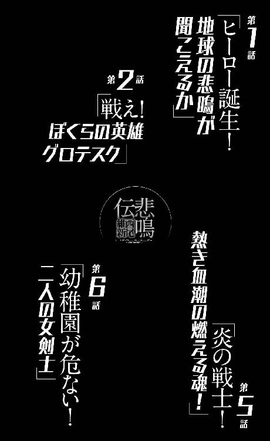
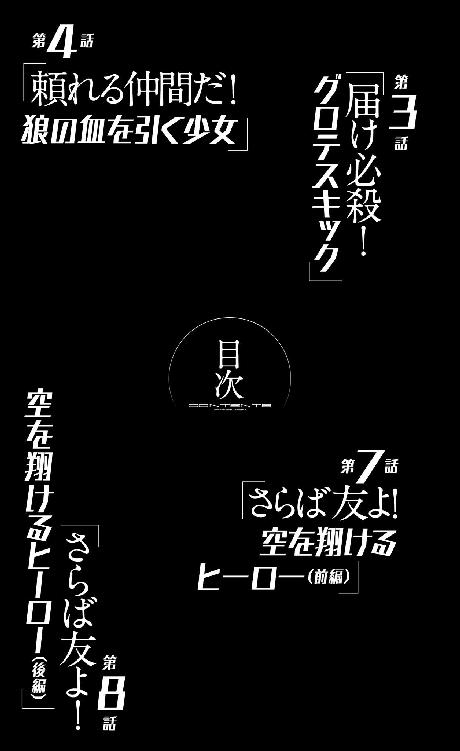
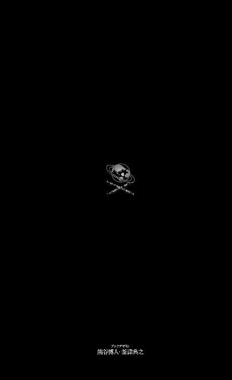
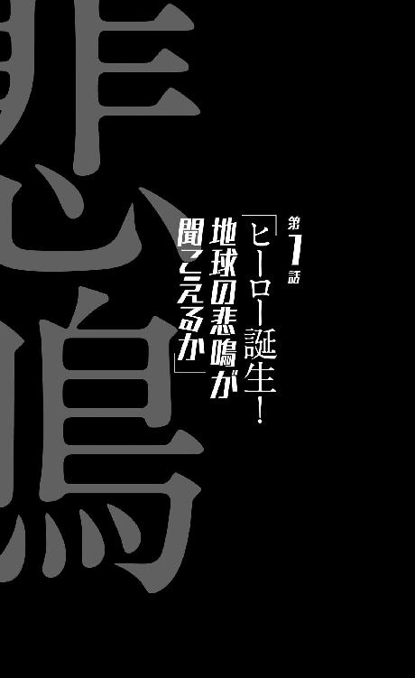
0
英雄になりたければなればいい。
誰もそれを邪魔したりしない。
きみが誰かの邪魔者になるだけだ。
1
その悲鳴が聞こえたのは、日本時間で言う二〇一二年十月二十五日、午前七時三十二分のことだったと記録されている。七時三十二分三十一秒から五十四秒までの、二十三秒間のことだった。
その悲鳴は形容しがたい。
その悲鳴は名状しがたい。
強いて今のところの統一見解を言うなら、深く、沈痛な悲しみをたたえた、振り絞るような超高音の悲鳴だったらしいが──この表現がきちんと事実に則しているかどうかは確かではないし、定かでもない。なんとなく正しそうな表現というだけだ。そもそもそれがどんな悲鳴だったかなんて感じようは、個々人おのおの、人それぞれだし──それに、悲鳴を聞いた全員の意見を聞くことは、どのような調査機関がどのようなアンケートを取ろうと、絶対に不可能だったのだから。
形容しがたい、名状しがたいその悲鳴を聞いた人間のうち、三分の一は絶命してしまったのだから。
鼓膜ではなく精神を破壊され──絶命してしまったのだから。
三分の一。
そう、とは言えたかだか三分の一──全員が死んだわけではないところをみれば、社会はその悲鳴のことを、そこまで重視すべきではないのかもしれない。大袈裟に言い募るべきではないのかもしれない。世の中にはもっと致死率の高い伝染病はたくさんあるし、人間、生きていれば、そんな悲鳴なんかよりも、交通事故で死ぬ可能性のほうがずっと高い。人類史を紐解いてみれば、数字の上では、隕石が当たって死ぬ確率のほうが高いくらいだ。
だからそんなに気にすべきではなく、だからそんなに気に病むべきではないのかもしれない。
地球上の人口が三分の二まで削られてしまったことくらい。
2
「──そんな風にみんなが考えてるんじゃないかって思うんです。七十億人だかいた人類のうち、たった二十三億人だかそこらが死んだ程度のことだと考えてるんじゃないかって──半年前のあの『大いなる悲鳴』を、みんな、そんな風にしかとらえていないんじゃないかって」
十三歳の少年、空々空は、正面に座る瘦せぎすの医者に対して、慎重に言葉を選びながらそう言った。白い部屋。白い机。白い椅子。白い壁。白いベッドに白いカーテン──いかにも診療室という部屋の模様に、うっかりすると饒舌になってしまいそうな自分を抑えながら。
瘦せぎすの医者は空々の話を興味深げに聞いている。もっとも、あくまでもそう見えるだけで、本当に興味深いと思っているのかどうかはわからない。興味深げに聞くことが、その姿勢自体が、言ってみれば彼の仕事なんだろうと思うから。
「むしろあの『大いなる悲鳴』が、倍々感覚で増大していく一方だった地球の人口問題を、わかりやすく、そしてあっけなく解決してくれたくらいにしかとらえてないんじゃあって──思うんです」
「地球の人口問題、ね」
医者は空々の言葉を繰り返した。繰り返した意図までは、空々には読み取れない。
「人口。それはしかし事実としてあるのかもしれないよ、空々くん。粛々と受け止めるべき事実として、ね。我々の住むこの日本でも、人口は増え過ぎていた。宇宙船地球号はとっくにキャパオーバーになっていた──船としては沈みかけていた。あの日、人口がまんべんなく、その上一気に、三分の一も間引かれた結果、解決したのはしかも人口問題だけじゃない。資源問題やエネルギー問題、食糧問題だって解決した。大局的な視点に立てばあの日、地球のすべてが『いい方向』に向かったと言える。違うかい？」
「いえ、そういうとらえかたがあるのはわかるんです。僕にもわかるんです。それ自体を不謹慎だって言うつもりはなくて......」
空々は更に慎重に言葉を選ぶ。ここまで来て、来ておいて、あまり慎重になり過ぎても仕方がないことは百も承知なのだが。そもそも空々は、こんな問診を受けるのは初めてのことだったので、なんとなくこういう診療所を『悩みを聞いてもらえる場所』だと思っていたのだが、しかしこうしてあっさり反論されてしまったところを見ると、決してそういうわけではないらしい。
だがそれは不快ではなかった。
こんな議論を、空々はずっとしたかったのだから。
半年前からずっと、したかったのだから──その相手が初対面の医者だというのは、なんだか不思議な気持ちもするけれど......。
「ただ、なんていうんでしょう......あんな大事件があったのに、大事件と言っても足りないくらいの極大事件があったのに、世の中がそんな風に、普通に回っているのが、僕にはとても不自然に見えるって言うんでしょうか......えっと、僕は野球部に入っているんですが」
「ほう。野球部。いいね」
ここらでそろそろ具体的なエピソードを公開したほうがいいかと思って言ってみると、瘦せぎすの医者は身を乗り出してきた。野球部という単語に反応したらしいが──学生時代に野球をやっていたという口だろうか？ あるいは、今でも草野球でならしているのかもしれない。というのは空々の、いわば期待を込めた見方であり、その瘦せぎすの体格からすると、医者はあまり運動神経がよさそうには見えないのだが......。
「ポジションはどこだい？ 空々くん」
「いえ、僕はまだ入部したての一年生ですから、はっきりとしたポジションとかはないです......小学生のときは、ショートを務めていましたけれど。それで、こないだのゴールデンウィーク、野球部の合宿があったんです」
空々は逸れそうになった話を軌道修正する。
「先輩達が話しているのを、合宿所で聞いてしまって。聞いてしまったというか、それはミーティングの席でのことでしたから、聞こえて当たり前だったんですけれど......、練習のキツさに、あまりのハードさに、愚痴っていた先輩がいたんですよ」
「愚痴っていた？ どんな風に？」
部活動の先輩の悪口を、大人に対して密告しているようで、空々の口調はともすればどうにも奥歯にものが挟まったかのような物言いになりかねなかったが、そう合いの手を入れてもらえると言いやすい。さすがはプロだと空々は思った。
「『あーあ、今この瞬間、またあんな悲鳴が響いてくれれば、練習も中止になるのになあ』って──その先輩はそう言ったんです」
「............」
「フォローするわけではありませんけれど、別にその先輩は、特に皮肉屋だとか、取り立てて斜に構えた人だとか、飛び抜けて性格が悪いとか、そういうわけではないんです......、むしろ僕達新入部員からしてみれば、とても面倒見のいい、頼りがいのある先輩って感じで......、一年生はみんな、親切にしてもらっていて。だから僕は結構、その人のことが好きで、尊敬しているところもあったんです。だからこそ、その人がそんなことを言ったのが、僕には信じられなくて」
いや。
信じられなかったのは、先輩のことそれ自体でもあるのだが、その直後にあった、他の部員達の反応だった──ミーティングに参加していた野球部員は全員、その発言を受けて笑ったのだ。
大爆笑したのだ。
先輩の発言は──どっと、受けたのである。
「たった半年なんですよ、あれから、まだ」
「正確には、今日は二〇一三年の五月二十七日月曜日だから、半年と三十二日だね」
医者は卓上カレンダーを見ながらそう言った。
「ええ......そうですね。正確にはそうです。半年と三十二日しか経っていないのに、もうそれが、冗談のネタみたいになって、しかも受けている。受け入れられている。それって、ただ事件が風化するより、忘れられるよりも、もっと重大なことなんじゃないかって、僕には思えて──」
空々は言う。段々と言葉を選んでいる余裕がなくなってきた。
「──だって、部員の中には、身内が死んだ人だっているはずなんですよ。と言うより、確率の問題からして、知り合いが死んでいない人間なんて、地球上にひとりもいないはずなのに。なのに」
「だが空々くん。悲劇に対して、いつまでも悲嘆にくれているわけにはいかないだろう。確かに、その先輩の言葉は、あの悲鳴で死んだ人達のことを思えば褒められた発言ではないのだろうけれど、じゃあ、幸運にもあの日を生き残った人間は、その後はずっと、ろくに冗談も言えない人生を生きるべきだなんて、きみは言わないだろう？」
「......でも、たった──」
「半年。と三十二日。じゃあ一年経てばいいのかな。二年後ならいいのかな。十年後ならいいのかな。その先輩の冗談を、きみはいつなら許容できた？」
「............」
わからない。いや、本当はわかっている。
たとえ十年後であろうと──許容できなかっただろう。自分は先輩を『許せなかった』だろう。
今から十年後、二十三歳になった自分なんて想像もつかないけれど、そのことだけはリアルに確信できた。
「大体、そのとき、きみはどうしたんだ？ ミーティングをしていた部屋が笑いに包まれたとき、なごやかなムードに満たされたとき、きみは周囲に合わせて、笑ったりはしなかったのかな？ 笑った振りを、したんじゃないのかな──」
「それは──えっと」
「そして空々くん。あんな大事件があったのに世の中が普通に回っているのが不思議に思えるときみは言ったけれど、そんな風に『世の中を普通に回す』ために、どれだけの大人が、いや大人に限らないな、どれだけの人々が、大変な思いをしてきたと考えている？」
「.........？ 大変な思い......ですか？」
「ああ。この国は幸いにも人口が大幅に減ろうと、なんとか以前と変わらぬ自治権を保っているが、しかし世界を見れば、滅んで隣国に併合されてしまった小国の数は数知れない。決して、世の中が普通に回っているわけじゃない。少なくともきみが言うほどにはね。あの『大いなる悲鳴』で、世界が引っ繰り返ってしまったことは間違いがないさ」
いや、と医者は言って、自分の言葉を修正した。
「引っ繰り返ったのは、世界じゃなくて、地球か。地球だな」
「......みんな、怖くないんでしょうか？」
空々は、更に踏み入ったことを言う。ここから先は、受けた医者の対応次第では、口にすることなく帰るつもりだったのだが、彼は意を決した。ちなみに『意を決する』というのは、この少年にとってあまりよくあることではない。
「僕は怖いです。だって、それこそあれから半年以上経つのに、結局、あの『大いなる悲鳴』が『何なのか』は、『何だったのか』は、まったく解明されていないんですよ。少なくとも、世間に向けてアナウンスされていることは何もない。どころか、最近じゃあニュースでも、あれについて全然報じなくなってしまいました」
「ネット上ではまだ盛んに議論されているけれどね──まあそこでも『大いなる悲鳴』の正体について結論が出ていないのは確かだ。仮説は色々あるみたいだけれど......、どうにも牽強付会な感が強いね」
牽強付会。中学一年生相手に、難しい言葉を使ってくる。
もっとも家庭の事情で、語彙が年齢に較べて豊富な空々には、それはむしろわかりやすいほうに属する言葉だったが──しかし、自分以外にそんな言葉を、口語で使う人間に会うのは初めてだった。
医者は続ける。
「地球全土に響いたあの悲鳴が、どこから聞こえてきたのかも、どんな風に聞こえてきたのかも、まるっきりの不明だと言うのだから始末に負えないよね──対策の打ちようがないようにも思える。だからみんな、考えることを放棄してしまったのかな？」
「放棄していいことではないでしょう......」
「そうだね」
『大いなる悲鳴』。
あの日に起きた災害を示す名称は、二転三転したものの、結局はそんな、まるっきりそのまんまな言葉に落ち着いていた──わかりやすくて抵抗なく受け入れられる名称だ。しかし、その名称ほど、現象が明快だったわけではない。
結果は確かにとても明快だ。
人類の三分の一が、その悲鳴が原因で落命した──心臓が止まった。
脳の機能が停止した。
だが、わかっていることは本当にそれだけなのだ。それ以上は、どころか、それ以外は何もわかっていないと言っていい。生き残った三分の二と、死んでしまった三分の一に、なんの違いがあったのかもわかっていない──健康そのものだった全盛期のアスリートだろうと関係なく死に、その一方で『大いなる悲鳴』当時、痴話喧嘩で腹を刺され、緊急手術で開腹中だった男がすんなり生き残ったりもしている。その話には、手術を手がけていた主治医が死んだという笑えないオマケつきだ。
老若男女区別なく。
本当にランダムに人類は削られた。
その上、生き残った側の三分の二は、身体的には何のダメージも受けていない──ようだ。そのように観察されている。『大いなる悲鳴』以前と『大いなる悲鳴』以後で、何らかの肉体的な変化があったということもない。
これではまるであの現象が、精密に、人を三分の一だけ禍根なく殺すことを目的とした、そんな『攻撃』だったかのようではないか。
「......そう、そう、そこです。そして死んだのが人類だけだっていうことを、もっとみんな、不思議がるべきじゃあないですか。動物は一匹も死んでいない──というか、そもそも動物にはあの『大いなる悲鳴』は聞こえなかったらしいですし」
「そうだね。動物、魚、虫、微生物──いっそ植物も含めてみるか。とにかく、人間以外の生き物は、あの『大いなる悲鳴』では、何の被害も受けていない。いや、すべての生き物にとって天敵である人間の数が大胆に目減りしたのだから、むしろ恩恵をこうむったとも言えるね」
「............」
空々は少し黙った。
医者のその言葉が先輩の冗談と重なって聞こえたからだ──だが、先輩の言葉が、周囲の『受け』を狙っての発言だったのと違って、この瘦せぎすの医者の言葉は、ただ事実を事実のまま述べたという感じだった。
『目減り』という言葉を『目減り』という意味で使っている。
だからだろう。
違和感は覚えたものの、それでもう帰ろうという気にはならなかった。
「空々くん。どうやらきみは、あの『大いなる悲鳴』について一通りの知識を持っているようだけれど......、じゃあ、あの悲鳴が機械には一切録音されていないことは知っているかい？」
「あ、はい......知っています」
なにせ地球全土に響いた悲鳴なのだ。
日本では早朝でも、『大いなる悲鳴』が響いたそのとき、世界はあらゆる時間軸で動いていた──どこかで誰かが、何らかの録音機材を動かしてはいただろう。否、日本にしたって、テレビ局やラジオ局では、生番組を放映している最中だった。
人気キャスターや有名アナウンサーが、電池が切れたようにばたばた死んでいく様が、そのまま全国に中継されたではないか──もちろん、電波に乗ったそんな衝撃映像も、三分の一の視聴者には届かなかったわけだが。
しかし不思議なことに、その『大いなる悲鳴』は、言うならばその殺戮音声は、世界中のどんな機械にも録音されていなかったのである。デジタルアナログを問わず、一切、データ化されなかったのだ。
総じて言えば、人間ならば誰もが聞いたはずのあの悲鳴を──意識不明の重病人や、はたまた聴覚が生じているかどうかも怪しい発生したての胎児でさえも、人間ならば例外なく聞いたはずのあの悲鳴を──人間以外は、生物無生物を問わず、聞かなかったということなのである。
ならばあの『大いなる悲鳴』は、聴覚器官を通さず、直接脳に関与するような悲鳴、いや──脳どころか、心に訴えかけるような悲鳴だったと、そう表現するのが一番適切なのだろう。
「まあ言ってしまえば、人類がこぞって、同時に幻聴を聞いたというシンクロニシティだと解釈すべきなのかもしれないがね。そんな解釈をすれば、何かがわかったような気になれるかもしれない。実際問題、地球全土にくまなく響く程度の音量で悲鳴があったとすれば、そんなもの、世界中の建築物が崩壊する、物理的な破壊力を伴う音となるだろう──ふふふ。あれからたった半年で、世界が元通りとは言わないまでも、きみの言うところの通常モードでの試運転に入っているのは、あくまでも『人が死んだだけ』で、物理的な被害が何も出ていないからというのはあるかもしれないね」
「そうですね......」
その辺りが、これまでの戦争や災害との違いだ。
もちろん、運転手が死んだ自動車は暴走して事故を起こしたし、同じような理由で世界中のあちこちで火事やらが起きたりした。もっと甚大な被害も起きた。そんな二次災害ではいわゆる『物理的な被害』もあったのだが。
それでも人的被害に対して、物理的な被害はあまりにも少なかった。
「もっともネット上じゃあ『大いなる悲鳴』は間違いなく物理的な攻撃だったという説は、なかでも『宇宙からの超音波説』はなかなか根強いんだがね」
「宇宙人が攻めてきたって奴ですか......ありますね」
ここで空々は、この診療室の椅子に座ってから初めて、気を緩めた。
緊張していることに違いはないが、どうやら自分は少しリラックスしてきたようだ、と自覚した。
「荒唐無稽ですよね、よりにもよって宇宙人って......。まあ、『大いなる悲鳴』直後は、そんな仮説もそれなりに説得力を持って語られていたようですけれど......」
「そうだね。でも、宇宙人がその後地球に攻めてこないことを受けて、やがて弱体化していった。いや、みんな──忘れてしまった。空々くんに言わせれば、その説に限らず、『大いなる悲鳴』そのものを、みんな忘れつつあるんじゃないのかってことなんだよね」
「いえ、だから、忘れつつ......じゃなくて、受け入れつつ、です。忘れてはいないんだけど、自分の中で重要度が下がっていたり、抵抗がなくなっていたりするということです。つまり......」
空々は質問に答える。
「『あれ』を、なんていうか、歴史上の出来事として受け入れてしまいつつあるような──だからこそ、原因を疑問にも思わず、それを絡めた冗談を言ったりできるんじゃあないかって......そんな風に考えてしまいます。ほら、たとえ残虐な殺人事件であろうと、切り裂きジャックの事件なら、漫画のネタにしても誰も怒らないのと同じで」
「受け入れたら、駄目かい？ あの『大いなる悲鳴』を認めたら駄目かい？ 認めないということ、それは言いかたを換えれば、現実から目を逸らしているということじゃないのかな？」
「『わけがわからないもの』が、自分の世界にあるのって嫌じゃないですか？ たとえば......」
言ってからたとえるものを探して、先ほど医者が見ていた卓上カレンダーを、空々は選んだ。
「それが『カレンダー』だってわかってるから、先生はそれを机の上に置いているんですよね？ もしもそれが、『よくわからない』、正体不明の何をするための道具かも不明な謎の置物だったとすれば、先生はそんなものを机の上に置きますか？」
「うまいたとえだね。だけど的外れだ」
医者は一回褒めてから、しかし手厳しく否定した。
「たとえ話としては、あの『大いなる悲鳴』は、身体的な疾患に置き換えたほうが適切だろうね。たとえば空々くんが頭痛に苦しめられたとする──正体不明の頭痛だ。現代の医学では解明できない。これがきみの言う『わけがわからないもの』だとしよう。わけがわからないのに頭が痛いなんて、嫌だよね。だけど、それを受け入れなかったからと言って、痛みが消えるわけじゃあない」
「............」
「むしろそういう場合、『これはそういうものなんだ』と受け入れてしまったほうがよっぽど楽になる──病気とうまく付き合って行く心持ちって感じかな。病人はよく、自分の病気をネタにして受けを取ったりするだろう？ それと同じ、というたとえは、案外しっくりくる。あの『大いなる悲鳴』を受け入れてしまっている世の中の動きを簡単に分析するなら、そういうことじゃないのかい？ つらい話は笑い話にしてしまうのが一番だし、わかるはずもないことをずっと思い悩むことで、人生が貧しくなっちゃあいけないだろう。一病息災という言葉もある。あれを教訓に、前を向いて生きていかなければ」
「......そうですね」
まったくもって、その通りだ。反論の余地がない──と言うより、具体的なたとえ話はともかくとして、似たようなことを、空々も実のところ、思ってはいた。彼はただ頑なに、ただひたすらに、今の『未来へ向けて動いてしまっている』世の中に嫌悪感を抱いていたわけではない。
だけど、空々はそういう意見を言って欲しかったのだ。誰かに。
だから、中学一年生である空々空にしてみればかなり深刻な覚悟をしてこの診療所を訪れたのだが、その覚悟に見合うだけのものは、ここまでの問診で十分に受け取れたと言えそうだ。
「空々くん」
医者は卓上カレンダーの隣に置いていた、カルテを手に取った。いや、カルテではない。空々が待合室で書いた問診書類だ。そこには空々の名前や住所が書いてある。
「空々空くん......独特な名前だね、とは、言われ飽きてるかな？」
「言われ慣れてます。むしろ今日は、今の今まで言われなかったことに驚いていました」
「親につけられた変な名前で思い悩み、通院してくる人もいるからね......その辺は気を遣うさ。もっとも、きみはどうやら、そうではなさそうだが」
「ええ。気に入ってます。簡単でいいですし、一発で憶えてもらえますし」
「ふむ。中学一年生──私立山石中学校一年二組。野球部......さっきはなんだか謙遜するようなことを言っていたが、山石中学校の野球部は、かなりレベルが高いんじゃなかったっけ？ 入部試験に合格するのは至難の業だと聞いたことがある」
「いや、僕は元々スポーツ推薦枠だったんで──」
応えつつ、この言い方が却って嫌味みたいになってしまわないかが気になった。聞いたことがある、というのが、誰から聞いたことがあるのか、にもよるのだが、もしも推測通り、この医者が野球に造詣の深い人間だったなら。
「──それに、今年はあんまり勝ち進めないかもしれません。と言うのも、実を言いますと、その『大いなる悲鳴』で、主力だった二年生が何人か亡くなっているので──」
主力以外も死んではいるが、おそらくはたまたまだろうが、山石中学校の野球部では、なぜか主力に偏って被害が出ていたのだった。
「ほう。それがあって、きみは先輩の発言がより許せなかったのかな？ 彼にとっても尊敬すべき先輩が死んでいるというのに、どうしてそんなことが言えるのか、と？」
医者が目敏く、空々の話の前後を繫げる。
「しかしその主力の二年生達が、性格のいい人物だったとは限らないしねえ。才能と人格は一致しない、むしろ反比例する傾向にある。ひょっとすると、死んでざまあみろと思われるような人達だったのかも。だとすると、やっぱりその先輩を一方的には責められない」
ぴくり、と空々はその言葉に反応した。反応したといっても、肩が少し震えた程度のことだったが、しかし医者は、それも見逃さなかったようだった。
見逃さなかっただけで、何も言わなかったが。ここでは。
むしろ医者は自分のほうから、
「ご両親は健在かい？」
と、話題を転じてきた。
「あの『大いなる悲鳴』のとき、ご家族は被害に遭ったかな？ ちなみに私は、両親と姉と妹を失った。兄が生きていて、昔別れた妻と娘は、どうやら無事だったと聞くな。だから身内が全滅というわけではないのだが......確率が本当に三分の一だったとするならば、随分とアンラッキーだった」
「............」
そうですか、と空々は言った。それしか言いようがない。
ご愁傷様、と言うには、もちろん空々の身内も死んでいるからだ。
「僕は、両親と兄弟は無事です。弟が二人いるんですけど......二人とも、なんともありませんでした。ただ、仲のよかった従兄弟の家が、全員、亡くなりました」
医者が先に、それもかなり開けっぴろげに言ってくれたので、空々も言うことができた。ひょっとすると、そういう診察のテクニックだったのかもしれない──言いやすくなったのではなく、言わざるを得ない状況に追い込まれただけだったのかも。
だとしても、これを言うことで空々の気が楽になったことも事実だ。
「仲のいい従兄弟、ね。きみは両親や弟とは、仲良しかな？」
「ええ......そりゃ喧嘩をすることもありますけれど、でも、基本的には......少なくとも僕のほうからは、仲がいいつもりですけれど......」
「普通、きみのような年齢の子供がこういう診療所を訪れるときは、お父さんかお母さん、どちらかが付き添いそうなものだけれど」
医者は言った。
「今更の質問だけれど空々くん、ここには、ご両親の勧めで来たわけではないのかい？」
「ええ......いや、親には何も言ってません。僕の判断で来ました」
厳密に言うと自分一人での判断というわけではないが、まあ最終的には一人で決めたことだ。だから空々はそう言って、医者もそれ以上、あるいは何か察するところはあったかもしれないが、深く追及しようとはしなかった。
「ご両親の職業は？ 共働きかな？」
「父は大学で働いています」
大学教授、という肩書きを口頭で説明すると、なんだか親の職業を自慢しているような気分になるので、空々は父親の職業を紹介するとき、そんな風に濁すことにしている。言いかたひとつで随分柔らかくなるものだ。
「母は専業主婦です──これまでパートに出たこともないそうです。あ、でも、家事全般を完璧にこなす人です。お手伝いさんを雇う必要がないくらいに」
「はは。普通の家庭では、なかなかお手伝いさんなんて雇わないんだけどね──」
空々家の裕福さを揶揄するようなそんな医者の呟きは独り言だったようで、声は小さく、空々までは届かなかった。
「どうして共働きだって思ったんですか？」
「いやいや、両親が共に働きに出ているから、空々くんは気を遣って彼らに何も言わず、一人で来たのかと思ったんだよ──まったくの的外れだったけどね。なかなかシャーロック・ホームズのようにはいかない」
「......心配をかけたくなかったのは事実です」
「そうかい。心配をかけたくない、ね──なんだか、既に誰かに心配をかけてしまったことを後悔しているような物言いだけど？ 友達に相談でもして、心配されてしまったかな？」
「............」
空々は、これに関しては答えなかった。
医者も深くは追及せずに、「じゃあ」と、次の質問へと移行した。そこから更に十分ほど、問診は続いた──中には空々からすれば、『どうしてそんなことを聞くのかわからない』という、彼が抱えている悩みとは一見関係なさそうな質問も含まれていたが（たとえば『随分と固い喋り方をするけれど、本を読むのが好きなのかい？』とか、そんな趣味嗜好に関する質問もあった）、診察の上では必要なのだろうと思って、なるべく正直に答えた。
なるべくは。
3
「結論から言うとだね、空々くん」
問診を終えて、瘦せぎすの医者は空々のほうを向いて、言った。口調は気楽そうなものだった──それは多分、不真面目なのでも不謹慎なのでもなく、中学生の子供を相手にする上で、あえて深刻な物言いにならないようにしているのだろうと空々は判断した。
子供扱いされるのが好きなわけでは、もちろんなかったが、それを口に出して言うほど子供でもない。少なくとも精神的にはそのつもりだった──だが。
続いた医者の言葉は、まさしく空々を『子供扱い』するものだった。
「きみがその先輩に強い嫌悪感をおぼえたのは、他ならぬきみ自身が、その先輩と同じようなことを考えていたからだよ。きみは我慢して言わなかったのに、その先輩は我慢せずに言った。それがきみは、羨ましかったんだろう」
「............」
羨ましかった？
心の中でふつふつと煮立つこの、なんともいえない自分の気持ちは、そんな簡単なひと言で片付いてしまうのか、と、空々は息を吞んだ。息を吞んだので、何も返答することはできず、また何も反応することはできなかった──対して医者は、同じような口調で続ける。
「他ならぬきみ自身が、きっと誰よりも『大いなる悲鳴』について、なんとも思っていないんだ──どれほど言葉を尽くそうとも、それ以前の問題なんだ。人口が三分の一削られたことについて、きみはまったくなんとも感じていない。生き残ったことへの喜びも死んでしまった者への悼みも、きみの中には何もない。そしてそのことについて、きみは強い罪悪感を覚えている。自分の感覚が、感覚のなさが、現代社会では倫理的に許されないものであることを、きみはわかっている」
「............」
「だからきみは苦しんでいる──理論上悲しむべきなのに、事実上悲しめない自分に、苦しんでいる。社会的道徳と自分の感覚との真っ向からの食い違いに、対立に、思い悩んできた。なのに、その先輩は、そして世間は、今頃になって苦しみもせず、そんな悩みを抱くこともなく、実に健全に、ありのまま『大いなる悲鳴』を受け入れてしまった──きみはそれが嫌なんだよ。きみが今心の中で抱いている気持ちをたったひと言で説明するならば、『なんで自分だけが、こんな理不尽に悩まなければならないのだ』ということなんだ」
何か反論するべきなのか、と空々は悩んだ。
だが、そんなことで悩む時点で、きっと反論すべきではないのだろうという結論がすぐに出る。ここには意地を張りに来たんじゃないという結論。
そして──この状況下、そんなことを正面から言われているこの状況下で、そんな冷静な結論を出せてしまうことがまた同時に、医者の言い分の正しさを証明しているとも言えた。
「仲良しだったという従兄弟が、一家全員死んだと聞いたときも、あるいは自分の知り合いの三分の一が死んだという現実を突きつけられたときも、空々くんの心はそれを普通に受け止めてしまったんだろう。現実として、認識してしまったのだろう。今日は晴れとか、雨とか、そんな情報のひとつとして。だが、心ではない理性では、『こういうときは悲しまなければならない』、『こういうときはつらく思わなければならない』ということがわかっていた──人としてのありかたをきみは教えられているし、本で読んで知っていた。だからこそ、その食い違いに苦しんだ。絶え間なく苦しんだ。だからきみが今よりももっとつらかったのは、『大いなる悲鳴』直後のことだったのかもしれないね。知り合いが死んだことを素直に悲しめる、真っ直ぐ悲嘆に暮れることのできる人達が、きみは羨ましかったんじゃないのかな。世間と同じように、悲しんだり泣いたりできない自分が酷い人間にしか思えなくて、苦しんだんじゃないのかな。後ろめたくてしょうがなかったんじゃないのかな」
「......はい」
空々はやっと、頷いた。反応らしい反応ができた。
当時のことを思い出すと、いまだに胸が苦しくなる。
悲鳴が聞こえた直後、世界が終わるんじゃないかという混乱の中、周囲の全員が──大人も子供も、泣き、嘆き、取り乱す中、なんとか彼らと同じように、悲しんでいる振りをする自分。
従兄弟の死を悲しんでいる振り。
友達の死に涙している振り。
あるいは全人類を襲った未曾有の危機に恐怖する振り──そんな醜悪な、己の罪深い行為を思い出すと、身が千切れそうだ。
そしてだからこそ、だ。
だからこそ──あのとき、悲しんだり恐れたりしていたはずのみんなが、あっという間に日常を取り戻し、『自分と同じように』、何も感じずに、笑ったり面白がったりしているのが信じられないのだ。
何の振りもせず、それを表に出しているのが信じられないのだ。
信じられず。
許せないのだった。
「ずるい、とすら──きみは思っているのかもしれないね。だからこそ、その先輩を含む世間に、そうも厳しい目を向けてしまう。そんな些細な冗談が許せず、責めるようなことを思ってしまう。だが、それは結局、逆恨みのようなものなんだよ、空々くん。きみの人間性や倫理的苦悩について、世間は何の責任もないのだから。きみが苦しんでいるからと言って、世間までそれに付き合って苦しまなきゃいけない理由はないんだぜ」
「......そうですね」
それは、空々少年にとっては、指摘されてみると『その通り』としか思えなくなるようなロジックだった。半年前に持っていた嫌悪感は、『大いなる悲鳴』の被害に対して『何も思えない』自分に対してのものだったが、今の嫌悪感は世間に向けたものだ──だからこそ、どうして自分がそんなに腹が立つのかわからず、ここに来たのだったが。
とても明確な『その通り』を得た気分だった。
そうか。
結局悪いのは自分だったのか。
自分の人間性に問題があったのか。
そう思えば、空々の気持ちはすごく楽になった。ここしばらく背負っていた荷物が、ふっと消えてなくなったようだった。
「問診した上での結論をまとめよう──もちろんあれだけの、ほんの一時間にも満たない会話だけできみのすべてをわかったつもりなんて私にはないから、これはひとつの指針としてだけ聞いてくれ。空々くんが『違う』と思えば、それは『違う』のかもしれない。その程度のことだ」
「はい。聞かせてください」
「きみを苦しめているものの正体は、『どうでもいい』という気持ちだ──そんな投げやりな気持ちだ。きみは周囲の誰よりも、何もかもを受け入れている。はは、受け入れている、という表現を選べば、まるでそれが褒められたことのようだけれど、きみ自身が強い嫌悪を覚えていたように、いいこととばかりはいえないね」
「......はい」
「仲のよかった従兄弟が死んだことについて言うならば、きみ達の間にあったであろう友情が偽りだったわけでは決してない。だがきみにとってその従兄弟は、生きていても死んでいても、どちらでも同じなのだ。生きていても仲良しだし、死んでしまっても仲良しなのさ。生きていれば遊べるし、死んだら遊べない。だけど友達であることには違いない──そんな感覚だ」
それはあまりに酷い言い草ではあったが──医者としてはあるまじき言い方だったかもしれないが、空々はそんなところには無反応だった。いや、無反応である自分を、強く恥じはした。
ここでは怒らなくては、激昂しなくてはならないのではないかと思った──従兄弟についてそんな言いかたを許すべきではないと思った。だが、思っただけで行動には移さなかった。怒ってないし、激昂してなかったからだ。
普段ならばそんな『振り』を──そんな演技をしたかもしれない。
けれど今は、そういう自分を、看破されている途中なのだった。真っ最中なのだった。
「現実に対する適応性が、きみは異様に高い少年なのだという言い方もできる──たとえ今この瞬間、何の前触れもなく二度目の『大いなる悲鳴』があったとして、目の前にいる私が死んだとしても、きみはまず、それを受け入れて、混乱することなく、私の蘇生を試みるだろう」
自分が死んでも、それさえ受け入れてしまうかもしれないね、と医者は付け加えた。ことのついでのような付け加えだったが、本来はことのついでに言うような話ではない。
自分が死ぬこと。命がなくなること。
それはこの十三歳の少年にとって、いまいちうまくイメージできないことではあった。二十三歳の自分よりも、ずっとイメージできない。いやそもそも、種類種別にかかわらず、空々には己の未来をうまく思い描くことができない──小学生の頃に出された作文の課題で、ありふれたテーマである『将来の夢』には、随分と苦戦させられたものだ。
そのときは苦しまぎれに『テレビに出てくるような変身ヒーロー』と書いたのだったか。
子供らしいいい夢だと思っていたのだが、そのとき空々は既に小学五年生だったので、クラス中から失笑を浴びた。スーツアクターにでもなりたいのかと笑われた。
まあそういうものなのだろうと、その失笑も甘んじて受けたが。
甘んじて受ける能力が突出している──なんて言われても、嬉しくもなんともないが、指摘を受けて振り返ってみれば、なるほど、自分は昔から、そんな人間だった。
「きみのその人間的特性がどういう原因で生じているのかはまず措くとして──しかし問題は、これはあくまでもきみにとっての問題という意味だが、問題はそれ自体ではないのだ。きみがその『どうでもいい』という感覚を、酷く、そして深く恥じているという点こそが問題なのだ」
「............」
「すべてが『どうでもいい』きみにとって唯一受け入れられないのが、他ならぬ自分自身であると言えばいいのだろう。きみは従兄弟の死を受け入れられる自分を恥じている。知人の死を受け入れられる自分を恥じている。『大いなる悲鳴』さえも受け入れられる自分を恥じている。野球部の先輩のことも、本当は受け入れてしまっている──許せないと言うだけで、実際にはそれほど怒っちゃいない。でなきゃあんな風に、先輩をフォローしながら喋ったりしないさ」
医者は言う。診断の結果と言うには、やはり口調はフランクだったが。
「ただ、それを受け入れるのが『いけないことだ』という倫理観がきみの中には強くある──だからこそ、必要以上にきみは『大いなる悲鳴』や、先輩に嫌悪感を覚えるのさ。本当は受け入れてしまっているから、受け入れていない振りをしなくてはならず、その演技がバレることを恐れて、必要以上に振る舞いが倫理的になる。大きな演技になる。そういうことだ」
空々は頷く。その言葉を自身の中に浸透させていく。それが今の自分にとって、一番やるべきことだという確信があった。
「目上の先輩の悪口を言うべきではないという倫理観と、そんな冗談を許すべきではないという倫理観のせめぎあいが、先ほどのきみの、奥歯にものが挟まったような物言いだったのだ。不安恐怖の一形態という表現で説明することも可能だろうね。きみは『いつか、自分が何かとんでもないことを仕出かすんじゃないか』という不安に、恐怖に支配されている。『こんな自分は危険なんじゃないのか』という気持ちだ──いつか酷い犯罪を犯してしまったり、あるいは、親しい誰かを傷つけてしまうんじゃないかと恐れている。どうやら周囲と感性が異なっているらしい自分が、わからないままに『常識のない振る舞い』をしてしまうんじゃないかと思っている──違うかい？」
「......違いません。そうです」
肯定したものの、しかし、はっきりとそんな形の不安が空々の内心にあったわけではない。だが、漠然としたそんな『気持ち』はあった。それが今、医者によって言語化されることで、自分の中で整理されていくのだった。
気付きが連続していて。
それは空々少年にとって快感だった。
実のところ彼にとっては『大いなる悲鳴』よりもよっぽど『わけのわからないもの』であった空々空という自分自身が分析され、解きほぐされていくことが、気持ちよくないわけがなかった。
ふと、連想的に思い出したことがあった。
空々は、いわゆる『矯正された左利き』である──最近はそれが子供の人格形成にあまり好影響を与えないという理由で避けられることもあるようだが、空々の両親は知ってか知らずか、左利きだった空々の利き手を矯正した。
ゆえに空々は鉛筆と箸とを右手で使う。
しかしボールを投げたりハサミを使ったりするところまでは矯正されていないので、それらの行為は左手で行うし、また、音楽の授業でリコーダーを使うときは右手を上に持ってくる。どころか、チョークで黒板に文字を書くときや筆で絵を描くときも、左手を使う。
だから全体的に見れば『左利き』のままであると言っていい。ただ、日常動作で一番よく使う『鉛筆と箸』を右手で使う以上、果たして自分が『左利き』を名乗っていいものなのかどうかを、ずっと疑問に思っていた。
『利き手は？』と聞かれたときに、当然空々は『左』と答えざるを得ないわけだが、しかしそのとき、噓をついているような気持ちになってしまう。だからと言って、『鉛筆と箸は右手を使うけれど、あとは左利きなんだ』と言い連ねるのも、なんだか言い訳がましい。
それにそんなことを言うと、『ふうん、じゃあ両利きなんだ』と勝手に納得されてしまったりもする──だがそれも違うのだ。誤解なのだ。訓練を受けていない以上、左手では鉛筆は使えないし、箸も持てない。
つまり空々にとって『利き手』とは、『わけのわからないもの』だった。みんながどうして自信をもって自分の利き手を断言できるのか、不思議でしょうがなくて──その話題になると気分が悪くなっていたくらいだった。噓をつきたくないのに真実を言えないのは酷いストレスだった。
だがある日、たまたま何かの本で、『クロスドミナンス』という言葉を知った。空々のような『矯正された左利き』には、そんな名前があるのだと知った──そのときの感動は、たとえ鉛筆が何本あっても、書ききれたものではないだろう。
自分に名前があること。自分に呼び方があること。
その感動を、空々は忘れたことがない──そして今もまた、同じような感動を味わっていた。
わかりやすく説明されて。
そうか、自分はそういうものなのか、と認識できた。
「常時、風習の違う外国で暮らしているような気持ちなのかもね、空々くんは──自分の価値観が他人とズレていることを経験上よく知っているから、過剰に合わせようと頑張ってしまう。郷に入っては郷に従えと言うが、きみは地元民のはずなのに、従うことに四苦八苦しているというわけだ。常識がある振りをし、人間らしい振りをする──ゆえにその基準から外れている人達を見ることに耐えられない。それはきみにとって『基準が崩れる』ということでもあるからね」
「基準......つまり、人間らしさがわからなくなってしまうということですか。一たす一が二になると思っているところに、急に一たす一が七だと主張する人が現れてしまったような──」
「算数じゃなくて社会で説明したほうが適切かな。六四五年に大化の改新が行われたという『年号』を、実感して理解することは難しいが、とりあえず丸暗記することはできる。だからきみは『六四五年には大化の改新があった』と見てきたように主張することができた──だがそこに、『大化の改新は去年起こった』と、もっともらしく語る人間が現れたら、混乱するだろう？ 混乱どころか──酷く怒るかもしれないね。自分自身を否定された気持ちになるかもしれない」
「と、言うより......、『間違いを指摘された気持ち』になるかもしれません。それも酷く恥ずかしい間違いを。月極駐車場を、『ゲッキョク』っていう会社の駐車場だと思っていた、みたいな──その恥ずかしさ、気まずさを挽回したくて、僕は過剰に強く主張してしまうのかも──」
「ふむ。そういうたとえ話がすらっと出てくるようであれば、その先にある結論に辿り着くことも容易だろう。つまり、きみがどれだけ『怒り』、本で読むような倫理観にしたがって『嫌悪感』を覚えたところで──世の中はそんな風には回っていない。月極駐車場は、月ごとに料金を払う駐車場でしかないのだ」
「僕が思うような倫理観は......、というか、道徳の授業で習うような何かは、現実の世の中には『ない』ということですか？」
「ある。しかし流動的だ。またいつ起こるともしれない『大いなる悲鳴』に恐怖しながら、その『大いなる悲鳴』を笑い話にできたり、死者を悼みつつ、その死者を冗談のタネにすることもできる。それが一般的な人間性だ。両立が可能なんだよ」
「両立が可能......？ 悲しみながら笑えるってことですか？ 悲しんでいる振りでも、笑っている振りでもなく？」
「同時にやっているという意味ではない、人という生き物の二面性について、私は今語っているんだよ。この国ではいつからか日常的な風景だが、まあ国会議事堂で政治家の失言があったとしよう。例によってそれを取り上げてのメディア・リンチが始まる。ニュースでそれを見て、国民は眉を顰めるわけだが、だが眉を顰めている国民だって大抵は、同じくらい『けしからん』ことを、友達との会話の中では言っていたりする。公の場で言うべきではない、なんて注釈は、本来成り立たないはずだ。それじゃあ陰口なら叩いていいと言うことになるものね」
「......それはつまり、僕が先輩の発言に対して腹を立てていたのと同じことですか？」
「それは全然違うかな。普通はそこに倫理的な矛盾は生じない。きみのように苦しんだりしない──『自分もやっているのに他人を怒る』のと『自分はやっていないから他人を怒る』のは全然違う。『やりたくてもやっていない』場合は、特にだ。普通は自分のことを棚に上げて、政治家の失言それ自体に怒りを覚えるのだが、きみの場合は、『自分が「そうならない」ことに腐心しているのに、なぜ彼はああもあっさりそうなってしまえるのか』という点に嫉妬を覚えてしまうんだ」
「............」
「いや、今のは純粋にたとえ話であり、きみが実際に政治家に嫉妬しているわけじゃあない。きみの嫉妬の対象は、もっと手広い。それに『棚に上げて』と私は今言ったけれど、それは責めるような意味合いで言ったのではないことを理解して欲しい。自分を棚に上げることは、人が生きていく上で絶対に必要な能力だ。きみはもっと強くそれを持つべきだよ、空々くん。一応は自己を肯定する能力と言い換えておくが......きみに欠けているものはそれだ。きみは現実を肯定的に、ありのままに受け入れられる割に、自己を否定的に見過ぎていると思うよ。割に、ではなく、ゆえに、なのだが」
医者はそこで一息置く。少し考えるようにしてから、
「きみは『自分は本当はここにいちゃ駄目な人間だ』とでも思っているのかもしれないね。だから逆に、人間としてのルールを重視する。人としてあるべきルールを、破りたくないと思っている。ルール違反、規律違反を犯して、集団から追放されることを恐れている。正体がバレたら追い出されるとでも思っているのかな？ ん？」
と続けた。
「......正体、なんてものが、僕にあるわけじゃないですけれど」
空々は言う。正体などというと、本当に変身ヒーローのようだと、頭のどこかで思いながら。
「ただきみは、だからこそ、周りの人間のほうがよっぽどルール違反を犯しながら生きているという矛盾に直面しているんだ。きみがまず知るべきは、スポーツやお勉強と違って、いわゆる『人間としてのルール』なんて、かなりフレキシブルだということだよ。さっき言ったこととは逆になるが、国会議事堂で失言をすればそりゃあ怒られるけれど、仲間内での会話にまでそのルールを適応すれば、人間は迂闊に喋ることもできなくなるだろう？」
「そうですね......」
『さっき言ったことと逆』のことをあっさり言えるのも、やはり人間という生き物の二面性ということなのだろうか、と空々は思った。
「ひとつも法律を破らずに生きている人間なんていない。悪いことをせずに、誰にも迷惑をかけずに生きている人間なんていない。失敗もするし、諍いは起きる。きみが、どれほど倫理的であろうとしても、それは不可能なんだ。その夢は叶わないんだ。そんな生き方を続けていれば、いずれきみの振る舞いは破綻を来すから、今のうちに手を打っておくほうがいいのは確かだろうね──だがね、空々くん」
医者はそこで眼鏡を外した。その動作によって空々は、「ああこの人、眼鏡をかけていたんだ」と知った。正面から向き合いながら、どうして今まで気付かなかったのかを、疑問に思うことはなかったが。
「きみが苦しんでいるというのならば、その苦しみが緩和される程度には治療すべきだとは思う症状だが、しかし個人的にはそれは、そう悪い性格ではないと思うんだよ。世の中があの『大いなる悲鳴』からこのスピードで立ち直ったのは、世の中の『上』のほうに、その手の人達が多かったからだと私は思っている。あの悲劇の中、悲しみにくれることなく、世界を立ち直らせるためにいち早く動いた人達が確かにいたのだろう。心を乱すことなく、いつも通りに動いた人達が確かにいたのだろう。最初にも言ったけれど、そうでなければ、こうもあっさり、あの悲劇から人類が立ち直れるはずがない。二十億人以上が死んだのに、こうもあっさり、日常に回帰できるはずがない。非人間的に、システマティックに世界の救済へと動いた人達が──きっといたんだ。いい人のように落ち込まなかった人達が。そんな英雄のような人達が」
「英雄......ですか」
「ヒーローと呼んだほうが、きみのような年頃の男の子にはわかりやすいかな？ 彼らは取り立てて心を鬼にしたわけではなく、元々鬼の心を持っていたのだと私は考えている。ひょっとすると、きみもそんな風に、いつか世界を救えるのかもしれない。なれるのかもしれないよ、きみは、ヒーローに」
「......はは。そりゃあいい」
冗談だと解釈し、空々は笑った。笑う振りをした。
「なれるものならなりたいですね、ヒーローに」
4
結局は『継続的な通院の必要はなし』ということで、空々空は診療所を後にした──もしも今後、また考え過ぎて苦しくなってしまったときにはいつでも来てくれればいいという言葉を、いくつかのアドバイスと一緒に、処方箋代わりに受け取って。
「まああまり深刻にならないことだ、空々くん──きみのような悩みを抱えている人は、意外といるんだよ。世間の価値観と自分の価値観が合わないこと自体はよくあることだ──だからきみも落としどころというか、うまく妥協点を見つけていかなきゃね」
そんな言葉通り、彼の悩みはありがちと言えばありがちだったかもしれない。わざわざ病院に来なくても解決した悩みだったのかもしれない──解決はしなくても、ただ一生悩み続ければ、それで済む悩みだったのかもしれない。
思春期ゆえの潔癖さの現れと言えばその通りだっただろうし、なまじ本で読んだ程度の、一知半解の知識を持っていたがゆえに、気付かなくてもいいのに気付いてしまった自己矛盾、陥ってしまった単純な自己矛盾だと言えただろう。
ひと言で言えば『考え過ぎ』。
それで片がつく問題だったのかもしれない──だから少年を『通院の必要はなし』とした診断結果は至極真っ当、至極妥当なものだったと思える。
だが本当のところ、彼を診療したその瘦せぎすの医者は──飢皿木診療所所長飢皿木鰻博士は、そんな風にはまったく思ってはいなかったのだった。
『かもしれない』なんて、彼は微塵も思っていなかったのだった。
医者としてするべき診断をし、いつも通り患者に対して真摯に向きあったのは確かだったが、彼は肝心なところで噓をついた。いや、噓ではないのかもしれない。少なくとも彼の中にある、医療に従事する者としてのぎりぎりのラインは死守したつもりだ。
それにしたって、いつでも来てくれればいいなんて、よく言ったものである。
だって少なくともこの先展開がどう転ぼうとも。
あの少年はもう二度と、ここに通院することなんてできなくなるのだから。
「もしもし、私です。飢皿木です」
空々が帰った後に、飢皿木博士はある番号へと電話をかけた。完全に暗号化された電話で、それは本来、町の診療所に備え付けられるような電話回線ではないのだが、一見するとただのデザインの悪い固定電話にしか見えない。
「ええ。はい。有資格者を見つけたので連絡さし上げました。はい、かなり有望かと。私も長いですが、あんな対象は初めて見ます。断言は致しませんけれど、あるいはあれはこの世でたった一人の才能かもしれません。これ以上は私の責任では申し上げられませんので、あとの判断はそちらにお任せします──ええと、住所は」
5
飢皿木博士がどこかに電話をかけているとき、これは純然たる偶然ではあったが、空々空もまた電話をかけていた。中学校に入るときに親に買ってもらった携帯電話で、診療所からの帰り道、夜道を歩きながら彼は通話していた。
話し相手は、飢皿木診療所を紹介してくれた友達である。
それもただの友達ではない。
彼女、花屋瀟は小学生時代、少年野球団での先輩だったわけだし、またポジション争いをした、言ってしまえばライバルだったのだから──ひと言で友人とは片付けにくい。定義しづらい相手だった。もっとも彼女のほうは昔から臆面もなく、空々のことを『親友』とか『心の友』とか、歳の差も性差もわだかまりも感じさせない風に呼んでいたが。
「どうだった？ 飢皿木先生は何か言ってた？」
「うん。まあ......色々言ってもらえて、かなり気が楽にはなったよ」
診断の様子を詳細に話すのはさすがに憚られたので、空々は言葉を濁すように、曖昧な言い方をした。しかし礼を言うことは忘れない。こういうときはちゃんとお礼を言わなくてはならないことを、空々はよく知っている。親しき仲にも礼儀あり。そんな諺のようなルールにも従う自分を、まさに指摘されたところだが、それでも、ここはお礼を言う場面だろう。
世話になったらお礼を言う。
当たり前のルールだ。
「ありがとう、花屋。病院に行くほどのことじゃないと思っていたけれど、相談してみてすっきりしたよ」
「そうか。そりゃよかった。お前思い詰め過ぎるとこがあるから、心配だったんだよねー。私立の学校なんて行くから、緊張しちゃったんじゃない？ 厳しそうだもんね、あそこの野球部」
花屋は空々からすれば、ややズレたことを言う。それは仕方のないことなのだろう、彼女に空々は、具体的なことを何も話していない──しかし花屋は、話していて、空々の態度がおかしいことを察したのだ。
恐らく彼女は『野球部で何かうまくいってないらしい』くらいにしか考えていないと思うが──空々には昔からずっと抱えていた、そして『大いなる悲鳴』をきっかけに顕在化した悩みがあったなどとはきっと露ほども思わないままに、花屋は飢皿木診療所を勧めたのだろうが、しかしその効果は絶大だった。
さすがは『親友』。
彼女に心配をかけてしまったらしいことは痛恨の極みだったが、空々は素直に感心した。
そう言えば小学生の頃から彼女は勘の鋭い先輩だった、と空々は思い出す──ポジション争いも結局、負けてしまったし。それがただの年功序列の結果ではないことを、一番理解していたのは空々である。
だから彼女が公立中学校に進学したときに、どうやら野球をやめてしまったらしいと聞いたときは、なんだか拍子抜けしたものだった──当然のように、自分が一年遅れで中学校に上がればまた、彼女と、今度は対戦相手として、どこかで戦うことになるのだと思っていたから。
そのとき、空々は、『花屋先輩にとって、野球はそんなに簡単にやめられる程度の価値しかなかったのか』と、不快感さえ持ったものだったけれど──あれもひょっとすると、自分だって、きっとやめるときはあっさり野球をやめられるだろうことに対する隠蔽工作、過剰な怒りの演技だったのかもしれないと、今なら思える。
その今というのは、本当に、今の今だが。
......しかしそれを差し引いても、実際に自分が中学生になってみると、中学野球の問題点も色々と見えてきて、花屋が決して、野球を『簡単にやめた』わけではなかったのだろうと、そんなことを思った自分を反省したものだった。
ともあれ、少年野球団でチームメイトだったときも通っている小学校は別だったし、今現在、私立中学に通っている空々は彼女とは現実的な接点がまるでなくなっているのだが、しかし不思議と付き合いは続いている。
『親友』とか『心の友』なんて言葉はこそばゆいし、かつて競い合っていたときの気持ちを思い出すと色々心中複雑ではあるけれど、まあやっぱり友達なんだろうな、と空々は思った。
「でも、そもそもなんで花屋は、あの先生を知っていたの？ 結構ずばずばものを言うというか......医者としては型破りな感じの人だったけれど」
花屋のほうが年上だけれど、空々はタメ口で話す。年上、目上の人物に対しては礼儀正しい、少なくともそうあろうと努めている空々ではあるが、花屋のほうがその『余所余所しさ』を嫌ったのだ。以来、そこに少しだけいけないことをしているような背徳感を覚えつつも、空々はなるべく対等な感じで花屋とは喋るようにしている。
型破りな感じ。
医者としては、と言ったものの、平均的な医者像をはっきり知っているわけではない空々なので、ひょっとするとあれが正しい診療なのかもしれないという気持ちもないでもないけれど、しかしやっぱり、とてもそうは思えない。
「ああ......えーっとね、飢皿木先生。あの先生はさ、去年、うちの中学校に非常勤みたいな感じで雇われていたんだよ。いわゆる、スクールカウンセラーって奴で」
「スクールカウンセラー......」
「日本語で言えば学校心理士だよ」
花屋は自分の知識を自慢するようにそう言ったが、これは間違いである。スクールカウンセラーと学校心理士は決して同義ではない。ただ、空々のほうもその辺りに関しては知識がなかったので、そうなのか、と、それを普通に日本語訳として納得してしまった。まあ会話が止まるほどの齟齬ではない。
「ほら、『大いなる悲鳴』の直後の話。ああいう事件が子供達の心に大きな傷を残すからって、派遣されてきたんだ。私も相談に乗ってもらってたんだけど......まあ、そのとき私、憑き物が落ちたみたいに、楽になれたからさ」
「ふうん......」
空々と同じような気持ちを、あの『すっきり』を、花屋も味わったということだろうか。
ならば彼女がああも強く、飢皿木診療所を勧めた理由もわかろうと言うものだった。
「私だけじゃなく、みんなもあの人に『救われた』みたいな感じでさ──変な先生だけど、いい先生って感じ。あの人がスクールカウンセラーとして来てくれて、本当によかったと思ってるんだ。今はもう、学校には来ていないんだけれど、私は今でも、大した悩みがなくっても、診療所を訪ねたりするもんね。先生とお喋りしたくって」
「......それは迷惑じゃないのかな」
空々は言ってから、『これが過剰に倫理的であろうとしているってことなのかもしれない』と思った。自覚した。飢皿木博士は『その後どうするかはともかく、まず「自覚すること」が大切だよ』と言っていたが──
「ま、まあ迷惑かもしれないけど、それくらい恩義に感じてるってことなの。ことなの」
花屋は空々の言葉を真に受けて、やや焦った風に言う。
「実際お前も、気が楽になったわけでしょう？」
「うん、まあ......ありがとう」
そうしなければならないような気がして、空々はもう一度、改めて礼を言った。
「花屋のお陰で、明日からも野球が続けられそうだよ」
「そ。そりゃよかった。お前には頑張って欲しいからね」
「僕にばかり頑張らすなよ。お前も頑張れよ。花屋。野球はやめても、頑張ることは他にも一杯あるだろ」
「はは、そりゃそうだ」
んじゃまた電話するわ、と言って、花屋のほうから電話を切った。
やや急ぎ気味な風も感じたし、ひょっとすると彼女は何かをやっている最中だったのかもしれない。もとより帰り道のこと、空々にしてもそんなに長電話をするつもりはなかったけれど、もう少し話していたい気分だったので、ちょっと肩透かしを食らったような気持ちになった。
花屋瀟。
あえて訊いたことはないので、空々は知らない──彼女の周りでは、一体どんな『三分の一』が削られたのかを知らない。丁度『大いなる悲鳴』があったのは、彼女が中学生で、自分が小学生だった頃──つまり一番距離があった頃だ。
空々にしても、別に花屋に、従兄弟の一家が死んだことを告げてはいない。『大いなる悲鳴』では、地球上に存在するすべての人類が平等に被害を受けたのだ──そんな『不幸自慢』は何の意味もなさない。
少なくとも空々はそう思っていた。
が、しかし、意味はなさないとわかった上でも、あえてそんな話をするべきだったのだろうか？ そんな話を、みんなはしていたのだろうか？ 確かなことは、空々を今回、悩みから救ってくれたのは飢皿木博士であると同時に、空々にかの医者を紹介してくれた花屋だったわけだが──花屋が飢皿木に救われたとき、その件に関して空々は何も関わっていないということだった。
だから何というような話ではなく。
それについて空々が、何かを感じるというようなことも、やはりない──何かを感じなければならないとは思うのだけれど、しかしこういう場合、何をどう感じればいいのかが、空々にはわからなかった。
とりあえず家に帰って、その答が書いてありそうな本でも読んでみようかと思ったり、そういうのはもうやめたほうがいいのかと思ったりした──診療所は自宅からは離れた場所にあったので、これからバスに乗らなければならない。
考えるのは後回しにして、バスの時間に間に合うよう走ろうか──と、思いつつ、携帯電話を折り畳んでポケットに仕舞おうとしたとき、
「ちょっと......、そこのきみ」
と、空々は後ろから声をかけられた。
振り向いてみると、そこには剣道部がいた。
いや、剣道部かどうかはわからない。空々がそう思ったというだけだ。あるいは学校の部活動ではなく、剣道の道場に通っているのかもしれない。とにかく、剣道少女だった。紺の袴に白い上着という至極平均的な剣道着を着て、長い竹刀袋を肩に置き、竹刀の先には道着袋を提げている。
いかにもな剣道少女。
そんな格好も手伝っているのだろうが、アスファルトの地面に立っているのが不自然にさえ見える、妙に古風な雰囲気のある少女だった。少女と言っても、しかし、花屋よりも更に年上の、高校生くらいの女の子である──中学生になったばかりの空々にしてみれば、女子高生なんて、大人と大して変わらない。
だからいきなり声をかけられて、少し怯えた。
絡まれたのかと思ったのだ──歩きながらしていた花屋との通話が耳障りだったのだろうか？ そんなに大声で喋っていたつもりはないのだが......。
しかし違った。
剣道少女は、そんなつもりで声をかけてきたわけではなかったらしい。
「あの......ちょっと、ごめんなんだけど......、お願いがあるんだよ。きみにお願いがあるんだよ。よかったら、その携帯電話を、貸してもらえないかな？」
見た目とは裏腹の、ある意味期待外れの、ゆるい、どこか螺子の緩んだ感じの、ゆっくりと、ゆったりとした口調で、剣道少女は空々の持つ携帯電話を指さした。ポケットに仕舞う寸前だった携帯電話を。
「急いで電話しなければならないところがあるんだけれど、この辺りには公衆電話が見当たらなくってさ......一分で済ませるから、お願い」
「は、はあ......わかりました。どうぞ」
空々は言われるがままに、携帯電話を剣道少女に手渡す。竹刀を持っていないほうの手で、彼女はそれを受け取った。初対面の人間に携帯電話を渡すことに、あるいはそうでなくとも携帯電話を他人に貸すことに、空々としてはまるっきり抵抗を覚えないわけではなかったけれど、なんだか彼女が当然のように、さながらコンビニの場所でも訊くように頼んできたので、つい、応じてしまったのだ。今時彼女は携帯電話を持っていないのだろうか、まあなんだか古風な雰囲気だしな、と考えつつではあるが。
「ん。ありがとう」
と言うが早いか、剣道少女は十一桁の番号を押し、空々の携帯電話を耳元に当てる。
「もしもし、私。あ、はい。うん......ケンドウだよ。目的地に到着したんだ......はい、はい、はい。うん。わかってるよ、そんなしつこく言わなくても。そうする。はい、この電話は借り物だよ。借りた。ちゃんと借りた。問題ないよ......私一人で大丈夫だから。実行中だから......遅れることはないもん。それじゃ、失礼するね」
一分で済ませるという宣言を律儀に守ろうとしたのだろうか、口調こそゆったりとしたままだったが、少女はそんな風に手早く通話を終えて、
「はい」
と、空々に、用の済んだ携帯電話を返して来た。
が、空々はそのとき、まったく別のことを考えていた。
ケンドウ？ 今通話中に、ケンドウと名乗ったか？
剣道？ 名前？ ニックネーム？
あるいは聞き違えかもしれない。こんないかにもな剣道少女の名前が、そのままケンドウなんてことがあるはずもない。と、空々は思ったけれど、しかしそんな考えを引っ繰り返すように、
「申し遅れたね。私は剣藤犬个という、その辺の奴だよ」
と名乗ってきた。
携帯電話を受け取ろうと、ぼんやりと差し出した空々の手を、そのままつかみ、握手をする。空々が差し出したのは利き手である左手だったので、互いに左手で握手をすることになってしまったが。
剣道少女──剣藤は、そう言えば通話も左手でしていたが、しかしそれは左利きだからと言うよりは、右手で竹刀袋を抱えているからという理由なのかもしれない。
いずれにしても、礼儀上、相手に対する敵対行為にあたるという左手での握手は、間に携帯電話を挟んでいたとしても、空々にとっては耐え難いほどの苦痛だった。
が、これからはその苦痛に耐えていこう、これを苦痛だと感じないように頑張ろうと決意をしたところなので、いやもちろんそうでなくともそんなことはしなかっただろうが、ここで相手の手を振り払ったりはしなかった。
「本当に......助かった......んだと、思うよ」
なぜか剣藤の礼の言い方は曖昧だった。なぜ自分が助かったのかどうかがわからないのだろうと空々は不思議に思ったが、その答が知りたいと思うほどに不思議でもなかった。まあそういうこともあるのだろう。連絡自体はマストのそれだったとしても、あまり気の進まない連絡だったのかもしれないと、適当に解釈した。
「是非お礼をさせて欲しいな......えっと、きみの名前は？」
「名前？ 空々空です」
「そらからくう」
言われた言葉をただ繰り返したという風に、剣藤は空々のフルネームを口にする──絶対に漢字をイメージできていないだろうなあと思った。『空から喰う』という、文章だと思われたかもしれない。なんだその怖い文章は、と思われたかもしれない。
だから続けて、彼は漢字を説明しようとした──が、それに先んじて、
「ありがとうだね、そらからくん」
と、剣藤に口を塞がれたのでそれはできなかった。
口を塞がれたと言うのはこの場合詩的な表現であり、もう少し直接的に、いっそ味気なく言うならば、空々は剣藤に接吻をされた──剣藤は、まだ第二次性徴を迎えていない空々よりも十センチくらい背が高かったので、背中を丸め、屈んでするような形だった。
「............？」
と。
一瞬、何が起こったのか、空々には理解できない。
何をされたのかよくわからない。
現実を受け入れる能力が高いというのが飢皿木博士の診断であり、空々もそれに大いに納得したばかりだが、しかしその診断も、今この瞬間だけは怪しく思えた──今、この瞬間、この現実に、何が起こっているのか、彼にはまったく理解不能だったのだから。
恐ろしく現実感のない出来事だった。
いや、現実は理解できている。
見知らぬ、初対面の、剣道着を着た年上の女子の唇と、自分の唇が触れている──それが現実である。
これがキスだと彼は知っている。
ただしもちろん初めてだった。
「れろっ......るろっ」
と、しかし相手の剣藤のほうは、それが慣れた仕事とでも言うように、表情ひとつ変えずにそのまま、空々と唇を合わせ続け、微動だにできない彼をたっぷり味わっているかのようだった。
飢皿木診療所から、バス停へと向かう一般道。
住宅街のど真ん中の出来事ではあったが──街灯がスポットライトのように彼ら二人を照らしてはいたが、しかし目撃者はいなかった。
「............！」
ようやく空々の認識が出来事に追いついたとき、それをばっちり見計らったかのように、剣藤は彼の唇を解放した。そして空々が次のリアクションを取る前に素早く、
「お礼終わり」
と短く言った。そう宣言した。
そのあまりにもはっきりとした言い切りに、空々は混乱する──混乱するというか、それこそ、自分の中の感覚と、世界のありようとの違いに、矛盾に直面する。
え？ こういうものなのか？
携帯電話を貸してあげた程度のことで、世間の女子は、お返しにキスをしてくれるものなのか？ キスとはもっと、大事なものではなかったのか？ 男子にとってももちろんだが、女子にとっては。それともそんなのはただの子供っぽい幻想で、これが一般的なバランスの取れた物々交換なのだろうか──こんなことで何か、文句を言おうとした自分のほうが間違っているのだろうか？ 古めかしいのだろうか？
むしろここは、『結構なものをいただきました』みたいなことを言うのが正解なのだろうか？
上半身を起こし、拘束するように空々の左手を握っていた左手を離して、平然としている剣藤を見ているとそんな風にも思えてくる──ただし、もしもこの場面に目撃者がいたとするのならば、空々少年がそんな矛盾に苦しんでいるとは、あまり思わなかっただろう。
その内面はともかくとして、その内心はともかくとして。
今の彼は単なる、年上の女子にどぎまぎしている少年のようにしか見えなかっただろう──本人としてはできるだけクールに振る舞っているつもりなのかもしれなかったが、しかし顔を真っ赤にして二の句を継げずにいる空々は、うぶな十三歳の男の子にしか見えなかった。
「それじゃ......また縁があったらどこかで会おうね。......そうだ。これを訊いておかなきゃ」
と、その場に空々を残して去っていこうとした風の、空々に比してあまりにも悠然とした態度の剣藤は、いかにもついでに思い出したように、そんな空々に質問してきた。
「半年前の『大いなる悲鳴』。聞いたことがある？」
「......いや、そりゃあ。聞いたことのない人はいないと思いますけど」
空々は答える。嚙まずに答えられたのは奇跡だったかもしれない。
もっとも現存する人類にとって、それはあまりにも簡単で、答の決まっている質問だったので、嚙む嚙まないはともかく正解が明確過ぎる質問であり、間違えようがなかった。
とは言え、あくまでその質問は前置きであって、剣藤が本当に訊きたかったのは、その先だったらしい。
「どんな風に聞こえた？」
「どんな風って」
なぜ自分がこんな会話をしているのか、疑問に思う。初めてのキスのあとにするような会話なのだろうか？ キスのあとは悲鳴の会話をする決まりでもあるのだろうか？
わからないままに、空々少年は答えた。
正直に答えた。
「すごく怒っているように聞こえましたけれど」
「......そう」
剣藤は頷いた。
その動作からでは、質問の意図はわからなかった。
「多くの人は、ここで『悲しそうな悲鳴』と答えるのだけどね」
「はあ......」
そうなのか。知らなかった。しかし、言われてみればそんな話があった気もするし、また、その通りだと思う。
字面からしてそうでなければおかしい。
悲しく鳴くから悲鳴なのだ──『嬉しい悲鳴』などという言葉は、そもそもレトリックとしてしか成り立たない。それはあくまで『歓声』の言い換えでしかないのだ。
まして悲鳴が、怒声の言い換えになるはずもない。
またうっかり間違えてしまったのか。
しかし半年前の二十三秒間、どこからともなく聞こえてきたあの悲鳴がそんな風に聞こえたというのは、空々にとっては噓偽りのない、誇張のかけらも混じっていない感想だった。
あの日、早朝、学校に行く準備をしているとき──競争相手だった花屋がいなくなり、そして最上級生となったことで彼にとってはやや歯ごたえがなくなった少年野球団の朝練に行く準備をしている最中、何の前触れもなく襲ってきたあの二十三秒──
空々はずっと、説教をされているような気分で、その大音量に耐えていた。
ごめんなさいごめんなさいごめんなさいごめんなさいごめんなさいごめんなさいごめんなさいごめんなさいごめんなさいごめんなさいごめんなさいごめんなさいごめんなさいごめんなさいごめんなさいごめんなさいごめんなさいごめんなさいごめんなさいごめんなさいごめんなさいごめんなさいごめんなさいと──二十三秒間に二十三回、口の中で謝った。その謝罪は頭の中にがんがん響く『悲鳴』にかき消され、自身にはまったく聞こえなかったけれど。
今から思えば、自分はあのとき何に謝っていたのだろう。
怒られたから謝っただけなのだろうか。怒られたら謝る、『そういうものだ』と思って──
「け、剣藤さんには」
相手の名前を呼ぶのがどうしてか気恥ずかしく、一瞬、口ごもってしまったが、それをなんとか取り繕って、空々は続けた。
「どんな風に聞こえたんですか？ あの悲鳴は」
「さあ。どんな風にと言われても、私は聞いてないから......」
「え？」
聞いていない？ 聞いていないと言ったか？
人類の誰もが経験した──あの『大いなる悲鳴』を？
「それは、どういう──」
「きっと私は出来損ないだから聞こえなかったんだよ。地球の悲鳴って奴が」
「地球の......？」
「ま、そういう話は、またいずれ」
そう言って、換言すればこの場でこれ以上話すことも話す気もないという風に、剣藤は空々に背を向け、そのまま一度も振り返ることなく、バス停とは逆方向へと歩いていった。
とは言え、別に彼女は全速力でその場から駆け出したわけではないので、その気になれば追いつけただろうが──そして追いつけば、彼女の言葉の意味を問いただすこともできたのかもしれないが、しかし空々はそうはしなかった。
できたとしても問いただすところまでで、彼女に説明する気がないのならば、どうせそれ以上の進展は望めないわけだし──大体、問いただすまでもなく、あんなのはただの虚言に決まっているだろう。
あの『大いなる悲鳴』を聞いていない人間などいるわけがないのだから。
ちょっと変わったことを言ってみたかっただけとか、人と違う主張をしてみたかっただけとか、およそそんなところなのかもしれない──そういう人物は、たまにいる。
たまに、と言うか、思い出してみれば『大いなる悲鳴』直後、テレビなんかではよく見かけた。本人が聞いていないと主張すれば、それを否定する手段はないのだから（悪魔の証明というにはあまりにお粗末だが）、注目を浴びたい人間にとってはあの頃、そんなお手軽で簡単な方法はなかっただろう──もっともそんな『非現実的』な主張は、あっという間に淘汰されていったのだが。
人類がこんな大変なときに噓までついて目立ちたいのかと、空々はそんなテレビを見ては憤慨していた──その気持ちくらいは、嫉妬や羨望の結果ではなかったと信じたいものだ。もちろん空々の中に、目立ちたがりの虫がいないとは言えないが......。
あるいは、ショックで記憶を失っているということならば、ありうるのかもしれない。寝ている人間さえも飛び起きるようなあの悲鳴を、聞かないことは絶対に不可能だったにしても、身内がその悲鳴を聞いて絶命したという現実を『受け止める』ことができず──『大いなる悲鳴』前後の記憶を失ったという人は、どうやらいるらしい。
そういう人間は、決してテレビには登場していなかったが。
もしも剣藤がそういう人間だったとするのなら──だからこそ、『どんな悲鳴だったか』を知りたがっていて、初対面の（しかし直前にキスをした相手である）空々相手であることも構わず、脈絡もなくそんなことを訊いてきたのだとしても不思議はない。
ならば問いただして、問い詰めても無意味だ。
むしろそういう行為は無意味どころか無神経でもあろう。
無論、そういう考え、そういう論理的思考に基づいて、空々少年は剣道少女を追わなかったと説明するのは容易ではあるのだが──ただしかし、去って行く剣藤を、空々は何も言えずに啞然と見送ったと表現するほうが、現実の風景には即しているかもしれない。
結局彼は赤面したまま、足の裏からアスファルトに根っこでも生やしたかのように、少女が去った後も、その場からしばらくは動くことができなかったのだから。
6
実のところチャンスはあった。
空々空という十三歳の、この時点ではまだ未来のある少年が、道を踏み外さないチャンスは大いにあった。友人に勧められるがままに飢皿木診療所を訪れてしまった時点で、もう相当に手遅れではあったのだが、それでもまだ、その時点ではすべてのチャンスを失ってはいなかった。だが彼はそのチャンスを逃してしまったのだ。
彼は決して、ただ運命に巻き込まれた、運命の奔流に抗うすべがなかった哀れな少年だというわけではない──確かに『「世界よ、そういう風にあれ」という大いなる意思』の前では、人間一人に、まして子供一人に示される選択肢など数が限られているが、しかし少なくとも空々少年には、成功したかどうかはともかく、運命に抗うための方法があった。
たとえば剣道少女、剣藤犬个がかけていた電話先。携帯電話の履歴を見れば、そこに示された番号はわかっただろう──彼女の言動を怪しんで、何かあると思って、その番号について調べてみることはできただろう。
もちろん調べても、中学一年生の調査能力では──否、一般的に知られているどんな調査能力を行使したところで何ひとつつかめはしなかっただろうが、それでも少なくとも、『何ひとつつかめない』という事実までは辿り着けたはずだ。
ならばその事実を足がかりに、その日のうちに大学教授である父親に相談したり、学校の友達と情報を共有することはできたかもしれない──そこまで話が展開していれば、いわゆる『運命の流れ』は変えられていたかもしれない。
もちろん低い可能性ではあったが、それでも可能性は可能性。
チャンスはチャンスだった。
幸運な人間というのは、そんなチャンスを絶対に逃さない人間のことを言う。チャンスの種は、意外とありふれていて──それを逃すか逃さないかなのだ。空々空にも、そういう『幸運』側の人間になれるチャンスはあったのである。
『あのときは本当に危ないところだった。気付いてラッキーだった』
そんな風にこの日の出会いを回想できたかも、彼はしれなかったのだ。
だが結局、空々は何の動きも見せなかった。
ラッキーのための行動を起こさなかった。
剣藤犬个という、あからさまに不自然な少女に対し、いくら急いでいたとしても道行く人間に携帯電話を借り、そのお礼だと言ってキスをしてくるような不自然な存在に対し、彼は何もしなかったのである。
道端で立ち尽くした後、はっと我に返り、そそくさとバス停へと向かって、タイミングよく丁度やってきたバスに乗り、自宅の最寄りのバス停で降りて、家に帰り、何事もなかったようにご飯を食べ、宿題をして、弟達と遊んでやって、風呂に入り、そして眠った。その頃にはもうさすがに赤面はしていなかった。
特記事項は何もなかった。
つまり現実を。
そういうものだと受け入れた。
ああいう人もいるし、こういうこともあると思った。
認めてしまった。
だから酷なことを言うようだが、この先彼の身に舞い降りるすさまじい災難は、彼自身の責任でもあるのだ。
現実をそういうものだと受け入れたから──そういう現実になったのだ。
彼は現実に認印を押したのだった。
もしも物語というものにはすべからく教訓が含まれるべきであるという考え方が真理であるのならば、空々空という少年を主役としたこの物語の教訓は、既にはっきりしている。
即ちこうだ。
『気をつけよう 甘い言葉と 暗い道』。
7
翌日空々空は学校を休んだ。
かつてのライバル、花屋に対して『明日からも野球が続けられそうだよ』みたいな大見得を切った割には不甲斐ない限りだが、しかし体調を崩してしまっては仕方がない。
入部したての大事な時期に部活を休むことが望ましくないことは確かだが、しかしこういうときに、こういうときだからこそ無理をすれば後々尾を引いてしまって、取り戻すのに時間がかかることを、空々は経験としてよく知っている──もっとも、仮に無理をしようとしていても無理はできなかっただろう。
四十度に至る発熱というのは、気力や気合でどうにかなるような症状ではない──意識は朦朧として、起きて歩くことさえ難しいような状態だった。
インフルエンザじゃないかと母親は疑ったが、時期的にそれはないだろうと父親が否定した。とりあえず空々は幼い弟達から隔離され、朝食は自分の部屋で摂った。
ほとんど食べられなかったけれど。
「............」
ぼんやりした頭脳で、『なんだかこれじゃあ、初めてのキスに照れて、発熱してしまったかのようだ』なんてことを考えたりした。だとすればうぶ過ぎる、と思った。
大体その件については、昨夕の段階ではどぎまぎしていたのは確かだったが、夜、布団に入る頃に改めて考えてみると、なんだか酷い陵辱を受けたような気分になっていたはずだ。
乙女のように夢を持っていたわけでもないし、幻想を抱いていたつもりもなかったけれど、しかしだからと言って診療所からの帰り道に、見知らぬ人間に『奪われる』つもりはなかったわけで、そう考えるとあの『あっけなさ』は、空々にしてみればがっかりしてしまうような体験だった。
だから照れやうぶな心で発熱したというよりは、内に燃える怒りで発熱したというほうが、空々にしてみれば腑に落ちる仮説である──むろん、だからと言って何かリアクションを起こすつもりはなかったが。
『そういう人間もいる』ことを、彼は既に受け入れてはいた──しかし、受け入れていたからこそ、逆に不快に思わなければならないという義務感をもって、つまり飢皿木博士の言葉を借りれば『過剰な演技』で発熱したという、迂遠で拡大解釈な答はこの場合、存在しない。
もっと現実的な答がある。
とは言え、『昨日のキスが原因なんじゃあ』と考えた、空々の病身における発想そのものは、それほどその答から外れてはいなかった──百点満点とは言わずとも、そこそこ及第点の答ではあった。
あったが。
それが何だと言うのか。
父親が職場に向かい、弟達が登校班の待ち合わせ場所へとランドセルを持って出かけた後、母親が部屋にやってきて、病院に行くかどうか、空々に訊ねた。
四十度も熱があるのだ、行ったほうがいいのはわかっていたが、しかし（飢皿木診療所を訪ねたことは親には秘密だったが）昨日の今日で、また医者にかかるのは、なんとなく嫌だった。
病院が好きな子供なんてそもそもいない。
昨日だって、かなりの覚悟で意を決して（花屋の強硬な勧めもあったが）行ったのである──二日連続というのはいかにも気が重かった。
「どうせ解熱剤くらいしか出してもらえないからいいよ......、子供の僕じゃ、タミフルも処方してもらえないだろうしね。それよりも今は落ち着いてゆっくり寝ていたいな」
空々は『様子を見る』という名目を立てて、母親にはそう言った。母親としてはやはり心配なのだろう、病院に行って欲しかったみたいだが、最終的には『ゆっくり寝ていたい』という空々の意見を汲んでくれた。
「野球ばっかりやってるから、体調を崩すのよ」
「はは、何それ。全然論理的じゃないよ」
「まあ、論理的だなんて、お父さんみたいなことを言って」
「運動をしてたら、むしろ健康になるでしょ。それにスポーツ推薦で入学したんだから、野球ばっかりするのが当たり前だよ」
「それはそうね。でも無理しないで」
「うん。わかった。無理はしない」
一見会話が成立しているようではあったが、しかしこんなのは、母親の言うことに反射的に、機械的に応じているだけで、朦朧としている空々はこのとき、ほとんど考えずに喋っている。自分が何を話しているかも、もっと言えば誰と話しているかさえ曖昧だった。
「じゃあお母さんは一階にいるから。何かあったら呼んでね。お大事にね」
と言われたから、
「うん、わかった」
と答えただけで、彼は何もわかっていない。
わかっていないが、それが空々にとって、母親との最後の会話になった。
父親と二人の弟と、最後に交わした会話は憶えていない。
8
体調を崩したときには大抵悪夢を見るものだが、このときの空々も例外ではなかった──汗をびっしょりかいて目を覚ましたときには、彼自身はどんな夢を見たかは忘れてしまっていたけれど、それは大体、こんな感じの夢だった。
夢の中、空々空は老人で、公園で本を読んでいた。緑に囲まれた中、空はどこまでも青く、太陽は限りなく明るかった。ひょっとすると目前には湖があって、その澄んだ水に見入っていたかもしれない。
これ以上なく健康な風景だったが、肝心の老人が不健康だった。
病気というわけではなく、慢性的に思わしくなかった。
たとえば本を読んではいたものの、目はかすんで、文字が判別しづらく、同じ行を何度も読んでしまっていた──そしてふと、苦労して読んでいるその本の、読んでいる文字に、どこからともなく一匹の虫が飛来し、止まった。そのせいでその文字が読めなくなる。
一文字くらい読めなくとも文意は繫がりそうなものだが、しかしなぜか、その文字が隠されたせいで本そのものの内容がまったくわからなくなってしまった──老人は本を揺すり、なんとか虫を飛ばそうとする。
しかし頑なに、節足の爪先が紙片に食い込んでいるかのように、虫はページから飛び立たない──醜悪なデザインの虫だった。間違いなく不快害虫に属すであろう外見である。そんな虫に読書の邪魔をされたことが、老人は許せなかった。
だから老人はバタンと本を閉じた。
虫は潰れた。
潰された。
その潰された虫こそが、実は空々だった──そこで飛び起きたのである。
実に脈絡のない悪夢で、たとえ憶えていたとしてもそこから何らかの示唆を見出すことは難しかっただろうし、それに、空々が目を覚ましたこの時刻にはもう『すべてが終わっていた』のだから、予知夢扱いしようにももう手遅れだ。
別にその手遅れを確認するわけではなかったが、空々はなんとなく、壁にかかった時計を見る──示されている時刻は、七時半。七時半？
一瞬、それを午前七時半だと思いかけた空々だったが（まずい！ 遅刻だ！ と思った）、それにしては窓の向こうが真っ暗であることがおかしい。いくら分厚い遮光カーテンと言っても、そこまで完全に光を遮る力はないはずだ。
つまり今は午後七時半である。
記憶を探ってみると、最後にある意識は午前九時の少し前くらいだったから、およそ十一時間ほど、空々は眠っていたらしい。昼ご飯のときに声をかけると母親が言っていたような気もするけれど、たぶんぐっすり眠っていたので、起こさなかったのだろう。
朝ご飯も食べられなかったし、起きたばかりだが、空々にはかなりの空腹感があった。お腹ぺこぺこと言ってよかった。
「............？」
空腹感？ ぺこぺこ？ というところで、空々は、自分の体調が随分と楽になっていることに気付く。確かに全身隈なく汗をびっしょりかいていて、寝巻きを通して軽くベッドが湿っているくらいだったが、しかし何を食べる気にもならなかった朝のしんどさを思えば驚くほど快復していた。
一日寝たくらいで熱が治まるとは、やはりインフルエンザではなかったらしい......だが、ただの風邪だったとしても、ここまで劇的に快復するのは、不自然にも思えた。
まあとは言え、治ってしまったものは仕方ない──というか、治ってくれたのなら万々歳だ。理屈なんてどうでもいいじゃないか。大事を取って、明日の部活は参加しないにしても、明後日からは通常通りに野球ができそうだな、などと、空々は自己診断を下した。
とりあえず何か食べよう、と、彼はベッドから降りる。
空々家の夕飯は大体、七時半くらいに摂る習慣になっている──中学校に入ってから、空々は部活で帰りが遅くなることが多くなったので、その夕飯に参加できなくなっていたのを心苦しく思っていたのだが（心苦しいと、思わなければならないと思っていたのだが）、どうやら不幸中の幸いというほどではないにせよ、体調を崩した恩恵で、久し振りに家族団欒の晩ご飯という図が成立しそうだった。
そう思った。
だが、思っただけで成立はしなかった──家族団欒は成立しなかった、彼はどうしようもなく、間に合わなかったのだから。
快復したばかりの、まだ覚束ない足取りで階段を降り、向かったダイニングの先で空々少年を待っていたのは──既に食事を、いつもより早く終えている両親と二人の弟だったのだから。
などという腑抜けた叙述トリックはない。
普通に死んでいた。父親母親弟弟、四人とも。
殺されて死んでいた。
そして食卓の上には剣道着の少女が、ぐっしょりと血にまみれた大太刀を両手に、土足で立っていた──それは悪夢よりも、よっぽど悪夢的な現実だった。
「やあ、そらからくん」
少女──剣藤犬个はにこりともせずに言った。
「また会えたね」
9
剣道少女という表現は、どうやら厳密には正確ではなかったようだ──ダイニングの片隅、ドアを開けてすぐのところに、竹刀袋が落ちているが（よく見れば名前欄があって、そこに『剣藤』という刺繡が入っている。後から思えばそんな刺繡、悪い冗談のようだ）、しかしその袋に包まれていたのは竹刀ではなく真剣だったらしい。
食卓の上で──鞘を袴の帯に差した剣藤が両手を添えるようにして持っているのは、なんというか、少女が構えるにはあまりに無骨な長さの、そして無骨な分厚さの大太刀。
漫画やアニメで見る、薄っぺらい日本刀とはまったく違う。
切れ味よりも破壊力を感じさせる凶器だった。
竹刀を使う剣道では、攻撃することを『斬る』ではなく『打つ』というが──しかし、その怪しく光る大太刀にこそ、むしろその言いかたは相応しいように思われた。
打ち。撃ち。討ち。
叩き壊す──刀。
むろん、空々は直感的にそう思っただけであって、彼女の持つその大太刀の銘が、まさしくそのまんま『破壊丸』であることなど知るよしもないし、また同時に、だからと言って『破壊丸』に切れ味がないということでもなかった。
それは家族を見ればよくわかる。
家族の亡骸──残骸を見ればよくわかる。
一番マシな、という形容もどうかとは思うが、死体の中では一番原形を保っているのは、大学教授である空々の父親だった──これについては漫画で読んだことがあるような有様だった。
脳天から右と左に、身体を真っ二つに割られている──その姿勢のままで、椅子に座っている。まるで自分が斬られたことに気付いていないようにも見える無表情、よく言えば生前通りの穏やかな顔で死んでいるのが救いなのかもしれないが、しかしどれほど穏やかな顔をしていようとも、人間が真っ二つに割れていればそれはシュール以外のどんな物体でもなかった。ごっそりと内臓がこぼれ出ていて、確かにその切断面は漫画のように奇麗ではあったけれど、その切り口から漂う異臭は漫画では表現しようもないものでもあった。
それに較べれば母親は、原形こそ保ってはいなかったが、異臭を放つというほどではなかった。生前、香水選びに凝っていた母にとって、それは嬉しいニュースなのかもしれなかった（少年の空々からすれば、その香水の香りもいい加減異臭ではあったのだが）。母の場合は縦ではなく横向きに切断されていた──それも頭部のみを、執拗にである。サンドイッチやサラダ用に、エッグカッターを使って横向きにスライスした卵を想像してもらえればわかりやすいだろう。母の身体は、死体は、やはり無造作に椅子に腰掛けたままで、その脇に、スライスされた頭が散らばっているという形だ。スライスされた頭部のうちの一枚は、別に狙ったわけではなくたまたまなのだろうが、食卓の上に載っている。食卓の上、それも大皿の上に。しかしどうしたって食材のようには見えなかった。ぶよぶよした脳は、ハンバーグにかかった白いソースのようではあったが。
二人の弟に関しては、これはもうわからないというしかない。わからないというのは、どっちがどっちだかわからないという意味だ──どういう風に、あるいはどういう手順で斬られたのか、それさえもさっぱりわからない。細かく細く、微塵に切り刻まれた二人はさすがに椅子の上で、姿勢を保ち続けることはできなかったようで、すべての残骸が床に落ちている。これも食べ物でたとえるならば、デザートとして用意したゼリーやプリンを、高所から落としたような感じだった。潰れているというわけではないのだが、それでも『ぐちゃっ』という効果音がよく似合う光景ではあった。耳を澄ませばそんな音が聞こえてくるようだった。絨毯に残るであろう染みは、墨汁よりも落とすのが難しいだろう。異臭よりも血の臭いのほうが強い。あんな小さな身体にあれほどの血液が詰まっていたということが、空々には信じられなかった。
などと、四人の死に様をここまで長々と描写してみたが、しかし空々が第一印象で得た四字熟語のほうが、よっぽどこのダイニングの状況を、雄弁に語るだろう。
地獄絵図。
そういうことだった。
「よかった。間に合って」
食卓の上で剣藤が言う──ドアを開けたまま、呆然と立ち尽くす空々のほうを見て、血振るいをした刀を鞘に納めてから、そう言った。長い刀を納めるのに、多少苦労したように見えた。だが、そんなことが果たしてあるのだろうか？ これほどの惨状を作り出した張本人が、しかし刀の扱いに不得手であるなど......。
「ん？」
と、剣藤は、そんな空々の視線に気付いたようで、
「ああ。抜くのは得意なんだけど仕舞うのは苦手なんだよ......」
と言い訳するように言った。
ここでは照れ笑いのようなものを浮かべながら──照れ笑い？ 照れ？
この状況で、彼女は一体何を照れているのだろう──こんな血まみれの状況で──と、そこでまた、空々は気付く。こんな血まみれの状況下において食卓に立つ少女の剣道着は、何の怪我もしていないことはまあ当然としても、しかし一滴の返り血も浴びていないということに。
得意なのは──抜くことだけではない。
とでも、言うのだろうか。
「間に合ってよかった。ぎりぎりだったかも」
剣藤は、これで二度目となる『間に合った』という台詞を言った──何が間に合ったと言うのだろうか？ 間に合うも間に合わないも、ここまで手遅れな状況もそうないように思われるのに......。
空々は、間に合わなかったはずなのに。
「何が間に合ったんですか？ 剣藤さん」
と、だから空々は、思った通りのことを訊いた。訊いてしまった。訊いてから、『しまった』と思った。訊いてしまった。しかし口をついて出た発言は取り消せない。
剣藤は、その問いに一瞬、きょとんとしたような顔をしたものの、
「間に合ったというのは、きみが起きて来る前に任務を終えることができたという意味だよ。そらからくん」
と、律儀に説明した。
そしてひらりと食卓から飛び降りる──着地点は、こんな酷い有様の部屋の中でも奇跡的に汚れていない、血だまりの隙間のような場所だった。たとえ靴の裏であろうと、とにかく血に濡れるのが嫌らしい。そんなのを好む人間などそうはいないだろうが。
まるでけんけんぱ、でもするようにそんな奇跡的な間隙を縫って、剣藤は空々のほうへと近付いて来る。と言ってももとより、たった三歩くらいの距離なのだが、しかし空々は一気に距離を詰めて来られたような気分になった。
「大丈夫？」
と、そして剣藤は、意外にも空々を心配するようなことを言ってきた──両手で空々の顔を包むように持って、親指を口腔内に突っ込み、やや力ずくで口を開けさせる。何のつもりかと思ったが（そのまま顎を外されるのではないかと思ったが）、どうやら喉の腫れを確認しているようだった。
続いて手のひらを額に当てる。
これは考えずともわかった──熱を測っているのだ。
「うん......平熱かな。たまに薬が身体に合わなくて重症化する人もいるから、不安がなかったわけではないんだけれど......そらからくんの場合は、大丈夫だったらしい。明日になれば全快するだろうね」
「......薬？」
「ん？ ああ、そうなんだ。説明しなくちゃわからないよね、ごめんごめん。昨夕会ったときに、実はきみには一服盛らせてもらっていて......、私はそれを高熱剤と呼んでいるんだけど......本当はもっと、片仮名の長い名前がある。これもごめん、憶えてない。気になるんなら、後で訊いておいて」
後で訊いておいて？ 誰に、と思うより先に、一体いつ、『一服盛られた』のかのほうが気になった──剣藤とは一緒に食事をしたわけでも、お茶をしたわけでもないのに、そんな隙がいつあった？
いや、あった。確かにあった。隙はあった、それも大きな隙が。
携帯電話を貸したお礼という名目でされた、あのキスのときだ──あのときに口移しで、薬を飲まされていたのだ。ロマンチックの欠片もない、あっけないも何も──そもそもあれは剣藤にとっては単純で事務的な作業の一環に過ぎなかったと言うことだ。
いや、でもどうして、と空々は思う。
思った気持ちが、今度は違う形で伝わったようで、
「ああ、私は大丈夫。あらかじめ解毒剤を飲んでおいたから」
と、そんなことを言ってきた。
誰が自分に、高熱剤などという得体の知れないものを口移しで飲ませてきた相手の体調のことを心配するものか──まして相手は、自分の家族を虐殺した下手人だというのに。
下手人？
これだけ上手に殺されてしまえば、その言い方はあまりに適切でないような気もするけれど。
「じゃなくて......」
ここでこういうことを訊くのはそれほど不自然ではないはずだと、一度心の中で確認してから、間近にある剣藤の顔に向けて空々は訊く。その気になれば鼻の頭に嚙みつけそうな距離でもある。
「じゃなくて、あなたはどうして、どういう理由で、僕にそんな薬を──」
「え？ ああ、うん。それか」
自分が心配されていたわけではないと知ってショックでも受けたのか、剣藤は空々の額に当てっぱなしだった手を、空々から離した。
「別にきみに危害を加えるつもりはなかったよ......ただ、一日ほど眠っていて欲しかったんだよ。一日、大人しくしておいて欲しかった。安心して、症状は十五時間くらいで治まるものだし、後遺症は残らないはずだから。きみに危害を加えるつもりはなかった」
わざわざ繰り返したその台詞には、一応、それなりの説得力はあった──事実彼女は、もう刀を鞘に納めている。もっとも、抜くのは得意だとも言っていたので、そんな言葉で、空々はまったく安心することはできなかった。
「大人しくって......どうして？」
「どうして、どうしてって......、さっきから質問ばっかりだね、きみ。甘えられても困るな......、少しは自分で考えなよ」
剣藤はやや拗ねたような言い方をしたものの、「それはね」と続けて説明してくれた。してくれた、などと、まるで恩着せがましいかのような表現ではあるが、しかしその内容は恩やらなにやらとはまるっきり無関係な話だった。
「ほら。やっぱり見せたくないじゃない、子供には家族が殺されるところとか。トラウマになっちゃうかもしれないからね。言ったよね？ 間に合ってよかったって」
「............」
空々がここで黙ったのは、まるで家族の死体を見せることならばトラウマにはならないとでも言いたげな剣藤の口振りや、彼女の中ではどうやら家族を殺すことは、イコールで空々に危害を加えることにはならないらしいという事実に絶句したからではない。
いや、そこに思い至れば、当然彼でも絶句はするだろうが、しかし、ここで彼が思い至ったのは、まるっきり別のことだった。『どうして僕の家族を、この少女は切り刻んだのか』よりも先に、思い至ったことがあった──もっともこの場合、その疑問よりも先に到達してしまう何かが彼にはあるのだという恐るべき事実が、そのままその答でもあるのだが、それはさておき。
彼が思ったのは、もしもあのときのキスが、剣藤が空々に一服盛るための芝居だったとするのならば、その前段階である『剣藤が空々から携帯電話を借りた』というところも、なんだか怪しいということだった。
怪しい。
たとえば空々の携帯電話には、自宅の住所が登録してある──最初はあのあと、こっそりと帰り道でもつけられていたのかと思ったが、あのときに携帯電話を調べられ、剣藤に空々家の場所を知られたのではないかと思ったのだ。
空々のこの推測は、所詮子供の洞察力、実のところ外れている。
わざわざそんな手間をかけなくとも、剣藤はあの時点で空々の住所を把握していたし、たとえそうでなくとも、彼女の立場からなら、一中学生の住所くらい、電話一本で突き止められる。
ただし、外れてはいても的外れではない。
昨夕、剣藤が空々から携帯電話を借りたのには、確かに、後に高熱剤を盛るための伏線という他にも、別の理由があったからである──ただ、彼女が用があったのは、プロフィールではなくアドレス帳だった。
家族。友人。知人。チームメイト。
そんな、空々と繫がりのある人物の名前や電話番号、住所やメールアドレスが記されている──アドレス帳だった。
「ああそうだ。きみに薬を盛ったのには、もうひとつ目的があったよ。まあそっちは私の担当じゃあないんだけれど......きみには今日、学校を休んで欲しかったんだ。巻き添えを食うといけないからね」
「巻き添え......？ 学校って」
「んっと」
剣藤はぴょんぴょんと、後ろ向きのままバックステップで跳ねて、食卓へと舞い戻る。そしてテレビのリモコンを手に取った。むろんテレビのリモコンは血まみれだったが、それをつまむようにして、剣藤はそれを持ち上げる。その様は過剰な潔癖症のようでもあったが、この惨状を作り出したのが彼女である以上、そういう呼び方はできまい。いや、潔癖症の人間は潔癖症ゆえに掃除ができず、結果として不潔な環境を作ってしまうともいう──ならば潔癖症で正しいのか。
いずれにせよ彼女は電源ボタンを押した。
どうやら多量の血を浴びていても壊れてはいないらしい──最近のリモコンは防水加工でもされているのだろうか？
「たぶんニュースでやってると思うんだよね──ああいうのって初日は報道規制をかけないだろうし。あまり締め付け過ぎてもだからね......あれ、なんでアニメやってるんだ？ あれ？ 他のチャンネルはどうかな？ あ、うん。やってたやってた。ほらこれ、見て、そらからくん」
見た。言われるままに。
テレビの画面──テレビ台の上に置かれた42インチのモニターに映し出されたのは、火災現場だった。厳密に言うと、既に火事そのものは鎮火しているようだったが、真っ黒になった建物の消し炭が、ヘリコプターの視点から映し出されていた。
どこかで見たことのある映像だった。そう、学校の下駄箱のところに飾られている、航空写真である──私立山石中学校の広大なグラウンド、そして規則正しく弧を描くように並んだ七棟の校舎。特に意識をして見るような写真ではないが、登校を続けていれば、どうしたって視界に入るものではあるので、なんとなく、それを思い出した。
ただし思い出せたのは奇跡のようなものだったかもしれないし、また思い出さないほうがよかったかもしれない──確かにその航空写真と、今テレビに映し出されている現場中継は、角度こそ違え同じ場所を映してはいたのだが、グラウンドも校舎も、面影ひとつ残していなかったのだから。
影も形も残らず、とは言うまい。
影のように真っ黒になった消し炭がかろうじて残っていて、その残った柱から、元の形をイメージすることは難しくないだろうから。空々が野球に勤しんでいたグラウンドも、真っ黒になってはいるものの、まあ、広大さが変わっているわけではなかった。
焼け野原。
というより、空襲の後のようだった。
「え？ これって......僕の学校？」
「やれやれ、相変わらず容赦がないなあ、『火達磨』の奴は......、本当怖いよ、あいつ。誰が後始末をすると思っているんだろう。まあ私じゃないけれど」
剣藤は肩を竦めつつ、言う。言うほど呆れているわけではなさそうだが、それでもどうやら、テレビに映った壮絶なその光景は、彼女の美学には反するものであるらしい。
「現場中継とかじゃなくて......どこかで詳細を報道している局があったらいいんだけど......まあ詳細なんてわかりっこないだろうけど、被害の大きさとか、そういうの......」
言いながらチャンネルをザッピングする剣藤。しているうちに、眼鏡に適う局があったらしく、彼女はリモコンを下ろした。男性アナウンサーの言うことによれば、こんな詳細らしい。
本日午前十一時頃、私立山石中学校において大火災が発生。原因は不明。しかしその常軌を逸した規模と火の回りの速度から考えて放火ではないと思われる。地下を走るガス管の破裂が、今のところ疑われている。二十台近くの消防車が出動し、ただちに消火活動が始まったものの、完全に鎮火するまでに四時間を要した。被害者の数は現在不明。ただし今のところ生存者は確認されておらず、また校舎内にいた生徒・職員の生存は絶望視されている。
との、こと──
「本当によかったね、そらからくん。私の目論見通り、今日学校を休んで──無理して行ってたら、巻き添えを喰らって、学校のみんなと同じように死体も残らなかったと思う。『火達磨』が、いちいち、そんな細かい確認をしたとは思えないからね」
「......ちょっと待ってください。つまりあなたは」
空々は剣藤の言葉を遮るようにして言った。これは彼にしてみれば結構珍しいことだった。本来、彼はそんな、人を押しのけて出しゃ張るような少年ではない。
「家族を殺して、学校を燃やすために、僕に毒を飲ませたということですか？」
「違う違う」
と、そこで剣藤が否定したので、一瞬空々は混乱したが、これはどうやら意味が違ったようで、あとに続いたのは、
「毒じゃなくて薬だよ」
という訂正だった。そんなことを訊いているわけではない。毒であろうと薬であろうと、だ。
どうも会話が嚙み合わない。否、真剣を振るう少女と会話が嚙み合うほうが本来怖いことなのだが、しかし空々は、すれ違い続ける会話に、質問の仕方がわからなくなってきた。自分のほうが決定的に間違っているような気分にさせられてきた。
逡巡しているうちに、剣藤は言う。最初からそう言えというようなことを。
「だけど薬を飲ませた理由はそれで正解だよ、そらからくん。万が一にも、きみには巻き添えを食らって欲しくなかったんだ。私もこの刀の扱いには自信があるけれど、もしもこの場にきみがいる状況で四人を刻むとなったら、その際事故が起きないとは限らなかったしね」
刃物は危険だよ、と最後に呟いた──それはわかっているらしい、空々にしても大いに同意するところではあった。
「その意味じゃあ私だって『火達磨』のことをとやかくは言えないのか......他を担当している『蒟蒻』みたいな隠密性をもって、誰にも気付かれずに誰にも露見せずにってわけには、なかなかいかない──」
「『蒟蒻』......？」
『火達磨』に比べて、妙に地に足のついた、生活感のあるその単語に、空々は反射的に面食らって食いついたが、しかし食いつくべきはそこではないとすぐに気付く。そう、食いつくべきは『他を担当している』だ。
「他？ 他って......」
「きみの携帯電話に登録されていた、学校の違う友人知人、あるいは親戚とか......、そんな感じ。そっちのほう。要するに、私や『火達磨』の手から漏れた、きみの関係者。そらからくんの関係者。いるでしょ？ ほら、たとえば小学校のとき、同じ少年野球団に属していたけど、他の中学校に行った子とか......」
「............」
いる。何人も。
たとえば花屋瀟がそうだ。昨日電話で話したばかりの、別の中学に行った花屋が、まさしくそういう『関係者』──たとえばどころかその代表例となるだろう。
「僕の関係者を......」
関係者？ まるで大人物に対して使われるようなその言葉と取るに足らない子供であるはずの自分とが組み合わさったことに、酷い違和感を覚えつつも、反面、空々は理解した。
ここで改めて、『担当している』とはどういう意味なんだ、『蒟蒻』とやらは花屋達に一体何をしたんだなんてわざとらしいこと、問うまでもなかった──ここに来てまだそんな確認をするのは、ただの現実逃避というものだろう。
だが、繰り返しになるが、ここで『現実逃避をしない』彼の立ち居振る舞いこそが──彼がこんな目に遭っている理由と直結しているのだ。
「要するに、僕の関係者を......あなた達は、剣藤さん達は、皆殺しにしたということですか」
「うん。そうだね。手抜かりがなければ」
皆殺しという、あえて強い言葉を選んだつもりだったが、剣藤は微動だにしなかった。自分の答に細かいフォローを入れてくるような余裕まであった。
「そういうのはもう、きみにはいらないから」
「僕も、殺すんですか？」
「？」
しかしこちらの質問には剣藤は驚いたようだった。驚いたというか、少し怒ったようでさえあった。短いながらも、今まで何を聞いていたんだ、どうしてこれだけ言っているのにわからないんだ、これじゃあ振り出しに戻るだよ、というようなニュアンスのこもった、
「違うよ」
という返事が、彼女からは返ってきた。
「きみに危害を加えるつもりはない。なかったし、これからもない。私達にはきみが必要なんだから。私達はきみを迎えに来てあげたんだから」
「迎えに......？」
「そうだよ。こんな手間をかけたのは全部きみのためだって言うことを忘れないで頂戴、そらからくん──」
「こら」
と。
剣藤が更に、空々を責めるような言いかたをしようとしたところに、別方向から声が割り込んだ。別方向からというのは、当然のことながら空々からという意味ではないし、空々の肩越しに、廊下から現れた誰かの声という意味でもない。
その人物はいた。
ずっと、最初から──ダイニングの中にいた。
いつからいたのか、という当然の疑問には、今まで彼がいることに気付きもしなかった空々が答えられるはずもなかったが、受けた印象としては──その食卓の奥に設置されているソファに深く腰を下ろして、見たこともない食器で紅茶を飲んでいるその様子から受けた印象としては、剣藤よりもずっと前から、ひょっとすると父親が職場から帰ってくる前から、弟達が学校から帰ってくる前から、そうやってそこで紅茶を飲んでいたんじゃないかとさえ思われた。
ソファの前のテーブルには、やはり見たこともないティーポットが置かれている。驚いたことに、スコーンやらなにやらの茶菓子もだ。夜なのに、アフタヌーンティーの最中という感じだった。
「『必要』というのは事実ですからともかくとしても、『迎えに来てあげた』『手間をかけた』だなんて恩着せがましい言いかたはやめなさい、『寸刻み』──年下の男の子相手にそんなムキになったかのような口の利きかた、程度が知れますよ」
「──だって、『茶飲み話』」
途端、剣藤は、怒られた子供のようにしゅんとして、そして言い訳をするように、彼のほうへと向いた。
「私、この子のために一生懸命頑張ってるのに、全然その気持ちが届いてないんだもん──もっとたくさん感謝してもらえると思ったのに。ありがとうって言ってもらえると思ったのに」
感謝？
何を言っているのだろう、とさすがに空々も思った。
紅茶を飲む男──『茶飲み話』と呼ばれた彼も、その点においては空々と同意見のようで、「何を言っているのですか、あなたは」と言った。
「何も説明していない今、この現時点で、彼があなたに感謝するはずがないでしょう。今の空々さんにとってあなたは、家族を殺した犯人でしかありませんよ」
まるでいずれはそうではなくなることを確信しているかのような言葉だったが、そんな窘めるような言葉に、
「......だって」
と、剣藤は下唇を軽く嚙んだようだった。
どうも、『茶飲み話』と話すときはこの『寸刻み』、精神年齢が下がってしまうらしい。
「私、初めてだったのに」
悔しさを滲ませた風のあるその言葉の意味もまた、どういうつもりなのか空々は察しかねたが、何を言っているのだろうと思ったが、しかしそちらについては直後にはっと気付く。それは昨日の、高熱剤を空々に含ませたときの『工程』のことを言っているのだろう──初めて？
なんだそりゃあ。
あんな風に奪っておいて何を言うのだ。
初めてと言うのならこっちだって。
そう思いつつも、あのとき慣れた風だなんて考えて申し訳なかったな、とも、空々は思うのだった。人のよい少年なのだ。家族を殺した相手に申し訳なく思えるくらいには。
「だってじゃありません。だから何だというのですか、みっともない」
と、むしろ、剣藤側の人間であるはずの『茶飲み話』のほうが冷たく、そんな傷心（？）の少女を突き放すようなことを言って、それから、ここではそうするのが当然の作法だと言うように、紅茶を一口、口に含む。
「少しは空々くんを見習いなさい。家族を殺され、その死体を目前にし、学友は学校ごと燃やされて、のみならず関係者の下には洩れなく刺客が向かったというこの状況下で──眉ひとつ動かさないじゃありませんか」
「............！」
「あなたが似たような目に遭ったときのことを思い出してご覧なさい。頭の螺子が何本飛んだか、わかったものじゃあないでしょうに。それに較べて、彼の受け答えのしっかりしたこと。飢皿木博士が太鼓判を押すわけですよ」
しまった、と、再び空々は思う。
飢皿木の名前が出たことにも気付かず、しまったと思う。
剣藤がその辺りに何も突っ込んでこないので、自分はうまく誤魔化せているのだと思っていたが──実際どこか抜けている風のあった、会話の嚙み合わなかった剣藤の目はうまく誤魔化せていたのかもしれなかったが──しかしその頃から部屋の奥でずっと、一貫して紅茶を飲んでいたらしい『茶飲み話』の目は、すり抜けられなかったらしい。
いや、そこに目があったことにさえ、こちらは気付いていなかったのだ。
だからすり抜けられるはずもなかった。
どうしようと、空々は逡巡する。
今からでも挽回するように、泣き叫びながら家族の死体に駆け寄ったほうがいいのだろうか。既に中学校の火災に関するニュースを終えて、今は天気予報を流しているテレビにしがみついて、わけのわからない叫び声でもあげればいいのだろうか。
取り戻せるとは思えないが、しかしそうすべきかもしれない。
なまじ診療所であんな診断を受けた翌日のことだったから、即座に動けなかったが、しかしそうすべきときはそうすべきだ。最低限のことはすべきだ。少なくとも、この状況──この惨状を『無感動に受け入れている』と思われるのは、とてもよくないようなことの気がした──今更、そんな気がした。
だが、『茶飲み話』は空々のそんな葛藤を見透かしたように、
「ああ、いいんですよ、空々さん。今から悲しむ演技なんて、動揺する演技なんてしなくっても。あなたのバイタルに、そしてメンタルに何の変化もないことくらい、ここから見ていてもわかります──それに、ご安心ください」
と言った。
「もうあなたが、過剰な演技をして見せなければならない対象は、この世に一人もいないのですから」
「............！」
「だから家族が死んでも学友が死んでも関係者が皆殺しの憂き目にあっても悲しめない自分を恥じる必要などないのです──我々はまさに、あなたのそんな資質を買いに来たのですから。いやいや、部下の教育がなってませんで、申し訳ありませんでした、空々さん。何分世間知らずな子でしてね」
大の大人から、そんな風にかしこまった口調で話しかけられるのは、それに『さん付け』で呼ばれるのも、身に覚えのないことだった。と、それを認識したところで今更のように、『茶飲み話』が『大の大人』であることに、空々は気付いた。
二十代後半の男である──父親が（すぐそこで真っ二つになっている父親が）大学という象牙の塔に勤めている関係上、空々はスーツ姿の大人を見慣れないのだが、『茶飲み話』は、まさしくその、折り目正しいスーツだった。剣藤同様に土足ではあったが、その靴も黒光りする、なんだか高級そうな革靴だった。
いかにも企業人、それもいわゆるできるビジネスマンと言った風である。ただしいかにもな企業人もいわゆるできるビジネスマンも、決して虐殺の現場で紅茶を優雅に嗜んだりはしないだろうが。
紳士。
佇まいから一言で表現すれば、彼はそんな風に見えた。
「......？」
あれ、と。
そう言えば、紳士もまた、血を浴びていないことに気付く。まあ状況がどうだったにせよ、実行犯は間違いなく剣藤のほうだろうから、直接的な返り血は浴びないにしても、それでも、床のみならず壁にまで、四人分の血液が飛び散っているこの惨状の中で、服を汚さないというのは、そう簡単なことではないように思われたが......。
いや、服だけじゃない？
ティーカップも、テーブルも、ソファも、彼の周りだけ、さながらバリアでも張ってあったかのように──
「『寸刻み』の言葉──つまり剣藤の言葉を訂正させてください、空々さん」
にっこりと、優しげに微笑んで、『茶飲み話』は言った。
「私達はあなたを迎えに来たのではありません──私達はあなたに、一緒に来ていただきたいと、お願いに来たのです」
「お願いに？」
「ええ」
頷く。振る舞いがいちいち優雅だった。丁寧だが、慇懃無礼な印象はまるで受けない。
「私達と共に、人類のために戦っていただきたいと、お願いに来たのです」
ひどく壮大で、途轍もなく荒唐無稽で、しかし意外とよく聞くそんな台詞を、『茶飲み話』は真顔で言い──立ち上がって、空々のほうへと歩いてきた。
先述のように、彼のスーツには血の染みひとつついていなかったのだが、しかし剣藤のように、血だまりを避けるでもなく、真っ直ぐに、悠然と歩み寄ってくる。
しかしなぜか不思議なことに、彼が血を踏もうと、それによって飛沫が跳ね上がろうと、それらは彼には寄って行かなかった──むしろ血飛沫のほうから彼を避けるかのように、明後日の方向へと跳ねては落ちる。さすがにそれは目の錯覚だろうが、彼の衣類が血を弾いているようにすら、空々には見えた。しかしそんな防水加工の技術があるのだろうか？
「どうか」
と、『茶飲み話』は剣藤の隣で足を止め、そして彼女の隣で色の変わったカーペットへと膝を折り、両手をついて、そのまま上半身を折り曲げた。それは世間的に言う土下座の姿勢ではあったが、しかしだとすると、土下座とはこんなに優雅なものだったのかと思わせる所作だった。
それを、剣藤はびっくりしたような顔で見て、どうやら彼女のほうはそれに対して空々とは違う感想を持ったらしかったが、しかしそれを受けて、『茶飲み話』の隣に並ぶようにして、袴を折り畳むようにしながら、同じような姿勢を取った。
彼女の場合、土下座しつつもしっかり血だまりは避けていたが、ともかく彼女がその姿勢になるのを待っていたのだろう、空々に向けた両者の姿勢が揃ったところで、『茶飲み話』は言った。
こちらはしかし、聞きつけない言葉だった。
「人類を滅ぼそうとする悪しき地球と戦う、ヒーローになってください」
10
空々空くんの物語はこうして始まった。
あるいは終わった。
（第一話）
（終）
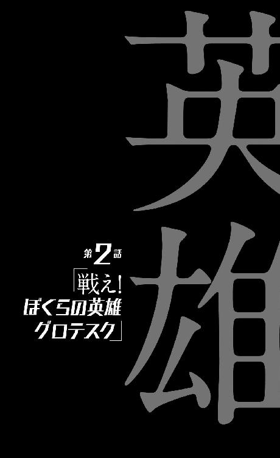
0
一部コンテンツは優良です。
1
嬉しいことにも悲しいことにも、喜劇にも悲劇にも。
何事にも感動しないという才能を持つ少年、空々空。
これは彼を主役とした英雄譚である。
2
「申し遅れました。私はこういう者です」
場所は変わった。
空々家、と言うよりは見るも無残な殺人現場から離れ、近場の駐車場に停めてあったらしい黒い車の中で、空々には知る由もないどこかに移動しつつ、会話は続いていた──まだまるで話が終わっていないのだから当然だが。
必要なものがあれば後で取りに来させますからと言われて、空々はほとんど手ぶらで乗車することになった──もろに寝巻きのままで家の外を出歩くのには強い抵抗があったので、着替える時間くらいはもらったが。
しかし空腹を訴えることは、さすがにできなかった。
食卓の上に用意されていた母の料理は血にまみれていたし、それでも頼めば何か準備してくれたかもしれないが、こういう会話をしているときに空腹を訴えるのはまともな人間のやることではないという常識が彼の中で働いたのだ。
彼ら二人は、どうやら空々のそんなリアクションこそを欲しているようだったが──だからと言って、気安く本性など晒せるものではない。色々差し引いても、差し引いてはいけないものまで差し引いても、少なくとも彼らがほぼ面識のない人間であることに違いはないのだから。
ちなみに『黒い車』というのは、空々が主観的に抱いた感想であって、それにもう少しだけ客観性を付与するならば、彼らが今乗っている乗用車はリムジンと表現するのが正しい。
それも最高級のリムジンと表現するのが正しい。
後部座席で、ＵＫを走るタクシーでそうするように向き合って、彼らは座っている。もしも空々が空腹を訴えれば、きっとどこかから軽食が出てくることは請け合いだった。
スモークガラスで分断されているので空々からは見えないが、車がこうして動いているということは、誰か運転手がいるのだろう。運転手はどんな顔をして、今この車を走らせているのだろうか。それとなく確認してみれば、助手席には誰もいないようだ。
そんな冷静な分析ができてしまう自分が、少し嫌になる。
今の自分の姿を俯瞰するならば、見知らぬ連中、それも得体の知れない連中に同行を強いられている最中なのだ──誘拐事件が進行していると言ってもいい。それなのに動揺もせず、車中の人数の確認をしているというのだから、笑える。
これではまるで少年探偵モノに登場する、聡明な子供のようだ。
だが空々は父親の影響で語彙が豊富なだけであって、どちらかと言えば運動馬鹿という感じの通知表である──決して賢いわけでも、知恵が回るわけでもない。単に、『動じない』というだけなのだ。
たとえばそれは、家族が切り刻まれているダイニングのドアを開けたとき、『家族が殺された』ことと、『今部屋の中に入ったら靴下が汚れる』ことを、同時に、同価値の情報として認識できるというだけの話である。『どうやって殺されたか』『どんな風に殺されたか』という、一目瞭然でないことまでは、わからない。
それだけのこと──ただ、今空々は、その『それだけのこと』を求められて、リムジンの後部座席に座っているのだった。革張りの背もたれに体重を預けると、そのままどこまでも沈んでいってしまいそうだったので、背中を離して座っているのだった。
ところで、家族を殺した張本人である剣藤は、空々の斜むかいの位置に座っている──先ほど上司に怒られたことが尾を引いているらしく、なんだかむくれたように、そっぽを向いていた。
例の大太刀は、もう竹刀袋にしまわれて、道着袋と共にトランクへと収納されていた──その意味では、先ほどよりは危険な状況ではないのかもしれなかった。人生という意味ではともかく、命という意味では。
ともあれ、空々は『茶飲み話』から受け取った名刺に目を落とす。
そこにはこう書かれていた。
『地球撲滅軍 第九機動室室長 牡蠣垣閂』──名前の下にローマ字で『ＫＡＫＩＧＡＫＩ Ｋａｎｎｕｋｉ』と書かれていた。更には片仮名で、『カキガキカンヌキ』というルビまで振られていた──行き過ぎとも言えるそこまでの気遣いがされている割には、連絡先や住所は、名刺を裏返してみても書かれていない。
これでは名刺というよりはネームカードだが。
たぶん重要なのはそこではないのだろう──名刺を自己紹介のためのツールだと捉えるならば、きっと最初のひと言だけで十分なのだ。重要なのはそこだけで、牡蠣垣の名前にすら、きっとそれほどの意味はない。
「......地球撲滅軍、ですか」
そのまま読んだ。
馬鹿馬鹿しいとは思いつつも、字義通りに解釈するなら、地球を撲滅するための軍隊ということになるのだろう......ならば『茶飲み話』や『寸刻み』は──牡蠣垣や剣藤は、軍人ということなのだろうか？ スーツの軍人や剣道着の軍人がいたって、確かにそれは構わない。
いやいや、だからそういうことではなく。
「おや。よく読めましたね。いや、気分を害されたなら申し訳ありません──ただ、大人でも多いんですよ。『撲滅』という字が読めない人間は......苦し紛れにゴウメツ、なんて読んだりするんですよ」
ははは、と牡蠣垣は笑った。やはり優雅な振る舞いではあったが、これはなんだかわざとらしい笑いかただと思った。営業スマイルという奴だろうか。もっとも名刺をもらったからイメージとしてそう思うだけかもしれない。
「漢字に詳しいだけです......、お父さんの専門が、国文学の研究だったものですから」
変に頭がいいと期待されても困るという意味を込めた釈明でもあったが、同時に鎌掛けでもあった。つまり、相手がどのくらい自分のことを──空々空という個人のことを知っているのかを確認しようとしたのだ。
父親の職業が大学教授だと知っているのかどうか。
いきなり『国文学の研究』などと言われれば、普通は驚く──少なくとも経験上そうであり、あまり人を驚かすことが本意ではない空々は、だからそれもあってなるべく、父親の職業を隠すようにしていたのだが──
「ふふ」
と、今度は営業スマイルではない感じに、牡蠣垣は、薄く笑っただけだった。その反応だけでは、知っていたのか知らなかったのかわからない──むしろこちらの思惑を見透かされてしまっただけという気もした。子供の可愛い抵抗らしきものを、微笑ましく見られてしまったような。
だとすれば恥ずかしい。とても恥ずかしい。
「そうです、地球撲滅軍──それが私達の所属となります。私達の家となります。そして願わくば、あなたにとってもそうであれば、と思います」
「............」
「と、いきなり言われてもわけがわかりませんよね。ねえ『寸刻み』」
唐突に牡蠣垣は、隣の剣藤に呼びかけた──既に自身をこの会話から『蚊帳の外』においていたらしい剣藤は、呼びかけられたことに酷くびっくりしたようで、
「!?」
と、オーバー過ぎるくらいのリアクションで首を動かし、牡蠣垣のほうを向いた。
「え、は、はい！ な、なに、『茶飲み話』!?」
「何じゃありませんよ。本来、我々の素性を説明するのも、あなたの仕事でしょう。あなたの不手際に、私は思わず出張ってしまいましたが、肝心のあなたが何を『もう自分には関係ない』みたいな顔をしているのです」
「あ......、じゃあ、まだ私が続けていいの？」
ぱあっと、剣藤の表情が明るくなりかけたが（ぼんやりとした風のこの少女はそんな表情もできるんだと、空々はそのことに驚いた）、しかし牡蠣垣は首を振り、
「あのザマでは、とても任せることはできませんね」
と言った。
剣藤は如何にも不満そうに、ぬか喜びをさせられたというようにうなだれた。
「ですがまたそういう機会もあるでしょう──後学のために、ちゃんとあなたも聞いていなさい」
「はぁい」
不承不承ながら、頷く剣藤。どうやらこの二人の間には、上司部下というだけではない、ただならぬ上下関係がありそうだと空々は思った──同時に、またあるかもしれないという『そういう機会』とは、どういう機会なのだろうとも考えた。
どこかの誰かの、家族を虐殺する機会だろうか。
実際に『それ』を行う現場を目撃したわけではないけれど、食卓の上に立つ彼女の姿を──今の彼女のうなだれた姿とは食い違うが、あの凜とした姿を思い出せば、彼女が『寸刻み』と呼ばれている理由は明確だ。
だからこれまでも、そしてこれからも。
この少女は人を刻み続けてきて、刻み続けて行くのだろうか──そんなことを思った。
「もちろん、ただ聞いていればいいというわけではありませんよ。さあ『寸刻み』。地球撲滅軍について、まずはあなたなりに説明してあげなさい」
「はい。......だけど『茶飲み話』、私、すべては知らないよ？ 私、現場の人間なんだから」
「誰がそこまで深い話をしろといいましたか......危険な子ですね。危険な子から危険分子にならないように気をつけなさい──今ここで空々さんに話すことは、あなたがわかっている範囲のことでいいんですよ」
「わかりました。......えっと、そらからくん」
剣藤はようやく、空々に向いた。車に乗り込んでから初めてだ。
上司の命令を受けて気張っているのか、それともそちらが彼女の素なのか、先ほどまでの拗ねた態度が噓のような真面目な顔である。
「地球撲滅軍とは、地球を倒すための組織です。人類を守るために、私達は日夜戦っています──戦っているんだ」
かしこまった口調は一瞬で崩れたが、真剣な面持ちまでは崩れない。
ただ、語るその内容は、冗談よりも荒唐無稽だった。
地球を倒す？
その意味合いがわからない──さっき牡蠣垣が『悪しき地球』という表現を使っていたことを思い出す。『地球』に『悪しき』という形容がつくことが、そもそも空々としては感覚的にそぐわない──誰の感覚にもそぐわないような気がする。
という点から考えると、それは何らかの比喩なのだろうか？
わからない。
それに較べれば『人類を守る』（これもさっき牡蠣垣が言っていた。だから剣藤は、結局牡蠣垣の言葉を繰り返しているだけに過ぎない気もする）という文言のほうは、ある程度わかりやすい。
わかりやすい。
どうしてそれを空々に言うのかをさておくならば──それに。
空々の関係者を、つまりはまさしく人類を、数百人単位で虐殺した組織が、どうしてそんな言葉を使うのかについては、さておくならば、だが。
少し考える。試しに慎重になってみる。これもまた今更だが。
整理してみれば、今確かに言えることはひとつだけだ──空々の前には既に選択肢も何もなく、生殺与奪の権はすべて、相手に握られているということである。
さっき、二人揃ってこれ見よがしに土下座までして、文字通り空々に伏してお願いするようなことを言っていたが──あの状況で同行を断る権利など、空々にあるはずがなかった。『軍』と、そう名乗っているが、実際彼らの有する暴力は、軍事力と表現しなければならない規模なのだ──たとえ家族四人を切り刻まれたことを『まだしも』とするとしても、学校ひとつを焼き尽くすなど、明らかに脅しの域を超えていて、それはつまり『脅しではない』ということだ。
もしも空々が彼らの意に沿わない行動を取ったとき──あるいはこの先、意に沿う行動を取ったとしても、なのかもしれないが──その軍事力の向かう先は知れていた。空々自身だ。危害を加えるつもりはないという、何度も繰り返された剣藤の言葉など、信用できるはずがない。
裏を返せば、そんな強制力を持つ立場にありながら、牡蠣垣は遥か年下の空々に対し礼を尽くしたということになるが──ともかく、牡蠣垣を前に、鎌をかけたり、腹を探ったり、そんなことをしてもあまり意味がないことは確かだった。
彼我の立場があまりに違い過ぎる。
仮に剣藤がここで、彼女からすれば理不尽に上司から 責されたことを逆恨みして、空々に敵意を実際的な行動を伴って向けた場合、それに逆らうすべはないのだ──だったらいっそ、開き直ってみるのもいいだろうと空々は考えた。
責されたことを逆恨みして、空々に敵意を実際的な行動を伴って向けた場合、それに逆らうすべはないのだ──だったらいっそ、開き直ってみるのもいいだろうと空々は考えた。
今の自分は、半分以上死んでいるものだと判断して、思った通りのことを思った通りに訊こう。訊いてしまおう。こうして彼は、色々考えた割には結局、まるで自滅するかのように己の素性を牡蠣垣達に晒していくことにしてしまったのだが、これを幼稚ゆえ、あるいは子供の浅知恵と責めるのは酷と言うものだろう──ここで万全に振る舞えるようなら、そもそも彼はことの発端となる、飢皿木診療所に足を運んでなどいない。
「地球を倒すっていうのは、どういう意味ですか？ それは地球を壊すみたいな意味ですか？ 人類を守る？ たった今、僕の関係者を皆殺しにしたあなたがたの台詞とは思えませんが」
すらすらと、年齢離れした風な、そして場慣れした風な丁寧な口調で言う自分が、どれほど奇異に見えるか──換言すれば、どれほど望ましく見えるか、空々は気付かない。
もちろん牡蠣垣、それに剣藤も、それに気付かせない。
ここでそれについて、不自然な──言うならば常識的なリアクションを取ったりはしない。ただ質問に答える。
「後の質問から答えましょう。人類を守ることと、空々さんの関係者を守ることの二律背反については、私達も心を痛めています」
さすがに車中で土下座はしなかったが、牡蠣垣はぺこりと頭を下げた。それに倣って、剣藤も頭を下げた。さっきもそんな感じだったけれど、牡蠣垣はともかく、剣藤のほうは、頭を下げているというよりは、なんだか首が痛い人みたいな動作だった。
「ですが矛盾はしません。私達の言う『人類を守る』とは、ミクロではなくマクロの話ですからね......言葉を飾らずに言ってしまえば、多くを救うため、少ない犠牲を払うことに、私達は躊躇は致しません。空々さん、あなたは随分語彙が豊富なようですけれど、でしたらサバイバル・ロッタリーという思考実験をご存知ですか？」
「いえ......知りません」
実は横文字には、そんなに強くない。
父親の専門は国文学だ。
「日本語では臓器籤と訳される概念です......、思考実験です。籤である一人の人間を選び、その人間のすべての臓器を取り分けて、その臓器を必要とする多数の人間に移植を施すという行為は、果たして善なのか、悪なのかを問う問題です。ロッタリーとは、籤という意味ですね」
「............」
「一人の犠牲で多数が救えるとき、その行為は善か、悪か。もちろんこれは、簡単に答の出せる設問ではありませんし、また立場によって答の違う問題でもあるでしょう。たとえば臓器移植を必要としない人間と、臓器移植を必要とする人間とでは、この問いに対する答は違うでしょうし、身内に臓器移植を必要とする人間がいる場合なら、自身が健康体であっても、また違う答を出すでしょう。問われているのは倫理観ではなく、『今、自分がどこにいる誰なのか』なのかもしれませんね」
牡蠣垣は一旦言葉を切って、
「しかし私達はこの行為を『善』、正義であると定義するということです」
と言った。
「無論本来的に、このサバイバル・ロッタリーは成立しません......臓器移植の手術は、そんな『取りかえっこ』のようなものじゃあありませんし、手術を受けたからと言って必ずしも健康体になれるわけじゃありませんからね。もしも本当にこんなアンケートが実施されたなら、私は迷うことなく反対に票を入れますよ。あくまでも私達の答は、思考実験のルールに則ったものです。逆に言えば──絶対に、後遺症も残らずに、施術された患者達が健康体になれるという保証があるのならば、私達はこの手術を、自ら執り行うことにさえ躊躇しないでしょう。籤を引くことさえ」
「............」
「私達は地球撲滅軍なのですよ」
と、改めて名乗るようなことをした。
それはきっと、サバイバル・ロッタリーが彼に投げかけた問い──『今、自分がどこにいる誰なのか』に対する答だったのだろう。
僕はどうだ。
ただの思考実験だとわかっていながら、なんとなく、その目新しい──新しく知った『名付けられていたもの』に、空々の心はとらわれた。考えてしまう。そう、一歩考えを進めて......、自身の臓器を他者に分配することで、自分は死ぬけれど、より多くの他人が生きながらえるとすれば──それは気分の悪くなるような問いではあるが、ここで気分が悪くならないのが空々である。
社会的に見ればそれは大得であり、個人的にはそれは大損だ。
そんな当たり前の結論を、特に何も思わずに出せる少年。
ただ、『自分が嫌なことを他人に強制はできないよなあ。だからそれは「悪」なんだろう』と、理性との折り合いをつけておくことも忘れない。もしも自分が嫌でなかったとしても、やはり他人に強制はできないだろうとも思った。
それとも救える人数にもよるだろうか？
臓器では、どんなに頑張っても一人あたり十人も救えないだろうが、しかし一人を殺すことで百万人が救えるとすれば、どうだろう？
「カルネアデスの船板という話なら、知っていますけれど......それと似たようなものですか？」
カルネアデスの船板とは、難破した船から投げ出された乗客が、浮かんでいた船板にしがみついたとして、その船板が一人分しか体重を支えられなかったとき、他の乗客を救わない、むしろ蹴飛ばすことが許されるかというような問いである。
この場合は、助かる人間と助からない人間は、一対一だ。
そこを含めての問いだったが、
「似てはいますが、しかし私達は、それについては積極的な肯定も積極的な否定もしませんね」
と牡蠣垣は答えた。予想通りの答ではあった。
「つまり投資だと思っていただければ、わかりやすいかと。リスクに対するリターンは、大きくなければいけません。リスクとリターンがイコールでは無意味ですし、ましてリターンがリスク以下となると、もう何がなんだかわかりませんからね」
投資。そのたとえはわかりやすいと思った。
わかりやすいと思うかどうか、今度は自分が鎌をかけられているのかもしれないとは、思わなかった。
「......でも、僕の関係者を全員殺すことが、どうして人類を守ることに繫がるんですか？ そこが意味不明なんですけれど......」
突き詰めると、彼らは空々一人のために、空々の関係者全員を殺したことになる──これではリスクとリターンがつりあっていない。破綻を前提としているような、ありえない投資である。
「それはもちろん、あなたに悪と戦う正義のヒーローになっていただくためですよ、空々さん」
本当にそれを『もちろん』と信じて疑わないような口調で、牡蠣垣は言った──気付けば、その片手にティーカップを持っている。いつの間に？ というか、どこから？ ふと横を見れば、剣藤が両手でティーポットを持っている。湯たんぽでも抱えるように持っているが、今は五月だ。熱くないのだろうか。剣道着は分厚いから大丈夫なのだろうか。
「あなたが全人類を救うのであればこんな合理的選択はないでしょう、空々さん。極論、この国の人間全てを殺したっていいくらいの、割のいい投資です。具体的な理由は複数ありますので、順不同にひとつずつ列挙していきましょうか......疑問点があればその都度説明しますので、遠慮なく仰ってください。私達は公開できる情報はすべて公開致します」
それは当たり前な気がした。
言い換えれば公開できないことは公開できないと言っているようでもある。
「あなたの関係者を全員、一人残らず殺した理由。それはまず、空々さんに今までのいわゆる『日常』を、未練なく脱していただくためです。不退転の覚悟を持っていただくため──そして情報漏洩防止の徹底のためでもあります。地球撲滅軍の機密性は、言わなくともわかっていただけると思います。つまり空々さん、今後のあなたの『存在』を知っている人間は、少なければ少ないほどいい──いなければ一番いい。そして最後になりますが、これは個人的には私がもっとも重視している理由なのですけれど、我々としてはあなたが大事に思っている人間に、今の段階で死んでおいて欲しかった。あなたに好きな者や守る人があって欲しくはなかった。あなたは人類を愛するべきであって、個人を愛するべき立場ではなくなるのですから」
「............」
「人質が取られたときや、愛する人から反対を受けたときのためというのもありますけれど、正義の他に大切なものがある人は、ヒーローにはなれませんからね」
牡蠣垣が、丁寧な口調とは裏腹に、かなり非人道的なことを言っていることは、もちろん子供の空々にもわかったが、しかし同時にその一方で『なるほど合理的だ』と納得もしていた。
納得に足る理由だと思った──どうしてそこまで徹底的なことをするのかという点を除けば。
その『合理』は、だからあくまで、サバイバル・ロッタリーのような思考実験における合理性であって、それ以上ではないように思える。それに合理的であることと、効率的であることは違う──情報漏洩云々と言うのなら、学校の火事、一家斬殺という事実を隠蔽することだって、そう簡単ではないだろうに。
「当然のことながら、ここにいる『寸刻み』や、あるいはあなたの学校を焼いた『火達磨』も、似たり寄ったりの目に遭っています。『蒟蒻』や私は、また少しパターンが違いますが......、ともあれ、四十五億人を守るために、五百人足らずを殺すことは、決して喜ばしいことではありませんけれど、決して割に合わない計算ではないでしょう──そうは思いませんか？ 空々くん」
「割には合うと思います」
そう答えた。それが異常かどうかは考えず、思い切って。
「完全に納得できたわけではありませんが、あなたがたの行動の理由はわかりました。ただ僕としては順不同ではなく、もう一つの質問に、できれば先に答えて欲しかったんですけれど......、地球を倒すというのは、どういう意味なんですか？」
繰り返された質問に、牡蠣垣はしかし、
「そのまんまの意味ですよ。空々くんの理解で概ね合っています」
と答えたのだった。
質問に質問されたのと大して変わらない。空々は答を答えて欲しいのだけれど。
仕方なく（実は誘いに乗るような形になっているが）、空々は言葉を付け足した。
「僕に、地球を倒す手伝いをしろと」
「ええ。そうです。手伝いというか、あなたがメインなんですがね」
「核開発でも手伝うんですか？ それともアラレちゃんみたいに、殴って地球を壊して欲しいとでも？」
これは冗談で言った。冗談と言うか、わざわざ大袈裟に、勘違いしたようなことを言うことで、相手からちゃんとした説明を引き出そうとした。稚拙ではあるが、十三歳の少年にしてみれば、会話のテクニックのつもりだった。
「まさか」
と、牡蠣垣。テクニックが通じた様子はない、むしろ真に受けたようでさえあった。
「やろうと思えばそういう破壊も私達には可能ですが──そんなことをしたら、地上の人類もただでは済まないではありませんか。割に合いませんよ。害虫がいるからって、自分の住んでいる家を潰すようなものです。そうでしょう？」
「......？ いや。でも、他にどう解釈しろと言うんですか、そんな言葉を。他にどんな意味が......」
と、そこまで言って、思いつく。そして思いついたことをそのまま言う。単純に『人類もただでは済まない』という言葉から連想しただけのことであって、論理的にはあまり直結してはいないのだが、思いついたことは全部言うと、もう決めていた。
「あ。ひょっとして、半年前の『大いなる悲鳴』──あれは、あなた達の仕業なんですか？」
どんな現実も受け入れ、何事にも動じないという、空々の、ある意味『空気を読まない』才能を買って、牡蠣垣や剣藤がここにいるのは──こんなことをしているのは確かだろう。だから本来、空々のそんな発言もまた、彼らは喜ばしく受け止めるべきだったのかもしれない。
生殺与奪の権を握られているという状況で、抵抗なくそんな発言ができてしまうことを──先ほど殺害現場でそうしたように、彼らは誉めそやすべきだったかもしれない。
だが、二人はそうはせず。
一瞬で車内は殺気に包まれた。
3
その殺意はスモークガラスを通じて運転席にまで届いたのか、リムジンは急ブレーキをかけたようだった──それが恐らく空々を救った、とりあえず、この時点では。
急ブレーキの慣性が終わる頃には、その殺気は雲散霧消していた。
空々の前の席に向き合っているのは、先ほどまで通りの、優雅な物腰の牡蠣垣閂と、責された失点を取り戻そうとしている剣藤犬个だった。ただし牡蠣垣の手元のティーカップからは紅茶がこぼれて足元に敷かれた毛足の長いカーペットを濡らしていたし、剣藤の抱えていたティーポットからもお湯がこぼれ、これは彼女の袴をしっとり濡らしていた。
「ははは、違いますよ、空々さん」
と、快活な風に牡蠣垣は笑った。それに合わせて空々も笑おうとしたが、うまくはいかなかった。と言うか、あんな殺気を密室で浴びて、自分が今気絶しないでいることが不思議だった。
どうせもう半分死んでいるようなものなのだから何を言っても、何を訊いても同じだという自分の判断が、あまりに雑なものであったことを思い知らされた。
『ようなもの』と『そうだ』は、『半分死んでいる』と『死んでいる』は、全然違うと知った。
「何を言っているんですか──ねえ、『寸刻み』？」
「うん。まったくだよ。何を言っているんだろうね、そらからくんは。馬鹿じゃないの」
既に自分を完全に取り戻しているらしい牡蠣垣に比べ、剣藤のほうは、棒読みにすらなっていなかった。抜くのが得意だと言っていた彼女の刀が、今は手元ではなくトランクにあることは、自分にとってかなりクリティカルな幸運だったらしいと空々は思った。
「で、ですよね。違いないに違いないと思っていました」
と、思い切り迎合するようなことを言って、空々はこの話を打ち切ろうとした──何でもいいから次の質問を投げかけようと思った。話を変えよう、逃げようとした。だが、逆に牡蠣垣のほうがこの話から離れようとせず、
「むしろ」
と、自ら話を先へと展開させた。
「あれこそが私達の敵──地球からの攻撃なんですよ」
「......？ 地球からの、攻撃......？」
今は何を言われても、どんな滅茶苦茶なことを言われても、空々はとにかく頷くつもりでいたのだが、しかし牡蠣垣は、随分と首肯しづらいことを言ってきた。
「私達の住む地球は、人類を滅ぼそうとしています──あの『大いなる悲鳴』は、宇宙からの殺戮音波などではもちろんなく、しかし地球が人類を殺すために発した声だったと言えば、あなたは信じますか？」
4
リムジンは再び動き出した。案外殺気云々は関係なく、ただの信号待ちとか、急に飛び出してきた歩行者のためとかでブレーキを踏んだだけだったのかもしれない。
空々にしてみれば、どこに向かっているかわからない（まず最初に問うべきはそれだったのかもしれない）黒い車は、車内での会話にかかわらず、目的地へと向かう。
「地球の声......？」
空々は、自分で発音することで、牡蠣垣の言うことを理解しようとする。
「つまりあれは、地球の悲鳴だったというんですか？」
そう言えば、昨日。
剣藤がそんなことを言っていたような、言っていなかったような──その後高熱に魘されることになったので、定かな記憶ではないが。
探るように、空々は剣藤に視線をやったが、しかし剣藤のほうは、まだ自分を取り戻していないらしかった。空々を睨んでいて、油断すれば飛び掛ってきそうな気配さえ感じる。取り戻すも何も、元からそうだった気もするけれど。
怖くなって空々はそそくさと、視線を牡蠣垣に戻した。それを待っていたわけでもないのだろうが、牡蠣垣は続ける。停めていた言葉を再開する。
「少なくとも私達はそう考えています。と言っても私達だけではありませんが.........、私達のような組織は、国内外に、多数存在しています。ですから何も私達は、取り立てて特別なことをしているわけではないのです──もっともその数は、『大いなる悲鳴』以降はむしろ、相当減ってしまいましたがね」
「............」
ん、と空々は、自分の認識が間違っていたことを、その牡蠣垣の台詞から、知る。半年前の『大いなる悲鳴』を受けて──てっきり『地球からの攻撃』を受けて、地球撲滅軍や、それに類するグループが組織されたのかと思ったが、しかしそうではなく、『大いなる悲鳴』以前から、そのようなグループは存在していたらしい、しかも、むしろ今より活発に。
となると、攻撃を受けたというよりは。
「『大いなる悲鳴』は地球からの『反撃』だったということなんですか......？」
反省した割に、これもまた、『空気を読まない』発言だったかもしれない──これは結局、『お前達がちょっかいをかけたせいで地球がキレたんじゃないのか』と言っているのと同じだ。
だが今度は車内が瞬間的に、不穏な空気で満ちるというようなことはなかった。ただ牡蠣垣が、「そうですね」と静かに、控えめに肯定しただけだった。
どうやら先ほどの『殺気』は、的外れな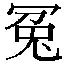罪をかけられたことに対する怒りから発現したものだったらしい──裏を返せば、今度の空々の発言は、あながち的外れな罪ではなく、少なくとも事実に近いものであるらしかった。
ただし、空々も別に死にたいわけでもないので、ここで調子に乗って余計なことを言ったりはしなかった。
ただ待つ。相手が何かを言うのを待つ。
「反撃と言えば反撃だったのでしょう──ただ、言い訳じみたことを言わせてもらえるならば、空々さん。先にどちらが手を出したなんてことは、もうわからないんですよ。人類と地球との因縁は、気が遠くなるほど昔から始まっていて、既にある種の構造と化しています。人類が文明を得て以来、人類と地球は、ずっと戦っていたと言ってもいいかもしれない」
「............」
「まあ、歴史を振り返れば、概ね人類が優勢に戦いを進めてきていたんですけれどね。しかし例の『大いなる悲鳴』で、一気にこちら側の優勢を引っ繰り返されました。まさか地球が、あそこまでの切り札を隠し持っていただなんて......」
そう言って、牡蠣垣は意味ありげに、剣藤のほうを見た。
剣藤はその視線を避けるようにした。
それがどういう『意味』があるやり取りだったのかは、空々にはわからなかった──わからないうちに、牡蠣垣は剣藤を見るのをやめ、また空々のほうを向く。
「あれからここまで、復興するのに精一杯でしたよ」
まあ半年でよくここまで挽回できたものだとは思いますけれどね、と牡蠣垣は言った。空々は黙って聞いている。思うところも言いたいこともあったが、黙って聞いている。
「というわけで我々は今、決定的な戦力不足の状態にありまして、空々さん、あなたのような英雄の誕生を待ちわびていたということです。あなたは私達にとって、待ちわびた救世主ということなのですよ」
「なるほど、わかりました」
ここで返事をする。
なるほどという気持ちも、わかりましたという気持ちもまったくなかったが、そう答えるしかなかった。
「私達を信じていただけるのですか？」
「はい、信じます。この半年抱えていた、様々な疑問が腑に落ちる話でした」
これは噓というほどではないにせよ、本当は『信じるしかないでしょう』と思っているのを『信じます』と言い換えたところに、空々なりの欺瞞がある。
疑問もまた、解消したというわけではない。ただ、地球撲滅軍とか、ヒーローとか、そういう曖昧だった単語にどういうものであれ、きちんと意味付けがされたという点においては、確かに『腑に落ちた』話ではあった。
再度と言わず、再三再四繰り返すが、空々は死にたくない。
ならば牡蠣垣の話の真偽など、究極的にはどうでもいいのだ──彼らに阿るしか生きる道がないというのなら、そうするまでだった。帰る場所をあらかじめ奪われ、帰りを待つ人もいないというのが、今の空々空の現状なのだから。
ごちゃごちゃ考えてはみたが、結局ここで空々がしていることは、『彼らに話を合わせる』ということだった──この状況下では大抵の者が、考慮もせずに感情に任せて取るだろう行動に、随分遠回りをして辿り着いたということである。
ただ、これは向こう側には看破されたようで、そしてあまり快く受け取ってももらえなかったようで、牡蠣垣は、
「あなたは噓が下手ですね、空々くん」
と言うのだった。
「まあヒーローの資質としては、それも必要な美徳だとは思いますが、こちらとしてはできるだけ正直に、誠心誠意あなたに接しているつもりなのですから、そういうことはやめていただきたいものです。遠慮せず、言いたいことは言っていただかなければ今後の信頼関係に関わりますよ」
「......はい。ごめんなさい」
さっきの殺気のことを思えば言いたいことを言うなんておよそ不可能だったが、しかし、それも空々は『言わない』。下手であろうと見え透いていようと、だ。
「謝って欲しいわけではありませんが──うーん。困りました。どうすれば信じてもらえますかね。確かに、こんなことをいきなり言われても『おかしなことを言う人達だ』と思うのが当然ですしね」
おかしなことを言う、どころではない。異常だと思っている。おかしなのは言っていることではなく頭だ。そう思っている。そもそも物言わずとも、あれだけの大虐殺を繰り広げた時点で、議論の余地なく十分に異常だ。
「『寸刻み』。どうしたらいいと思います？ あなたの場合は、あのとき、どういう工程を踏んで、軍を信じられるようになれましたか？」
「信じる、って言うか......それ以前に色々あったとは言え、実際に『知る』までは、鵜吞みにはしていなかったけれど」
剣藤は首を傾げつつ、言う。
「信じるきっかけ......、はっきりとしたきっかけがあったとするなら、軍の組織力を見せてもらったことかな。だったと思う。つまり、地球撲滅軍が、私的な犯罪者集団ではなく、個人的なテロリストでもない──日本政府のバックアップを受けたきちんとした正規の組織だという事実が、はっきりしたことだった」
ぎょっとする。日本政府のバックアップ？ それは空々にしてみれば、『人類を救う』や『地球を倒す』よりも、よっぽどスケールがでかく感じるような言葉だった。何を言い出したんだこの人は、と素直に思った。
「ああ、そうでした──そういうこともありました。そうか、ことの真偽はいずれ知るとしても、私達の所属ならば、簡単に証明することができるんでしたね。どうです、空々くん」
牡蠣垣はいかにもナイスアイディアを得たというように、空々のほうを向く。剣藤は、上司にそのナイスアイディアを提供できたことに満足したようで、先ほど害した気分を、幾許か回復したようだった。
「今ここで、この私になにか『大きなこと』を、要求してみてはくれませんか？ なんでも叶えるとまではさすがに言えませんが、しかしある程度までの『大きさ』なら、私はそれを即座に実現してみせましょう」
「......それは、暴力的なことじゃなくても、ですか？」
「もちろんです。なんなら慈善事業でも構いませんよ。たとえば、今回の件で、中学生の子供を痛ましくも失った両親への補償とか──」
「............」
正直、既に空々にとって、現状は相当に『信じるも信じないもない状況』ではあったのだが、それは言いにくい。そして『彼らの言うことが真実であってくれればいい』という気持ちが、ないわけではなかった──どちらでも同じことであろうと、偽りに付き合っているよりは真実に付き合っているほうがいい。『真実の残酷さ』のようなものを、あるいは『偽りの気楽さ』のようなものをまだ知らない少年は、そんな風に思うのだった。
だが、『中学生の子供を痛ましくも失った両親への補償』では、いまいち真実は測れないようにも思えた──そんなことは、別に空々が要求しなくとも、今の日本の補償制度を考えると、何らかの形で行われるような気がしたからだ。
それに、なんだかマッチポンプのようでしっくりこない。償いというより、それは地球撲滅軍の立場からしてみれば、ただの隠蔽工作の一環であるようにさえ思える。その隠蔽工作ができるかどうかで、確かに組織力を測ることはできそうだが──ただ、それは政府のバックアップを受けていなくとも、国に支援されていない反政府組織でもできてしまいそうにも思うのは、漫画の読み過ぎだろうか。
だからと言って、他に何を要求すればいいのか。いきなり政府と言われても、やはりスケールが違ってピンとこないのだ。
「......その要求というのは、僕があなた達に従う報酬だと考えればいいんですか？」
「とんでもない。この程度のことが報酬だなんて......欲がないですねえ、空々さんは。実に好ましいですが、しかし報酬はまた、別に用意させていただきます。それに、『従う』なんていう、自分をひとつ下に置くような発言は慎んでください。ヒーローにそんな卑屈な意識を持たれては、現場の士気に関わります」
報酬は別にあるのか、と、空々は戸惑った。それは意外だったし、また、空々の態度を諫めるような牡蠣垣の言葉も意外だった。てっきり、というかなんとなく、これから自分は彼らから（具体的に何をさせられるのかはともかく）奴隷のようにこき使われるのだと思っていたが......、いや別に、まだ牡蠣垣がそう言っているというだけで、それで正解だという可能性は十分に残っている。
彼らを信じるしかないと思いつつも、やはり疑いは消えない。
ならばどうすればいいのだろう。子供であり、知識も情報もない自分にもわかりやすく、彼らの『力』を──『軍事力』以外を証明するには、どうすれば。
義務教育の子供にもわかりやすい、国の政策のようなものと言えば......。
「......あ」
そうだ、と空々は思い付く。それは実に馬鹿馬鹿しい思い付きではあったが、しかし意外とこういう場合、適切なようにも思えた。冗談めいていて、変に場の空気が硬直するということもなさそうだという点において、空々にとってそれはベストの『要求』だった。
とは言え、牡蠣垣にそれを言うのはもう一度頭の中で復唱してから、本当に言っても大丈夫かどうかをチェックしてからだった。
大丈夫。最悪、ジョークで済む。最低限あの殺気で車内が満たされることがなければ、空々の立場からすれば万々歳なのだ。謎の解明ではなく、生き残ることが自分の目的であることを忘れては駄目だ。
そう思って、彼はその『要求』を口にした──果たしてその結果返ってきた反応はと言うと、牡蠣垣は目を見開いて驚いていた。剣藤はこちらの正気を疑うような視線を送ってきた。そして剣藤の視線にはあからさまな非難も含まれていた──この子は一体、何をふざけているんだと言いたげだった。
彼女が口に出してそう言わなかったのは、やはり隣に牡蠣垣がいたからだろう──牡蠣垣はすぐに我に返ったようで、
「承りました。ではそのように」
と言った。
予想外の反応、そして予想外の快諾に、一笑に付してくれたほうがよっぽどよかったと空々は思ったが、最早後の祭りだった。
5
「到着したようですね」
と牡蠣垣が言った。二時間ほどのドライブの結果、どうやら目的地に到着したらしい。地球撲滅軍の本部（？）に連れて来られたのだろうか、なんて、空々はぼんやりとそんな推測をしていたのだが、しかし車から降りてみると、そこは地下駐車場だった。
本部の駐車場だろうか？
と思ったが、そうではなかったらしい。
「今夜から空々さんには、このマンションの一室で暮らしていただきます」
牡蠣垣はそう言って、空々にカードキーを渡した。
二枚のカードキー。一枚はオートロックの解除用で、もう一枚がルームキーだという。一枚にまとめればいいのに、と空々は思ったが、堅固なセキュリティの証明ということなのかもしれない。
「十七階の１７１７号室です──一通りの家具や家電や衣類は揃っていますので、差し当たり不自由はしないと思います。水・電気・ガスも既に開通していますから、遠慮なくお使いください。好みに合うかどうかはわかりませんが、本も何冊か用意しておりますので、よければ暇潰しに」
「............」
文句のつけようもないほどの至れり尽くせりだ。
家族を殺したり、中学校を焼いたりする一方で、そんな気遣いもする。
ひょっとするとそれほどの価値が自分にはあるのだろうか、と、ここで初めて、空々はそんなことを思った。今更、やっと、遅かりし──と言わざるを得ないタイミングだが、しかしこれはやむを得ないと言えばやむを得ない。
空々を欲しているがために、彼らが空々の家族を皆殺しにし、学校を焼き尽くしたということは理解していても、それと空々を歓待し、もてなすことは、また別だ。問題なのは、空々にとってはそれは別であろうとも、地球撲滅軍にしてみれば、それとそれはまるっきり同じだということである。
空々のために専用の部屋を用意するのと同じ気持ちで、彼らは空々の関係者の大虐殺に及んだ──行動原理があまりにもドラスティックだ。合理的過ぎて、合理の意味を見失う。
それだけ切羽詰っているということなのだろうか？
悪しき地球との戦いとやらが。
「......では、あとの説明は、部屋でということですか？」
「いえ空々さん、今日はもうお休みになってください。話の続きは明日にしましょう......空々さんも色々あって、疲れているでしょうし」
確かに今日は色々あった。しかしその色々の原因は、すべて彼らの所属する組織である。だからそんなことを抜け抜けと言われても困る。とは言え疲れているのも確かに確かではある。
「明日......ですか」
「ええ。ここから先の話は、空々さんからの『要求』に、こちらが応えた後にしたいと思います。そのほうが話の通りはいいでしょう。私達のことがわかってもらえると思います」
「はあ......」
そうかもしれない。だが、本当に『あんなこと』が実現可能なのか？ それも牡蠣垣は、まるで今日明日中に実現させてしまおうというような口振りだ......思いついたときには見事な着想だったと感じたアイディアではあったが、今になって思えば、彼らがたとえ本当に政府と何らかのコネクションを持っていたとしても、およそ不可能だと思えるような『要求』を空々はしてしまったのだが......、なんだかそれを後悔する気持ちが湧いてきていた。
だがもう取り消せない。牡蠣垣はあの直後、車内から電話をどこかにかけて、その旨を告げてしまっているのだから。
仕事の速い男である。
「じゃあ......明日」
「はい。こちらから電話をさせていただきます」
「あの」
学校にはどうやって行けばいいですか、このマンションの最寄り駅はどこでしょう、と訊きそうになって、その質問の群を抜いた愚かさに、自分で呆れた。その学校が消滅しているのだ。なのに一体、自分はどこに通おうと言うのか。
『それどころではない』ということを、もっと銘記しなければならない。
現状をもっと深刻に捉えなければ。
現状をもっと真剣に捉えなければ。
......それができないのが空々なのだが。
「？ なんですか？」
「なんでもありません」
「そうですか。では、空々くん。世話係として『寸刻み』を置いていきますので、何かありましたら、なんなりと彼女に申しつけください」
「え？」
そんな驚いた反応をしたのは、今度こそは自分の役割は済んだ、あとはもう帰るだけだと思っていたらしい、牡蠣垣の後ろに控えていた剣藤だった。
素で驚いている。
「ちょ、ちょっと待って。『茶飲み話』......な、なに言ってるの？」
慌てたように彼女は言う。
「せ、世話係って何？ 私は、そんなこと──」
「聞いてなかったんですか、『寸刻み』。言ったはずですよ。あなたに与えたいくつかの任務のうち二番目に大切な仕事は、空々さんの面倒を見ることだって」
牡蠣垣は何食わぬ顔で言う。むしろ剣藤のそんな反応のほうが意外だと言わんばかりだ。
「まだ十三歳の空々さんに、いきなり一人暮らしなんてできるはずがないでしょう。あなたが一緒に住んで、身の回りの世話をしてさしあげるのが当然というものです」
「そ、そんな......め、面倒を見るって......、そういう意味？ 先輩として指導するとか、そういうことじゃなく？」
「先輩として？ 思い上がるんじゃありません、『寸刻み』」
ぴしゃりと言い切る牡蠣垣。
その言葉に剣藤は、しゅんと大人しくなる。
しかしそれでも容赦せず、今まで見せなかった厳しい顔つきで、牡蠣垣は続けた。
「あなたは『失敗した英雄』でしょう──空々さんに示せる規範など、あるものですか」
「............」
「まあいいでしょう。説教は後にしましょう、それこそ空々さんの前でするような話ではありません。空々さんに悪影響があってはいけませんから。とにかく、わかりましたね？ 『寸刻み』。聞いていなかったというのなら、今改めて命令します。あなたは今日からこのマンションで空々さんと一緒に暮らし、彼が快適に暮らせるよう、面倒を見るのです。いいですか？」
「......はい」
「復唱しなさい」
「私は今日からここに住み、そらからくんが快適に暮らせるように面倒を見ます」
「いいでしょう」
牡蠣垣は厳しくしていた顔をようやく緩めた。そして飴と鞭というような意図があるのだろうか、優雅な仕種で、励ますように剣藤の肩に、柔らかに手を置く。
「あなたの荷物はあとで運ばせます──それに、当座の生活資金は振り込んでおきますので、くれぐれも空々さんに不便な思いをさせないように。よろしく頼みましたよ」
「わかりました......」
しかし牡蠣垣のそんな励ましにも、剣藤は項垂れたままだった。受けたショックから立ち直る気配がまるでなかった。あんな項垂れた人と、そして明らかに不本意そうな人と一緒に暮らすというのは、空々にしてみてもはっきり言って冗談ではなかったが、しかし状況は彼の意志とは無関係のところで決まっていく。
空々空。
剣藤犬个。
二人の奇妙な同棲生活は、こうして幕を開ける。
6
ルームキーが非接触型のカードであることから、それにかなりの広さの地下駐車場を有していることから（あるいは駐車場に止まっているいかにも高価そうな数々の車からでも）、空々はここはかなりの高級マンションなのだろうとはイメージしていたのだが、最上階の１７１７号室は、その期待をまったく裏切るものではなかった。むしろ誇らしげに、その期待に応えてくれたと言える。
ちなみにあらかじめ牡蠣垣から『３ＬＤＫ』と言われていたのだが、しかし一軒屋に住んでいる空々には、その言葉の意味がいまいちわかっていなかった──何かの専門用語かと思ったくらいだ。
マンションの一室の癖に、床面積だけで言えば空々家よりも広いかもしれないくらいだった──牡蠣垣が用意させたという調度も、単純に高価であることをうかがわせるだけでなく、ハイソサエティなセンスに溢れるものだった。映画の中から引っ張り出してきたような光景だった。
とは言え空々がまず安心したことと言えば、『部屋がたくさんありそうでよかった』である。まあまさかワンルームマンションということはなかっただろうけれど......、これなら同棲と言っても、剣藤とは、そんなに顔を合わさずに済むだろう──と、そんなとろけるほど甘い算段を持って、空々の後ろを死人のような顔でついてくる、項垂れた少女を見遣るのだった。
死人のような顔、というのが、今日家族の死体を見たばかりの空々にとっては単純な比喩にはならないのだが。というか、顔もわからないほど無惨に四人の人間を虐殺した剣藤が、自分のほうが死人のような顔をしているというのは違和感を覚えてしかるべき点なのだけれど、空々はそこについては『そういうものなのだろう』と受け入れていた。
「............」
と、何も言わないままに、剣藤は竹刀袋と道着袋を床に置いた。
さすがに靴は玄関で脱いでいる。
この気まずい状況はたやすく予想できたものだったので、空々にしてみれば叶うものなら牡蠣垣に部屋まで一緒について来て欲しかったくらいだったが、しかし言い出せないままに、黒い車に乗って去っていく彼を見送ることになった。
以来剣藤はひと言も喋っていない。
これなら一人暮らしのほうがよっぽど気楽だ──というか、自分の家族を虐殺した相手と同棲するなど、本来おかしな話である。
空々はリビングからキッチンに移動して、備え付けられていた五百リットルくらい容積がありそうな、大型冷蔵庫を開ける──そこに、調理の必要なく食べられそうな食材（ヨーグルトや生野菜）があることを確認し、胸を撫で下ろした。
いい加減空腹も限界である。
今日は一日何も食べていないに等しいし、思えば高熱で、体力を相当消耗しているのだ。
「よく食欲なんてあるね、そらからくん」
と、後ろから声をかけられた。もう剣藤は喋らないものだと思っていたので、またもや部屋の奥に誰かがいたのか、優雅に紅茶でも飲んで、空々達の到着を待ち構えていたのかと思ったが、まさかそんなことはなく、普通に剣藤の声だった。
睨むように空々を見ている。
友好な関係が望めそうにない感じだ。今すぐ家に帰りたいと思った。しかし空々にはもう帰るべき家がなかった。決して心情的なだけの話でなく、ひょっとすると今頃、『火達磨』とやらが、証拠隠滅のために空々家を焼き払っているかもしれない。
だから、家に帰るも何も、もう空々の家はここなのだ。
あるいは──地球撲滅軍が、彼の家なのである。
「私は人間を斬った日、ものなんて食べる気にならないけどな」
「......そうなんですか？」
意外な言葉だった。平気そうに、あるいは当たり前みたいに、虐殺現場で振る舞っていたから、てっきり『ああいう行為』は、彼女にとって日常そのものなのだろうと思っていたが。剣藤ならば皿に載った母の頭部をより分けて、その下のハンバーグを食べそうな印象があったが──いや、血にまみれていたから無理か。ああも潔癖に血を避ける剣藤が、考えてみればデリケートでないわけもない。キスも平気そうだと思っていたが、どうやらそうではなかったようだし。
しかしそれでも納得しかねるものがあった。
空々が納得できないのだから、よっぽどである。
「人を斬るのは平気なのに、物は食べられなくなるんですか？」
「人を斬るのが平気だったことなんてない......私はきみとは違うんだよ、そらからくん。『茶飲み話』の言う通りだ」
「......？」
「どれ。私が何か作ってあげるよ......少し時間はかかるけど、それでも野菜を生でかじるよりはいいと思うから......」
言って剣藤は、キッチンのそばにかかっていたエプロンを着用し、冷蔵庫のところに寄ってきた。拗ねたような、というか露骨に不機嫌そうな態度は崩さないが、だんまりを決め込むのはもうやめたらしい。それは単に、彼女に根気が足りないだけなのかもしれなかった。
「いいんですか？ あなたは食べないのに」
「きみの面倒を見るよう言われたからね......役目は全うする。それが私が今もなお、生き恥を晒していられる理由だから」
「............」
何か事情を感じさせる台詞だったが、突っ込んで訊いていいものかどうかわからず、空々はただ、
「そうですか」
とだけ言った。
お礼を望んでいるようなことを、そう言えば彼女は空々家で言っていたけれど、しかしそれをここで言うのも、やはりおかしいと思ったのだ。
空腹であることは、もう少し隠しておいたほうがよかったかなあと反省しつつ、空々はキッチンからダイニングへと退く。
「ねえ、そらからくん。ひとつだけお願いがあるんだけれど」
「はい？」
「私はこれからあなたの面倒を見る......あなたが不便なく快適に暮らせるように、手を尽くす。生活のことだけじゃなく、なんでもする。私のことはアシスタントとして使ってくれればいい。だけどできれば、私に部屋をふたつ、与えて欲しいんだ」
「与えてって......」
なんだか卑屈な言い草だ。そこまでショックなのだろうか──ショックだろう、それは。色々諸事情を差し引いて考えても、年下の、十三歳の男子の世話焼き女房みたいなことをしなければならないなど、年頃の少女には耐え難い屈辱であるはずだ。それがわかるから、空々のほうも気まずさからは脱せないのである。
「いいでしょ？ ３ＬＤＫって言ってたから、個室は三つある。リビングの広さを見る限り、それぞれ、それなりの広さだと思うし──そらからくんの部屋をひとつとして、私の部屋をふたつ。そういう部屋分けにして欲しい」
てきぱきと、料理の下準備をしつつ、決して空々とは目を合わせないままに、剣藤はそんなことを言う──あまり人にものを頼む態度とは思えない。
が、それで機嫌を損ねて、要求を突っ撥ねるような空々ではなかった。別にそれでいいと思う。二つ返事でＯＫしてもいいくらいだった。広過ぎる部屋なんて、実際、ひとつでも持て余すだけだ。ふたつもいらない......けれど、なのにどうして、剣藤は個室をふたつも欲しがるのだろう？
剣の稽古でもするのだろうか。
そんな危なっかしいことを、すぐそばでされていると思うと、さすがに少し寝付きが悪くなりそうだが。
「構いませんが、理由を教えてもらってもいいですか？」
「私はペットを飼っているから......その子に部屋を用意してあげたいんだよ」
思ったよりもまともな理由があった。
となると、こちらには断る理由がなさそうである。
「わかりました。ただ、それなら一番奥の部屋を、ペットの部屋にしてください。真ん中の部屋が剣藤さんで、手前の部屋が僕という配置でいいでしょうか？」
「うん。それでいい。ありがとう」
空々が言い澱んだお礼の言葉を、あっさりと剣藤は言うのだった──当然ながら、お礼のキスはしてこなかったが。
7
剣藤犬个の手作り料理に対して、正しい評価を下せというのは空々少年にとっては難しい要求だろう。彼の味覚はいまだ発達途中であり、文字通りの子供舌であり、その上味よりも量、量よりも栄養バランスを重んじる体育会系である。それに、彼の母親は家事のエキスパートだったので、それと剣藤の料理の腕を較べるのは、いささか酷というものだ。
おいしく、残さず食べたという事実があれば、だから作り手の剣藤としては満足すべきなのかもしれない──やはり空々は、空腹が満たされたところで、料理を作ってくれたことについて『ありがとう』と言うことはできなかったが、しかしそれでも『いただきます』と『ごちそうさま』は言ったのだから。
その後は寝た。とにかく寝た。
いや、寝る前に、シャワーを浴びたが。
汗をかいているだろうし、風呂に入ったらどうだと剣藤に勧められたのだ──空々としては、それよりもまずは眠りたかったのだが。だから『起きたときに風呂を借りるから、剣藤さんが先に入ってください』というようなことを言ったら、『ここはきみの家だから「借りる」じゃないし、私はそらからくんより先に入ることはできない』と答えられた。
よくわからなかったけれど、どうやら上下関係のことを言っているらしい──その意識を少々、空々は鬱陶しく思ったが、しかし知識として、女子が風呂に入れないというのがかなりの苦痛であることくらいは知ってはいたので、仕方なく、烏の行水をおこなったのだった。
まあ高熱に魘されていた空々ほどでなくとも、あんな大立ち回り（大太刀回り？）を演じて、彼女も汗をかいているだろうし──なんて、そんな風に考える空々の思考は、やはりおかしい。
バスルームも冗談みたいに広かった。テントを張ってここに住めそうだった。
シャワーにとどめ、バスを使わなかったのは、彼なりの剣藤に対する気遣いである。子供にしては出来過ぎの気遣いだろう──特に、相手が本日、自分の家族を虐殺した少女であることを思えば。
すぐそこに、まだ会ったばかりの女子がいるのに裸になっていることが恥ずかしかったし、このあと剣藤が同じ場所で裸になるのだと思うと、あまり長居することも憚られる気がして、シャワーも短めに、本当に烏の行水で切り上げた。
用意されていたバスタオルで身体を拭き、備え付けのパジャマを着て（サイズもぴったりだった。これは少し気持ち悪かった。地球撲滅軍内の誰かは、どこまで下調べをして、この部屋を準備したのだろうか）、部屋に戻って寝た。
キッチンで洗い物、それにどうやら明日の朝食の下準備をしているらしい剣藤に「おやすみなさい」と声をかけて、それから自分で割り振った通りの部屋に行って、ろくに部屋の中を検分しないまま、ダブルサイズのベッドに飛び込むように、寝た。
やっと一人になれたという感じだった。
ひょっとすると部屋のどこかにカメラが備え付けられていて、今の自分の様子を監視されているかもしれない──なんて考えがまったく頭を過ぎらなかったわけではないけれど、もしもそんな監視をされていたとしても、自分にはそれに抗うすべがないという結論をあっさり出して、空々は電気を消した。
実際にはそんなカメラはないので、彼の行動は正しいと言えば正しいのだが、しかしカメラならぬ生きた監視者である剣藤犬个は、彼のその『あっさりした割り切り』を、当然ながら上司に報告することになる。
「............」
寝付けないかと思ったが、すぐに眠ってしまった。
自分は本当に神経質とは無縁だ、と思う。そう言えば今は亡き野球部（部員やグラウンドごと『今は亡き』だ）の合宿でも、天井が変わろうが枕が変わろうが、眠れたものだった。
受け入れ態勢が広過ぎる心。
何にも感動しない、心動かない少年。
「............」
一人になれば、自分は泣くのかもしれないと思っていたのだが、特にそんなことはなかった。空々空は、家族が殺されても、学校が焼き払われても、泣けなかった。
悲しまなくちゃいけない、泣かなくちゃいけないという気持ちはあるにはあったが、それもあっただけだ──牡蠣垣が言っていた通りだ。
もう、そんな演技を見せる観客はいないのである。
今の空々は舞台に取り残された役者のようだった。
ふかふかのベッドで、空々は普通に気持ちよく眠った。
8
その夜、熟睡してしまった空々には聞こえなかった。
いや、たとえ、すべては誤解で、飢皿木博士の見込み違いで、牡蠣垣室長の勘違いで、彼がただの珍しくもない十三歳の少年で──この夜彼が、悲しみのあまりに一睡もできていなかったとしても、それでもやっぱり聞こえなかっただろう。
彼にあてがわれたこのタワーマンションは防音設備がきっちりしていて、たとえ隣の部屋であろうと、ほぼ完璧に、音を遮断していたからだ。窓を閉め、ドアを閉めれば、もう中の音は外には響かないのだ。
だから聞こえなかった。
空々空には聞こえなかった。彼の眠る隣の部屋──つまり、剣藤犬个の部屋の中に響く、鶏の首を絞め上げたような悲鳴は。
「う......わ、あああああああああああああ！ あ、あ、あ、あ、ああああああああああああ、あ！ う、ぐ、ぎゅ、が、ああああ、うわあああああああああああああああああああああああああああああああああ！」
夢見が悪くて魘されているというには、あまりにも壮絶な悲鳴。
剣藤犬个の喉から発されるその悲鳴。
それは剣藤が人間を斬った日にはいつものことだったが──だから、彼女は人を斬った後のみならず、人を斬るとわかっている日は、その前にも食事は摂らない。夜に吐くことがわかっているからだ──、『大いなる悲鳴』とは違い、その悲鳴は彼女一人のものである。
誰の元へも届かない。
実際、こんな風に同棲を始めながら、空々少年がそのことを知るのは、もう少し先のことだった。
「ああああああアアアアアアああああああああああああああああアアアアアアアアアアアアアアアアアアアアアアアアアアアアアアアアアアアアああああああああああああああああああああああああああああっ！」
9
翌日、空々はいつも通りに目を覚ました。野球部の朝練に合わせた、四時半起きである。当然、行くべき野球部などないし、行くべき学校もないのだから、こんな早くに起きてもただ時間を持て余すだけなのだが。
と言うより、今日から何をすればいいのだろう。
『いつも通り』すら、彼にはもうない。
僕はこれから何をすればいいのだ、と、愕然とする。
空々の『世間』は、昨日根こそぎ奪われた──することは何もなくなってしまった。勉強も部活も、まったく意味をなくした。牡蠣垣が用意してくれた本でも読めばいいのだろうか？ 家事全般を剣藤に任せて、ごろごろと日がな、携帯ゲームでもしていればいいのだろうか。なんだろう、そのニートのような生活は。
ニートというより、それは噂に聞くヒモという奴のような気もする。
そんな馬鹿な、と空々は思う。戦慄する。
昨日まで自分は、健康優良な野球少年だったはずなのに──精神的に健康優良だったかどうかはともかく、肉体的には元気な子供だったはずなのに。
とにかく、生活習慣が抜けていない今、空々としては二度寝をするほうが気持ち悪かった──部屋を出、洗面所で顔を洗う。景気づけにランニングに出かけたい気もしたが、それは控えることにした。
あなたの家だとかきみの家だとか言われても、一晩でそこまで馴染めるはずもないし、空々の意識としてはやっぱり、今は『軟禁』されている最中である。
だからこそ逆に、ルームキーを渡されているからと言って、そんな自由な外出をする気にはなれなかった。
こういうのをストックホルム症候群というのだったか、と思う。自分の精神状態に名前がつくと安心する──はずなのだが、しかし、この手の地名由来の言葉は、残念ながらどうも、しっくりこないものがある。カルネアデスの船板とか、マクスウェルの悪魔とか、人名由来の言葉ならば、そうでもないのが不思議だが。
昨日の夜、剣藤が朝食の下準備をしてくれていたようだし、勝手に冷蔵庫を漁るのもどうかと思い、とりあえず空々は、彼女が起きてくるまで、リビングでテレビでも見ていることにした。
自分の部屋にもテレビはあったが、しかしリビングのテレビのほうがサイズが大きかったのだ──空々家のテレビは42インチだったが、その倍くらい大きい。実際はさすがに倍もないのだろうが、印象としてはそれくらいに感じていた。大きな画面のテレビにときめくあたりは、空々もまだ少年である。 まあいくら大きな画面だろうと、こんな早朝ではまだ、ニュース番組くらいしかやっていないだろうが......、しかしそれはそれで望むところだったと言える。
昨日報道されていた私立山石中学校の全焼事件の続報、あるいは空々家一家惨殺事件の報道が、流れているかどうかを確認したかったのだ。むろん、個々で較べればスケールは違うが（被害者四人の空々家一家惨殺事件と、四百人以上の被害者を出した中学校全焼事件とでは全焼のほうがニュースバリューは高いだろう。惨殺、という点で、昼のニュースでは前者のほうが衆目を集めるかもしれないけれど）、しかしどちらにしても、報道されないわけがない大事件である。
だが剣藤は昨日、今日にはもう『報道規制』が敷かれるというような意味のことを言っていた──事件についての報道がなされるのは昨日だけだと。
その言葉の真偽を、今テレビをつければとりあえず確認できる。
しかしリモコンのスイッチを押して確認できたのは、そんな真偽どころではなかった。昨夜、リムジンの車中で牡蠣垣に促されてした『要求』が、既に叶えられていることが発覚したのである。
『......昨夜遅く、総理が開いた緊急会見の内容が波紋を広げております。総理によりますと、近日中に消費税を５パーセントから３パーセントに引き下げることを決定したと──』
10
「あ......そらからくん、もう起きてたんだ。勘弁して欲しいな......きみ、こんな時間に起きるの？ 私、立場上きみよりも遅く起きるわけにはいかないんだけど......」
六時半くらいにようやく（これでも世間的には十分に早朝だが）起きてきた剣藤が、やや理不尽とも取れることを言ってから、テレビのチャンネルをあちこちに回し続けるという作業をずっと続けていた空々に、
「おはようございます、そらからくん」
と朝の挨拶をした。
その声に振り向く空々。これまで、剣道着しか見せていなかった剣藤が、髪を下ろして、ピンク色のシルクのパジャマを着ているのが新鮮だった。女の子みたい、という言い方は当たり前過ぎて何の本質も表していないが、彼女のパジャマ姿は、本当に女の子っぽかった。と言うか、空々のほうもパジャマだった。しまった。年頃の男子として、剣藤が起きてくる前に着替えるべきだった。
まあ彼女の前では空々はほとんどパジャマ姿なので、今更それに照れたりはしないが......しかし、剣藤のほうはそれが気にならないのだろうか？
気の抜けたパジャマ姿を見られても、彼女は平然としている。
「お......おはようございます。って言うか、その......これ」
空々はテレビの画面を指差した。と、指さしたタイミングでは、そのチャンネルは芸能ニュースのコーナーに入ってしまっていたので、急いでチャンネルを次へと回す。
そこでは目当てのニュースが取り上げられていた。
総理の緊急会見に基づく、消費税引き下げのニュースが。
「ああ......昨日のうちに決まってたんだね。さすが『茶飲み話』は仕事が速いなあ......、いや、これは『茶飲み話』じゃなくて『恋愛相談』の領域か。ふん。あいつ嫌い」
特に驚いた風もないそのリアクションに、やっぱりこれはそういうことなのか、と空々は理解する。
消費税率の引き下げ。
それが空々が牡蠣垣に要求したことだった──『わかりやすい無茶』という意味では、そのときはナイスアイディアに思えたものだったが、しかしこうしていざ実現してみると、自分はなんということを言ってしまったのだろうという、とめどない後悔に満たされる。
もちろんまだ、噓である可能性は残っている。
流れているテレビ放送が、彼ら地球撲滅軍によって仕組まれたヤラセ番組という可能性は──しかし、地上波の番組、すべてのチャンネルで偽番組を作るというのも、同じくらいとは言わなくても相当の無茶ではある。
いずれにしても信じざるを得ない。もう、本当に、どうしようもなく真実の意味で、信じざるを得ない──地球撲滅軍が、政府からバックアップを受けているという『事実』を。
いや、バックアップを受けているどころか、これはもう政府に対する強制力を持っていると言うべきだ。どころか、地球撲滅軍は国そのものと言ってしまっても──
「......剣藤さん」
「呼び捨てでいいよ、もう。なに？」
「あの......、これ、取り消してもらうことってできますか？」
「うん？ 取り消すって......、ああ、元に戻すっていうこと？ まあ、今からすぐに『茶飲み話』に連絡すれば、できると思うけれど......、でも、さすがに完全になかったことにはできないと思うよ？」
「それでいいです。それでいいですから」
「わかった」
詳しくは聞かず、即座に剣藤は動いた。携帯電話ではなく、備え付けの固定電話から、どこかに電話をかけ、その旨を告げる。
「うん、うん、はい。そう、なし。取り消し。撤回してってさ。私はだから、やり過ぎだとは思っていたんだよ......噓じゃないよ。思っていたもん。とにかく『茶飲み話』、そらからくんは私達のこと信じてくれたみたいだから。用意ができたらすぐに来て。──はい、それじゃ。ばいばい」
ん、と受話器を置いて空々を振り返り、
「だいじょうぶい」
と言った。
小声だったので、『茶飲み話』とどんな話をしていたのかは空々には聞こえなかったし、正直あまり大丈夫ではなさそうだったが、大丈夫だと思おう。そう思うしかない。空々はテレビの電源を切った。
そして剣藤に訊く。
「朝食は何ですか？」
「まだ決めてないけど。とりあえずそらからくん、パン派？ ごはん派？」
「ごはん派です」
「わかった。ではしばらくお待ちください」
剣藤はパジャマの上にエプロンをつけた。
変に似合うと思った。あくまで変に。
11
『茶飲み話』が、スーツ姿の女性を連れてマンションにやってきたのは午後になってからで、その頃にはもう、総理は昨夜の会見における自分の発言を撤回していた。当然のごとく非難囂々で、辞任を求める声が、国民からのみならず、党内からも寄せられているとのことだった。
政治家の失言についての話を飢皿木博士としたことを、空々は思い出す──正に彼が言っていた通りのメディア・リンチではあったが、今日の空々にはその見え方はまるで違う。どこまでが織り込み済みだったのかにもよるだろうが、自分の軽はずみな行動のせいで、一国の総理大臣が交代してしまうかもしれないという事態に、さしもの空々も困惑した。
何事にも動じないというのは世界や現実のことについてのことであって、自分を取り繕おうという気持ちは、むしろ人一倍強いのだ。少年らしい自意識に欠けているわけではない。
極論、消費税が何パーセントになろうと、総理大臣がどれほど頻繁に入れ替わろうと、それでどうこう積極的に思うことはないのだが、しかしその原因が自分ということになるのはできれば避けたいというのが、空々の素直な気持ちだった──だから意図せずそうなってしまったという状況は、彼にとって途轍もないストレスだった。
別にこれは空々に限った話ではなく、彼のように、他者とは大いに違う人間性、他者とは大いにズレた価値観を持つ人間が一番怯えるのは、『世間からつまはじきにされること』なのだ。
責められること、怒られること、られること。
修正のしようのない自分の性格で、そういう事態が起きてしまうことをもっとも恐れる──下手な動きをして正体がバレてしまうことに震えるのだ。だからこそ、空々は『過剰な演技』にどっぷり浸かっていたのだし、必要以上に倫理的にもなっていた。
行き過ぎて倫理的な人物には気をつけなければならない理由は、そこにこそあるのだ──それは彼もしくは彼女の抱える人間的な問題の証左になりかねない。
もっとも、人間性の違うところ、人間性のズレている箇所が、
『他人にどう思われようと気にならない』
という者──いわば自己を放棄している者はこの限りではないという注釈を、今の内にしておかないことは、文脈上不可能である。つまりたとえこの状況で、自分の軽はずみが原因で国政に揺らぎが生じようとも、特に何とも思わない人間というのは思考上想定できて、そして今後の展開次第では、空々は遠からず、地球撲滅軍の内部にいる、そんな恐るべき『人間』と出会うかもしれないのだが、それはこの時点ではまだ、訪れるかどうかわからない不確定な未来の話である。
ゆえにそれはさておき──リビングにて。
「なに、気になさらないでください、空々さん。私達があなたにかけている期待に較べれば、あの程度の政局の混乱、ものの数ではありません。それでも、どうしても気になるようであれば、これからの働きで返していただければよいのですよ」
優雅な口調で牡蠣垣からそんな風に言われれば、本当に『あの程度』のようなことに思えもしたが、しかし反面、自分にかけられている期待とやらの大きさが怖くもある。
「ともあれ、これで私達のことを信頼していただけたと思って、構わないのでしょうか」
「はい」
即答した。今の自分の気持ちが信頼という言葉の語義・語感にぴったりはまるものだとはあまり思えなかったが、しかしそう答えるほかなかった。
関係者をすべて弑逆するような軍事力を示す一方で、国家の基幹たる税率を数時間で変えるような政治力を示した......ついでに言うなら、子供にオモチャでも買ってやるように、ぽんとこんな部屋を与えてしまう経済力もあるようだし。
少なくとも地球撲滅軍は、空々少年がそうそう出し抜けるような組織ではないということが、名実共にはっきりしたのだ。
ならば即答以外の何をしろというのか。
信頼しろと言われれば、わかりましたと信頼するしかない。
「よかったよかった。安心しました。私は胸を撫で下ろしましたよ。では、安心したところで、空々さんに紹介したい人間がいるのです」
と、ようやく牡蠣垣は、一緒に来たスーツの女性のほうへと目をやった。
「『再開発』、自己紹介をなさい」
「はい」
それを受けて、女性は頷く。
「初めまして、空々くん。私は『再開発』という──本名は落雁ギリーというが、最近はあまり呼ばれていない名前なので、こちらで呼ばれても反応が遅れるかもしれない。そのときはごめんなさい」
そう言って彼女──『再開発』、もしくは落雁ギリー（？ 本名だという名前のほうがよっぽど胡散臭い）とやらは、空々に握手を求めてきた。当然、右手である。
こんな風に、向こうから手を差し伸べてもらえれば、さすがに空々も、左利きがどうとかクロスドミナンスがどうとか、そういう理屈から離れられる。右手は右手で握るしかないからだ。
彼らは握手をした。
それで何かが通じたということもないだろうが。
「彼女は地球撲滅軍の開発室、その広報担当です」
牡蠣垣は補足するように言った。
「今日は空々さんにプレゼントがありましてね。それで彼女に同行してもらったということです。私は何分お飾りなものですから、詳しい説明というのが苦手でして」
そういう意味では『寸刻み』のことを強くはれません──と、牡蠣垣は肩を竦めたが、これはまあ、謙遜の類なのだろうと空々は思った。そしてその剣藤が三人分のお茶を淹れ、湯飲みをお盆に載せてテーブルへとやってきた。空々、牡蠣垣、そして落雁の前に、順番に置く。そして一礼して、テーブルから離れていく。
大人しいというより、しおらしい態度ではある。
もちろん、さすがに彼女はこの時間、パジャマからは着替えていて、剣道着でもなく、町中で見かけるような、普通の女の子のファッションに身をくるんでいた。
似合う似合わないはともかくとして、なんとなく第一印象が強いので、彼女はずっと剣道着を着ているようなイメージがあったのだが、まあ架空のキャラクターではないのだから、そんな同じ格好でい続けるわけがないのか。
剣藤はそのままリビングから出て行った。
我関せずという感じの態度で、今回はそれを、牡蠣垣も止めなかった。
「............」
恐らくは自分の部屋に戻ったのであろう、同居人のその後ろ姿を見送りながら、空々は考える。
彼女は『寸刻み』と呼ばれている。これを空々は最初に聞いた。
そして学校を焼いた『火達磨』。
『寸刻み』、『火達磨』の手から漏れた関係者の殺戮に動いた『蒟蒻』。
牡蠣垣閂こと『茶飲み話』。
剣藤が今朝言っていた、直接的に国政を動かしたらしい人物の名前は『恋愛相談』で──そして新しく登場した『再開発』。
どうにも一貫性は感じられないけれど、落雁の言葉尻から想像するに、彼らの組織ではそんな風に、本名以外のコードネームで呼び合う風習があるらしい。
もし、自分が組織に取り込まれるとするのならば（『仲間になる』というような言い方には抵抗があった。『取り込まれる』もしくは、『引き入れられる』という表現が今のところしっくり来る気がする──実際、強引にも程があるヘッドハンティングである）、自分にもそんな呼び名がつくのだろうか？
だとすれば格好いいのがいいな。
と、思った。
「プレゼントという言い方は正確ではありません、『茶飲み話』──必要不可欠な装備の配給なのですから。まあ、プレゼンが必要なのは間違いないでしょうが......」
駄洒落のようなことを言って、落雁がテーブルの上に置いたのは、大きな真四角の箱である。まあ背中に隠せる大きさでもないので、その存在には空々も最初から気付いてはいたのだが、しかしあまりに露骨なので今まで訊くに訊けなかった。リボンが結ばれていて、落雁の言葉とは裏腹に、なんだかそれは本当にプレゼントのようでもあった。
「空々くんにはこれを受け取ってもらいたいんだ」
と、彼女は言った。
「これが今後のきみにとって、一番大切な宝物になる──と、いいよね」
不安になるような語尾を付け足さないで欲しい。
大体、何の説明もなく話が、一足か二足か、飛んでしまっている気がする。
「あの......牡蠣垣さん」
空々は言う。初めて、牡蠣垣の名前を呼んだ。
「地球撲滅軍は、地球と戦っているということでいいんですよね？」
「はい。ひと言で言えば」
「ひと言で言わずに具体的に言えば、それはどういうことをしているんですか？ あ、いや、じゃなくて......、僕はそれを、どういう風に手伝えばいいんですか？」
彼らが何をしているのか、ということに興味がないわけではないが、同時に深入りしたくはないという気持ちもある。だが、最低限確認しておかなければならないのは、『彼らが自分に何を望んでいるのか』だ。
朝考えたことだ──僕は何をすればいい？
彼らが自分に何かを望んでいるのは確かだ。
大いに期待している、のも本当だろう。
どういう根拠や、どういう信念で動いているのかは不明だし、それは空々には理解できないことかもしれないけれど、しかしそれがどうあれ、ここまでの手間と費用をかけておいて、実際には空々のことを必要としていないということはない。
伊達や酔狂の範囲はとっくに逸脱している。
消費税の上げ下げのニュースばかりが流れていたのでそちらに目がいっていた空々だが、元々チェックしようとしていたのは、空々の関係者が根こそぎ殺された事件の報道であり、そしてその報道はある意味予想通り、まったくなされていなかった。
あの大規模な火事は、ただ混乱だけが報道されて、続報はなし──空々家の殺人事件に関しては発覚さえしていない可能性があった。そして『蒟蒻』の行為に至っては、空々すら把握していない。
そういう意味では、奇しくも空々が出した要求は、彼らの『隠蔽工作』に一役買ったということになりそうだが......ともかく、剣藤の言うとおり、『隠蔽工作』はなされた。
逆に言えばあれらは、『隠蔽』しなければならないほど、後ろめたい行為だったということでもあるのだ──空々一人のために、それほどの『後ろめたさ』を行ったということは、リスクを冒したということは。
当然、それだけのリターンを求められているということになる。
ただ、彼にはわからなかった。
一介の野球少年である空々に、彼らは一体何を求めているというのだろうか。今空々は、その要求が何であれ、全力をもって応じなければならない立場にあるが、しかしそれにしたってできることとできないことがある。
というか、できないことがほとんどなのだが......。
まさか『地球撲滅軍の野球部の将来を担ってくれ』などという要求をされるわけでもあるまい......あのリボン箱の中には、野球道具一式が入っているなんて、そんなわけが。
「そうですね。どういう風に手伝えばいいのか、ですよね。確かにそのあたりがまだ具体的にはなっていませんでした。約束通り、昨日の話を続けましょうか......色々気を持たせてしまって申し訳ありません。焦らすつもりももったいぶるつもりもないのです。えっと、どこまで話しましたっけ？」
「............」
どこまで話したかを、牡蠣垣が忘れているとは思えない。これは、自分の理解度を試されているのだと思った。だとすると軽々に受け答えすることはできない。
最早空々に退路はないのだ──というか、退路を断たれている。
ならばここから、地球撲滅軍が、虐殺行為を厭わないほどには自分を必要としていることは確かだという根拠に則って、『できる奴だ』という点を見せておくのが得策だろう。
どの道小細工だが......。
やらずに後悔するよりもやって後悔するほうがいいという名言もある。
名言とは耳触りのいい音楽と同じで、言葉の並びが気持ちよいだけで実用的ではないということをまだ知らない少年は、そんな心がけで、二人に向かう。
牡蠣垣と落雁、二人の大人に向かう。
別に味方というわけではなく、むしろあちら側の人間なのだが、それでもこの場に、同じ子供──とは言えなくとも未成年ではある剣藤がいてくれれば心強いのにと、思わなくもなかった。
「どこまで、といいますか......じゃあ、とりあえず、今僕にわかっていること、わかっているつもりのことを話しますので、聞いてください。間違いがあればその都度訂正していただけると助かります」
空々はそう言って、言葉を紡ぐ。
リボンに包まれた謎の箱、謎のプレゼントについては、ひとまず棚上げになった。
12
「地球と人類が敵対しているという構図。それがたぶん、あなたがたの話の根底にあるのだと思いますけれど、ただこれは、地球に人格や意志があるということではないのですよね？ 単に、話をわかりやすくするために、地球を擬人化しているだけであって......」
朝のニュースを見、彼らの『力』が証明されたのを受けて、その後の数時間を使って空々なりに整理していたことを話す。正しいか間違っているかなどは、この際どうでもよかった。
牡蠣垣と落雁は、今のところ普通に聞いている。裏を返せば、どう聞いているのかはまったく読めない。
「あなたがたは、地球に対してテラフォーミングをしてるのだ、と、僕は予想したんですけれど......、つまり地球という惑星を、人間が暮らしやすい環境に仕立て上げるのが、本来のあなたがたの事業なんじゃないのかって」
テラフォーミングという、言い慣れない言葉をうまく言えたことで、少し調子が出てきた。出だしさえ間違えなければ、歌詞を見なくても最後まで歌える校歌みたいなものだろうか。
「でもそれがうまくいくとは限りませんよね。うまくいったと思っても、長期的にはうまくいってなかったり......それが結果、環境破壊や環境汚染に繫がっていくこともある。そんなしっぺ返しを指して、『地球からの反撃』と言うのではないか、と......、つまりあなたがたは、人類が地球を支配し、地球上に君臨するための『戦い』を日夜繰り広げている......、『地球開発』に従事している。決して地球の破壊や打倒を望んでいるわけではなく、あくまで開発。その事業を僕に手伝って欲しいということなのでしょうか？」
「素晴らしい」
と、牡蠣垣は言った。さすがに芝居がかった風に拍手をするというようなことはなかったが、その音が聞こえてきそうでもあった。隣の落雁は、興味深そうに──さながら研究対象でも見るように、空々の様子を眺めているだけだったが。
「ただし、満点と言うわけにはいきませんね──大きな点で、空々さんは誤解しています。大事な点を忘れていますよ。私達の活動の第一目標は、まず『人類の保護』にあるのです。人類を守ること。それが私達の至上命題なのです」
気がつけばまた、いつの間にか牡蠣垣はティーカップを持っていた。剣藤が折角お茶を淹れてくれているのに、そちらには口どころか手もつけずに。
「つまり話にならないほどの『強敵』なんですよ、地球って奴は......情けない話ですが、『支配するため』とか、『君臨するため』とか、そんな威勢のいい動機で、私達は戦っていません。狡く小ずるく、いわば地球の隙を突く形で生き残るのが精一杯なんですよ。言うなれば、防衛戦や消耗戦をやっているようなものでね......このままでは火星への撤退なんてことも、考えていないではありません」
言ってから牡蠣垣は落雁のほうを向いて、「冗談ですよ」と注釈した。
どの部分が冗談だったのだろうと思ったが、たぶん、『火星への撤退』というひと言だろう。確かに余計なひと言だ。
「え。でも......、昨日、優勢に戦いを進めていたって」
言っていたはずだ。
たとえあれが記憶違いだったとしても、人間は地球を支配し、地球上に君臨してきたはずだ──それこそが、地球撲滅軍や、他にも世界中に多数存在するという、それに類する組織の功績だったのだと、そんな風に理解していたが。
「はい。そう思っていましたよ──半年前までは」
はっ、と気付く。
そうだ。『大いなる悲鳴』だ──あれが地球の『反撃』だったとするのなら、それはしっぺ返しと言うには強烈過ぎ、確かに、戦いなどになっていない。こちらの戦力を三分の一も、わずか二十三秒の間に間引いてしまう相手などと、勝負になるはずがない。
「言うまでもなく我々は武装しています。ありとあらゆる手段を取り、地球環境を屈服させるために戦っています──しかしそれは支配欲や君臨欲に突き動かされてのことではありません。専守防衛とは言いませんが、黙って突っ立っていたら地球という過酷な環境の上では死んでしまうので、自分達の身を守らないとこのままでは人類は絶滅してしまうので、仕方なく、身を守ろうとしているというのが真相です」
期待を裏切るようで申し訳ありません、と頭を下げられた。
期待なんてしていたつもりはなかったが。
「たとえばこの瞬間にもう一度あの『大いなる悲鳴』があったら、人類は更に間引かれることになるでしょう？ それを防ぐ手立ては、今のところありません」
「............」
もう一度あの『大いなる悲鳴』があったときのことを考えている人がいるというのは、空々からみれば驚きの事実でもあった。あれから時間がたった今では、誰もそんな危惧をしていないように思えたからだ。
しかし、ひょっとすると──世間がこうもあっさり、あの『大いなる悲鳴』を過去のものとしてしまったのは、地球撲滅軍やそれに類する組織の、情報操作の結果なのかもしれなかった。
報道規制を敷ける立場にあるのならば、情報を捻じ曲げ、民意を変えることもまた可能だろう──一刻も早い復興のために、彼らがそうすることは想定できる。ネット上の議論だって、遮断はできなくとも、誘導はできそうな気もする。
あの先輩も。
空々が飢皿木診療所を訪れる直接のきっかけとなったあの先輩も、そんな情報操作を受けた結果、合宿所であんな冗談を言ったのかもしれない──そう思うと、彼に対して抱いた勝手な嫌悪に対する罪悪感も、増そうというものだった。
罪悪感も何も、あの先輩も空々の関係者として、焼かれて死んだのだろうが。
仮に空々と同じように病欠していたとしても、きっと『蒟蒻』とやらに始末をつけられているはずだ──そういう話だった。......それにしても、『蒟蒻』などという珍妙なコードネームをつけられているその人物には、お目見えしてみたいような気もする。危険だとは思うが、好奇心を抑えることができない、興味深い名前だった。
「まあ、そんな頼りない私達ではありますが、空々さんのお陰で一気に戦局は引っ繰り返るかもしれませんがね......さておき、もうひとつ」
重過ぎる期待をかけるようなことを牡蠣垣はさらりと言ってから、こう続けた。
「空々さんの理解で修正しなければならない点があります。空々さんは、私達が地球を擬人化し、つまりたとえ話として『戦う対象』として見ているようなことを仰いましたが、その点はまるで違うのです」
「え？ 違うって......」
「地球が人類を滅ぼそうとしているというのは、決して比喩で言っているわけではなく、事実地球にはその意志があるんですよ。地球は昔から、人間が嫌いなんです」
その確執は埋められません、と言った。
大真面目な顔で言った。
「もちろん、『地球がそう言っているのを聞いた』なんて、ファンタジックな話ではありませんけれどね......、確かに地球に人格があるなんて思っていませんよ、地球は『人』ではないのですから。成立した会話と言えば、あの『大いなる悲鳴』くらいのものです」
「............」
「まあ、これについては今この場で信じていただかなくとも結構です。おいおい、わかっていただければそれでよいのです。ただ、少なくとも私達はその前提で動いているということだけは、ご理解ください。私達はそういう前提で動き、戦っています」
地球をひとつの生命と見做して戦っています。
宣言するようにそう言うのだった──そんな途方もない宣言に対して、空々が取るリアクションは、彼がいつもしていることだった。つまり、『どういうリアクションを取るべきか考える』である。
普通の人はここで○○すべきなのだろう──とか、○○しないものなのだろう──とか、そんなことを考え、もっとも適当だと思う答を出すのである。これを一昨日までは、空々は無意識のうちにやっていた──飢皿木博士に指摘されてからは、それをある程度意図的に、自覚的におこなっている。自覚すること、それが大事だと言われたから。
空気が読めないからこそ。
空気を読もうと最大限に努力する。
結果それがズレてしまうことも、過剰になってしまうこともあるが──それが現実に動じない少年、反射ではない対応の少年、空々空の行動原理。
ただ、ここで大事なのは、今求められているのは『普通』のリアクションではなく、『普通の人』のリアクションでもないということだ──周囲に求められている通りに振る舞わなければならない。
そして空々の周囲は、昨日ごっそりと入れ替わった。
となると、ここでは牡蠣垣や落雁の期待に応えるリアクションを取るべきなのだろうが、しかしそれは、『僕もそう思います。言っていることはすべてわかりました』という風に、迎合するということでは、どうやらないのだ。
牡蠣垣が言う通り、今の時点でそんな常識外れなことを鵜吞みにするほうが異様である。『信じられない』ことは『信じられない』でもいいのだ。
剣藤も、実際に信じられるようになったのは『知った』あとのことだと言っていた──あの姿勢をモデルにするべきだろう。だからと言って、ここで、この場で、面と向かって、あからさまに否定するようなことを言うのも（昨日のことを思えば）やっぱり考え物だ。大人を否定してはならない。
結論として、今取るべきリアクションは、『不審、不確かな点はスルーして、回答やこちらの立ち位置を明示せず、話をこのままなんとなく進める』 だろうと、空々は決めた。
このタイムラグ、まさに一瞬である。
「それでは、牡蠣垣さん。そろそろ教えて欲しいんですけれど。僕が具体的には、何をすればいいのか......僕は何を求められているのか。ヒーローになってくれというのは、どういうことなんでしょう」
テラフォーミング、あるいは環境開発という、導き出された解答にいまいち自信が持てなかったのは、仮にそうだった場合、空々にできることが本当になくなってしまうからだ。
そんな、理科や数学の知識が必須となりそうな事業に、中学一年生の野球少年が一体どんな風に絡めるというのだろう──ここから先は、本当に聞いてみなければわからない。
聞いてみても、やはりわからないかもしれないが......とにかく、聞いてみなければ始まらない。しかし、この問いに対して牡蠣垣が返してきた答は、空々が今まで思い悩んでいたのが馬鹿馬鹿しくなるくらい、つまりは肩透かしだと思うくらいに端的で、あっけないものだった。
言われてみれば確かに。
ヒーローがやることと言えば、それくらいしかないだろう。
「怪人退治です」
13
結局牡蠣垣は、剣藤が用意したお茶に手を触れることなく帰っていった。落雁は飲み干していたが、中身がなみなみと残った牡蠣垣の湯飲みを見たら剣藤がショックを受けるかもしれないと思って、自分の残りと合わせて空々が飲み干して、両方空っぽにしてから、シンクに運んでおいた。
なぜここまで気を遣わなければならないのかはよくわからなかったが、それは食事を作ってもらったことに対するお返しなのかもしれないし、ひょっとすると彼女のファーストキスを奪ってしまったことに対する罪悪感なのかもしれない。
だから奪われたのはこっちなのだが。
「あれ。二人とも、帰ったの？」
と、剣藤がリビングにやってくる頃には、空々はまたテレビをつけていた──どの道ニュースをやっている時間帯ではなかったので、剣藤が来たのを受けて、空々はザッピングをやめて、電源を消した。
「ええ、帰りました」
「そらからくんさ。調子狂うから、敬語やめてくれないかな？」
今更のようにそんなことを言う剣藤。
「さん付けもそうなんだけれど、そらからくんに敬語使われると、私のほうも敬語使わなくちゃになるんだけれど。でも私、敬語苦手なんだ」
「はあ......」
確かに苦手そうだ。
上司である牡蠣垣にも基本タメ口で話していたし。しかし苦手というなら体育会系の上下関係が身に染み付いている空々のほうこそ、年上の人間にタメ口で話すことが苦手なのだが。苦手というより、苦痛と言ったほうがいいかもしれない。花屋と普通に話せるようになるまで、本当に大変だったのだ。
「まあ......鋭意努力してみます、剣藤さん」
「早速駄目になってるじゃん......」
「こういうのはどうでしょう。僕は剣藤さんに敬語を使うのはやめる、その代わり、剣藤さんは僕に敬語を使うというのは」
「問題が複雑化していると思うけれど......」
いい案だと思ったが、確かに誰も得をしていなかった。
ことがことだけに、強く主張する気もなかったようで、剣藤は、
「そろそろおなか減らない？ 昼ごはん作るけど」
と、話題を変えた。とりあえずその問題は後の課題となったようで、空々としても安心した。嫌なことは後回しにしたい年頃である。
「あ、はい。お願いします」
「昼食はパスタ派？ 麵派？」
「......初めて聞く区分ですけれど、まあその二つなら麵派かと」
「じゃあおうどん作るね。机の上のその箱、何？」
いきなり話が変わった。いや、だからと言って驚くようなことではない──誰だって、リビングに入ってきて、机の上にいきなり大きな箱が置かれていたら、それを話題に上げずにはいられないだろう。
「プレゼントだそうです。いや、プレゼンでしたっけ......ええ、気になりますか？」
「ううん、今のでわかった。『再開発』が来てたしね......あいつ嫌い」
言いつつ、エプロンをまとう剣藤。確か『恋愛相談』のことも嫌いだと言っていた気がする。どうやら剣藤は嫌いな人間が多いらしい。見かけほど、それに剣道少女という言葉のイメージから想起できるほどに、爽やかでもないようだ。
「でも、それにしては箱が大きいような......緩衝材が多いのかな？ それともマニュアルが分厚いとか......うん。やっぱり気になるかな、そらからくん。開けてよ」
「はい......」
渋々、空々はそのように動く。もっとも、内心では、なかなか開ける決断ができずにいたところを、背中を押してもらえて助かったとも思っているのだった。
リボンを解き、テープで隙間なく閉じられているところを、カッターナイフでこまめに開けていく。箱を開けるという作業は、それがたとえどんな箱であれときめくものがある。とは言え、この状況でそんなことにときめくのは、空々少年くらいのものだろうが。
剣藤の言う通りに確かに緩衝材も、それなりの量が入っていた──しかも、暇潰しにプチプチ潰せそうな奴でもなく、発泡スチロールでもない、謎の緩衝材だった。空々が飲まされた高熱剤もそうだが、こういう、一般には出回ってない技術を多く、地球撲滅軍は有しているのだろうと空々は分析した。
その分析は正しいのだが、しかし、どちらかと言えば梱包されている中身のほうに対してこそ、思うべきだっただろう──緩衝材に感心したなんて感想、開発チーム広報担当の『再開発』が聞いたらがっかりする。まあ、空々は中身の説明は落雁から口頭で既に受けているので、そちらについての驚きが薄くなってしまうのは仕方がない。そして更にあったいくつかの包みを解いて、中から出てきたものは。
上下一体型のボディスーツと手袋、ブーツ。
ベルトにゴーグル付きのヘルメット。
つまりは──空々がヒーローになるための変身キットだった。
14
「うわっ......」
という、剣藤の、思わず素で発してしまったと思われる声が、すべてを物語っているように思われた──実際それは、酷く趣味の悪い色をしていた。いや、色の問題ではないのかもしれないが。
当然のことながら、そのサイズはパジャマ同様、空々の体型に合わされたオートクチュールであるようだった。だからこそ剣藤は、『まさかそれを自分が着ることになるのでは』という不安とは無関係に、ただ引くことができるようだった。
ただ引かれても。
「......とりあえず、うどんを作り終わったら、これを着るのを手伝ってもらえませんか？ 剣藤さん」
「え......何それ。私に着衣の面倒まで見ろって言ってるの......？ きみ、澄ました顔をしてすごいことを要求するね。そりゃ、やれと言われればやるけれど、どこの貴族だよ......」
何を言っているのかよくわからなかったが、しかしこれは空々が悪かった。言葉が明らかに足りない。剣藤がそんな風に振る舞うことを心苦しく思っているはずなのに、彼女を召使いのように扱っていると取られても仕方のない言いかたになってしまっていた。
「じゃなくて、違います。違います、剣藤さん。あの、このボディスーツ、一人じゃ着ることも脱ぐこともできないみたいなんです......、ほら、最新型の競泳用水着みたいな感じで......」
「ああ......そうか。そういうこと」
誤解は解けたようで、納得したように、というよりは、安心したように頷く剣藤。
「だから『茶飲み話』は、私をここに残したというのもあるのか......」
何かそこに合理的な理由があったことが、彼女にとって救いになったのかもしれない、少し表情が緩んだようにも見えた。見えただけだが......、それに、合理的な理由があろうとなかろうと、誤解が解けようと解けまいと、『空々の着替えを手伝う』という、やることにはなんら変化はないのだが。
「いいよ。うどん作るの、結構時間かかるし。先に試着してみよう。私もそれ、どういうものなのか興味がある」
「うどんを作るのに時間がかかる......？ かかって、五分くらいじゃないんですか？」
「そんなに早く、麵は打てない」
「......失礼しました」
剣藤だけに麵を打っていた。
ではない。質問の順番を間違えた。
「あの、剣藤さん。箱の中身はわかっているんじゃなかったんですか？ なのに、どうしてあんな引い......、驚いていたんですか？」
「いや、わかっていたのは、そのヘルメットと一体化している、ゴーグルだけ。それについては聞いてたの。そんなボディスーツのことは知らなかった......そんなスーツ、初見過ぎるよ。どういうつもりなんだろう、『再開発』の奴」
「......剣藤さんだって、剣道着だったじゃないですか」
「あれはまあ、色々あるからいいんだよ」
ざっくりした言葉で反論されてしまった。色々あるとは何だろう。何か由来があるということだろうか──それとも、空々が既に聞いているような、このボディスーツ一式と似たような仕掛けが、あの剣道着にもあるのだろうか。
考えてもわからない。訊くほど興味があるわけでもない。
そんなわけで、とにかく、フィッティングを開始しよう。
「ジーンズの上から......じゃあ、着られませんよね。どこまで脱げばいいんでしょう？」
「全裸になるしかないんじゃない？」
「......そんな」
馬鹿な、と言おうとしたが、しかし確かに、このぴったりした生地では下に服を着ていると、ごわごわになってしまいそうだ。スーツ内にサポーターもついているようだし、どうやらこれは本当に、水着のように着るのが正しいのかもしれない。
「......恥ずかしいんだったら、目隠しして手伝おうか？」
「いや、いいです......それで手間取ってもなんですし。でも、リビングで裸になりたくはないので、洗面所に移動してもいいですか？」
「いいよ」
変に恥ずかしがったり嫌がったりするほうが意識しているようだと思って、なるべく自然を装う空々だった。ここで、年下の少年を全裸にするような着替えを手伝うことになった剣藤のほうの心理に思いが至らないのは、彼の特異な人間性ゆえなのか、それとも彼が幼いからなのかは、いまいちはっきりしない。
15
スーツアクター『グロテスク』。
とりあえず仮にそう名付けてみた......仮に、というか、鏡に映る自分の姿を見る限り、それが決定案になりそうだが。自作の衣装でヒーローごっこをしている風というには、さすがにスーツの出来がよ過ぎる。どこで縫製しているのか、まるでわからない。手袋を嵌め、ブーツを履き、ヘルメットを着用しているというのに、まるで何も着ていないかのような快適さだ。
ただ見た目だけが不快だった。
「で」
と、一仕事終えた満足そうな口調で、剣藤が言う。
「どうしてきみはこんな格好をしなければいけないの？ 罰ゲーム？」
「何のどういう罰ですか......いえ、このスーツ、落雁さんいわく、すごい仕掛けがあるらしいんですよ。僕もまだ話に聞いているだけで、これについては半信半疑なんですけれど......」
言いながら空々は、手袋の指で、スーツの右肩部にあるスイッチを押す。クロスドミナンスである空々にとってはありがたいボタンの配置だが、これも当然、たまたまではなく調査に基づく設定なのだろう。このボタンはどうやらアタッチメントで、左右どちらにも配置できる仕掛けになっているようだし。
ぐおん、と何か音がした気がした。が、そんな気がしただけで、近くにいる剣藤にもそんな音は届いていない──ただ、周囲に伝わらない程度に、スーツ全体が振動しただけだ。
そしてスーツの『起動』は、それで終了していた。
「......うわっ」
と、剣藤が先ほどと同じようなリアクションを取った──しかし、リアクションは同じでも、その意味合いはまったく違った。今回は彼女は、純粋に驚いていた。
そしてそれ以上に感心しているようだった──それを感動と言いかえることもできるかもしれない。
そう、剣藤犬个は感動することができるのだ。
それが彼女がヒーローたりえなかった理由のひとつでもある──そしてヒーローたる資格を持つ空々は、まあ感動はしていなかったのだが、鏡を見て、剣藤と同じくらいには驚いてはいた。
だって、鏡の中には空々がいなかったのだから。
「透明人間スーツ......だって、落雁さんは仰ってましたけれど。ふうん、本当ですね。どういう仕組みなんだろう......なんだか、気分的には裸の王様って感じですけれど......」
「リアクション薄いね、そらからくん」
「そりゃ、だから、先に聞いてはいましたから......ちゃんと驚いてますって。剣藤さんは、本当に知らなかったんですか？」
「うん。あ、でも、実用化されているとまでは知らなかったけれど、そう言えば聞いたことはあったかも......自分の周囲の光を捻じ曲げて、スーツそのものを見えなくするとか......まあ、ＳＦ小説の技術だよね」
「へえ......」
とても納得できるものではない剣藤の、これまたざっくりした説明だが、しかし空々はそれで納得した。別に仕組みやシステムを知りたいわけではない。
「実現すれば軍事利用される技術だって言われているけど、地球撲滅軍ではもう実現段階だったってわけだ。そっかそっか、確かに必要だね、それ。ゴーグルだけじゃ駄目だ。そうじゃなきゃ、身を守るすべがないものね、怪人から」
「............」
怪人、という言葉を剣藤が使ったのを受けて、どうやらあの言葉は、牡蠣垣や落雁が空々の年齢に合わせて言ったわけではなく、地球撲滅軍に共通の隠語であるらしいとわかった。
怪人。そして──怪人退治。
「私が『破壊丸』を支給されてるように、きみにはそのボディスーツが支給されたということだ......、スーツだけじゃなくて、ヘルメットも手袋もブーツも、同じ機能があるんだね。へえ......透明人間かあ。いいなあ」
「......本当にそう思ってますか？」
「まあ」
そう頷いた。その頷きだけでは本音は読めない。しかし透明化するという機能がわかれば、お世辞ではなく羨ましく思うかもしれない──第一印象をマイナスまでもっていく、デザインや悪趣味な色合いが、奇麗さっぱり消えてしまうのだから。
「て言うか、透明化を解除してくれないかな？ そらからくん。さっきからなんだか私が、誰もいないところで独り言を言っている、危ない奴みたいなんだけど」
僕の姿が見える見えないとは関係なく剣藤さんは危ない奴です、なんて言えるほど、打ち解けているはずもない。ただ、ここで言われるがままに解除するわけにはいかなかった。
「あの、できればゴーグルの機能も試してみたいんで......ちょっと外出に付き合ってもらってもいいですか？」
「......構わないけれど、別にきみはこの部屋に閉じ込められているわけじゃないんだから、外出とか、いちいち私の許可を取らなくてもいいんだよ？ 私が付き添う必要もないし。世話をしろとは言われているけれど、私、介護をしろと言われたわけじゃないんだ......」
「まあ、それでも、お願いします。最初ですし、牡蠣垣さんにも、そうするように言われていますし」
この言いかたは牡蠣垣の言葉を笠に着て剣藤に命令したようで、少し自分が嫌になったので、さりげなく途切れないように、空々は言葉を続ける。
「それに、ほら、ひょっとすると、見込み違いかもしれないじゃないですか。その場合、フォローしてくれる人がいないと......本当に介護が必要になるかもしれないので......」
「ああ。......たぶん、その心配はないと思うけどね......で、どこに行けばいいの？ それも『茶飲み話』から言われてる？」
「はい。えっと......」
16
そのゴーグルの機能は、いわばボディスーツの真逆である。
そのボディスーツが見えるものを見えなくするためのツールであるならば──もちろんその際ゴーグルも同様に見えなくはなるのだが、そちらの機能は後から付与されたもので──そのレンズは、見えないものを見えるようにするためのツールなのだ。
徒歩で一時間ほど歩いて移動した先。
とあるビジネス街の、とあるビルディングの入り口の前で、そのゴーグルを通して──空々空は見た。見えないはずの怪人を見た。見たこともないような怪人が、堂々とした振る舞いで、セカンドバッグと紙袋を持って、携帯電話を片手にビルの中に入っていくのを見た。
怪人、それは。
恐ろしく美しい──美の極致とも言うべき怪人だった。
神々しくさえあった。
歩くのに使っているのが、手なのか足なのかが判別できない──空々がこれまでの人生で見た、いかなる何にも似ていない。その上で怪人は美麗極まりなかった──竜宮城は絵にも描けない美しさだと歌われているが、たぶん、その竜宮城も、いやはや乙姫だって、あの怪人よりも美しいということはないだろう。
「ちなみにそらからくん、私には『あれ』が、普通の人間に見えている。普通にぱりっとしたスーツを着た、ビジネスマンに見えている。というか、もっと言えばきみがあの辺にいる誰を見て驚いているのかも、本当はわかっていない。まあ、『茶飲み話』の情報にミスはないだろうから、たぶんあの会社の中の誰かが『そう』なんだろうと思うだけ......」
剣藤が隣で言った。淡々と言った。
「きみの見ている怪人が、『どういう風』なのかも私にはわからない......そのゴーグルを通して見れば見えるんだろうけど、見たくない。だってそんな『現実』を見たら、眩しくて目が潰れてしまうから」
「............」
その言葉を聞きながら、空々は怪人に見入っている。いや、見入ってはいない。普通に見ている。
スーツアクター『グロテスク』は。
その美しさを、感動もせずに普通に見ている。
「怪人を見る技術そのものはとっくの昔に確立していた──けれど、それを見られる人間がいなかった。きみのように、何を見ても動じない、どんな姿を見ても感動しない人間の登場を、私達はずっと待っていた。ところで私達は人類に擬態した、あの怪人達のことを『地球陣』と呼んでいる──それがきみの戦うべき相手だ、ヒーロー」
剣藤は言う。出掛けに持ってきた竹刀袋を肩に置いたまま。
その刀はいつでも、空々の身体の致命的な部分を斬るだろう。
「戦え」
（第二話）
（終）
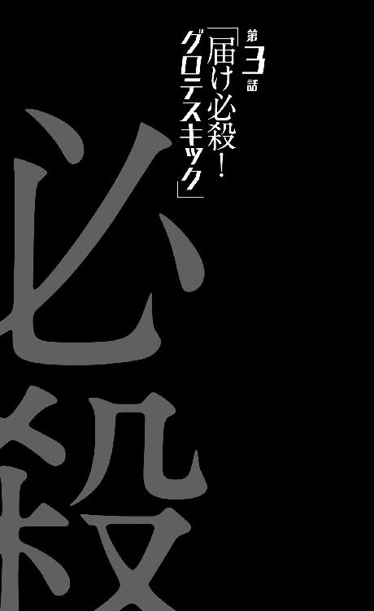
0
金と安全はタダ。
1
『最後の審判』という詰め将棋がある。
これはいわゆる双玉詰め将棋なのだが、ルールの盲点を見事についた作品であり、将棋という二人零和有限確定完全情報ゲームの完全さ、そして美しさを信奉する人々にとってはタブーにも近い悩みの種となっている。
千日手と打ち歩詰めのルールを戦略に組み込んだ詰め将棋という表現ではいまいち表現しきれていないけれど、要するにこの『最後の審判』は禁じ手のルールがパラドックスを起こしていることを世に示したのだ。
発表されて随分経つこの作品が投じた一石は、見て見ぬ振りをされ続けていると言うか、今もって棚上げされたままだが──もちろんそんな詰め将棋のことを、本編の主人公、空々空が知っているわけではない。彼は金の動かしかたと銀の動かしかたの違いも知らないだろう。
空々は一般的な中学生と同じように、将棋をする人のことを『なんとなく頭がよさそう』と思っている程度の認識だ──『将棋をする人とルービックキューブを回している人は頭がよさそうに見える』とか、そんなものだ。
まあルービックキューブくらい、パターンとルーチンで解明できるパズルもないので絶対に一緒にはできないけれど、しかし、そんな空々の存在こそが、地球撲滅軍にとっては、あるいは怪人──『地球陣』にとっては、『最後の審判』のように、これまで続いていた、地球と人類とのルールの盲点をつく存在なのだった。
戦局のバランスを崩す、徹底的に崩壊させる存在なのだった。
その重要さは今のところ『地球側』（？）には露見しておらず、そして誰よりも、本人が気付いていない。
空々空。
いまだ彼には戦う理由も目的もない──ただし、無私のヒーローであるスーツアクター『グロテスク』には、そもそもそんなものは必要ないのかもしれなかった。
2
「『地球陣』っていうのは......、世界中に......、社会中にいる」
マンションに戻ってきて、苦心してボディスーツを脱いだ。隙間なくフィットする作りなので、着るよりも脱ぐほうが大変だった。当然、それに剣藤の手を煩わすことになる。煩わすという言葉が、本当にしっくりくるくらいに。もっとも、かかる時間は、着るよりも脱ぐほうが早く済むようだった。とは言えどちらも、三十分以上かかる大仕事であることに違いはなく、どうやらテレビに出てくる変身ヒーローのように、掛け声ひとつでがらりとドレスチェンジというわけにはいかないらしい。
着替えて、出掛けて、帰ってきて、また着替えてという工程を済ませた頃には、もう夕方を過ぎていた。剣藤は作りかけのまま放っていたうどんをそのまま晩御飯にすることを提案し、空々に不満があるわけもなく、同意した。一も二もなく同意した。彼は食べ盛りの子供なのだ。
そしてうどんを食べながら、剣藤は空々に、先ほどの怪人について説明するのだった。それを聞いて空々がまず第一に思うことは、剣藤はものを論理立てて、順序立てて説明するのがとても苦手らしいということだったが、しかし『じゃあお前が同じことを説明してみろ』と言われたら、やっぱり同じくらいしどろもどろにはなっていたかもしれない。
それくらい『怪人の定義』は、一筋縄ではいかないものだった。
もとより、知らない者からすれば、それを知らなかった者からすれば、信じられず、受け入れがたい話ではあるのだから。
「人間社会のあっちこっちに紛れ込んでいる......、絶え間なく混在しているって感じかな。巧みに人間に『擬態』してね」
「擬態......ですか」
「どうやって擬態しているのかはわからないんだ。一貫して、調査中、研究中、実験中。きみがもらったあのスーツと同じ仕組みじゃないのかって、昔は言われてたんだけど。つまり光を捻じ曲げて、そしてその光を色づけしているんじゃないかって」
「ああ。それなら、『あるもの』と『見えるもの』は変わってきますよね。光を色づけする技術って言うのが、具体的にどういうものなのか想像しにくいですけれど......、まあ、映写機みたいなものでしょうか？」
いずれにしてもそんな理屈の延長線上だと言われれば、納得できそうだ。『グロテスク』のボディスーツを、更に一段進化させれば、そういう形になるのかもしれない──いわゆる二段変身という奴だ。
「でも、『昔は言われてた』っていうことは、その仮説は間違っていたってことですよね」
「うん。そういうこと......、今は、これもまだ仮説の段階だけれど、でも強い仮説として、人間の脳が『それ』を、直視することを拒否しているんだって言われているよ」
「直視できない......直視できない、美しさということですか」
数時間前に見た怪人の姿を思い出そうとする。
しかしその像は、うまく頭の中では結ばれなかった──思い出すことができない。ぼんやりとも思い浮かべられない──記憶からごそっと削除されたかのようだ。これが『脳が拒否している』状態なのかもしれない。いや、それならば見ることさえできないはずだから、剣藤が言っているのはそういうことではないのか。
「『それ』を『美しさ』と表現することには、私は強い抵抗があるけどね......、あいつらは私達の敵なわけだし」
うどんをすすりながら、剣藤は言う。言葉ほど険しい表情はしていない。自分で作った料理のうまさを存分に味わっているのかもしれない。空々の味覚も、『このうどんは味がちゃんとしている』と思ってはいる。『おいしいのだろう』とも。
「まあ、私は実際に見たことがないから、そう思うだけかもしれない。見たら意見が変わるかも......理屈じゃなく、『美しい』とも思わされてしまうかも。......だからこそ、見たら目が潰れちゃうんだけれどね」
「目が潰れるというのは、この場合、どういう意味を含んでいますか？」
「ん？ どういう意味って？」
「視力が失われるということですか？ 脳の機能の一部が停止するということですか？ それとも──リアルに眼球がぐちゃっと破壊されるということなのでしょうか」
細かい違いで、結果としてはすべて同じのようにも思えるが、しかしその細かさは、実際にこれから、恐らくそれを『見る』、そして『見続ける』ことを要求される空々にしてみれば大きな違いだ。
「そして、潰れたという目は、快復するのでしょうか」
「色々気にするね......、もっとおおらかな性格を期待していたけれど、そらからくん、思ったよりも気にしぃなんだね」
「......はあ」
曖昧に頷く。気にしぃと言われれば、その通りなのだと思う。だからこそ、空々は飢皿木診療所に行くことになったのだから──ちなみにこの時点ではまだ彼は、飢皿木診療所を訪れたことが、今の状況を招いた引き金であるということに気付いていない。
現状ではっきりしている断片的な情報を繫ぎ合わせていけば、簡単に導き出せそうな結論ではあるのだが、そこまで考えが及ばないのが彼なのである──飢皿木博士との感動の再会は、このままいけば彼にとって遠からず訪れるイベントであるはずなのだが、果たして。
「でも、何かの間違いで、目が潰れたら嫌ですし」
「一度見て大丈夫だったなら、ずっと大丈夫だよ」
太鼓判を押すようなことを言うが、よく考えればまったく根拠のない発言である。今まで見た人間が全員目を潰しているというのであれば、何の類例もないではないか。
「大体、『ものは試し』みたいな感じで、物見遊山のようにあのビジネス街まで怪人を見に行きましたけれど」
「物見遊山はないでしょ......敵情視察、だよ」
「いや、まあ、使用する四字熟語は何でもいいんですが......、あれでもしも、僕の目が潰れていたらどうするつもりだったんです？」
彼にしてみればただの素朴な疑問だったが、しかしそれは、あまり、訊いたことを褒められない疑問でもある。相手が『寸刻み』だったからよかったようなものの、『茶飲み話』にこの質問をしていたならば、今後の関係性が変わってしまいかねないような問いかけだ。
もしも空々の目が潰れていたらどうするつもりだったのか。
そんなことは決まっている。
特にどうするつもりもなかった、だろう。いや、どうするつもりもなかった、と見るのは、やや希望的観測が過ぎるかもしれない。怪人を視認できる稀有なる存在としての空々空のために、無辜の人々を躊躇せず虐殺した地球撲滅軍が、その稀有なる存在が『偽り』、『勘違い』だったときに、一体どんな隠蔽工作を図っていたかなど、精神の健康のためにはあまり考えないほうがいい。
とにかく彼はもっと自覚すべきだろう。
こんな高級マンションに住まわされ、世話係の人間と同棲し、おいしいうどんを食べられている現状は、決して地球撲滅軍の優しさから、まして博愛精神から生じているものではないということを。
この生活は彼の特異な才能あってのことだということをもっと自覚すべきだろう──間違っても、その才能を軽んじるようなことを言ってはならないのだ。
とにかくこのシーンでは、立場の上でも知識の上でも、
「さあ......」
としか答えられない剣藤が質問の相手だったので、特に禍根は残らなかったから、本当によかったものの。
「いや、でも、そのリスクはきみも、最初から想定していたんじゃなかったの......？ いざというときの介護のために、私を同行させたんじゃない。いい度胸してるなあって、私は思ってたよ」
「ええ、まあ......で、どうなのでしょう」
「『目が潰れる』という表現に込められた意味は、そうだね、きみの言ったパターンのすべてを含むね」
「すべてを？ って、それはつまり......」
「物理的に眼球が壊れて、視神経も役立たずになり、脳が破壊される──とまではいかないけれど、精神にも変調を来すことになる。そこまでは、『茶飲み話』から聞いていなかった？」
「はい......まさかそこまで酷いことになるとは」
眩しくて目が潰れる、としか聞いていなかった。
普通ならその情報だけでも躊躇しそうなものだが、空々は『ゴーグルを通して見たら目が潰れるなんて、日食の逆だ』と思ったくらいだった──危機感がなかったわけではないが。
しかし足りなかったのは確かだ。
「だから私達は、怪人と敵対しながら、対峙しながら、いまだ怪人の姿を捉えてはいない......捉えた人間が『そう』なっちゃうんじゃあ、ね」
「僕は、絵を描けばいいんですか？」
ややズレたことを空々は言った。ズレてはいるが、彼なりに一生懸命考えて出した結論ではある。
「今、あの怪人がどんな姿をしていたかっていうのを、残念ながら頭に描くことはできないんです......不思議と記憶に残らないとでも言うんでしょうか。でも、見ながらなら、スケッチできると思いますから」
「......もちろん、そういうスケッチもしてもらうにこしたことはないけれど、だけど私達は、っていうか『茶飲み話』は、モンタージュ作成のためだけに、きみにあのボディスーツをプレゼントしたわけじゃあないと思うよ」
剣藤はうどんを食べ終わった。空々はもう食べ終わっている。食事をしながらの会話は、ここまでのようだった。
「ヒーローの仕事はあくまで戦うことだよ、そらからくん。きみは怪人を倒すんだ」
「倒すっていうのは、殺すってことですか？」
「うん」
3
「私は今まで九匹の『地球陣』を殺している」
剣藤が洗い物を終えて、再びふたりはリビングのテーブルで向かい合う。今までのところ、空々はこのマンション内において、何の家事手伝いもおこなっていない。手伝おうとも思っていない。母がすべての家事を担っていた空々には、そういう習慣がないのである。彼が『共同生活を送る以上、家事は協力しておこなうべきだ』という価値観をまだ学んでいないのは、どちらかというと手伝われたくはないだろう剣藤にとっては、しかしありがたい話なのかもしれない。
「この数字を多いととるか、少ないととるかはきみ次第だけど、私は多いほうだと自負している」
「はあ......」
剣藤がどれくらいの期間、地球撲滅軍として活動しているのか知らないので、きみ次第と言われたところで空々には多寡のほどは判断しかねたが、しかし、剣藤の年齢を見る限り（その年齢も今のところ、空々視点でははっきりとしたところはわからないが、十六～十八だと、なんとなく思い始めている）、そう長くはないだろうことは予想できたので、
「まあ、多いんじゃないでしょうか」
と言った。追従の気持ちがなかったわけではないけれど、基本的には素直な答である。
「そう言ってくれると嬉しい」
もっと素直な答が返ってきたのは意外だったが、
「ただし、これ、本当に九匹なのかどうかはわからないんだな」
と、続けて彼女は言ったのだった。
遅ればせながら空々は、剣藤が怪人、『地球陣』のことを『匹』で数えていることに気付く。見た目（少なくとも、剣藤からすれば）が人間そのものの生き物（か、どうかはわからないが、『殺す』という表現を使っている以上、そういう認識なのだろう。地球を生命体と見做しているのと同じかもしれない）を、『匹』で数えるのには、なんだろう、強い敵意、あるいは蔑視を感じる。
それを感じ取れないほどに子供ではなかったが。
それに感情が動かないのが空々である。
「なぜなら九匹の中に、人間が混ざっていたかもしれないから」
「......確認できないんですか？ 『擬態』って言うなら、死んだら解けそうなものですけれど」
剣藤はここで、自分は怪人と間違えて人間を殺したことがあるかもしれないという、聞きようによっては地球撲滅軍の根幹にかかわるような告白をしたのだが、それを空々は、特に気付かずに受け入れ、普通に話を進める。
『倫理に関する過剰な演技』は、本人が気付いてこそなのだ。
「死んでも解けない。連中の『擬態』はそのまんま『生態』なんだ──いや、『死体』になっても変わらない。その場合は『死態』だね。というか見た目......外装だけの問題みたいにこれまで語ってきたけれど、腑分けしようが解剖しようが、『地球陣』は人間と区別はつかないんだ」
「............」
腑分けしようが解剖しようが人間とは区別のつかない生き物──それはもう人間なのではないだろうか、という疑念が、空々の頭を過ぎる。混ざっていたかもしれないというような言い方を剣藤はしたが、混ざっていたどころか、極論、九匹すべてがただの人間だったという可能性もある......しかし、その疑念は口にしないほうがいいだろうと、空々は口をつぐむ。
「つまりまあ、光を捻じ曲げて云々の仮説が崩壊したのは、だから、怪人の死体の解剖を実行できたときなんだけれどね......、ああ、ちなみにこれ、結構最近だから」
「最近？」
「地球が人間社会に怪人を送り込んできたのがいつからなのかは判然としないけれど......、ひょっとすると、人類の始まりの頃からずっとあったのかもしれないけれど、とにかく、そのことに人間側......、人間側の一部が気付いたのが、およそ五十年前」
『人間側』を『人間側の一部』と言い直したのは適切だろう。そこをひと括りにするのは無理がある──地球撲滅軍の規模が、それに類する組織の規模がどれほどだったとしても、それは『一部』の範囲を逸脱するものではないだろう。
「それからの五十年は、『地球陣』を『見つけ出す』ために粉骨砕身することになった。最初の一匹を『殺した』のが十年前......もっともこれは、事故みたいなものだった。確実に特定し、殺したのは、たったの四年前だよ」
「四年前......」
「......私が地球撲滅軍に参加する以前のことだ。『蒟蒻』の手柄なんだけど......」
また『蒟蒻』か。『茶飲み話』の評価も高いようだしその手柄、どうやら『蒟蒻』は、地球撲滅軍内において、相当の重要人物であるらしい......名前の割には。
そして剣藤が地球撲滅軍に加入したのは、ここ四年以内ということがわかった。わかったからどうということもないが、それで九匹は（本当に九匹だったら）多いほうなのだろう。
「あ、そうだ。じゃあ......」
と言いかけて、空々はやめた。剣藤は不思議そうな顔をしたが、その顔につられて、『やっぱり言おう』とは思わなかった。思いついたのは、『その殺した「地球陣」の死体は、（死体の形で残っていれば）きっと研究対象として保存してあるだろうから、その死体を僕が確認すれば、剣藤さんが今まで殺してきたのが怪人だったか人間だったか確認できる』ということだったのだが、しかし、言うべきではないと思った。
怪人のスケッチなど二次的だ──みたいなことを言われたが、その『死体確認』については、むしろしないほうがいいくらいのことに思えた。だって、それは、『組織内における失敗の証明』をするということになるのだから──そんな危険で嫌われそうな仕事を、自ら率先してしたくはない。
『危険』はともかく、『嫌われそう』はつらい。空々の性格からして、地獄のようにつらい。
言葉の接続の不自然さを強引に押し通すように、空々は言う。
「でも、どうして地球は、......地球はそんなことをするんですか？ 怪人を人間社会に送り込むっていう行為の意味が、なんだろう、よくわからないんですけれど」
言いながら、『地球という生命体がどこか（宇宙？）で、神々しい怪人に指令を出し、人間社会に送り込んでくる図』をイメージしようとしたが、うまくいかなかった。『神々しい怪人』自体がイメージできないのもそうだが、指令を出す地球というのが、空々にとってはシュール過ぎる。
まさか喋って、口頭で指令を出しているわけでもないだろうが。
「目的は人間社会の蚕食、かな......私はそう聞いている。それだって、色々仮説はあるけれど......、強い仮説は、それだ。地球は、人間を滅亡させるために、色々な手を打ってきているわけだよ。たとえば地球温暖化とか地球寒冷化とか......、それと同じ、『打ってきている手のうちのひとつ』が、『地球陣』って感じなのかな。それぞれを担当するセクションがあるけれど、私達第九機動室は、基本的には、その『地球陣』を担当する部署ということになる」
「担当......する」
要は殺害するということだ。
「大手の会社だったり、教育機関だったり、......あるいは政府だったり、そういう人間社会の中枢に『食い』込んで、組織の方向、組織のありようを変えてしまう。それは組織そのものを崩壊させる方向へと働くこともあれば、組織が社会を破壊する方向へと働くこともある──極端な例だけれど、一国の軍事大臣が怪人だったと想像してみて？ 戦争が起こる──かもしれないよね。その結果、人間社会は膨大なダメージを受ける......かもしれない」
それは本当に極端な例だろう。かもしれないと語尾につけてもカバーできない極端さだ。そもそも戦争だってやりようによっては、人間社会の発展に繫がることもあるのだから。だがたとえ話としては、単純に『戦争は悪いもの』という教育を受けている年齢の空々には、とてもわかりやすかった。
「......『地球陣』は、人間社会の主要ポストを奪い、人間社会の主導権を握ることが目的ということですか」
主導権を、というのは、あえて柔らかい言葉を選んだ。本当は生殺与奪の権利を、と言いたかった──だけどその権利はまさに、今の自分が地球撲滅軍に握られているものだったので、言えなかった。万が一、話がそちらに流れていったら、好ましくないことになる。
「主要ポストとは限らないけどね......、『大手の会社だったり』ってたとえは、あくまでも伝わりやすさを追求してのものであって。大手でなくとも、大手の下請けの孫請けでも、そこの一社員が書類仕事で不正をおこなったというただそれだけの事実でも──連鎖して連鎖して、積み重なって波及すれば、社会に大きくて深刻な影響を、甚大なダメージを与えかねない。ほら、よく言うじゃない。風が吹けば砂埃が舞うって」
「言いましたっけ」
「......冗談だよ」
真面目に反応してしまった空々に、剣藤は、やや気まずそうに俯いた。冗談を言い合えるほどに打ち解けた関係ではないはず、というのが空々の認識だったのだが、ひょっとすると剣藤の認識は違ったのだろうか？
この人は僕のことをどう思っているのだ。
そんなことが初めて気になった。
「風が吹けば桶屋が儲かる......だね。正しくは。怪人が躍れば、社会が崩壊する、んだ」
「でも、剣藤さん......その理屈だと」
また余計なことを言いかけて、空々は再度、口をつぐむ。組織の主要ポストに入り込むとか、人間社会に紛れ込むとか、そういうことを想定しての怪人の『擬態』だと言うのならば──地球が人類を滅ぼすために打った手だと言うのならば、これこれこういう可能性だって考えられるはずだ、と空々は言おうとしてしまったのだ──言わなくて本当によかったと思う。
これこれこういう可能性──つまり、『じゃあ地球撲滅軍の内部にも、怪人はいるかもしれませんよね』、と。
もちろん、言われるまでもなく、内部でそれを考え、対策している者はいるだろうが──対抗策は講じられているはずだが、そんなことを今ここで、剣藤相手に言う必要は絶対になかろう。話の流れが『じゃあ組織内の人間のチェックをそらからくんにやってもらおう』ということになっては、それこそ敵わない。
『失敗の証明』どころか、『内部に潜む裏切り者の発見』なんて役目を負わされては悲惨の一語だ。どこの公安なのだ。それもまた、あのゴーグルを使えるのが現状組織内に空々だけであると言うのなら、要請されれば断るわけにはいかない仕事だが、しかし自分から言い出すことではない。
「......さっきからそらからくん、『言いかけてはやめ』って言うのが多いけれど......、何かあったら言ってよね？ 一緒に暮らしているんだし、隠し事はやめて、腹を割って話そうよ」
「はあ......はい」
曖昧な頷きになりそうだったのを、改めてきっちりと頷く。頷いたからと言って、腹を割ることはできないけれど。自分の立場云々のこともあるが、下手なことを言って剣藤を怒らせたらという恐怖は、どうしても抜けない。
昨日車内で浴びた殺気は、どうしても忘れられない。『大いなる悲鳴』は、地球撲滅軍の仕業じゃないのかという、（彼らが言うには）あらぬ疑いをかけられたときに、『茶飲み話』と『寸刻み』が合わせて発したあの殺気は、空々の骨の髄まで染み込んでいる。
今は甲斐甲斐しい風に、空々に風呂を勧めてくれたり、料理を作ってくれたり、着替えを手伝ってくれたりする剣藤だが、彼女がその気になれば、空々など、全身輪切りにされてしまうのである。
............。
いや、そうだ。『大いなる悲鳴』だ。
あれがもしも地球撲滅軍の主張の通り、地球の悲鳴だというのなら。
「剣藤さん。地球が人類を滅ぼしたいと思っているのなら、あの『大いなる悲鳴』を、あと二回か三回、連続で発せばいいだけじゃないんですか？ そんな、怪人を送り込むとか、温度や湿度、気圧やオゾンホールみたいな、環境を調整するとか、細かいチューニングをするんじゃなくって......」
「......まあ、そうだね。それはきみの言う通りだよ。だけど、あれは地球にとっても最後の手段というか......、あんまり使いたい手段じゃないんだと、私達は考えている。少なくとも、あの規模では。だって、きみの言う通り、『そうすればいいのにそうしない』というのは、それができないからじゃないのかと考えるべきだもの。仮に『あの攻撃をするためのエネルギー充塡には相応の時間がかかる』だけだとしても、その待ち時間の間に、私達は諦めずに行動を続けるべきだろうし」
「諦めずに、ですか」
空々が外部の人間だから（いや、状況的にはもう十分に内部の人間だが、彼の意識として）そう思うだけかもしれないが、剣藤の言いかたはあまりに希望的観測に満ちている気がする。『今この瞬間に二回目の「大いなる悲鳴」が響いたら』という可能性を反証する方法がない以上、机上の空論でさえなく、その希望は幻にも似た、砂上の楼閣なのだ。
「地球の考えていることなんてわからないよ。地球のやることなんてもっとわからない。だから私達は、考えられる限りのことをして、やるべきことをやるだけ。そうでしょう？」
「そうですね」
同意を求められても困ったが、空々は首肯した。自分にはそうするしかないのだと知っていた。剣藤と同じように言うならば、地球撲滅軍の考えていることなどわからないのだから、空々はどれほど言いたくなっても、言うべきでないことは言わずにいるべきなのだ。
ただ、しかし問題は『言いたいこと』ではあっても、『言うべきでないこと』なのかどうか、空々にもよくわからないことをどうするべきなのかだった──聞くべきことは聞くべきなのだろうが、しかし聞きたいだけのことは、どうすればいい？
聞こう。と、思った。
これは策略とか、感情が動じない彼の人間性に由来するものではなく、さっきから一方的に言いたいことを言われているから多少はやり返したいという、単なる子供っぽい、意地のようなものの発露だったかもしれない──なに、腹を割って話そうといったのは向こうだ。
「あのう、剣藤さん」
「なにかな、そらからくん」
「初めてのとき、剣藤さんはあの『大いなる悲鳴』を聞いてないって言っていましたよね──あれってどういう意味なんですか？」
気になっていたことだ、とは言えない。今思い出したことである。その後高熱で魘されたり、家族や友人が皆殺しにされたりしたので、記憶から飛んでいたが──しかし、今は判明した彼女の所属や立ち位置を考えると、それは冗談では済まされない発言であるようにも思える。
大体、聞いていないというのなら。
あのとき発した殺気はなんだったというのだろう。
知りもしないもののために──彼女はどうしてあそこまでムキになったのだろう。
「............」
途端、剣藤は赤面した。頰を紅色に染めた──恥ずかしくなったのか、怒ったのか、とにかく、指摘されたくないことを指摘されたというような態度だった。どうして？ あのときは、随分とさらっと言っていたような気がするが......その割に、そこまで聞かれたくないことだったのだろうか？
「剣藤さん？」
「は、初めてのときとか......、そういう言いかたはやめてくれないかな。セクハラだよ、そういうの」
「は？」
と、虚を突かれた形の空々だったが、理解した。『初めてのとき』という空々の言葉を、どうやら剣藤は『初めて会ったとき』ではなく、『初めてキスしたとき』という意味に受け取ったらしい......驚異の連想だった。
「初めてとか......二回目があるみたいな言いかたしないでよ。そ、そういうの......、暗に要求されても困るんだよね。いやね、そらからくん。私はあなたの面倒を見るようには言われているけれど、そういう方面の面倒を見るっていうのは違うと思うんだよ。ううん、もしもそらからくんから強硬に命令されたら、私は従わざるを得ないけれど......お姉さんはあんまり感心しないな、そういうの」
「......えっと」
言葉が足りなかったのは確かに空々のほうかもしれないけれど、しかし軽く説教までされてしまうと、さすがに理不尽なものを感じる......、『誤解されて責められる』というのは、空々にはつらい。だけど、『あの行為』のことを、話題に上げ続けるのが恥ずかしいのは、思春期真っ只中の空々にしても同じだった。なんとなく、触れるのはタブーである気さえしていた。
だから、
「ごめんなさい。デリカシーに欠けました」
と謝って、話を終わらせることにした。
お礼を言うことはできなくとも、謝ることはできるらしい。
「ただ、下心があっての発言ではありません」
「本当......？」
ジト目で見られる。責めるような目は本当にしんどい。後ろめたいことは何もないはずなのに、追い詰められている気分になる。やってもいない罪を自白してしまいそうだ。
「ほ、本当です」
「......わかった。信じてあげる」
「じゃあ」
と、話を戻す空々──と言うより、一刻も早く今の話から離脱する。やっぱり余計なことを言うべきではなかったと思いながら。
「初めて会ったとき、剣藤さんはあの『大いなる悲鳴』を聞いてないって言っていましたよね──あれってどういう意味なんですか？」
律儀に言い直した空々に、剣藤は、
「どういう意味もこういう意味も、そのまんまの意味だけれど......」
と、素っ気ない言葉を返す。赤面からまだ完全には回復していないので、案外その素っ気なさは、照れ隠しの結果なのかもしれない。空々は年上のはずの、『大人』のはずのこの少女から、時折、可愛らしさを感じるようになってきた。
「ああ、そうだね。そういうことは、話しておいたほうがいいのかな......、そらからくんが、『怪人を見られる』という才能を買われたからスカウトされたように、私は『地球の悲鳴が聞こえない』という才能を買われてスカウトされたんだ......そんな才能は、唯一かどうかは調べようがないにしても、少なくとも数少ないらしくって。地球撲滅軍には、私の知る限り私しかいない。そらからくんほど直接的に役に立つかどうかはわからないけれど、まあ、その特殊性は何かの役には立つんじゃないかってことでさ」
「......え？ あれ？ だとすると......ちょっと待ってください。じゃあ剣藤さんが地球撲滅軍に入ったのって、早くても半年前ってことですか？」
だとすると、その期間で怪人を九匹狩ったというのは、いくらなんでも多過ぎる──人間が何人混じっていたかは置いておくとしても、働き過ぎなくらいだ。だが、とても信じられない。剣藤犬个が、ほんの半年前まで──ただの一般人だっただなんて。
ただの一般人が、どれほどの経験をすれば、何食わぬ顔をして一家惨殺を成し遂げるような『軍人』になれるのだろう？
「違う。私が所属したのは、二年前くらい」
が、それは空々の早とちりだったようで、剣藤はそう訂正した。
「二年前、そらからくんとおんなじようにスカウトされた。私の家族を殺したのは『火達磨』だったから、危うく私も焼かれるところだったけどね......」
「............」
空々くんとおんなじように、という言葉の意味が重過ぎた。その重さを感じない空々だからいいようなものの──いや、決してよくはない。ただ、空々にしてみれば、どうでもいいだけだ。
「『大いなる悲鳴』ではない、地球の悲鳴自体は、昔からあったんだよ、そらからくん。軍ではそれを『小さき悲鳴』と呼んでいたけれど......、もっとも範囲は限定的で、半径数十メートルの中で、精々一度に十人、二十人くらいを殺せるだけの『悲鳴』が、数年に一回、あるかないかって感じで......、だから迂闊にも地球撲滅軍は、それをそんなには重要視していなかったんだけど......」
「......数年に一回」
そう言えばさっき剣藤は意味ありげに『少なくともあの規模では』と言っていたか。
だとすれば『大いなる悲鳴』は、想定できた災害ではないのかと思ったが──たぶん、まったく想定していなかったわけではないのだろう。だからこそ、その『悲鳴』が聞こえないという剣藤は、スカウトされたのだ。
ヒーローになれなかった。
失敗した英雄。
牡蠣垣や剣藤の言葉の端々にあったそんな言葉の意味を、空々は理解した──つまり、剣藤は『大いなる悲鳴』を防ぐことができなかったのだ。
だからこそ、あの車中での殺気。
そしてあの温厚そうな振る舞いを見せる（あの現場で優雅に紅茶を飲んでいたところを見ると、もちろん本質はそう温厚でもないのだろうが）『茶飲み話』が、唯一激昂した場面があそこだったことを思うと、当然、牡蠣垣もその企画に一枚嚙んでいたのだろう。
「まあ、なにぶん規模が違い過ぎるから、それまでの『悲鳴』と、半年前の『大いなる悲鳴』は、異なるものなんじゃないかとも言われているけれどね......、でも、どちらにしても、どちらも私には聞こえなかった」
「............」
「二年前、私は高校一年生だったんだけど、校外学習の場でその『悲鳴』に遭ってね。班の子がみんな死んだんだけど、私だけは生き残って......、『小さき悲鳴』は、範囲が限定的な代わりに、致死率は三分の一どころじゃなくて、百パーセントだったから、私みたいな生き残りは当時、本当に珍しかったらしいの。だから、貴重だって言われて......その後はさっき話した通り。まあ私の場合は家族が焼かれただけで、そらからくんみたいに学校ごと焼かれたりなんてしなかったけどね......、それは重要度の違いなのかも。それとも──」
今度は『言いかけたところで黙る』ということを、剣藤がした。
『それとも』のあとに、彼女が何を続けようとしたのかは空々にわかるはずもなかったが、もちろん彼は、そんなことを気にしなかった。剣藤がここで、何を言おうとしたのか。空々がそれを思い出すのは、随分と先のことになる。
「......いずれにしても、『小さき悲鳴』と違って、『大いなる悲鳴』では殺せない人間がいる以上、地球も色んな手を打たざるを得ないんだと思う。さっきも言ったけど、『大いなる悲鳴』は、本当に切り札なんだろうね──そして『色んな』のひとつが『地球陣』。そのひとつっていうか、結局、それが一番厄介なんだよね──地球温暖化を防ぐ手立てを打つとか、あるいは森林面積の減少を解消するとか、そういうことは人間の総合力で、一致団結すればいい方向に持っていけなくはないんだけれど──一致団結すべき人間の中に怪人がいるんじゃあ、全体が崩れる」
「戦術のひとつが究極的には、すべての戦局に影響があるということですか......」
「だから怪人は殺さなければならないの。そらからくんは」
剣藤は言う。何度目かになる台詞だ。
「そらからくんは怪人を殺さなくてはならないの」
「......僕が見つけて剣藤さんが殺す、じゃあ駄目なんですか？」
「駄目」
頑なだった。別に、そこまで本気でその主張をしたつもりもなかったが、それにしたってにべもない言いかただった。取りつく島もない。
「絶対に駄目。そらからくんが見つけて、そらからくんが殺すの」
「はあ、まあ、ヒーローが怪人を倒すのは......」
「倒すじゃない。殺す。間違えないで」
「............」
「そらからくん。そらからくんは『怪人を見られる』からスカウトされたんだけど──でも、それは第一の理由であって、第二の理由も、ちゃんとあるんだよ。もちろんそれは第一の理由とも繫がっているんだけれど......、きみが地球撲滅軍に三顧の礼をもってスカウトされたのは」
三顧の礼とやらを受けた記憶はなかったが、これは単に、最大級に敬意を払った対応をもって迎えられているのは、というような意味合いなのだろうと空々は理解した。
しかし続く言葉はどのようにも理解しがたかった。
「きみが怪人を殺せるからなんだよ」
4
野球に熱中するようになってからは、あまり熱中してテレビを見ることはなくなってしまったが、空々も子供の頃は──今も子供だが、幼稚園とか、小学校一年生のときとかまでは、テレビでヒーローものを見たりすることもあった。
変身したヒーローが敵をばったばったと倒す様子を見て、まあその頃から彼は、血沸き肉躍る戦いなどには特に何も感じたりはしなかったのだが、親が自分に期待するような反応を、それなりに無自覚にしたりしつつ、考えていたことがあった。
どうして敵を生け捕りにしないのだろう──だ。
生け捕りにして、捕虜にして、敵の情報を聞き出し、本拠地を突き止めたり、組織の規模を聞き出したりすれば、その後の戦いをかなり有利に進められるはずではないか。
こちらの戦力が圧倒的に少ない以上（空々が見ていたヒーローものでは、少数精鋭と言えば聞こえがいいが、仲間を合わせても精々数人という小規模な団体だった）、それは絶対にするべきことだった──間違っても必殺技を使用し、怪人を爆発させてしまうなんて、やってはならないことのはずだ。
幼稚園児にもわかるようなことをどうしてヒーローはしないのだ──まあもちろん、空々園児のそんな疑問に対する答は『大人の事情』なのだが、しかし地球撲滅軍が、怪人──『地球陣』の生け捕りを目論まないのは、彼らが組織として過激派だから、というわけではない。
過激派ならばむしろ、捕らえての非人道的な拷問も厭わないだろう。
人斬り集団として歴史に名を残す新選組は、しかし意外と人を斬らず、基本的には生け捕りを旨としていたという──有名な池田屋事件でも、大半の敵は、生かして捕らえている。
生かして捕らえ。
そして目を覆いたくなるような、辛酸を極める拷問をするのが彼らのやり口だった。
もちろんそんな形容は現代の感覚であり、時代背景を鑑みれば、彼らの行いはむしろ正しい。
しかし、地球撲滅軍は怪人を殺す。その場で殺す。虐殺する。
解剖しても意味がないので、最近は死体を持ち帰ることすらしないらしい──大抵の場合、その場で処分してしまうらしい。『処分』というのは、きっと焼き尽くすとか、そんな感じなのだろうと空々は考えた。文字通り、一番後腐れがない。
それはどうしてなのかを、空々は訊いた──それに対する剣藤の答は、
「解剖しても意味がないように、尋問しても意味がないから」
だった。
「言うまでもなく捕らえたことはあるんだ──何度もある。今でもたまに、殺し損ねて、うっかり捕らえてしまうこともある。作戦上、どうしても捕らえざるを得ない状況とかも、場合によってはある。だけど彼らは何も答えない」
「黙秘権の行使ってことですか？ でも......」
警察組織が逮捕状をとって取調べ室で犯人を尋問しているわけではないのだから、そんな権利が認められるとは思えない。当然ながら、弁護士の立会いも許されないだろう。
「黙らない。むしろ声を張り上げて、主張する。自分は関係ない、そんなことは知らない、お前達が何を言っているのかわからない、お前達は頭がおかしい──って」
「............」
「拷問しても無駄。人質をとっても無駄。肉体的な苦痛も精神的な苦痛も無駄。助けてくれって言うだけ。許してくれって言うだけ。『その通りだ』って言う奴もいるけれど、絶対にこう続ける──『その通りでいいから、もうやめてくれ、許してくれ』って。そういう奴に薬を使ったら、むしろ『知らない』と言う──『これ以上拷問されるくらいなら、わけのわからないことでも自白したほうがマシ』だって言う。そうやって擬態を続ける──死ぬまで続ける。いや、だから、死んでも続けるんだ」
それは。
それは罪の構図なのでは──と思った。
黙秘権も、弁護士を呼ぶ権利も認められていないのだろうと推測したものの、しかしどうやら、裁判を受ける権利だけは認められているというわけだ──ただし、魔女裁判だが。
盟神探湯に手を突っ込むような。
「捕らえた......えっと、別に捕らえてなくともですけれど、怪人を怪人と判別できる証拠は、証拠となりうる何かは、ないんですか？」
「ない。区別はつかない。見た目もそうだけど、中身も、質問に対する受け答えも、まったく人間と区別がつかない。あるのは状況証拠だけ──だから、たとえ自白が引き出せても、情報が得られたとしても、その情報の確度は著しく低い。だから、生け捕りにする意味がない──だったら事後処理が簡単な、発見即抹殺のほうが得なの」
「......なるほど」
なるほど、と言った。そう言うしかない。他に何を言えばいい？
社会に出て、一番やってはいけないことは何かと言えば、それは『年上の人間に反論すること（反抗はいい）』だが、社会に出るどころか若くして社会の裏側に入ってしまった空々少年は、齢十三歳にして、それを自然に学んでいた。
「じゃあ、地球、もしくは『地球陣』とのコミュニケーションは、今のところどんな形でも成立していないってことなんですね」
「そうだね。それができる奴もまた、私やそらからくんみたいに、待ち遠しく思われているかもね──私は失敗したけれど」
地球の悲鳴が聞こえない剣藤犬个。怪人を見られる空々空。そこに地球と話せる人間が現れたら──確かに心強い。
心強いが、しかしその三人目の『ヒーロー』が、人間側についてくれるかどうかは微妙だろうと空々は思った。『地球と話せる』なんて特権は、特権としてあまりに強過ぎるし──それができるなら、地球側についてしまいかねない。『大いなる悲鳴』のことがあるゆえに、もしもコミュニケーションが取れるなら、降参したくもなるだろう......まあ、そんなのは自分にはおよそ関係ない話だろうけれど。
「そんなわけで、そらからくん。地球撲滅軍のメンバーとして、第九機動室の仲間として、最初の任務だよ」
と、剣藤はテスト範囲の要点をまとめる先生のように言った。
「今日見た怪人を、殺してきて」
そんな指令を受けて数十分後、空々は風呂に入っていた。
昨日はシャワーで済ませたけれど、今日はバスタブを使うことにした──頑なに一番風呂を空々に譲る剣藤に対する気遣いとしては、入浴後、お湯を入れ替えればいいだけということに気付いたのである。
水道代、光熱費がその分余計にかかってしまうけれど、そんなものは必要経費の内だろう──こんなマンションを『寮（みたいなものなのだろうと判断した）』として用意する組織が、そんなところできなきなすることは、まさかあるまい。
入浴剤を入れて青色に染まった湯船の中で、空々はぼんやりと考える。
まあ、殺すしかないのだろうなあと考える。
さりげなくことの実行を剣藤に担当してもらう方向に持っていけないものかと伺いを立ててみたのだが、それは頑なに断られたし......、あるいはその『怪人を殺す』という『作業』が、地球撲滅軍に所属するための儀式みたいなものなのかもしれない。
通過儀礼。
今は部室すら焼き払われたであろう野球部でも、そう言えば入部時に、そんなイニシエーションが存在した。それは新入生と二、三年生の練習試合で、新入生は全員、女子から制服を借りてきて、女装してプレイをするというものだった。
意味はわからなかったが、みんなが自然にやっているので、空々も当然、従った。そうするものなのだろうと思った。同じ小学校出身だったクラスの女子にお願いして、ブラウスを着てスカートを穿いて一試合を通した。ただでさえ上級生が相手なのに、借り物の制服ではスライディングができないので大敗もいいところだったし、試合を終えてみてもやっぱり意味はわからなかった。
だが、同じ新入部員に話を聞いてみれば、『これで野球部の一員になった気がする』そうだった。そう言われるとそんな気がして（そんな気がしなければいけない気がして）、空々も納得した。
その新入部員も、空々に制服を貸してくれた女子も、今やみんな焼けてしまったのだが、それはさておき、規模は違えど、そんなことを強いた上級生も、一年前ないし二年前にはまったく同じことを経験していたわけであり──あれは組織の一体感を高めるために必要な儀式だったと言われると、納得はできる。
だから、この『怪人殺し』も、そういうことなのかもしれない。
軍としては、一匹目だけを空々に殺させて、二匹目以降は、洗練された技術を持つであろう剣藤にやらせるつもりなのかも──だとすれば、本当にこの任務がそんなイニシエーションなのだとすれば、空々はこれまでのメンバーよりは恵まれているのかもしれない。
相手を『怪人』だと確信した上で殺せるのだから。
相手が人間であるかもしれない、という可能性を残した上で行為に及ぶことに較べれば、ストレスは段違いだ──本当にそうか？ いや、それは、地球撲滅軍の人間は人類を守ることを目標に掲げながらも、人間、たとえば空々の関係者を殺すことにまったく躊躇がなかったのだから、そんなところで彼らはストレスを感じないだろうというような意味ではない。
そうではなく。
たとえ相手が怪人であることがはっきりしていようとも、通常、人間と絶対に区別のつかない生き物を殺すことに、ストレスを感じないなんてことが、果たしてあるのだろうか──と思ったのだ。
哲学的ゾンビという言葉がある。
これは哲学的に思考するゾンビという意味合いではなく、哲学的にしか存在しえないゾンビという意味合いでのネーミングなのだが──ざっくり言うと、『人間と区別がつかないゾンビ』である。つまり、外から観測する限りにおいて、そのゾンビは人間となんら区別できないのだけれど（見た目もそうだが、受け答えや感情の表れ、生理現象などもすべて人間と同じ）、しかしゾンビである以上人間ではなく、いわゆる『心』や『意識』を一切持たないと定義する（『心』や『意識』があるようには振る舞う）。
さて、そんなゾンビを想定したところで思考しよう。
哲学的ゾンビはゾンビか、それとも人間か？
たとえば友達が哲学的ゾンビだったとして、それを見抜けるかどうか──もちろん、見抜けるわけがない。どんな人間だって哲学的ゾンビかもしれないのだ──唯一『そうでない』と言えるのは、思考する自分だけということになる。
人間不信（ゾンビ不信？）になってしまいそうな考えかただが、しかし空々は地球が人類に紛れ込ませているという怪人の話を聞いたとき、すぐにその哲学的ゾンビという言葉を想起した。地球撲滅軍的には『地球陣』と呼んでいるようだったが、空々は密かに、あの美しい怪人を、哲学的怪人と呼ぶことにした。
確かに空々の場合はゴーグルで正体を確認した上で、哲学的怪人に挑める──だが、それは空々にしかわからないことであって、たとえば哲学的怪人の友人や同僚、（家庭を持っていたとすればだが）家族だったりにはわからないことだ。
彼らにしてみれば、ただの人間がただ死んだだけのこと。
ならばその胸中はいかばかりかという話である。
そもそも、例のゴーグルにそこまで信頼をおいてよいのかという疑問もあるだろう──あれが（そんな仕組みが果たして可能なのかどうかはわからないけれど）、特定の人物が、特定の正真正銘の人間が、モンスターに見えるというプログラムが組み込まれたゴーグルだったとすれば？
中学一年生に高熱剤とかいう怪しい薬を平気で飲ませる組織である。その程度の騙しは仕掛けてきても不思議ではない──その場合の目的はまるっきり不明だが、地球撲滅軍が有する『何をやってもわからない』感はどうしたって否めないし、疑いを完全に払拭するのは不可能だ。
だから──本来、空々の立場からすれば、剣藤からのそんな指令には、とても頷けたものではないはずなのだが、それらの疑念や条件をすべて飲み込んだ上で、やっぱり空々は、
「まあ、殺すしかないだろうなあ」
と、今度は声に出して呟くのだった。特に葛藤はなかった。
のぼせてきたので風呂をあがった。うっかり、お湯を入れ替えるのを忘れたのに気付くのは、翌朝、目を覚ましてからのことである。
5
「で、どうやって殺すの？」
「いや、別に考えてませんけど......、あのボディスーツを着ていけば、どんな風にだって殺せるでしょう？」
「そらからくんって馬鹿なんだね」
「え？ いやそりゃ、別に成績はよくなかったですけれど、そんなにはっきり言われるとびっくりしますね。なんでですか？」
「色々理由はあるけれど、まあ、一番大きなのをふたつ。お姉さんが教えてあげよう」
「はあ。じゃあ教えてください、剣藤さん。僕が馬鹿な理由を」
「そらからくんが馬鹿な理由その一。世の中にはエネルギーってものがある。どんなものでも、エネルギーによって動いている。怪人だって、ご飯を食べなかったら死ぬ」
「はあ。そうでしょうけれど。え？」
「いやだからさ、透明になれるボディスーツ、きみが名付けたところの『グロテスク』だって、バッテリーで動いているってことだよ。つまりバッテリーが切れれば、透明化は終了する。ただの変な色の全身タイツになる」
「......え？ 充電器なんて、でも、ありませんでしたけれど」
「箱の中に入っていたんだと思うよ......、小型化されてるから気付かなかっただけで。私の刀だって、バッテリーが切れたらただの刀だよ」
「え？ あの刀......バッテリーなんて使っているんですか？ あれ、電気で動いているんですか？」
「言ってなかった？ あれも開発室からの技術提供なんだから......、今時の最新テクノロジーで、電池で動いてないものなんてそうはないと思うけど......破壊丸の切れ味は、数時間程度しか維持しない。もっとも、私の体力が、一時間も続けては持たないけどね......」
「そうなんですか......。電動の刀って、なんだかすごくがっかりですね......。『グロテスク』の持続時間は、どれくらいでしょうね？ あの会社まで、行って帰って大丈夫だったんですから、最低でも二時間以上は持つんだと思いますけれど......」
「さあ......『再開発』は言ってなかったの？ じゃあ、私が電話して聞いておいてあげるよ......、とにかく、それが何時間であれ、活動時間に限りがある以上そんな気楽な構えで向かったら、危険だよ。チャンスを窺っているうちに、可視化してしまうかもしれない。そうなったら、任務は達成できないでしょ？」
「......まあ、一つ目は納得しました。僕が馬鹿でした。そして剣藤さん、二つ目の理由は？」
「そらからくんが馬鹿な理由、その二。理由その一だけだったら、手早く済ませればそれで大丈夫なんじゃないかって話なのかもしれないけれど、だけどさにあらず。言ってしまえば、『グロテスク』って透明人間スーツなわけでしょう？」
「そうですね。有体に言えば」
「そらからくん。仮に、透明人間がきみを殺しに来たとしたら、そのとききみは抵抗のすべなく、絶対に殺されてしまうと思う？」
「そりゃあ、見えないんですから......あ、いや、ああ、違いますね。そうですか......そういうことですか、わかりました」
「うん。よくわかったね、偉いぞ。そう、見えないってだけじゃあ必勝じゃない......、必殺じゃない。たとえば、きみが怪人に近付いて、後ろからいきなりそいつの首を絞めたとしても、怪人は間違いなく抵抗するだろう──密着してしまっている以上、見えてる見えてないにかかわらず、相手の抵抗を食らわずには済まない。殴ったって、一撃で死ぬとは限らない。じゃあナイフで刺すでもしてみる？ 銃で撃つとか？ 無理。だって、そらからくんは透明化されていても、それらの凶器はされていないんだから」
「......透明加工が施されている凶器とか、ないもんなんですかね。『見えない姿』なんですから、『見えない武器』ってセットにしてもらえそうなものですけれど」
「そんな取り扱いの難しいもの、今のそらからくんが使えるわけないじゃない......ナイフなら刃を握っちゃうかもしれないし、拳銃なら暴発するかもしれないのに」
「抵抗......されたら、そして殺害に失敗したら、そのときはどうすればいいんでしょう」
「逃げるしかないと思う。だって、そのスーツは透明化の機能、それに軽量化に特化しているせいで、鎧としての機能はまったくないんだから。私の剣道着とは違う」
「ああ......、やっぱりあの剣道着も支給品なんですね。そうですか、あれはいわゆる防御機能があるんですね......」
「そういうこと。とにかく、その存在がバレてしまえば、透明なだけの人間に反撃する手段なんて、いくらでもあるでしょ？」
「そうですね......触って気付かれないわけじゃないんですからね」
「そして触らなくても気付かれるかも。忍者みたいに足音を消して歩けるわけじゃないし、場所によっては足跡も残っちゃうし。ドアを開けたり物を動かしたりすることにもいちいちリスクが伴う......気配や体温までは隠せないから、勘がいい人には『なんとなく』の違和感があるかもしれない。まあその辺は気をつければいいだけだとしても、そんなピクニックにでもいくみたいに、お気楽な気分で出かけられてもお姉さんは心配だよ」
「そうですか。すみません。心配をかけるつもりはありませんでした」
「謝られてもねえ。とにかく、色々考えて。......『茶飲み話』からも、先輩面しないように言われたから、これは別に先輩からの忠告ってわけじゃないけれど、ここでいいとこ見せといたほうが、印象がいいよ」
「ヒーローとしての印象ですか？」
「そういうこと。だから」
「はい。色々考えます。怪人を殺す方法を」
人を殺す方法を。
6
朝食を食べ終えて、空々は、先輩からの忠告ってわけじゃない何かに基づいて、色々考える──考えている間に、先輩ではない人から受けた指摘通りに箱の隅に丸まっていた充電器で『グロテスク』を充電しておくことにした。
説明書は箱をどんなに引っ繰り返しても、逆さに振っても出てこなかったので、果たして『グロテスク』のフルチャージまで、どれくらいかかるかは不明である。充電が終了すればゴーグルにもその表示が出るそうだが......、しかしその機能から考えて、恐ろしく電気代がかかりそうな気もする。
それは空々が気にするようなことではないが......いやそもそも、この状況下、空々が気にするようなことはひとつだってないのだが。仮にあるとすれば、それは失敗した場合の対処、くらいのことである──剣藤に指摘されるまで、その可能性を考えていなかった彼もいい加減暢気だが（空々の頭の中では本当に、透明になれることはイコールで失敗しないこと、という楽観的な式が、成立していたのだ）、言われてみればこの任務、失敗の可能性のほうが高い。
剣藤が言うには、
「まあ失敗したとしても、その場で捕まらなければ、後のことは軍がフォローしてくれるから大丈夫だよ......、逆に言うと、その場で、現行犯で捕まることだけは絶対に避けて頂戴。もちろん警察庁にコネクションがないわけじゃないけれど、消費税を下げるみたいには簡単にはいかない」
とのことだった。
「消費税を下げるより、捕まった僕を解放するほうが大変なんですか？」
「違法行為だからね......」
他人事のように言う。
なんというか、文化が違う国の異様な風習を、それでも『それはそれで尊重しなくちゃいけないよねえ』と、理解がある風を示すような言いかただった。たとえば、外国人が、『私は食べないけれど、日本人がクジラを食べるのは伝統だから、認めてあげなくちゃ』と言ってるような。
いや、逆だ。このたとえは逆だ。
『私はクジラを食べるけれど、食べない人もまあいるよね』だ。
「それに、『地球陣』が警察組織の中にいないとは限らない。っていうか、たぶんいる」
「............」
「だから、手を尽くしてみても、そう簡単には助けられないかもしれない。実際、そういうことはあった。一番やっちゃいけないことは、怪人を殺して、だけどその場から撤退し損ねて、現行犯で捕まって、そのスーツやゴーグルというシークレットアイテムの存在が世間に露呈してしまうことかな......、あ、そうだ。『茶飲み話』も言ってたけど、私達地球撲滅軍って、秘密組織だから」
今更のような言葉だった。
それに『失敗したとしても』『大丈夫』なんて安全を保障するようなことを言われても、とても気楽には構えられない。フォローしてくれるはず、たとえ捕まっても自分はヒーローだから助けてもらえるはず、なんて考え方は危険だ。
失敗したら切り捨てられる──と思っておいたほうがいい。はずだ。
『そういうことがあった』なんて、曖昧な言いかたでぼかしているが、それは『そのときは助けられなかったから見捨てた』という意味なのではないか。あるいは、もっと酷い意味なのではないか。
だからここは、ヒーローとしての初戦は、絶対に成功しなければならないと考えて動くべきなのだろうと、空々は考えた。
体力はあるほうだ。十三歳にしては、だが──これでもスポーツ推薦で名門野球部に入れるような十三歳なのだから──色々考えていたら、コンセントに繫がれたスーツから、ギィィイイイ、という、嫌な音がした。まるで壊れたみたいな音だったが、異常を知らせるアラートみたいだったが、それがどうやら充電終了の合図だったらしく、ゴーグルに『コンプリート』の文字が示されていた。
何の冗談か、カタカナである。中学一年生の空々の学力に合わせてくれたのだとすれば、開発室は気を遣い過ぎだ。ゲーム世代の空々は、コンプリートくらい、書けなくとも読める。
「剣藤さん。スーツ着るの、手伝ってください」
自分の部屋を出て、廊下を三歩歩き、隣の部屋──剣藤の部屋の扉をノックする。考えているうちに時間は結構経っていたようで、もう正午前である。充電完了までには、最短でも四時間以上かかるようだ。
予想よりは早いが、フットワークが軽いとは言えない。
急がないと、今日中にことをなすのは難しくなってくる──ことをなす？ 遠回しな言いかたを選んだ自分に気付く空々。剣藤や牡蠣垣はこういうときに言いかたを避けずに、はっきり言うのだろうが。
殺す、と。
......これを空々少年が行為に抵抗を持っているからだと考えるか、それともその振りをしているだけなのか、つまり過剰な演技だと考えるかは、見る人聞く人次第だろうが──少なくとも空々本人は、そんな意識自体をしていない。できていない。こういうとき、彼には自分を客観的に見ることがまったくできない。仮に考えても、答は出ないだろう。
ノックを繰り返しても、返事がなかった。
音が聞こえなかったのかなと思って、ノックを繰り返してみても無反応である──となると、部屋にはいないのだろうか。洗い物を終えて、キッチンから部屋に戻っているとばかり思っていたのだが......？
そして、それは空々の少年らしい、というか子供らしい、デリカシーに欠けるところだったのだろうが、返事がないのを受けて、彼はその扉を開けてしまった。それでは一体何のためにノックをしたのか不明になってしまうが、まあ、『いないのかな？』と思った以上、不在の確認のためにドアを開けてしまうのは、彼にとっては至極当たり前の行動のように思えたのだ。
「............」
高級マンションゆえの防音構造が災いしたのだろう。
部屋の中では剣藤が裸だった。
いや、厳密に言うと裸ではなく、服を着ようとしている最中だった──まだ全然間に合っておらず、丁度、上の下着をつけようとしているところだった。
「あ、いや──その」
「............」
しどろもどろになる。
こういうときにどうすればいいのかのマニュアルが、空々の中になかったのである。ノックに返事もなかったのに、勝手に人の部屋のドアを開けたという時点で、考えてみれば倫理的には逸脱してしまっているのだ。
とにかく謝罪するべきなのか。何に？
部屋に入ってしまったことに？ それとも、見てしまったことに？
いや、その両方なのだろう。ここはなあなあで謝らずに済ませるわけにはいかないだろうと、空々は口を開く。
「あ、あの、ごめんな──」
「とりあえず、閉めてくれないかな。ドア」
言いかけたところで、剣藤はそれを制するように言う。
彼女は肢体を隠そうとしない。平然とした風に言う。恥じている風も、怒っている風もない。慌ててさえおらず、ごく普通に、己のプライベートな空間への侵入者を見ている。年下の中学生に見られたくらい、彼女はなんとも思わないのかもしれないと思い、空々は少し安心した。
むしろしどろもどろになった自分を恥じた。何を意識しているのだ、と思った。それでも謝らなければいけないのだろうとは思いつつも、まずは言われた通りにドアを閉める。
「......なんで中にいたままドアを閉めるんだよ」
「え？」
「『ドアを閉めてくれないかな』と言うのは、端的に言うと『出て行け』という意味だよ、そらからくん」
抑揚のない口調はまるっきり抑揚がなくて、本当に怒っていないのかどうかがかなり怪しくなってきた──慌てて空々は、
「は、はいっ」
と、廊下に飛び出すのだった。
廊下に飛び出し、ドアを閉めて、しかしそれ以上逃げ出すこともできず、ドアを背にしてずるずると、その場に座り込む。そのまま床に沈んでいきそうだった。沈んでいきたかった。
『やってしまった感』がある。
『人生を失敗してしまった感』がある。
取り返しがつかないミスをしてしまった。そう思った。
そして同時に、こんな失敗をしてしまうような自分が、『怪人』を──哲学的怪人を退治できるわけがないという気になっていた。なんとなく、そんなつもりになっていたけれど、やっぱり自分にはそんなことはできないんじゃないかというような気になっていた。
失敗して、捕まって、助けてもらえず。その先自分がどうなってしまうのかはうまく想像できないけれど──ならばいっそ、たとえばあのスーツを着て、一目散に逃げるというのはどうだろう。空々はそんなことを考え始めた。真面目な検討である。どうだろう、逃げ切れるだろうか？ 地球撲滅軍の、まったく把握できない組織力を思えば、それはとても難しそうだけれど......、だが、このまま唯々諾々と従い続けていても、自分のような人間はいずれ期待外れの大失敗をして、見捨てられるのではないだろうか。
そう思った。
同居人の裸を己の軽率な行動で見てしまったことで、空々少年はそこまで思いつめたのだった──そのまま放っておけば、大袈裟でなく自殺さえしてしまいかねないような雰囲気だった。
そんな彼を救ったのは、体重を預けていたドアの消失だった──いや、ドアがいきなり消えるはずもないので、それはただ、もたれていたドアが後ろに引かれただけのことである。だから普通、それだけのことで人間は引っ繰り返ったりはしないけれど、自分は生きる価値のない最低の人間だとまで思いつめていた空々は、反射的に身体を支えることもできず、そのまま後ろ向きにごろんと転がった。
それはさながら後転に失敗した、みたいな図で、そのまま本当に後ろにぐるんと回ってしまいそうな勢いだったが、さすがに彼自身にその意志がなかったので、ただ倒れてしまっただけである──そして天井を向いた視線の先には、ドアノブを片手にした、剣藤が立っていた。
彼女は剣道着姿に着替えている。
そして空々を見下ろしていた。
視点的には、上から下へ見下ろしているのだが、しかし見下げているとか、見下しているとか、そのまなざしの中にはそんな責めるような意味合いがまったくなかったので、空々は少し安心した。
死にたい、というところからはなんとか回復できた。
「.........剣藤さん、あの、ごめんなさ」
「あんまり気にしなくていいよ」
謝らせてくれない。
そこに怒りを感じないほどに空々も鈍くはない──むしろそういう『怒り』については、敏感なほうである。自分の『非常識』を責める気配に関しては。
「一緒に暮らしていたら、これくらいのアクシデントはあるでしょ......私だってそらからくんの裸は見せてもら......見ているわけだし」
「は、はあ......」
「でも、ノックの返事がないのに勝手に開けちゃ駄目だよ。今回は着替えくらいだったからよかったようなものの、大人のお姉さんは、もっとすごいことをしていることがあるから」
「も、もっとすごいことですか？」
なんだろう。想像もつかない。
「で、でも剣藤さん、中にいるのならどうして返事をしてくれなかったんですか？ 着替えているところだからちょっと待ってくれって言ってくれていたら、僕だって......」
なるべく相手を責めるような、まして責任転嫁をするような口調にならないように気をつけたつもりだったが、残念ながらそうはならなかった。もろにそう伝わってしまったらしく、剣藤はぴくりと眉を動かして、
「何？ 私が悪いの？」
と言ってきた──慌てて空々は首を振る。起き上がらないままに、真上の剣藤を見上げながら。
「と、とんでもないです」
「ひょっとして得したくらいに思ってる？」
「そんな馬鹿な。そんなことはまったくないです」
「それはそれで傷つく」
「............」
どうすればいいのかわからないことを言われる。野球ばかりやってきて、年頃の女子の心理など、想像を絶する空々である──まして、秘密組織に属する、自分の家族を惨殺した女子の心理など。
「ひょっとして今も、袴の裾から私の下着を見ようとしている？」
「い、いえ、とんでもないです」
あらぬ疑いをかけられ、空々は飛び起きる。そう思われても仕方のない角度ではあったが、そういう『あらぬ疑い』が一番苦手な空々なのだ。
「何も見てないです。見えてないです。陰になって、膝くらいまでしか見えてませんでした。命をかけます」
「あんまりムキになって否定しないで......、怪しくなってくる」
「そ、そんな──」
「まあ、だからいいって。それともこう言えば楽になるのかな？ もしもそらからくんが『そういうこと』を私に望めば私は言いなりになるしかないんだから、これくらいは気にしなくていいって」
「う──」
そういう言いかたをされると、楽になるどころか辛くなる。
謙虚というよりむしろ卑屈な、自身を貶めるような言いかたには、戸惑いのほうを強く覚える。特に、上下関係の厳しい体育会系のコミュニティで生きてきた空々には、年上の人間がそういう振る舞いを見せることに慣れていない。
『茶飲み話』の丁寧な態度は、一人前扱いされているような嬉しさもあったけれど、しかし、なんだか剣藤の態度には、その態度から受ける印象には、どうにも抗いがたい背徳感がある。
もう少し空々が年長だったなら、あるいは少年としてひねくれていれば、その背徳感をある種の快楽として受け取れたのかもしれなかったが、彼はそんな人間ではなかった。感動しないという点を除けば、そしてそれを酷く恥じているということを除けば、彼はただの十三歳の子供なのだ。
「......ところで剣藤さん。どうして着替えたんですか？ これから、どこかに出かけるんですか？」
「前に言った、ペットを迎えに行って来るの。私物とかはさっき届いたんだけど、まさかペットを宅配便で送ってもらうわけにはいかないし」
「ああ......そう言えば言っていましたね」
そのために部屋をひとつ空けていたのだ。剣藤の個人的な荷物がいつの間に届いていたのかには、気付かなかったけれど。空々が怪人退治の方法を考えているときだろうか。
「だから私、これから夕方まで出るんだけれど、そらからくん、何の用だったの？」
「いや、グロテスクを着るのを手伝って欲しくて」
「ああ......それは私が気付くべきだったね。あれ、一人じゃ着られないんだった。......『再開発』に文句を言っておくべきかもね。危ない危ない。危うく、きみを置いて出かけてしまうところだったよ」
「はあ......」
どうせいつかは避けられないことではあるのだろうが、空々としては、別に一日も早く怪人退治をしたいわけではなかったので、剣藤がそのまま出かけてしまわれてもそんなには困らなかったと思う。
「そうだ。『再開発』にってわけじゃないけれど、さっき電話して聞いておいてあげたよ。グロテスクの稼動時間」
「あ、はい」
「百八十分だって」
「......三時間ですか。充電のほうが時間がかかるって、なんだか......、あんまり、遠出はできないって感じですね」
ぎりぎりとは言わないまでも、では昨日は、あまり現場に長居をしていたらマズかったわけだ──そういうことはさすがに説明しておいて欲しい。まあ昨日は何をするつもりもなかったので、機能が切れたところで、最悪、恥をかくだけで済んだのだろうが。
「だから遠出をするときは、私なり誰なりが同行して、トイレの個室ででも着替えるって感じかもね......スーパーマンみたいに」
「スーパーマン......」
トイレで着替えると言われると、どちらかというと、テレビなんかで見る学校帰りの女子高生みたいだが。もっとも、スーパーマンが着替える電話ボックスなど、いまや滅多に見かけない。
「まあ早く慣れるためにも、今回は家から着て、一人で出かけてみるほうがいいと思うよ。私もいつも付き添えるわけじゃないんだから、単独行動にも慣れておかないと」
「はい、そうですね」
剣藤のその説明は理路整然としていたので、頷いた。
単純に、ペットを早く迎えに行きたいから今日は付き添えないのだという、剣藤のある種エゴイスティックな気持ちを見抜くにも、彼はまだ若過ぎたのである。
7
スーツアクター『グロテスク』に『変身』した空々空を見送ってから、更に細かい身支度を整え、竹刀袋に入った『破壊丸』を片手に、ガス点検、電気点検、施錠を終え、剣藤犬个もマンションを出る。
あからさまに剣道少女の格好をしているとは言え──少なくとも傍目にはどこかの剣道部の女子部員にしか見えない。もちろん、昼間から出歩いていれば職務質問を受けることもあるが、そういうときのための架空の学生証や、遠征試合の参加証なども彼女は持ち歩いている──肩に担いでいるのはまごうことなき真剣なので、なるべくなら公共交通機関は使いたくない。
というわけでタクシーに乗るつもりなのだが、その前に彼女は、電話を一本かけておくことにした。先日の夜は、空々に携帯電話を借りる口実として、それを持っていない振りをしたものだが、もちろん軍人である彼女は、連絡用のツールを基本手放したりはしない。
当然、盗聴対策が完璧に施されている、市販されていない種類の携帯電話だし、また、迂闊にもタクシーの車内でそれを使ったりはしないのだ──用心深いつもりの彼女は、タクシーの運転手が『地球陣』である可能性を考えないわけにはいかない。
「もしもし。『茶飲み話』？ 私。私だよ」
繫がったところで、剣藤は言う。
「うん、今見送ったよ」
『そうですか......どうでした？ というか、どうですか？ 空々さんの、ここのところの様子は』
「別に......、普通だよ。昨日も報告した通り、びっくりするくらい普通......、逆に目新しい。正直言って」
『はい？』
「......ううん。なんでもない」
別に気が咎めたからではなく、話しにくかったからでもなく、ただ『あんまり長い話になると、ペットを迎えに行くのが更に遅くなる』という考えに基づいて剣藤は言わなかったが、ここで彼女はこう言おうとしたのだった。
『正直言ってあの子の家族を殺したことについて、私はもっと責められるかと思ったんだけれど』──まあ言わなくて正解だろう。
たとえ『相手の気持ちを想像する』という形であっても、いまだそういう常識的な感覚を持っているということを──彼女の立場では、『茶飲み話』には知られないほうがいい。
たとえ既に知られているとしても、自分からそれを言い出さないほうがいい。彼女は彼女で、自覚的にも、また無自覚的にも、組織内で『綱渡り』をしているという点においては、間違いなく空々の『先輩』なのだから。
『「寸刻み」。あなたは今のところ、空々さんをどういう風に見ます？』
「だから、普通の子供に見えるって──そうじゃないことは、もちろんわかっているけど。この状況で、普通の子供に見えることが、もう普通じゃないんだから」
『そうですね。その精神の強靱さこそが、ヒーローの資質です』
「............」
強靱な精神、という言葉に剣藤は違和感をおぼえる。
強靱。
あの繊細そうな子供に、それはあまりにも似合わない二字熟語だった。
だけどそんな反論はしない。時間の無駄だ。『茶飲み話』相手に反論する無意味さを──つまりは彼の口のうまさと、自分の口下手さを、彼女はこれまでの経験上、痛感していた。
彼に反論して、何かが通ったことなんて、ない。
「普通の子供......、普通の返事、普通の受け答え。ただ、返答にタイムラグがあるとは思う」
『タイムラグですか。それは、ええ、飢皿木博士も言っていましたね......注意しないと気付かないほどのタイムラグだそうですが、あなたは気付きましたか』
「どう答えるのが正しいのか考えてから喋っている......まあ、誰でもやっていることなんだろうけれど、あの子がやると、それも意味深だね」
『つまりそれは、彼はいまだに人間らしい反応を、演じているということですか？ もうそんな必要もないのに』
必要をなくしてあげたのに、と言いたげだった。
「さあ。ただの癖じゃないかな」
『......「寸刻み」。「中国語の部屋」という言葉を知っていますか？』
「知らない。なにそれ？」
『一種の思考実験ですよ。窓のない、とある密室に一人の人間がいるとして、壁に小さな穴だけが空いています。そこから丸めた用紙が挿入されてくる。手紙です。そこには中国語でメッセージが書かれています。あなたが部屋の中にいる人間だったなら、それに、どんな返事を返しますか？』
「中国語は読めない。英語だって」
『ええ。まあ、あなたは日本語も怪しいでしょうが......、ただ、部屋の中には一冊の本が備え付けられていて、その本には「こういう文字列」に対しては「こういう文字列」を返せばいいというマニュアルが掲載されています。文字列というより、理解できない以上はただの記号というべきですがね......、その本を使えば、中国語が理解できなくとも、返事は書ける』
「書けるね。それが？」
早く電話を切りたい『寸刻み』は、急かしているように聞こえない程度に、『茶飲み話』を急かす。
『さて、ここで部屋の外から、あなたを観察してみましょう。中国語の手紙を入れたら、中国語で返事が返ってくる。ならば当然、部屋の中には中国語を理解できる人間がいると思いますよね──実際のあなたは、日本語すら怪しいというのに』
「日本語が怪しいって繰り返さないで......日本語くらいは喋れるよ。それなりには......」
『あなたの言うそれなりというのがどれなりなのかはわかりませんが、まあそういうことなのだと思いますよ、空々さんのタイムラグというのは......彼はマニュアルを参照しているんですよ、部屋の中で』
「......部屋の中で一人って、寂しくないのかなあ」
わざとズレたことを言って、話を早く終わらせようという姑息な作戦を練ってみた『寸刻み』だが、これが意に反してまぐれ当たりしてしまったようで、『茶飲み話』は、
『それは実にわかりやすく本質を突いた疑問ですね』
と言った。
『だから私は、あなたを彼に同居させたのですよ』
「............」
『ことにつけマニュアルを参照する彼の人格そのものを、変えようという気はありません──ただ、古いマニュアルは捨てていただかないと。あなたが彼の、最新のマニュアルになるのです』
「......マニュアルねえ。あんまり、マニュアル人間っていう感じには見えないんだけれど」
『そりゃそうでしょう。そう見えないように振る舞っているのですから』
「ふうん......、あ、でも言われてみれば......あの子、意外と完璧主義なのかも」
『は？』
「自分自身に関して融通がきかないのかもって、そんな風にさっき思った。えっとね......、ちょっと、あの子、失敗をしたんだけど」
具体的には言わない。
それで彼の名誉が傷つくとは思わなかったけれど、まして大人である『茶飲み話』が変に誤解して空々を軽蔑するとも思わなかったけれど、少なくとも彼自身がそれを強く恥じているようだったので、一応、伏せておこうと思ったのだ。
もちろん立場上、その『失敗』が何かを問われたら答えるつもりだったが、『茶飲み話』は『茶飲み話』で、彼女の口下手さ、説明下手さを知っていたので、とりあえずここでは追及しなかった。
「その失敗を気に病んで、なんだか自殺でもしそうな顔をしていた。本当、なんてことのないミスだったんだけれど......、マニュアルから外れてしまった自分、マニュアル通りであることに失敗してしまった自分。それが許せないって感じ」
『それは......危険な兆候ですね』
「うん。世間のことは『どうでもいい』って思っている割に、自分のことはそうじゃないってことなのかもね......まあ、フォローしておいたけれど」
『子供の頃は、失敗はむしろしてもらったほうがいいんですけれどね......』
困ったように、『茶飲み話』は言う。
『完璧主義の人間というのは、大抵の場合、大成しませんから』
「？ そうなの？ 完璧なのに？」
『完璧であることと、完璧主義であることは違いますよ──天才と天才肌くらい違います』
「鮫と鮫肌くらい違う」
『......そう連鎖させられると、たとえの意味が全然違ってきますけれどね。完璧主義の人間は、最初から完璧を目指すので、未熟な自分が許せない──だから、トライ＆エラーができないんですよ。失敗をただ恥じ、ただ回避しようとする──それゆえに失敗を繰り返す。失敗と向き合えないからです。彼らは一生、同じ失敗を繰り返す』
「............」
じゃああの子はこれからも何度も私の着替え中に乱入してくるのだろうかと剣藤は思った。少なくとも現時点の剣藤は、あのハプニングについて空々を責めるつもりはこれっぽっちもないけれど、しかしこれからずっとと言われると、それはさすがに抵抗がある。
『なんとかしてあげてくださいね、剣藤さん』
「うん。わかった」
『？ やけにいい返事ですね。積極的な......』
不思議そうな『茶飲み話』だったが、そこに幾許かの私情を感じつつも、上司の命令を部下が了解した理由を、わざわざ問いただして聞き出す必要までは感じなかったのだろう、更なる報告を求めた。
求められた通りに、剣藤は空々の現状を話す。
「というわけで、そらからくんは出かけていった。行きました。『地球陣』を殺して、夕方くらいに帰ってくると思う」
『......一人で行かせたのですか？』
「別にいいでしょう」
責めるような気配を過敏に感じて、先に言い訳するようなことをいう剣藤。
「どうせ逃げられっこないんだから」
『言葉を選びなさい、「寸刻み」。別に私達は、空々さんを監禁しているわけではないのですから。無理矢理言うことを聞かせているわけでもない。私達は、彼に強制できることなどないのです』
「知ってるよ。だから一人で行かせたんじゃない......もしも殺せなかったら、そのときはそのときでしょ」
『投げやりにならないでくださいよ......あなたは本当に扱いづらい子ですね。別にるつもりはないのです。彼の資質を、今更疑う段階にもありませんし。ただ、偶発的なアクシデントによる失敗ということは、どうしたってありうるでしょう。その辺りのフォローも、私はあなたに任せたつもりだったのですが』
「失敗は経験したほうがいいんじゃなかったの？」
『フォローあってこその失敗でしょう』
「そうだったの。マニュアルになれっていうのもそうだけれど、『茶飲み話』。私、言われないとわからないんだから。そういうことはなるべく早く言ってね......」
『言われなくてもそれくらいは考えて欲しいものです──まあ、一番重要な任務を忘れていなければ、いいんですがね』
「一番大切な任務って、あの子の身の回りの世話？」
『違いますよ。だからそれは二番目です』
と、『茶飲み話』は言った。
『あなたに与えた任務の中で一番大切な任務は、いざというとき、空々さんを殺すことに決まっているでしょう』
剣藤は無言で頷いた。電話なので無意味なアクションではあったが、確かにそれは事前に聞いていたことで、しかもはっきりと憶えていた。
8
透明人間は不便だということが、一人で外出してみて初めてわかった──昨日は剣藤と並んで、それも剣藤が空々を見失わないよう、近過ぎるくらいに寄り添って歩いてくれていたからそうでもなかったが、『道で誰もが自分を避けてくれない』というのは、恐ろしく歩きにくかった。
人と人がいかに互いを思いあって生きているかを、道を歩いて知った。
うっかり何度か、向かいから来る人とぶつかってしまったりもした──幸い、そんな激しくぶつかったわけでもないので、相手は気のせいか錯覚かと思ったようだが、はらはらしたものだ。そしてそれにしたって、相手が人間だったからよかったものの、これが自転車だったり、あるいは自動車だったりすれば、空々は迂闊に横断歩道も渡れないのだった。
結果空々は、道の隅っこを、おどおどしながら、周囲の顔色を窺うようにして歩く羽目になる。これがヒーローの姿だとすれば、随分とみっともないヒーローもいたものだと、空々はとても恥ずかしく思った。恥ずかしさのあまり家に帰って布団をかぶって寝たかったくらいだし、実際、いつもの彼ならそうしてもおかしくはなかった。
ただ、事故（あるいは過失）で半裸を見てしまった剣藤がまだ出かけていないかもしれないと思うと、とても帰りづらかった──剣藤のほうは、もう完全に気にしていないのかもしれなかったが、空々としてはそれでも顔を合わせづらい。
剣藤が、ひょっとしたら空々が『わざと』覗いたんじゃないかと疑っているかもしれないと思うと、姑息にもハプニングを装って乱入してきたんじゃないかと疑っているかもしれないと思うと、顔から火が出そうになる──なんとかその誤解を解かねばと思う。そもそも生じてもいないそんな誤解に気を揉んでしまう彼。
色々考え過ぎてしまうのは自分の悪い癖なのだろうし、また、本来裸を見られた剣藤の内心をこそ空々は慮るべきなのに、なのにまず自分が誤解されたかもしれないことを怖じていることもまた、辛く悩ましい。
なんなんだろうなあ、と思う。
飢皿木博士に心中を看破されて以来、そういう『ズレ』に自覚的になってしまい──それはいいことなのだろうが、結果、過敏になってしまっている。看破されたことでは確かにとても気が楽になったのだけれど、しかしそこで、人生そのものがズレてしまった気が、彼はするのだった。
気がするも何も、その通りなのだが。
とにかく彼は、タワーマンションに戻ることもできず、おっかなびっくり昨日の道順を辿って、目的のビジネス街、目的のビルディングの前に到着した──途中、道に迷ったりもしたので、少し時間がかかった。
道に迷っても透明人間では誰も助けてくれない。
やはり不便だ、と思う。
思えば、誰も助けてくれないという意味では、タクシーには乗れないし（止まってくれない）、電車にも乗れないし（改札を通れない）、バスにも乗れない（ボタンを押せない）。当然自転車も使えない。都市伝説になってしまう。
結局、このボディスーツを有効に使おうと思えば、鞄に入れて持ち歩いて、目的地のそばで着替えるという手段を取るしかないのだろう──それも、剣藤なり誰なりに付き添ってもらってだ。
ただ、剣藤は『トイレの個室で』みたいなことを言っていたけれど（それもスーパーマンにたとえて、冗談みたいに言っていたけれど）、よく考えてみれば、それはそのために剣藤が男子トイレに入らなくてはならないということを意味するのではないだろうか......？
いや、個室の数の多寡を思えば、空々が女子トイレに入るほうが効率的ではあるが......、順番は逆になるが、透明人間が女子トイレに侵入など、あまりに下世話で、空々のような特殊な倫理観の持ち主でなかろうとも、強い抵抗を持つだろう。
さてどうしたものか──と、先のことを考えても仕方あるまい。今は今だ。未だ今だ。やるべきことをやるだけだ。他に選択肢はないのだから。せめて、『やらされている』などという被害者意識だけは持たないようにしよう──と、空々は思ったが、これこそが彼の抜けない癖、抜けない悪癖であり、ここで地球撲滅軍に『やらされている』と思わないところが、彼のヒーローたる所以である。どう考えてもやらされているのに。
この会社の中に怪人がいる──会社名など見てもその業務内容は、（元）中学生の空々にはいまいちぴんとこなかったが、『ハードラック工業』という看板を一応確認しておいた。
昨日見たあの怪人について、空々は何も聞いていない。
怪人の個人情報を、何も把握していない──聞けばたぶん、『茶飲み話』は教えてくれただろうが、昨日は『今日の、これからの時間なら、ここか、ここか、ここか、ここに行けばいい』と、候補地をいくつか教えてもらっただけだった。教えてもらったのは場所であり、怪人候補の個人ではない。
思えば雑な情報だった。
あれでよく目撃できたものだ──目撃できないうちにバッテリーが切れていたら、いったいどうなっていたのか。そういう意味では空々は幸運だった。いや、不幸だったのかもしれないが。たぶん、『茶飲み話』としては、まだ完全に仲間になったわけではない、そして完全にヒーローになったわけではない空々に、立場上あまり詳細な情報を渡せなかったのだとは思うが──完全に役目を果たすつもりでいる今は、空々は遠慮せず、個人情報を聞いておくべきだったかと思った。
大体、ずっとゴーグルをかけているので、空々はあの哲学的怪人の素顔──ではなく、『擬態』した、『人間としての姿』を、見ていないのである。男なのか女なのかさえもわかっていない。このままでは、何もわからないまま、空々は怪人（彼？ 彼女？）に手を下すことになる。
それはよくないことなのではないか、と思った。
殺すのは一瞬で済む。
ならばその前に怪人のことを調べておくことにしようと空々は思った。
変身の残り時間は、百二十分。
空々のプランでは、殺しそのものには一秒かかるか、かからないかである。帰り道に一時間かかるとして、ならば三十分くらいは調査にあてられそうだと思いつつ、空々は会社の中に足を踏み入れた。
9
プロの暗殺者でもあるまいし、殺す相手の情報を詳しく知りたいと思う空々の心理は、あまり一般的ではないだろう。むしろ逆で、知らないほうが殺しやすいと思うはずだ。
だが空々は知りたいと思ったのだ。
幸いハードラック工業は入館に際して社員証認証が必要になるほど、セキュリティが厳しい会社ではなかったので、透明人間の空々にとって、侵入は容易だった。ようやく透明人間スーツが役に立ったと思える記念すべき瞬間だった。
そして怪人の姿を探す。
ゴーグルもバッテリーで動いてはいるのだろうが、基本的に、こうしている限りはただのアイシールドという感じだった。ただし、ここまでの道中、空々は一人も怪人を目撃していない。
そう言えば、昨日だって、目撃したのはこの会社の中にいる対象だけだ──道行く人達の中には、『神々しい』モンスターはひとりだっていなかった。『地球陣』は『社会中にいる』という剣藤の言葉をそのまま鵜吞みにしていた空々だが、しかしその言葉に反している現実に気付いて、やや拍子抜けしたような気持ちになった。しかし人間社会の主要ポストをピンポイントで押さえるだけならば、そんなに人数は必要ないのかもしれない。
急所急所を的確に押さえれば、全体が崩れる。
あるいは──そういうことか。
ならばこのハードラック工業がその急所ということになるが、いったいここは、何をする会社なのだろう？ この会社の中でどういう活動をすれば、その行為が人類滅亡に繫がるのだろう？
そこまでのことを詳細に調べるのは、さすがに三十分では済まないような気がした──調べられるのは最低限のことだけだ。エレベーターという、狭い空間で他人と一緒になるのはリスクが高いような気がしたので、階段を使用する。体育会系の空々にとって階段は苦ではない。
そして探している内に、空々はあっさりと対象を見つけた。
まあそりゃそうだろう、見つからないほうがおかしい。異形のモンスターがデスクについて書類仕事をしているというシュールな図を、違和感なく見過ごせるほど空々の目も節穴ではない。
異形といってもそれはすさまじく神々しい異形なので、見過ごしはしないが、それで目が潰れないほどには、違和感なく見ているのかもしれなかったが。そういう意味では空々の目は節穴なのだろう。
ふむ、と空々は思う。二度目なので、それに『別の覚悟』を持ってきているので、昨日ほどには驚かない──むしろその怪人を、哲学的怪人を、冷静に観察できた。そして冷静に考察できた。
目が潰れるから空々以外の人間はこのゴーグルを使えない。
そんな言いかたを、剣藤はしていたが──ひょっとしたらそれだけではないのかもしれないと、空々は思った。焦点をズラして見れば、あるいはすごく薄目で見れば、ゴーグルを通してぼんやりと、対象が人間ではないと看破することはできるかもしれないではないか──あるいはゴーグルの精度を落とすだけでもいい。解像度の低いデジカメで撮れば芸術作品だって荒っぽい絵にしか見えなくなるのと同じ──対象にモザイクをかけるようなもの。
ならばなぜそうしないか？
『地球陣』の神々しさはその程度では翳らないから──というのがひとつだとして、もうひとつあるとすれば、それはたとえ目は潰れないにしても、その神々しさを一度でも目撃してしまえば、『戦う気をなくしてしまうから』なのかもしれない。
戦意が潰えるから。
それだけの神々しさであり──美しさであり──妖艶さだった。
空々はそう思った。思っただけだ。
彼の戦意は、特に潰えない。
ただし『みんなはきっとそう思うはず』ということを考えるだけの想像力が、彼にはないわけではないという話だ。『だから自分もそう思わなくちゃ』と、周りに合わせるのが彼の人生だったが、しかしその周囲が一変してしまった今、そんな思考はもう通用しない。
彼の処世術は塗りつぶされている。
世渡りのやりかたを変えなければならない。
綱渡りのやりかたを変えなければならない。
周囲が彼にヒーローたれと期待するなら、彼はヒーローにならなければならないのだ。誰ともぶつからないよう、それに躓いたりしないよう足元にも気をつけながら、空々は怪人へと近付いていく。怪人がどんな仕事をしているのか確認しようと思ったのだ。
だが、大量の書類を右から左へ扱って、パソコンで処理している哲学的怪人の仕事内容は専門的過ぎて、残念ながら空々には意味不明だった。ただ、部屋の中の、机の並べかたからすると、それなりに立場のある人物なのかもしれないと思った。
個室をもらえるほどに偉いわけではなさそうだが、この怪人は、かなり重要な仕事を任されているのかもしれない。とにかく業務内容が何もわからないので、ぼんやりとした認識しかできないのが悲しいが......ただ、リスクを冒して間近にまで近付いた甲斐はあった。
書類の内容はわからなかったが、しかしデスクの端に、名刺ケースがあったのだ。百枚くらいがきっちり詰まったケースなので、他人の名刺ということはないだろう。本人の名刺のストックに違いない。空々は怪人の後ろに回り込むようにして、その名刺の内容が見える位置にまで移動した。
その際、気をつけていたつもりだったが、怪人がこちらを振り向いた。振り向くも何も、『地球陣』はどっちが前でどっちが後ろなのかも判然としないデザインではあるのだが、とにかく、椅子を半分回転させて、自分の身体の方向を反転させた。
「！」
どきっとする。が、ここで悲鳴をあげれば、更に事態は泥沼化する。空々は怪人の視線にはそういう力があり、自分は今金縛りにあったんだという自己暗示をかけることによって、動きを止めた。
「......？ 今、何か、物音しなかった？」
と。
怪人は喋った。そのことに空々は衝撃を受けたが──考えてみれば当然のことだ。『擬態』なのである。人間の言葉を喋って当たり前である。ゴーグルで見抜けるのは、視覚情報だけなのだ。
声は人間そのものだった。
女性の声だった──どうやらこの哲学的怪人、キャリアウーマンに『擬態』しているらしい。
人望も得ているらしく、彼女のこの発言に対して返ってくる室内の社員たちの返事は（『いえ？ 気付きませんでしたけれど？』『物音ですか？』というような、空々にしてみれば好都合な内容だったが）、おおよそ、彼女に対する好意や敬意を、そこはかとなく感じるものばかりだった。
「ふうん......？ ごめん、気のせいだったみたい。私、霊感でもあるのかな？ それじゃみんな、続けて」
変な空気にならないようになのか、冗談を交えつつ怪人は周囲に軽く謝って、そして『みんな』を仕事に戻した。そして自分も仕事に戻った。だから空々も仕事に戻ることにした。
対象が女性であり、周囲とも良好な関係を保っているらしいことが情報として入手できたことはよかったと思った。対象がどんな人物なのか、少しだけわかったつもりになった。
一歩、慎重に慎重を期しつつ、移動する。
そして名刺を見た。
『ハードラック工業 総合経理室室長
淀理川 美土里 』
室長。『茶飲み話』と同じ肩書き。だが、なんとなく立場がありそうとは思うものの、どういう立ち位置なのかは空々にはよくわからなかった──級長みたいなものだろうか。家に帰ったら辞書を引こう、と思った。
名前にはルビが振られていた。
『よどりかわ みどり』と、平仮名だった。
よどりかわみどり、と口の中で、舌だけ動かして、発音した振りをする──それで何かをわかったつもりになる。名前を知ると、やはり、実体が見えたような気になれる。
実際にはもう実体は見えているのだけれど──それよりも、名前を知った今このときのほうが、空々にしてみれば、彼女の名前を知った今のほうが、よっぽどその正体を看破したような気持ちになった。
淀理川美土里。
僕はこれからこの名前を殺す。
「そう言えば」
と、社員の一人が、淀理川に言った。
「室長、今日、お子さんの誕生日じゃありませんでしたっけ？ 早上がりしなくて大丈夫なんですか？」
「ああ、平気平気。準備は昨日のうちに済ませてあるから、帰りにケーキを買ってかえればいいだけ」
ありがとね桁峰くん、と淀理川。
部下の、あの眼鏡の男の名前が桁峰であるということと、子供がいて、その子が今日誕生日であるという情報をゲットした。
ふうん、と思った。そして、見知らぬ子供の誕生日に対して『おめでとう』と祝う気持ちにならない自分は、きっと冷たい人間なのだと思った。
10
タイムアップ。気付けば二十分以上が経過していた。
空々は部屋の中に監視カメラがないことを確認する。たとえあったところで空々の姿は映らないのだけれど、それでもないに越したことはないだろう。
空々はタイミングを待つ。
怪人──淀理川の視線が卓上から外れるそのときを。殺すこと自体は一瞬で済むが、こうして見ると、その『待ち時間』にそれなりに時間をかけなければならないようだ。
危ういところだった。余裕を見ておいてよかった。これからは気をつけなければ、と思う反面、これからなんてものが僕にあるのだろうか、とも思った。
時は来た。奇しくも彼女が、壁時計を見るために視線を、大きく振ったときだった。
空々は、卓上の名刺ケースに指を引っ掛け、自分のほうへと引っ張った──机の上から引き摺り落とした。当然、ケースはそのまま床へと落ちて、中身の名刺が思い切り散らばる。
「え？ なに、やだ」
と、淀理川は驚いたように反応する。時計を見るために身体を動かした際、自分の肘でも当たったのかと思ったのかもしれない。
近くの社員が立ち上がろうとしたが、
「あ、いいよいいよ、自分で拾うから」
などとすぐに手を振って、彼女はそれを制す。散らばった名刺を拾うために、椅子から腰を浮かせて、床に膝をついて、その場に這い蹲るような姿勢を取った。
そこを踏んだ。
美しき異形の、たぶんこの辺りが頭だろうというところに目星をつけて、空々はボディスーツ付属のブーツの底で、全体重をかけて怪人を、『地球陣』を、淀理川美土里を思い切り踏んだ。想定するイメージとしては、彼女の後頭部を踏んで、その勢いで彼女の額が床に直撃するという感じなのだが、実際のところがどうなのかは、ゴーグル越しではわからない。
ずが、という。
そんな鈍い音が、しかし成功を確信させた。
ふ、と軽く息をして、空々は念のためにもう一度、踏んでおくことにした。
殺人者は、これは素人の殺人者はという意味だが、基本的には『一人を殺し過ぎる』傾向にあるという。ひとつの、はかなくも大切な命を、無駄に刺し、無駄に殴り、無駄に撃つ。原形がなくなるまで殺し続ける。際限なく殺し続ける。それは、相手が『どれくらいで死ぬのか』の、程度がわからないからだ──程度がわからないから加減ができず、『殺し過ぎる』。過度に殺す。その意味で、ここでとった空々の行為は、異様だった。
一度踏んで、二度目で踏みにじって、それだけだった。
一度目で殺して、二度目で蘇生を不可能にした。
確実に、ぴったり『一人分』だけ殺した。
先日までの野球少年に、もちろんそんな歴戦の暗殺者のごとき技能が備わっているはずもない──彼はホラー小説やスプラッタ映画にかぶれてもいない。漫画業界の人間にとっては幸運なことに、暴力的な少年漫画の熱烈な愛読者でもなかった。
だが、彼は適格だった。
飢皿木博士が果たして、その『素質』までを見抜いて彼を軍に推薦したのかどうかは、現時点では定かではないけれど──地球撲滅軍史上、彼はもっとも鮮やかに、怪人を殺した。
淀理川美土里を殺した。殺害した。
11
もしもここで空々少年が、不安の中、怪人を何度も何度も蹴るような行為に出ていたなら、それは恐らく現場からの逃げ遅れにつながり、ひいては任務の失敗につながっていただろうから、そうしなかったことは彼にとって幸運というか、『うまい手際』ということになるのだろうが、しかしもしも、ここで不安のあまり、錯乱のあまり、オーバーキルな振る舞いに出ていれば、ひょっとすると理解できていたかもしれない。
どうして自分の家族が。
父が母が、弟と弟が、どうしてあそこまで凄惨に殺されていたのかを──理解できていたかもしれない。理解はできなくとも、剣藤犬个が、あそこまで『一人を殺し過ぎ』ていた理由を、想像するくらいのことはできていたかもしれない──だが、ここでは当然、そういうことはなかった。あるはずがなかった。
空々は、周囲の社員が心配して（まだことの重大さには気付いていないようで、それほど慌ててはいない。室長がすべって転んだとでも思ったのかもしれない）駆け寄ってくるのとすれ違うように、部屋から外に出た。駆け寄ってくるであろう社員の誰ともぶつからないであろう廊下へのルートは、既に想定していた。
背後から、悲鳴が聞こえた。
当然それは淀理川の悲鳴ではなく、室内の誰かが上げた悲鳴だったのだろう──まして、地球の悲鳴であるはずもない。地球の悲鳴は、もっと強烈で、なんというか、どうしようもなかった。謝りたくなる悲鳴だった。
今、後方から聞こえる悲鳴では、別に謝りたくはならない。
と、部屋を出たところに設置されていたロッカーに、セロハンテープやマグネットで留められた各種書類に混じって、写真が何葉かあるのに気付いた。忘年会とか、打ち上げとか、そういう祝いの席での記念写真、集合写真のようだ。
さっき部屋の中で見た社員の顔がその中にあるところを見ると、これは総合経理室の集合写真なのかもしれない。とすると、消去法を行使すれば、この中から誰が淀理川なのか、特定できそうだ。
ちょっとした手間で彼女の顔を知れる。
だけど空々はそうしなかった。ちょっとした手間をかけなかった。手間取らなかった。哲学的怪人。殺す前にこの写真の存在に気付いていれば、対象への調査の一環として、その特定をしていたかもしれないが、任務が終わっている今更、その必要はないと考えたのだ。
普通とは逆の思考だ。殺す相手を知ってしまえば殺しにくくなるだろう──だが、自分が殺したのがどんな相手だったのかを、普通ならば知りたがるものだろうに。
しかしそれよりも彼は逃げることを選んだ。もうすぐ、室外からも人が集まってくるだろう──淀理川が人望ある社員だったなら、尚更である。来たときと同じように、階段を使って一階に降りて、そのまま出口へと向かう。来たときは気付かなかったが、出入り口の扉のすぐそばに、大きな姿見があった。自分が今、どんな顔をしているのか気になって覗き込んでみたけれど『グロテスク』は透明だったので何も見えなかった。
12
マンションの部屋に到着すると同時に『グロテスク』の機能が解けた。本当にぴったり、後ろ手で玄関のドアを閉めたところだった。充電にかかる時間より短いとは言え、百八十分と言えばそれでもそれなりの長さに、聞いたときは思ったものだが、体験してみて痛感した。このスーツの変身時間はやっぱり短過ぎる。
機能が切れたところで、このスーツは一人では脱げないので、剣藤が帰ってくるまで着っぱなしでいるしかないのだが。
リビングに行って、テレビをつける。自分のやったことがニュースで報道されているのではないかと思ったのだ。だが、チャンネルをいくら回しても、そんな速報は流れていなかった。まだ事件から一時間も経っていないので、早過ぎるだけなのだろうか。それとも完全犯罪に成功したと見ていいのだろうか。あるいは軍の隠蔽工作？ いや──初日は報道規制をかけないと言っていたような......しかしすべてがそうというわけでもないだろうし......。
「......まあ、その辺りは剣藤さんが帰ってきたら訊こう」
と、空々はテレビを消す。他に見たい番組もなかったし。いつもならば学校に行っている時間なので、どうにも時間を持て余すというか、見たい番組が見当たらない。昼のドラマはどうしてこんなに再放送ばかりなんだと、素朴な疑問を持った。
空々は哲学的怪人──『地球陣』を殺すにあたって、その方法を色々と考えた。剣藤から言われてからではあるが、色々と考えた──まず彼女に指摘された通り、凶器を使うのは不可能だとわかった以上、この手で、素手でやるしかなかった。
自分の手で、直接、殺す。それしかない。
だが──素手での戦いと言われても、空々は喧嘩慣れしているわけではない。野球部のスポーツ推薦を取れるくらいには、体力に自信のある空々だが、それは子供にしてはという意味合いが強いので、やはり取っ組み合いは避けたい。透明だというだけのアドバンテージでは、抵抗を受けて負けてしまう公算が高いと思った。
もっともその抵抗については、
「人間に擬態している『地球陣』だもん。当然、人間以上の抵抗力はないから、その辺は安心していいよ、そらからくん」
との情報を、事前に得ていた。
「え、怪人なのに、目から光線を出したり、空を飛んだり、鉄骨を捻り曲げるような怪力を持っていたりしないんですか？」
「だから、そんなことができたら、そんな能力があったら、人間じゃないってバレちゃうじゃない......動作も、機能も、駆動も、完全に人間と一致しているんだよ」
「はあ......」
どこまでも『哲学的』であるようだった。
「もちろん、耐久力も人間と同じ。肉体の強度も、骨の固さも、人間から逸脱はしない。でもそらからくん、逆に言うと、人並みの力では抵抗してくるんだから、やっぱり一撃で決めたほうがいいと思うよ」
その助言は言われるまでもなかった。
そこで最初に思いついたのは──これは、『もしも自分が透明人間で、誰にもバレないように誰かを殺すとするなら』という問題を考えたときに、大抵の人間は最初に思いつくことだろうが──自動車という『凶器』を利用することだった。
自動車、あるいは電車か。
横断歩道で赤信号を待っているときの哲学的怪人を、あるいは電車の到着をホームで待っているときの哲学的怪人を、後ろから不意に、全力で突き飛ばせばいい。
あとは『凶器』が、怪人を殺してくれる。
確実に死ぬとまでは言えないが、かなり有効な方法に思えた。が、考えた結果、空々はこの方法を『絶対に使わない』と決めた。絶対に、だ。横断歩道や電車をずっと使わない人間は恐らくいないだろうから、透明人間のメリットを最大限に使って怪人を付け回せばいつかは達成できる『殺人』となるだろうが、しかし、自動車や電車には『運転している人間』がいるのだ。
つまりその場合、怪人を殺すのは空々ではなく、その運転手、運転士ということになる。そうなってしまうのは空々の意に反するのだった。もちろんこのアイディアについて地球撲滅軍が『直接殺すべきだ』なんて、細かい駄目出しをしてきたとは思わないけれど、しかしなんとなくそれは、自分の手を汚さずに済ませようとしている上に、しかも他人の手を汚させるようで、嫌気が差したのだ。
というわけで、彼はあくまで自分の手で怪人と戦うことにした──いやこれでは語弊がある。実際に彼が使ったのは、手ではなく足だったのだから。
そして厳密に言えば凶器は使った。床という凶器を使った。
物を落とすなり何なりして対象を床に這い蹲らせて、そこを踏みつける──シンプルではあるが、脳と、頸椎を狙うという意味では、非常に期待値の高い手段だった。
もちろん誰だって、間近に他人がいるようなシチュエーションで、なかなか這い蹲ったりはしない──だからこんな殺され方をする人間はなかなかいないけれど、しかしグロテスクは不可視である。
見えないのだ──だから平気で、何の警戒もなく、怪人は──淀理川美土里は空々の足元に屈みこんだ。とても踏みやすい位置に。
あとは狙いを定めて踏むだけだった。
蹴るだけだった。
さしずめスーツアクター『グロテスク』による、必殺グロテスキックと言ったところだろうか──効果は劇的だったようだ。
もっとも後日、このグロテスキックについては、『再開発』から苦言を浴びることになる空々である──ボディスーツの備品であるブーツの底は分厚く、それなりの強度がありそうだったので、彼は特に迷うことなくそのかかとを攻撃手段に選んだものの、その分厚いブーツの底には実は精密機械がこれでもかと詰まっていたそうで、そんな使いかたをまったく想定していなかったそうだ。
考えてみれば、『光を捻じ曲げる』というグロテスクの透明化機能は、靴の裏には対応できないはず──地面と直接接する部分である以上、捻じ曲げるべき光がそこにはないからだ。
つまり、歩けば真っ黒な足跡だけが、不気味に残ることになる。だからブーツだけは光の歪曲とは違うシステムで透明化してあるとのことで、そんな乱暴な使い方をすれば、壊れていたかもしれなかったそうだ──そういう意味では、空々の『初めての戦い』は際どい成功だったと言えよう。
完全犯罪とは程遠い。
もっともそれはあくまでも後日の話であり、怒られてしょんぼりするのは後日の話であり、空々は今はただ、任務をやり遂げたという達成感、安心感だけに満たされていた。
「ただいまー。そらからくん、戻ってる？」
と、玄関のほうから声が聞こえた。
「お帰りなさい、剣藤さん」
空々はそう言いつつ、玄関のほうへと移動する。別に、迎えに出るほど心細かったわけではないのだが、実を言えば、剣藤が連れて帰ってくると言っていたペットが一体何なのか、気になってはいたのだ。
一部屋を用意するほどのペット。
直接迎えにいかなければいけないほどのペット。
大きい犬とかだろうか？ それとも、虎とか、パンダとか？ いやいやまさか......とは言え地球撲滅軍のスケールを思えば、空想上の動物以外なら、何が出てきてもおかしくはない。
「そらからくん、帰ってるってことは、仕事はちゃんと終わったんだね。おめでとう。初任務達成だね。お祝いしなくっちゃ」
と、顔を合わせたところで剣藤は言った。
お祝い。
そう言われて、空々は思い出す。
そう言えば、怪人──淀理川美土里の子供は、今日が誕生日なのだった。準備は済ませていると言っていたが、お母さんがいなくても誕生祝いはできるのだろうかとふと心配になった。
「それで、剣藤さん。ペットって言うのは......」
「うん。紹介するよ」
と、剣藤は、手に持っていたリードを引っ張った。そのリードは廊下の陰に伸びていて、その先がどうなっているのか見えていなかったけれど、そんな風に引っ張られることで、リードの繫がった首輪が視界に入ってきた。
リードの繫がった首輪。
その首輪を巻いているのは、犬でも、虎でも、パンダでもなかったし──空想上の生き物でもなかった。
「今日からそらからくんも、この子の家族だから。紹介するね、『狼ちゃん』だよ」
そう紹介されたが、狼でもなかった。
それは空々空よりも更に年下に見える、後ろ手に手錠で拘束された、小柄な女の子だった。
（第三話）
（終）
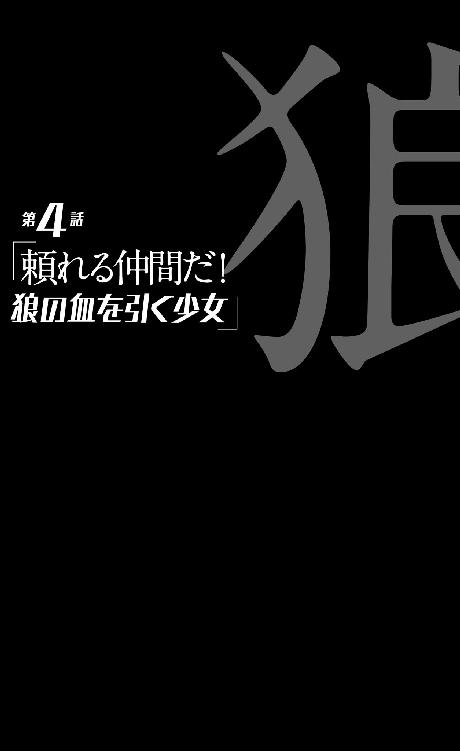
0
犬は人類最良の友である。
ただし犬のほうは人類を友達とは思ってないかもしれない。
1
『狼ちゃん』。
それが『寸刻み』や『茶飲み話』、『火達磨』や『恋愛相談』、『蒟蒻』や『再開発』のような、その子のコードネームか何かなのだろうかと思ったが、しかしそうではなく、そういう名で言うなら、少女は『犬歯』と言うのだとか。
犬の歯である。
それはつまり、剣藤『犬』个の『歯』という意味だそうだが──しかし『飼い主』である剣藤は、『犬歯』という呼び名をむしろ好まず、『狼ちゃん』と呼んでいるそうだ。なんだかややこしい。図に描いて考えないとこんがらがりそうだ。
「名前って大事だと思うんだよね......大事っていうか、肝心だと思うんだよね。『犬』って呼ぶより、『狼』って呼ぶほうが、強そうじゃない。『茶飲み話』はこういうところを切り取って、私のことを日本語が不自由って言うのかもしれないけれど......」
剣藤はそう言った。
「......でも、『犬』を『犬』って呼ぶんじゃ、そのまんまだよね？ 何の芸も、捻りもないよ」
そう言った。
空々は返事ができなかった。
名前が大事で、肝心であるというのは大いにその通りだと思ったし、そしてその伝で言うなら、『人』を『狼』と呼ぶのは、確かになかなか芸があり、捻りもきいているのかもしれなかったが──しかしそれはともかく、そう語る剣藤の表情を、語り口を見る限り、彼女は正気だった。
正気で、その少女のことを、『犬』の『狼ちゃん』だと思っているようだった──そんなものを正気と呼べるなら、だが。
『犬』の『狼ちゃん』は、首輪をし、後ろ手に手錠で拘束されたまま、まるっきりの無表情で空々を窺っていた。警戒心は強そうだが、しかし彼女が犬だというなら、かなり大人しい、躾のできた犬ということになるのだろう。
そう思った。
いや、さすがに思えなかったかもしれない。
2
「人間を斬るとき......、『この人達は「地球陣」かもしれない』って思うと、少しだけ救われた気持ちになったりする。私は任務で、そらからくんの家族みたいな、普通の人間を殺すことも割と多いんだけど......」
さらりとそんなことを言いながら、夕ご飯の鍋をつつきながら、剣藤は言った。
「まあそれくらい怪人の『擬態』は、完全なんだよ。だから、それを区別できるそらからくんの才能は、とても貴重なの」
「......そうですか」
剣藤によそってもらった鍋の具材を、もぐもぐと咀嚼しつつ、しかし空々の視線は、部屋の隅でしゃがみ込む『狼ちゃん』のほうにどうしても向く──『狼ちゃん』のおすわり姿は異様な存在感をかもし出していた。
『狼ちゃん』のほうは、じっと、観察するようにこちらを見ている。
感情が読めない、と言うよりも、向こうのほうから感情を読まれているような気持ちになってくる。ある意味、という注釈付きではあるものの、誰よりも周囲の顔色を窺うことに長けてきた空々がそう思うのだから──空々でさえ『狼ちゃん』からは何の感情も読み取れないのだから、よっぽどである。あるいは彼女は、本当に何も感じていないのかもしれない。
ただ、わかっている事実──というか、現時点でも、推理できる事実はある。
推測できることはある、確認は取れないが。
「ねえ、剣藤さん」
「なに？」
「......あの子に、夕飯はあげないんですか？」
「え？」
そんな風に剣藤は面食らったような反応をしてから、「ああ」と頷く。
「ああ。『狼ちゃん』の食事は、私達が食べ終わったあとで用意するよ。今は『待て』の状態だから」
「そうですか。......まるで、犬の躾ですね」
「？ まあ、そりゃあ......、『狼ちゃん』と呼んではいても、本物の狼とはやっぱり違うから......確かに狼みたいに頼りがいがある子だけれど、別に、そんな風に勘違いしているわけじゃないよ。まあ狼の血を引いてればいいなって、空想することもあるけどね」
よくわからない会話になっているが、こんな会話が、空々の推測に確信を持たせる。
ああ、剣藤さんは本気なんだ、と。ひょっとすると正気ではないのかもしれないけれど、確実に本気なんだ──本気で、年端もいかないあの少女のことを、『犬』だと思っているんだ、と。
なんだったか。
アマラだったかカマラだったか、そんな名前だったか──狼少女という伝承が、海外にあったはずだ。赤ん坊の頃に森ではぐれた少女が、その後、狼を母親として育ち、育てられ、そして立派な狼として成長したところを保護されたという、一種の『物語』。
狼少年ならぬ狼少女は、自分のことを完全に『狼』だと信じていて、保護されたのちも人間に牙を剝き続けたらしい──まあ、本当かどうかはかなり疑わしい『物語』なのだが、それに則った言いかたをするのならば、剣藤はこの少女を──『狼ちゃん』を、完全に『犬』だと信じているようだった。
犬で、狼みたいな犬で、そして自分のペットなのだと。
「............」
勘違いや間違いでは、確かにないのだと思う。
だが、だとすると、どこで──あるいはどこまで、彼女の中で辻褄が合っているのだろうか、と思う。
少女は四つん這いで犬のように移動してきたわけではなかったし、それに犬のように裸でいるわけでもなかった──普通に歳相応の、少女らしい格好をしている。ペットという以上、その衣服は剣藤が用意したのだろうけれど。
「......剣藤さんは、ペットに服を着せたりするタイプの飼い主なんですか？」
それとなく探りを入れてみたら、
「そうだよ」
と、肯定された。空々の疑問に、何の疑問も感じていない風だ。
「脱がせたり、着させたり。犬には毛があるんだからそんなのいらないって言う人もいるけど、でも可愛いもん。『狼ちゃん』は嫌がらないし。まあ、そらからくんに『グロテスク』を着せたり脱がせたりするのとは、かなり意味合いが違うよ」
「.........」
そんな辻褄の合わせかたか？ ならば後ろ手に拘束されているのはどうだろう──犬にだってそんなことはしないと思うが。少なくとも画としては、相当に犯罪的なそれだ──拘束されているという意味では、空々だって見張りつきでこのマンションに拘束されているようなものだと感じていたはずなのだが、しかし『狼ちゃん』に較べれば、自分はだいぶんマシな立場であるように思われた。『狼ちゃん』に較べれば、確かに自分は軟禁などされていない。
改めて。
空々は剣藤犬个という少女の異様さを思い知った気分になった。なんとなく、料理を作ってもらったり、着替えを手伝ってもらったりしているうちに──アドバイスをもらったりなんかしているうちに、その辺りが麻痺してきていたが。
「そらからくんは今まで、ペット、飼ったことなかったの？」
「ええ......まあ、小さい弟がいましたから......」
答えつつ、その弟を切り裂いたのが目の前の人物だということを忘れたわけではなかったので、語尾が曖昧になった。これでは遺族である空々のほうが、加害者の剣藤に気を遣ったような感じだが、別段、そういうつもりはない。するべきだと思ったことをしただけだ。
「ふうん」
「飼っていたら、剣藤さんが殺していたんですか？」
「うん、と思うよ。だからよかったね、いなくって」
「......剣藤さんは『狼ちゃん』をいつから飼っているんです？」
「半年前......『大いなる悲鳴』のあとからだよ。『狼ちゃん』はそのとき、軍に保護された『犬』らしいんだけど......引き取り手が誰もいないって言うから、私がね。なんとなく、この子と私、境遇に似たところがあってさ──まあ同情しちゃったっていうか、意地になっちゃったってところがあるのかな。意地っていうか、意固地っていうか。『茶飲み話』からは、『あなたなんかに動物の世話ができるのですか』って、そんなことを言われちゃったよ」
「......？ ええ、はい、言いそう......ですね」
言いそう、か？
いや、犬なら言いそうではある、犬なら。
つまり牡蠣垣もまた、『狼ちゃん』を『犬』だと思っているのだろうか？ 地球撲滅軍の誰もが、そう思い込んでいるのだろうか？ いや、どちらかと言えばそれは、今空々がしているように、剣藤に話を合わせているだけのようにも思えるけれど......。
「形としては『破壊丸』と同じく、軍からの支給品ってことになってるけど、でも私はそんな風には思ってない。アイテムなんかじゃなくって、『狼ちゃん』は私の大切な家族だよ」
「......落雁さんなんかは、どう言ってます？」
「ん？ いや別に......、あの人、部署が違うから」
「そうですか......」
他の意見も知れたらよかったのだが、思っていたより、地球撲滅軍は縦割り行政のようだった。あまりしつこく訊ねるのも怪しいかと、空々は追及の手を緩める。
すると、剣藤のほうから、
「でも、そらからくん、よく食べられるね」
と言ってきた。
「？ そりゃあ食べますよ。剣藤さんが用意してくれた、お祝いの鍋じゃあないですか」
「そうなんだけど......、前に言わなかったっけ。私は、人を殺した日に、ものなんか食べられないって」
「でも、今日僕が殺したのは、人じゃなくて怪人でしょう？」
「怪人を斬ったときだって、私の喉を、食事は通らないよ」
「はあ。しかし、剣藤さんには人間と怪人との区別がつかないかもしれないですけれど、僕には区別がつくんですから......その違いじゃあないですか？」
「そうなのかな」
どうなのかな、と剣藤は言った。
どうやら剣藤は剣藤で──異様なものを見る目で、空々のことを見ているようだった。とてもお祝いの席で、祝う相手を見るような目ではなかったが、しかし案外、強力なヒーローを見る大衆の目というのは、こんなものなのかもしれなかった。
英雄視は──異端視と同様なのだ。
ただし、このとき、この夕食のときを、お互いがお互いを異端視し合っている時間だったとするのならば、剣藤から空々への異端視よりも、空々から剣藤への異端視のほうが、最終的には上回っただろう。
本当に最終的には、だが。
鍋を食べ終え、煮汁でおじやを作り、それに卵を落として食べ、『ごちそうさま』を言った後、剣藤は言っていた通り、ペットである『狼ちゃん』の食事の準備を始めたのだが、その準備は一瞬で終わったのだった。
そりゃあ一瞬で終わる。
皿にドッグフードを移し替え、そこに牛乳をかけるくらいのことは。
3
それからしばらくは、落ち着いた日々が続いた──家族を殺した剣道少女と暮らす日々に、首輪をつけた少女が新しい同居人として加わった日々を『落ち着いた』と言うならば、だが。
空々は、自分には次々と怪人退治の任務が申し渡される展開も想定していたのだが、そういうわけでもなかったようだ──と言うか、怪人・淀理川美土里を殺した翌日、『再開発』が一人で、『グロテスク』を回収に来た。
そして扱いの荒さに散々苦情を申し立てつつも、空々から『使い心地』をリサーチして、クレームはクレームとして受けつけて、付属品までまとめて、彼女は『グロテスク』を持って帰っていった──空々の意見を取り入れた上で、開発室が更に改造するそうだ。
そう言えば剣藤は、実用化されていたことに驚いていたようだが、しかしまだ試作品だったのか、と思うと、背筋がぞっとする話だ。まあ空々とすれば、まずバッテリーの持ちを長くすることを、最優先で改造して欲しいものだった。
「空々くんが殺した怪人だけど、無事に死んだってさ」
回収に際して、『再開発』がそう教えてくれた。無事に死んだというのも、かなりおかしな言いかただが、それを聞いて、空々はほっとした。
なにせ頭部を目掛けて踏みつけたのだ、大ダメージを与えたことは確かだろうが、しかしすぐに逃げてしまったので、結果までをはっきりと確認したわけではない──中途半端な脳挫傷とかで不要に苦しめる結果になっておらず、本当によかった。
と、そう思った。
無茶苦茶なことを思っているようだが、そして実際に無茶苦茶ではあるが、彼は本当に、純粋な優しさとして、そんな風に思っているのである──今のところその優しさは、あまり健全な方向には転がりそうにないけれど。
「怪人を殺した。これできみも、私達の仲間ね」
熱烈に歓迎する、という口調ではなかったけれど、しかし、『再開発』は一応、それが義務であり、儀式であるかのように、改まって言った。
「地球撲滅軍にようこそ。一緒に地球を倒そう」
その言葉を額面通りに受ける限り、やはりあれはイニシエーションだったのかもしれないと空々は思った。『怪人殺し』の『共犯者』になって、初めて仲間と認められるというシステムで、地球撲滅軍は成り立っている──いや、だとすると、彼が予想していたよりも相当、殺伐とした組織と言えそうだが、そんな今更感が漂う認識さえも、このときの空々にはなかった。
逆に言えば、失われた、奪われた自分の居場所が、ついにできたのだ──なんて、そんな帰属意識のような気持ちもなかった。要するに何も感じなかった。彼には何もなかった。ただし、『グロテスク』は改造から、いつ戻ってくるのだろうくらいのことは思った──それまで、またも、自分にやることはなくなってしまうのだから。
「そうだね。それまでは身体でも鍛えてたら？」
という『再開発』の言葉は、おそらく冗談の類だったと思われるが、それを空々は真に受けて、
「じゃあすみません、筋トレグッズやなんかを、この部屋に送ってもらってもいいですか？」
と頼んだのだった。
その頼みはどうやら聞いてもらえたようで、後日まとめて届いたルームランナーやダンベルやらは業者によって、空々の部屋に運び込まれ、設置された。『狼ちゃん』と比べればともかくとしても、やはり『監禁されている』という意識の強い空々は、あまり外出する気にはならなかったので、それで運動をする毎日が続いた。
なんだかアストロノーツが、筋力を落とさないように宇宙船の中で筋トレを続けるのに似ていると思った──実際は、そんなにいいものではないのだろうが。
剣藤もまた、ほとんど外出しなかった。
必要なときに買い物に出て、すぐに戻ってくるだけだ──彼女はあまり、運動をしている風ではない。あんな長い剣を振るうのだから、普段からの鍛錬が大切なのではないのかと、筋トレに誘ってみたこともあったのだが、やんわりと拒否された。
やんわりと、と言うのはやんわりした言い方であり、
「絶対嫌だ。そんなことは一人でやって」
実際は、これくらい強烈な拒絶だった。筋トレに嫌な思い出でもあるのかと思わせる態度だった。ダンベルで怪我をしたことでもあるのだろうか。むろん、無理強いするようなことではまったくなかったので、空々が剣藤を誘ったのはその一度きりである。
「剣藤さんは、仕事に出たりしないんですか？」
「私クラスに、そうそう仕事なんてないよ......しいて言うなら私の今の任務は、空々くんのお世話だから。気にしないで。ニートとかじゃないから」
「............」
話してみると決して言葉少なというわけではないのだが、どうにも言葉足らずで、空々には剣藤の言うことがよくわからなかった──空々の質問の仕方が悪いというのもあるのだろうが。
「まあ、『悲鳴の聞こえない私』と『怪人を見られるきみ』。私達は死なないことが、地球撲滅軍に対する一番の組織貢献なのかもしれない......だから仕事がなくても、家でごろごろしていても、そんなに気にしなくていいと思う」
そう言われるとそんな気もしてくるが、しかし、それが組織にとってどう役に立つというのかは、よくわからない気もする。実際、『悲鳴の聞こえない私』こと剣藤犬个は、『大いなる悲鳴』を防げなかったわけだし......。
不安はあった。
今は地球撲滅軍は空々を『ヒーロー扱い』してくれているが......、よくわからないなりに、空々もそれを理解はしたが、しかしそれがいつまで続くのかは定かではない、という不安。剣藤のようにヒーロー失格扱いされるくらいならばまだしも──最悪の場合、『不要』あるいは『有害』扱いされ、処分されてしまうかもしれない、という不安。
数え立ててみれば止まらなくなるほど、不安はあった。
不安だった。
だが、それについては手の打ちようがなかったし、空々にしてみれば、それは『明日心臓発作で死ぬかもしれない』というのと大差がない不安でもあったので、それで生活に不具合を来すというほどでもなかった。
ただ、それこそが彼の資質であり、才能であるとはいえ、もう少し真面目に考えておくべきだったということは、この時点で明らかな事実として指摘しておかなくてはなるまい。だが、今のところ、彼のもっぱらの不安は、およそ『狼ちゃん』のほうに集約されていた──まあそれはそれで、仕方がないというか、当たり前も甚だしいことではあった。
なにせ他人事ではないのだ。
同じように剣藤の保護下で生きている身としては、自分もいつかはあんな扱いを受けることになるのかもしれない、剣藤が自分のことを『犬』としか認識できなくなる日が来るのかもしれないという不安からは、どうしても自由にはなれない。
現実を受け入れられる。どうでもいい、と思う。
というその性格は、あくまでも結果に対してのものであり、どうやら空々少年は、継続中の現実に対しては、『どうでもいい』とは思わないらしかった。『どうにかするべきではないか』くらいのことは思えるようだった。
剣藤はきちんと『ペット』の面倒を見ているようだし──『狼ちゃん』は、服も毎日替えてもらっているし、風呂にも毎日入れてもらっているようなので、当初危惧していたよりはまだ、『人間扱い』されているようなのだったが。
だがドッグフードはいただけない。
いただけないし、いただけない。
二重の意味でいただけない。
食事の味にはこだわらない空々ではあるが、自分が食事を終えたらあの少女はドッグフードを食べさせられるのだと思うと、どんな料理だろうと箸の進みが遅くなろうというものだった。かといって空々が食べ終わらなければ少女は何も食べられないわけであって、それは解決策のない二律背反と言えた。
『どうするべきか』を問うても、『どうしてやることもできない』という答しか出なかった──それとも言うべきなのだろうか？
「剣藤さん、剣藤さん。よく見てください。ほら、僕の指さす先にいる『狼ちゃん』をよく見るんです。二本足で立っているでしょう？ 身体に毛皮はないでしょう？ 人間みたいだと思いませんか？ 人間みたいな形をした犬だと......、あれれ？ じゃあひょっとすると、『狼ちゃん』は犬じゃなくて人間なのかもしれませんよ？」
とか。
さり気なく気付かせてみるべきなのだろうか──などという逡巡は、空々はしてさえいない。言いにくい、どころの話じゃない。空気が読めないゆえに空気を読むことに長けた空々には、完全に『そうだ』と信じ込んでいるらしい剣藤相手に、そんなことを言えばどんな事態が巻き起こるのか、想像するに難くなかったからだ。
ゆえにその件に関して、口出しできなかった。
まあとは言え、もしも『狼ちゃん』のほうが、現状に対し露骨に苦しんでいたり、悲しんでいたり、涙ながらに訴えたりしていれば、さすがの空々も動きはしたに違いない。
だから、彼は決して冷たい人間ではないのだ。しかし当の『狼ちゃん』と来たら、特に不満を言うこともなく──まるで首輪にも後ろ手にも何の不自由も感じていないかのように、ドッグフードを犬食いで食べているのだった。
本当に大人しい犬のようだ。いや、ここまで大人しい犬がいるとも思えないので、『病気の犬』のようだとさえ思った──まあだとすると、『狼』と名付けた剣藤の気持ちもわかる。
そう名付けることで、もっと活気のある犬になって欲しいという願いが込められているのだろうから──うん、本当に『狼ちゃん』が犬だったなら、気持ちもわかる。
わんわんと、露骨に犬のように鳴くことはないけれど、しかし彼女は人の言葉も喋らない──剣藤はどうやら『犬』に対して話しかけるタイプの『飼い主』ではないようで、撫でたり膝の上に抱いたりというような可愛がりかたをするものの、言葉でのコミュニケーションを試みはしない。しかし、仮に剣藤が話しかけたとしても、たぶん、彼女は何の返事もしないだろう。
人の言葉は発しないだろう。
犬でなく人であるのは見た目から確かなはずなのだが、しかし外見以外の点において、彼女から、『人間らしさ』を感じるのは難しかった。
精巧な人形と言われれば納得できる気もしなくはない。地球撲滅軍の持つ技術力なら、あのくらいの人形は作れるのではないか──まあ、どんな目的があって作ったのかがわからな過ぎるが。
とにかく、無表情で無感情な少女である。
無機質とも言える。
顔を合わせていると、なんだか鏡を凝視しているような気分になり、どうにも居心地が悪くなる。自分の心を凝視されている気分になる。空々も無感情な人間だからだろうか？ いや、空々は無感情なわけではない。動じないだけで、感情はある。悲しいと思っても、思うだけだというだけだ。
しかし『狼ちゃん』は、悲しいとか、苦しいとか、そんなことを、そもそも思ってさえいないように見えた──だからこそ、彼女を見ていると、自分の感情がそのまま跳ね返ってくるような気持ちにさせられるのかもしれなかった。
最初に会ったとき、警戒しているように見えたのも──空々のほうが、彼女を警戒していたからなのかもしれなかった。
もっとも、食事のとき以外は『狼ちゃん』は自室──廊下の一番奥の部屋にこもっているので、顔を合わせる機会は一日に何度もないのだが。
そう言えばこんなことも考えた。それは彼女について何のアクションも起こさない自分の後ろめたさが生み出した妄想かもしれなかったが──本当は彼女は、本当に犬であり、『狼ちゃん』が人間に見えているのはむしろ自分だけかもしれない、という妄想。
ありえる話だ。
人間に『擬態』する怪人が存在するのである──地球撲滅軍のことをどこまで信じていいのかはわからないけれど、少なくともゴーグルを通さないと見えない怪人がこの世に存在していることは、確かなのだ。
ならばゴーグルを通して見れば、『狼ちゃん』は、案外犬に見えてしまうのかも──そう思い至ってしまうと、落雁が持って帰る前に、ゴーグルで彼女を見なかったことが悔やまれた。落雁が来たときには、『狼ちゃん』は部屋にこもっていたし......まあ部署が違う落雁は、かかわりを持ちたがらないかもしれないが。
どういうニュアンスで『茶飲み話』や『再開発』は。
彼女を『犬歯』と──犬の歯と呼んでいるのだろうか。ただ、剣藤のバディとしての、支給品としての『犬歯』なのだろうか──それを訊くのも、やはり怖い。
まあ、およそそんな感じで。
空々空。剣藤犬个。『狼ちゃん』。
そのような三人──二人と一匹？ ──の、益々奇妙化したとしか形容のしようがない同居生活が崩れるまで、その後、三週間くらいかかったのだが、強いて言えば、空々にとって、この物語が終結するまでの間の、唯一穏やかに暮らせた時間が、この三週間なのかもしれなかった。
そして三週間後。
である。
4
「そらからくん。私今日、ちょっとお仕事だから、留守番していてくれるかな」
朝食のとき、唐突にそう言われた。とにかく色々、唐突な剣藤だ。説明が下手とか口下手とかいうより、この同居人は距離感が下手なのかもしれないと、この頃には空々は思い始めていた。
空々は目玉焼きを食べつつ、
「仕事ですか」
と、繰り返す。この時点で彼は、今日何が起こるのかをまったく知らない。ことの重大さをまるっきり捉えていない。彼にもう少し想像力があれば、いつかはこんな日が来ることはわかっていたはずなのに、実際は、剣藤の言葉を聞いてもまだ、ぴんと来ない。剣藤が仕事に出かけるということが、果たしてどういう状況を招くことになるのか、察せない。
『剣藤さん、仕事があってよかったなあ』くらいにしか思っていない──剣藤の仕事が、その内容がどういうものなのかわかっていても、『働くことは素晴らしいことだ』というマニュアル的感覚は抜けていないのだ。そんな感覚、一般社会の人間でさえ、現実には持っていないのに。
「いつ戻るんです？」
「ちょっと遠出......『茶飲み話』と一緒に遠出。海外まで」
「海外ですか。へえ、いいですね。僕、飛行機、乗ったことないです」
一ヵ月近い同棲を経て、多少はこんな打ち解けた会話もできるようになってきた──家族を殺した相手とだが。
「剣藤さん、パスポート持ってるんですか？」
「持ってるわけないじゃん」
「じゃあ密航？ へえ、地球撲滅軍って、そんなこともできるんですか」
「密航っていうと、悪いことみたいだから違うと答える......、チャーターの特別便だと思っておいて。心の中にフリーパスを持ってるんだよ。えっとね、ちゃんと説明しておけって言われてるんだけど......、会議だって」
「会議？ わざわざ会議を外国で行うんですか？」
「うん......海外における地球撲滅軍みたいな組織と、今後の方針の打ち合わせって感じ。互いの領分の確認というか、今後の活動予定報告というか......。まあ言っても私は、『茶飲み話』のボディガードなんだけれど......」
「はあ」
ボディガード。なるほど。確かにあんな大太刀、『破壊丸』（『破壊丸』という名前は、もう聞いていた）を持って、通常の手続きで飛行機になんて乗れるわけがないか、と思った。
「そんなわけで三日ほど戻らない。その間、一人になるけど、食べ物とか、大丈夫だよね？」
「はい、大丈夫です。ご心配なく」
十三歳の空々は、誰がどう見ても子供なのだが、本人の中には、どこか『もう子供でない』という意識がある。子供なら当たり前に持っている感覚で、空々も持っている。わずか数日の留守番くらいで、心配されるほうが心外なくらいだ。
「料理も、カレーとか作っとくから。保存の利くもの冷蔵庫に入れておくし、順番に食べて。ラップに日付書いとく。その順番で食べてね」
「......はい」
行き届き過ぎた、とも言える剣藤の気の回しっぷりに、危うく空々は『ありがとうございます』とお礼を言ってしまいそうになった──が、すんでのところで飲み込んだ。
多少打ち解けようと、どうしようと。
お礼の言葉だけは言わない。
なんと言うか、その辺りがぎりぎりの、『家族を殺した少女』との、空々なりの距離感だった──それとも自分のような性格の人間は、いつかその距離感さえ忘れ、平気で剣藤にお礼を言うようになってしまうのだろうか？
どうやら、空々だって。
距離感が得意というわけではなさそうだ。
「わかりました、剣藤さん」
「うん。それで、ひとつお願いがあるんだけれど」
「はあ。なんでしょうか？」
「私が留守にしている間、『狼ちゃん』の世話をよろしく」
「............」
はっ、と、ここに至って、ようやく空々は気付いたのだった──そうだ、剣藤が長期間出かけるということは、つまり空々はこの部屋で、『狼ちゃん』と二人きりになるということなのだ、と。
「あ、えっと──その」
「あ、そんなに構えないで。お願い、構えないで。世話ってほど、手のかかる子じゃないから。見てて知ってると思うけど......、朝と夕方、ご飯を上げて頂戴。お風呂は......うん、そこまでは頼まない。ちょっと大変だからね。『狼ちゃん』には三日くらい、我慢してもらおう」
「......えっと、餌は......」
「餌とか言わないで。ご飯だよ」
まるで愛犬家よろしく、気分を害したのか、剣藤は空々を窘めるように言った。いや、本人の気分としてはよろしくというより愛犬家そのものなのだろうが、人間を犬呼ばわりしている彼女から、ご飯を餌呼ばわりしたことで怒られるというのは、どうにも釈然としないものがあった。
ただ、反論はせず、空々は素直に謝る。謝る分には、いくらでも謝れる空々少年である。
「で、ご飯は、その......ドッグフードでいいんですよね？」
「うん。変なものは食べさせないで。おなか壊しちゃうかもしれないから」
「......たとえばですけど、僕のご飯を半分分けてあげるというのはどうですかね？ その、たまには......豪勢に......」
「......あ、そっか、そらからくんはペットを飼ったことがないから、知らないんだね。あのね、人間と動物とじゃ、消化系の構造が違うから同じものを食べるってわけにはいかないの。おなか壊しちゃうで済まないこともあるの。たとえば猫とかだったら、たまねぎを食べたら死んじゃうんだよ。犬も、チョコレートや鶏肉を食べたら即死なんだ」
曖昧というか、やや大袈裟に偏った知識を披露する剣藤。半可通もいいところだが、本人にはその自覚はなさそうだ。
まあ大袈裟なだけで大筋、間違ってはいない。
「だから人間側のエゴで、動物にあまり色んなものを食べさせたら駄目なの。死なないにしても、糖分の多いものを食べたら虫歯になっちゃうかもしれないし」
「......はい、ごめんなさい」
また謝らされた。それ自体は別に気にならないのだが......、しかし、犬に対する態度としては至極まともな、普段空々が見ているよりもむしろ真っ当といえる剣藤のその振る舞いには、どうしても圧倒されてしまうものがあった。
「散歩とかはしなくていいんですか？」
「うん。しないで。『狼ちゃん』は運動が嫌いだから......それに、外に連れ出して、はぐれちゃったら嫌だからね」
この台詞はやや、愛犬家というか、病的な愛犬家っぽいきらいもあった。実際、『狼ちゃん』はこの三週間、部屋につれて来られてから、一度も外出していない──外出させてもらっていない。とは言えそれは、空々本人も同じであり、家の中で筋トレをする日々なので、そんなに気になっていないけれど。
「たとえ『狼ちゃん』が行方不明になっても、地球撲滅軍の組織力を挙げて、探したりしてもらえるとは思えないからね。『狼ちゃん』は私が守らないと」
「はあ......」
この溺愛ぶり。
もしも『狼ちゃん』がいなくなったら、剣藤はペットロス症候群にでもなるのだろうか、と空々は漠然と思った。
「本当は海外だろうと、一緒に連れて行きたいんだけどね。でも、『茶飲み話』が駄目だってさ。大事な会議だから、任務に専念してくれって」
「......そうですか」
果たしてどうだろうか。大事な会議というのは本当だろうが、たとえその重要度が低かったところで、剣藤が『狼ちゃん』を連れて行くのを、牡蠣垣はよしとはしないのではないだろうか......もしも牡蠣垣に、『狼ちゃん』の正体が見えているのだとすれば。
......『正体が見えている』。
正体。
だが、『狼ちゃん』の正体が何なのかは、空々にはまったくわからないのである。だからどうにもできず、それについてはもやもやとした日々を送っている。
「休暇を申請したけど駄目だった。人類すべてと犬一匹、どちらのほうが大切なのですかって。そう言われちゃうとねえ」
「......その割には、剣藤さん、そんなに乗り気じゃないって風には見えませんけれど」
気になっていたことを言う。この辺りは空気の読めない空々少年の本領発揮である。人の心の機知、あるいはアンビバレントな気持ちの両立を、察しきれない。
「何か楽しいことでもあるんですか？ それとも、牡蠣垣さんと一緒にお出かけできるのが楽しみだとか......」
「......何言ってんの、きみ。馬鹿じゃないの」
素の表情でそう返されたので、空々は普通に『ああ、自分は的外れなことを言ったんだなあ』と反省した。剣藤の言葉が照れ隠しかもしれない、なんて思わなかった。
『なんとなく噓をつく』感覚が、彼にはまったくわからない。
「ええ。ああ。はあ。馬鹿かもしれません、すみません」
「まあでも、渡航先ではトラブルはないに越したことはないけれど、それでもこの仕事の最中のどこかで、私もいいところをみせたいね。そうでないと、立身出世コースから、私、外れっぱなしだし」
「？ 剣藤さん、出世したいんですか？」
「......冗談だよ。思いついたことを言ってるだけなんだから、いちいち反応しないで。私は、地球を倒せて、人類を守れればそれでいい。人類と、そうだね、一匹の犬を守れれば」
そう言ったところで、剣藤は朝ご飯を食べ終えた。てっきり空々は、そのまま三日分の食事を作りにかかるのかと思ったが、しかし剣藤にはその前にすることがあったようだ。
彼女はポケットからピルケースを取り出したのだ。慣れた手際でそのケースから、白い錠剤を三錠、手のひらに落として、
「ごくん」
と、それが食後のデザートであるかのように飲み込む。
まるで日常的に服用している薬のような自然な飲みかただったが、しかし空々は、朝、昼、晩と、この三週間初日を除いてずっと一緒にご飯を食べていたけれど、そんな風に薬を飲む剣藤を見るのは初めてだった。
「剣藤さん。何の薬ですか？」
それをあっさり聞いてしまうのは、ややデリカシーがないと言えそうだが、剣藤のほうは剣藤のほうで、空々のそういうものの言い方にはこの三週間で慣れたようで、特になんと言うことなく、
「精神ブロック剤だよ」
と答えた。
答えられても、それでは何もわからなかった。精神ブロック剤？
「なんですか、それ？」
「まあ、たぶん今回の任務で人を斬ることはないと思うけれど......、斬るとしたら確実に人だしね。念のためだよ」
「？」
「要するにストレスに鈍くなるお薬。ＰＴＳＤの予防とかで、戦時中によく使われるらしいけれど、まあそれのマイナーチェンジ版。感情が乱れなくなる薬っていうか......。あんまり飲み過ぎると、ストレスどころか腕が鈍るんだけどね......そらからくんの家族を殺したときも、私、これを飲んでたんだよ」
「............」
ふうん、と思った。
怪人を斬るときも、剣藤はその薬を飲むのだろうか──だとすると、淀理川美土里を蹴り殺した後も、特にストレスを感じることなく生活している自分のことを剣藤はどう見ているのだろうかと、そんなことが気になった。
「僕にもわけてもらっていいですか？」
だからそんなことを言った。別に欲しいとは思わなかったけれど、そういう薬を必要としている振りをした。看破されたかもしれないけれど、それでも言わずにはいられなかった。
ただ、そんなに『どう見られているのか』が気になるのだったら──部屋の逆方向から自分をじっと見ている、『狼ちゃん』の視線にも、彼は気付くべきだったかもしれない。
そう。
『狼ちゃん』──『犬歯』はこのとき、剣藤犬个と空々空の会話を黙って、耳をそばだてて、一言一句逃さずに、脇で聞いていたのである。
剣藤が留守にする。
彼女はそんな機会を待っていたのだ。犬のように。
5
巨大な鍋に大量のカレーを作って、その他、色々保存の利く食事を作って、それを小分けにして、剣藤が海外へと出かける準備を終えるまでには、結局昼過ぎまでかかった。
途中で剣藤は牡蠣垣に電話をかけて、遅れそうだから先に『空港』へ向かってて、という旨の連絡をしていた。どうやら彼女は留守中の空々の食事を作るために遅刻することになったらしかった。それが彼女の仕事とは言え、空々はなんだか申し訳ないような気持ちになった。どれほど申し訳ない気持ちになっても、家事のできない空々には黙って見ているしかなかったのだが。せめて頑張れ、急げ剣藤さんと思いながら見ていた。何の役にも立たない。
「掃除とか洗濯とかも、しなくていいから。帰ってきたら私がまとめてやるからね。ああ、食器を洗うくらいは、できたら......、ううん、無理だったら、せめて水に浸けといて。電話があったら、一応出てね、でも、わかんないことはわかんないって言っておいて。かけてくるような人は、私が留守だって知ってるはずだから、たぶん、ないとは思うけれど。じゃ、そらからくん、行ってきます」
竹刀袋に入った『破壊丸』を持って、剣道着姿で慌ただしく出て行く彼女を、
「行ってらっしゃい、剣藤さん」
と見送って、そして空々は、
「さて」
と思う。
これから三日間、どう暮らしたものか──いや、そもそも『どう暮らしたものか』というのは、空々が毎日考えていることでもある。とにかく、『学校に行かなくていい』『部活に行かなくていい』というのは、すさまじく暇なのだ。時間を持て余す。
他にすることもないので、筋トレに夢中になるだけ。あとはまあ、本を読んだりだが、最初に備え付けで用意されていた本はあらかた読んでしまったし、どうも空々は本屋に行って自分の目で選ばないと、積極的に本を読む気にはなれない人間のようだった。
そう言う意味では、この『剣藤の出張』は、空々にとって、久し振りの目新しい刺激となったわけだが──退屈な毎日に与えられた刺激というには、やや強烈な出来事がこれから彼の身を襲うのである。
そんな現実にも、彼は対応できるだろうか？
できなければ死ぬだけだし、ひょっとするとそのほうが彼にとっては幸福なのかもしれなかったが。
ことが起こるのは、更に時間が経過して、夕方。
空々が、まずは留守番中の一食目として、剣藤が遅刻してまで作ってくれたカレーライスを食べ終えたあとのことである。と言っても、今日はいつも以上に食事に時間がかかってしまった空々だった──そりゃそうだ、食べ終わったら、続けて、『狼ちゃん』に餌──もとい、ご飯をあげなければならないのだから。
空々の手で、だ。
いつもならば、食事の時間になれば『狼ちゃん』は、剣藤によって部屋から連れられてきて、空々と剣藤、二人の食事の様子をそばでおすわりをして見ているのだが、今日は連れてくる剣藤がいなかったので、まだ部屋にいる。
連れてくるのを忘れていたわけではない。
ただ、思い出したくなかったのだ。
剣藤が『狼ちゃん』に、牛乳をかけたドッグフードをあげているのを見て、それはそれは言いようのない気持ちにさせられたものだが、しかしそれを更に自分がやるとなると、まるっきり違う味わいが生じる。
というか、有体に言って、やりたくない。
怪人を殺すことに関してはほとんど抵抗がなかった空々だが──これはなんだか、それとは違う気がした。たぶんそれは、この場合は容易に、空々は他の選択肢を見つけられるからだろう。
右が嫌なら左を選べばいいように。
ドッグフードをあげるのが嫌なら『狼ちゃん』にもカレーを食べさせてやればいいのだ──簡単なことだ。今まではキッチンは剣藤が完全に管理していたから、彼女の目を盗んで『狼ちゃん』にドッグフード以外のものを食べさせるなんてことはできなかったが、留守番中の空々はそれができるのである。
条件は揃っているのだ。剣藤がいなくて、そして作り置きの食事がある。
犬に人間の食事を食べさせたら駄目だというような話を、空々もまったく知らなかったわけではないのだが、少なくとも空々から見る限りにおいて、『狼ちゃん』は確実に人間である──むしろドッグフードを食べているほうがよっぽど腹を壊しそうだ。
栄養も足りなくなるに決まっている。
牛乳はそこまで万能じゃないと思う。
となるとあとは覚悟の問題だった──この三日間、『狼ちゃん』に空々の食事を分け与えたとして、そうすると途中で冷蔵庫内の食事が足りなくなることははっきりしている。
剣藤はたっぷりと料理を作っていってくれたが、逆に言えばそれは、余分な食材はこの家から消えてなくなったということだ。まあ仮にあったとしても、空々には料理の腕はない。そこで無理に頑張っても、ドッグフードみたいなものしかできないかもしれない。
となると最後の一日は、空々は何も食べられないかもしれない......水を飲んで過ごすことになるかもしれない。
「............」
まあ、それは別にいいか。
と、空々は思った。
『狼ちゃん』の最後の一日については、ドッグフードのストックがあるから、絶食を強いることにはなるまい──食事のレベルが一日早く通常に戻るだけだ。なんならそのときは、自分もドッグフードを食べればいいだろう。
この辺りの思考。
途中まではまともな思考だったはずなのに、最後の最後で、『普通の料理がなくなれば、「狼ちゃん」、それに自分さえも、ドッグフードを食べることもやむなし』とできてしまうこの辺りの思考が、空々空の空々空たる所以だった。
自ら外に買い物に行こうという発想は、既に彼から失われている。
失われているというか、奪われている。
外界と切り離された彼にとって、もう外の世界は、ファンタジーにも似たものになってしまっていた──だがあらかじめ予告しておくと、このあと、空々はそのファンタジーの世界に、彼は三週間振りに、出かけることになるのだった。
6
卒業式で泣いている振りをした。頑張って泣いて、成功したと思った。
テストで百点満点を取って喜んでいる振りをした。嬉しいはずだと思い込んだ。
友達が苛められていることに憤った振りをした。確かに怒っていたはずなのだ。
サヨナラホームランを打ってガッツポーズの振りをした。腕のあげかたが不自然じゃないか、ずっと気になっていた。
担任の先生に反抗的な振りをした。先生に悪いという気持ちを努力の末になんとか塗りつぶした。
今、小学生の頃を思い出してみると、思いつくのはそんな『振り』ばかりだった──空々空という実体が、まるで見えてこない。いったい自分はどんな小学生だったのだろうと思う。
まるで空っぽだ。
そういう意味では名前通りのわかりやすい小学生と言うこともできるが、だとすれば、さすがにうんざりもする。空っぽだった小学生が今は透明人間になって怪人と戦っているのだから──いや透明人間は、そりゃあ実体はあるのかもしれないけれど、見えないのでは器がない分、空っぽよりも酷いかもしれない。
まして器もなくて空っぽでは、いないのも同じだ。
と、そのようなことを考えたのは、自分は『狼ちゃん』くらいの年頃のとき、どんな子供だっただろうと思ったからなのだけれど、これは思いのほか不快な結論が出てしまった。
まあ、あんなに無機質な彼女の気持ちなどどうせ考えてもわかりっこないだろうと、空々はカレーを器によそい、そしてスプーンを用意する。ずっと犬食いの姿勢しか見ていないので、彼女がスプーンを使えるのかどうかなんてわからないけれど......いや、そもそも後ろ手に手錠で拘束されているのだから、たとえ使えたとしても、か。
あの手錠の鍵を外してやることは......。
さすがにできないか。
食器洗いの作法など空々は知らないが（剣藤もしなくていいと言っていたが）、しかしこの皿は洗って、食器棚にしまっておかざるを得ないだろうなあと思う。でないと、皿の数や積み重なりかたの矛盾から、自分が『狼ちゃん』に、ドッグフード以外の食べ物を与えたことが、剣藤にバレてしまうかもしれない。
あれだけ厳しく禁じられたのだ。その禁を破れば、激しく責されること請け合いだろう──この場合、問題なのは責されることそのものではなく、その相手が真剣の持ち主であるということである。
決して命をかけてまで、空々は『狼ちゃん』にカレーを食べさせてあげたいわけではないのだ──同情心というよりは、いたたまれなくて見てられないという気持ちのほうが理由としては強い。
少なくとも、空々少年自身の認識としては、『こんなことをしたくらいで、自分をいい奴だと思わないように気をつけなくちゃ』という感覚なのだった──善行を施すことで、逆に自己を戒めてしまうのが、彼という人間なのだった。
まったく。
彼のような人間は、一体どうすれば救われるのだろう？
ともあれ、空々は、普段剣藤がそうしているように、トレイの上にカレー皿とスプーンを載せて、それを片手で持ちつつ（真似事にしてはうまくできている）、『狼ちゃん』の個室をノックした。
当然のように返事はない。当たり前だ、ここで返事があったほうがびっくりするだろう。以前、剣藤の部屋でノックに返事がなかったとき、勝手に入ってとんだハプニングに遭遇したものだが──実のところ空々は、そのときのことをまだ引き摺っていて、以来剣藤の部屋には近付いてさえいなかった──ましてその奥にある『狼ちゃん』の部屋を訪ねるのは、これが初めてのことである──この場合、中で『狼ちゃん』が着替えの最中ということはないだろう。ないと思う。
それでも念のため、どういうパターンが想定できるものなのか想定不可能だが念のために、
「ご飯を持ってきたから、今から一分後に入るよ、『狼ちゃん』。何か見られたくないことをしているんだったら、今のうちに片付けておいてね」
と言った。
そして頭の中で、律儀にカウントダウンを開始する。六十秒を、できるだけゆっくり数えたのは、相手のためというよりはむしろ自分のためだったかもしれない。
トラウマの根は深いのだった。あんな思いは二度としたくない。
「......五十六、五十七、五十八、五十九、六十。六十秒」
最後の十秒だけは、声に出してカウントした。なんだか、犯罪者が立てこもる部屋に突入する特殊部隊みたいだと思うと、少し愉快な気分になった。まあ、カレーを持って突入する特殊部隊も、なかなか見当たらないだろうが。
念には念ということで、改めてノックをして、
「じゃあ、入るよ」
と、空々はドアノブを握り、内側へと押し開けた。すると。
7
檻だった。鉄の檻だ。
犬猫用の言いかたをするのならば、それは、ケージというのだろう──備え付けの家具以外は何もないがらんとした部屋の中央に、２メートル×２メートル×２メートルくらいの大きさの、鉄製の檻が設置されていて、『狼ちゃん』はその中にいた。
マットの敷かれた檻の中で、胡坐をかいていた。
話は逸れるが、この胡坐というのが、空々にはよくわからない。空々にはどう見ても楽な座りかたには思えないのだ──むしろ足がこんがらがって、筋を痛めそうに見える。同じく理解に苦しむのは、椅子に座るときに足を組む行為だ。あれは一体どういう意味があるのだろう？ 偉そうに見えるだけで、なんら座りやすいようには見えない。偉そうに振る舞いたい人間があの座りかたをするのだろうか？ そう思うと納得できなくはない。自分を大きく見せたいだけなのかも。胡坐もまた同じなのかもしれない、と思った。獲物を襲うときに、直立して自分の姿を大きく見せようとする熊みたいなものだ。
で、ご安心召されよ、実のところ話は逸れていない。
部屋の中に更に檻があり、その中で監禁されていて、当然のように、そんな檻にいながら、首輪も外されておらず、後ろ手に縛られたままという彼女は──『狼ちゃん』は、しかし唯一自由になる足で、普段みせている『お座り』ではなく胡坐をかき、つまりは堂々と『偉そうに』座り、そしてドアから入ってきた空々を見据えていたのである。
真っ直ぐに見据えていたのである。
そこには、なかった。
なんというか、犬扱いされて可哀想な空気とか、不遇な環境に身を窶している哀れさとか──空々が勝手に感じ取っていたそういう気配が一切合切なかった。
それはたぶん、ポーズもさることながら、表情に由来するところも大きいだろう。胡坐をかいた、そのポーズ。今朝までの、まるで人形のような、そしてまるで死んでいるような無表情だった『狼ちゃん』は今、それこそ犬のような──野生の犬のような、あるいは呼び名の通り『狼のような』表情で、空々を見つめていたのである。
べろり、と。
空々に向けて舌なめずりさえした。
いやそれは、空々にではなく、空々が片手に持っている、カレーライスに向けてしたのかもしれなかったが。
「............」
何も言えず、部屋に一歩、足を踏み入れることもできず、その表情にたじろぐ空々。どんな人間でも、表情が違えば別人に見えることはある──が、しかし、この場合は極端だった。
なんだか、死んだ人間が生き返ったみたいな、そんな生き生きとした表情で、『狼ちゃん』は空々を見ていた。自分が開けたのが、果たして部屋のドアなのか、魔界の扉なのか、一瞬、空々にはわからなくなった。
「これは、賭けだった」
と。
空々の受けた衝撃を、更に後押しするように──『狼ちゃん』は喋った。
初めて喋った。
年齢相応の可愛らしい、鈴を転がすような声だった──しかしその鈴の響きは、驚くほど鋭かった。剣藤の、なんというか一種螺子の抜けたような緩い喋り方とは対極だ。
犬は飼い主に似るというが、それは噓らしいと思った。
「ま、負けたら次の機会を待つだけのゆっるい賭けだがな──こちとら犬コロだ、『待て』をするのは慣れている。この場合の『賭け』とは、『お前さんが俺にどんな食べ物を持ってくるか』、だった。剣藤さんに言われるがままに、ドッグフードを持ってくるようだったら、俺は諦めただろう。お前は完全に地球撲滅軍に取り込まれていると判断して、従順な犬の振りを続けただろう。だが、お前はカレーライスを持ってきた。このザマな俺を、馬鹿馬鹿しくも人間扱いしようってわけだ──いいぜ、ここから先は、本当の賭けだ。俺はお前に賭けよう。お前を俺のヒーローにしてやる。命と人生をベットする、ギャンブルだ」
急に饒舌になって、『狼ちゃん』は言う。いきなりまくし立てられたので、空々には、彼女が何を言ったのか、どんなことを言ったのか、全然わからなかった。かろうじて聞き取れたのは、そして理解できたのは、たった、ひと言だ。
お前を俺のヒーローにしてやる。
いや、やはり理解できていない、それだけ、聞き取れただけだ。どういう意味なのかはまるでわからない。『グロテスク』のことを言っているのだろうか？ あれならまだ、『再開発』に持って帰られたまま、戻ってきていないけれど。
「とりあずよお、空々くん」
と、『狼ちゃん』は笑った。この子は笑うこともできるのかと思った。
「気が利かねーんじゃねえのかな......、カレーだけ持ってきてどうすんだ。喉が焼けちまうぜ。飲み物、飲み物、飲み物だよ」
「え、あ......ああ、うん。えっと......」
慌てて対応する。初めての会話。ここのところ機会がなかった、年下の子供との会話の方法を思い出す。自分は弟達とはどんな会話をしていただろう？ あるいはそう、少年野球をやっていたとき、監督に頼まれて、下級生に指導をしたことがあったはずだ。あのときのことを思い出そう。さっき、小学生のときの頃を思い出して嫌な気分になったところだが、もう一度だ。ただ、そのときのことなど思い出しても、この場では何の役にも立たないだろうことも、わかっていた。
「み、水でいいかな？ お茶を今から沸かすと時間がかかるんだけど......ああ、でもそっちのほうがいいなら......すぐに」
家事ができないと言っても、お茶を沸かすくらいのことはかろうじてできる。本当にかろうじて。しかし、『狼ちゃん』は、水にもお茶にも、首を振った。悠然と、まるで大物のように首を振った。
「......？ じゃあ、何を所望なんだい？」
「牛乳がいい」
と、『狼ちゃん』は言った。
「ドッグフードはゲロマズだが、あの牛乳はおいしいんだ」
8
うっかり、空々は牛乳をコップで用意してしまった。いや、うっかりではなく、慎重に、ちゃんと選んでコップにしたつもりだったのだが、またも彼は、『狼ちゃん』が後ろ手に拘束されているということを失念していた。手が使えないとなると、コップやグラスは、途端、ものを飲むのには適さないただの筒と化す。
もう一度キッチンに戻る気にもなれなかったので、食事中、『狼ちゃん』が牛乳を飲みたいというときには、空々がコップを持って、傾けて、飲ませてやる形になった。
カレーは例によっての犬食いである。
なんだかそういう風な姿勢で食べていると、ドッグフードもカレーライスも大して変わらないような気がしたけれど、しかし、『狼ちゃん』は、がっつくように食べていた。
「うまい、うまい、うまい、うまい！ あー！ いいねえ！ 人間らしい食い物はどれだけ振りだっつーの！ 米食わなきゃ生きてけねーよな、やっぱ！」
おかわりを要求しかねない勢いだと思ったが、しかし皿を嘗め回した後で、これまでの食生活を思えばある意味当然とも言えるそんな要求を、『狼ちゃん』は言い出すことなく、
「ごちそうさまー」
と食事を終えた。
そう言えば、空腹だろうに『いただきます』もちゃんと言っていたし、喋り始めてみれば言葉こそ乱雑だが、根底の部分で彼女は、意外とちゃんとしているのかもしれない、と思った。それを『躾けられている』というと、またこれは犬のようだが。
ちなみに彼女はケージから既に出てきていた。
その檻はとても頑丈そうで、とても頑強そうに見えはしたものの──重罪人を移送するときにでも使いそうな代物だったものの、しかし扉の部分の鍵はいわゆる落とし錠で、手が使えれば内側からでも開けられるようなものだった。むろん、後ろ手に拘束されている『狼ちゃん』にはそれは不可能なので、今開け、外に出してあげたのは、空々なのだが。首輪に繫がっているリードは、ケージに縛られたままだ。
これもほどいてやるべきなのかと思ったが、今のところは思っただけで、ほどいていない。どうするのが正しいのかわからないときは、動かないのが空々である。
ドッグフードではなくカレーライスを用意したのは。
それが正しいと信じたからだ。
......もっとも、結果正しかったかどうかはわからない──確かなのは、その行為は『狼ちゃん』にとっては賭けの対象で、そして彼女が賭けに勝ったということ、現時点ではそれだけである。
食器を片付けるよりも先に、空々は『狼ちゃん』の話を聞くことにした。こうして後回しにすることでシンクに食器がたまっていくことを、若き彼は知らない。
「えっと、『狼ちゃん』でいいのかな」
「............」
その問いかけに、唇の周りをべろりとなめながら、彼女は思案顔をした──そして言った。
「まあ、ここでは本名を名乗っておくか」
「本名......？」
「『犬歯』って名前も、それなりに気に入っているんだが、それにしたって剣藤さんありきの名前だからな──今となっては誰も呼ばない名前だが、お前にはそれを名乗ってみるのも面白いだろう」
そして彼女は名乗った。
発音がよかったのか、上の名前も下の名前もあまり聞きつけないものだったが、漢字は一発でわかった。
「左在存だ」
「......えっと、僕は」
「知ってるよ、空々空だろ？ なんとなく似てるよな、俺の名前と、お前の名前。字面だけだがよ。しかしそれが、俺がお前に賭けてみようと思った理由でもあるんだ。ギャンブラーってのは験をかつぐんだよ──なあ、空々くん」
『狼ちゃん』。
左在存はにやりと笑って申し出るのだった。空々にギャンブルを申し込むのだった。
「俺と一緒に、逃げねえか？」
9
ごくり、と息を吞んだ。リアクションに戸惑ったのだ──一瞬で、空々は様々なことを考えた。その申し出の意味を。逃げる？ 一緒に逃げる？ どういう意味だ？ いや、『逃げる』の意味は『逃げる』しかないだろう。そこに比喩の入り込む余地はない。
咄嗟に『罠かもしれない』と思った。
こんな甘い誘いをかけることで、彼女は空々の、組織に対する忠誠心を測っているのかもしれないと思った──だが、それを試すにはあまりに早過ぎるのではないだろうか？
空々は、まだ地球撲滅軍のすべてを信じられるような段階にはない──現時点では、向こうが一方的に、空々から『資質』を見出しているだけなのだ。こんなときに誘惑という罠を仕掛けたら、大抵の人間は乗ってしまうに決まっている。それをもって裏切行為とするのは、組織としてあまりにも狭量過ぎるのではないか。
とすると、逆説的にこの『誘い』は本物だ。本物なのだろうと推測できる。もちろん、確証まではないが──それに、イエスにしてもノーにしても、ノータイムで返答を返せるような『誘い』ではないが。
「逃げるって......どこにだい？」
だから空々は、返事を棚上げにしたまま、話を先に進める──十三歳の子供にしては、そこそこの話術だった。対する在存もまた、
「くくく」
と、余裕のある笑みを見せるのだから、年齢離れしている。
もっとも、在存が一体何歳なのか、本当にこの少女は自分よりも年下なのかどうか、空々には怪しく思えてきた。酷く、豊富な人生経験を積んできているような、そんな貫禄を感じるのだ。人生経験なのか、犬としての経験なのか、知らないが。
「用心深いね、空々くん──まあ、それでこそ、お前を相棒に選ぶ意味があるんだ。だが、慎重に慎重を期すのは構わないんだが、ひとつ、最初に理解しておいて欲しいことがある」
「......なにかな」
「この時点で俺は既に相当のリスクを冒しているということだよ──お前がこのあと、剣藤さんなり誰なりに連絡して、俺がお前を誘ったことをチクれば、俺はその時点で処分が決定する。たぶん殺されるだろう」
「ころっ......」
反射的に復唱しそうになって、空々は踏みとどまった。別に復唱したからどうなったというわけでもないのだろうが、しかし、そんな認識がまったくなかったのは確かだった。
「まあ、別にそうなったらそうなったで、潔く受け入れるだけなんだけどな......、俺はギャンブルに負けた、それだけだ。お前に賭けた俺が間抜けだったってだけの話だ。チャンスを待ちきれず、焦っちまったってことだぜ」
「......きみも、僕をヒーロー扱いするんだね？ 在存ちゃん」
『狼ちゃん』とは言わず、空々は相手の名前を呼ぶ。名乗られた以上、そう呼ぶのが礼儀だと思った。誰も呼ばない名前だというのなら、空々が呼んでやればいい。
「僕にヒーローであることを、期待するんだね。でも......、駄目だと思うよ。タイミングが悪いと思う。『グロテスク』はまだ、戻ってきてないんだし──」
「『グロテスク』？ ああ、初日に着ていたあの気持ち悪い衣装か......、いいよ、あんなもんなくっても。言われるまで忘れてたぜ。重要なのはアイテムじゃねえ。ヒーローがヒーローたりうる条件は、ひとつしかねーだろ」
「ひとつ？ なに、それ......」
「魂だよ」
あっさりと言った。それが千年前から決まっている答のように。
「どうも俺には、その魂って奴が欠けていたらしいがな──剣藤さんにも、それがなかった。お前にあってくれたらありがたいと思って声をかけたが、この際だ、別になくても構わん」
「............」
どっちなんだ、と思う。
「そして勘違いして欲しくないのは、俺は別にお前に一方的に助けを求めているわけじゃないってことだ──あくまで、一緒に逃げようと誘っているだけだ。地球撲滅軍がお前の家族を皆殺しにしつつも、土下座してまでお前に助けを求めたのとは違う──俺はお前と同盟を結びたいんだ」
助け合いたいんだよ、と、在存は言うのだった。なぜ牡蠣垣が、それに剣藤が空々に、『土下座してまで助けを求めた』ことを、この少女は知っているのだろうか？
剣藤が話したのか──違う、剣藤は『ペット』に話しかけるタイプの『飼い主』ではなかった。ではどうやって、そんな情報を──と、考えかけて、考えるまでもない回答に思い至る。
直接在存には話していなくとも、剣藤と空々との、食事中の会話を、在存はずっとその脇で聞いていたのだ──その時々にわかる情報は断片的でも、それを根気よく繫ぎ合わせれば、今現在の空々の状況は、ほとんど丸裸になるだろう。
そしてそれを踏まえた上で──在存は賭けに出ている。
この子は思った以上に賢い、と空々の警戒心は、そのことによってむしろ増した。自分はあまり頭がよくないという自覚が空々にはあるので、頭のよさそうな人間は苦手なのだ。
空々がドッグフードを食べさせられている彼女の姿を、心苦しく見ている間、彼女のほうは、着々と情報を整理して、そしてチャンスを待っていたというのだ。
剣藤が長期間家を空ける、このチャンスを。
それが怖くないわけがない。
「......在存ちゃん」
「なんだよ、空々くん。......俺のほうも『ちゃんづけ』で呼んだほうがいいかな？ 別に俺はなんと呼ばれようと構わないんだが、同盟を結ぶんだったら、同じように呼び合ったほうが対等感があるよな」
「いや、呼びかたは......好きにしてもらっていいけど」
「じゃあ改めて。なんだよ、空々ちゃん」
うききき、と楽しそうに在存。それは見る者が見れば、『ギャンブル中毒』の人間がよく浮かべる表情であることがわかるだろうが、しかし身近にそんな人間がいなかった空々にはわからなかった。
もしもこのとき空々空が、左在存から『ギャンブル中毒』の傾向みたいなものを見出していたなら、この後の展開も大いに変わっていたかもしれない──だが空々はまだ、在存のことを『チャンスをいくらでも待てる、冷静で賢い少女』としか思っていない。
ギャンブルギャンブル、賭け賭けと、何度も彼女が言っているのを聞きながらも、それを『戦略』と同じような意味だととらえている──要するに、年齢ゆえに、ギャンブルの恐ろしさを知らないのだ。
それこそ地球が何かを仕掛けるまでもなく。
ギャンブルで身を滅ぼす人間は、世界に溢れていると言うのに。
「えっと......きみの状況はわかった。冒しているリスクの高さも。だけどわからないことが、まだいっぱいあるんだ。すべてを今説明して欲しいとは言わないけれど、それでも今、いくつか、確認させて欲しいことがあるんだけれど、いいかな、在存ちゃん」
「いいぜえ、空々ちゃん」
実のところ、思春期の真っ只中である空々にとって、『ちゃん付け』呼ばわりは辟易するというか、正直受け入れがたいものがあるのだが、自分が先に、在存をそう呼んでしまった以上、拒否できなかったというのが真相だった。
「慎重に答えてね。答如何によっては、僕は本当に、剣藤さんにこのことを報告しなくちゃいけなくなる」
「あん？ なんだ、その言いかたじゃあ──同盟は拒否するけれど、組織には何も言わないでくれるっていう、そんな選択肢もあるみたいに聞こえるけれど」
「あるでしょ。当然......」
言いかけて、そんな選択肢はないのか、と思い至る。さすがに無理があるだろう。空々には在存を庇う義理などないのだった。むしろそんな禍根を、絶対に残してはならない。......のだと思う。
「どうも認識が甘いな。お前、なーんか、すべてが『どうでもいい』って感じだぜ」
「そ、そんなことはないよ......失礼な」
図星というか、痛いところをつかれ、慌てる空々。噓をついたり、騙したりしないように、在存に釘を刺すつもりで、つまりはある意味脅しの意味を込めての発言だったのだが、釘を刺されたのはむしろ自分のほうだった。これではまずい。
やはり、頭のいい奴と駆け引きをしながら喋るなんてことは自分には無理らしいと、そこはすっぱりと諦めて、空々は単刀直入に、直截的に言うのだった。
「在存ちゃん。きみは犬なの？ それとも人間なの？」
「人間だよ。見ての通りな」
頭のいい人間が時にそうしてくるように、はぐらかしたり、謎をかけてくるようなことをされるのではないかと危惧していたが、しかし在存はそんなことはしなかった。まあ、質問に素直に答えたからと言って、それは信頼できる理由にも、噓をついていない理由にもならないのだけれど。素直な噓つき。いないわけじゃない。
「お前にはそう見えているはずだろう？」
「うん。見えている。人間に──見えている。だけど」
「ところがお前以外の人間には、そう見えていないんだ。お前以外の人間には、俺は犬に見えている。......って、剣藤さんの俺に接する態度を見ていれば、そりゃあわかると思うけどよ......。ありゃあ剣藤さんに限った話じゃなくってな」
「......そう」
「予想済みか？ 予想通りの答か？」
「まあ......人間に『擬態』した怪人を見てるからね。犬に『擬態』した人間がいてもおかしくはないとは思っていた──あるいは、人間に『擬態』した犬が、だけど」
「なるほどね」
「僕と剣藤さん、どっちが『正しい』のかはわからなかった。だから今、きみがそう言ってくれて、僕はほっとしたよ。僕はおかしくなかったし──そして剣藤さんも特別、おかしいわけじゃなかったと聞いて、ほっとした。剣藤さんは人間を犬扱いしているわけじゃなく、人間を犬だと思い込んでいるんだね」
「まあ、そうなるな──大した違いはねーと思うけどよ」
「結構な違いだよ......。だけど、ゴーグルを通していないのに、どうして僕には、きみの姿が人間に見えるんだい？」
ゴーグルがあれば在存の真の姿が見えるのではないかと思っていたけれど、真実の姿は、もう見えていたというわけだ──だが、その理由ははっきりしない。
「ゴーグルね......、俺の知ってる連中は、それを『ミラーグラス』と呼んでいたがな。少し焦り過ぎだぜ、空々くん。疑問は順番に解決していこう......、時間はたっぷりあるんだ。俺はそのためのタイミングをずっと待っていたんだからな。お前も少しは『待て』だぜ」
「あ、うん......ごめん」
「もっとも、その問いにだけは先に答えておくと、俺にもわからん。三週間前、お前が俺を見る目が異様だったのに気付いたときは、実のところ俺のほうが焦ったもんだ。俺の『擬態』が解けているのか、とな。だけど剣藤さんはいつも通りだったしな」
「............」
「ひょっとするとお前、怪人の正体を見抜くのに、ゴーグルなんかいらねーんじゃねえの？ これ、ギャンブル云々はともかくとして、お前と喋る機会があったら訊こうと思ってたことなんだが、お前、これまでの人生で、怪人を見たことはなかったわけ？」
「な、ないよそんなこと......」
ないはずだ。あんな異形な、そして神々しい存在を見て、見たこと自体を忘れるということはないはずだ。たとえ赤ん坊のときに目撃したとしても、憶えている自信がある。
「そうか。......ふん」
ちょっと考えた風を見せた在存だったが、必要以上の分析を行う場ではないと思い直したのか、「それで」と話を本筋へと戻す。
「どうして俺が『擬態』の能力を持っているのかって話を、ここでさせてもらいたいんだが、構わねーか？」
「あ、うん......どうぞどうぞ」
空々としてはあくまで対等、もしくは年齢的に、自分のほうが在存よりも『やや上』という気持ちで話しているのだが、結果的にはどうも下手に出てしまっている感が否めない。それは知力の差でもあるのだろうが、同時に地球撲滅軍に対する情報格差でもあるのだろう──空々は今の今まで、自分が使うゴーグルの名前さえ知らなかったのだ。
あとはまあ、在存の乱暴な口調と、態度か。態度に圧倒されるのか。彼女はカレーライスを食べ終えて、胡坐の姿勢に戻っている。
本当に偉そうだ。
「生憎これは、俺の生来の能力ってわけじゃねえ。コントロールもできねえしな」
そして偉そうなまま、在存は言った。
「これは地球撲滅軍の連中が、俺の身体を好き勝手に弄り回した実験結果だよ。つまり連中は『地球陣』の『擬態』を、あろうことか俺で再現してみせたのさ」
10
「もっとも実験としては失敗だったのかもな。お前にあっさり見抜かれちまってんだから──くくく。だとすると、一番ショックなのは、失敗作の俺ってことになるが」
「......どういうこと？ つまり、きみの身体を改造して......？ え？ それは──開発室の人が？」
『再開発』──落雁が、ということだろうか。いや、落雁はあくまで広報担当だから、実験そのものには携わらないのかもしれないけれど。それにしても、じゃあ最低でも落雁は知っているのか？ 『狼ちゃん』の正体を──
「いや、開発室クラスじゃあ、俺のことは知らねーよ。俺はもうちょっと、軍の奥っかわで作られた生き物だからな。奥っかわっつーか、底っかわっつーか。公式には存在しないことになってる......、確か、不明室っつってたか」
「不明室......」
「ま、んなこと言い出したら地球撲滅軍自体が、公式には存在してねーんだがね......、『再開発』も『茶飲み話』も俺のことは知らないよ。連中はあくまで俺を、『犬』だと思っている。剣藤さんの相棒の、『犬歯』だとな」
そう言って在存は、ふ、と、やや穏やかに笑った。そう言えば乱雑な口調の中にあって、彼女は剣藤のことは『さん付け』で呼んでいる。空々のことは、最初は『くん付け』、今は『ちゃん付け』だと言うのに。
「剣藤さんとは......どういう関係なの？」
「あん？ どうもこうも、さっき言っただろうが。相棒だって──場合によっちゃ、俺はあの人と一緒に戦うんだ。一緒に怪人を退治したこともあったぜ」
「......戦闘能力があるんだ、きみには」
「いや、そういうわけじゃねえよ。俺の役割は犬らしく、索敵だしな。つーか、剣藤さんにだって、戦闘能力があるわけじゃねーだろ。あくまでも『破壊丸』がすげーってだけで」
「？ そうなの？ 『破壊丸』はバッテリーで動いているっていうのは聞いてたけど、それを扱える剣藤さんも、やっぱりすごいんじゃないの？」
「お前、全然知らないんだな......、いや、知らされてねーだけか。だったらもう少し、根本的なところから説明しなくちゃなんねーみたいだが、果たしてどうしたもんかねえ」
と、やや呆れたような仕種をする在存。見下されたわけではないのだろうが、むしろ気遣われたのだろうが、しかしそう言われてみると、自分は本当に何も知らないんだなあ、と思う。
家族を殺されて学校を焼かれてから、三週間以上が経つが、しかしあのとき、あの日から自分は一歩も進んでいないのかもしれないと思った。たとえ一歩を踏み出していたとしても、その一歩は怪人を踏んだだけの、殺戮のための『たった一歩』なのかも。
ただ、そういう意味では在存は根気よかった。何も知らない空々に、一から説明してくれた。この機会をずっと待っていたことといい、『待て』が得意だというのは、ただのレトリックではないのだろう。それは確かな事実であるようだった。
「基本的に最新技術に依ってるんだよ、俺達の組織は......。たとえば『破壊丸』は、全自動人斬りマシーンだ。あれを持てば、誰でも立派な剣豪になれるって感じのな。必要なのは、剣を取り落とさない筋力くらいのもんだぜ。ちなみに俺の場合、そのアイテムはこの首輪ってことになるんだが......」
在存は顎をくいっと上げて、首輪を示す。もしも両手が自由だったなら、指でさしていただろうが。
「まあ開発室の連中としては、犬で実験してるくらいの気持ちなんだろう......『これ』は『そういうもの』だからな。まあ便利に使わせてもらっている。で、お前の場合は『グロテスク』だっけ？ ボディスーツ。あれだって、誰でも使えるだろ。お前が習熟した訓練を受けているから、透明人間になれるわけじゃない」
「......そうだね」
「まあ開発室の中で何が行われているかは、俺は詳しくは知らないんだがね......透明人間化のスーツなんてもんができあがっていたことには、驚かざるを得ないぜ」
「......縦割り行政」
ぽつりと、空々は言った。別に悪意を込めていったわけでも、不満があっていったわけでもないが、しかし地球撲滅軍は連携が取れていないというよりも、部署同士の関係があまりよくないのかもしれないと思った。
よくないというより険悪なのかも、と。
それは規模の大きな組織ではよくあることだが、世間や社会をまだ知らない空々少年にしてみれば、なんだか気持ち悪くなるような話だった。自分がそこに属していると思うと尚更だ。
「いやいや、そこまで縦割りってわけでもねーさ。俺が『犬化』された後に開発された技術のことは、俺は知らねーってだけだ。『ミラーグラス』......、お前がいうところのゴーグルのことは、俺は実験体として知っていただけ」
「実験体として？ それはどういう意味？」
「これは考えたらわかることだろ。そんな風になんでもかんでも訊かれても困るぜ、少しは考えてくれよ。俺は『擬態』の再現に携わってるんだぜ？ だったら、『ミラーグラス』のことを知らねーわけねーだろ」
「............。ああ、そうだね」
一瞬考えて、理解する。というより、確かにもっと早く、考えるまでもなく想像がついていても不思議じゃなかった。
「きみは『凝態』した上で、そのゴーグル......『ミラーグラス』によって正体を見抜かれなきゃいけないんだもんね」
「そういうこった。まあ卵が先が鶏が先かみたいな話に、そうなるとなってくるけどな──開発室と不明室が共に歩んできたってわけじゃねーのは確かだし。むしろ開発室の技術を不明室が盗んでるって言いかたもできる......、しかしまあ、そんな言いかたをすると、空々ちゃんは益々、地球撲滅軍に不信感を持っちゃうかな？ そうなってくれたほうが、一緒に逃げようとモーションをかけた俺としちゃあありがたいんだが、だけど取り立てて印象操作をしようってつもりはねえ」
俺はあくまで逃げたいだけで、地球撲滅軍の活動自体に文句をつけようってわけじゃねえんだわ──と、在存は続けた。それはなんというか、蓮っ葉というよりは投げやりな感じの態度だった。
それこそ『どうでもいい』と言わんばかりの──しかしそれは空々と同じなのではなく、単に、自分の命をあっさり賭けられてしまうギャンブラーの態度なのである。
「空々ちゃん。組織ってのはどうにも困りものだよな──ある一定以上に大きくなっちまうと、大きくなり過ぎると、もう正義とか悪とかじゃなくなっちまうよな。正しかろうと間違ってようと、突き進むしかなくなる集合体になるっつーか、もう絶対に属する個人の意志では軌道修正が利かなくなるし、誰にも全体が把握できなくなってくるよな。地球撲滅軍にしたって、細部細部はきちんとしてても、全体じゃあバランスががっつり崩れていて、だからこそ部署間の連携がうまく取れてねーんだと俺は思うぜ。思惑が複雑に絡み合っちまって、意外と一枚岩になれてねえ......『大いなる悲鳴』以降はあからさまにそうだって、『犬』の俺にもわかる。だからここんとこ、地球に対して不利な戦いを強いられてんだろう」
「............」
「なんてまあ、何気なく組織批判を繰り返せば、空々ちゃんは俺の味方になってくれるかな？ と思ったけれど、そういうこともなさそうだな。まったくなさそうだな。すげーなお前。びくともしねーじゃん。ま、空々ちゃんの立場じゃ、そんなことは俺以上にどうでもいいのか。とにかく、ここで俺が言いたいのは、俺は連中に自分の身体をいいように改造されちまって、そのことを実は結構根に持って恨んでいるということだ」
はっきりと在存は言った。その気配はあらかじめあって、空々も敏感に察してはいたが、左在存は、ことここに至って、地球撲滅軍に対するいわゆる『敵意』を──恨みを、はっきりと口にしたのだった。
「空々ちゃんや剣藤さんみたいに家族を殺されたりはしてねえ......、つーか俺の家族こそ不明室にいる。そいつは自分の娘を実験台にした人でなしってことだ。本人的には地球のための自己犠牲って感じで陶酔してんだろうが、犠牲になったのは自己じゃなくって俺だっつーの。これが本当、いかれたお母さんでよ──まあ俺がこんな風に、知能指数を高く作られてんのは、お母さんの英才教育の賜物ってことだ。スマートドラッグ投与しまくり」
「実のお母さんが、そんなことを......」
そういう話を聞いたら同情するべきなんだろうか、と思った。けれどうまくできなかった。剣藤が自分と同じように、家族が殺されていると聞いたときもそうだったが──どうも本当に、空々空という自分は、他人の不幸に対する感性が鈍い。
他人の感情と、同調できない。
同情できない。
それはしかし、理屈の上では当たり前なのかもしれない......、同情とは、同じ感情と書いて同情だ。ならば感情に動じない空々が、他人と同じように感じられるはずがない、彼の心はこれほどまでに、他人のためには動かないのだから。
「だから言ったろ。巨大な組織ってのは、善とか悪とか、倫理観とかも吹き飛ばしちまうんだって。俺のお母さんが、特にやべえってわけじゃねえ。普通にやべえだけだ。そこら辺、あんま特別視しても無意味なんだよ」
「............」
「あー、しまった。別にお母さんの話とかするつもりじゃなかったんだけどなー。恨みとか、余計なこと言っちまった。そうじゃなくて、そう......空々ちゃんにわかって欲しかったのは、俺は地球撲滅軍に嫌気が差していて、あるときから、ずっと逃げるチャンスを窺っていたということなんだよ」
思ったよりもかかったのは事実だが、いつかはお前みたいなヒーローが現れてくれると信じてたのさ──と言った。その台詞を、空々は普通に聞き流したが、たとえ敏感ならずとも、何の根拠もないものをそうあっさり、信じて待っていたというギャンブラー特有の『楽観』を、ここで察することも、彼にはできたはずだった。
これは知能云々の問題ではない。
生物としての危機感の問題だ──空々はもっと、危機感をもって、左在存と接するべきだった。
「そのあるときってのは半年前、剣藤さんに引き取られてからってことなんだけどな。剣藤さんのアニマルセラピーに俺を利用することに、不明室の連中がしてからってこった。まあ俺の擬態能力の、最終的な試用って意味合いもあったんだろうね、室長の牡蠣垣にさえ秘密で実験を行うっつーのは──だが、それこそが俺の狙い目だった」
「......つまり、軍の内部にありながら、自分の正体を知られていない......あくまでも人間ではなく、ただの犬だと取り違えている人達のそばに身を置くことになったのが、きみにとってのチャンスだったってこと？」
「んー......まあそんな感じ。擬態能力の実験なんだから、それで当然なんだけどな。......自分の『擬態』についてこんな風に人と喋ることがなかったから、今まであまり気にしたことがなかったが、しかし自分でコントロールできねーもんを能力と呼ぶのは、やっぱ結構無理があるな。怪人のように『生態』とは言えないけれど、しかし精々『体質』というのが正しいか......」
「在存ちゃんは逃げたいだけなの？」
「あ？」
唐突にも思える空々の問いには、やはり在存も面食らったようで、露骨に顔をしかめる。いきなりだったから驚いたというだけでなく、そこに幾許かの、非難するような空気を感じたのだろう。
「なんだよ、そりゃ。空々ちゃんは俺に地球撲滅軍を、恨み積もってぶっ壊せって言ってんのか？ 無茶言うなよ......俺を何歳の子供だと思ってんだよ」
「わからない。何歳なの？」
いい機会なので、空々は訊いた。それは知りたいと思っていたのだ。実は空々より年上だったりしないだろうかと、そんな危惧（期待？）もあったことだし。
「九歳だよ。空々ちゃんのよっつ下だ」
「そう......九歳、なんだ。ふうん、へえ、見た通りだね......」
当たり前の答が返ってくると、リアクションに困る。ここは噓をついてでも驚かせて欲しかったところだ──まあ、九歳でこの舌の回りようは、十分に驚きに値するのだが。
英才教育。か。
「実験が成功したのは......、成功の兆しを見せたのは二年前だから、まあ七歳のときかな。で、剣藤さんの『ペット』になったのは半年前、つまるところ『大いなる悲鳴』の直後ってことになる」
「......半年間、ずっとドッグフードだけで生きてたの？」
「ああ。言ったろ？ 久し振りの人間らしい食事だったって......、剣藤さんと二人暮らしだった頃には、冷蔵庫の中身を盗み食いできる機会はないでもなかったんだがな。けどまあ、そんなことをして正体がバレてもつまんねーし」
「............」
人間が、それも育ち盛りの子供が、半年もの間、一日二食のドッグフードと牛乳だけで生きてきたというのは、壮絶な話だ。まるで児童虐待だ──と思ったものの、それは『まるで』でさえないのだろう。彼女にそんな生活を強いているのは、実際のところは剣藤ではなく、不明室にいるという、在存の母親なのだから。
そんな話を聞いても、そんな事実を知っても。
やはり同情することはなく、『同情した振りをして、鋭そうなこの子にその演技が見抜かれたら嫌だから、無反応を通そう』なんて考えている自分が、かなり嫌になる。
「で、空々ちゃん。さっきの質問に答えておくが──逃げたいだけだよ、俺は。それに何の文句があるんだ」
「いや、文句とかじゃないよ......、文句なんてないよ。気分を害したのなら悪かった、謝らせてくれ。ただ、僕が言いたかったのはむしろ逆で、もしも在存ちゃんが、自分を実験台にした地球撲滅軍への復讐を目論んでいるのなら、とてもじゃないけど協力できないと思っただけなんだ。同盟なんて結べないと思ったんだ」
素直に言った。そうするのが、この少女に対する真の礼儀なのだと思った。もしもこの少女が、本当に自分のような人間を、ヒーローとして待ち望んでいたと言うのなら。
「正直言って在存ちゃん、きみの提案にそれほどの魅力を感じていないんだよ、僕は。それはどうしてだかわかるかい？」
「......？ 非現実的だからか？ 地球撲滅軍から逃げるなんて」
彼女からすれば相当がっかりするというか、興ざめなことを空々は言ったつもりだったのだが、しかし在存は揺るがず、ただ訊き返してきた。彼女はあくまできちんと、空々の意見を聞いてくれるようだった。
「それとも俺が信用できねーか。いや、そうだな、できるわけねーか。わかった、俺が迂闊だった。ならばすぐに、差し当たりお前が俺を信用できる方法を、考えてやろう──なあに、腹案がねえわけじゃねえ」
「あ、いや......そうじゃなくってさ。実験台になっている、今も苦渋の生活を強いられているきみに較べれば、僕は逃げても、あんまり意味がないからだっていうか......」
考えての結論ではあったが、実際に口に出してみると、思いのほかこれは腑抜けた意見だった。腑抜けで、腰抜けである。語尾が頼りなくなっていかざるを得ない。こんなことを抜け抜けと言う自分が、在存から見てどう見えるのか、気になった。しかし言いかけた以上は最後まで言う。
「えっと、さっき言ってたから、きみは知ってるんだよね？ 僕は家族を皆殺しにされていて、通っていた中学校を焼き払われている。その時点でもう僕の関係者はほとんど死んでると思うんだけど、運よく生き残ったであろう人間も、『蒟蒻』って人に殺されてる。もう僕には、知ってる人も頼る人も、いないんだよ」
「............」
饒舌な本性を露にしたはずの在存は、しかし、ここでは何も言わなかった。それは、空々の誠意（？）のある言葉を真っ直ぐに受け止めているのか、それとも『自分の関係者が皆殺しにされた』ことを、淡々と、出身小学校でも喋るかのように言う空々の異様さに引いたのかは、彼女の表情からだけでは、さすがにわからなかった。
「つまり地球撲滅軍から逃げ出したとしても、僕にその先はないってわけだ。逃げる場所がないっていうか......帰る場所がないんだ」
「だからって」
と、ようやく在存は言う。
「だからってその帰る場所を根こそぎぶっ壊した地球撲滅軍にい続ける理由はないだろう」
「そんなことはない。ご飯が食べられる。生きていられる。これは結構、大事なことだと思う」
「......そりゃそうだ」
ふ、と寂しそうに笑って在存は俯いた。彼女ならば反論しようと思えば反論できただろうが、そんなことをしても無駄だと諦めたのだろう──そう、今の空々の言葉を聞いて、『いや、そんなことはない』と反論できる人間は、そうはいまい。
そもそも、家族を殺した相手と平気で同棲している少年相手に、本来何も言えたものではないのだ──実のところこの同棲生活においては、むしろ剣藤のほうが、地獄を見ているくらいである。
「だが、地球撲滅軍にいたって、長生きできるとは限らねーぜ。はっきり言って、相当イッちゃってる組織なのはわかるだろ。このグループの中にいて幸せになることは、まず不可能だ」
「それでも生きていける。僕は外に逃げて、一人で生きていく自信はまったくない。幸せになりたくないわけじゃないけれど、野垂れ死にしてまで幸せにはなりたくない」
「......じゃあ、つまり空々くんは、俺と同盟は結べないってことか」
「いや、そうは言っていない」
在存の問いに対して、これを素早く言ったのは、ただ決まっている言葉だったから素早く言えただけのことだが、しかし空々にとって幸運だったことには違いない。空々が同盟を拒否した場合──自分の手の内を晒したギャンブラーがどのような行動に出るのかを、空々はまったく想定していなかったが、普通に考えれば、黙って部屋から出ていかせはしないことくらいわかるだろう。
リードで繫がれていようと。
後ろ手に拘束されていようと。
左在存が剣藤犬个の『相棒』であることを忘れていなければ──わかるだろう。
「一緒に逃げるっていうのはないけれど、きみを逃がすだけなら、協力したいと思う」
協力したい、と空々は言った。協力しよう、でも、協力してもいい、でもなく──協力したい、と。
「ほら、たとえば、僕が『犬』であるきみを散歩に連れ出して、その先でリードを離して逃げられちゃったとか言えば──」
「......そんな浅い作戦自体にはまったく賛成できないが......提案自体に文句はない。いや、っていうかそれ、俺にとっては願ったり叶ったりみたいな提案だが......、うん？ ちょっと待てよ、空々ちゃん。それ、一体お前にとって、どんな得があるんだ？」
「得？」
なんだそれは。考えていなかった。得。メリット。そうだ。確かにそういう何かを自分が受け取らないと、行動原理が成り立たない。自分でもおかしいと思う。他人から見れば尚更だろう。ならば考えなければ。得とはなんだ。特にないぞ。いや、徳ならどうだ？
「可哀想な年下の女の子を実験の憂き目から助けてあげれば、自分はいい奴なんじゃないかと思える。そこまでのことをしてようやく、僕は僕をいい奴だと思える。そういうことだよ」
「......んー」
納得しかねるように在存は天井を見上げた。もしも両腕が自由だったなら、腕を組んで見せただろう。悩むときに腕を組むというのも、どういう意味がある動作なのかは空々にはわからないが。それはそれで偉そうに見えるので、あまり好きな動作ではない。
「いや......それでいいのかな。案外、そういう自己肯定こそが、人間にとっては何よりのメリットなのかもしれねえ。犬にはわからねえ、人間の矜持って奴だ」
「矜持......っていうほど、大袈裟なものではないんだけどね。ただ僕は──」
「いや、いい。もう説明しなくていい。聞いても俺にはどうせわかんねーよ。それに、そうと決まれば、さっさと話を進めようぜ。俺のほうも正直に言うと、お前を救ってやりたいという気持ちはあるんだがな......、一方的に助けられるというのは気分がよくないとも思うし、同じような境遇のお前を残して自分だけ逃げるというのも、今いち気分のよくないものがある。だが、それだけの理由で、こんな千載一遇のチャンスを逃すわけにはいかねえよ。俺は俺を、いい奴だと思えなくてもいい」
「うん。それでいいと思う。僕は大丈夫だから」
「......なんなのかね、お前の、その自信は」
どこから来るのかね、何に根ざしているのかね、と在存は、探りをかけるようなことを、しかし独り言で言った。
自信？ そんなものが空々にあるはずがない。自信とは、自分を信じると書く──しかし十三年間、その卑劣な人間性ですべてを偽ってきた、自分すらも騙す演技をしてきた自分なんて、信じられるはずもない。
あるいはいつか、遠くない将来か遠い将来、信じられる自分になれるように──今、自分は善行を積もうとしているのかもしれないと思った。そうだったらいいのにと思った。
11
「それで、僕はどうすればいいんだい？ さっきの僕の提案をきみは浅いと、ばっさりと切り捨てたけれど、他に何か案はあるのかな？」
「いや......、まあ俺も色々考えてはいたんだけどよ。ただ、この三週間、俺が頭をひねっていたのは、お前と一緒に逃げる方法だったからな......、それらは全部放棄することになった。まあ、廃棄っつーか、とりあえず頭の中に保存しておくから、気が変わったらいつでも言ってくれ。間に合うようなら対処してやるから」
「うん、わかった」
と言ったものの、それは余計な心配だと思った。たぶん、気が変わることはない。ないだろう。
「ひょっとすると、二人で逃げるよりも厄介なミッションかもしれねえ。後は野となれ山となれと、地球撲滅軍に後ろ足で砂をかけて逃げるっつーならある意味気楽だが、しかしお前がそのあと、後腐れなく、わだかまりなく軍にい続けられるようにしなくちゃいけねーんだからな」
「別に、多少怒られてもいいよ。それだけのことをするんだから」
「それだけのことをするにしても、『多少怒られる』じゃ済まねーかもしれねーだろうが。すぱっと、首の辺りをやられるかもしれねーんだぞ、あの『破壊丸』で。言っとくけど、『破壊丸』は制御なんて利かないからな」
「......全自動人斬り包丁だっけ」
「ま、そうは言っても、剣藤さんがどう出るかはわかんねー......、剣藤さんにとって俺はあくまで『ただの犬』だからな。機動室の連中にとってもそう......、だから表立っての問題にはならないかもしれん。お前が剣藤さんに嫌われて、それで終わりかもしれん」
「............」
「が、不明室の連中は......そうはいかないな」
「でも、在存ちゃん、どうだい。その不明室の人たちには、僕が在存ちゃんの正体を看破したことは知らないんだろう？ 知れるはずもないよね。だったらやっぱり、僕がきみを逃がしても、ただ『犬を逃がした』だけのことになるんじゃない？」
「そう思ってくれるかもしれねえ......けど、そうならない公算も結構高い。不明室の連中が、お前が怪人を『見られる』人間であることを知ってしまえば、そのとき連中が『ミラーグラス』なしでもお前は俺の正体を看破したんじゃないかって疑いを持たないとは思えない」
「けれどそれは証明のしようがないことだろう？ 僕が『見てない』と言えば、それを噓だとは言えないはずだ」
「自白剤を使われても噓をつきとおせる自信はあるか？」
あるわけがない。
まったくない。
「ま、期待のヒーロー相手にそこまでのことはしねえにしても、あいつら爪くらいは余裕で剝がしてくるぜ。二十枚もあるんだからって。ポリグラフ程度なら、お前は騙せるかもしれないけれど......純粋な痛みに対抗できるか？ そこまでして俺を守ろうとは思えないだろう？」
「そうだね」
正直に答えた。ここで絶対にきみのことは喋らないと誓えれば人間関係、結構楽なのだが。
「じゃあどうすればいい？ 在存ちゃん。どうすれば僕は、きみを助けてあげられるんだい？」
「そんな奇怪な質問を受ける機会が人生にあるとは思わなかったぜ......ちょっと待ってくれ、考える。行動を起こすなら、今日中に起こしたいところだが......」
「今日中？ なんで？ 剣藤さんの出張は、三日だよ」
「ああ、それはわかってる。別に勘違いはしてねえ。だけどできれば剣藤さんと、それから牡蠣垣が、連絡とアクションの取りづらい機上の人であるうちに作戦を開始したいんだよ。逃亡時には、やっぱり機動室が動くのが一番怖いからな......ベストなのは機動室が気付く前に、既に俺は逃げ切っているってパターンなのだが。それこそ『蒟蒻』なんかが動いちまったら、俺なんかいちころだ」
犬コロならぬいちころだ、と、思いついたのか、後からわざわざ付け加える在存だった。
「んー、そうだなあ......、最後にもう一度だけ確認しておくぞ、空々ちゃん。お前は本当に、逃げなくていいんだな？ これはたぶん、お前にとっても千載一遇のチャンスなんだぞ？ この後、いつか逃げたいと思うことがあったとしても、そのときに都合よく、一緒に逃げてくれる俺のような相棒が現れてくれるとは限らないぞ？ あるいは──長居をし続けることで、お前はあいつらに染まっちまうかも。剣藤さんみたいに、頭の螺子、ぽろぽろ抜け落ちちまうかもしれねーんだぜ」
「大丈夫。そのときはそのときだし、未来よりまずは今だ。染まってしまえばそのほうが楽だとも思うし......、どうせ僕は一人じゃ生きられないんだ。二十歳くらいになって、生活力がついたら、また考えるよ」
「......よし。じゃあ、概ね作戦が決まった。このギャンブルにおける戦略がな。ただし、基本的に俺を軍から逃がすためだけの作戦だから、はっきり言って、お前や剣藤さんに対する気遣いは、最低限しかねーぞ。それでもいいんだな？」
「僕に対する気遣いが薄いのはともかく......、剣藤さんに対する気遣いは、多少は持っておいてあげて欲しいな。きみを犬扱いしてはいたけれど、それはきみがそう『擬態』していたからなんだし、それを思えば、あの人はきみの面倒を、甲斐甲斐しく見ていたと思うよ」
傍目に嫉妬するくらい、と言った。
嫉妬？ その言葉をこんな文脈で使うなんて。
これは本当に僕の言葉だろうか？
「だから、なるべくなら、彼女の悲しみが少しでも少なくなる作戦を練ってほしいと思う。そのように、作戦を軌道修正して欲しいと思う。......こんな風なことを言うと、僕がいい奴には見えてこないかな？」
「お前はいい奴だよ」
在存は後ろ手に拘束されたまま、器用に肩を竦めた。
そうだったらいいのにと、ここでも思った。
強く思った。
12
左在存が提案した作戦はシンプルなもので、それほど独創性に富んでいるとは言いがたかったけれど、しかしこの場合独創性は必要ない。むしろ王道であればこそ、作戦の成功率は上がろうというものだった。
外枠をなぞるとこんな感じだ。彼らは地球撲滅軍をこう偽る。
剣藤犬个、『寸刻み』の留守中、空々空は言われた通りに剣藤のペットの『狼ちゃん』に夕食後、ドッグフードをあげようとする。そこでトラブルが発生する。檻から出した『狼ちゃん』が正体を現したのだ──今まで『犬』に見えていた彼女が、突如、人間の少女に変貌したのだ。そして牙をむき出しに彼女は空々を脅し、外に連れ出させる。彼女は空々を人質に取ったまま、タワーマンションから逃亡したのだ。そしてどこか遠くまで逃げ切ったところで、空々をようやく解放する──そこで空々は軍に、というか、緊急連絡用に聞いていた剣藤の電話番号に連絡を入れて、在存の逃亡を地球撲滅軍に知らせるという段取りである。
「......それ、別にきみの逃亡に、僕が同行する必要はないんじゃないの？ 僕をマンションに残してひとりで逃げたほうが、きみにとっては気楽なんじゃない？」
「俺のことだけ考えりゃあそうかもな。しかし、俺が逃げ切るまでの数時間、お前が本部に連絡しない理由は、その場合なんだ？ しばらく身動きできないほどのダメージを与えていいというなら腕くらい折らせてもらうが、しかしそれは嫌だろう？」
「嫌だね」
頷く。そこで格好つけたりはしない。痛いのは嫌だ。
「だから俺はお前を連行するんだよ──まあ、『安全な場所に逃げるまでの人質』っつー理由で、俺がお前を連行するのは不自然じゃあねえだろう」
「まあ......そうだね。足手まといになるとは思うけれど」
「ああ。実際に俺がこういう作戦を取るならお前をぶっ殺していくんだろうが......、それくらいは誤魔化しきれるはずだ。『「犬歯」は空々空をどうして殺さなかったんだろう？ そっちのほうが楽なのに』という疑問に対する答は、世話になった剣藤さんへの気遣いってことにしとけ。訊かれたらそう答えろ」
「うん。わかった」
そう答えつつも、しかし在存が実際にはそうしない理由はなんなのだろうと思った。そうすることもできたはずなのに──いや、そうするほうが、今からでも、得なのでは？
得......特、徳。いや、きっとそういうことではないのだろう。
そんなもので動いていないのは、空々だけではないのかもしれない。
「ところでその作戦だと、きみの正体は剣藤さんにバレちゃうよね。それはいいの？」
「いい。どの道俺が逃げりゃ、いつかはバレるだろうし──それにここは、ここんところは俺は、お前の依頼に応えたつもりだぜ、空々ちゃん。こういう段取りにしておけば、剣藤さんには組織内での責任、みたいなものは生じないだろう？」
「......えっと。どうして生じないの？」
「いや、だからさ......、ごめんな、なんか馬鹿に説明するみてーな口調になって。俺、決してお前を馬鹿だと思ってるわけじゃねーんだぜ？ だからさ、もしも俺が『犬』のままで逃亡していたら、剣藤さんは飼い主としての資質を問われることになるが、俺が『人間』になって逃亡したなら、それは、俺が人間であることを隠して剣藤さんに預けた、不明室の連中の責任ということになる。それを明かしていたなら、剣藤さんや牡蠣垣は、俺と新人とを二人きりになんてしなかっただろうから」
「なるほど......、そして僕がきみの正体に気づいたのは、三週間前から......つまり最初からじゃなくて、今日、二人きりになってからだということにすればいいんだね？」
「ああ。『犬が逃げた』って噓よりは、なまじ踏み込んでるだけ、真実味は増したはずだ。俺の正体を見抜いたことで、組織内におけるお前の『価値』は確実に上がるだろうし──薬使ったり拷問したり、そうそう手荒なことはできなくなる。ただし」
と、在存は念を押すように言った。それは彼女が最初から、しつこいくらいに繰り返している台詞だった。
「言っておくが、もしもそれでも自白を迫られたら構うことはねえ、ゲロっちまえ。命のほうが大事だ、生きていることが大事だというお前に対して示せる、それが俺の誠意だ。俺が無事に逃げ切ったかどうかなんて気にすることはねえ──わかったな？」
「うん......でも、『逃げられた』より『逃がした』のほうが、罪は重くなるんじゃないのかな？ たとえ自白しても情状酌量の余地はないように思えるけれど」
「ああ、その場で処刑にされてもおかしくないだろうね。即断即決で、真っ二つにされても──それでも、地球撲滅軍に拷問されるよりましだ」
「............」
「連中に生け捕りにされた怪人が、どんな目にあったか──知る機会があっても知らないほうがいいぜ。ましてその怪人の中に、普通の人間が混じっていたかもしれないなんて、絶対に考えないほうがいい。普通はノイローゼになる。そんな現実があるのに暢気に生きてる自分が、恥ずかしくなってくるから」
掛け値なく犬のような生活を送っていた在存をしてそういわしめるほどの拷問......空々は、誠意を示してもらわなくても、黙っていられるとは思えなかった。
恥ずかしくなるのは──痛いのよりも嫌だ。それはそれは嫌だ。
「じゃあ最悪のパターンは、僕の噓がすぐにバレて、僕は殺されて、在存ちゃんは逃げ切れず、組織に連れ戻されるっていうパターンなんだね」
「いや、それは最悪から二番目だ。本当の最悪は、剣藤さんも共犯者と見做されて、三人一緒にぶっ殺されるってパターンだな。まあそこまでのことにはならないと思うが......」
「............」
剣藤が殺される。そのパターンはまったく想定していなかった。精々怒られる程度だと思っていた。初日に何度か見たように、『茶飲み話』から責を受ける程度だと。
「認識が甘いよ。剣藤さんは、何度もミスってんだぜ......『大いなる悲鳴』を防げなかったのは、特に大きい」
「でもそれ、剣藤さんのせいじゃないだろ？」
「せいじゃなくても、責任はある。それが大人社会だろ」
「大人社会......」
そりゃあ剣藤は、空々や在存よりは年上だが、しかし世間的には『大人』ではないはずなのだが──そういう問題ではないのだろうか。
どうする、と空々は自問する。剣藤のことを本当に思うのであれば、やはりこの逃亡は取りやめるべきなのか？ いや、そうではない。そんなことはない、と空々はすぐに結論を出した。
剣藤は、幼い少女を『犬』と間違えて、そう見せられて、ドッグフードを与え続けているのだ──本人は何も気付かないままに、そんな茶番じみた実験につき合わされているのである。
それは酷いことだと思う。少なくとも正しくはない。
剣藤が、本当に『狼ちゃん』のことを可愛がっている分、その痛々しさは尚更増すばかりだ──彼女はきっと、そんな喜劇の舞台からは降りるべきなのだ。
飢皿木博士の言う通り、きっと今でもそう考えているだけで、自分は何も思っていないのだろうが、しかしそんな自分を否定するためにも、空々は強くそう思った。剣藤犬个を助けなければ、と。
「......うん。すべてのリスクを完全に排除することはできないみたいだけれど、それは仕方がないね。あとのことは、僕がなんとかしておくから、在存ちゃんは、何も気にせずに逃げて」
「無茶言うなよ......気にするなって言われても、気にならないわけねーだろ。何とかするって、何をどうするつもりなんだよ」
在存は呆れたように空々を見る。それはどうだろう、『当たるか当たらないかだから確率は二分の一だ』とか、『籤は先に引いたほうが有利だ』とか、そんな主張をする人間を見るときの数学者のような目だったとたとえていいのかもしれない。
「まあいいさ。俺は親の愛情を受けて育ってねえからな、本当はそういうのがすっげえ苦手なんだが......、しかしそれもまたお前に対する誠意の示しかたって奴だ。ここはお前の好意に、甘えといてやるよ」
きゃうん、と、それはどういうサービスなのか。
人懐っこい犬のように、在存は鳴いてみせた。
13
決まってしまえば行動に出るのは早かった。というか、早くなければならなかった。脱出、逃亡には夜、暗くなってからのほうが適していると、誰もがそう思うだろうが、在存の立てた計画上、空々は『夕食のときに』、『狼ちゃん』が『左在存』であることに『気付かなければ』ならないので、あまり夜中になってしまうと不自然だ。
体感時間としては随分長く話していたようだったが、実際に過ぎた時間は在存がカレーを食べていた時間も合わせて一時間くらいであり、現在時刻は七時四十五分──六月の今、まだ薄明るいと言ってもいい空模様ではあるが、真っ暗になるのを待ってはいられない。
幸いだったのは、いつの間にか雨が降っていたことだ。
梅雨のことを、空々は今まで、別に好きでも嫌いでもなかったが──野球の練習ができなくなるので、チームメイトは概ね嫌っていた。だから嫌いだと、彼らの言葉に合わせていたが──これからは少し、好きになってみようかとも思った。
ちなみにこの雨。
今夜この雨は、空々にとって『幸い』どころではない救いをもたらすことになるのだが──もちろん、在存に『人質に取られて連行される』時点の空々少年には、そんなことは知る由もなかった。
「傘は、持ってったほうがいいかな？」
どころか、そんな日常的な心配をしている始末である。
「たぶん、玄関のどこかに仕舞ってあると思うんだけど......剣藤さんは使ってるだろうし」
「アホか。持ってくわけねーだろ。『この緊急時に傘を持っていくなんて不自然だ』とか、芝居を疑われる恐れがある」
「気の回し過ぎじゃない？ そこまで神経質になってると、逆に失敗しそうに思うけれど」
「神経質過ぎて失敗するケースなんてあるのかよ」
「あると思うよ......でも、きみの言う通りなのかもしれない。じゃあ、カードキーとかも置いていったほうがいいね。玄関もマンションのエントランスもオートロックだから、帰ってきたとき、入れなくなるけれど......」
「そうだな。とにかく、無理矢理、何の準備もさせられずに俺に連れ出されたという体を装うんだ。靴は......まあ、靴くらいは履いて行ってもいいだろ」
「わかった。そうだね」
「前を歩け」
「ん？」
「廊下に出たら、もう監視カメラだらけだぜ、このマンション──連行されてるはずのお前が、俺の後ろを歩いていたら不自然だろ──ま、これも念のためな」
「......わかった」
そこまで念を押さなくとも、剣藤と牡蠣垣にここまで『連行』されたとき、まったく示威的な行動を取られてもいないのに唯々諾々とついて行った空々が、在存の後ろをついて歩いていたところで、そんなに不自然には見えないとは思うが......。
まあここは在存に従う。いちいち逆らうようなことではない。今はただ、彼女を逃がすために細心の注意を払うだけである。
「じゃ、行くか」
「うん。行ってきます」
誰に言っているのかわからない、誰に言っているにしてもなんだか間違っているようなことを言いつつ、空々は廊下に出て、それに在存も続いた。そしてそのまま立ち止まることなくエレベーターに向かう。
あっさりとしたものだった。
三週間ぶりに部屋を出たというのに何の感慨もなかった。これは自分だからなのか、それとも誰でもこんなものなのかは、わからなかった──エレベーターに乗り込み、地下一階のボタンを押すのも、別に『いつも通り』のような感覚でできた。
会話はしない。部屋を出たら、建物を出るまでは口を利かない。必要最低限のこと以外は喋らない。ふたりはそう決めていた──マンションに設置されているような監視カメラの解像度で、口の動きまで読めるとは思わないが、何せ地球撲滅軍の科学力は（科学力だけは）卓越している。読唇術に特化した解析ソフトがあるかもしれない。
エレベーターは他のどの階にも止まることはなく、ノンストップで十七と一階分の高さを落下し、地下の駐車場へと到着した。後ろから小突くようにされ、空々は歩く方向を誘導され、一台のクルマのところへと辿り着いた。
「よっと」
と、在存はそのクルマの運転席の扉を蹴飛ばした。扉自体は破壊されなかったが、それで鍵は外れたようで、そんな音がした。どういう具合に蹴ればそんなことができるのかは謎である。まあ開いたのだからなんとかしたのだろうと、空々は思うだけだ。
「乗れ。お前が運転するんだ」
在存は命令口調で言った。まあ地の口調とそんなに変わらない、というかまったく同じようにも聞こえたが、一応は誘拐する上での演技ということである。
空々は言われるがままに、脅しに従うように、運転席に乗り込む。乗ったところで、在存は更にクルマを蹴飛ばした。今度は扉ではなく、ボンネットのあたりだ──その衝撃でエンジンがかかった。セキュリティが働く気配はまったくなかった。
そこに大きなスイッチがあって、ものぐさゆえに足でそれを押したみたいな手軽さ（足軽さ）に、そして慣れた手つき（足つき）に、やっぱりこの子は一人で脱出できたんじゃないだろうか、と思った。
考えてみれば、この子は剣藤の相棒として、実戦を多く経験しているのである。移動手段の確保くらいはお茶の子さいさいなのだろう。あのケージにしたって、空々が解いてやったリードだって、その気になれば口で外せたような気もしてきたし......。
より確実なチャンスを待っていたということだろうか。まあ、手錠だけは空々が協力したところでどうしようもなかったし──自由になる手が必要なのは確かだろう。
少なくとも、どれほど実戦経験が深かろうと、両手が塞がっていれば、自動車の運転はできない。まだしも、無免許十三歳の空々のほうが、ドライバーとしては上だ。
大丈夫。オートマの運転なんて、小学生でもできる。
と、本で読んだことがある。
空々は、先ほど在存から指導された通りの手順を踏んで、自動車を発進させた。
自分を逃がすためではなく、少女を逃がすために。
つまり挨拶は行ってきますで正しかったのだろう──自分はここに帰ってくるのだから。
そう。彼はそう思い込んでいた──だが、本当に帰ってこれるかどうかは、ここから先の彼の努力次第である。
14
空々空と左在存が乗ったクルマが篠突く雨の中、マンションの地下駐車場から出て行くのを見ている視線がどこからのものだったかというと、それはマンションの屋上からだった。
双眼鏡も通さずに彼はそのクルマを──明らかに初心者が運転しているとわかるそのクルマが去っていくのを眺めている。十分に、たっぷりと見送ったあと、そのクルマが完全に見えなくなったあとで、彼はようやく動きを見せた。
電話を取り出したのだ。
もちろんそれは市販されていない、傍受される心配のない携帯電話。
「どうもどうも、僕でーす。ヒーローくんとワンコロが逃げたみてーだからよー、これから追っかけまーす。はあ？ 止められなかったのかって？ 逃げようとしたら逃げる前に止めるのがお前の仕事だって？ おいおいやめてくれよ、くださいよ。そんな言いかたをされたらまるで、僕がなんか今話題のくっだらねえヒーローくんを焼き尽くしたいがために、わざわざ取り返しのつかないところまで逃がしたみたいじゃないですか。人類を守りたいこの僕が、そんなバトルマニアみてーなことをするわけねーじゃん......けっけっけ」
そう笑って電話を切り、ポケットに仕舞う。
この雨の中、彼は傘をさしていなかった。正確に言うと、さす必要がなかった──すべての雨粒は、彼の身体に触れる前に、蒸発して消えていたのだから。
炎に焼かれたように蒸発して。
「けっけっけ......しかしながら、そこまで逃げることを期待していたわけじゃあなかったんだがねえ。学友全員燃やされた程度じゃ足りなかったか。まったく──世話の焼けるガキだ」
彼は『火達磨』。
地球撲滅軍第九機動室の隊員にして──元放火魔である。
（第四話）
（終）
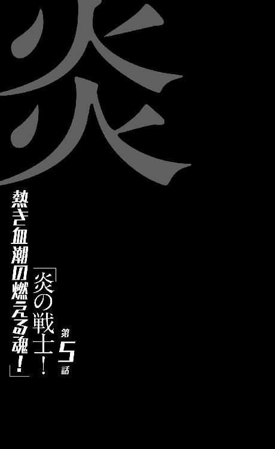
0
悪法の下の平等。
1
地球撲滅軍第九機動室は、基本的に『戦う部隊』。
主な仕事は怪人退治。少なくともそう掲げられている。
空々にとっては、彼の家族、及び関係者を虐殺したというのが第一印象だったため、『人間を殺す部隊』というイメージがどうしても強いのだが、しかしあれこそ、彼らにとっては本来は例外的な仕事だったのだ。
地球からの数々の『攻撃』に、『防御』し、『対応』し、『反撃』しているというのが地球撲滅軍の現在の姿勢だが、そこにおいて彼らは数少ない『攻撃的』な、攻めの部隊なのである──もっとも、それにしても明白な汚れ仕事であり、前線で危険に晒される、軍の中でもあまり『羨ましがられない』部隊ではある。
怪人を区別できる空々は、確かにながらく待ち望まれたヒーローではあるのだが──ヒーローがスカウトされた部隊そのものは、決して英雄視されてはいないのである。
英雄になり損ねた戦士・剣藤犬个にしてみても、ずっと誇らしい気持ちで仕事をしているわけではない──むしろ『私にはこれくらいしかできない』という意識が強い。もっとも彼女がそんな、劣等感に似た気持ちを持っているのは、己の境遇のみならず、『火達磨』という『先輩』を知っているからというのもある。
剣藤の家族を焼き殺した、あの男。
自分は、あの男と同じ部署にいるのだと思うと。
人類を守るという大義を持っているにもかかわらず──自分の仕事を誇れなくなるのだった。同居している少年、空々空にしてみれば、自分も『火達磨』も何も変わらないのだろうということを考えると、悲鳴を上げたくもなる。
それについて相談したとき、『茶飲み話』──牡蠣垣は、こんな風に答えたのだった。
「組織というのは何かと厄介です。どんな風に集めたところで──同じ目的を持った人間だけを集めたところで、画一的には揃わない。会社も、学校も、軍隊も──同じ試験で選抜しようと、違う人間が集まる。色んな人間が揃う。まあ、働き蟻のパラドックスみたいなものですかね？ 百人の人間を集めれば──確率的に、私のような人間もあなたのような人間も、『火達磨』のような人間も現れる。それだけのことであり、なんら恥じることはないのですよ。ほら、色んな人間がいないと、いざというとき、全滅しちゃうでしょう？」
よくわからない返事だったが、しかし、よくわからないなりに、気が楽になったような気がした。そういう『気のせい』を与えることに『茶飲み話』は長けていた。
「いつかそらからくんが、そんな風に思ったとき──『火達磨』を見てそんな風に思ったとき、私は『茶飲み話』のように、あの子の気持ちを楽にしてあげることができるだろうか。きっとできないだろう。彼にしてみれば『私』と一緒にされることさえ、きっと嫌だろうから。でも、それでも言ってあげよう。同じ組織の同じグループに属していても、きみは『火達磨』とは──なんなら『私』とも、違うんだと」
そんなことを考えていたが、きっとヒーローは、本物のヒーローはそんな風には考えないのだろうとも思った。だがまさか──こんな早い段階で、『火達磨』と空々が遭遇するとは、剣藤は思ってもいなかった。
まして戦うことになるなんて。
2
「怪人の子供って怪人なの？」
雨の中、クルマを運転しながら、助手席の左在存に、空々は訊く。それは会話の流れとしては相当唐突な訊き方だったので、在存は面食らったように、
「ああ？」
と不機嫌そうに応じた。別に怒ったわけではないだろうが......。
「どういう意味だ、そりゃあ？」
「いや、僕が殺した怪人にはお子さんがいたらしいんだよね......、子供だ。怪人の血を引く子供なんだから、その子供も、怪人ってことになるんだろうかって、そういう意味。外見とか、あるいは身分とかと違って、家族って『擬態』が利くものじゃないと思うんだけど......、でも、それを言い出したら、怪人の親も怪人じゃなくちゃいけなくなるだろう？ 一族すべてが怪人なのかな？」
「ああ、そういう意味かよ......お前、質問下手だな。剣藤さんと会話してんのを聞いてても、まあそう思ってたけどよ。もうちょっと相手の気持ちを考えてから喋り始めたほうがいいぜ」
「ああ、うん。考えてるつもりなんだけど」
考えてるだけなんだけど。
「ほら、またワイパー止まってるぜ。......動かしっぱなしにしとけっていってんだろ。なんでいちいち止めるんだよ」
「目の前を何かがずっと動いてるって、嫌なんだよね、落ち着かなくて......、ちゃんと動くかどうか見張っているような気持ちになって、不安になって、つい止めてしまう」
「危ないからやめろ、ペーパードライバー。......で、その質問だが......、剣藤さんに訊かなかったのか？」
「うん。いや、今思いついたものだから。在存ちゃんの『擬態』を見ていて思ったこと......、別にそれ、きみのお母さんが同じ力を持ってるってわけじゃないんだろう？」
「その辺りからの連想か......ふうん」
ふうん、というその頷きには、『自分が殺した相手に子供がいるってことに、この男はストレスを感じないものなのかねえ』というニュアンスがこもっていたのだが、空々はそれには気付かない。
もちろん在存は、空々と剣藤との食事時の会話を三週間聞いていたので、そして見ていたので、空々の『そういう性格』については知っているつもりでいたのだろうが、しかし、自分がいざ話して、その『感じ』を感じとってみると、また違うのだろう。
だが、彼女は質問には答えた。答を拒否するような質問ではなかった──剣藤だって、もしも訊いていればすぐに教えてくれただろうことだ。
「もちろん、百パーセントとは言わないが、怪人の子供だから怪人ってことはねえ。怪人の親だからって怪人ってこともねえ」
「百パーセントとは言わないがって言うのは？」
「血のつながりとは無関係に、二人とも怪人って可能性はどうしても残るからな。子供が四月生まれで、母親が四月生まれってことはあるだろう？ だけどそれは、血縁とは関係ねえ。血液型が一緒なのとはわけが違う。そういうことだ」
「人間が怪人である確率は、十二分の一くらいだっていうこと？」
「なんでそんな理解になるんだよ......、聞けよ、ちゃんと。まるで俺の比喩がわかりにくかったみてーじゃねーか。怪人の数はもっと少ねーよ、たぶんな......十二分の一なんて、そんなにいてたまるかよ」
「でも、いても不思議じゃないじゃないか。区別できないんだろう？」
「そりゃそうだが......、ああでも、お前が『ミラーグラス』を使って見てみても、怪人は全然、見つかんなかったんだろ？ じゃあ、頻度としては、そのくらいってことだぜ」
「僕もそう思ってたけど......、剣藤さんは大袈裟に言っていたんだと、ついさっきまで、そう思っていたんだけれど。でも、ゴーグルを通さずにきみの姿が、『擬態』を無視して人間に見えるということは、その逆だってありえるよね？ ゴーグルを通しても『擬態』を見抜けない怪人だっているかもしれない。それも──かなり大量にいるかも」
「......どうして『ということは、その逆だってありえる』ってことになるのかはわかんねーが。論理的には滅茶苦茶だが、しかし、まあ......、言われてみると、否定の難しい仮定だな」
なんだか、子供に揚げ足を取られたみたいな顔をして、在存は不承不承、頷いたようだった。子供に、というのは間違ってはいないが、あくまで在存のほうが年下なのだが。
「ちっ。言われて嫌な妄想をしちまったぜ。世の中の人間の、もうほとんどは怪人になっていて、地球撲滅軍は人類を守っているつもりで、怪人を守っているのかもって......、いや、その軍さえももう、怪人によって運営されていたり、な......」
「ありえない話じゃないんだろう？」
「ああ、ありえない話じゃない。俺としたことが、どうして今まで思いつかなかったのかというくらいに、ありえる話だ──十分に目のある話だ。しかし、ぞっとする話だぜ。目を逸らしたい現実って奴だろうが、そりゃあ......お前、よく考えられるな、そんな怖いこと」
「いや、その妄想は今きみがしたものじゃないか。僕はそこまで深い妄想はしていないよ、精々、『軍の中に怪人が紛れ込んでいるかもしれない』くらいだよ。僕に責任を押し付けられても困るなあ......」
「俺はもう抜けるからともかくとしても、空々ちゃん、お前はそんなこと考えても、平気なのかよ？ 命懸けで、すげー無意味な活動をしているかもしれねーんだぜ？」
「命懸け？」
きょとんと、空々はその言葉に首を傾げた。そんな違和感のある言葉を聞いたのは初めてだというくらいだった。
「何が命懸けだよ、在存ちゃん......、非合法っていうだけで、怪人退治は簡単じゃないか。彼らにはまるっきり戦闘能力がないんだから、人を殺すのとなんら変わりがない。強力な武器を──剣藤さんなら『破壊丸』を、僕なら『グロテスク』を、きみはその首輪だっけ？ ──与えられて、一方的に殺しているんだ。命の危険なんてないよ。もしも地球が人間を殺そうとしているのが本当なんだったら、その事実を知らずに二酸化炭素の排出を抑え、ゴミを分別し、エコロジーに従事している無辜の一般人のほうが、よっぽど命懸けで過ごしているだろう」
「......ああ、お前、まだそんな段階だったな。そう言えば──いや、そりゃそうなんだが、しかし命懸けなのは確かだろう。非合法であること自体からは軍が守ってくれるにしても、んなもんあっさり切り捨てられるし、実験台にされるかもしれねーし、あらぬ疑いをかけられて粛清されるかもしれねえ。命のリスクは、やっぱり上昇してるぜ」
「それでも生きていられる」
「飼い殺しだぜ」
「飼われていても、生きているなら、飼い殺しでいい」
「......俺は野垂れ死んでもいいから、飼い犬よりは野良犬でありたいねえ」
かみ合っているようで、二人の会話はすれ違っていた。
無理からぬ。
二人は同じように前を向いていても、見ているものが違うのだ。
左在存は未来を。
空々空は現実を見ていた。
しかしどちらも黒くくすんでいた。ワイパーではぬぐえないくらい。
3
「話を戻すが......、空々ちゃん。折角だからお前に、怪人がどういうシステムで『生まれる』のか、教えておいてやるよ」
「『生まれる？』」
「ああ。まあこんなこと、訊けば剣藤さんが教えてくれるとは思うけどよ......、あの人も説明下手だからな。それにお前、訊くのを普通に忘れそうだし」
「まあ......そんなに気になることでもないしね。哲学的怪人の出自なんて」
「怪人がどんな風に『生まれる』のかくらい知っておけよ。......『哲学的怪人』？ なんだそりゃ」
「あ、ごめん。僕が勝手につけた名前」
空々は説明をした。その性格から考えて、怪人は哲学的ゾンビに近いように思えたからという説明を。その説明を聞き終えて、在存は、
「まあ、なるほどとは言えるな。意外と的を射ている」
と言った。
「ただ、それを言うなら沼男と言ったほうが、より事実に即しているかもしれねー──怪人がどうして『生まれる』のかって話に繫げるなら、なんだが」
「沼男......ああ」
知っている言葉だったが、それはやや『たとえ話』として荒唐無稽なものだったので、空々にとっては印象が薄く、だから今の今まで連想しなかったけれど、しかし言われてみればその通りという気もした。
沼男。スワンプマン、である。
ある日、沼に出かけた男が雷に撃たれ死亡する。直撃で、影も形もなく、この世から消えた──しかしそのとき、そばの沼にもまた雷が落ちて、そのとき奇跡的な現象が起こる。雷と泥との化学反応で、生物が生まれたのだ──それは、雷に撃たれて死んだ男と、まったく同じ『形』の生き物だった。
身体も、脳も、記憶も、まったく同じ。
寸分違わず同じ『もの』が『生まれた』。
同じである以上、『彼』はそのまま家に帰る──そして『彼』としての生活を、そのまま続けるというわけだ。まさか自分が、雷と泥から生まれたなんて思いもせず、まして雷に撃たれて死んだなど思いもせず。
「......家族と談笑することもあれば、職場で同僚と喧嘩することもあるだろう──って話さ。まあ、怪人の生まれかたは、概ねそんな感じじゃねーのかって言われてる。これも証拠のない話で、推測みてーなもんだが」
「雷が怪人を生んでる？」
「いやいや、そうじゃねーけど。お前、だから比喩をそのまま飲み込むなよ、どんだけ素直なんだよ。フランケンシュタイン博士の怪物じゃねーんだから。つまり、怪人は、人間として生きてた奴がどこかで『入れ替わ』って『生まれる』って感じだ。それも、本人も気付かないうちにだ──『入れ替わる』って言うより、『生まれ変わる』かな？」
「生まれ変わる......じゃあ、怪人には、自分が怪人だという自覚がないということ？」
「ないんだろうね。ないんだと思う。そう思えば、地球撲滅軍の拷問部隊がどんなに頑張っても、自白を引き出せない理由がわかりやすくなるだろう」
「......拷問部隊って......」
そんな部署があるのか。そんな露骨な名前の部署が。いや、たぶん正式名称ではないのだろう。在存の露悪的な表現に違いない。そんなネーミングセンス......、いや、だが、地球撲滅軍なんて名前が正式名称であるならば、内側にそんな部署があっても不思議ではないのかもしれない。
まあ今の問題はそこではない。
「じゃあ怪人は自覚なく、人類を滅ぼそうとしているということになるのかな？」
そもそも、怪人が人類を滅ぼそうとしている証拠があるのかというのが疑わしいという話だったような気もする──すべては状況証拠に過ぎないのだと。
極端な話──いや、そんなに極端な話でもなく、ひとつのごく当たり前な可能性として、たまたま、人類にとってマイナスとなるような行動ばかりを取っていた人間がいたとして、その人間と怪人との区別はつかないわけだ──思考レベルまで詳しく解析して調べたところで、その人間を人間だと証明する方法はない。
とすると道理で空々の『認識』が重宝されるわけだが......、それに、『擬態』の分析が急がれるわけだが......、ただ、どうしても空々自身には、それは不毛なんじゃないのかと思われてならない。
そんな冷めた見方をしてしまうことこそが、彼の彼たる所以ではあるが、その認識が正しいとは限らないのだから。それはさっき、空々が在存に言った通りだ。
空々にだって正体の見抜けない怪人がいるかもしれない。
しれないのだ。
「ひょっとすると、僕やきみだって、怪人かもしれないってことだよね？ それを否定する手段は、はっきり言って、ない」
「ないなあ......だとすると、結局それは、行動から判断するしかねーんじゃねーか？ たぶん地球撲滅軍のお偉方......、俺も会ったことがねーようなお偉方は、そんな風に考えてるんだと思うぜ」
「状況証拠だけで十分だってこと？」
「いや、もっと過激かもな。俺達の......ってもう俺は関係ねーが......お前達のボスは、もっと偏向してるだろうよ。つまり、人類に仇なすような行動を取ってるような奴は、怪人であろうと怪人でなかろうと、『退治』しちまってもいいんだって──」
「..................」
酷い発想だ。いや、正確には、それがこの国の常識から考えて『酷い発想』だと思われるであろう発想だ──と空々は思う。だがきっと、倫理や道徳を省いて考えてみれば、それはきっと合理的な割り切りでもあるのだろうとも、同時に思った。
罪を恐れなければ、犯罪検挙率は爆発的に跳ね上がるという。
当たり前の話だし、そうであってはならないというのが法の原則だ──無罪の人間を一人有罪にするくらいならば、百人の罪人を無罪にするほうがいいとされている。
そうでなければならない。そうでなければ法の秩序は保たれない──が、恐らくそちらは全員には支持されないというだけで、違う考えかたの持ち主はどうしようもなくいて、そしてそんな考えかたの──過激で偏向した考え方の持ち主が、地球撲滅軍の上層部にはいるのだ。
飢皿木博士の言う、『心の動かない人達』だ。
「危険思想......だよね。そんな考え方をしていたら、いずれ人類は一人も残らなくなるよ。裏返せば、全員が疑わしいってことなんだから」
「その通りだな。人類に益する行動ばかりを取っている奴が、たとえいたとしても......、それだって、ものの見方って奴だからな。善行に見せかけた悪行、悪行にしか見えない善行。そんなんばっかだぜ、世の中は」
「......悪行にしか見えない善行ってのは、地球撲滅軍のことを言っているのかな？」
「いやいや......、俺に言わせればあれだな、地球撲滅軍の行動は、悪行にしか見えない悪行って感じだな。救いってもんが、およそねーよ。結果が善でも、悪行じゃねえってことにはならねえ。怪人を退治しちゃあいるんだろうが、ただ『それだけ』だ」
シニカルというか、身も蓋もないような言い方だった。自分の身体を、わけのわからない風に改造されてしまった彼女からの意見なのだから、それが当然とも言えたが。
と言うか、自分の姿が周囲から『犬』にしか見えなくなるような肉体改造を施されて、それでも組織の善性を信じ続ける者は、なかなかいないだろう。一人もいないと言ってもまるで言い過ぎではない。
「ただ、空々ちゃん。後学のためっつーか、お前のこの先の人生のために言っておいてやると、善とか悪とかは、この際関係ねーんだよ。地球撲滅軍が、悪しき地球から人類を守るための善であろうと、そう標榜しながら道を逸脱しちまっている悪であろうと、お前はもうその中で生きていくことを選んだってことだ──じゃあ、そんなところで悩んでいても意味はねえだろ」
「別に悩んでないけど」
「そうだっけな」
在存は言う。
「だから後学のため、ここから先の人生のためだっつーの。お前がいつか悩んだときのために、俺は言ってるんだよ。悩んだときはそう思え。意味なんてねえって」
4
熱血という言葉がある。
『血が熱くなるような激しさ』みたいな意味なのだが、まあ基本的にはこれは比喩的な表現だ。『熱血漢』だからと言って、本当に血液が熱いわけではあるまい。あくまでも精神的なものなのだ。
だがここに、その表現を地でいく者がいる。地でいくというよりは、血でいく者がいる。
字義通りの『熱い血』──灼熱の血液を持つ男がいる。
左在存が肉体改造を施され、『犬』に『擬態』する体質に矯正されたように──彼は身体中の血液を一滴残らず『入れ替えられて』、その身体には触れられないほど高温の血液が流れている。
在存との違いがあるとすれば、与えられた体質が酷く攻撃的で、周囲にとって迷惑極まりないということと、彼の場合はその体質を喜んで受け入れているという点だろう。
彼の名は氷上法被。
ただしまだ、地球撲滅軍に属する前、彼は法被ではなく発破と呼ばれていた──そして今は『火達磨』と呼ばれている。
灼熱の血液を持つ軍人。
『炎血の火達磨』である。
5
「その手錠をどこかで外さなきゃね......それとも、それも、地球撲滅軍支給の、不思議アイテムだったりするの？」
「不思議アイテムとか、変なオモチャみてーな名前をつけんなよ......いや、これはただの手錠だ。拘束具だ。鍵は剣藤さんが持ってる。着替えのときだけは外してくれるからな」
「ふうん。探せば部屋のどこかにあったのかな、その鍵も......探している時間があればよかったんだけれど。でも、なんで？ っていうか、そもそもどうして、どういう理由で、在存ちゃんはそんな手錠をかけられてるの？ 『犬』への『擬態』と、何か関係があるのかな？」
「まあ一応、『擬態』をバレにくくするって名目だな......、犬が手を使っちゃおかしいだろって話で。だけど俺は、俺に対する嫌がらせなんじゃねーかって思ってるけど」
「嫌がらせって」
「つまり手錠を日常的につけっぱなしにすることで、自分は組織の『備品』なんだって思い知らそうとしている、とかな」
「......嫌われてるの？ 在存ちゃん」
犬の生活を強制されている時点で、既に相当な嫌がらせだと思うが、その上に何かを重ねられるとなると、もうそこには理屈ではない、鬱屈した何かを感じてしまう。
「そりゃ好かれてはねーよ。俺、この通り、すれてるし。不明室の連中については悪口しか言わねーし。まーそーだな、手錠は外せるところで、外しておきたいな」
「在存ちゃん。ついでに訊いてもいいかな。これはたぶん、剣藤さんには答えられない質問だと思うんだけど」
「なんだよ。俺に答えられることなら答えてやるぜ」
「その......、僕にはきみが『犬』には見えないからわからないだけなのかもしれないけれど、それにきみに訊いても答えられないことなのかもしれないけれど、きみの『擬態』って、具体的にはどうやってるの？」
「うん？ 具体的？ いや、そういわれても、俺は別にやりたくてやってるわけじゃねーからな......、その質問は、『きみは爪をどうやって伸ばしているの？』って訊いてるのと大差ねーぜ」
「訊き方が悪かったかな。擬態によって矛盾が生じたとき、どういう風に『処理』されているのかが気になるって意味だよ。『そう見える』ってだけじゃあ、どこかで矛盾は起こりうるじゃない。ほら、たとえば......手錠の鍵は剣藤さんが持ってるって言ってたよね？ じゃあ剣藤さんは、着替えのとき、その手錠をどういうモチベーションで『外す』のかな？ ペットの犬から手錠を外すなんて機会は、普通に考えてないだろう？」
「ああ、そういう意味か......理屈じゃなくて、その辺がどういう風に処理されてんのかってことだな？ まあ、具体的なシステムがどうなってるのかは、直接不明室の連中に訊くしかねーだろうが......訊いても教えてはくれねーだろうが、相手の脳に直接干渉して、その辺の矛盾を認識できねーよーにしてるって感じかな」
脳に干渉。そういうことは、怪人の擬態について、剣藤も言っていた気がする。視覚情報だけを調整しているわけではない、と。脳に幻覚を見せているのだと。
「要は見えているものと現実との矛盾に対しては、勝手に見た者のほうが対応してくれるってことだ。剣藤さんは、俺の手錠を、嵌めたり外したりしていることに、きっと気付いてねーんだよ。そんな話をお前が振っても、『何のこと？』って首を傾げるだろう。まあこの辺になると、怪人の『擬態』が同じシステムなのかどうかは確証がねーけど」
「ふうん......そうだね、実際には疑いをもたれている怪人達もいるわけだからね」
罪覚悟の疑いだからこそ、なんとか看破できるのかもしれないけれど......、確かに実際、淀理川美土里が怪人であることは、ゴーグルで空々が確認する以前に、ほぼ確定させていたようだし。
「じゃあ、たとえ手錠をされていなくっても、両手を使って生活していたとしても、剣藤さんにはきみが『犬』に見えるってことだよね。そもそも、二足で立ってるし」
「まあそうだな。その辺はあの人の頭の中で解決されてる。だから嫌がらせだって言ってんだよ」
「しかし、そんな嫌がらせをものともしないくらい、使いようによってはすごく便利な能力に思えるけれど、どうなの？ その『擬態』って、もう汎用化されているの？ つまり、軍の中で他に使える奴はいるの？」
「他にはいねえ。っつーか、俺も使えてねえよ。何かのミスで俺に『それらしきもの』が発現したってだけだ......『擬態らしきもの』なんて、変な喜劇みてーで面白くもねーがな。『犬』に擬態できたって、基本何の役にもたたねえよ。ゆえに不明室にとっちゃ俺なんざ、空々ちゃんに看破される前から失敗作だろ。失敗作から、なんとか何かを学ぼうとしているって感じなんだろうよ」
「失敗......」
そのつながりで半年前に剣藤のペットとして、在存は払い下げられたのだろうか？ いや、そんなつながりはないだろうけれど、そのことが、この傍若無人な態度の少女に、剣藤を『さん付け』で呼ばしめている何かなのかもしれないと思った。
そう言えば剣藤は『境遇が似ているところがある』と言っていた。剣藤が在存を『犬』だと思っている以上、その言葉をその言葉通りに受け取るわけにはいかないが......。
「今更になるかもしれないけれど......、もし駄目だったとしても、なんとか誤魔化すしかないことだけれど、手錠で両手を拘束されている人間に僕が連行されているという点については疑われないかな？」
「あん？ ああ、それについては問題ねーよ。だって基本、俺は怪人と戦うときだって、手錠を外してはもらえねーんだから。いくら嫌がらせっつっても、いざというとき戦えなくなるようなことはしねーよ」
「そうかい。それはつまり──そっちは支給されたアイテムだって言ってたよね──、首輪の力で、戦えるってことかな？」
「ああ......、これ、『共鳴環』っつーんだけどな。戦うためのアイテムとは一概にはいえねーかもな......『破壊丸』とはまた違う。だけど、お前の『グロテスク』ともまた違う。まあ、これがなかったら、俺も逃亡しようなんて気にはならなかっただろうぜ。あいつらのミスは、天才ギャンブラーであるこの俺にこんな便利なアイテムを預けちまったことだ」
「ふうん......」
ここで、その首輪がどういう機能を持ったアイテムなのかを訊けば、それもまた、在存は教えてくれていたはずだろう。別にここに来て隠し立てする理由はない。いや、在存が空々を誘拐し、人質としてつれてきたという『設定』を遵守したいのであれば、それはむしろそうしておくべきだったのだ。首輪──『共鳴環』の機能や仕様をまるっきり知らないままに誘拐されたというのは、後ろ手の年下の少女や、あるいは『犬』に誘拐されたというのと同じくらいに説得力がなくなる。
が、それについては空々はもちろん、在存も気付かず、見落としていた。彼女にとってはその首輪は既に肉体の一部のようなものであり、それがもたらす力もまた、肉体の一部──生活の一部であり、生命の一部のようなものだったためというのがその理由であり、それを聞いてしまうと仕方がないとも言えるのだが、だが、『共鳴環』が持ち主に与える恩恵を知らなかったことが、空々を更なる窮地に陥れることになるのは確かだった。
要するに空々少年から見れば、『年下の癖にふてぶてしい、熟練の戦士』あるいは『天才ギャンブラー』に見える在存にしたって、決してミスをしないわけではないし、また、空々が今思っているほどに、頼りになる相棒でもないということだった。
組織の内部に、暗部に、そして深部に食い込んでいる分、在存は下手をすれば剣藤や牡蠣垣よりも頼れるような風格をかもし出しているが、しかしそれは同時に、現場を知らず、経験が足りないということも意味しているのだった。
だけどそのことにも空々は気付いていない。
今自分が、どれほど危険なギャンブルにつき合っているのか──つき合わされているのか、わかっていない。それも、自分にはほとんど取り分のないギャンブルに、である。
「それじゃあ最後の質問だ、在存ちゃん。これも、先に訊いておけばよかったことなんだけれど」
「なんだよ。お前、信号待ちのたびに何か訊いてくるのやめろよ。一番目ェつけられやすいときなんだから、ちゃんと大人みたいな顔して前向いてろよ」
「大人みたいな顔してって言われてもね......、いや、だから最後の質問だって。在存ちゃん、この先、どうするつもり？ どこかで工具でも使ってその手錠を切って、あとは更に離れたところで......、携帯電話の電波も届かないような場所で、僕を縛った上で別れるとして......、そのあと、どうするの？」
「だから逃げるんだって」
「どこに？ って意味で訊いたんだけど」
「さあね......どこにも何も、俺はお前以外の人間から見たら、ただの犬コロだからなあ。文字通りの野良犬だから、フットワークは軽いぜ」
「きみが喋ったら、その言葉はみんなに通じるの？」
「さあ。喋ったことはねーからわかんねーけど、それもそれで脳のほうで調整されちゃうんじゃねーの？ こんにちはって言っても、こんにちわんって聞こえちゃうんじゃねーの？」
「......こんにちわんはないにしても......、コミュニケーションがとれるかどうかは怪しいよね。それで、逃げきれるものなの？ 誰の助けも借りられないし、誰もきみのことを人間扱いしないという意味では、現状とそんなに変わらないと思うんだけど」
「くくく。なんだよなんだよ空々ちゃん。僕だけはきみのことを、人間として見てあげられるんだから、一生僕のそばにいなよ、とか、そういうプロポーズをしているのかい？」
愉快そうに言う在存。そこまで言うつもりが空々に、この空々空にあるはずもなかったのだが、しかし在存のほうからそう提案されてみると、それも悪くないんじゃないかという気もしてきた。
まだ、在存とこうして『交流』を持つようになってわずか数時間だが、この数時間は──三週間振りに外に出たこともあって──空々にとって、ある種の刺激だった。
彼のような無感動な人間には、それはあまりないことなのだが、その雰囲気に酔っているのかもしれない──このまま在存と一緒に逃亡するのも、やっぱりありなんじゃないか、と、思ってしまったりもするのだから。
単に流されやすいだけとも言えるが。
だが、とち狂ってそんな申し出をする前に、在存のほうから、
「俺のことは心配しなくていいよ。コミュニケーション云々については心配いらねえし──だから、野垂れ死に本望なんだ、俺は。一人のほうが自由だしな」
と、やんわり断るようなことを言ってくる。
そこまでのつもりがあったのかどうかはわからないが、なんとなくその言葉からは、『足手まといはいらない』と言われたような気がした。そう思うと地味に傷ついた。告白もしてないのに振られた気分だ。
「あのまま軍にい続けたら、更にお袋の無茶な実験に付き合わされて、その結果死んじまうかもしれなかったんだからな──怪人が自分のことを『人間』だと思い込んでいるように、俺も自分のことを『犬』だと思い込むようになっちまうのかもしれねえ。そんなのは御免だよ」
「............」
「人として生きようと、犬として生きようと、本当のところ俺は、どっちでもいいんだ。ただ、俺は死ぬなら、俺として死にてえ。そういうことなんだよ」
その言葉を聞いて、空々は少し、羨ましい、と思った。
かつて野球部の先輩にそうしたように、嫉妬でそう思ったとか、彼女の態度に怒りが湧いたとかそういうことではなく──純粋に羨ましいと思った。
どっちでもいい。
そんな風に選択肢を持つ在存は、『どうでもいい』と思っている空々とは似て非なる存在なのだろうし──きっと人生観も死生観も全然違うのだろうが、それでも羨ましいと思った。
いつか将来、こんな風な『人間』になれたらいいなあと思った──憧れた。年下の少女に対して本来思うようなことではないのだが、彼は素直にそう思った。
むろん、言うまでもなく、空々のそんな願いは、たぶん叶わない──彼は彼女のような人間にはなれっこない。彼女のような犬にさえなれないだろう。
在存は憧れたくらいでなれるような境遇で育ってきたわけではないし、本人が望んで形成されてきた性格ではないし──何より空々空は、『他の誰か』みたいになるには、あまりに異質過ぎた。
その異質さに対する無自覚さもまた、異質なのだ。
彼が少なくとも、そのことに気付くまでには、彼にそれでも自覚のきっかけをくれた、そして彼を陥れた飢皿木博士との再会を待たねばならないのだが──その再会が訪れるのかどうかは、まだわからない。
彼が、雨の今夜を生き残れるかどうかにかかっている。
とはいえ、空々の願いは叶わないだろうが、しかし在存の願いは恐らく叶うことになる。それもこの直後、叶うことになる。
彼女は今から五分後。
俺として死ぬことになるのだから。
6
「ん......？」
と、先にそれに気付いたのは、意外にも空々のほうだった。いや、意外ではないのかもしれない。彼は生まれて初めて自動車を運転していて、在存にはちゃんと前を見ろと注意をされたりはしたものの、持ち前の無意味な集中力で、間違っても事故なんて起こさないよう、ちゃんとフロントガラスの向こう側やサイドミラー、バックミラーに気を配っていたのだから。
つまり、普通にクルマを運転していたら気付く程度のことだったというわけである──先に見える交差点のど真ん中に、人間が一人、立っていることくらい。
他に空々が気付くべき奇妙なことがあったとすれば、二点。
いつの間にかこの周辺を走っているクルマが、空々のものだけになっていたということ──これには、しかしまったく気付いていなかったわけではない。ただ、それを奇妙とは思わず、『道路がすいていて、運転しやすくなった』と自分に都合よく考えていた。つまり、まさかこの辺り一帯の周辺道路が封鎖されたのだという真実には思い至らなかった。その可能性にさえ思い至らなかった。
そして気付くべきもう一点は、その交差点の信号が、すべて赤信号になっていたということだ──いや、厳密に言うとそれもまた、この交差点に限らず、辺り一帯の信号機は、すべて先ほど、赤色で固定されてしまっていたのだが。
真っ赤だったのだが。
これには気付いてもよかったはずだけれどしかし空々は、普通に赤信号を見て、アクセルを緩めた。そうしているうちに、雨の向こう側の交差点中央に立っている人間が目に止まったので、更に念のため、ブレーキを踏んだのだった。
近付くにつれ、なんだか棒のような人間だと思った。
棒、それもマッチ棒のように細い。気付いたからよかったようなものの、もしも気付かず、信号も青で、撥ね飛ばしてしまっていたら、間違いなく重傷を負わせてしまっていただろう。逃亡劇の最中で人身事故など、とんでもない話だ。気付いてよかったと思った。
そんな暢気なことを思っていたら、男のほうも動いた──空々としては、至極常識的に、彼はきっと交差点を斜めに横断しようとしていて、その最中に信号が変わってしまったのだろうとか思っていたのだが、だから動いたというのなら、駆け足になって向こう側に渡るという動きを見せると思っていたのだが、そうではなかった。
彼は。
片手をピストルの形にして、こちらに向けたのだ──空々が、『嫌な予感がした』ときがあるとしたら、このときである。そう言えばあの男、どうしてこんな雨の中、傘をさしていないのだろう？ あの手は、こちらに向けるべきそれではなく、傘をさすべきそれなのでは？ 空々はそんなことを思った。あまりにも遅過ぎたし、しかし仮にもう少し早かったとしても、別に対応はできなかっただろう。どころか、無理にできもしない対応をしようとして、急にハンドルを切って、それで本当に事故を起こしていたかもしれない。
そうなっていたら、車内にいた二人ともそれで死んでいたかもしれないのだから──犠牲者が一人で済んだという意味では、彼の気付きが遅かったのは、彼にとってはよかった。
在存にとってはどうだったかは知らないが。
「ファイヤー・ボール・アース」
男が──『火達磨』がそう呟いたのは、雨音とエンジン音にかき消され、運転席まで届くわけもない──まだ男の顔も確認できないような位置関係だったのだ。
しかし攻撃は開始された。
放火魔とヒーローとの場外乱闘はこうしてスタートした。
7
「なっ......」
ここで慌てて、そして今更、空々はハンドルを切ろうとした──が、ハンドルの角度を、わずか数度も変えられないままに、『それ』は彼の乗る自動車を直撃した。直撃し、貫き、遥か後方へと消えていった。
それは『火の玉』だった。
『火達磨』の指から放たれたのは、ピストルの形にした指から放たれたのは、ドッジボールくらいの大きさの火の玉だった──それが弾丸のように飛来し、フロントガラスを割り、シートを貫き、リアウインドウを溶かして、消えていった。
いや、違う、それだけではない。
その軌道の途中にあった人間を一人──焼いている。それは人間でなく犬だったかもしれないが、とにかくその頭部を焼き、ほんの一瞬で焼き、消滅させている。
消滅ではなく、正確には蒸発だが。
人間の肉体を骨ごと蒸発、焼き尽くすほどの炎が、一瞬とは言え間近を通過したのだ、すぐ横にいた空々が無事で済むはずもない。その熱波に吹き飛ばされそうになるのを、反射的にハンドルにしがみつくことで、彼は防いだ。だが、さきほど切りきれなかったハンドルを、その衝撃で図らずも切ることになってしまって、自動車は激しく蛇行することになった。
減速していたのが幸いだった、それにアスファルトが雨に濡れていたのは幸いどころではなかった。片側を焼かれて、重心の狂った車は、本来道を逸れていくはずだったのだろうが、その場で大きくスピンし、回転するようにして、交差点に立つ男のほうへと向かっていったのだ。
「おっ......あれ？ 運転席を撃ったはずなんだが......？」
驚いて、『火達磨』の対応は遅れた。『ファイヤー・ボール・アース』を連射するつもりはもとよりなかったが、しかしこの、『即座に反撃に出た』ような自動車の動きは、彼にとって予想外だったのだ。
「あ──ああ。なんだよ、外車かよ。左ハンドルじゃねえかよ。助手席を撃っちまった──」
己の計算外を認識しながら、『火達磨』は転がるようにして、その自動車の体当たりを避ける。水溜りも雨も気にしない。彼はどんな風に行動しても、『水浸し』になることがないのだから。
「日本の道路走るんだったら日本車に乗って欲しいもんだよなあ──今、この不景気の中、国内企業がどれだけ苦労してると思ってんだよ。あーあ、ヒーローくんのほうを燃やすつもりだったのに、ワンコロのほうを燃やしちまった。『寸刻み』がペットロス症候群になっちまったら僕のせいかなあ、こりゃあ──」
彼はこのとき、ことの重大さには気付いていない。
不明室から詳細を聞かされていない『火達磨』は、自分が火の玉で撃ち抜いたのが、地球撲滅軍にとって不完全ながらも唯一の『擬態』成功例、貴重なる『ワンコロ』であることを知らなかった彼は、一撃で決められず残念だ、くらいのことしか思っていない。
同僚である剣藤のペットを、一応は無事に連れ帰ろうという考えがあったから狙いを運転席（実際には助手席だったが）に絞ったピンポイント・ショットを行ったのは確かだが、別に彼にとっては、クルマごと焼き尽くしたって構わなかったのだ。
それに──ここが、ことの展開にとっては『重大』なところだったが、仮に知らされていたとしても──左在存の軍内における貴重さのようなものを軍からあらかじめ知らされていたとしても、『同僚のペットだから、なるべくなら連れ帰ろう』以上の気遣いを、おそらく『火達磨』はしなかっただろう。
彼はそういう性格だった。
彼はそういう性格を買われて、懲役刑と引き換えに地球撲滅軍に引き入れられた放火魔なのである。どうしたってヒーローになんかなれない凶悪な性格ではあったが、それゆえに、アンチヒーローやダークヒーローにはなりうる。そんな男こそが『火達磨』だった。
「ったく、それもこれも、あのガキが『寸刻み』のワンコロを連れ出すからじゃねーか。寂しがり屋め。どれ、ひと言文句言ってやるかな。あんな捨て身のボディアタックをして、生きてりゃあだけどよ──」
そう言って無造作に、『火達磨』は、スピンの末に引っ繰り返って逆さになっている、半壊したクルマに大股で近付いていく。高温の炎に貫かれたのだから爆発してもおかしくなさそうなものだったが、それはなかった。ひょっとするとガソリン車ではなく電気自動車なのかもしれない。まあどちらであろうと、『火達磨』は平気で近付いていくだけなのだが──たとえ至近距離で自動車が爆発しようと、その瞬間にダイナマイト消火できる自信があっての行為だ。
ただの危険知らずではない。危険が好きなだけだ。
「......ん？」
運転席のヒーローを、あるいはヒーローの死体を引きずり出そうと彼は車内を覗き込んでみたが、そこは空席だった。運転席には誰も座っておらず、その奥に、首から上が消し飛んだ、犬の死体があった──少なくとも『火達磨』には、それは『犬の死体』に見えた。
何度か、任務中に剣藤が連れているのを見て知っていたので、模様などから、それが別の犬の死体などではないということは理解できた。入れ替わりの死体などではない。
「............」
ゆっくり立ち上がり、そして周囲を見渡す──傘をささなくとも、水溜りに転んでも濡れることのない体質の彼ではあったが、しかしこの雨では、視界は封じられているも同然だった。
「あの一瞬で逃げたってことか......、引っ繰り返った車から、助手席の犬が焼かれたことを気にも留めず、脱出して逃亡......雨が降ってるっつーのはただのラッキーなんだろうが......ふうん。やるじゃん、空々くん」
空々空くん、と『火達磨』は呟いた。
ここで初めて、彼はヒーローの名を意識した。
そして電話を手に取る。火の玉を放ったばかりの『火達磨』の手は、まだ高温に包まれていたが、彼の携帯電話は耐熱仕様になっているので問題ない。
「やあ、僕だ──うまく逃げられちまった。悪いんだけど、封鎖時間はもうちょっと延長してくれ──中に誰も入れんなよ。動いてるもんは全部焼いちまうつもりだからさ......生かして捕らえろ？ そりゃあ無理な相談って奴だな、こうなっちまうと──まあ結果的に生きてるってことはあるかもしれねーから、精々、蘇生班でも手配しておいてやれや。移植用の皮膚とかよ。あん？ 懲罰もの？ はは、罰なんかいくらでも受けてやるよ。火刑上等なんだ、この僕は」
そして電話相手の、喚くような声をまるで意に介さないように、電源を切る。いや、切るだけではなかった。強く握り締めることでその電話を──耐熱仕様で問題ないはずのその電話を、焼いてしまった。
「さあ、燃えてきたぜ」
8
剣藤犬个と牡蠣垣閂が欧州の小国に到着したのは、日本時間では真夜中のことだった──空港で剣藤は、時計の針を合わせる。本来なら機内で済ませておくべきことだったが、飛行機が苦手な彼女は、機内では必死で寝た振りをしていた。
もちろん、日本においてきたペット『狼ちゃん』と、それに同居人のことが心配でなかったわけではないのだが、飛行機に乗っているときは、自国のことは頭から飛んでいた。飛行機だけに。
到着はしたものの、この小国が目的地というわけではなかった......ここから更に飛行機を乗り継ぐのだ。それを思うと憂鬱だった。どうせチャーター便なのだから、一気に飛んでくれればいいのにと思うのだが、それはセキュリティ上の問題らしい。
この国に今日は一泊して、明日未明に現地へ。
帰りは直航で日本に飛べるそうだ──それが彼女にとっての救いといえば救いだったが、しかしこの旅程、飛行機の苦手な剣藤にとっては理不尽な災難だったが、空々にとっては埒外の幸運だった。
時計を合わせ終えて、入国審査をパスし（これは文字通りの『パス』だ）、それから最後に、剣藤が携帯電話の電源を入れた瞬間、いきなり着信があったのだ。
このタイミングのよさはいくらなんでもありえないから、恐らくは何度も何度も、ずっと電話をかけ続けていたのだろう。ずっと繫がらなかったのに、ずっとかけ続けていたのだろう──それでも、もしも直通コースで現地に向かっていたのなら、もうしばらくの間、電源は切りっぱなしだっただろうから、やはり幸運だったのだ。
着信相手、空々空にとっては。
「そらからくん？ どうしたの......？」
緊急連絡用の電話番号。困ったことがあったら（それは主に、『狼ちゃんの世話で困ったことがあったら』という意味合いだったのだが）電話して、とは言っていたが、こんなに早く電話があるとは。思えば、電話番号自体は随分前に伝えてはいたものの、彼はずっとマンションから出ていなかったので、剣藤に電話をかける機会がなかったのだ。
「な、何かあったの......？」
近くにいる牡蠣垣の目を気にしつつ、剣藤は声を潜めて会話をする。しかし、空々の言うことはまったく要領を得ない感じだった。酷く動転していて、何を言っているのかまったくわからない。ひょっとすると、泣きじゃくっているのではないかというくらいに、普段と様子が違う。
「お、落ち着いてそらからくん......、深呼吸して。大丈夫だから。何があったのかを......今、外なの？ 『狼ちゃん』は？」
質問をしてもまともな答が返ってこない。
動揺や動転なんて、絶対にしない子だと思っていたので──だからこそ、軍に引き入れられたはずなので──意外だった。あの空々少年が、何があればここまで、我を失うというのだろう？
とにかく剣藤は、冷静になるよう空々に言い続け、果たしてその効果があったのか、徐々に話が通じるようにはなってきた。変わらず支離滅裂ではあったが。
「............!?」
そして聞いていくうちに、聞いた情報を頭の中で整理して組み直しているうちに、どうやら空々が、とんでもない状況にいることがわかってきた。剣藤が予想した『最悪』を、遥かに上回るような最悪だ。よりにもよって今彼はあの『火達磨』に標的にされているという──それも相手はどうやら、本気になってしまっているという。いや、剣藤は『火達磨』が、本気でないところを見たことがないが......。
いつだって、本気の殺気なのだ、あの男は。
二年前、剣藤の家族を焼いたときも──
「......とにかく落ち着いて」
結局、話を聞き終えても剣藤は空々に同じ台詞を言うことになってしまった。これではどうして、なんのために話を聞いたのか、わからない。
「いざというときのために精神ブロック剤、何錠か渡しといたでしょ？ あれ、全部飲んでいいから、落ち着いて......。今すぐ『茶飲み話』に相談するからね。えっと、戦おうとしないで、逃げて」
グロテスクはまだ、改造から戻ってきていないはず。
ならば空々は生身で、丸腰であの『火達磨』に追われていることになる──間違っても戦おうとなんてしてはならない。一目散に逃げる以外にないのだ。
「謝ったり話し合ったりしようとしたら、絶対に駄目。そんな機会があっても、絶対に駄目だからね。もしも『火達磨』が『謝ったら許してやる』みたいなことを言ってきたとしても、絶対に謝らないで。むしろそういうときは、『さっさと殺せ』とか『ここで自分を殺しておかないと後悔するぜ』みたいなことを言って。そうすれば生き残れる確率が......、五パーセントくらいは上がるから」
そして剣藤は『火達磨』の能力を──彼の体内を流れている『炎血』のことを、簡略化して空々に説明した。混乱しているときに聞いてわかる説明ではないとも思ったが、それでも話しておかないわけにはいかなかったろう。
そして最後に剣藤は言う。
「逃げて、逃げて、逃げて、逃げる。それだけだよ。物陰に身を隠すとか、そういうことさえ無駄──相手は学校ひとつを、軽く焼いちゃうくらいの火力を持っているってことを忘れないで。物陰に隠れても、その『物』ごと、影も形も残さず焼かれちゃうから。私が帰るまで、なんとか逃げ切って。生き残りさえすれば、あとは私がなんとかしてあげるから。絶対に、私がなんとかしてあげるから。......がんばって」
おそらくは気休めにもならないであろう励ましの言葉を口にした自分を強く恥じつつも、電話を切って、剣藤は牡蠣垣に、電話の内容を報告する。報告というニュアンスをやや逸脱して、強く訴えるような、あるいは責めるような物言いになってしまったが。
「どうして『火達磨』なんかを監視役につけたの......、私の留守を誰かに任せなければいけなかったっていうのはわかるけれど、よりにもよってあいつになんて......」
「むしろ安全パイのつもりだったんですけれどね......、熱くなるとどう動くかわからないあの放火魔を、絶対にトラブルが起こらないであろうポイントに配置しておいたつもりだったのですが。空々さんも、意外な行動を取ってくれます......これはむしろ、あなたの指導力不足なのでは？」
「......彼の、逃亡と疑われるような行為については、まだ事情はわからないよ。とにかく混乱しているようだから......」
「混乱？ ......ほう。混乱するほどのことなのですかね、ヒーローにとって、『火達磨』を相手取ることが」
「何言ってんの、『茶飲み話』。混乱くらいするに決まってるじゃない。私も確かに意外だったけれど、でもあの子、まだ十三歳の子供なんだから」
「ふむ......ところで剣藤さん。あなたのペットはどうなったんですか？」
「え？ 聞いてないけど......普通に考えて、家においていかれたんじゃないの？」
そう言えば晩ご飯はもらったのかな、そらからくんはマンションを出るとき、『狼ちゃん』にちゃんとドッグフードをあげたのかな、と、剣藤はそんなことを思った。
9
支給されていた携帯電話による剣藤との通話を終えて、
「さて」
と、空々は顔を起こす。その表情にはまったく混乱は見られない──むしろ冷え切っている。表情のことだけではなく、この状況下において空々少年のバイタルは、一時間前と、五時間前と、十時間前と、あるいは三週間前、怪人淀理川美土里の頭部を踏みつけたときと、そしてその前々日に殺されている家族の死体を見たときと、もっと言えば飢皿木博士の診断を受ける前とさえも、何ら変化はなかった。
左在存──『狼ちゃん』がどうなったのか、今どうしているのかを、もしも剣藤から訊かれては答えられない。噓をついてもたぶんバレるだろうという前提から、空々は彼女に対し、『放火魔に追われ、殺されそうになって、動揺している演技』という奴をしたのだった。
そんな演技は──過剰な演技は、手馴れたものだった。
まあいつまでも隠しきれるものではない、というか、剣藤が帰国した瞬間にバレてしまうことではあるが、しかし『狼ちゃん』が左在存という人間であったこと、そして頭部を火の玉に吹き飛ばされて死んだことを、今伝えることは、空々にはできなかった。この緊急時に、いや、緊急時でなくとも。
フライトの旅程を聞いていなかったので、さっきの通話は駄目元でもあったのだが、しかし必要な情報は手に入った。『火達磨』という地球撲滅軍の軍人、その灼熱の血液、『炎血』──
「......と。一ヵ所に留まってちゃ駄目なんだったな。物陰に隠れていても駄目だって──」
空々は剣藤の言っていたアドバイスを思い出し、その場から移動しようとする──そのとき、見た。遠くに見た。
それこそ大空襲でも受けたかのように。
あるいは大規模なアトラクションのように、一本の巨大な火柱が天に向かって舞い上がるのを──そしてその火柱が。
空を覆う雨雲を吹き飛ばしていくのを。
見た。
「..................！」
相当な距離があるはずなのに、熱波がここまで届くようだった──当然のことながら雨がやんでいく。天には星空が広がり、少年の逃亡に際してブラインドになってくれていた、救いだった大雨がやんでいく──『火達磨』と違って、強い雨足にずぶ濡れになっていた空々の身体が、服が、あっという間に乾いてしまった。
「逃げるしかない、か......その通りだけど」
あんなの相手にどうすれば逃げ切れるんだ、という思いと──そして。
彼にはもうひとつ思いがあった。
「ヒーローならこういうとき、敵討ちをしたいとか、思うはずだよなあ......在存ちゃんの敵討ちを。果たして僕はそんな気持ちに、今からなれるんだろうか」
火の玉で撃ち抜かれ、引っ繰り返った自動車から抜け出すとき、彼はあるものを車内から持ち出していた。車内からと言うより、左在存の身体から──である。ラッキーなことに、彼女は頭部を吹き飛ばされていたので、それを抜き取るのは容易だった。
空々空が今手にしているのは、かのギャンブラーに支給されたアイテム、『共鳴環』だった。
10
失敗例か成功例かで言えば成功例だが、大失敗か大成功かで言えば大失敗──それが『火達磨』、氷上法被に対して、地球撲滅軍が与えている一定の評価である。
要するに強力過ぎるのだ。
天候を変えるほどの夥しい火力を持っているというのは、このときまで彼は、軍に対して隠していたのだが──さすがにそこまでの力を持っているのだとわかっていたら彼は半分以上、その『血』を抜かれていただろうし、穏健派の第九機動室から異動させられていただろう──そんな、自分の身の安全のためにも極秘だったはずのことを、こんなところで、子供を狩るような他愛のない戦場であっさり使ってしまうのも、いわば彼らしさだった。
そして空々は、雨のやんだ中を、水溜りさえほとんど乾いてしまった中を、全力で走りながら、まだちゃんとその顔を見てもいない『火達磨』の、そんな刹那的な性格を理解していた。
天にも届くあの火柱に息を吞みながらも、同時に、『いくらなんでも、僕一人見つけるためにそこまでする必要はない』という風に感じていて、だからこそ、ここからは『火達磨』のその性格──嗜好性が鍵になってくると理解していた。
「大丈夫......クルマで逃げているときと違って、子供が一人で逃げてるだけなら、相当見つけにくいはず。もちろんあんな火柱で、辺り一面を焼かれたら生き残れるはずもないけれど、たぶん、そういうことはしてこない......あそこまでして『空を晴らした』のは、雨をやませたのは、その人が僕を見つけたいからだ。直接、目に見えるところで手を下したいのかもしれない。その動機は、僕にはよくわからないけれど──わかる必要もない」
砂漠のように周辺は乾燥してしまったので、これは実際に呟いているわけではない──迂闊に口を開けると、喉が渇いてしょうがないのだ。逃げつつも、空々はどこかに自動販売機を求めていた。しかし駄目だ。お金を持っていない......、この状況だし、自動販売機の一台くらい、壊して中身を取り出してもいいだろうか？ 万が一、それで警備会社の人が来てくれたら......、いや、その人が焼かれて終わりか。それより、警報ブザーが鳴るほうが怖い。音で居場所を特定されてしまう。
と言うか、ここはどこなのだろう？
どういう場所なのだろう？
在存に言われるがまま前を向いて、特に周囲の風景に気を配ることなく車を走らせてきたのだし、雨は上がったとは言え、時刻が真夜中であることは間違いがない。だから暗くてよくわからない。どこかに看板や地図はないだろうか？ こうして走っている分には、住宅街ではないようだが......しかし建ち並んでいる建物は、会社という風でもないし、ならば工業地帯か？
携帯電話で地図を確認しようかとも思ったが、そういうマップ機能を、空々は今まで使ったことがなかった。トライすればたぶん使えなくもないだろうけれど、今、この余裕のない状態で、走ることと考えること以外に、リソースを割きたくなかった。
まずは今の状況を変えなければ......。
「って言うか......」
まずは剣藤のアドバイス通りに、闇雲に走りつつも、空々が握り締めているのは在存の首輪である。『共鳴環』──今となっては形見になってしまったこれを、何か具体的な考えがあって、空々は持ってきたわけではない。ただ、なんとなく手が伸びただけだ──強いて言うなら、やっぱり形見としてなのだろう。自動車から抜け出すとき、在存の身体全てを引き出すのは無理そうだったから、せめて首輪だけを抜き取ったという形だ。
この首輪を。
剣藤に渡そうと思った──それくらいだ。
ただ、こうして『火達磨』に追われている、追いつかれたら焼かれるという状況下に改めて直面してみると、この首輪──『共鳴環』を、なんとか現状の打破に使えないものかと、そんな欲も出てくる。立っているものは親でも使えというならば、持っているものは首輪でも使っても、誰も文句は言うまい。まして空々には、立つ親も寝る親も、もういないのだから。
ただ、そうなるとネックになるのは、首輪だけにネックになるのは、この首輪の使いかたを、空々は在存からまったく聞いていないということだった。今のところ、はっきり言って、持っていて邪魔なくらいのアイテムだった。外側に棘々がついている首輪なので、安易にポケットにも入れられないし。
いっそ在存がそうしていたように首に巻いてしまおうかとも思ったが、解いて装着するその手間も惜しかったし、苦労してまで首輪を巻きたいとも思えない。
「......手錠のほうを先に聞いちゃったからなあ。その手錠のほうは、ただの手錠だったし」
と、そんな頭の中での呟きが意外なヒントになった。手に持っているから邪魔なのであって、手首に通してしまえば、それほど走る障害にはならない。巻いたことはないが、ブレスレットみたいなものだ。手首だって首には変わりあるまい。利き腕の邪魔にならないよう、右手首に通した。クロスドミナンスな空々だが、まさかここから先、字を書いたり箸を使ったりする機会があるとも思えない。
「在存ちゃんの口調から察するに、直接的に戦闘能力を撥ね上げてくれるような何かではなさそうだったけど......それでも、軍から支給されていたアイテムである以上、何らかの機能はあるはず......」
私が戻るまで逃げ切って、みたいなことを剣藤は言っていたが、それは現実的にどうなのだろう？ 可能な指示なのだろうか？ まさか会議の予定をキャンセルまでして戻ってこられるはずがないので、彼女が日本に来るのは明後日──日付的にはもう明日かもしれないが──のことになる。
それまでずっと逃げ回るというのは、かなり無理がある。単純に体力が持たない。環境は恐ろしく苛酷にされてしまったし。それよりはなんとか、軍に保護を求めるというのが正しそうだ。
さすがにこれだけ走り回って誰にも出会えない、車一台猫一匹通らない、何の騒ぎにもなっていない以上、空々も気付いていた──周辺が封鎖されているのだと。
ならば一直線に走り続ければ、いずれはその封鎖ラインに突き当たり、地球撲滅軍に──あるいはその息のかかった人間に突き当たるはずである。そうなればしめたもので、事情を話して......。
「いや、駄目だ......話しても保護してもらえるとは限らないんだった。『火達磨』のやり過ぎな攻撃は、明らかに独断専行の臭いがするけれど、でも基本的には彼は地球撲滅軍側なんだから......逃亡者の僕は、保護というより拘束されてしまう公算が高い」
それはそれで命だけは助かるか？
それとも逃亡罪で『処分』されてしまうか？ 『処分』されないにしても、今みたいな厚遇は望めなくなり──在存のように実験台扱いされてしまうという展開は、ありそうだ。
下手をすれば、重要な実験台であったと思われる在存が死んだことの、責任を被せられないとも限らない──剣藤は庇ってくれるみたいに言っていたが、『狼ちゃん』が死んだのが空々のせいだという図式が出来上がってしまったら、その口約束が守られるかどうかは相当怪しい。
逃亡を試みた在存に連行されたという例の言説は、彼女が焼き殺された今でも有効なのだろうか......、いや、違う。
違う、違う、違う。
あくまでも生き延びることだけを考えるのならば、その可能性にかけてみるのもなしじゃあない、むしろ正しいのだろうけれど、そうじゃない方法だってあるはずだ。
選択肢は──あるはずだ。
封鎖ラインまで走る、という、一応の指針が生まれた今、そろそろ決めなければならないだろう。さっきはただの思いつき、それに気まぐれのようなものだったが、なんとなく両立させていた選択肢から、ひとつを選べる状況に、空々は今、あるはずなのだ。
即ち、戦うか、逃げるか。
今走っているのは──戦うために走っているのか、逃げるために走っているのかを、決めるときが来た。
「封鎖ラインがどこなのかわからないのが困りどころだけれど......、普通に考えれば、逃げるほうがいいんだとは思う。少なくとも僕は、逃げたいと思っている。だけど......」
今、誰もが空々に『逃げる』ことを望んでいるはずである。剣藤はじかにそう言ったし、『茶飲み話』や地球撲滅軍にしたって、少なくともここで、空々が『火達磨』に焼き殺されることを希望しているはずがない──空々が『火達磨』から逃げることを望んでいるはずで、そしてその『火達磨』も。
さぞかし嗜虐的だろうと思われるその性格から推察するに、空々には『逃げ惑う』ことを望んでいると思われる。
ではむしろ、ここで逃げずに立ち向かうことは、かなり『意表を突ける』のではないだろうか？
『火達磨』だけでなく──地球撲滅軍の意表も、だ。
「............」
そう思考が至ったとき、空々は足を止めた。走るのに疲れたわけではない。元々体育会系だし、この三週間、伊達に一日中部屋で運動していたわけではない。いや運動自体は伊達よりもまずい暇潰しで行っていたのかもしれないけれど、ともかく、もうしばらくは、全力で走れるだけの体力はあった。
だが、足を止めないわけにはいかなかった──気付いてしまった以上、そんな『現実』に気付いてしまった以上、足を止めないわけには。
「......そうだったな。こういうことに気付いちゃうのが、僕なわけだ......これが僕なわけだ。ああ、もう......、動揺したり恐怖に震えたりして、気付かずにいたかったなあ......」
意表を突く、どころの話では、ことはないのだ。もしもここで『狩られる側』でしかない自分が──剣藤の説明から察する限り、軍内では明らかな厄介者である『火達磨』を、逆に返り討ちにすれば──そのとき空々は、ヒーローに返り咲けるのではないだろうか。
少なくとも、逃亡の罪は帳消しになるのではないか──そう。
空々の現在に、目的のようなものが仮にあるとするならば、それは『生き延びること』ではなくて『生き残ること』なのだ。ここだけを凌げればいいわけではない。
むしろここを転機に──逃亡罪を帳消しにしておくべきだ。もしもここで『火達磨』を撃退できれば、『擬態』の実験台、在存の死亡の責任を彼一人に背負わせることもできる......かもしれない。そうなれば、剣藤との関係にしても、悪化は避けられないにしても──決定的に決裂することも、ないのかも。
「......ま、敵討ちとか、そういうのよりは現実的だな」
たった数時間とはいえ親しく話した相手が殺されたと言うのに、結局のところ『火達磨』を憎む気持ちにはまったくなれず、怒りやそれに準ずる感情も全然湧いてこなかった。そういうのを期待していたけれど、そんなことは結局、今の今に至るまで、まったくなかった。
僕はいったい、僕にどれほど、期待外れを経験させられるのだろう──と、彼はそこで、失望するだけ自分に失望してしまったので、怠った。
己の思考に対する精査を怠った──だから『どうやら僕は、剣藤さんとの関係を決裂させたくないらしい、たとえそんな、彼女に噓をつくのと大差ないような策略を巡らせてでも決裂させたくないらしい』という、そんなあからさまな事実には気付くことはできなかった。
ただ自分は、いい生活をしたいだけの利己的な人間なんだと、そんな風に思った。自分のことをまた少し嫌いになって、それだけだった。
「じゃあせめて、在存ちゃんのように賭けてみるか......やってみようか、熱いギャンブルを。燃えるように熱いギャンブルを」
そう言って空々は足元を見る。
それに目をつけて、彼は足を止めたのである──とは言え別段、今彼の足元に変わったものが見えるというわけではない。国内の道路では非常にありふれたもの。
マンホールだった。
11
実際問題、もしも空々が、とことん逃げる、封鎖ラインまで逃げて保護を求めるという、ある種真っ当で賢明な作戦を選んでいた場合、きっと物語はここで終わっていただろう。
作戦自体は真っ当でも、それに賢明でも、しかし、その決断をした地点から直線距離で、封鎖ラインまでの距離を考えると、あのペースで走っていたなら到着まで一時間近くかかっていた。
まあなんということのない時間ではあるが、しかし『火達磨』に追われている状況を思えば、それはなんということもある時間となる──彼は刹那的で、飽きっぽく、また短気な性格でもあったのだから。
もしもその一時間、追いつかれることなく逃げおおせたとしたなら、周辺全体を焼き尽くしたりはすまいという空々の予想はその場合外れて、『火達磨』はまさしくその行動に出ていただろう──
「ああ、もういいや、めんどくせえ」
そんな台詞と共に、すべてを──最悪の場合、封鎖ラインまで含めたすべてを──焼いてしまう彼の姿を、地球撲滅軍第九機動室の人間ならば、誰もが容易に想像できる。
だから空々空の『利己的な行動』は、このとき、大袈裟に言えば町をひとつ救っていたのだが──彼自身にはそんな自覚はまったくなく、彼は今あくまでも『生き残るために』動き始めた。
まず彼がやったことは、マンホールの蓋を持ち上げるということだった。これはそんなに簡単なことではない。子供の悪戯を防止するためなのか、マンホールの蓋はそう簡単には開けられないようになっている──重さ自体も相当あるし、そもそも取っ手がない。開けるためには特殊な器具（『バールのようなもの』）が必要になるのだが、そんなものが都合よく落ちているはずもないので、近場の工場（だと思う）から、よくわからない鉄の棒を借りてきて、それで代用した（返しには行かなかったけれど）。てこの原理を使ったのだが、鉄の棒も少し曲がってしまった。
マンホールを開けて、地下道（道ではないが）を行こうというのは、まあ映画や漫画でよくみる逃走経路ではあるけれど、しかし空々にとって、これは逃走ではなく、いまや闘争だった。逃げるために、灼熱の地上から地下に避難したのではない。
これは『誘い』なのだ。
空々はあえてマンホールを元通りに直さず、開けっ放しにした上で、地下に入ったのである。逃走経路をわかりやすく示す証拠を、わざと残したのだ──これで『火達磨』は、自分を『追ってきやすく』なるはずだ。
もちろん逆の目もある。不自然なマンホールの蓋を見て、むしろ『こっちではない』と思い、『火達磨』は別方向に行ってしまうかも──まあそれならそれでいいだろう、それに、このマンホールの罠自体に気付かないほど彼が明後日の方向に行ってしまっていたとしても、それはそれでいいだろうという、言うならば雑な罠だった。
先述の通り、もしもこの仕掛けそのものに『火達磨』が気付かなかった場合は、彼は空々に『逃げ切られ』──その後やけっぱちのような放火活動に出ていただろうから、実のところこの運任せはかなり綱渡りだった。
燃えるように熱いギャンブル、というのなら、空々が冒した最も危険な賭けは、『火達磨』がきちんと、自分を追ってきているのかどうかということだったのだが──
12
「んん？ なんだこりゃ。マンホールの蓋が開いてるぞ。はっはーん、さてはあのガキ、地下に逃げ込んだんだな？ けっけっけ、馬鹿め、蓋を元に戻すのを忘れているぜ」
そう言って、『火達磨』は走らせていたバイクにブレーキをかけた。この機動力がまあ、大人と子供の違いと言えるだろう。空々が運転していたクルマは大破したし、その辺りのクルマを借りるにしても、在存と違い空々には、蹴りの一発や二発でエンジンをかけるような、謎の技術はない。
が、『火達磨』は、かなり当てずっぽうに、何の追跡術も使わずにでたらめに空々を追っていたので、バイクという機動力がなければ、空々どころか、このマンホールさえ見つけることはできなかっただろう。
バイクの排気音を隠そうともせず彼は高速で走っていたので、仮に空々が地上を逃げ続けていれば、その音を基準に逃げることもできたかもしれない──そしてその末路は、焼け野原だったのである。
「けっけっけ──しかし、さすがに地下の雨水路を、バイクで走るわけにはいかねーか......あー。めんどくせーなー。全部焼いちまうかなー......んー。まあいいか。追ってみよう」
一体何度目になるかわからない炎上の危機を、周辺地域はまぬがれ──『火達磨』は、マンホールの竪穴を降りる。もしもこれが、雨水路でなく下水路であったなら、彼は『もういいや』を実行していた可能性が非常に高かっただろう。一応それは、雨水路を選んだ空々の手柄ということになるのかもしれない。
「ふん、ふん、ふん──まあ、まだそう遠くには逃げてねーだろー。いや、なんとなくそう思うだけだけどっと......」
そんな根拠も何もないことを言いつつ、梯子を降りきったところで、彼は自分の勘が正しかったことを知る。確かに空々空は、そう遠くには逃げていなかった。
というかそこにいた。
マンホールの竪穴を降り切った『そこ』で、蓋を開けるのに使った鉄の棒をバットのように構えて待っていた。
「ぐあっ......」
もちろん『火達磨』とて歴戦の戦士である──『炎血』に頼ったかなり一方的な戦いばかりをしてきたとは言え、それでも戦士であることに変わりはなく、本当であれば、十三歳の子供相手に不覚を取ることなどありえない。だが、このときは、油断をしていた。いや、油断以上のものをしていた。
逃げている、というのが前提だったのだ──『火達磨』からというだけではなく、空々空は、地球撲滅軍という組織からも逃亡の最中だというのが、彼の中での前提だった。
それは彼に限らず、ほとんど誰もがそう思っていた。そうでないことを知っていたのは、今は亡き左在存だけである──誰も思うまい、空々はただ逃亡幇助をしようとしていただけで、自分はその後、マンションに戻るつもりだったなど。
だから『火達磨』にとってはあまりに想定外だった。軍に戻ったときの立場を考えて、迎撃してくる少年の心理など──その少年の振るった鉄の棒は、そのひん曲がり具合も加味されて、実にいい角度で、『火達磨』の頭部を直撃した。
戦闘態勢に入っているときの『火達磨』だったならそんな鉄棒、頭皮に触れる前に溶かして終わりだったが、生憎このときは通常の温度──それでもかなりの高温なのだが──を維持しているだけだった。
肉体強化の改造手術を施されているわけではない『火達磨』がこのとき受けた衝撃は、だから、通常の人間が鉄の棒で殴られたときと同じくらいのものである──つまり、目から火花が飛んで、ぶっ飛んだ。
この場合の火花は、ただの比喩だ。
「あ......ぐ......？」
後頭部を強打されるという──それも全力で、バッターボックスに立ったホームラン狙いのスラッガーがそうするように強打されるという、目の醒めるような憂き目に遭いながらも、まだ『火達磨』の認識は現実に追いつかない。
地上以上に真っ暗な地下で、そんなものが認識できるはずがないと、彼は言うかもしれないが──その暗闇の中で、彼の頭を強打したスラッガーは、ちゃんと見据えていた。
現実を──怪人ではない人間を強打し、打ち所が悪ければ死んでしまうという現実からさえ目をそらさないままに、スラッガーは全力でのヒッティングを貫いたのだった。
そしてそれでは終わらない。
ここで踵を返して逃げるくらいなら、最初から逃げている。
では空々少年は、つまり、ぶっ倒れた『火達磨』に、更に鉄の棒での打撃を加えるのだろうか？ いや、そうではなかった。もちろんその攻撃だって、していればもちろん有効だったかもしれないが、しかし二撃目以降は最早不意討ちではない。防御もされるだろうし、破れかぶれになった『火達磨』が、あるいは反射的に、周囲を火の海にしてしまうかもしれない。地下でそんなことをされては、空々は火で溺れることになるだろう──それくらいの想像力はあった。
だからここで、空々が取った攻撃は、鉄棒による追撃ではなかった。
それを果たして、攻撃と呼べるのかどうかは見る者次第だろうが、空々にしてみれば、蜂の一刺しとも言える攻撃だった。なに、それによって自分もダメージを受けないわけではないけれども。
『初めて』だった剣藤犬个に較べればまだマシなはずだ。
そう覚悟を決めて、倒れた姿勢から身を起こそうとした『火達磨』の乾燥した唇に、空々少年は十三歳の唇を重ねたのだった。
13
「............!?」
当然のことながら意味がわからない。もとより考えることがあまり得意ではない『火達磨』だから、こんな突発的な事態にはあまりに弱い。しかし彼にとって、混乱は逆上の前段階でしかない。
わからないことがあったり、まして不愉快なことがあったりしたら、直後に『爆発』するのが彼の性格である。このときもそうなるはずだった──少なくとも、自分に体重を寄せてくる少年の身体を、蹴飛ばすくらいのことはした。
即座に立ち上がり、蹴飛ばされ、倒れた少年の姿を見る──暗いのでよく見えないが、しかし間違いないだろう。たまたまこの地区に残っていた子供である可能性、マンホールの下で生活している謎の少年である可能性、そんな可能性などそもそも考えない。
「てめえ、なんのつも──」
「精神ブロック剤」
『火達磨』を最後まで喋らせず、空々は言った。自分が何をしたのかを──口移しで何を飲ませたのかを、セカンド・キスの相手に教えた。
「剣藤さんから、念のためにもらっていた奴なんですけどね──あなた、絶対そんなの飲んでないと思うんですけど、どうですか？ 味のほうは」
「............!? なっ......」
精神ブロック剤──第九機動室に属する者には全員支給されている。だが、空々の言う通り、『火達磨』は、そんなものを飲んだことはない。だって、かの薬品はストレスをブロックしてくれる代わりに、高ぶりもブロックしてしまうのだ。なんだかんだ言っても、要するには精神安定剤なのだから──精神安定剤？
精神安定剤。それは確かに、『火達磨』のような人間こそが飲んでしかるべきものだろう。しかしそれは、単に性格的なことだけを言うのならばだ──彼の場合、高ぶりを抑えられることは、同時に『血液の鎮火』にも繫がってしまうのだから。
「て、てめえ──僕の『炎血』のことを、剣藤から聞いていたのか......!?」
と、きつくそう問い詰めるはずの声も、普段ほどの勢いがない。
荒ぶれないのだ。
眠いわけでもないのに、寝ているときのように、心が穏やかさに包まれる──なんだこれは？ 怒りたいのに、激したいのに、まるっきり、そんな気持ちが湧いてこない──！
「いや、さっき聞いたんですけれど......、ブロック剤を持っていることも、さっき思い出させてもらったところでして。まあそれを繫ぎ合わせてみただけです......」
意識のあるほとんどの時間、『滾って』いる『火達磨』は、あまり冷静になるということがない──ローテンションになることなど、ない。そんな彼だからこそ、無理矢理冷静にさせられた今、理解できる。あんな戦況において、そんなヒントとも言えないような情報を繫ぎ合わせ、即興でこんな罠と作戦を敷くなんてことが、一体どれほどの冷静さを必要とすることなのか。
息を吞む。
こちらの一瞬の隙をついて、自動車から脱出していたときもそうだったが──この少年は『取り乱す』ということがないのか？ こちらは、都市のひとつくらいは余裕で焼きつくす火力を持っているというのに──
「んじゃ、改めて逃げます！」
勢いよくそう言ったかと思うと、空々少年は素早く梯子に手をかけ、地上目掛けて昇っていく。その唐突な動きを、『火達磨』はなんとなく見逃してしまう──精神の動きが、のろくなっているのだ。はっと気付いたときには、もう空々は地上に達しつつあった。
「くっ......待て......よ！」
慌ててそれを追いかける『火達磨』。
炎を放てないのならば、真上に向けて火の玉を撃ち、撃ち落とすということはできない──直接、自分が追いかけるしかない。そう思って、同じように梯子を昇る。
盛り上がっているところに興ざめするようなことを言ってしまえば、もしもこのとき、『火達磨』が火の玉──『ファイヤー・ボール・アース』を撃っていたならば、きっと狙い通りに火の玉が上がり、空々を焼いていただろう。仮に外れたとしても、間一髪逃れたとしても、『撃てる』自分を確信した『火達磨』は、我に返り、どの道直後に、何らかの形で空々を焼いていただろう。
そう、内服薬だし、血管に直接注入したわけでもないのだし、精神ブロック剤はそこまで即効性のある薬ではない。飲んだ、飲ませた直後にいきなり効果が出るような薬ではないのだ。
もちろんそれは空々もわかっていた。彼が剣藤から飲まされた高熱剤だって、効果が出たのは翌日だったではないか──だからこそ空々は、自分が飲ませたのが『何』なのか、わざわざ『火達磨』に教えたのだ。
間一髪というならあれこそ間一髪で、その前の『火達磨』の台詞を最後まで暢気に聞いていたら、それと同時に放たれていた火の玉だか火柱だかに、空々は焼かれていただろう。
その前に教えたから生じたのだ──狙い通りのプラシーボ効果が。
まさかあそこまで嵌るというのは、仕掛けた空々の予想を超えていたのだが......、精神ブロック剤も多少は効果を表しているのか、それとも『火達磨』がよっぽどシンプルな精神構造をしているのか、どちらかだろう。どちらにしても──空々のギャンブルは、これでほとんど、完成したのだった。
「くっ......くそ、この僕が、こんな──こんなことが──」
焦りながら『火達磨』は梯子を昇る。降りてきた梯子をすぐに昇るという馬鹿馬鹿しさもさることながら、彼の心に今あるのは、焦りだった。その焦りも、プラシーボ効果で抑えられてはいるのだが──だが、まったく焦らずにいることは不可能だった。
あんな子供に、十三歳の子供に出し抜かれたなんて──そんなことが軍に知れたら、自分の名声は（少なくとも彼が名声だと信じて疑わないものは）地に落ちる。どれだけ強大な『炎』を持っていようと（いや、持っていればいるほど）、新入りの子供に出し抜かれたという事実は、重く受け止められるだろう。
これまでのような好き勝手が許されなくなるのはもちろん、最悪の場合は『処分』ということも──
「こんなことが──ぐあっ！」
将来の心配に気を取られていて、気付かなかった。地上で待ち構えていた、逃げずに、宣言に反してまったく逃げずに、マンホールを出てすぐのところでかかとを構えて待っていた空々空に──そして振り下ろされた彼のグロテスキックに、気付かなかった。
変身前だが、効果はそんなに変わらない。
かかとで蹴る、上から下に。
顔面を蹴られた『火達磨』は、梯子につかまることもできず、そのまま再び地下へと消えていった──そして今度こそ空々は、マンホールの蓋を閉めたのだった。
「んん？ ああ、これってひょっとして、在存ちゃんだけじゃなくって、学校のみんなの仕返しをしたってことになるのかな......ふうん。色んな本に書いてあったけど、やっぱり、それは奇麗ごとじゃなくって、真理だったんだ」
空々は、そばに停めてあったバイクを自分が運転できるかどうかを考え、まあ無理だろうから、当初の予定通り、あとは封鎖ラインを目掛けて走ろうと思いつつ、言った。
「復讐なんかしても、嬉しくもなんともないな」
それは奇麗ごとではないかもしれないが、それと同様に真理ではなく、ただの異常なのだと空々に教えてくれる人間は、生憎この場には誰もいなかった。
『犬歯』は焼け、『火達磨』は沈み。
封鎖されたこの土地で彼は一人きりだった。
14
『それから先のことはよく憶えていない』という便利な言葉で、空々少年としてはこの一連の事件からさっさと意識を切り離してしまいたかったが、しかしそれができないのも彼という人間だった。現実逃避も現実回避も、現実乖離さえもできず、どこにあるかわからない封鎖ラインまでの道程の一歩一歩を彼は不安と共に歩んだし、その後のうんざりするほどのうんざりも、うんざりするほど憶えていた。
まあそんな『うんざり』は彼の内側における出来事なので、いちいちそのすべてを──すべての浮き沈み、すべてのアップダウンを記述する必要はないとして、物語の展開上どうしても必要な最低限のことだけを順不同に述べておくことにすると、概ね彼の目的と目論見は達成されたと言っていい。
うまく行き過ぎたと言っていいくらいだ。ギャンブラーとしての生き様をまっとうし、最後は望み通りに野垂れ死んだ左在存が、もしも存命だったならばこう言っただろう──「ったく、初心者のビギナーズラックにゃあ、かなわねえよな」。
第九機動室のみならず、地球撲滅軍全体から見ても奇異な存在、かつある意味アンタッチャブルだった存在であるところの『火達磨』、氷上法被の追撃から逃れ、かつ迎撃し、そして倒してしまったというヒーローの八面六臂の『大活躍』は、他のあらゆる些事を帳消しにしてしまったのだ。
それはそもそもどうして彼が『火達磨』に追われていたのか、そんな理由がどうでもよくなるくらいの出来事だった。たとえ彼に支給されていたボディスーツ『グロテスク』があったところでおよそ勝てる相手ではないのに、空々は素手で、子供の身体能力だけで『火達磨』を撃退したのだから、尚更である。
厳密に言えば、剣藤から譲り受けていた『精神ブロック剤』を使っているのだが、そんな細かいことを言って、この『英雄譚』にケチをつけようというやからは、少なくとも表立ってはいなかった。
また、後日マンホールの地下から救出された『火達磨』が負っていたダメージが深刻で、命だけはかろうじて助かったものの、意識不明の重体状態にあり、事件について何も語れないということも、このヒーロー対アンチヒーローの決着の構図を伝説化した。
そこに関しても狙い通り、いや狙い以上だった。
仲間──つまり左在存を殺されたことに怒って、空々は敵討ちのために『火達磨』に立ち向かったということになったのだ。そんな物語が成立したのだ。それは空々がやろうとしてできなかったことなのだが、しかし、右手に巻いた彼女の首輪が、その説を後押ししてしまった。
まさか邪魔だから右手に引っかけておいただけとも言えず、空々は「ええ、まあ」くらいの、曖昧な頷きを返すことしかできなかった。もちろんそこまで、空々にとって上首尾に話が進んだのは、『火達磨』の組織内における人望のなさ、もっと言ってしまえば組織内における嫌われ者っぷりと無関係ではない。さすがにそんな説は定着しなかったが、新入りが気に入らなかった『火達磨』が、わざと空々が逃亡するように追い立てたのだというような、あまりに贔屓目に過ぎる説さえ出ていたくらいなのだから、よっぽどである。
「怪人を百匹倒すよりも、『火達磨』一人を倒すほうが人類にとっては有益だ──そう考える人が多かったということでしょうね。今回の件に関する、空々さんの不問は──」
それが室長、牡蠣垣閂が帰国後に述べた言葉であり、今回の事件の本質をよく捉えているといえた。もっとも、彼にとってはそんな『火達磨』も、手のかかる可愛い部下であったことは間違いないようで、
「しかし地球と戦う上で、有益な戦力をひとつ、失ってしまったことは確かです。天候さえ左右するものだった彼の才能を、もう我々は使うことができないでしょう。その分を埋め合わせるだけの──それ以上の働きを、私達はこれから空々さんに期待することになるのでしょうね」
と、つけ加えるのも忘れなかった。
まあ、その要求に対して頷くくらいで済むのなら、空々少年もあれだけのリスクを冒した甲斐もあったというものだった。
そして左在存──『狼ちゃん』のことだが、空々はそれについて、どうするか迷わないでもなかったが......、つまり、彼女が『犬』ではなく『人間』であることを、この際隠し通すこともできるんじゃないかということも考えなくもなかったが、ならばそうするほうが剣藤にとっての精神的不安、精神的負担は減るんじゃないかという計算ができない空々でもなかったが、しかしそこはあえて、不合理を選んだ。
確かに彼女は『俺のまま死んだ』。
ほんの数時間だけだが、檻から出て、実験から解放されて、死んだ。
下手に生け捕りにされるよりも、そのほうが彼女にとってはよかったのだろうと、それくらいのことは空々にも理解できる──『犬』として生きようと『人間』として生きようとどうでもよかったと言うのなら。
彼女が『人間』だったことを公表したって、きっとどちらでもいいと、あのギャンブラーは言うのだろうから。少なくとも『ヒーロー』なら、女の子を犬のまま死なせはしないと、空々はそんな風に考えた。
言ってしまえばそんな短絡的な考えから彼は、深く考えることなく、その事実を軍に報告したのだが、当然のことながら、それは大きな波紋を呼んだ──不明室のあまりに酷い独断専行という話になった。
実験の検証に身内を使うようなやりかたは、さすがに地球撲滅軍の中でも是認されるものではなかったようで、ここで起こった波紋、入った罅は、後々の禍根となることになる。否、禍根は既にあちこちにあって、それがこれを機会に一気に表面化したということだ。
もみ消そうとする動きも、隠蔽しようという動きも当然あったのだが、しかし第九機動室内部だけでなく、一躍軍全体のヒーローにまで祭り上げられた空々空の言葉を疑うものはいなかったし、一見無欲にも見える彼の振る舞いには、言葉以上の説得力があった。
結局真相は藪の中、うやむやな形になってはいるけれど、最終的には空々は、あまりに逸脱した実験台になっていた可哀想な少女を逃がしてやろうとしたのだ──という、如何にも『それらしい』、しかも真実に比較的近い、だけど真実とは決定的に違う英雄像を与えられることで、この事件は解決となったのだった。
まあ本当に左在存が施されていた実験、それに経過観察を『非人道的』と思っている人間が、地球撲滅軍の中にどれくらいいたのかを、空々は怪しんでいるけれど。みんな、『こういうときはそう言わなければいけない』と思って、コメントしているだけじゃないのかと考えているけれど──そんなことを言っても始まらない。
善とか悪とかじゃない。そういうことだと思う。
もっとも、すべてが完全に落ち着いたのは、後日のことだ。なんだかんだ言っても組織内の有名な戦士であったことには変わりのない『火達磨』が倒れ、再起不能になったという事件は、ほとぼりが冷めるまでにそれなりの時間を要した。
中学校が焼けたことや、総理が消費税を気まぐれに引き下げたことなんかは簡単に報道規制でき、簡単になかったことにできるのに、内部のこととなると『火消し』に時間を要するというのは、なかなか皮肉が利いている。
さしずめ、氷上法被の最後の放火、と言ったところか。
だから、事件当日の、長い長い聴取を終え、その後今更のように言われた『今日はゆっくり休んでください』という言葉に従う形で、マンションに送り届けられたときの空々の心境は、
「これからどうなるのだろう」
という不安でいっぱいだった。
いや、不安だったのは、これからというより、翌日のことだった。
自分は在存のことを聴取で喋ってしまった──それはつまり、剣藤も遠からず、『狼ちゃん』の正体を知るということだ。『狼ちゃん』が人間で、自分がその少女に、どんなことをしていたかを知るということだ。
それはやっぱり気が重かった。
仕方がないこととは言え......、右手首に引っ掛けたままのこの首輪を、自分がどんな顔をして剣藤に渡すのかを考えると、それが空々にとって、一番うんざりすることのように思えた。
まあとりあえず今日は休もう。
いずれそれは、明日のことだ──と、十七階までエレベーターで昇り、管理会社からあらかじめ借りてきた、予備のルームキーで玄関を開けた途端、
「そらからくん！」
と、彼は抱きしめられた。
わけがわからずにいると、更に強く抱きしめられる。『火達磨』の人望のなさをまだ完全には認識していない空々は、彼の敵討ちに誰かが現れ、自分を待ち伏せしていたのかとさえ思った。ああ、これが敵討ちか、僕にはできなかったんだよなあ、と、そんな風に思った。
殺されてもいいかとか。
そんな馬鹿なことを考えたところを見ると、よっぽどこのとき、彼は憔悴していたのだと思う──『火達磨』との戦いではなく、長かった事情聴取に。
だが事実は違った。空々を抱きしめているのは、まだ欧州にいるはずの、よくて精々機上の人だったはずの、剣藤犬个だった。
「け、剣藤さん......？ 帰りは明日のはずじゃあ......？」
「あ、あんな電話して......すぐ帰ってくるに決まってるじゃん。し、心配したんだよ......」
ぎゅ、と抱きしめられ『ああそうか』と空々は思い出す。
そう言えば忘れていたが、剣藤には演技で、泣きじゃくる自分を聞かせたのだった──『火達磨』の情報が欲しくて。そして『狼ちゃん』のことを訊かれたくなくて。
その後のどたばたですっかり失念していたけれど、剣藤は剣藤で、その後『どたばた』してくれたらしかった──牡蠣垣に申し出て、彼を一人残し──つまり会議を『ブッチして』、単身、日本に戻ってきたそうだ。
そんなことをしても間に合うわけがなく、到着したときにはすべてはもう終わっていたそうだが──その行動は空々にとって、あまりに予想外なものだった。仮に、剣藤がそんな行動に出るかもしれないと少しでも思い当たっていたならば、きっと自分は、あのような電話を彼女にかけたりはしなかっただろう──酷い罪悪感に見舞われた反面。
あのとき、泣きじゃくって剣藤に助けを求めたのは、案外自分の本心だったのかもしれないと思った。
もちろんそんなわけがないのだが、しかし、そうだったらいいのにな──と思った。自分がもしもそんな人間だったなら、この抱擁を、自分の生還を喜んでくれる剣藤の気持ちを、正面から受け止めることができるのに。
抱きしめてくれる彼女を。
抱き返すことができるのに。
だけど空々は、自分にはそんな資格がないと思っていたので、そしてわかっていたので、両腕をだらりと下げたまま、彼女に抱きしめられるままだった。
そして嫉妬していた。これは羨ましさではなく嫉妬だった。
空々の家族を殺したという点においては、彼にとっては『火達磨』と大差ない存在であるはずの剣藤は、しかしこんな風に、自分のことではなく他人のことで、喜んだり悲しんだり心配になったり安心したりできるんだなあと思うと──嫉妬した。
空々はあのとき、精神ブロック剤を口に含んだ。『火達磨』に飲ませるために、一度は自分で含んだ──そのとき、少なからず錠剤は、空々の口腔内で溶けてしまったはずなのだ。
つまり多少は内服してしまったはずなのだが、当然、高熱剤を口移しで飲ませたときの剣藤と違って、彼は先に解毒剤など飲んでいない以上、あれから随分時間が立ち、つまり薬の効果は現れ、そして切れたはずなのだが、しかしその間一貫して、自分の精神状態にまったく変化は認められなかった。
あの薬は空々にとって意味のない薬だったのだ。
だから、嫉妬する──あれが効果のある剣藤や、あるいは『火達磨』にさえ、空々は嫉妬する。
なにがヒーローだ、と思う。
こんな風に抱きしめられても、自分は絶対、いつか剣藤から、国を跨いで助けを求められたとしても──普通に見捨てるのだろうから。
「剣藤さん......、すみません。僕は、『狼ちゃん』を──」
どう考えても、ここでするような話ではなかったが、そのまま抱擁され続けることに耐えられず、空々は一番、今は相応しくないだろうという話題に触れた。謝らずにいられないから言ったのならよかったのにと思わずにはいられなかった。だけど実際には、この話題を持ち出せば剣藤は自分を離すに違いないと思ったからだった。
「『狼ちゃん』を守ることができなくて......、いや、そもそも、あの子は──」
「いいの。全部、もう聞いてるから」
ようやく剣藤は、空々を離した。けれどそれは空々の目論見通りに、ではなかった。見れば、彼女は切なそうな顔をしていた──目が赤い。空々が事情聴取を受けている間に泣き腫らしたのだろうか？ 彼女は泣けるのだろうか？
「私、『狼ちゃん』に酷いことをしていた」
「......剣藤さん」
「もう謝れないし......、どうしようもないんだけれど......、でも、そらからくん。最後にあの子を人間に戻してあげてくれて、ありがとう」
「............」
彼女は今、精神ブロック剤を服用しているのだろうかと思った。だからそんな風に、自分にお礼を言うことができるのだろうか。いや、泣き腫らしている目を思えば、そうではないのだろう。
本心から彼女は、空々に感謝しているのだ。
「剣藤さん......この首輪。『狼ちゃん』の身体は軍が回収したらしいので、これしか残ってないんですけど......」
差し出そうとした空々を、剣藤は、
「ううん」
と押し留めた。
「いいの。それはそらからくんが持ってて。私が持っててもそれ、回収されるだけだと思うから。だけどそらからくんが持つ分には、誰もそれを返せとは言えないはず」
「............」
「おなか減ってるでしょ？ ごはん食べよう。用意してるから」
そう言って手を引かれた。三週間、彼女とは同じ部屋で生活したけれど、そう言えばこんな風に、手と手が触れるのは初めてだった気がする。なんだかそれは、抱き締められるよりも恥ずかしく、キスするよりも照れてしまう行為だった。
ああ、僕はこの人を騙して利用したんだなあと思うと、あれほど頑張って生き残ったにもかかわらず、にわかに死にたくなってしまった。
15
「あ、そうだ。そらからくん。きみにお客さんが来てるよ。私と一緒に、ずっと待っててくれたんだけど」
「お客さん？」
「うん。......疲れてるだろうから休ませてあげてって言ったんだけど、どうしても挨拶だけでもって言って......このタイミングでないと会えないから、この混乱に乗じないと話せないことがあるからって。それに久し振りだからって」
「............？」
その言葉に不自然なものを感じる。タイミングとか、混乱に乗じるとか言うのは、まあなんとなく、聞こえのいい言葉なので聞き逃してしまうとしても......久し振り？
変な言葉だ。自分の関係者はすべて殺されているというのに、『久し振り』に会う相手なんて、いるものだろうか？
「会えばわかるって言ってたけど......何か意味ありげでさ」
剣藤もまた不審なものを感じているのか、そんないぶかしむようなことを言いながら、空々と繫いでいるのと逆の手で、リビングへのドアを開けた。
そしてリビングで、お菓子をつまんでいる人物の姿を、空々は剣藤の肩越しに捉えて、
「あ」
と、素の感情で驚いた。取調べによる疲れが吹っ飛ぶくらいの、それは驚きだった。
「......花屋」
そこに座っていたのは誰あろう、少年野球時代の先輩にして、ポジション争いをしたライバル──空々の友人、花屋瀟だった。
「よっ。おひさ」
と、軽い調子で、彼女はこちらに手をあげる。
「元気そうでなにより！」
だがそれに答えられない。どうして花屋がここに？ 彼女は──空々の関係者として三週間前に殺されたはずじゃあなかったのか？ まさか自力で地球撲滅軍の魔手から逃れていたのだろうか──いや、逃れたのなら、どうして正に、地球撲滅軍の拠点であるこのマンションを訪ねてきて、そこで空々を待っているのだ？
絶句している空々を、剣藤は「ふうん......本当に知り合いだったんだ。驚いたな」と言った。
「でも一応、紹介させてね。私の立場ではそうしないわけにはいかないから。こちら、地球撲滅軍第九機動室副室長花屋瀟さん......通称、『蒟蒻』だよ」
（第五話）
（終）
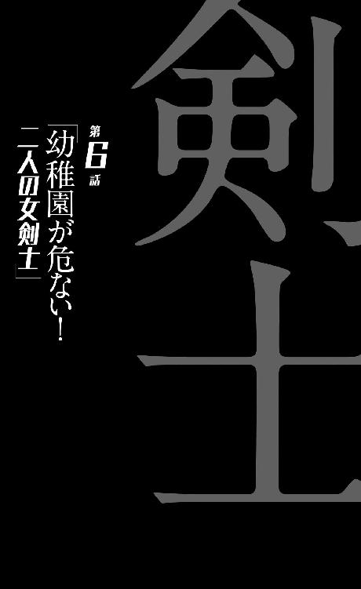
0
昼寝をして悪夢を見るのは割に合わない。
1
『蒟蒻』。
その名の由来はいわゆるよく知られている、食材としての蒟蒻ではない──あの柔らかい食べ物とはなんの関係もない。
真の由来は花の名である。花の名が由来と言えば、それはロマンチックなようではあるけれど、詳しく聞いてしまえばロマンスとは程遠い──だって、そのスマトラオオコンニャクという花は、日本では死体花と呼ばれているのだから。
2
「たぶん苗字の『花屋』からの連想だとは思うんだけど、でも女の子につけるようなニックネームじゃないよねえ。『世界一醜い植物』なんだってさ。世界一って。あのラフレシアを凌駕する悪評っていうのは、よっぽどだと思わない？ でもこれがまたそう言われるのもわかるってくらい変わった植物というか、変な植物でさ。京都タワーが生き物だったらこう、みたいなデザイン。私はそこまで醜いとは思わないけれど、まあ、びっくりするような形をしているのは確かだよ。そんでもって七年に一回しか咲かないんだって。これに較べたら、有名なセミの寿命の話なんて、まるでありがたみがなくなるわよねえ。あっはっは」
快活にぺらぺらと、まくし立てるように喋る花屋瀟。楽しそうで、久し振りになる友人との再会を、心から楽しんでいるという風である。
化けて出たわけではないらしい、それに悪い冗談というわけでもないらしいと、冷静に空々は受け止める──なるほど、これは、悪い現実らしい。
現実ならば受け止められる。
いや、受け止めるも何も、関係者が全員死んだ、殺されたと思っていた空々にとって、たとえ一人でも、それが生き残っていたと言うのならば、それは喜ぶべきことなのかもしれない。
互いを高め合うライバル関係にあった花屋が、こうして健在であったことが嬉しくないと言えば、実際、噓になる──ただ、こういう形なのはどうなのだろうと、彼としては思わざるを得ない。いや、彼だからこそこれくらい冷静に受け止められているのであって、常人ならばこの場面で失神してもおかしくないような現実だっただろう。
だって、生きていたは生きていたにしても。
それは地球撲滅軍の一人として生きていたのであって──それも、空々よりも先に軍に属していて、副室長なんて役職まで持っていて、その上で『寸刻み』や『火達磨』の手から漏れていた関係者を殺したのが、他ならぬその『互いを高め合うライバル』だったというのでは──他がどうあっても手放しで喜べるはずもない。
殺されたと思っていた友人が、むしろ殺していた。
なんだか出来の悪いミステリー小説の登場人物にでもなった気分だった──入れ替わりトリックとか死者の蘇りトリックとかを『かまされた』屋敷の住人の気持ちはこんな感じなのだろうかと思った。これからは推理小説を、まったく違った気分で読めそうだと思った。
思ったからなんだと言うのか。
「いやでもすごいね、空々。私はびっくりしちゃったよ。あの『火達磨』をぶっ倒すだなんてさ──私もね、いつかあいつとは決着をつけようとは思ってたんだけど、なかなかその機会がなくってさ。そうこうしているうちにお前にぴょーんと先を越されちゃったってわけだけど、うん、お前に先を越されるんだったら、そんなに悔しくはないな。むしろ嬉しいくらい。やっぱ私としても、ライバルがあんないっちゃってる放火魔っていうのは不本意だったからさー。好敵手には尊敬できる奴であって欲しいじゃん。そうでないと日々に張り合いがないし、どっかで満足しちゃうからさ。人格的に尊敬できない相手が敵ってほど、がっかりだよねー」
まくし立てる花屋のほうには、しかしいわゆるわだかまりのようなものはまったく感じられない──普通に、そして本当に、懐かしい友達と話せるのが嬉しいという風だった。
「実を言うと私、あんたを助けに来たはずだったんだよね──『火達磨』とついに決着をつけられるんだと思ったんだけどね。あー、でももうその機会はないだろうな。お前に先を越されたからっていうのもそうだけれど、あいつ、もうたぶん戦えないしね。死んでもおかしくないくらいの大怪我で、今でも集中治療室だって言うんだから。よくて半身不随ってとこでしょ。こうなっちゃ血も抜かれちゃうだろうし──まあいい気味だよ。で、ねね、空々。あいつをどうやって倒したの？ 私、すっごく気になってるんだけど。教えてくれない？」
「......、は、花屋」
ようやく口を利けた。戸惑いで喋れなかったと言うより、饒舌にまくし立てる花屋の言葉に、ここまで言葉を挟む隙間がなかったというのが本当のところだ。
それでもなんとか言えたのは、剣藤がお茶を運んできたので、さすがに花屋が喋るのを一旦止めたからだった。いつか牡蠣垣と落雁が来たときと違って、剣藤はそのまま去っていくことはなく、そのままテーブルについた。
「そらからくん。ごはんは後にする？ 話を先にして」
気を遣うように言ってくる。どうやらまだ空々と花屋の関係をつかみかねている風もある──花屋は一体どういう風に話したのだろうか？ 彼女が空々の『漏れた関係者』を殺した犯人だということは、最初からわかっているのだろうけれど......。
「い、いえ......おなかが減ってるんで、用意してもらえるととても助かります。花屋、お前も食べるだろ？」
「あ、うーん。いただきます」
遠慮せずに剣藤にそう言う彼女だった。そういう図々しさは、確かに空々が知る通りの花屋である。話すのはあの日以来三週間ぶりだが、何も変わったところは見受けられない。
少なくとも。
彼の知る『花屋瀟』がすべて演技だったとは思えない──あれがすべて偽装、あるいは──
──左在存。
思えない、『擬態』だったとは。
「羨ましいなー、空々。年上のおねーさんと同棲生活なんて。少年の夢だよね。ひゅーひゅー」
「......うん、まあ」
否定するのは、それはそれで剣藤に失礼という気がしたので、曖昧に頷くことで、空々は花屋の言葉を流した。思えば空々と花屋との会話は、昔からずっとこうだった気もする。お調子者の花屋を、空々が受け流すというような──年齢や性別のことを考えればそれは逆であるべきというような気もするけれど、少なくとも空々にとっては、それは心地よい距離感だったように思う。
少年野球で切磋琢磨した間柄。花屋がいたから、今の空々がいるのは間違いなく──と、そこまで考えたところで、空々は閃いた。疲れた頭で閃いた。
「ねえ、花屋」
剣藤がキッチンに、食事の用意に行ったのを見届けてから、空々は言う。
「ひょっとして、野球をやめたのって、地球撲滅軍に入るため？」
「ん？ いや、違うけど。私、野球やめる前から軍人だし......、野球しながらでもできただろうし。ああでも、原因のひとつではあったかな」
「............？」
野球をしながらでもできただろうし、という言葉に引っかかった──何か不自然なものを感じた。けれど、それがどう不自然なのか、瞬時にはわからなかった。
なんだろう？ どういうことだろう？ 何が違和感なのだ──駄目だ、頭がもう、ものを考えたくなくなっている。これは現実を見る見ないの問題ではない、困憊しているのだ。なんとか電池切れを起こさずにこうして活動していられるのは、剣藤の作る料理食べたさだけなのだ。
......いやいや、それが誰の作った料理なのかは、別に重要ではないはずだが。
「ああ......そうか、わかった」
「ん？」
「花屋。お前、学校に通ってるってことだよな？」
それに気付いたのは、空々が特に鋭かったからというわけではなく、ただのたまたまだ──だけど、考えたらわかることでもある。そもそも『蒟蒻』は、剣藤よりも前に軍に属していたのだ。四年前──彼女はまだ小学生である。
野球云々の問題ではない──あろうことか彼女は学校さえ、やめていないのだから。通いながら軍人なのだから。
しかしそれはできることなのか？
地球撲滅軍に属しながら、中学生でもあるということは──
「あ、うん。まあ実務は大体、『茶飲み話』の仕事だし──私は副室長っていっても、これ名誉職みたいなものだからね」
「室長がお飾りで副室長が名誉職......？ そんなことってあるのか？」
「まあいいじゃない。いいこともあるわけじゃない。ほら、私が世間と未だつながりを持っているお陰で、空々だって地球撲滅軍に入れたわけじゃない」
「え......どういうこと？」
「だって、空々に飢皿木先生を紹介したのって、私でしょ？ いや私はね、昔から空々にはヒーローの資格があるって思ってたんだよ。仲間になってほしいって思ってたんだよ。だからなんとか、軍にお前を紹介したかったんだけど、なかなかうまい機会がなくてさ。変に話を持ってくと、機密漏洩になっちゃうし。だからお前が私に、合宿での出来事を相談してくれたのはラッキーだったよ」
あっけらかんと言う彼女には、まるっきり罪の意識というものがなさそうだった──むしろ『驚いたでしょ？』というような、サプライズを仕掛けた者の笑みを浮かべている。
こういうサプライズが好きな奴でも、確かにあった──だが誕生日を祝われるならともかく、それが原因で人生が一変するほどの驚きを提供されても困惑するしかない。
怒るべきなのだろうか、と思った。激昂して、『お前のせいで僕の人生はこんな滅茶苦茶になったのか』と責め立てるべきだろうか──と思ったけれど、しかしそんなことを逡巡する時点で、自分は怒っても激昂してもいないということだ。
剣藤がいなければ、あるいはそうしたかもしれなかったけれど、泣きじゃくる演技で彼女を騙したことを反省したばかりだったので、結局空々はそうはせず、ただ、
「飢皿木先生って......飢皿木先生のこと？ 飢皿木診療所の......」
と訊いた。
「つまりあの人も地球撲滅軍に属しているってこと......？」
「ううん。属してはいない。飢皿木先生は協力者だよ──軍人でありながら世間と繫がっているのは、まあ私の知る限り、私くらいのものだね......へへ、ちょっと自慢」
にかっと笑って、花屋は言うのだった。飢皿木博士と花屋との『馴れ初め』は、確か『大いなる悲鳴』後のことだったはず──スクールカウンセラーとして学校を訪れた飢皿木博士に、生徒だった花屋が相談したという形だったと聞いたような......、あれはどこまで本当だったのだろう？
「じゃあ飢皿木先生は、今もあそこで診療所を経営しているってことか......ふうん」
会いにいけるかなあ、とか、会いにいこうかなあ、とか、漠然と考えた。ことによると、花屋のことをそう思っていたように、ひょっとすると直前に交際を持った飢皿木博士も殺されているのではないかと思っていたけれど、生きているというのなら。
飢皿木博士が地球撲滅軍に進言したせいで、今の空々の現状があるのだが、しかし『それはそれとして』、彼が空々の人間性を看破し、気持ちを楽にしてくれたというのは確かなのだから。
このように、花屋瀟や飢皿木博士といった、自分を苦境──どころか地獄に落とし込み、のみならずそのために関係者全員の虐殺という目に遭わされておきながら、『それはそれとできる』空々の性格は、かなり理解されがたいものではあるだろう。
だが、今の彼の心境をひと言で説明するとこういうことになる。
『済んでしまったことは仕方ない』。
殺された家族友人、知人が今更生き返るわけではなく、ならば花屋や飢皿木博士という、好ましく思っていた知り合いが生きていたことは喜ぶべき──そんなことを、彼は本気で考えているのである。
「本当はもっと早く会いに来たかったんだけどさ。それは『茶飲み話』に禁じられていて。いや、それが解かれたから、会いに来たんだけどねー」
「禁じられて......どうして？」
「さあ。嫉妬じゃないのかな？ 空々がモテモテだから」
と花屋は答えたが、これはとぼけているんだろうなあ、と思った。言えないことがあるとき、言いたくないことがあるときの花屋は、こんな風にとぼけるのだ。
ならば追及しないのが、友達のルール。
彼はそんなことを思っていた──空々少年が、かつてどれほど多くの友達がいても、誰とも一定以上は仲良くなれなかったのは、たぶん、それゆえだった。
実際、なぜ花屋が今まで、『知人』である空々に会いに来れなかったか、『茶飲み話』にそれを禁じられていたのかと言えば、それは『蒟蒻』として空々の関係者の殺害に一役買い、どころかその虐殺劇のプロデューサーでさえあった彼女と会うことは、ヒーローにとって好ましくないのではないかという読みがあったから──ではない。
それを言うなら、家族を斬り殺した剣藤と同棲させるほうがよっぽど危険だろう。今まさにそういう反応を見せているように、それを流せてしまう空々だからこそ、そんな目に遭ったのだから。
『茶飲み話』が空々と花屋の面会を禁じる理由として彼女に告げたのは、『単純に彼と彼女が旧知の間柄だったから』だ──即ち、どうあれ空々の意識を、一旦『これまでの世界』から切り離したかったというのが主張だった。新しいマンションという住処を与えたのも、そのためなのだから。
そういう理由があった以上、だから本来は一年、あるいはそれ以上の期間に亘って、空々は花屋に会えないはずだった──彼女が殺されたものだと思って生活を続けるはずだった。
だが、よりにもよって地球撲滅軍一二を争う危険人物、『火達磨』と空々が戦闘になるという緊急事態に、その『面会禁止』は解かれたのだ──やむなくではあったが、解かれたのだ。知らせを受けて剣藤が日本に取って返したように、牡蠣垣は牡蠣垣で、会議をサボタージュこそしなかったものの、本部に電話をして、手を打ったのだ。
即ち花屋──『蒟蒻』に出動命令を出したのである。それは彼にしてみれば苦渋の決断だったが、他に手がなかった。
結果として花屋が現場に到着する前に、ヒーローとアンチヒーローとの戦いは終了し、しかも意外な決着がついてしまっていたので、いわゆる救世主の出番はなかったわけだが......、解かれた『面会禁止』が、その日のうちに再度発令されなかったのをいいことに（牡蠣垣としては、隙を突かれた形だ）、彼女は旧友に会いに来たということなのだった。
花屋がそんな事情を、ここで説明せず「さあ」ととぼけたのは、牡蠣垣──上司の隙を突くという、グレーゾーンな行為を取ったからというのもあったが、実のところ、空々から友情を疑われたくなかったからという気持ちのほうが強い。
上司に面会禁止にされた程度で自分に会いに来ないのかと、まあ空々はそんな風に責めたりはしないだろうけど、それでもそう思われるかもしれないことが花屋は嫌だった──らしいのである。
驚くことにこの少女。この中学二年生の、十四歳の少女。
年下の友人をこの状況に追い込む引き金を引いておきながら──今現在、いまだまったく、彼との友情を疑っていないのである。
「いやー、ともあれ会えてよかったよかった。それに空々が無事でよかった。このままなんとかね、またなし崩し的に仲良くしていこうよ。私さー、実は中学校にあがってから、お前となかなか遊べなくなったの、寂しかったんだよねー」
「野球を続けてたら、会えたかもしれないのに」
「野球より」
と、花屋は言う。
「人類を救うほうが、魅力的だよ」
「............」
原因のひとつ、というのはそういう意味だったのだろうか？
その言葉は、軽く発された分だけ、真面目な気持ちであるように思われた。『茶飲み話』や『寸刻み』、『再開発』と同じように──彼女は地球に敵対している。
決して、今空々がそうしているように。
仕方なく──生き残るために、この組織に属しているわけではない。
それがわかった。
ひょっとすると、という期待は、実のところなかったわけではないのだが......、まあそれでがっかりするほうが筋違いなんだろうな、と思った。在存のように、花屋が自分に逃亡の誘いをかけてきたらどうしよう、などと、いらぬ心配をしてしまっただけのことだ。
何も感じない。
「ご飯の用意ができたよ。たっぷり食べてね」
していると、剣藤がテーブルに帰ってきた。そして三人分の食事を手際よく並べていく。なんとなくだが、三週間前よりも剣藤は、料理も含めた、家事のスキルがアップしているように思う。
不思議だった。
そりゃあ三週間、家事に限らず、ずっと一事をやっていれば、誰だってなんだって成長はするのだが、成長期の真っ只中にある空々には逆に、『人間が成長する』という現象が、うまく自分の中に取り入れられないのだった。
「いただきます」
「いただきまーす！」
「いただきます」
三人ともそう言って、食事が開始される。作った本人である剣藤も『召し上がれ』ではなく、そう言った。つまりそれは食材に対する言葉なのだった。
怪人を殺し、場合によっては人を殺し。
共に戦う仲間でさえ、再起不能まで落としたのに。
そんな彼らでも、動植物の命には、『いただきます』と言う。
3
本当に、機会を逃さず空々に会いに来ただけだったようで、花屋は夕ご飯を食べて帰っていった。いや、帰る前に、
「洗いものくらいはさせてください」
と言って、食器を洗っていた。頑なに、空々にはキッチンに立ち入らせない剣藤ではあるが、しかし名誉職とは言っていたものの、立場的には副室長であり、つまり上司であるはずの花屋に皿を洗わせることについては、そんなに抵抗がないようだった。
案外そのあたり、フレキシブルなのかもしれない。
「改めてお疲れ様、そらからくん」
と、剣藤は、花屋が帰ったあとでそう言った。
「色々あって疲れたでしょ。お風呂も用意できてるから、ちゃっと入って、今日はもう寝ちゃいなよ」
「......はい、わかりました」
そう頷いて、空々は風呂に向かった。正直な気持ちを言えば、剣藤と、もっと在存の──『狼ちゃん』の話をしなくてはならないと思っているのだが、剣藤のほうが、無言のうちにそれを拒否しているように思われた。
既に聞いている、と言っていた。
どこまで、どういう風に聞いているのか、その言葉だけではわからなかったけれど──確かなことがひとつあるとすれば、夕食を食べているとき、それを部屋の脇で見守る一匹の犬、一人の少女は、もういなかったというそれだけのことだった。
それだけで、慰めの言葉などあるはずもない。
そもそも在存は、空々の代わりに死んだようなものなのだ──彼ははっきりとそう思っているわけではないが、『火達磨』が一番最初、運転席を狙っていたのではないかという可能性には、ちゃんと至っている。
それに、空々が彼女の逃亡を手伝おうとしなければこんなことにはなっていなかったかも──いや、しなければ、単純に在存が一人で逃げ出して、同じように『火達磨』に焼かれただけだったのかもしれないが。
所詮自分ひとりの行動で変えられる未来など、限られているということだろうか──選べるのは結局、在存がそうだったように、死に方くらいなのかもしれない。
「あ......そうだ」
風呂に入ったところで思い出した。厳密に言うと、風呂に入る前、脱衣するときに思い出したのだ──右手首の首輪を見て、だ。最初は引っ掛けているだけだったが、今はバンドを調整して、時計のようにぴったり巻いている。落とす心配はない。
『共鳴環』と言っていた。
そんな名前の支給物なのだと──結局今に至って、このアイテムの使いかたはわからずじまいだ。どさくさにまぎれて持って帰ってきたこれは、確かにこのまま、空々が持ち続けるのがいいのだろう。剣藤の次に、持っておくべき人間がいるとしたら、それは自分だと思う。
だが、持つのであればやはり使いかたは知っておきたいと思うのは、決して貧乏性ではないはず。『狼ちゃん』が相棒であった剣藤なら、たぶん使いかたを知っているだろうから、訊かなければいけなかったのだが......、まあしかし、それは、焦って訊く必要はないのかもしれない。その話をすれば、どうしても在存の話になるのは避けられないだろうし......。
ほとぼりが冷めてからでもいいだろう、と。
彼はそう思った。
つい昨日、意識的にはまだ今日くらいの時間に、命のやり取りをしたばかりなのに──ほとぼりが冷めるのを待つこの余裕も、彼の性格に大きく起因するものではあったけれど、さすがにこの件については、彼は後日、強く後悔することになる。
このとき、そしてこのあとも、慣れない気遣い、あるいは慣れたものである行き過ぎた気遣いの結果、彼は最後まで、『共鳴環』の使いかたを、剣藤からは聞かなかった──それは間違いなく大きな過失で、ややきつめのスパイスを利かせた言いかたをするならば、このとき彼の選んだ『先延ばし』という行動は、大きく未来を変えてしまった。
剣藤は剣藤で、空々は既に在存から、あるいは軍の人間から、その首輪の使いかたを聞いているだろうという風に思い込んでいたので──自分から質問しなければ、剣藤がそれを教えてくれることはなかったというのに。
ヒーローであるという自覚が、まだ彼には育っていなかった。
ヒーローは。
活動してこそなんぼなのに──活動してこそ活躍なのに。
4
それは本来、起こらないことだった──起こりようのないことだった。だが、構造上起こりえないことや、確率上起こらないことであっても、どうあってもいつだってケアレスミスは起こりうる。百戦練磨の『火達磨』が、素人ヒーロー空々空に負けたのもまた、ある種のケアレスミスであると言えよう。一説によると、人間が『ミス』をする割合は平均して百回に一回だと言う。
この夜、空々空は『ミス』をし、そして剣藤犬个もまた『ミス』をした──だから、それは一万分の一の確率の出来事だったということもできる。まあ、一万分の一くらいの確率なら、二人の同棲生活がいつまでも続いていればいずれは起こったと言うこともできるのかもしれなかったが、しかし空々空がぐったり疲れている今夜だから、そして剣藤犬个が『狼ちゃん』を失った今夜だからそうなったのだと思うと、やはりそれは、本来ならば起こりえないことだったのだろう。
「あ──あ」
と。
そんな悲鳴で、真夜中、空々は目を覚ました。こうも疲れていたら朝まで絶対に起きられないだろうと思っていたので、真っ暗な中意識が戻ったのは意外で、一瞬、今が何時かわからなかった。いや──それどころではなかった。
「あ──あああああ、ああああああああアアアアアアアアアああああああああああああああああああああああああ、うわあああああ、ああああああああああああああああああああああああああああああああああああ！」
最初、それにぞくりとした。いや、これは空々少年が特に臆病だとか、そういうことではない──現時点で地球に生きている人類の中で、予想外の悲鳴が聞こえたときに身構えない人間はいないだろう。
『大いなる悲鳴』は全員が経験した悲劇なのだ。
半年前、それで人類の三分の一が死滅したのだから──しかし、その悲鳴は様子が違った。それは地球の悲鳴ではなく、人間の悲鳴だった。しかもすぐ近くから聞こえてくるものだった。
「剣藤さん......？」
悲鳴で人物を特定するのは簡単ではないだろうが、しかし直感的に、空々はそう思った。
その直感は正しく、悲鳴は正しく剣藤のものだった──本来その悲鳴は、空々の耳までは届かないはずだった。しかしこの日、疲れていた空々は、風呂を上がってから、倒れ込むようにベッドに沈んだ。その際、ドアをきっちり閉めなかったのだ。本人としては閉めたつもりだったが、隙間が開いてしまっていた。
そして剣藤のほうも同じように、ドアを閉めずに眠りについていた。これもまた疲労、それも精神的疲労によるものだった。空々の前では虚勢を張って、それなりにしゃんとしていた彼女ではあったが、しかし左在存──『狼ちゃん』を失ったショックは、空々の想像以上に、彼女の中では大きなものだったのだ。
二人が二人とも迂闊に、ドアを閉め切らずに眠りについたという偶然、しかし考えてみれば必然的な偶然が、この防音の行き届いたマンションにおいて、剣藤犬个の悲鳴が廊下を経由して空々空に届くという、出来事を招いたのだった──空々は。
当然ながら、何かあったのか、何があったんだろうと、ベッドから降りて、隣の部屋に向かった。以前、ノックをして、返事がなかったときにドアを開けてしまい、ハプニングに遭遇したということがあったのを決して忘れたわけではなかったけれど、今回はノックどころではない。
今もなお、部屋から悲鳴は続いているのだ。
空々は緊急事態だと判断し、体当たりをするようにドアを開けた。
「剣藤さん！」
と、ベッドの上で魘されている──掛け布団を抱くようにして魘されている剣藤に声をかける。が、しかし、そんな声は剣藤の悲鳴にかき消されてしまう。
「うわああああああああああああああああああああっ！」
と、彼女はもんどりうつように転がる。ベッドから転がり落ちそうで、見ていて危うい──まるで何かに取り憑かれているようだとさえ思った。空々は一旦ドアのところまで戻って、電気のスイッチを入れる。部屋が明るくなれば目を覚ますんじゃないのかと思ったのだ。けれどそんなことはまったくなかった。
覚醒する気配などない。光も、音も、まったく彼女には届かないようだった──
「剣藤さん！」
と、空々はやむなく、剣藤の身体を揺すりにかかった。あまり乱暴に起こしたくはなかったが、しかし現状が既に、かなり暴力的なのだ──今のまま放置しておくのが危険でないはずもない。
「う──あああ！」
揺り起こそうとする空々をうるさそうに、剣藤が払いのけにかかる──指が顔面に当たった。爪で引っかかれる形になり、結構な痛みを覚えた。しかしそれにも構わず、空々は剣藤の身体を揺する。
「剣藤さん！ 剣藤さん！ 剣藤さん！ 起きてください、剣藤さん──剣藤さん！」
それでもまだ遠慮気味だったのを、意を決して空々は、強い力で揺さぶった──そうすることでようやく、剣藤は覚醒した。サウナにでも入ったかのようにびっしょりと汗をかいていて、彼女は、ぼんやりとした目で、今までの狂乱が噓だったかのように、
「......そらからくん？」
と、ゆるい口調で、彼の名を呼んだ。
「もう朝......？ や、違う......あ」
とは言え、目覚めて数秒で、大体の状況は察したらしい。電気のついている部屋と、時計の示す時間と、そして、引っかかれ、額から血を流している同居人の姿。
「ご......ごめん。ごめん......、それ......、私がやったんだよね......」
「大丈夫です」
実際はそれほど大丈夫ではなかった。翌日、部屋に軍医に来てもらって、空々はこの怪我で二針縫うことになるのだが、それでもそう強がった。自分が気遣われている場合ではない。それよりも訊きたかった。
「何があったんですか......？ 嫌な夢でも見たんですか？」
嫌な夢を見たくらいであんな取り乱しかたはしないだろうと思いつつも、空々はまあ、一般的には妥当であろう推測を口にする。
「ち......違うの。その......よくあることなんだ。私には......夜、上手に寝られないのは......」
もしも状況が違えば、剣藤はそれを説明しようとはしなかっただろう。あまり積極的に、進んで話したいようなことではない。空々の面倒を見るという立場のこともあり、逆に牡蠣垣がなんと言おうと彼女自身には『先輩』であるという意識も根強くあり、空々の前で、あまり弱みを見せたくないという気持ち、悪く言えば見栄のようなものが剣藤には強くある。
しかし、今空々は、十三歳の少年は、剣藤の手によって額から血を流したまま、それを拭おうともせずに彼女を見ているのだった──ここで何も説明しないことは彼女にはできなかった。
「仕事をした夜とかは、特にね......、今日は、そういうわけじゃなかったけれど......、『狼ちゃん』がいなくなったから」
「............」
ペットロス症候群。
心配した通りと言えば心配した通りだったが、しかし、その実情を目撃し、体験してしまえば、その言葉のニュアンスはあまりに軽過ぎるように思えた。
ペットロスというが、失ったのは家族なのだ。
剣藤にしてみれば、二度目の──喪失。
しかも両方『火達磨』にやられている。フラッシュバックがあって当然だ。
あの取り乱しよう、魘されよう──大袈裟に言えば、あのまま死んでしまいそうなくらいだった。いや、決して大袈裟ではあるまい。あんな睡眠状態が続いて、体力が持つとは思えない。
「......大丈夫なんですか」
我ながら馬鹿みたいな質問だ、と思いつつ、空々は訊いた。
「病院に行ったほうが......」
飢皿木博士でも紹介するつもりだろうか僕は、と思いながら言葉をそう繫いでみると、剣藤は黙って首を振った。
「病院は行けない。いけない。戦えなくなる」
「............」
「私は人類を守りたいの。地球と戦いたいの。地球をやっつけたいの」
剣藤はぶつぶつと呟くように言った。それは自分に言い聞かせているようでもあった。
「今でも私は、ヒーローになりたいんだよ」
「でも......」
何か言おうとしたけれど、何も言えなかった。ヒーロー。今、空々はそういう扱いをされてはいるけれど、それは彼にとって不本意なことであり──ただ、生きる上では厚遇されて、助かっているというくらいだ。家族を虐殺される以前より生活水準が上がっていることは、少なくとも確かだ、くらいの認識はある。だけどそれだけだ。
なんだろう。
何が彼女を、そこまで戦いに駆り立てるのだろう。
空々には理解できなかった──ただ、理解したいとも思った。
僕がそんなこと思うなんて。
「精神ブロック剤......を、飲むというのは？」
「あんまり飲み過ぎると、あれも効かなくなっちゃうから......、今でも結構、効果が怪しくなってきてて......」
ふふふ、と剣藤は力なく笑んだ。年下の少年に心配をかけている現状がおかしくなってしまったのかもしれない。つまり自虐的な微笑みだったのかも。
「『狼ちゃん』がいればよかったんだけどね......」
そんな風に口が滑ったのも、疲れゆえだったのか。
剣藤は抱きしめたままだった掛け布団を離しつつ、言った。
「どうしてかわからないけど、不思議でね。魘されそうな夜は『狼ちゃん』を抱き締めて寝れば、落ち着いたものだったよ。だけどその『狼ちゃん』が、今日からは魘される原因なんだもんね......」
「............」
アニマルセラピーがペットロス症候群に連鎖するなんて、考えてみれば酷いマッチポンプだ。
その上、『狼ちゃん』はアニマルではなく、ペットでもなく。
「『狼ちゃん』は人間だった......」
剣藤は呟く。言葉に悲痛さが含まれていた。
「私はそれを、ずっと犬みたいに育てていた......酷いことをしていた。きっとあの子、私のことをとっても恨んでたよね」
「それは違います、剣藤さん」
言った。酷いことをしていたのはその通りだと思う。しかし、その捉えかたは違う。自分を何かの主犯のように考えている、その捉えかたは。そう思ったから、空々は言った。
「在存ちゃん......『狼ちゃん』と僕は話しましたけれど、少なくともあの子は、あなたを恨んではいませんでした。自分を実験台にした地球撲滅軍に対する怒り、憤り、恨みつらみみたいなものはあったみたいですけれど......、あなたとの生活それ自体に、彼女は苦痛を覚えてはいませんでした。『狼ちゃん』があなたのことを話すときは、そう、親しみがあった」
そして付け加えた。
「あなたが用意してくれる牛乳は、好きだったみたいです」
これは若干恣意的というか、いくらか事実を捻じ曲げて伝えているような気もしたけれど、それくらいのことは、在存は許してくれるだろうと勝手に空々は思った。
少なくとも彼女が、あんな飼われかたをしていながらも、不思議と剣藤を好ましく思っていたことだけは確かだろうから。
「そうかな......だったら本当にいいんだけど。でも、そんな簡単に、折り合いがつくことじゃないよね......それに、そういうのもあるけど、そうじゃなくて普通に」
剣藤は静かに言う。
「私は『狼ちゃん』が死んだことが悲しい」
「............」
正直言って、それは空々にはわからない感性だった。だからやっぱり妬ましくもあった──在存の死を、ちゃんと悲しめる剣藤が。逆にここで、剣藤が悲しみを見せなければ、悲しめないことに苦脳する空々はそれはそれで嫉妬したのだろうから、思えば随分勝手なものだ。
「『狼ちゃん』がいないと、いつもこうなんですか」
「いや、だからいつもじゃないよ......、こんなこといつもだったら、死んじゃうよ。でも、何かあった日は、大体だけどね」
「こんなのでしっかり休めるんですか？」
「うん、まあ......、体調がしんどいときは、逆に寝ないなんてこともあるかな。寝ると疲れちゃうから......今日なんか、魘されるだろうなってわかってたんだけど、......つい寝ちゃった」
ぽすん、とさっきまで抱きしめていた、掛け布団を叩く。
「さすがに掛け布団じゃ、『狼ちゃん』の代わりにはなってくれないか。羽毛布団なんだけどねえ」
「......まあ、羽毛布団は、家鴨の羽ですからね」
間の抜けた受け答えで、本質にかすりもしていなかったが、それがよかったのか、剣藤には受けたようだった。彼女は表情を少し、自然にほころばせた。
「何かを抱きしめて寝ると、ぐっすり眠れることに気付いたのは、結構前のこと......『狼ちゃん』と一緒に暮らす前。『大いなる悲鳴』の直後だったし、ヒーロー失格を宣言されたあとだったし、いろいろ、不安だったのかな。浮き沈みって、人間を不安定にするよね。最初は『破壊丸』を抱いて寝てたんだけど。殺されるかもしれないって、怖かったから、武器を抱いて寝ようって思って。でもそうしたら、落ち着いて眠れることに気付いた。その前はずっと、精神ブロック剤を、身体に悪いとは思いつつも飲んでたんだけど、もう飲まなくてよくなった。そして起きているときの調子も、よくなったんだけどね......だけどそれは危険だからやめろって、『茶飲み話』に怒られて。そんなことをして、どんな誤作動が起きるかわからないからって」
「............」
誤作動が起こるようなものなのだろうか。空々が今、特に不自由もないのでつけっぱなしにしている首輪はどうなのだろう。寝るときは外したほうがよいのか？ しかし在存がそんなことをしていたとは思わないけれど。
「まあ実際に誤作動するかどうかはともかく、危ないって言われたら確かにそうだしね......、それからは色んなものを抱いて、試した。ものによっては全然効果がなかったりしたけど。ハードディスクレコーダーとかを抱いて寝たら、案外ぐっすり眠れたよ」
「ハードディスクレコーダー......？」
あのテレビを録画する奴か？
あまり、というか全然、抱いて寝るのに適した形とは思えないが。重さも、固さも、危険さも、真剣を抱いて寝るのと大差ない。精神の不安定ゆえの異常行動としても、少し行き過ぎている気がする。その割に、というかそれゆえに、変なリアリティがあって怖い。
「もっとも、それで筋肉痛になっちゃったんだけどね......、でも、『狼ちゃん』が来てくれて。可愛くて。試すっていう感覚じゃなかったな。一目見て、きっとこの子を抱いて寝れば、安らかに眠れると思ったんだ」
魘されることなく、眠れるとわかったんだ。
剣藤は懐かしむようにそう言った。
「そのために、軍は私に『狼ちゃん』を支給してくれたんじゃないかと思ったくらい──それは全然、的外れで、実際はただの実験だったわけだけど」
「そういう意図もあったのかもしれませんよ」
いつか思ったことを、空々は言う。少なくとも牡蠣垣が、ひいては軍が剣藤の症状を把握していたということであれば、ない話ではない──ただ、たとえそんな意図があったとしても、今となってはそれは逆効果だったと言わざるを得ないだろう。
今、その在存のことで、剣藤は魘されているのだから。
魘されるという感性が空々には、それにつけてもわからない。高熱剤を飲まされて魘されたというか、悪夢を見たことはあったけれど、空々は、家族が全員殺された夜にさえ、泣くこともなく熟睡したのである──そのとき、隣の部屋では、家族を全員殺した剣藤は、このように魘されていたのかと思うと、なんだかちぐはぐというか、すべてがかみ合ってないようにさえ感じた。
どっちのほうがまともなんだろうなあ。
家族を殺されても通常な少年と、少年の家族を殺して魘される少女と──否、そんなことは考えるまでもないと、空々は思考を打ち切った。
そんなの、どっちもまともじゃないに決まっている。
だけどそのどちらも、地球撲滅軍の中では『あり』であり、そして必要とされているのだった。半端に剣藤を心配するようなことを言って、彼女を病院に送ったとして──それで彼女が軍から居場所を失ってしまえば、その責任を取れる立場にある空々ではない。
「剣藤さん」
だからと言うわけではないが、じゃあどうしてなのかと訊かれてもわからないが、空々はこう言った。
「僕を抱いてもらえないですか」
「へ？ え、え？」
何を言われたのかわからないような顔をして、あっけに取られる剣藤に、空々は言葉を続ける。
「『狼ちゃん』の代わりに、僕を。そうすれば、魘されないかもしれないじゃないですか」
「......ああ、そういうこと」
びっくりした、と言う剣藤。
何にびっくりしたのか空々はわからなかったが、それに、自分が酷く的外れなことを言っているような気もしたけれど、しかし一度口火を切ってしまった以上、もうあとには引けなかった。ここに来て、「やっぱりなんでもないです」と引っ込むのは難しい。難しいというか、恥ずかしい。
「とても見てられないです。聞いてもいられない」
「だ、大丈夫だよ......心配しないで。......って言っても無理だとは思うけど、ほら、今日はうっかり、ドアを開けて寝ちゃったんだね、私。でもこれからは気をつけるから」
「それは根本的な問題解決にはなりません」
「ならないけど......」
「ドアが閉まっていようと、それで聞こえなかろうと、すぐ隣の部屋で剣藤さんが魘されているかもしれないと思ったら、僕も心配で寝つけませんよ」
本当にそうだろうか？
親が死んでも眠れる自分が、隣で他人が魘されているかもしれないという可能性を考えるくらいのことで、眠れなくなってしまうだろうか？ 相当怪しい。事実、在存が死んだこの夜も、彼は剣藤の悲鳴があるまで、ぐっすり眠っていた。だけど『もう済んでしまったこと』と『現在進行中のこと』の区別は、空々の中でもついているはずだ。
だからきっと心配するに違いないと、自分の中の人間らしさのようなものに期待する空々だった。
「そ、そう......じゃあ、私、もうひとつ隣の部屋に移るから」
「いやだから、それ、根本的な解決にまったくなってないんですって。隣の部屋が隣の隣の部屋になったからって、なんだって言うんですか」
「うん......そうだね」
自分の発言に自分でがっかりしたように、沈む剣藤。そんな頼りなげな姿を見ると、ますますほうっておけないと思ってしまい、空々は言葉を重ねた。
「僕を『狼ちゃん』だと思って、抱いて寝てください。そうすれば、解決します。すべてがうまくいくんです」
「......そらからくんは、『狼ちゃん』じゃないよ」
「じゃあ、『狼ちゃん』じゃなくてもいいです。なんでもいいですから、僕をペットだと思ってください」
ずいと、不退転の決意を示すように、空々は身を乗り出して。
「僕があなたの犬になります」
「............」
剣藤は言葉を失っていた。かつて見せたことのない空々の強硬な姿勢に圧倒されたのかもしれない。あるいは空々の、ある意味デリカシーに欠ける発言に絶句しただけかもしれない。知らなかったこととは言え、左在存という人間をペット扱い、犬扱いしてしまっていたことについて深い罪悪感を覚えている剣藤に対してその物言いは、やや残酷とさえ言えた。
だけど空々空という感性のズレた少年にとっては、現状、それが精一杯の誠意の示しかただったのだ。そして彼と三週間以上共に生活している剣藤には、それがよくわかっていた。
「ありがとう、そらからくん。きみがそんなことを言ってくれるのが、私はとても嬉しい。だけど駄目だよ、私はきみのお世話をするのが仕事なんだから。そんな風に、きみに面倒をかけることがあっちゃいけないんだ」
「面倒だなんて思いませんよ。もしも、自分のほうが立場が下だからと言って断ろうとしているんだったら、僕はじゃあ、その上の立場をもって、あなたに命令します。僕を抱いて寝て欲しいと命令します。もしそれで牡蠣垣さんが何か言うようであっても、それは、寂しがりやの子供が甘えてただけだと言えば、きっと通るでしょう」
「............」
寂しがりやの子供。
それはこの場合、むしろ剣藤のことを指しているようにさえ思われたが、しかし、そこまで言われれば、もう彼女に断る術はなかった。逆に言うと、そこまで言わせてしまった自分に、剣藤は酷く嫌気が差したらしかった。少なくともそんな気分のままで『二度寝』を試みたら、間違いなく、彼女はまた魘されることになるだろう──大きな悲鳴をあげることになるだろう。
色々限界なのも事実だった。
左在存のことだけではなく、色々と。
「わかった。来て」
「はい」
空々は電気を消すために一旦剣藤から離れ、部屋を暗くしてから、今度はドアをちゃんと閉めて、そして言われた通り、剣藤のところに戻った──剣藤は両腕を広げて、それを抱きとめた。
思えば死線をくぐって帰ってきて、玄関で抱きしめられてから、まだそんなに経っていない。二度目の抱擁だったが、行為を意識しているからか、一度目よりも畏まった感じになった。やはり空々のほうからは手を回せなかったけれど、その分剣藤が、強く空々を抱いているようだった。
「寝るよ」
「はい。おやすみなさい」
「おやすみ、そらからくん」
密着したまま横になり、二人は共に目を閉じた。
空々はすぐに熟睡し、剣藤も魘されることなく、健やかな眠りについたのだった。
5
起きると空々は一人だった。部屋の様子が一変していてびっくりしたが、すぐにここは自分の部屋ではなく、剣藤の部屋だということを思い出す。ああそうか、昨夜、剣藤さんの悲鳴が聞こえてきて、それから......と、ことの顚末を順次回想して、そして恥ずかしさに死にたくなってしまった。
随分無茶苦茶な、支離滅裂な行動を取ってしまった......、空々なりに剣藤のことを真剣に慮ってのことだったが、しかし剣藤は、そんな子供っぽさに付き合ってくれただけなのでは、と、目覚めから落ち込む最悪の朝だった。
......でも、少なくとも、一緒のベッドで眠りながらも、彼女の悲鳴に起こされることがなかったのは確かである。ならばきっと無意味ではなかったのだと信じたい。信じよう。
そう思って、なんとか空々は朝から襲い掛かってきた強烈な自意識を振り払った。大丈夫。在存の代わりをするのだと思えば、あいつの代わりをちゃんと務められたのなら、少しくらい恥ずかしい思いをするのも平気なはずなのだから。
「............」
それにしても、と思う。
時間的に、恐らくは先に起きて、朝食の準備に向かったのであろう剣藤のことを考えつつも、それにしても、と思う──どうして在存は、ああもあっさりと殺されてしまったのだろうか？
家に帰って、日常に戻って──そう、いまやこのマンション住まいが空々の日常だ──一晩たって、改めて向き合ってみると、彼女のあまりにも呆気ない死にかたに、疑問を覚える空々だった。
そりゃあ『火達磨』は確かに強敵だった──じかに向き合った空々が、ある意味誰よりもそれを理解している。運よく勝ちを拾えたが、振り返ってみると、それがどれくらい危険な行為だったのかがよくわかる。
だからまともに組み合っても、『火達磨』に『犬歯』は勝てなかったのだろうと思う──あっさりと、呆気なく──でなくとも、彼に狙われたなら、殺される殺されないにかかわらず、彼女の逃亡劇は失敗していたのだろうとは思う。剣藤の留守中に代わりの見張りがいたことに気付けなかった時点で彼女の負けだ。
しかしどうして、だからと言って、どうしてああも──『何かの手違い』みたいな感じで彼女が死んでしまったのかが、空々にとっては理解不能の出来事ではあった。
いくら考えてもわかるはずもないそんなことを、空々はそれでも考え続けていたが──いっそ、在存は何らかの理由があってあえて死を選んだとか、死んだと見せかけて（『擬態』？）実は生きているとか、あるいは展開が違って、明確に空々をかばって死んだのだとか、空々に手紙を残していたとか、そんな事情があれば、ひょっとしたら納得できるのかもしれない。あるいはそれこそ、彼女が遺した首輪で、『火達磨』に勝てていたとか──
だけど彼女は『ただ死んだ』。
そんなことは何もなく、死んだ。
結局この事実は空々にひとつの認識を与えた──『大いなる悲鳴』によって、理不尽に地球上の人類の三分の一がよくわからないままに淘汰されたように、この地球撲滅軍の中にあっても、人の生き死にはとても理不尽で、よくわからないものなのだという認識だ。
日常から切り離された世界の裏側みたいな場所でも、よくわからないまま人が死んだり、殺されたり、たまたま勝ったり、苦しんだり、再会したり、魘されたりする──抱き締められたりもする。
結局何も変わっていないのだと思った。世界は何も変わらない。
家族が死に、友人が死に、関係者がすべて殺されても、世界は世界であり──空々空は空々空。ヒーロー扱いされようとも、別人に生まれ変わったわけではない。
そういうことなんだと思った。
そんな地点で納得し、足を、考えを止めてしまうことはとても危険なのだが──すべてが同じで、『何も変わっていない』という結論は、今の空々にとってはとても魅力的で、抗いがたいものだった。
在存はただギャンブルに負けただけ──それはそれで、おそらくは一番正しい表現なのだが、だとすれば空々には、その敗因を考えておく必要はあっただろう。負けから学ばない者は、また負ける。それもまた、どの世界でも、表でも裏でも、共通のルールなのだから。
6
「言いたい気分のうちに言っておくね、そらからくん」
朝食中、いきなり剣藤は切り出してきた。もののついでのように。だから空々は、まさかそのあと、こんな台詞が続くとは思っておらず、さぞかし驚いたのだった。
「もしもそらからくんが、『狼ちゃん』みたいに逃げたら、私が殺すことになってるから」
「......はあ」
お茶を噴き出すというような、べたべたなリアクションこそ取らなかったものの、それはそのときたまたま口に何も含んでいなかったからであって、もしもそういうタイミングだったら、そんな結果になっていたかもしれなかった。そんなコントのような結果に。
「それはつまり、在存ちゃ......『狼ちゃん』を『火達磨』が殺したように、ですか」
「それは厳密に言うと違うかな。『火達磨』は、私の留守中に代理でそらからくんを見張っていただけだから──『茶飲み話』も『火達磨』も、『狼ちゃん』の正体は知らなかったんだから。知っていたら、少なくともその可能性を考えていたら、『茶飲み話』は『火達磨』を見張りにはつけなかったと思う。融通......というか、きみに対して手加減のきく『蒟蒻』がついていたんじゃないかな」
「『蒟蒻』......花屋ですか」
きみに対して、という言い方が気になった。それでは『蒟蒻』も、それほど融通がきかない奴のようだ。
「まあ、実際にこれからは、私の留守中は、彼女がそらからくんの『見張り』を担当するんだと思う......、そういう采配になるんだと思う。そう、私がこんな風に同居している理由の大きなひとつが、そらからくんの見張りなんだよ」
「............」
感想としては『どうしてわざわざそんなことを言うのか』だった。今まで黙っていたことなら、これからも黙っていればよいように思う──空々には、剣藤がどうしてそんなことを『言いたい気分』になったのかがわからなかった。
だからそのまま、特に工夫なく、自分で考えることもなく訊いた。
「どうしてわざわざそんなことを言うんですか？ どうしてそんなことを『言いたい気分』になったんですか？」
「お礼......かな。安らかな眠りをくれた、お礼。別に黙ってろって言われてないし......話したからどうなるってことでもないし。何より、そらからくんは、そんなこと、気にしなそうだしね」
剣藤は言う。なぜか照れくさそうだった。その心境は読みにくい、というかとても理解しにくいものだった。かろうじてわかったのは、昨日、空々が一緒に寝たことに対するお礼だったらしいという、冒頭のあたりだけだった。
「今だって、全然平気って顔をしてる。私に殺されるかもしれないのに」
「いや、だって僕、逃げませんし」
「逃げなくても、私の勘違いみたいなもので、殺されるかもしれないんだよ」
「勘違い......。まあ、そりゃああるでしょうけれど。でも、そんなことを言い出したら、人間、いつ死ぬかなんてわからないじゃないですか。僕の関係者だって、まさか僕と知り合いだったって理由だけで、死ぬことになるなんて思ってなかったでしょうし──まして『大いなる悲鳴』のことを思えば」
在存ちゃんだってなんで死んだかわからない。
空々にしてみても『火達磨』との戦いの中、何度命を落としてもおかしくなかった──だったら、剣藤が実はそんな任務を背負っていることがわかったところで、特に困ったことにはならない。
「むしろ安心という気もしますけれど......、剣藤さんなら、『火達磨』さんみたいに滅茶苦茶なことをしてこないと思いますし......」
家族を殺されて、また昨夜、あれだけ精神的に不安定なところを見ておきながら、飄々とこんなことが言えてしまう空々少年に、見る目があるのかどうかは、わからない。
怪人を見る目はあっても、人を見る目はあるのかどうか。
まあ較べる対象が『火達磨』なのであれば、誰だってマシに映るかもしれないが......。
「そう言ってもらえると助かるよ......、うん、気に病んじゃうからっていうのがあったんだ。後ろめたいからって」
「後ろめたいって」
「後ろめたいよ。だって、これからずっと、そらからくんが毎晩、私に抱き締められて寝てくれるっていうのに、私はこっそり、そらからくんのことを見張ってるだなんて」
「ま......」
毎晩？
これからずっと？
と、空々は息を吞む。あれ？ そんなことを言ったか？ 言った憶えはない。しかし裏返すと、今晩だけ、とか、一度切り、とか、そんな風に区切ることもしなかった。その辺の問題について、深い考えがあったわけではない。だが確かに、一度だけ、昨日だけ、安らかに眠ってもらったところで、それこそ『根本的解決』になっていない。『すべてがうまく』いっていない。魘されてから、そのたびに起こして、一緒に寝るのでは、手間がかかってしかたがない──ならば毎晩、抱かれて寝るのが一番効率的......なのか？
「どうせ見張るなら、堂々と見張っていたほうがいいって気もするしね......、そらからくんの場合。少なくとも、『火達磨』が見張っていると知ってたら、そらからくんも、『狼ちゃん』が逃げるのを止めていたでしょう？」
「......ええ。まあ......止められていたかどうかはわからないですけれど」
そもそもその気になれば、あの状況、在存は一人でだって逃げられていたかもしれないのだ──邪魔をすればきっと、空々を押しのけてでも、いっそ殺してでも、彼女はマンションを出て行っていただろう。
その後、それをただの『犬』と見ている『火達磨』が、彼女をどうしていたかは不明だが──案外『つまらない』と見逃していたかもしれない。そう考えると在存は、わざわざ空々という共犯者を作ることによって、賭けの分を悪くしたとも言えそうだった。
「もしもそらからくんが逃げたら」
剣藤は横目で、部屋の隅に立てかけてある竹刀袋を見た。『破壊丸』の入った竹刀袋だ。別にそこが、破壊丸を置く定位置ということではなく、部屋の中の常に目の届くところ、常に手の届くところにかの刀を置いておくのが、彼女のスタイルなのだった。
まあ抱いて眠るということはもうないにしたって、『破壊丸』は彼女にとって、携帯電話くらい身近なものなのだろうと、空々は思っている。
家族のときは『事後』だったし、一度くらいあれを振るっているところを見たいものだなあ、なんて願望を空々は抱かなくもないのだが──しかしこの不謹慎ともいえる、振るわれる対象についての配慮がまったくないこの願望は、遠からず叶えられることになる。
それはともかく、剣藤は視線を『破壊丸』から空々に戻した。
「私が殺す。これは絶対」
「............」
「滅茶苦茶なことはしないけど、仕事はする。私は『火達磨』ほど強力じゃないけれど、『火達磨』ほど大雑把でもない──そらからくんを殺すだけなら、私のほうがきっとうまくやれる。それがわかっていれば、そらからくんは逃げないよね？」
「......ええ、そうですね」
並々ならぬその迫力に、危うく反射的に反論しそうにもなってしまったが、ぎりぎりのところで踏みとどまり、同意を示した。ただ、その上で補足はしておくことにした。
あまりそんな風に思い込まれても困る。何が困るのかわからないけれど、困る。
「ただ、僕はまだ、地球撲滅軍の活動のすべてを、納得して動いているわけではないので......、それはそう思っていてください」
「......私はもうちょっと早く納得したけどね。まあそらからくんの場合、身内であるはずの『火達磨』に襲われたり、私も噂でしか知らなかった不明室と関わっちゃったりしたから、しょうがないか......」
剣藤はやれやれというようにそう言ったけれど、別にそういうことではないのだが、と思わなくはない空々だった。もっともこれ以上の議論は不毛という気もした。
もしも剣藤が、自分の立場を更に明確にすることによってストレスレスになるというのであれば、それはそれで好きにしてもらっていいだろう──別に空々にはそれを止める気はない、というか、もう聞いてしまったのだから仕方がない。
だから仮に問題があるとすれば、どうやら空々はこれから毎晩、剣藤に抱かれて眠ることになってしまったらしいということなのだが......まあそれもそれで自分から言い出したことだし、やっぱり仕方がないかと、そもそも元々その役目を担っていた左在存にしたって別に毎晩剣藤に抱かれて眠っていたわけではないはずだという事実に思い至る前に、空々は早々諦めてしまい、そこについては何も言わず、抗議をせず、食事を続けるのだった。
距離が縮まったのが、遠くなったのか。
関係がよくなったのか、悪くなったのか。
打ち解けたのか、こんがらがったのか。
よくわからない朝食だった。とは言え、そもそもよくわかる朝食なんて一度もなかったので、空々は大して気にもしなかった。
7
「会議を抜けたことで、剣藤さんが処罰されたりすることはないですよね？」
洗い物をしている剣藤に、テーブルから空々は訊いた。ついこの間まで、剣藤は洗い物をする前にドッグフードの準備をしていたのだが、その工程は今日から省かれることになる。まあいくら『犬』になるといっても、食事までそうするつもりはない。ひょっとすると僕の前にドッグフードが用意されるかも、という危惧を在存の正体を知らなかったときに、馬鹿馬鹿しいと思いながらも抱いていたこともあったので、実はそのことにはほっとしていた。
となると、次の心配事が頭をもたげてくる。改めて整理してみると、今の自分は心配事だらけだ。
「もしもそんなことになっていたら、とても不本意なんですけれど」
「大丈夫だよ。ちゃんと手続きを踏んで帰ってきたから......『茶飲み話』に話を通しておけば、大体大丈夫」
「そうですか......」
随分な信頼だ、と思うと同時に、自分が『茶飲み話』のことをほとんど何も知らないのだとも思った。わかっていることと言えば第九機動室の室長ということだけ──だからなんとなく偉いのだろうと思っていたが、不明室が行っている実験のことを知らされていなかったところを見ると、彼の組織内での立場がどうなのかは疑問だ。
地球撲滅軍内の組織樹形図が欲しいなあと思ったが、そんなものを入手するのは行為として危険過ぎることもわかっていた。第九機動室が、軍の中でどういう位置なのか──それは知らないほうが身のため。
だとしても、室長、直属の上司がどういう人間なのかは、知っておいたほうが、今後のためにいいのは確かだろう。立ち居振る舞いにかかわってくる部分だ。
「『茶飲み話』......牡蠣垣さんって、どんな人なんですか？」
「どんな人って......、あの通りの紳士だよ。たぶん、そらからくんが思っている通りの人。優雅で、紳士で、物腰柔らかで、......それで、紅茶が好きな人」
「紅茶......そう言えば、牡蠣垣さんと初めて会ったときも、紅茶を持ってましたね。あれ、でもあのときって......なんだかあの人、いきなり現れたみたいに見えたんですけれど......あれも何かのアイテムの力なんですか？」
首輪の機能を訊くのを先延ばしにしている癖に、空々は牡蠣垣のアイテムについての質問はした──この辺り、物事の後先の判断がついていない子供である。
「ああ、うん......存在を『感じにくく』するアイテムっていう感じかな」
「ふうん。あのティーポットが、ですか？」
「じゃなくて、中身かな......、薬膳というか......、健康緑茶というか......」
健康緑茶は絶対に違うと思ったが、つまり精神ブロック剤や高熱剤と同じ、内服薬ということのようだ。
ただ、その形態よりも、空々が引っかかったのは効用のほうだった──『存在を感じにくくする』、つまりそれは『気配を消す』というような意味なのだろうけれど、どうもそれは、在存が実験によって付与されていた『擬態』体質に近いものを感じる。
『犬に見える』のと『いなく見える』のとでは、まあ意味合いは全然違うのだろうけれど、根源的なところで、根本的なところで繫がっているような。
そう言えば、空々のボディスーツ『グロテスク』もまた、『姿を消す』ものだし──ひょっとして、地球撲滅軍の研究や開発は、そちら方面に偏っているのだろうか？
人間に完全に『擬態』する怪人『地球陣』を相手にしている以上、それは必然という気もするけれど......、なんだかその偏りようには、違和感を覚えなくもなかった。
はっきりとは意識をしなかったけれど、空々はこのとき、『茶飲み話』に対し、警戒心を持った。何の根拠もないし、何の証拠もないけれど、家族や関係者に実際に手を下した『寸刻み』、『蒟蒻』、それに『火達磨』よりも、『茶飲み話』のほうが危険だと思った。
酷い偏見である。
しかしそれは正しい。
「牡蠣垣さんと初めて会った日、スーツや靴が『血を弾いている』ように見えたんですけれど......、まるでバリアでも張ってるかのように。あれはじゃあ、紅茶の効果ではないんですね？」
「うん......それはスーツのほうの効果。私の剣道着の上位モデルって言うのかな......」
「なるほど。疑問は解けました......。剣藤さんをスカウトしたのが、牡蠣垣さんなんですよね？」
「そう......そういうことになるかな。まあ、私の家族を焼いたのは『火達磨』だけれど、牡蠣垣さんがいなければ私も焼かれていたかもしれない。そういう意味では恩人だよ。今でもたくさんお世話になってるし......でも、あんまり恩返しはできてないんだけどね。今回の件でも、わがまま言っちゃったし。私が怒られることはないけれど、『茶飲み話』は怒られるかも。こらって」
「............」
怒られるとしたらそんなものでは済まないだろうと思ったが、そんなところの議論を広げても意味がない。
「花屋をスカウトしたのも牡蠣垣さんですか？」
「んー。そう、だね......」
曖昧な返事だった。よく知らないのだろうか。
「でもあの子は、第九機動室を設立するときの立役者だったって話......。名誉職っていうのは、そういう意味だね。私と仕事がバッティングすることも、そんなにないし、あんまり誰かと組んで仕事をすることのない、一匹狼だよ」
「一匹狼」
あまりそれは、空々の持つ花屋瀟のイメージじゃない。『狼ちゃん』のイメージが強過ぎるのかもしれないが......。
「素直ないい子だ......とは思うよ。上司なのに、私のことも立ててくれるしね。ただ、少し素直ないい子過ぎて......、もっと歳相応でもいいと思うな。あ、これはそらからくんに当てこすりで言ってるわけじゃなくって」
「いや、別に僕、そんなことを思ってはいませんが......」
わざわざ注釈を付け加えられたことで疑わしくなってしまった。
「あいつはどんなアイテムを持ってるんです？ ああ、こういうことは本人に訊いたほうがいいですかね......」
あんまり質問をし過ぎるのも馴れ馴れしいかな、と思って、質問した直後に空々は退いた。一緒に寝たくらいのことでベタベタしてくる鬱陶しい子供だと思われたら嫌だという判断で。こういうところが可愛くない少年である。
「そうだね......、まあ本人に訊いたほうがいい、かな......、私だと、『蒟蒻』の本質的なところはうまく説明できないと思うし。気をつけていても、どうしても、私情が入っちゃいそうだしね」
「？」
私情？
「ただ、ひとつだけ言っておくと、『火達磨』に対抗しうる、唯一の戦力が『蒟蒻』だったんだと思っていい。『蒟蒻』がいたから、私達はぎりぎり、あの放火魔を押さえ込むことができていたんだって」
「......地球撲滅軍の中においては」
空々は、その言葉の意味を考えながら、言った。
「あまり年齢って意味がないんですね......」
「そうだね」
空々は言うまでもなくまだ十三歳だし、空々から見れば『年上のおねーさん』である剣藤も世間的には子供だし──花屋だって十四歳と言ったところだ。
『火達磨』だって年寄りというわけではなかった。
『犬歯』──左在存に至っては、九歳だった。
張本人である空々は、この事実を、地球撲滅軍は、『年齢と立場が関係ない』、年功序列で構成されていないある種健全な組織であるというような受け取りかたをしたが──しかしこれは客観的に見れば、まるっきり別の事実として映るだろう。
即ち。
地球撲滅軍においては、実際に前線に立ち、手を汚し、危険を冒しているのは──少年兵ばかりなのだと。
「まあ、そうは言っても、そらからくんはこれからも、なかなか『蒟蒻』と会うことはできないだろうけどね......昨日はあの子、隙をついてきみに会いに来ただけで、どうせまた、面会禁止の令が出るんだと思うし」
「ああ......そうでしょうね」
向こうから会いに来れないのなら、こちらから会いに行くという手がないわけではないのだが──幸い、通っている中学校はわかっているのだから、授業時間に訪ねていけばいい。いや、それは普通に迷惑か......。
別に花屋の生活に迷惑をかけたいわけではない。
「その話だと、現場で鉢合わせることも、そうないでしょうね」
「うん。......なに、そらからくん。そらからくんって、『蒟蒻』と付き合っていたの？」
いきなりそんなことを訊いてきた。洗い物をしている最中だったので、きっとたまたまだろうが、そのとき剣藤は泡にまみれた包丁を持っていた。それを見て少しぞっとする空々。
なんと刃物の似合う人なのだろうと思った。
「付き合うとか、ないですよ。野球のライバルだったんです、あいつ。小学生の頃、少年野球団で、ポジション争いをしてましてね......一個上の先輩でした」
「ポジション争いって、どこ？」
「ショートです」
「............？」
剣藤は首を傾げた。ショート、というポジションがぴんと来なかったらしい。まあピッチャーとかキャッチャーとか、そういうわかりやすいポジションではないから、野球に興味がない人間には、一番縁遠いポジションかもしれない。
空々も野球を始めたばかりの頃は『このポジション別にいらなくない？』と思ったものだ。ショートがいるなら、ファーストとセカンドの間にもうひとり欲しい、とも。
だから剣藤の、訊いておいてのそんな無知を責めるわけにもいかない。空々だって、いきなりランニングバックとか、アタックとか、リベロプレイヤーとか言われてもわけがわからない。
とは言え、一応の説明はしておくことにした。
「日本語では遊撃手って言うんですけれど」
「将棋で言えば桂馬みたいなものかな」
「うーん......そうです」
絶対に違うような気もしたが、案外的を外してはいないようにも思えたので、空々は頷いた。変則的なポジションという意味では、同じようなものかも──素人の直感は、意外と間違わない。もっとも、実際のショートは、セカンドの守りに入ることが多い。右利きのバッターが多い以上、打球はどうしても、一、二塁間に飛ぶことが多いから、少年野球においては、セカンドは向かってやや右寄りに守ることが多かったからだ。
「なんだかそらからくんらしいね。『蒟蒻』っぽいし」
「まあ最終的には、僕が負けたんですけどね......、結局、花屋が小学校を卒業するまで、僕はレギュラーを取れませんでした」
「ふふ」
剣藤はちょっとだけ微笑み、包丁についている泡を洗い落としにかかった。まだ手放していない。
「けれどそういう縁があったおかげで、そらからくんはヒーローになれるってわけだ。あの子のおかげで、軍にスカウトされたようなものなんだからね」
「ヒーロー......花屋は、ヒーローじゃないんですか？」
「違うね」
元ヒーロー候補としての、そこは矜持なのだろうか──力強く、それに即座に、剣藤はこの質問を却下した。
「あの子は、どちらかと言えば、『火達磨』側の人間だよ。だからこそ、あいつを抑えることができる唯一の人間だったんだ」
「はあ......『火達磨』側の人間と言いますと」
「アンチヒーロー」
8
「まあ......しばらくはゆっくり、休んでていいと思うよ。そらからくん。私が言うようなことじゃないけれど......」
洗い物を終えたら、今度は掃除機を動かし始めた剣藤。きびきびと働いているその姿を、空々は最近、格好いいと思うようになってきた。エプロンをつけっぱなしなのはご愛嬌と言ったところか。
空々の母親は、家事全般を得意としていたが、しかし掃除やらは主に空々が学校に行っている間におこなっていたので、そんな風に『掃除機をかける姿』は、意外と新鮮ではあった。だからこの三週間、なんとなく空々は、彼女がそうして掃除機をかける姿を、眺めていることが多かった。
剣藤からすれば、その視線、最初はさぞかし掃除しにくかっただろうが──今はもう、さすがに慣れたようで、空々の目を気にすることなく、静音の掃除機を動かしている。
「しばらく休んでいていいというのは？」
「『火達磨』を失って、当分の間は第九機動室もばたばたしてるだろうからね......次の指令とか任務とかが来るのは、結構先になると思う。『グロテスク』は遠からず、きみの手元に戻ってくるはずだけれど」
「あ、そうなんですか」
「うん。『茶飲み話』が、飛行機の中でそんなことを言ってた......もうすぐ改造が終わるって。そらからくんの希望通り、活動時間は相当長くなったみたいだから......あれが戻ってきたら、いよいよそらからくんの、ヒーローとしての活動も本格化って感じだったはずなんだけれど、まあ、そううまくはいかないよね」
「......ひとつ、聞かせて欲しいんですけれど。その辺のことで」
今更ひとつもふたつもなかったけれど、それにこの質問こそが今更だけれど、一昨日、在存と話していて思ったことだ。怪人が『そんな風に』人間社会に溶け込んでいるというのなら──
「『地球陣』のことなんですけれど」
「うん。なに？」
「怪人だと疑わしい人間を全員殺していったら、最後は誰も残らなくなるような気がするんですけれど......その線引きって、どこでするんですか？ いわゆる『泳がせている』怪人のほうが、よっぽど多いんですよね？」
「ああ......うん。そうだね。怪人は地球の手先で、人類の敵だけれど、全員倒すっていうのは少し難しい......現時点では。その程度にはあいつらは、人間社会に食い込んでいる」
掃除機をかける手を止めることなく、剣藤は言う。それくらいこれは彼女にとっては当たり前の話なのだろう。
「いきなり全員殺したり、全員排除したりはできない。その方針は、これからも──つまり、『怪人を見分ける目』を持つそらからくんが軍に加入しても、変わらないと思うな。百パーセント怪人だと特定できたところで、今はまだ殺すわけにはいかない怪人って言うのが、世の中にはいる」
「......そんな怪人がいますか？」
この質問の意味は、『そんな怪人』がいるかどうかと言うより、『地球撲滅軍がそんな風に扱う怪人』がいるかどうかを問う質問だったのだが、剣藤は「いるよ」と言った。
「まああくまで一例だけど、下手に殺すと、周辺が根こそぎ引っ繰り返るような立場にいる人は、殺しにくいよね──それでも殺すときは殺すんだけれど」
「はあ......」
「そういう場合は、政治的に押さえ込んで、その怪人の方針を変えさせるって努力のほうに動くのかな。人類を害する怪人を、人類を守る方向へと誘導する......それしかできないように、外堀を埋める。まあそういう戦局になってくると、私達『戦士』はやることがないよね」
「つまりそれは──怪人との、地球陣との、ひいては地球との、和解の可能性もあるということなんでしょうか？」
そういう風に理解した。殺さずに、戦わずに、誘導するとか押さえ込むとか、そういうことができるのであれば──いずれはそういうこともあるのかも、と。
しかし、これに対しては剣藤は、掃除機の電源を切った。
そして空々に向いて、
「それはない」
ときっぱりと言った。
いつぞやの車中のように、殺気を振りまきこそしなかったが──それはまさしく歩み寄りの余地のない、毅然とした態度だった。
「私達が、あいつらとわかり合うことは絶対にない──人類を守るために、殺せないから殺さないだけで、殺していいようになったら一匹残らず殺す。あいつらは単なる死刑執行を待っている囚人だ」
「......はい、そうですね。その通りです」
あっさり阿る空々だった。今日は完全に聞きたがりのモードだったが、しかしここで質問を更に重ねるだけの根性がある空々ではない。本音を言えば、『どうして剣藤さんは、そこまで強く怪人を、そして地球を憎むんですか？』というような質問をしたいところでもあったが、それはどうしても、訊かなかったら死ぬというような質問では全然ない。
まあ地球は、つい半年前に人類の三分の一を『削った』のだ──その一事だけを取ってみても、地球を憎み、その使いである怪人を憎む理由は十分なのだろう、と。
空々はそう単純に理解した。子供らしい、わかりやすい発想で──概ね間違っていないと言えば間違っていないのだが、しかしひとつだけ、視点が欠けている。
剣藤も空々同様に、地球撲滅軍から家族を殺されていて。
そして剣藤は空々とは違うということだ。
牡蠣垣が剣藤をスカウトしたということの意味を──もしも牡蠣垣の危険性に気付いていたというのならば、もっと深く考えてみるのも悪くなかっただろう。
ただこのとき空々は、剣藤の睨みにすっかり『びびって』しまって、それ以上の追及をまったくしなかった。地球撲滅軍からすれば、待ち望んだヒーローであるはずの彼だが、今のところのメンタルは、こんなものである。
「......だからまあ」
と、剣藤は掃除機の電源を再び入れた。むきになり過ぎたと思ったのかもしれない──三週間前の彼女なら、それでももうしばらくは、空々のことを睨み続けていたかもしれないが。
「どっち道、そらからくんはしばらくは待機状態だよ。『火達磨』の件の聴取とかは続くかもしれないけれど......、前にも言ったかもしれないけど、私達、前線で戦う人間にとっては一番大切な時間だよ。このスタンバイモードっていうのが」
剣藤は穏やかに言う。
本当に穏やかに。
「いつでも殺せるように、肉体と精神を整えておかないと」
9
剣藤がこの朝、空々に話した数々のことは概ね正しい。心がけまで含めて概ね正しい──ただし、剣藤は別にすべてを知る立場にもすべてを把握する立場にもなく、未来への読みがあるわけでもなければ特別勘が鋭いということもないので、だから当然、予想を外すこともある。というより、彼女の予想は外れることのほうが多い。色々迂闊で、判断が甘いのだ。その点においては、ペットは飼い主に似ていた。ギャンブラーは剣道少女に。
そしてこの日した予想で外れたものは、『空々と花屋は、面会禁止令が再度出されるから、しばらくは会えなくなるだろう』というのと、『空々は、同じくしばらくは任務を与えられることなく、スタンバイモードとなるだろう』という二つだった──そこにもうひとつ、彼女が予想さえしていなかった展開を付け加えるならば、剣藤と空々、そして花屋が、まさかの共同戦線を張る命令がくだったことだ。
「共同戦線？」
わずか数日後のことだった。
昼食の時間を狙ったかのように花屋が再び、マンションを訪れてきた──こんな時間に学校は大丈夫なのかと空々は思ったけれど、まあ、中学生と軍人との両立を、どちらもサボることなくこなすなんて、現実的には不可能なのだろう。
どちらかと言えば軍務が優先。
そういうことに違いない。
「うん。そうだよ、空々。まあ共同戦線っていうか......私達でスリーマンセルを組んで、任務に当たるって感じかな？」
花屋は、剣藤が出したお茶を熱そうに飲みながら言った。猫舌なら冷めてから飲めばいいのに、と思うが、たぶん性格的にせっかちなのだろう。まあ、空々が咎めるようなことでもない。
「すりーまんせる......」
剣藤が機械的に花屋の言葉を繰り返す。どうやらスリーマンセルの意味を知らないらしい。隣に座っていることだし、耳打ちでもして『三人一組のことだ』と教えてあげるべきなのかどうか考えたけれど、やめておくことにした。
花屋の前で、そっちのほうが剣藤に恥をかかせる気がしたのだ。正しい判断である。
だから空々は、
「三人一組で任務に当たるってことは、大変な任務なのかい？ 一人じゃ手に負えないような......」
と、さりげなく（？）、花屋の言葉を訳した。
「花屋は一匹狼だっていう噂を聞いたんだけど」
こちらは特に考えもなく、噂の出元をぼかした。
まあ剣藤がお喋りな奴だと思われてもよくないから、と自分の中で、意味をそれとなく後付けしておく。とにかく、心の中の整合性を取ることに必死な少年である。
「誰かと組んで任務に当たることもあるんだね」
「はは。いやいや、噂は正しいよん。私は一人のほうが動きやすい......っていうか、一人のほうが戦いやすいっていうのがあるから。変に気を遣わなくていいからね。いや、『火達磨』じゃないけど、私の戦いかたって、周辺被害が出やすいのよ。怪人だけじゃなくて、失敗したら周りの人間も殺しちゃいそうな」
「............」
「はは......殺しちゃったことも、あったかなあ～～」
どこまで本気かわからない、からかうようなことを言ってくる。
花屋らしいと空々は思った。
「仲間を殺しちゃったこともあるかも......、だから知らず知らず、一匹狼になっちゃったのかもね。嫌われちゃったりしてね......って言ったら、信じる？」
「......『蒟蒻』。そらからくんを、あんまりからかうようなことを言っちゃ駄目だよ」
そこで剣藤が、答えられずにいる空々を庇うように、花屋を諫めた。
「これからチームを組むっていうんだったら、尚更」
「ああ。ごめんなさい剣藤さん、そうですね」
あっさりと謝る花屋。
悪びれた風はまったくないけれど。
「まあでも、私と空々って、こういう関係だから、そんなに心配してもらわなくても大丈夫ですよ。ねー、空々？」
「......まあ、そうかもね。お前の冗談には、僕は昔から困らされてきたもんだ......」
曖昧な風にそう頷くしかない展開だったが、それで剣藤も、「ふうん......、そう」と言った。一歩間違えば険悪な雰囲気になりかねなかったが、それは回避できたようだった。
「まあ噓や冗談はともかくとして、私が一匹狼だっていうのは本当──本来なら私は一人で任務に当たるのがパターンだよ。だけど今回ばかりはそういうわけにはいかなくってね。空々と、それに剣藤さんに協力してもらうことになった。協力っていうか、ニュアンスとしては、責任を取ってもらうって感じなのかな？」
「責任......？」
訝しげな顔を浮かべる剣藤に、「そう、責任」と花屋は言った。
その言葉で、決して察しのいいほうではない空々だったが、珍しく話の流れの想像がついた──だがそれは、できれば勘違いであって欲しい想像だったので、何も言わなかった。もし違った場合、口にして、わざわざその、なんというかうやむやになっている責任の所在を、あからさまにすることはないと思った。
「『火達磨』をリタイヤさせちゃった責任だよ。決まってんじゃん。まあそりゃ色々、細かい事情はあるっちゃあるんだけれど......、組織内の駆け引きとか、仕事の押し付け合いとか、政局とか......、そういうのはざっくり省いて、建前だけの話をさせてもらうね。あの放火魔がやりかけていた仕事があってさ。やりかけていた仕事っていうか、今となっては、やり残した仕事ってことになるんだけれど......、あいつがあんなことになった今、それを誰かが引き継がなくちゃいけないことになったの」
花屋は身振り手振りを交えつつ話すのだが、しかしそのボディランゲージは、あまり意味があるとは思えなかった。ハリウッド映画の見過ぎ、みたいなリアクションの大きさである。少なくとも日本人同士の会話に、まして中学生同士の会話に似合う動作ではなかった。
と、思ったところで、ああそうか、こいつはまだ『中学生』だけど、僕はもう『中学生』ではないんだなあと、空々は改めて実感できた。
「で、まあ、第九機動室内で、誰が引き継ぐかって話になったら、なにせ『火達磨』が担当しているような案件だったんだから、私くらいしか引き継げる奴はいなかったんだけど......、ただこれ、正直に弱音を吐かせてもらうと、私の手にも少々余るっていうか......ぜーんぜん無理って感じなんだよねー」
弱音と言いながら、花屋はむしろ、強気な風に言うのだった。得意顔という感じだ。こいつがこういう顔をするのを見るのが僕はとても好きだったんだっけ、と空々は少年野球時代を思い出した。
「いや性格にはすっげー問題あるっていうか、人類を守るためじゃなきゃ口も利きたくない、途轍もなく醜悪な放火魔だったけれど、あいつの『火力』は、やっぱすさまじく使い勝手のいい戦力だったわよね。特に、問答無用に敵勢力を一網打尽にしたいときなんかには──一対一なら、私だって、まあ剣藤さんだって、そうそう人後に落ちないだろうけれど、けど対大勢ってときは、あいつは確かに、ナンバーワンだったね」
「......つまり、大勢を相手にするような任務を、『火達磨』はやり残していたということなの？」
放っておくといつまでも喋っていそうだった花屋の言葉を、剣藤はわかりやすく、シンプルにまとめた。
「それを、私達三人で担当する......と」
「まあそんなところです」
台詞を遮られても、大して気を悪くした風もなく、肩を竦める花屋。別段、重要な話をしているという感じはしない。どこまでいっても雑談の延長で話している感じの少女だ。
「なんで剣藤さんと空々かって言うと、まあ私からそう希望したっていうのもあるんだけどね。でも基本的には、『火達磨』を再起不能に追い込んだのが空々だからだよ」
「責任......」
予想が当たったことで、空々は少しへこんだ。そうか、あの辺りの責任問題は、空々が期待していたほどに、うやむやになっていたわけではなかったのだろうか──まあ、逃亡幇助の罪に問われていないだけ、めっけものというべきなのか。
「ああ、そんな顔しないでよ、空々」
花屋はフォローするように言う。
「責任っていうのもまた、半ば冗談みたいなものなんだから。むしろ期待。期待なんだって、これは。あの『火達磨』に勝った、期待のルーキー、期待のヒーローに、再びその腕前を見せてもらおうっていう、そういう用意されたステージ──だと思えば、楽しく任務に入れるんじゃない？」
「......どこまで本気で言ってるのかわからないけれど」
空々は呆れて言った。正確には、花屋に、僕は今お前の発言に対して呆れているということが伝わるように、言った。実際はそこまで呆れたわけではないのだが、その辺はオーバーに。
「怪人と戦うっていう任務なら、僕が力になれるとは思えないんだけど......、だって、まだ『グロテスク』は返って来ないんだもの」
「『グロテスク』？」
「ああ、僕が軍から支給されているアイテムというか......、まあボディスーツで。変身ヒーローみたいな全身タイツなんだけど、知らないかな？ スカウトされ立ての頃にちょっとだけ使わせてもらったんだが、今は回収されて、改造中なんだって」
「ああ、そう。空々お前、あれのこと、『グロテスク』とか呼んでるんだ......そりゃまた、愛情のない名前をつけたもんだねえ。お前そういうとこあるよ。私の武器の名前を聞いて、反省して欲しいところだね」
と言ったからには、当然、花屋は自分の『武器』──支給されたアイテムの名前を空々に対して教えるのだととばかり思ったのだが、しかし彼女は特にそんなことはしなかった。
花屋にはこういうところがある、と空々は思った。よく喋る割に、話のつながりを、てんで無視するのだ。
「それなら大丈夫だと思うよ。今回は、ボディスーツはいらないから──空々にそこまでの労働を求めるつもりはないから。『火達磨』との戦いと、事実上、ほとんど連戦になっちゃうんだもんね。だからスーツはいらない。『ミラーグラス』さえあればいい」
と、花屋はポーチから小さな細長いケースを取り出した。それは眼鏡ケースのように思われた。案の定、ケースの中に入っていたのはサングラスである。
いや、サングラスではない。
レンズの色合いに、見覚えがある──嫌な見覚えがある。
身に覚えがあり。
見覚えがあった。
「これ......」
「まあ代用品というか、元々はこうして使うものなんだけどね。これをこうかければ」
と、花屋はその眼鏡を装着した。そして空々と剣藤を見て、
「怪人の正体を看破できる、マジック眼鏡。いえーい、眼鏡っ子。眼鏡っ子の目が根っこだったら、怖いよねー」
と言った。
「......お前、すごいことするな」
空々は、ここでは本当に呆れた。その行為はあまりに大胆過ぎる。大胆不敵過ぎる。剣藤は、その危うさにまだ気付いていないようで、空々の発言の意味がわかっていないようだが......。
「何考えてんだよ......、そんな無造作にそれ、そのゴーグル、かけたりして......僕や剣藤さんが『怪人』だったら、どうなってたと思うんだ？ そ、それとも電源を入れていないのか？」
「電源なんてないよ、これ。時計みたいなもので、ずっと動きっぱなし。これくらいコンパクトにしちゃうと、求められる機能上、オンオフが利く形にするのは難しいらしくってさ......オフりたかったら、電池を抜くしかないね。でも、その代わりじゃないけど、電池、超長持ちするよ」
「だ、だったら！」
「うるさいなあ。空々と剣藤さん、どちらかが、あるいは両方が怪人だったとしても、そんときゃ私の目が潰れてただけでしょ......私はこれから一緒に任務に当たろうってチームメイトを、疑ったりはしないんだよ。万が一怪人だったとしたら、そんときゃまあ......、そんな奴と一緒に任務につかずに済んでラッキーって感じなのかな？」
言いながら眼鏡を外し、それをこちらに差し出す。
「まあもちろん私も、頭おかしいリスクテイカーってわけでもないから、怪人がいるような場所では、これをかけようとは思わない。でも空々、お前はこれをかけて怪人を見ても平気なんだろ？ つまり、とりあえず、これさえあれば、空々の貴重な『視力』は活かせるというわけ」
「......きみがこれを、この場に持ってきたってことは、『蒟蒻』」
剣藤は空々の手からその眼鏡をすいっと取って、それを検分するようにしながら、言う。
「すぐに動かなくちゃいけないってこと？ 任務には時間制限があるってことなのかな」
「はっきりとした時間制限があるわけじゃないけれど、早いほうがいいのは確かです。『火達磨』にこの任務が下されたのは、少し前のことですし......、そうですね、緊急度はＢって感じですかね......、だからできれば、このお茶を飲み終えたら、そのまま出発したいくらいです」
「ふうん......わかった。じゃ、すぐ行こう。今すぐ」
彼女はほとんど迷わなかった。いや、こういうときに『迷う』なんて選択肢を、剣藤はあらかじめ削っているのだろう。そのための『スタンバイモード』だ──いくら手馴れ、その腕を順調に上げたところで、料理や掃除を、彼女は本分にしているわけではないのである。
今だって。
この部屋の、手の届く場所には──『破壊丸』が立てかけられている。
まあ彼女でなくとも、軍人である以上、任務を断るなんて選択肢が許されるはずもないが......。
「じゃ、とりあえず私も」
と、剣藤もまた、その眼鏡をかけた。止める暇はなかった。
「うん。二人とも、人間だね。安心して背中を任せられる」
「............」
ゴーグルを通して人間に見えたからと言って、人間である絶対的な証明にはならないのでは──と、以前考えたことを、ここで口にする必要はないと思った。
口にしてはならないと思った。
たぶん必要なのだ、共同作戦においては、こういう、協力態勢や信頼関係を演出する儀式が。
「んじゃ行こっか、チームバトル。題して怪人対戦」
花屋はにっこり笑って、力強く言った。
ガッツポーズまでして見せて。
明るく華やかに言った。
「作戦名『幼稚園バスを襲え！』」
10
今すぐと言った剣藤だけが、身支度に時間を要するのはなんだか滑稽ではあった──まあ、花屋に渡された眼鏡をかければそれで出発できる空々と、既に準備をしてきていたであろう花屋に比べ、剣藤は脇に『破壊丸』を置いていたと言っても、いざ出陣とするには剣道着に着替えなくてはならないのだから、やむかたない。女性のお出かけには時間がかかるというような話ではないのだ。
つまり彼女が着替え終わるのを待つ間、空々は花屋と二人で話す機会を得たわけだが、そして訊きたいこと、話したいことはたくさんあったわけだが、こうして実際に二人きりになってみると、何からどう喋ったものか、見当もつかなかった。こんなことならもっとシミュレーションしておけばよかったと思った。
それでも空々が言葉を探していると、花屋のほうが先に切り出してきた。
「いやあ、それにしてもラッキーだったわ。ツイてるツイてる。私はてっきり、空々とはまた面会禁止にされるんじゃないかと思ってたからさ──つって、まあだから、そうなる前に、自分から申し出て、こういう手を打ったってわけなんだけど」
「............」
そう言えば、希望したと言っていたか。あのとき感じたニュアンスよりも、どうやら花屋はもっと強硬に主張したらしいと思った。自分と会うために、自分と話すために、花屋がそこまでしてくれたのだと思うと嬉しくなくもなかった。
もちろん、そもそも会えなくなった理由は、花屋が空々に飢皿木博士を紹介したからだということを忘れてはいないけれど、それと『嬉しい』という気持ちは、空々の中では切り離されていた。
これをもって、空々空を友情に厚い男と評するのは、かなりの無理があるだろうけれど──では、花屋のほうはどうなのだろう？ そうまでして空々に会いに来る彼女は、友情に厚い女なのだろうか？
少なくとも空々はそう理解したが、はてさて。
「まあ心配しないで。油断して欲しくないからわざと大袈裟な言いかたをしたけれど、三人がかりで挑めば、絶対に失敗することはないだろう任務だよ──『火達磨』なら、一瞬で片がつくけれど、私達では、ほんのちょっぴり、手間がかかると言うだけ......」
「幼稚園バス──って言ってたけど」
「うん。そう。まあヒーローの定番だよね──はっはっは」
笑っているが、ヒーローの定番は逆だと思う。幼稚園バスを救いに行くというのは聞いたことがあるが、花屋は幼稚園バスを襲いに行くと言った。救いと襲い。同じなのは送り仮名くらいだ。
「大丈夫。私と剣藤さんがいれば、怪人に遅れを取ることなんてない──共同戦線って言っても空々はね、その目だけ貸してくれたらいいの。大丈夫！ 私はお前を危険な目に遭わせたりしないから。何があっても」
花屋は笑顔で言うのだった。
「私がお前を守るから」
「............」
さっきから、やけに少年野球時代を思い出すのは、ノスタルジィなのだろうか──ただ同時に、そのことに酷い違和感を覚えるのも事実だった。あまりにも花屋は、『変わっていない』。
空々の知る花屋のまんまである。
たとえば空々は、一ヵ月前と今とでは、周囲からは全然違うように見えているだろう──花屋だってそう感じているはずだ。当然である、周囲の環境が違えば、それに対応せざるを得ない。絶対的な人格、絶対的なパーソナリティなど存在しない──相手によって、場所によって、時間によって、人は人格を使い分けるし、変化させる。
そして今、花屋は、空々の友人、ライバル、少年野球の先輩として、空々の前に座っているのではない──組織の上司として、勧誘の引き金を引いた者として座っているのだ。
なのにどうして、こいつはこんなに変わらないのだろう。
こいつは──一ヵ月前まで、どんな気持ちで僕と話していたのだろう？
そんなことを考えずにはいられなかった。
「ねえ、花屋」
「なに？」
「お前はどんな風にスカウトされたの？ この、地球撲滅軍に──ひょっとして、飢皿木先生がスクールカウンセラーとして学校に来たとき？ ああ、違うか、それは『大いなる悲鳴』のあとだもんな。野球をやめる前......えっと、小学生のときには、もう花屋は地球撲滅軍に入っていたんだっけ？」
まあ、九歳の在存が所属していたのだから、小学生の所属者がいても不思議ではないが......だが、それにしても、改めて考えてみると異様な話である。
「あ。ひょっとして花屋って、家族ごと、地球撲滅軍の人間だったりするのか？ お父さんやお母さんが軍人で......」
在存が所属していたのは、そんな理由だった。
母親が不明室の人間だから──彼女は実験台にされたのである。
「いやあ、うちの家族は平凡なもんだよ。飢皿木先生と知り合ったのが、スクールカウンセラーとしてあの人が学校に来たときだっていうのは本当なんだけど。話を聞いてもらって、楽になったっていうのも本当。でも私はそれ以前に、地球撲滅軍と接触を持って──自ら志願して入隊したって感じ」
「......自ら？」
「そう、スカウトじゃなくてね......まあ、軍への入り口を見つけたのは、偶然みたいなものなんだけれど。それが、小学五年に進級する直前くらいだったかな──もうちょっと早く見つけていれば、私は『大いなる悲鳴』を止められていたかもしれないのに、いやはや、残念至極」
さらっと言ったから、空々は聞き逃してしまったが、花屋瀟、彼女は今、とんでもない大言壮語をした。もしも自分がもう少し早く地球撲滅軍に所属し、影響力を持っていれば、『大いなる悲鳴』は起こらなかった──と、彼女はそう言ったも同然なのだ。
恐るべき火力を持つ『火達磨』だって、ギャンブラーの『犬歯』だって、そこまでのことは言うまい──それを『蒟蒻』が言ったのだ。
「自分から希望して入隊する......そんなことができるんだ。まあ、でも確かに、すべてをスカウトに頼るってわけにはいかないのか......つまり、だからこそ僕と違って、関係者を皆殺しにとか、されてないんだな」
「それはまた別──かな？ いや、そうでもあるんだけど。まあ私は、世間と接触を持っていたほうがいい立場だと判断されたってことだよ。空々と違って」
「............？」
「その判断は、正しかったんだと思うけどね──だって、だから私は空々を、こうして引き入れられたんだし。本当の本当のこと言うと、私としては、お前をスカウトするのはもうちょっと先でもいいかなって思ってたんだけど。でも、飢皿木博士と会って以来は、お前をあの人に紹介する機会を探っていた......って言うのは、もう言ったっけ？」
「うん......聞いた」
「それで会えなく、話せなくなっちゃったのは残念っていうか計算外だったけど、でも、もしも今回の件で、抜群のチームワークなんかを発揮しちゃったりなんかしたら、面会禁止令は、もうこのままなし崩し的にうやむやになっちゃうかもしれないから、っていうかそうなるように頑張って私、動くからさ！ 今日は頑張ろうね！」
そう言って花屋は握手を求める手を差し出してきた。右手の握手。空々はそれに応じる。触れてみても、やっぱりそれは、何度もこんな風に握り慣れてきた花屋の手でしかなかった。
馬鹿馬鹿しい想像は馬鹿馬鹿しい想像でしかなかったのだろうか。
この花屋は偽物の花屋で、本当の花屋はやっぱり死んでいて、殺されていて、アイテムを使ってなのか体質なのかで『擬態』した他の誰かこそが、今目の前にいる『蒟蒻』なのではないかという、馬鹿馬鹿しい想像──ただ、淀理川美土里という『怪人』を見、左在存という『犬』を見た空々には、それをこそ買われてスカウトされたはずなのに、自分の目があまり信じられなくなってきているのである。
目に見えるものが信じられない。
だが、ならば何を信じればいいのだろうか。
「お待たせ」
その辺りで、そんな言葉と共に、剣藤が剣道着姿で現れた。口元をハンカチで拭いながら現れたので、空々は彼女が、精神ブロック剤を洗面所で飲んできたのかと思ったが、しかしそれはこれから飲むらしい。
「そらからくんも飲む？」
と、勧められたが、やんわり断った。特に飲む必要を感じない薬だからだ。それでも、『火達磨』に対して有効に利用できたように、あんな機会がまたないとも限らないので、二錠ほど、新しく受け取っておくことにした。
「私は今、いただいちゃおうかな。すみません、手持ち切らしちゃったんで、もらってもいいですか、剣藤さん」
「うん......どうぞ」
花屋はどうやら飲むらしい。それを飲まずに戦えるのは、『火達磨』くらいのものなんだろうな、と空々は、自分のことを棚に上げて考えた。
「空々。この薬が効いてきたら、私と剣藤さん、ちょっと無愛想で突っ慳貪になると思うけれど、別に怒ってるわけじゃないから誤解しないでね。むっつりしてても、機嫌が悪いわけじゃないから」
「あ、うん、わかった......、でも、じゃあ剣藤さん、何を飲んできたんですか？ それともうがいでもしてきたんですか？」
「いや......えっと」
なぜか口ごもる剣藤。しかし観念したように、
「トイレで吐いてきたの」
と言った。
およそ考えられないほどデリカシーに欠ける無神経なことを訊いてしまったらしいことを空々はとても恥ずかしく思い、後悔したけれど、しかしここで黙ってしまうほうが気まずいと思って、
「ど、どうしてでしょう」
と訊く。訊いてしまった、と言うほうがいいような質問だが。発言のフォローをしようとして墓穴を掘るというのは、案外、この少年にはありがちな行動のようだった。そのあたりはとても浅はかなのだ。考えながら喋るからと言って、その考えが正しいとは限らない。
「前に言わなかったっけ......、人を斬る日に、ご飯なんて食べられないよ。現場で嘔吐しちゃったら、後始末が大変でしょう？」
いきなり仕事に駆り出されることになったから、そのために、朝に食べたものを吐き出して、胃の中を空っぽにしたということらしい──ハンカチで口元をぬぐっていたタイミングから見ると、どうも着替えてから吐きにいったらしい。順逆の迂闊さはそのまま彼女らしさなのだろうが、しかしそこまでしなくちゃいけないのかと、空々は驚きを禁じえなかった。
「やだなあ剣藤さん。何を言ってるんですか。今日斬るのは、人じゃなくて怪人ですよ。地球陣地球陣。それに、間違う可能性はありません──空々が『目』になって確認してくれるんですから」
花屋はあっけらかんと言いつつ、しかし言いつつも、精神ブロック剤を服用するのだった。それに剣藤も続く。間違いなく怪人を殺すにしたって、ストレスはかかるものなのだろうかと、空々は不思議に思った。
自分も付き合いで飲む振りくらいはしたほうがよかったのだろうか、とも。
どうせ飲んでも何も変わらないのだから。
11
人生二度目のリムジンによる移動だった──しかも今回はかなり長距離だと、花屋は言った。県を二つほど跨ぐらしい。なんとも活動範囲の広いことだと空々が言ったら、
「場合によっちゃ、北は北海道から南は沖縄まで、一都一道二府四十三県、すべてが地球撲滅軍の守備範囲だよ」
と花屋は言った。
まあ、あれは打ち合わせというか、会議があってのことだったとは言え、思い出してみれば剣藤も牡蠣垣も海外まで行っていたし、勝手に守備範囲を小さく考えていたのは、空々のミスだったらしい。
「地球撲滅軍って、どれくらいの規模の軍隊なの？ 全部で何人くらい所属しているのかな？」
「それ、知ってもあんまり意味ないと思うよ？ だって、私が把握しているのも、すべてじゃないと思うし......空々が言ってた『不明室』？ それも知らなかったし」
「......うん。私も知らなかった」
剣藤が空々の隣で言う。なんとなくこの三人での座りかたは、剣藤と空々が隣同士に座り、花屋がその正面に座るという形で定着してきた。
「ていうか私は、第九機動室にだって、何人いるのかわかってないよ、そらからくん」
「......そうですか」
先輩や副室長がこのザマでは、組織樹形図が欲しいも何も、そもそもそんなものは存在しないかもしれなかった。ただ、全国をテリトリーにしているのであれば、まあ、所属人数は百人以上......多ければ千人以上は、最低でもいるんじゃないかと、空々は勝手に思った。
「それより現場につくまでに、作戦の説明をするから、空々、ちゃんと聞いてね」
と、花屋が珍しく本筋に戻った。こういう秘密の話をするために、公共機関を使わずに、リムジンで移動するというのもあるに違いない──しかしこのリムジン、どういう人間が運転しているのだろう？
軍の人間なのか、それとも飢皿木博士のように、外部の人間なのか。
「今回のターゲットはとある幼稚園......」
ポーチの中から小さく折り畳まれたペーパーを取り出し、開きつつ言った。どうやら暗記はしていないらしかった。そう言えば花屋は、少年野球でも、サインを覚えるのが苦手な奴だった。
「児童福祉施設と幼稚園が併設されてるって感じの施設なんだけれど......、そこに怪人が混ざっているとか、そんな感じ。私達はその怪人を退治するってわけ」
「......え？」
一瞬、そのまま、右から左に受け流しになって、空々は慌てて質問する。
「それはつまり......、ああ、幼稚園の職員が怪人だってことか？ 職員のうち誰かが......」
「職員にも、もちろんいるかもしれない──けれど、メインは通っている、あるいは預けられている幼児達」
花屋は書面をいちいち確認しながら言う。普通に喋るときは立て板に水というような花屋だったが、アンチョコを手にした途端、なんだかたどたどしかった。得意と苦手がはっきりしている奴である。
それとも、ひょっとすると精神ブロック剤の効果が、もう表れているのかもしれない──そこまでしどろもどろになってしまうのであれば、任務に支障を来しかねないけれど。
「子供......達」
剣藤のほうは、空々とは違うところに引っかかったらしい。空々は『幼児の怪人がいる』というところに驚いたのだ──淀理川美土里の子供が、怪人の子供だから怪人だということはないということだったけれど、しかし......幼児が怪人で、どういう意味がある？ そう疑問を持ったのだ。
対して剣藤は、『達』──つまりは怪人が複数であるところに、意外性を見出したようだった。
「一度に複数の怪人を相手にするのなんて......私は初めてだな」
「私だって初めてですよ、剣藤さん──って言うか、第九機動室の中で、一度に大量の怪人を相手にしたことがある奴なんて、『火達磨』くらいのものでしょう。だからこそ、元々はこれ、あいつの任務だったんだろうけれど──まあ」
だからと言って、と花屋は得意げに笑った。
空々の好きな顔。
「私と剣藤さんがいれば、複数の怪人がいても、それほどの脅威にはならないでしょうよ」
「............」
空々はそれを聞いて、まあそうだろうな、と思った。
怪人とは言え、戦闘能力は人間と変わらない......というか、戦闘能力に限らず何も変わらないのだ。漫画のような特殊能力を持っているわけじゃない。空々の家族四人を、恐らくは一人で相手取ったと思われる剣藤が、幼稚園児相手に苦戦するとは思えない。
『火達磨』に匹敵すると言われていた『蒟蒻』だって、きっとそうだろう。
だから脅威にならないどころか、楽勝の任務なのだ──とは思う。
そこに問題があるとすれば。
「問題があるとすれば、この超絶楽勝の任務に問題があるとすれば、そう、巻き添えの有無っていうところかな」
と、空々が言う前に、花屋は言った。
と言ってもそれは、ペーパーに書いていることをそのまま読んだだけなのだろうが。
「はっきり言うと、巻き添えは認められている......『火達磨』ならバスごと焼いちゃってただろうね。一網打尽にするのなら、それが一番有効だもの。軍の指令は複数の怪人の『一網打尽』──一匹も逃がすなってこと。逆に言うと、一匹でさえ逃がすくらいだったら、幼稚園の人間、全員殺していいって。いや──」
殺せってさ。
と、花屋は言った。
短い言葉だが、かなり重い言葉だった。
「......何人くらいの幼稚園に対して、何匹くらいの怪人が混じっているの？」
「幼稚園の規模は──ああ、哲人幼稚園っていう名前の園なんだけど。はは、なんか強そうだよね──トライアスロンでも始めそう。字が違うけどさ。強そうっていうか、賢そうって感じ。哲人幼稚園の規模は、預かっている子供、大小合わせて四十人くらい。職員は十人足らず......非常勤の人間まで合わせたら、十人は越えるみたいだけど。これにバスの運転手さんを足してって感じ」
「関係者数五十人......うち、何匹が怪人？」
「最低でも十人」
その数字は、地球撲滅軍の人間にとっても、かなり想定外の数字だったらしく、剣藤は息を吞んだようだった。むき出しの驚きを見せている。その反応を見る限り、やはり精神ブロック剤には、そこまでの即効性はないようだ。
そりゃそうか、と空々は思う。
驚くに決まっている。
だって、この間聞いた話では、剣藤がこれまでに殺した怪人の数が（最大で）九人なのである──その数字を超えてしまっているのだ。しかもそれが、最低予想だというのだから。
「上の人達は、実際にはもっといるだろうと踏んでるみたい──私は逆に、実はそれより少ないんじゃないかと思ってるけれど。十人、剣藤さん風に言うなら十匹もの怪人って、ねえ？ まあそれは、現地に行ってみて、確認すればわかることだね」
そう言って花屋は空々を見た──そう。その確認が空々の役目なのだ。こうして見ると、結構重要な役割を担わされることになる。空々の判断ミスで、無辜の幼児の命が消えてしまいかねないのだ。
「そうか......幼児の怪人なんて、当面放置して泳がしておいてもそんなに問題なさそうだって思ったけれど、そこまでの数が集結しているんだったら、叩いておきたくもなるよね......」
剣藤は納得するように言った。怪人とは言え、幼児の姿をした人間を斬るということについて、本当のところどれくらい納得しているのかはわからない──空々の、小さな弟二人を刻んだことについても。
夜魘される程度には、気にしている彼女だ。
「だけど気になることがあるな。訊いていい？ 『蒟蒻』」
「どうぞどうぞ。このレジュメに書いてあることでしたら、何なりと」
「どうやって、その幼稚園に、そこまでの数の怪人がいると特定できたの？ その子達が人間を滅ぼそうとしているなんて、状況証拠さえ集まりそうにないけれど......」
「まあその辺は色々方法があるんじゃないのかなあ。それが本当かどうかの確認も兼ねてるわけだし。行ってみれば、案外、怪人なんて一人もいないかもしれない──みんな人間の平和な幼稚園かもしれない。その場合は、えーっとここに書いてあった、何もせずに帰ってきていいんだって。念のために虐殺とかしなくていいんだって」
念のための虐殺。
今まではそんなこともしていたのだろうか。
空々はそんな花屋の読み上げを聞きつつも、彼女がぼかした『その辺は色々方法があるんじゃないのかなあ』という言葉の、『色々』の部分を想像した──実際、怪人を特定する方法については、思い当たる方法がないでもないのだ。と言うか、つい先ほど、花屋と剣藤が、この眼鏡をかけたのを見たときに、その行為に驚くと共に、思いついていた。
つまり──誰か、たとえば地球撲滅軍にとってそう重要ではない人間を騙してこの眼鏡をかけさせて、そして怪人と思しき人物の姿を見せるという、そんな首実検を行えばいいのである。
もしも思しき人物が怪人でなければ何も起きない。が、怪人であったならば──眼鏡をかけさせられた者の目が潰れる。怪人の真の姿の、その神々しさに失明してしまうのだ──それこそが、対象が怪人である何よりの証拠となるだろう。要は人間一人の犠牲で怪人を発見することはできるのである。
実際にそうしたのかどうかはわからない。
リスクとリターンがイコールであると言えなくもないから、やらないかもしれない。
だが、地球撲滅軍ならそのくらいのことは──世間的な価値観では『非人道的』と思われるようなことは、やってしまいそうに思う。
『まあ死ぬわけではないのだし』と。
仮にやっていたとしても、それを花屋が把握しているかどうかも不明だったし、どちらにせよ、今ここで空々が、その可能性を提案する意味はない。そう判断した。今の『快適』な生活を維持するためには、自分の『役に立つところ』を見せなくてはならない空々だったが、こんな『鋭さ』は、披瀝すべきものでないことはわかる。
鋭くなくてもわかる。
他にも方法はきっとあるのだろう、とか。
そんな気楽な認識で納得しておくのがよさそうだ。
「まあ、理想的には、誰も怪人がいなくて帰るってパターンだね。だけど私達の前にそんな甘い現実はそうないだろうからさ。できる限り犠牲者を最小限に、だけど怪人を全狩りっていうのが目標......、わかってると思うけど、関係者を虐殺って指令はなくとも、目撃者を虐殺っていう指令は出てるから。剣藤さん」
花屋は普段よりも、とろんとした目で言った。その目は、空々の知らないものだったかもしれない。
「人間を殺したくないんだったら見られないようにね」
12
「......という話を、さっき車の中でしたけどさ......花屋。まったくもって、無駄な心配だったよ」
約三時間後、現地に到着し、件の哲人幼稚園を上から見下ろせる位置の、ビルの屋上から、例の眼鏡をかけた上で双眼鏡を覗きつつ、空々は言った。
ちなみに空々はこの眼鏡を、先ほど車中で『実検鏡』と名付けた──首実検からの連想であり、いわばそのまんまなネーミングだったが、これは花屋も気に入ってくれたようだった。早く彼女の使うアイテムの名前を知りたいものだと思った。いや別に、思わなかったが。
そしてその『実検鏡』を覗いた先に。
空々空は──大量の怪人を見た。大量の美しく、大量に神々しい怪人を、大量に見た。おびただしく見た。それはもう、十匹どころではなかったし──それに、二十匹でさえなかった。
まるでそれは。
天使の集会でも見ているような景色だった。
「全員」
「え？」「え？」
空々のその言葉に、剣藤と花屋は声を揃えた。異口同音に、同じ反応を返した。それを素直に、聞き逃したのかもしれないと受け取って、空々は同じ言葉を繰り返した。
「全員──だ。あの幼稚園の敷地内にいる人間、全員が、怪人だよ」
「......全員」
「ってことは......五十匹プラマイの......怪人？」
後ろを振り向かないまま、空々は頷いた。
肯定の返事である。
「幼児も職員も......たぶんバスの運転手も、全員。僕は怪人を見ても平気ということで、ここに連れて来られているんだろうけれど......ごめん、花屋。正直、これ以上見るのは、きつい」
空々は双眼鏡を花屋に渡して、そして『実検鏡』を外した。折り畳んですぐにポケットにしまう。もう二度と、そんなものを通してあの幼稚園を見たくないと言うように。
「洒落にならないよ、あれ......最初のとき、一匹見ただけでも、結構強烈だったけれど......あんなにいると、壮観どころか圧巻だ。僕はあんなところに近付きたいとは思わない」
「ふうん。なまじ見えちゃうと、そういうのキツいんだねえ」
花屋は──空々が動揺している風なのを見て、逆に落ち着きを取り戻したようだった。いや、花屋だけではない。剣藤もまたそうだった。もう顔から驚きの色は消え、ただまっすぐに幼稚園を見下ろしていた。空々がいまや見ようともしない、神々の幼稚園を。
敵視──蔑視している。
「んじゃ剣藤さん。行きましょっか。こりゃ帰りのバスを襲うより、今、園そのものを襲ったほうが手っ取り早いでしょ。幸い、運転手さんもいるみたいだし......。目撃者のことは気にしなくてよくなったし、そして、人間と怪人を区別する必要もなくなった。その名の通り、好きなように切り刻んでくださいな──『寸刻み』に」
「......うん。そうするね。きみも『蒟蒻』のように、ぬらりとどうぞ」
「いや、だから由来違いますって」
「だっけ」
言って剣藤は、道着袋を置く。そして竹刀袋から大太刀を──『破壊丸』を取り出した。ここで取り出すのは如何にも早いが、怪人の巣を前に、気が逸っているのだろう。
この剣藤を見るのは。
初めてだ。
「空々はここから見てて。見張ってて。で、もしも上から見てて、私達が逃してる怪人がいるってわかったら、電話して教えてね。上からの視点からだとわかりやすいでしょ。こんな大量の怪人達、一匹も逃すわけにはいかないから」
「......うん、わかった。了解したよ、花屋」
「よろしく。じゃ、剣藤さん。共同戦線とは言え、なるべく私のそばに立たないでくださいね。私のアイテム、知ってると思いますけれど、共闘には向きませんから」
「うん。それは私も同じだから......気をつけてね。それから」
と、剣藤は空々のほうを向いた。そして慮るように言った。
「そらからくん......さっき仕舞った眼鏡、かけておいたほうがいいよ。どんな嫌だろうと、かけておいたほうがいい。たとえ全員が怪人であろうと、どうあれその眼鏡を通して見なければ、これからきみが『見張る』のは、ただの幼稚園児の虐殺劇なんだから。そんなものを見るより、目が潰れたほうがマシでしょ？」
13
実際はどちらのほうがマシだったのかは、正直、空々にはわからない。だってそう言われてしまえば、空々は『実検鏡』をかけないわけにはいかなかったし──そしてかけてしまえば、空々が見るのは、見張るのは、怪人と幼稚園児がない交ぜに虐殺されていく様子だったのだから。
どちらがマシ、ではなく。
どちらも見てしまったのだ──怪人が刻まれる様子。そして子供達が刻まれる様子。どちらも。
「............」
しかしあえて言うならそれを顔色ひとつ変えずに見ることができる自分自身を見なければならないのが一番辛かった。が、一方で、これしかなかったという、幼い確信もあった。
実際には哲人幼稚園を見たときに空々が『怪人』だと視認できたのは、三十人から四十人の間だった──怪人がほとんどではあったが、人間もいたのだ。
ただ──それを選り分けて殺すことは不可能に思われた。少なくともすぐには無理だ。時間をかけて、この子は怪人、この子は人間と、空々が細かく指定し、一人ずつ順番に怪人を殺していく──みたいなことは現実的にはできっこない。軍の希望はあくまでも『一網打尽』だったのだから。
もしも怪人の人数を見たまま伝えれば、花屋が──剣藤もだろうが、『じゃあ、幼稚園の関係者、全員を殺すしかない』という結論に辿り着くことは見えていた。目に見えていた。迷うにしろ迷わないにしろ、そうなるだろう。
だから空々は見たものを正直に伝えることはできなかった。中途半端な数を告げて、どうせ全員殺すことになるのなら──最初から全員怪人と言ってしまえばいいと思った。
そのほうが剣藤や花屋の負担は減るだろう、と思ったのだ。
もしも二人が精神ブロック剤を飲むところを見ていなかったら──あるいは、毎夜毎夜、剣藤に抱かれて眠ることになっていなかったら、あるいは空々はここでは、空気を読まずに正直に数字を告げる道を選んでいたかもしれない。
だが彼は、見てしまったし、抱かれていた。
その報いは当然、受けなければならないのだが。
受けることになるのだが。
「......それにしても」
と、空々は『実検鏡』越しの双眼鏡越しに、幼稚園の園内で行われている、ここまで血のにおいが届いてきそうな、酸鼻極まる虐殺劇を見ながら、特に何も感じず。
しかし剣藤の『破壊丸』と、花屋の、まだ名も知らぬアイテムの威力を思い知らされていた──剣藤の『破壊丸』は、既に在存から聞いていた通りのものである。刀がそれ自体意志を持っているように、刀のほうが主体で剣藤を操っているかのように──怪人を、あるいは幼児を、撫で斬りにしていく。
その様子はまさに『寸刻み』。
人の形を留めないほど、対象をバラバラにしていく。
ふと思った──いかに全員が怪人だと教えられようと（その噓を見抜けなかろうと）、剣藤本人の視点から見れば、それこそ『幼稚園児の虐殺劇』だけが目に映るのだ。ならば空々のついた噓で、どのくらい彼女の心が安らぐのかはよくわからなかった。
それくらい、視覚によるイメージは強い。
だからこそ──なのかもしれない。あそこまで執拗に、言うなれば不必要なまでに、彼女が対象を刻むのは、だからこそなのかもしれない──人を人でない形にまで刻まないと、見ていられないのかもしれない。自分でやっておいて、あまりに勝手な言い草だが......そして、そんな理由で、弟二人は混ぜられたのだと思っても、土台納得できるものではないのだけれど。
いずれにしても、淀理川美土里を殺したときに思い至っていても本来はおかしくなかったことに今更、空々は辿り着いたのだった。本当に今更、だから何ということでもなかったが......。
剣藤の動き──ではなく、その大太刀の動きは『破壊丸』の名の通りに、乱雑で乱暴で、実に破壊的な立ち回りだった。そんな中でも、例によって返り血ひとつ浴びていないのは恐ろしい潔癖症ぶりだが、それは剣道着の機能なのだったか？
対して花屋──『蒟蒻』のほうは、鮮やかのひと言だった。最小限の動きで、最小限の切り口で、怪人を、あるいは幼児を切り裂いていく。そして特筆すべきはその凶器が見えないということだった。
彼女が振るっているのは──振るっているアイテムは、『見えない剣』だった。
いや、剣なのかどうかはわからない。花屋の動きと、それに連動する死体の斬れ方から、勝手にそうだと推測しただけだ。
見えない剣。
空々にも、そして『実検鏡』を通しても見えないところから考えると、恐らく在存の『擬態』や牡蠣垣の『非存在』とは違う理屈の不可視なのだろう──いや。
一番近いのは空々のボディスーツ『グロテスク』かもしれない。
いつだったか空々は剣藤に訊いたのだった。空々が怪人を倒すにあたって、スーツとセットとなる武器はないのかと──そのとき剣藤は、見えない刀や見えない銃の危なさを語ったのだった。妙にそれが具体的な注意だったことに、空々はそのときは気付かなかったが──そういうことか。
なかったわけではなかったのだ。
それ自体は存在したのだ。
ただ、扱いがすさまじく難しいというだけで──なるほど。確かに空々には、あんな風に『見えない剣』を扱うことはできそうもない。
あの刀の名前。
いつか訊こうと思った。
もちろん、そんな二人の女剣士の乱入、そして虐殺行為に、大人達は動く──子供達を守ろうと動く。そのうちほとんどは怪人なのが空々にはわかるけれど、普通の正義漢もいる。きっと園内には、警察に電話している職員もいるかもしれない。
だが無駄なのだ。近隣警察には既に、地球撲滅軍の手が回っているだろうから。犯罪を取り締まる側とあらかじめ癒着済みというのは、何よりの完全犯罪だよなあ......と空々は思った。もっとも、それでも現行犯逮捕と、目撃者にだけは気を配らなければならないのが、昨今の情報化社会という奴なのだろう。
「酷いことをするよね、まったく。人を守るために人を殺す。そんな発想だから僕は人間を滅ぼすことに決めたんだよ」
「!!」
いきなり後ろから話しかけられ、空々は衝撃と共に振り向いた。目撃者はまずいと思っているところで、正に見られてしまった──いや、空々自身はただ見ていただけとは言え......、それでもあんな屍山血河をただ眺めている姿を見られるのがまずくないわけがない。
だけどいつの間に──いつの間に、こんなそばに......、............、こんな、こんな......こんな幼児が？
空々は振り返った姿勢のままで固まってしまった。それほどに、そこにいた『人間』の姿は予想外だった。
そう。空々は『実検鏡』をかけたままだ。『実検鏡』をかけたまま振り向いた──だから当然、そこにいる『人間』は、『人間』と判断すべきなのだが──だが。
四歳くらいにしか『見えない』その幼児が、ああも流暢に、ああもはっきりと喋ったことを、ならばどう捉えるべきなのか。
いや、そもそもその流暢な言葉でこの幼児はなんと言った？
「初めまして、空々空。僕はまあ、地球だ」
空々の反応を完全に無視して、幼児は何の気負いもなく、しかし気楽な風にでもなく、まるっきりフラットな調子で言った。いや、だから、幼児というにはその喋りかたが理性的過ぎる。気持ち悪いと思うくらいだった。小さな子で、男女の性別はわからないが──そもそもそんな性差など超越しているように思えた。
なにせ地球を名乗るくらいなのだ──地球？
「あ......あ」
「いや、別に取り立てて用はないんだ──そろそろきみ達と接点を持っておこうと思っただけだ。あの幼稚園はスイッチみたいなものでね。あちらの二人は身内の虐殺に忙しそうだから、きみに声をかけた。それだけだ」
「.........！」
いきなり場違いなステージに引き上げられた気分だった。少年野球をやっていたらメジャーリーグに招待されてしまったような──いや、こんな比喩では追いつかない。子供の冗談だと切って捨てたかった。最近はやりのアニメか何かの真似だと決め付けたかった。だがそう切り捨てるには、決め付けるには、あまりにも──あまりにもその幼児は、迫力を持っていた。
惑星ひとつ分の迫力を。
かつて外からこの星を眺めた宇宙飛行士の名言は『地球は青かった』だが──しかしそれ以前にその宇宙飛行士には、あまりに当然過ぎて、言い忘れていた台詞がきっとあっただろう。
地球は大きかった──だ。
たとえ幼児の姿に詰まっていても、圧倒されてしまうほどに。
「お近付きのしるしに、ひとつだけいいことを教えてあげよう、空々空。次の『大いなる悲鳴』は今から丁度一年後だ」
幼児は──『地球』は言った。
とんでもないことをさらりと言った。
「言っただろう？ あの幼稚園はスイッチだって......自爆スイッチだって。放っておけばいいのに、きみ達はいつも自滅する。僕が人類を滅ぼそうとしているのは確かだけれど、けれど滅びるのは、きみ達が勝手に滅びるんだ」
「......あ、あの。ち、地球......さん？」
なんと呼んでいいのかわからず、曖昧な呼びかたになってしまった。だが、訂正する方法もないので、それで通す。ここで怯まずに、それでも『地球』相手に会話を試みる芯の強さは、空々の空々らしさ、ヒーローらしさと言えるのかもしれなかったが──だが、今この場においては、それすら蟷螂の斧もいいところだった。
「『地球』さん......人類を滅ぼそうとするの、やめてもらっても、いいですか？」
そんなことを言った、間抜けにも。
「えっと......、あと、もうちょっと、こう......気温を、涼しくしてもらえると助かるんです。なんか全然、雪が降らなくなっちゃって......、夏とか、超暑いし......」
「......はっはっは」
と、『地球』は空々に背を向け、扉へ向けて歩き始めた。瞬間的に消えていなくなったり、ビルから飛び降りたりするのではないかと予想していた空々は、それには若干拍子抜けした。
「五十億年ほど生きているけれど、笑ったのは二度目だよ。一度目に笑わせてくれたのは、確か恐竜の末裔だったかな？」
「............」
「心配するな、あまりやり過ぎると、人間以外の生き物を滅ぼしちゃうからね。加減って奴を、僕は意外と心得ている。ばいばい。笑わせてくれた礼だ、きみのことはしばらく殺さないでおいてあげる──だからさ」
当然、扉を開けてビルの中に戻るのだろうと予想していた幼児は──分厚い鉄の扉をするりと空気のようにすり抜けて、その姿を消した。
「仲間に殺されないように、気をつけて」
14
空々空、剣藤犬个、花屋瀟。
三人の初めての共同戦線はこのように、表面上は大成功に終わった──標的だった哲人幼稚園にいた『人間』を、『寸刻み』と『蒟蒻』は見事、一人残らず始末した。
空々は一応、取り逃した幼児が一人くらいいなかったかどうかを二人に確認したが、そういうことがないように見張っておくのがきみの仕事ではないのかと、剣藤から逆に怒られたくらいだった。
詳しい人相を言えれば、何かつかめたのかもしれなかったが──その人相を、空々は思い出せなかった。男子でも女子でもないような、中性的な幼児だった......ような気もするけれど、それも不確かだった。怪人の姿を思い出せないように、あの子の姿も思い出せなかった。
ただひとつ確かなのは、あの子は『哲学的怪人』ではなかったということだ──はっきりと自分の口で、自分の意志で、『人類を滅ぼす』と言っていたのだから。
自分の口で。
地球を名乗ったのだから。
......それを『当然ながら』と言うのはともすれば無理があるかもしれないけれど、しかし当然ながら、空々はかの幼児との接触を、地球撲滅軍には報告しなかった。花屋にも剣藤にも言わなかったし、誰にも言わなかった。
言えるほどに、報告できるほどに、それを頭の中で整理できていないというのもあるけれど、一番大きな理由は、あの幼稚園が『スイッチ』だったというあの文言を、そのまま伝える勇気がなかったのだ。
剣藤や花屋に。
同居人や友人に。
次なる『大いなる悲鳴』のトリガーを引いたという重荷を背負わすことが、彼にはできなかったのである──幸いなことに、この『噓』については、露見しなかった。剣藤も花屋も、そんな幼児の存在を知らないままに、この任務を終えた。
そして空々と、謎の幼児との接触は誰にも知られることなく、ただ、この場で閉じた。
だが幸いでないこともあった──不幸なこともあった。
つまり、露見した『噓』もあったということだ。
空々と剣藤がマンションに帰り、空々だけが晩御飯を食べ、そして剣藤に抱かれて空々が眠った頃である。そのお陰で剣藤も、魘されることなく眠っていた頃である。
両親と共に住んでいる一軒家の二階で、花屋は第九機動室室長、牡蠣垣閂に一本の電話をかけていた。姉と一緒に使っている部屋だが、高校生の姉は滅多に家に帰ってこないので、実質花屋は、ここを一人部屋として使っている。
「ええ。ええ──はい。空々の奴、噓をつきました。幼稚園の人間、全員が怪人だなんて、見え透いた噓を──まあ私はどの道全員殺すつもりだったんで、騙された振りをして、そうしましたけれど。たぶん、『寸刻み』の心情を慮ってついた噓だと思います。あれじゃないですか、一緒に暮らし続けることで、愛が芽生えちゃったりしたんじゃないですか。よくない傾向ですよね、これって。仲間に噓をつくなんて、ヒーローとして、絶対にやっちゃいけないことですよね」
既に精神ブロック剤の効果は切れているだろう時間帯だ。
しかし傍目には、それを服用していたときと何も変わっていないように見える、とろんとした目で花屋は言った。
「もういらないでしょ、あれ。殺しちゃったらどうです？」
（第６話）
（終）
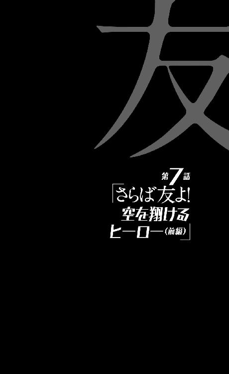
0
生きることは戦いだ。
戦いである以上、当然、負けることもある。
1
その日、剣藤犬个はいつも通り、食材の買い物に出かけていた──哲人幼稚園ならぬ怪人幼稚園を襲撃する任務を見事達成した後は、再びスタンバイモードに戻った彼女であり、スタンバイモードということは、つまり、空々少年の世話をするのが──彼に快適に暮らしていただくようお世話をするのが彼女のスタンダードな仕事ということになる。
だから買い物だった。
朝食を作って、一緒に食べて、洗い物をして、一通り部屋を掃除して、昼食を食べて、洗い物をして、それから午後、食材の買い物に出るというのが剣藤のルーチンだった。ルーチンと言ったものの、それは特に何を警戒しているというわけではないのだが、使う店は毎回変えるようにしている。もちろん限界はあり、やむなく同じ店を頻繁に使ってしまうこともあるけれど、少なくとも連続はしないように。
「～～～♪」
野菜を検分しつつ、なんとなく鼻歌を歌う剣藤。その様子を見ると、午後の買い物を楽しんでいる若奥様という風にも見えるが、彼女がまだ未成年の少女であることを忘れてはならない。だが、一ヵ月に亘り、一人の人間の生活の世話をし続けるというのは、それなりに少女を成長させるのかもしれなかった。家事の腕だけではなく、精神的にも。
少なくとも剣藤は、空々と一緒に暮らすようになる前はもっと子供っぽかったし、もっと幼かった気がするのだった──自分でそう思うのだった。はっきり言えば、未熟だったと。実際には自分で思う以上、気がする以上なのだし、むろん今だって、空々少年は剣藤のことを、子供っぽいお姉さんだと思っているところがあるので、その辺の認識はまたしてもすれ違っていたりするのだが──少なくとも。
魘されることなく眠れるようになったのは、空々と暮らすようになったお陰だった。
正直言って、最初は嫌で嫌でしょうがなかった......人と一緒に生活するなんて嫌だった。もちろん、とは言え知らなかっただけで、それまでも剣藤は左在存という少女と一緒に暮らしてはいたのだけれど──だけど、『狼ちゃん』を抱きしめて寝ていても、どうしようもなく魘されることはあった。そういうとき、『狼ちゃん』は心配そうに、剣藤の顔を覗きこんでいたものだ。
空々を抱いて寝ているとまったく魘されることがないのはなぜだろうと思う──答はなんとなくわかる気がするけれど、しかしその答を出したくないと思っている自分もいた。
ヒーロー失格になった自分と、新たなるヒーローとしての空々。
牡蠣垣からの嫌がらせのような配置は、苦痛にしかならないと思っていたけれど、今は安らぎでさえあるというのだから、なんだか笑える。
「......そう言えば、空々くんと暮らすようになって、今日でちょうど、一ヵ月だな」
ということに剣藤は気付いた。五月の二十八日からあのマンションに入居（？）したのだから、今日、六月二十八日で、ぴったりひと月である──だからなんだというわけでもないけれど、しかし、お祝いの真似事をしてみるのも面白いかもしれないと思った。面白いかもしれないだけ、それ以上の意味はない。でも面白い。面白いと思う。
空々が初めて怪人を殺したときも祝ったものだが、ああいう殺伐としたことでなく、今度はなんというか、ちゃんとケーキなんか買ってみたりして。
だから彼女は、野菜やお肉を購入してから、そのままショッピングモール内のケーキショップに向かうことにした。
むろん彼女は忘れたわけではない──空々少年の面倒を見るという任務は同時に空々少年を監視するという任務であるということを、そして同時以上に、空々少年をいざというときに始末するという任務であるということを、彼女は忘れたわけではない。
いざというとき。
いざというときには、いつでも彼を殺す。
そういう気持ちを失うほどに、軍人としての自分を見失うほどに、彼女は彼を好ましく思っているわけではなかった。たとえば今日、ケーキを買って帰って、そのケーキを食べ、なんならクラッカーでも鳴らしたあとでも、もし空々が──『狼ちゃん』が空々にそう提案したように──『剣藤さん。一緒に地球撲滅軍から逃げませんか』というようなモーションをかけて来たとしたら、その瞬間、彼を切り刻むくらいの覚悟は持っている。
まあ......、うん、その言葉を冗談で済ませられるチャンスくらいは、与えるかもしれないが──あくまでも自分の快適な睡眠のために、『そんなことを本気で言ったら殺しちゃうよ？ 気をつけてね、そらからくん』くらいのワンクッションを挟んであげるかもしれないが、剣藤犬个の軍に対する忠誠心はそれくらいには強い。地球に敵対し、人類を守るという決意は、それくらいに強い。
彼女はそういう風に作られている。
入隊以降、作られている。
一人の人間よりも人類全体を愛するという、よく考えてみれば大きな矛盾を孕んだ教育を受けている──当然のことながら、本人の資質や経歴によるところも大きいが。
ヒーロー、地球と敵対する上でのキーマンと目されておきながら、『大いなる悲鳴』を防ぐことができなかったという罪悪感は──その『罪』を償いたいという気持ちは、より強い人類愛という気持ちになって、彼女の中では消化されている。
だから苦しむのだ。
彼女は苦しみ続けるのだ。
だが彼女は、その苦しみが何に起因するものなのかもわかっていない──憎む対象を地球だけに限ってしまっていることが、どれほど自分の精神を苛んでいるのか、彼女にはわかっていない。
そしてこのままだとおそらくは、わからないまま彼女は生涯を終えることになるだろう──何もわからないまま死んでいくことになるだろう。わけがわからないまま、死んでいくことになるだろう。もしもそこに希望があるとすれば、やはりそれは新たなるヒーロー候補、空々少年なのだろうが......残念ながら。
今のところの彼はまだ、頼りない十三歳の男の子に過ぎなかった。
剣藤にとっては、未だ可愛い子供の域を出ない。
「プレートにお名前を入れられますけれど、いかがなさいますか？」
と、ケーキショップの店員に訊かれ、剣藤は思案する。誕生日祝いでもあるまいし、名前を入れる必要はないようにも思ったが、まあしかし、サービスは受けておきたいという気持ちもあった。貧乏性と言わば言え。まあでも、だからと言って『そらから』という名前を入れるのはまずかろう。
彼は戸籍上はもう死んだ人間である。家族と一緒に殺されたことになっている──刃物を振るう悪辣な犯人が、一家諸共殺したことになっている。なっているというか、まあ、概ねそれは事実の通りなのだが。
「じゃあ......『くうくん』で」
咄嗟に偽名も思いつかなかったので、そう言った。下の名前ならわかりにくいだろうという浅はかな判断だったが、なんだかよくある犬の名前みたいになってしまった。
狙ったわけではなかったけれど、しかし、彼が今、剣藤の『ペット』を務めてくれることを思うと、変にマッチしているようで、訂正する気にはなれなかった。
店員は特に疑問を感じた風もなく、「はい、畏まりました」と、承ってくれた──手馴れた様子で名入りのプレートを設置し、箱に入れ、リボンでラッピングする。蠟燭のサービスはさすがに断った。完全に誕生日になってしまうのは意に反する。
「四千二百円になります」
「はい......」
と、鞄から財布を取り出そうとしたときだった──その右腕を狙って飛来するものがあった。
剣藤は『寸刻み』と呼ばれる剣士ではあるが、そしてまた戦士であり、何より軍人ではあるが──それもすべて『破壊丸』あってのことである。空々から見れば、ずっと『破壊丸』を手元に置いているように見える剣藤だが、実際は完全に四六時中、携帯電話よろしく持ち歩いているわけではない。
買い物のときの彼女は剣道着でもないし、竹刀袋も道着袋も持ち歩いていないのだ──さすがに目立ち過ぎるし、『任務』として、買い物は一般人を装ってするのが、彼女の役割なのだから。午後は若奥様になるのが彼女の任務なのだから。
そこを狙われた。
それも同居人のためにケーキを買おうと、料金を払おうとしている、気が緩んでいるところを狙われた──果たして、遥か後方から、買い物客達の間を縫うように回転しながら飛んできたのは。
手斧だった。
2
ばすん！ という、平和なこの国ではあまり聞き慣れない音が、やはり平和なショッピングモールの中に響いた──しかし剣藤にとっては、それは聞き慣れた音でもあった。
それは人体が切断される音だ。強引に、乱暴に、言うなれば力ずくで引き千切るように、切断される音だった──ただ、それが自分の身体の内側を通した骨伝導で聞こえてくるのは、彼女にしても初めての経験だった。
反射的に向けた視線の中を『くるりっ』と回って飛んでいくのが自分の右腕、その肘から下だと認識すると同時に彼女は、反対側の左手で自分のパンツからベルトを引き抜きにかかっていた。
剣藤の右腕を切断した手斧は、そのままショーケースを貫き、中に並んでいたケーキをこれでもかとばかりにかきまぜながらケース内で反射し、向こう側に飛び出した末に、その正面にいた店員に直撃した。いや、剣藤の腕を『通過』し、ケース内で反射をしているので、直撃というのは実は正しくない。だが直撃したのとそう変わらないほどの深刻なダメージを店員に与えた。
深刻なダメージ。
有体に言えば致命傷である。
彼女の心臓に深々と食い込んだところで、やっとその手斧は回転を止めたのだった──店員はそのまま倒れ込む。この不可思議奇天烈な世界に起こりうるあらゆる可能性を考えれば、断言をするのはまだ時期尚早かもしれないが、恐らくはそのまま二度と起き上がることはないだろう。
斧は止まっても、剣藤の右腕はまだ空中でくるんくるんと、目まぐるしく回転している。いつまで回っているのか。それともアドレナリンが分泌されて、時の流れを遅く感じているのかもしれない。
剣藤は血をあらん限りに撒き散らす『それ』が床に落ちる前に、ほどいたベルトを二の腕（今となっては一の腕だが）に巻きつけ、片方の端を口で咥えて思い切り引っ張り、かなり応急処置的とは言え、止血を施した。
剣道着を着ていないがゆえに避けきれず、全身に血を浴びながらも。
任務中あれだけ忌避していた血液を、それも自分の血液を全身に浴びながらも──それでも止血し、ぎりぎりのところで、彼女は意識を保っていた。
「血が怖いのでしたわよね、『寸刻み』──」
「............！」
覚えのある声に、振り向こうとしたところで、片腕を失ったバランスの悪さからか、それともその分だけの血を失ったからか、彼女はがくんと崩れ落ち、片膝をつく。勢いよく崩れたので、膝の皿が割れたかもしれない。
身体ごと振り向くことさえ、今の彼女にはできなかった。かろうじてなんとか、首だけは後ろに向けた──そこにいたのは思った通りの顔だった。
「──血。赤い血。赤く輝く、奇麗な血。そんな美しいものを嫌うだなんて、神経を疑いますわ。ええわたくし、あなたとは昔から、気が合わないと思っていたのですわ──あなたはわたくしのことをお嫌いのようでしたけれど、わたくしはあなたのことが大嫌いでしたわ、『寸刻み』」
「......『恋愛相談』」
血圧の急激な低下ゆえに朦朧とする意識の中で、なんとか彼女の言葉に応じる剣藤。そう、そこにいたのは地球撲滅軍第九機動室所属の戦士──『恋愛相談』こと、瀬伐井鉈美だった。
剣藤と同世代の少女──そして今も両手に手斧を持っている。一本手斧を投げておきながら、どうして今もなお両手に斧を持っているのかという質問ほど、彼女に対して無意味なものはないだろう。
当然、今剣藤が考えているのもそんなことではなく、そして彼女が言うよう、剣藤もそう思っていたよう、たとえ互いにどれほど嫌い合っていようとも、一応は身内であるはずの瀬伐井が自分を狙って攻撃してきたことでもなく──こんな公然の場で、一応屋根があるとは言っても天下の往来で、堂々と腕を切断されたことだった。
つまり瀬伐井は、単なる因縁や私怨で、剣藤を狙ってきたのではない──間違いなく軍のバックアップを受けている。それも、今、このショッピングモール内にいる人間をまとめて巻き添えにしてもいいくらいの規模のバックアップを──
このなりふりの構わなさ。そして『恋愛相談』という戦士の派遣。
間違いなく、これは超Ａ級の軍務だ。
「......政治家先生のご機嫌取りはいいの？ それとも彼らへの差し入れでも買いに来たのかな......」
一応は皮肉を交えた探りを入れてみた剣藤だったが、瀬伐井はまったく挑発に乗ることなく、
「生憎わたくしは、あなたみたいに自分で買い物をする立場ではありませんのよ──むしろ政治家先生から贈り物をいただく立場でして。うふふ、まあ本当はわたくしがこんな風に、下界の現場に出てくること自体が例外的なのですけれど──」
と妖艶に笑んだ。年齢不相応な笑み、だなんて、しかし、手斧を回転させながら言う彼女に、今更な表現ではあるだろう。彼女が嫌いな剣藤としては、何が下界だ、気取るな、とは思うけれど。
「こんな機会も最後だと思うと、本当はもっとあなたのことを嬲ってさし上げたいのですが、なにぶん、時間がありませんのでね──」
と、周囲を見渡す瀬伐井。
周囲の買い物客達は近寄ってくるでもなく、かと言って逃げるでもなく、遠巻きに二人を見ていた。剣藤にとっては助けが、瀬伐井にとっては邪魔が入る心配はなさそうだ。
携帯電話でばしゃばしゃと、この戦闘（？）を撮影している人間もいるが、それを瀬伐井が気にする様子はない。どうせ写真も動画も、あとで持ち主ごと処分するから関係ないのだろう──当然、この辺り一帯の通信電波は、すべてが遮断済みのはずである。
彼らは異常事態の只中にあることはわかっているはずなのに、その被害が自分に及ぶとは思っていないのだろうか。剣藤が殺されたら、その後瀬伐井の手斧がどちらを向くのかくらい、想像できそうなものだけれど......。
『大いなる悲鳴』のことを忘れたかのように暮らしている一般人の危機感など、危機意識など、その程度か──いや、それでいいのだ。剣藤は彼らが平和に日常を送れるようにするため、日夜戦っているのだから──日夜魘されていたのだから。
利き腕の喪失。痛過ぎて痛くない。いや、痛いのだけれど、痛過ぎて最早どうでもいいとさえ思えた──『どうでもいい』。これが普段空々が感じている感覚なのだろうか。こんな感覚が日常だとしたら、いったいそれはどれほどの地獄なのだ。
そうだ、空々空。
あの子は無事なのだろうか──と、考えた。
地球撲滅軍が超Ａ級の配置で動くとなると、空々が絡んだ任務に違いない。剣藤犬个はそう予想した。この包囲、そしてこの襲撃はその一環であり、空々のほうにも、誰かしら刺客が向かっているに違いないと。
しかし一体何があったのだ？
彼が何か、大きな失敗をしたのだろうか？ 組織にとって許しがたいような失敗を──しかし思い当たる節はまったくなかった。
あるとすれば先日の、怪人幼稚園を制圧したときか......？
あのとき、そう言えば空々の様子が少しおかしかったような──そこまではなんとか考えることができたけれど、だが、元々、家族を地球撲滅軍に殺されて以来、考えることが苦手になっている剣藤には、それ以上の推測をすることはできなかった。
そうしているうちに、瀬伐井が言葉を繫ぐ。
「急ぎの任務なのですよ、火急の用なのですよ。あなたのようなのんびり屋さんにはわからないと思いますけれどねえ」
彼女にとっては、剣藤がそれを聞いているかどうかなど、どうでもいいようだった。自分の観客は自分だけでいいというような口調だった。そうだ。この女のこういうところが嫌いだった。
「だから安心してくださいな、『寸刻み』。わたくしはあなたのように、刻んだりなんか致しません。かつてしのぎを削った同僚として、手足の『残り』を全部斬り落としたら、すぐに楽にしてさしあげますから！」
瀬伐井は、かがんだままの剣藤に向けて、手斧を二丁、両方、天高く振り上げた──まずは一気に、フルパワーで加減なく、両脚を落とすつもりのようだった。怪人の嬲り殺しを趣味とするいつもの彼女なら、『一本』ずつ切り落とすだろうから、確かに時間がないようだと、剣藤は思った。
そしてその焦りこそが付け込む隙だと思った。
剣藤は残っている左手を、ショーケースの向こうで倒れている店員へと伸ばす──正確には店員ではなく、その胸に突き刺さっている手斧へと伸ばす。手斧。しかしただの手斧ではない、アナログな武器ではない。これもまた、軍が兵士に支給しているアイテムなのだ。『恋愛相談』に支給されたハイテクアイテム『切断王』──一定以内の距離ならば狙いを外さない、リモートコントロールの利く投擲武器だと思えばわかりやすい。
誰でも斧投げの名手になれる便利な切断アイテムだが、ひとつ大きな弱点があって、それは投げる武器である以上は、常に敵の手に渡ってしまう可能性があるということだ。だから本来、一撃必中にして一撃必殺を義務付けられている武器なのだ。
だが外した──その嗜虐趣味ゆえに『恋愛相談』は、わざと外した。剣藤の心臓や首といった部位ではなく、狙い通りに急所を外して、右腕を落とした。片腕を落とせば剣藤の戦闘能力を削ぐには十分と思ったのだろうが、この斧は片手でも投げられるし、ましてこの『切断王』は狙いをつけなくてもよい！ 利き腕でない左手でも、まだ勝負にはなる！ そう思って剣藤は起死回生、ケーキショップの店員に刺さった斧に手を伸ばしたのだったが──その行為は柄をつかむところまでだった。
胸に食い込んだ斧は、収縮した胸筋で固められて、女子の細腕、それも片手では抜けなかった──剣藤のしたことは、ただ、ショーケースのガラスで、自分の腕を不要に傷つけただけだった。
「ははっ！」
と、それを見た瀬伐井は愉快そうに笑い、そのまま手斧を振り下ろす──しかし、剣藤の力と勇気を振り絞っての行為が無駄な足搔きだったかと言えば、そんなことはまったくなく、むしろその足搔きが瀬伐井を、ほんの一瞬、笑わせ──その動きを、ほんの一瞬、止めることに成功したという点では、正に起死回生だった。
「今週の血液型占いィィ──『寸刻み』！ あなたの血が──がっ！」
何か、そんな決め台詞的な言葉と共に、手斧が彼女の手を離れようとしたその刹那、瀬伐井鉈美の身体がずどんと割れた。先ほど剣藤の右腕が放った音を、今度は瀬伐井の胴体が、しかも縦向きに発したのだった──だから発された音は正確には、ずどどどどどどん、という感じだった。その切断線の位置は、およそ右半身と左半身で、七対三と言ったところで、ぎりぎり心臓をかすめないくらいの位置だった。
だからと言って致命傷にならないはずもなく。
骨盤のあたりまで開かれた彼女は、何が起こったのか何ひとつわからないままにその場に崩れた。まあ、自分の身体から突き出ていた刃を見ていれば、後ろから斬りつけられたのだというくらいのことは理解できたかもしれないが。
そしてもちろん剣藤のほうは、『それ』を見ていた。だから、まあそれは瀬伐井にとっては何の救いにもならないどころか、逆に屈辱的なくらいだろうが、彼女がどのように、誰に斬られたのかは、剣藤には明解だった。
よく知る、とはまだ言えないが、それでももう、今日で同居し始めて一ヵ月になる少年、空々空。
空々空が背後から飛びかかるように、瀬伐井の肩口に大太刀を振り下ろしたのだった──当然のことながら、野球の心得はあっても刀の心得などあるはずもない空々がそんな風に、達人のように振るえる大太刀と言えば、その銘は決まっている。
『破壊丸』。
だけど空々に、剣藤はその操作方法まで教えた覚えはないのだが......？ が、そんな疑問が湧いてくる余地もないほどに、彼が、文字通り身の丈に合わない長さの刀を持つ姿は、しかし様になっていた。
剣藤が命を救われたからこそ、そう思うのかもしれないが。
まさしくヒーローのようだった。
「大丈夫ですか、剣藤さん」
「............」
片腕を斬り落とされている人間を相手に訊く質問ではなかったが、それこそが空々らしさだとも思った。と言うより、もしもここで違う、もっと普通の心配するような台詞をかけられていたら、空々の偽物じゃないかとさえ思っただろう。つまり剣藤は安心したのだ。
してみると、店員の胸から手斧はすぽっと抜けた。どうも焦って力んでいたから、うまく抜けなかったというのもあったらしい。店員の胸から噴き出した血を避けつつ──自分の血と、それからやっぱり避けれなかった瀬伐井の血で真っ赤なので今更だが、これはもう癖みたいなものだ──、抜き取った手斧を、そのまま左腕を肩を中心にぐるっと回転させるようにして、足を置いている場所のそばにあった、瀬伐井の頭に叩きつけた。この距離なら『切断王』であろうと、わざわざ投げる必要はなかった。普通の斧として、薪を割るように、瀬伐井の後頭部に叩きつければよかった。
とは言え薪を割ったことはなかったけれど、上首尾に、瀬伐井の頭蓋骨は真っ二つになる。これもまた瀬伐井にしてみれば避けようがなかった。ふう、という安心感と共に、精神ブロック剤を服用していないときに実行したその行為によって、嫌悪感がどっと湧いてくる。人を殺した。人を殺した。こんなトドメを刺すような行為は、身体が両断されている人間に必要ではないのだが、しかし彼女なりの、それは『かつてしのぎを削った』瀬伐井に対する、同情のようなものだった。まあ同情と言うと違うような気もするけれど、少なくとも腕を斬られた仕返しとして、彼女の頭を割ったつもりはない。
「大丈夫だよ」
と、遅ればせながら、剣藤は答える。
「その辺に、ケーキの箱が落ちてると思うんだけど......拾ってくれる？」
「はあ。ケーキを買ったんですか？」
言いながら、言われた通りに拾う空々。どうやらすぐに見つかったらしい。血に濡れてなければいいのだけれど。しかしこの状況でよく、言われた通りに拾ってくれるものだ。頼んでおいてなんだが、どちらかと言えば落ちている腕を拾って欲しいところだった......、いやまあ、こんな乱暴な切断面では、どうせもう引っ付かないか。
ならば腕を置いていき、ケーキを持っていくほうが合理的だ。
「......ねえ、私の胸ポケットに精神ブロック剤が入ってるから、飲ませてくれるかな」
「え......、く、口移しでですか？」
なぜそうなる。答えられず、剣藤はただ首を振った。そろそろ腕の痛みが現実的なものとなって彼女の精神を襲ってきたのだ。精神ブロック剤の主な効用はストレスの緩和だが、痛み止めにもなる。
「じゃ、じゃあ」
と、なぜか緊張した面持ちで、空々は剣藤のポケットからピルケースを取り出した──そしてそこから二錠ほど精神ブロック剤を取り出し、剣藤の口の中に入れた。口の中に指が入った。その指を軽く嘗め回すような結果になったのは、わざとではない。
「そらからくん」
その辺りで、ようやく頭が働いてきて（これから精神ブロック剤の薬効で、また鈍くもなるのだろうが）、剣藤は言った。立ち上がろうとして、バランスを崩し、何度もこけつまろびつ、だが。
「気を付けて......ここ、たぶん、封鎖されてる」
「知ってます。それを突破してきましたから」
「突破って、どうやって......ああ、『破壊丸』ね。......ん？ あれ？ なんで私が、そらからくんに助けられてるんだろう？ てっきり、そらからくんが狙われていて、『恋愛相談』の役目は私の足止めなのかと思ってたけど......」
「違います、剣藤さん」
空々は、剣藤に『破壊丸』の柄を向け、渡そうとしながら、言った。渡そうとされても、そんな大太刀、もう隻腕の剣藤には扱えないのだが。
「狙われているのはあなたです。......花屋の奴が、『あなたはもういらない』と、そう判断したらしくて──」
そういう事実を気遣いなく言えてしまうのがまた空々少年だったが、その言葉にはさすがに、剣藤は衝撃を受けずにはいられなかった。
3
空々空が颯爽と、まるで出のタイミングを計っていたかのように剣藤のピンチに現れた経緯を説明するためには、少しだけ時計の針を巻き戻す必要がある。剣藤がまだ買い物のために、ショッピングモールにも辿り着いていない頃、空々空は、マンションの自室で腹筋を鍛えていた。
回数を数えることもなく、まるで惰性のように腹筋運動を繰り返しながら、空々は考えていた──何をと言えば、当然、先日遭遇した、謎の幼児のことをである。
謎の幼児──臆面もなく地球を名乗った、謎の幼児。いや、謎と言えば、まるでそれが解答のある問いのようだが、そんなわかりやすいものが、あの存在にあるとは思えなかった。わからないから謎なのではなく、理解不能だから謎という感じだった。
むろん色々感想はあるのだけれど、正直言って、勘弁して欲しいというのが空々の本音だった。噓か誠かはともかくとして、地球を名乗って現れるのなら、どこかの誰か、別の人間のところに現れてくれたらいいだろう。それこそ、剣藤にしろ花屋にしろ、彼女達の『虐殺行為』が終わってから接点を持ってもいいじゃないか。
どうしてその間隙を突くように、よりにもよって空々に会いに来たのだろう──どうして地球とコミュニケーションを取れる人間が、自分でなければならないのだ。それが気まぐれの結果なのだとすれば、あまりにひどい気まぐれだ。地球はただの気まぐれで、人類を滅ぼそうとしているんじゃないかと疑えるほどに。あの『大いなる悲鳴』も、反撃でも切り札でもなんでもなく、ただの気まぐれの産物に過ぎないのじゃないのかと思えるくらいに。
......そうだ、『大いなる悲鳴』だ。そのことが空々の気を重くするのだった──あの幼児は、ただ接点を持つだけではなく、空々に予告したのだった。丁度一年後に、二度目の『大いなる悲鳴』を起こすと。
なんて予告をしてくれるのだ。
自分で大いなる、とか言ってるんじゃない、と思う。
これなら、次の『大いなる悲鳴』が、いつ起きるかわからないという状況のほうがよっぽどよかった──よっぽど安心感溢れる生活だった。起きるか起きないかわからない日々と、一年後に必ず『大いなる悲鳴』が起きるとわかっている日々では、何があろうと空々だったら前者を選ぶだろう。誰だって選ぶだろう。
あれからずっと悩んではいるが、そしてなんとかうまく、『茶飲み話』あたりにあの事実を報告する理屈を思いつかないものかと頭をひねっているのだが、何も思いつかない。たとえばあんな予告を発表すれば、世界はパニックになるに決まっている。空々から見れば、もうおとぎ話のような過去の話であるノストラダムスの大予言にしたって、当時は結構なパニックを呼んだとも言うのだから。もちろん報告したところで、地球撲滅軍がそんな情報を世間に出すとは思わないけれど......、そもそも『人に言えない』という気持ちのほかに、限定的に『地球撲滅軍には言えない』という気持ちも、空々の中には強くある。毎晩抱かれながら寝ている癖にこんなことを言っても説得力は皆無だろうが、剣藤のことだって、彼は決して信用しているわけではないのである──その数少ない証拠として彼は彼女に、一ヵ月の共同生活の中、とうとう今日まで、あれだけ世話になりながらも──一度もお礼を言っていない。
『おはようございます』も『おやすみなさい』も、『いただきます』も『ごちそうさま』も言ったし、『ごめんなさい』に至っては何度言ったかわからないけれど──『ありがとうございます』だけは、未だ一度も言っていないのだ。
地球撲滅軍の一員として動き、また働くことは、もう選択の余地がないこととして吞み込んでいる空々ではあったが──そしてそれが今の生活水準を維持する条件であることも理解している空々ではあったが、軍の上のほう、それに奥のほうの底のほう、中でも左在存という『犬』を生み出した不明室については、危機感を覚えずにはいられないのだ。
迂闊に迂闊な報告をして、彼女のように実験台にされてしまっては敵わない──今でこそ、『火達磨』に勝ったことも相俟って、ヒーロー扱いしてもらっている空々だが、そんな扱い、いつ引っ繰り返るかわからないのである。ヒーローから実験台への転換など、呆気なく起こりそうだ。
仲間に殺されないように、気をつけて。
『地球』から受けたそんな忠告を、どこまで真に受けたものかはわからなかったけれど、しかし、自分の真横で頭部を焼かれて死んだ在存のことを思えば、無視するわけにもいかない忠告である。
逃亡幇助罪が不問になったからと言って、これからの身の安全が保障されているわけではない。実際剣藤だって、空々を見張っているのだと言っていたし──とか、その辺りで空々の思考はぐるぐると回っていて、結果、腹筋も鍛えられ続けるというわけだった。
もちろん、あの正体不明の幼児について何も考えないということは、これはありえないことであって、彼がそんな風にぐるぐるしているのは当然なのだが──状況からすれば、彼はこのとき、とても的外れなことをしていたとも言える。たとえるなら、今日食べるものがないのに、一年後の夕食を何にしようか考えているようなものだ。
先を見通す目は、案外間近なものが見えない。今このときにも、剣藤が買い物をしようとするショッピングモールの、封鎖の準備は始まっているというのに。
ただし幸いなことに、ここで彼の思考の、無意味な回転を止める来訪者が現れる。いや、それをただの『幸い』とするのは、あまり正しくないかもしれない。これまで空々空の物語には、いくつもの『幸いなことに』と『残念ながら』が散見したが、この辺りの出来事は、もう偶然では片付けられない領域で起こっている。
物事には何事にも原因と結果があるという、そんな単純な仮説をここで採用するのならば──ここで起きた『幸い』は、彼のこれまでの行いに起因するものだった。
いわば空々空は──今の彼に、これほど相応しくない言葉も珍しいだろうが──『普段の行いがよかった』のである。
チャンスを逃し続けた彼ではあったが、しかしこのときチャンスのほうから彼を訪ねてきたのは──彼の行いゆえだった。
インターホンの音がして、空々はようやく腹筋運動を止め、自分の部屋からリビングに移動した。カメラ式のインターホンなので、来訪者の姿はモニターに映されている。
そこに映っている人物を空々は憶えていた。
よく憶えていた──よくよく、憶えていた。
忘れるはずがない、忘れられるはずがない。
飢皿木博士だった。
4
「やあ、空々くん。その後どうしているかと思っての往診だよ──というのはもちろん噓だ。そもそも私は、きみの最近の動向をちゃんと聞いているからね。まあきみをそちらの世界に送り込んでしまった者としての、責任と言ったところかな。ご活躍のようじゃないか」
慣れない手つきで空々が淹れたコーヒーを、表情からしてたぶん我慢しながら飲みながら、飢皿木博士は言った。『そちらの世界』という言葉を彼が使ったことに、空々は気付く。つまりあくまで、飢皿木博士は『あちらの世界』の人間ということなのだろう。
あちらとこちら。
それを自由に行き来しているのは、花屋くらいだという話だった。
「はあ」
と、馬鹿みたいに頷きつつ、空々は飢皿木博士の正面に座った。
剣藤からは、留守中、来客があっても応じなくていい（電話があっても出なくていい）と言われているが、しかしその来客が飢皿木博士だったのなら、無視することは空々にはできなかった。
「それでもどうだい？ 空々くん。きみの感想を聞いてみたいものだね。地球撲滅軍に入隊して一ヵ月。きみはその組織を、その組織に身を置いていることを、どう思い、どう感じているのかな？」
「え？ ああ、いえ別に──」
いきなり訊かれて空々は戸惑う。どういう答が望まれているのかわからなかった。変な答を返せば、空々を軍に送り込んだ飢皿木博士を責めるような物言いになってしまいかねない。
普通は責めるところだから、それで駄目だということはないのだが、しかし考えた末に空々は、
「──なんかＳＦっぽいアイテムがいっぱいあって、びっくりしています。科学って、僕達の知らないところで進歩しているんですね」
と、わざと楽観的な答を返した。彼にしては機転の利いた答ではあっただろう──ただしこの場合、『僕達』という言葉に、どういう範囲の人間が含まれるのかはわからなかった。飢皿木は知っていただろうし、花屋も知っていただろうし、知らなかったであろう空々の知り合いは、みんな死んでしまっている。
「『高度に発達した科学は魔法と区別がつかない』という奴だね。まあこれも、とあるＳＦ作家の発言なんだが」
「あ、そうなんですか」
その言葉自体は知っていたが、出典を知らなかった空々は、知識が増えて嬉しい気分になった。ただし、そこまで聞いたなら『とあるＳＦ作家』ではなく、ちゃんと名前を聞いておきたい。
「どなたです？ 僕、読んだことありますかね」
「アーサー・Ｃ・クラーク。ちなみに先の一文は、クラークの三法則の三番目だ。『高名かつ老齢の科学者が可能であると言うとき、その主張は恐らく正しい。不可能であると言うとき、その主張はまず間違っている』というのが一番目、『可能性の限界を測るただひとつの方法は、不可能だとわかるまで、とことんやってみることだ』というのが二番目だ。こうして見ると、一番目と二番目のほうが、生きる上では役に立つ知識だよね。科学と魔法の区別がつかないと言われても、対処のしようがないものな」
「はあ......そうですね」
なんとなく頷く。ただ、その三法則は、面白いと思った──特に一番目を。アーサー・Ｃ・クラーク。生憎まだ未読の作家だったので、今度読んでみようと思った。読んでみたいと思った。剣藤に頼めば買ってきてくれるだろう。
「確かにそうして並べてみると、三番目の法則だけが、浮いているように見えますね。だからこそ有名になったんでしょうか」
「そうだね。聞こえのいいところだけを抜き取って、何かをわかったような気分になるのは人間の悲しい習性だ。『天は人の上に人を造らず、人の下に人を造らず』という冒頭の一文だけを読んで、『学問のすすめ』のすべてを知ったような気になるくらい、愚かしいんだがね」
「ああ......あれは福沢諭吉の言葉じゃないって奴ですよね」
「ただしそういう悲しい習性を、愚かのひと言で切って捨てるのもまた、危険だ。人間は誰だってそんな罠に嵌る......嵌るから罠なんだ。それを愚かと言えば、自分に愚かと言っているようなものだ。たとえば空々くん。きみは今、地球撲滅軍が持つ様々なアイテムを、何の疑問もなく『科学の発達』として捉えているようだが......実際のところ、それはどうかな？ 案外、それは本物の魔法なのかもしれないよ」
飢皿木博士は言う。律儀にコーヒーを飲みながら。
「高度に発達していない魔法なら科学に見えるかもしれない──じゃないか」
「............」
「地球撲滅軍は確かにきみにとって未知の世界だったのかもしれないが──だからと言って、未知の技術に満ちているわけではないよ。人間が動かしている、人間の組織だ。果たしてそうそう、卓越した科学など存在しているものだろうか──なんて、そういうことを考えてみるのも面白いかもしれないよ」
「......はあ。まあ、そうですね......ええ」
何を言っているのか、何を言いたいのかわからず、空々は曖昧に頷いた。空々こそ、飢皿木博士に会ったら、色々訊きたいことがあったはずなのだが、彼の思わせぶりな言葉に、全部忘れてしまった感じだ。
「あの──えっと、先生。いえ、飢皿木博士」
空々は飢皿木のことを博士と呼んだ。瘦せぎすの、いかにも研究者然とした彼の風貌や物腰からして、先生と呼ぶより博士と呼んだほうが、なんだかしっくりくる気がしたからだ。
「僕の様子を見に来たんじゃないのなら、何の御用なのですか？」
この質問にはいささかの後ろめたさが含まれている。と言うのは、彼は今、地球撲滅軍──のみならず、地球に住む人類、全員に対して、壮大な隠し事をしているという自覚があるからだ。
『地球』と遭遇し、接点を持ったという隠し事。
......そんな風に、心の中で言葉にしてみると、言ったところでどうせ誰も信じてくれなそうだとも思うが、しかし、こんな風に不意の訪問を受けて、しかも思わせぶりな態度を取られたりすると、なんだかすべてを見抜かれているような気持ちになってしまう。
ただ、空々の『症状』を看破してくれた飢皿木博士も、別に神様というわけではないので、そんな噓は見抜けない──同居している剣藤や、付き合いの長い花屋でさえ見抜けない噓を、そう簡単に見抜けるわけがないのだ。
だから的外れな心配だった。
するべき心配は──剣藤には見抜かれなかったが、しかし花屋には見抜かれてしまったほうの噓なのである。
飢皿木博士はいきなり言った。
「きみの同居人である剣藤犬个さんは、今、軍から処分されようとしている」
「え？」
「処分。処罰ではない、処分だ。彼女は買い物の際は『破壊丸』を置いていくのだろう？ そこを狙うというわけだ──刺客として派遣されるのは『恋愛相談』。手斧使いのマッドハンターで、剣藤ちゃんのことを嫌っている。まあ殺意が非常に強いという点においては、『火達磨』の氷上くんよりも対処には困るかもしれないな」
「......え？」
剣藤が今置かれている現状を教えるという意味においては、既に飢皿木博士の説明はこれ以上なく完全に終了していたが、しかし空々は、それを聞いても何も理解できていなかった。
え？ 何？ 剣藤が──なんだって？
「もしもこれが、正式なデュープロセスによって下される『処分』であるならば、私は何も言わなかっただろう。私の情報源から聞いたところで、空々くんにこの話を教えることなく、診療所でいつも通りの仕事に勤しんでいたはずだ。しかしながら、こうして休診の看板をかけ、予約の患者さんに頭を下げてまでこのマンションに足を運んだのは、この処分はほとんど因縁みたいなものだからだ」
「因縁......？ いや、ちょっと待ってください、飢皿木博士」
「いや、待てないね。うん。まあたとえデュープロセスに則った処分だったとしても、きみには教えに来たのかもしれないな──とは言え私は、今の今まで、本当に言うかどうかを迷っていた、臆病な男なのだがね。きみが淹れてくれたこのコーヒーを飲んで、あとはまあ適当なことを言って帰ろうかと、結構本気で考えていた。まあそんなもんだ、私なんて」
空々を置いてきぼりにするように、飢皿木博士は言葉を紡ぐ。しかしそれはあくまでも独り言ではなく、空々に語りかける言葉なのだった。
「まだ十三歳のきみから見れば、さぞかし私は大人に見えるだろうが、中身は正直なところ、きみと大して変わらない。歳を重ねているというだけだ。先に生まれたというだけで、先輩風を吹かせているのさ」
「......飢皿木博士。あの......、剣藤さんが処分されるって、どういうことなんですか？ 一体、どういう理由で──」
「だから因縁だよ。花屋ちゃんからの因縁だ」
空々の、ここではそう訊くしかないような質問に、飢皿木は端的に答えた。『犯人』の名を告げた。
「花屋ちゃんが牡蠣垣室長に注進したんだよ。剣藤犬个を処分すべきだと。彼女は殺すべきだろう──とね」
「............？」
飢皿木博士の、他に理解のしようもなさそうなその端的な言葉が、しかし空々には理解できない。花屋が、剣藤を？ どうして？ つい先日、二人でタッグを組んで任務に当たったというのに──ふたりは個別に、バラバラに刀を振るっていたので、別に抜群のチームワークを発揮していたというわけではないけれど、しかし少なくともあの日、花屋が牡蠣垣に、そのような注進をするに至る出来事はなかったはずだ。
雰囲気も終始なごやかで──いや、なごやかだったのは、精神ブロック剤の効果もあるのかもしれないが、でも、特にあの二人の間に確執があったようには、空々には思えなかった。
剣藤に花屋が、因縁をつけるような理由があるとは。
「どうして殺すべきだなんて、花屋がそんなことを言うんですか」
「どうしてというのが、どういう建前でということを訊いているのなら、原因はきみのついた噓だよ、空々くん」
噓、と言われて空々は震える。当然のように、それは『地球』との接点を隠したことを言われたのかと思ったのだ──だが違い、空々はここでようやく、自分の迂闊さを知る。知り、呪う。
「あの幼稚園の人間が......職員が、子供達が、その全員が怪人であるときみは言ったそうだね。だが、花屋ちゃんはその噓を見抜いた。怪人を視認できるという才能を持つきみが、その才能を偽ったこと──これを花屋は重くとらえ、剣藤さんを始末するべきだと提案したのさ」
「ちょ......ちょっと待ってください。それ、なんだかおかしくないですか？」
バレていたのか、という気持ちよりも、花屋の行動に対する疑問のほうが先に立った。
「論理的に破綻しているって言いますか......」
「論理的に、ね。じゃあ訊こう、どこがおかしい？」
「どこって......だから、僕が噓をついたことが問題なのだったら、当然、処罰......処分ですか？ 処分されるべきはこの僕であって、剣藤さんには何の咎もないと言いますか......」
なんでわざわざこんなわかりきったことを言語化しなくてはいけないのかと思いつつも、空々は律儀に説明した。飢皿木博士は、
「だからこその因縁なんじゃないか──」
と答える。
「──一応、『論理的』な論理立てとしては、きみがそんな噓をついたのは剣藤さんの心理的負担を減らすためであって、つまりきみに噓をつかせたのは剣藤さんだということで、それゆえに彼女は責任を取らされることになったということになる」
「いや......え？ なんですか、それ......」
無茶苦茶だ。現実に対する適応度が高いと言われる空々でも、そんな無理筋には付き合えない。納得する振りさえできなかった。
「そもそも僕が......、そんな噓をついたかどうかだって定かじゃないでしょう──それは僕にしかわからないことじゃないですか。そして仮にそうだったとしても、僕の勘違いだったのかもしれない。僕の視力にだって、見落としはあるでしょう。それに、僕が仮に、仮にですよ、そんな噓をつくとしたら、剣藤さんのためだけじゃなくって、花屋のためでもあるはずです......」
「そうだね。その辺の事情がわからない花屋ちゃんでもない」
「だったら」
「それがわかっていつつも、無理を通せる立場にあるのさ、あの子は──きみにとっては互いに言いたいことを言い合える気立てのいい友達かもしれないが、花屋ちゃんはあれで、第九機動室の副室長であることを忘れちゃいけない。剣藤さんの上司なんだよ。本人は名誉職とか言ってるけれど、彼女はその立場を──大いに活用している」
「......え。でも──」
でも、のあとが続かない。いや、継ぐべき言葉は思いついているが、そのあんまりな内容に、それを口にする気になれない。『そんなパワハラみたいなことを、花屋が剣藤さんにするなんて──』と、言えない。
権力を笠に着た強引な論理立てで、剣藤を『処分』するだなんて、と。
言えない。言いたくない。
「別に今に始まったことじゃないんだよ、空々くん。既に気付いていると思うけれど、地球撲滅軍にスカウトされるとき、きみのように関係者をすべて殺されるという例は、実は珍しい。家族を皆殺しにするという時点で既に相当のやり過ぎなんだが、通っている学校を焼いたり、携帯電話のアドレス帳に載っている人間を全員殺したり、そこまでされたのは、地球撲滅軍史上きみくらいのものだ。それをきみは、きみのヒーロー性ゆえだと思っているかもしれないが──それもまた、口実というか、因縁みたいなものであって、ただの花屋ちゃんの無理筋なんだぜ。剣藤さんも氷上くんも、軍人として、上司の命令に従ったに過ぎない」
飢皿木博士は言う。それは陳腐な手品の種明かしをするような口調で、彼はとてもつまらなそうだった。
いつぞや剣藤が、言いかけてやめたことでもあったが──しかし空々にとってそれは、意外な言葉でしかなかった。
「ひと月前、きみの関係者を殺したのと同じように、今度は花屋ちゃんは、剣藤さんを殺そうとしているのさ。要するに理由なんてなんでもいいし、きみが本当に噓をついていたかどうかもどうでもいいんだ。きみと同居して、仲良く生活している剣藤さんを、ただ殺したいんだよ、あの子は」
「......な、仲良くだなんて」
空々は慌てて否定しようとしたが、しかしここでどんな風に言葉を並べても、あまり説得力はないだろうということもわかっていたし、そもそも飢皿木博士に申し開きをしても仕方がない。
一般的に考えて、夜一緒に、同じベッドで眠っている男女が、仲良く見えないはずもない。マンションを訪ねてきた花屋に、空々と剣藤との関係がどのように映ったかは定かではないが......、少なくとも険悪な関係には見えなかっただろう。
少年の夢。ひゅーひゅー。
そう言っていた。
「無茶苦茶というならそもそも無茶苦茶なんだぜ？ だって、剣藤さんにきみの世話役をやらせることを提案したのも彼女なんだから。マッチポンプもいいところだよ」
「え......？ じゃあつまり、なんですか、花屋はその......、剣藤さんに対する、嫉妬みたいな気持ちで、そんな馬鹿げた因縁をつけてるってことですか？ 友達である僕を、取られたような気持ちになって......？」
「嫉妬というよりは、きみを独占したいという気持ちかな、どちらかというと。まああの子にはそういうところがあるんだよ、昔から。たとえ名誉職であろうとお飾りであろうと、子供に権力を与えるべきではないということなのかもね」
飢皿木はそんな風に、教訓じみたことを言ってから、
「彼女の症状は深刻だった」
と付け加えた。
「私はスクールカウンセラーとして花屋ちゃんと出会ったわけだが、まあ、深刻だったね」
「深刻って......」
「当時十三歳。そんな低年齢で、あそこまではっきりと、症状が出るのも珍しいけどね。簡単に説明すると、彼女はその頃、自己評価がすさまじく低い人間だったんだ。自己評価が低く、恥をかいたり傷ついたりすることを極端に恐れていた。だから人や社会との交流を避けていた。孤立を好んでいた。非難されることを恐れ、自分は嫌われていると思い込み、少しでも否定されると、相手は自分のことが憎いんだと決めつけていた。そして一方で──他人との強い絆を求めていた」
「............」
「彼女が野球をやめた理由は、ただ単に『人付き合いが苦手だから』だし、地球撲滅軍に入ったのは『明確に必要とされたから』だよ。そんな症状を抱えていると、なかなか社会的な組織には属せないからね。彼女なりに、生きる道を見つけていたつもりなのだろう。人類を守るという大きな目標を持つことで、己に価値を見出したのだろう」
「............」
「きみと一緒にいるときは明るく楽しい、活発な女の子だったかもしれないが、空々くん、あの子は学校じゃあ、とても暗い子だよ。昔からそうだし、それは今でもそうだ。周囲と交流を持とうとしないし、行事にも参加しない。そんな彼女にとって、空々くん、きみという人間は、数少ない、というよりほとんど唯一の、執着する対象なのだろう。一緒にやりたくもないチームプレイをするくらいにはね。だから──きみに近付く者は許せないのさ。まあ......、マッチポンプとは言え、家族を殺した剣藤さんとなら、きみは仲良くなることはないだろうという、それくらいの気持ちはあったんだろうけれど」
別に空々くんにとっては花屋ちゃんは、数多い友人の一人に過ぎなかったんだろうに、そんなに執着されてもねえ──と、飢皿木博士はやや辛辣なことを言った。花屋に対して辛辣なのか、空々に対して辛辣なのかはわからなかったが。
「......それで、僕はどうすればいいんですか。あなたは僕に、どうして欲しいんですか」
空々は言う。いきなり与えられた膨大な分量の情報をとても処理しきれず、飢皿木博士に助けを求めるような形になった。
「そんな話を......いきなり持ってきて」
「私としてはもちろん、きみに剣藤さんを助けに行って欲しいものだね。きみはその程度には、彼女の世話になっているはずだし、きみのついた底の浅い噓が、遠因とはいえ、花屋ちゃんにきっかけを与えてしまったこともまた事実なのだから」
「............」
思いのほか明確な答が返ってきてしまって、空々はたじろいだ。てっきり、それはきみが決めることだとか、あとはきみの好きにすればいいとか、そんな決断を委ねるようなことを言ってくるものだとばかり思っていたから。
まさかこうもはっきりと道を示されるとは思ってもみなかった。
「丁度そこに『破壊丸』もある。使いかたは私が教えてあげよう。初心者でも、あれを使えば包囲網を突破することくらいはできるだろう。それを使って『恋愛相談』を倒せるかどうかは運任せだがね......、彼女の『切断王』も似たり寄ったりのアイテムだが、刃の届く範囲まで近付いてしまえば勝負にはなるはずだ。だから事前に、剣藤さんに電話をしたりしないほうがいいだろう。どうせ彼女は戦闘中で、出られないだろうし......」
「......どうして」
空々は言った。言わずにはいられなかった。情けないことを言っているとはわかっていたが──言わずにはいられなかった。
「どうして僕が、剣藤さんを助けに行かなくちゃいけないんですか？」
「うん？ 今言っただろう。繰り返させる気かい？ きみは剣藤さんに世話になっているし、処分される遠因を作った。だから助けに行く動機はある。そしてその方法もある。今私が説明した。だからきみは、助けに行かなくてはいけないんだ」
「いや......でも」
でも剣藤さんは僕の家族を殺した人だ、と言おうとして、それは自分にとっては、何の理由にもならないことを思い出した。そんな白々しいことを、よりによって飢皿木博士の前で言う意味はない。時間の無駄だ、と思う。
時間の無駄。
そんなことを意識している段階で、空々はもう、剣藤を助けに行くつもりの自分には気付いているのだろう。既に心の奥深いところで決めてしまっているのだろう。だが、それでも必要だった。彼のような利己的な人間には、その利己を捻じ伏せるための理由付けが。
強いて言うなら、剣藤を助けに行くための因縁が、花屋の横車にも負けない強い因縁が──必要不可欠だった。だからそれを、飢皿木博士に言って欲しかった。
自分のくだらない利己心を吹き飛ばす動機を与えて欲しかった。
「それがどんな権柄ずくであろうとも、少なくとも花屋の剣藤さんに対する『処分命令』は、正式なものなんでしょう？ 牡蠣垣さんの許可を得て行われる、地球撲滅軍の正式な作戦なんでしょう？ それに逆らうとなると......副室長としての花屋に逆らうだけじゃなく、地球撲滅軍そのものに反逆するってことですよね？ そんなことをしたら──」
「そんなことをしたら、きみは軍から追われる身になるだろうね。ここで一時的に剣藤さんを助けたとしても、きみ達は二人とも、逃亡者となる。花屋ちゃんはきみに裏切られたと思うだろう。身勝手にもそう思うだろう。けれど花屋ちゃんから見れば、身勝手なのはきみということになる。少なくとも」
と、飢皿木博士は部屋の中を見渡すようにした。この広く、快適なリビングを。いまや空々にとっては住み慣れたと言ってもいい、この住居を。
「きみはこの生活を失う」
「............」
「公平に逆の選択肢も示しておくとすれば、もしもここできみが剣藤さんを助けに行かなかったとすれば......、手ぶらの剣藤さんは、おそらく『恋愛相談』に殺されるだろう。間違いなく殺されるだろう。まあ、封鎖された範囲内にいる人間も全員殺されるだろうが、これはきみには関係ない。たとえ助けに行っても、どうせ殺される人達だからね。で、きみの世話係はいなくなる。きみはもう、剣藤さんの料理を食べることもなくなる。ただし十三歳のきみに一人暮らしができるとは思えないから、別の人間が、世話係として派遣されてくるだろう。つまり剣藤さんの代わりだね」
「代わり......」
「その人は剣藤さんより優秀な世話係になるかもしれないし、そうじゃないかもしれない。それはわからない。きみとの相性もあるだろう。最初は気が合わないと思っていても、共同生活を続けているうちに仲良くなれるかもしれない──剣藤さんとの関係がそうだったように。もちろんその逆だってありえるだろう。だがそんな途中経過はともかくとして、いずれは、その代わりの人物は、剣藤さんと同じ運命を辿ることになる。花屋ちゃんからきみとの仲を疑われ、処分される」
飢皿木博士は淡々と言う──風に見せて、実際は相当、空々に対してきつい言葉を使っている。遠回しに、と言うか、明らかにあからさまに、空々に早く、剣藤を助けに行くよう促しているように思えた。そう思うのは、空々がそういう気持ちで聞いているからなのかもしれないけれど──
「わかるかな、空々くん。きみがここで剣藤さんを助けに動くというのは、同時に、未来を救うことになるのだ。剣藤さんだけじゃなく、将来生じたかもしれない数々の犠牲者を、将来いたかもしれないきみの関係者を、花屋ちゃんから救うことになる」
「......どうして飢皿木博士は、そんなに僕に......、剣藤さんを助けさせようとするんですか？」
思い切って、訊いた。これを訊かないことには、どうにも状況は打開されそうにない。
「あなたはどちらかと言えば、剣藤さんより花屋との関係が深いと思っていましたけれど......」
「ああ、そうだね。実を言えば関係が深い浅いどころじゃなく、私は剣藤さんとは会ったこともないよ。顔も知らない。ああ、きみは今、なのにどうして私が、そこまで剣藤さんのことを心配し、助けに行かせようとしているのかが不思議でならないのだろうけれど、私は実のところ、彼女を救おうと思っているわけではないんだ」
「だったら、どうして──」
「私はきみを救おうとしているんだよ、空々くん。今更どの面下げてそんなことを言うのかと思うかもしれないけれど、私は」
飢皿木博士はきっぱりと言った。
「きみを助けてあげたいんだ──きみに助かって欲しいんだ」
5
花屋瀟が例外的に、中学二年生と地球撲滅軍第九機動室副室長との二重生活を送れていることには、むろんそれなりの理由があるのだが、しかし特段、必然性があるということはない。そんなことをする必要は、はっきり言ってないのだ。もしも『人類を守るために地球と戦いたい』と思っているだけならば学校に通う必要などないし、また、空々や剣藤のようにスカウトを受けたわけでもなく、小学生の頃に自ら軍に志願した彼女には、逆に言えば軍に束縛される理由もない。
だからその二重生活は彼女の希望によるものなのだ。
いや、よるものだった──と、過去形で言ったほうが、いまやよいのかもしれないけれど、ともかく、この日、その時間、花屋は中学校、二年Ａ組の教室で、六時間目の授業を受けていた。
授業内容は古典だった。千年前の文章を現代語に訳して、その意味を理解しようとしている──作者もまさか、自分の文章が千年後の子供に読まれることになるとは思わなかっただろうと考えながら。
果たしてそれは嬉しいことなのかな。
試みに花屋は、今から千年後の世界を予想してみようとしたが、うまくできなかった。百年後さえうまくできなかった。それはそうだ、人類があと何年存続できるかなんて、今の地球上では、わかりっこないことなのだから。
と、制服のスカートに入れてあった携帯電話が音もなく震える。微小な動きでバイブ音さえしないが、その着信を逃す花屋ではない。授業中で、丁度教師が文章の朗読を始めていたけれど、花屋は迷いなく、タイミングを待つこともなく席を立った。
教室中の誰も、教師も生徒も、そんな彼女の動きに注視しない。彼女が立ち、そのまま教室を出て行こうとしていることに、当然気付いていないわけではないのだけれど、誰も、目配せさえしない。
まるで透明人間だ、と思う。
わざと、後ろのドアではなく前のドアから出た。わざと黒板の前を横切って、わざと教壇の前を横切って、やっぱりわざと大きな音を立ててドアを開け、思い切り閉めたけれど、それでも誰も何の反応もしなかった。
花屋が廊下に出た後、教室の中が騒がしくなるということもない。そのまま、何事もなかったかのように授業が進行する。千年前に綴られた文章のほうが、現在のクラスメイトが堂々と教室から出て行った事実よりも、リアリティに満ちているというように。
これは望んでいる孤立だ、と思う。
少なくともみんなと仲良くするより今のほうが楽なのだ。
一人でいるほうが好きだというのは強がりではない。
一匹狼上等だ。
だけれど、階段に座り込んで、昨日見たテレビの話で盛り上がっている連中が羨ましくないと言えばそれは噓なのだった──言うなれば、彼女が未だ『中学生』であり続ける大きな動機は、彼らがくだらなくも楽しそうにしている姿を『見る』ことなのだから。
あえておどけた表現を使うならば、『趣味は人間観察だから』などと言ってしまう中学生が、花屋瀟なのである──だが一方で、そんな彼女には心の支えがあって、それが空々空なのだ。
空々自身は知るよしもない。
というより、予想さえもしてないことだが──今の彼女のありようは、ほとんどの面において、空々空という年下の男の子に依っているのである。そう、たとえばその関係者を皆殺しにし、新しい同居人にさえも、言いがかりのような処分を下すくらいに。
この電話は、その処分が済んだ知らせだろうと思って、彼女は教室を出たのである。まあそんな報告は休み時間に受けてもよかったのだが、しかし、いい報告は少しでも早く聞いて、安らぎたいものだ。そして同居人が処分された空々をどう慰めるかで悩みたいものだった。
だが彼女のそんな期待は裏切られる。許しがたいことに裏切られる。
「はあ？ どういうこと？ 仕損じたって......」
苛立ちを隠さない口調で花屋は言いつつ、廊下を歩く。授業時間中なので、特に誰ともすれ違わないが、しかし仮にこれが休み時間で、廊下にたくさんの生徒がいたところで、彼女は同じように話しただろう。どうせどんな大声で、どんなことを喋ろうとも、いつものことだと思われるだけなのだから。
花屋の奇行にはみんな慣れている。完全に無視できるほどに。
「私が納得できるよう、ちゃんと説明しなさいよ、あんた」
『そ、それが......』
電話相手は明らかに花屋よりも年上の、中年男性のものだったが、完全に怯えていた。彼は花屋の怖さを──あるいは花屋の逸脱を、よく知っているのだ。彼は花屋の、『下』の者に対する苛烈さをよく知っている──だから相手が子供だからと言って（あるいは子供だからこそ）、誤魔化すような言いかたをせず、起こった事実をそのまま伝えた。それで花屋が、まさか納得できると思ったわけではなかっただろうが。
『ショッピングモールの封鎖は予定通りに完了しました。その後、「恋愛相談」は、軍支給の「切断王」にて「寸刻み」の右腕を切り落としました。そこまでは手筈通りだったのですが──』
何が手筈通りだ、と花屋は舌打ちをする。一撃で殺せといったはずなのに。まさか『破壊丸』を持っていなければ相手はただの女の子だとでも思ったのだろうか？ それは事実として、確かにそうかもしれないが──普段から『破壊丸』を使い、使いこなし、数々の人間を、あるいは人間の姿をした怪人を『寸刻み』にしてきたあの女が、これまで果たして何本の手足を切り落としてきたかもわからないあの女が、自分の腕を切断されたくらいで怯むと思ったのだろうか。
それくらい予想しろ、と思った。
だが、てっきり『反撃にあって、「恋愛相談」が逆に殺された』くらいの展開を予想していた花屋は、続く言葉に絶句した。それが予想外だったのは、花屋も同じだった。
「はあ......？ 空々が......？」
『はい......、「破壊丸」を振るい、包囲網を突破して現れた空々空が、背後から「恋愛相談」を斬りつけて......、それから二人は手を取り合い、今度は内側から包囲網を突破して、逃走しました』
このとき彼が使用した『手を取り合い』という表現は、事実をそのまま伝えた言葉である。隻腕となった剣藤は、そんな風に空々の手を借りなければ、満足に動くこともできなかったのだから。しかしその表現が、花屋の苛立ちを加速させたことは言うまでもない。
「包囲網を突破されたって......、何やってんのよ。なに、蜘蛛の糸ででも包囲網を編んでたの？ どれだけザルなのよ。超Ａ級の任務だって言ったでしょう？ そもそも空々を内側に入れたことだって──」
『し、しかし、「蒟蒻」──』
確かに、至極もっともとも思える責めの言葉に、しかし困惑したように男は釈明する。
『今回の包囲網は、あくまでもショッピングモール内の買い物客を外に出さないように張られたものであり、つまり一般人向けの封鎖ラインです......。「破壊丸」を使用しての侵入や、奪われた「切断王」を使っての突破を想定したものではありません』
「............」
花屋は言い返せなくなる。怒鳴りつけてやりたいのをなんとか堪えたのは、彼女にしては相当の自制心だったと言える。そしてどうやらまた、自分の悪い癖が出てしまったようだと考え、自虐的なほどに反省した。
「......それで、その後、どうなったの」
『わかりません、見失ってしまいました──明らかに目立つ二人組だとは思いますので、遠からず見つかるとは思いますが......』
「......マンションは当たったの？」
『あ、いえ......しかし、逃げているのですから、自宅には戻らないでしょう』
「そんなこと、どうしてわかるのよ......、いいわ、そっちは私が当たるから、あんた達はそのまま捜索を続けなさい。それから、すべてが終わったら、包囲網を突破された連中のリストを作りなさい。なんらかの処罰を受けてもらうわ」
『は、はあ......』
気まずそうに頷く男。反論しても無駄だと思っているのだろう。それは正しい判断だった。彼の立場としては、すべてが終わった頃に、彼女が勢いでした自分の発言を憶えていないことを望むだけだった。幸いにして、その可能性はそれほど低くはなかった。悪い意味で、彼女は罪を憎んで人を憎まない女なのだ。
「とにかく、失点を回復したければ、さっさと二人を見つけなさい。一刻も早く。そして『寸刻み』のほうは、その場で殺していいわ。いえ、殺しなさい。禍根を残さないためにもね。ただし、空々空のほうは生け捕りよ。怪我もさせちゃあ駄目......、彼はヒーローなんだから」
私達の。
ヒーローなんだから──と、花屋は念を押した。
そのニュアンスに、奇妙なものを感じないほど電話相手の男も鈍くはなかっただろうが、だからと言ってそれについて突っ込んで訊くほどに、命知らずでもなかった。
『火達磨』が引退に追い込まれた今、地球撲滅軍第九機動室内でもっとも恐ろしいのは──恐怖のタイトルホルダーは、間違いなくこの『蒟蒻』なのだから。
「ところで、『恋愛相談』はどうなったの？ まだ使える？」
『いえ。死にました』
「あっそ」
残念だと思った。そして忘れた。
6
果たして空々空と剣藤犬个は、花屋瀟の予想通りに、自宅マンションへと帰っていた──付き合いの長い友人ゆえに言い当てたというよりは、当てずっぽうの推測がたまたま当たっただけのことなのだが、意外と盲点であっただろうこの行動が、まるっきり時間稼ぎにもならなかったことは彼らの今後にとっては不利な事実だった。
ショッピングモールを飛び出し、封鎖ラインを突破し（結局空々が『破壊丸』を振るい、剣藤は残った片手で『切断王』を振るった──マシュマロの壁を突破するくらい、それは容易い突破だった）、その辺りに違法駐車してあった自動車を『借りて』（エンジンは剣藤が片手でかけた）、マンションまで戻ってきたのだった。
「どうして戻ってくるかねえ」
と、飢皿木博士には呆れられたが、しかし立ち去らずに部屋に残っていたところを見ると、彼は案外、自分達の帰りを待っていたのかもしれないと、空々は思った。
「ここら周辺からは、一メートルでも遠くに逃げたほうがいいに決まっているのに」
「......ひょっとしたら、飢皿木博士が剣藤さんの右腕を治してくれるかもしれないと思って」
「無茶苦茶言うなあ。私は外科医じゃないんだから、こんな大きな怪我、止血以上のことはできないさ。それももう本人がやっているみたいだし......、落とされた腕のほうはどうしたんだい？」
「重いから置いてきた」
質問には腕を落とされた本人、剣藤が答えた。気絶してもおかしくないくらいの大怪我なのだが、空々が飲ませた精神ブロック剤が効いているのか、今は意識は安定しているようだった。
「重いからって......、滅茶苦茶だなあ。地球撲滅軍の開発室にでも言えば、義手を作ってくれるかもしれないけれど......」
と、飢皿木は困り果てたように言う。見ようによっては、腕を失った本人よりも困っているように見えた。
「......今のきみは、その軍から追われる身だからねえ」
「............」
それを聞いて、剣藤は黙り込む。わかっていたこととは言え、改めてそう言われるとショックだったのだろう。まさか自分が、地球撲滅軍から追われる身になるとは思ってもいなかったに違いない。
彼女は軍の戦士として、これまでずっと戦ってきたのだ。
ヒーロー失格と言われても、何と言われても、ひたすら戦い続けてきて──空々の家族を殺したり、幼稚園を襲ったり、あるいは空々の面倒を見たり、自我を殺したそんな無私の働きを、ずっとしてきたのである。それなのに。
「ごめんなさい、剣藤さん」
空々は言った。剣藤が落ち込んでいる様子を見ると、謝らずにはいられなかった。それにまだ、彼女は知らないはずだ。自分がどうして軍から追われる身になったのか。だとしたら説明しないわけにはいかなかった。
「狙われているのは剣藤さんなんですが、そうなってしまったのは僕のせいなんです」
「......？ どういうこと......？」
「それは──」
「それは花屋ちゃんが空々くんのことが好きだからだよ」
と、哲人幼稚園の件で二人に噓をついたことを告白しようとした空々を遮るように、飢皿木博士が割り込んできた。最初からタイミングを計っていたかのような、鮮やかな割り込みだった。
「だから同居して、同棲して、空々くんと仲良くやっているきみに嫉妬して、こんな蛮行に及んだというわけさ」
「そう......なるほど。そういうこと......」
飢皿木の説明は、確かに現状をわかりやすく伝えてはいたけれど、色々と大事な情報も欠けていた。なんだかわかりやすく整理され過ぎて、ことの本質から外れてしまった感さえある。好きとか嫉妬とか、それではまるで、恋愛感情のもつれみたいだ。だが、剣藤はそれで十分に納得したようである──花屋の性格を、いや、上司としての『蒟蒻』の性格を、彼女はよく知っていたのだろう。
友人であるはずの空々よりも、もっと。
「............」
そうか、ならば変に言葉を重ね、正直にすべてを詳らかにするよりも、このくらいの『わかりやすさ』のほうがいいのだろう──少なくとも今の剣藤にはいいのだろう、と思った。ただでさえ現状に押し潰されそうな彼女、そこに重ねて、空々が剣藤の心理的負担を考えてついた噓のことを開示すれば、その『心理的負担』を、更に背負わせることになってしまう。
いつかは言わなければいけないのだろうが、それは今ではない──だから飢皿木博士は、空々を遮ったのだろうと、彼は口をつぐむことにした。飢皿木博士が空々を遮った理由は、概ねその通りだったが、かといって、それはここで空々が正直に全てを開示しない理由にはならなかったし、先延ばしする口実にもならないはずだったが、彼は口をつぐんだ。
このことにより彼は、剣藤に対するその欺瞞を謝罪する機会を失ってしまったのだった。結局剣藤犬个は、自分がどうして地球撲滅軍から追われることになってしまったのか、居場所を失ってしまったのかを、知ることはなかった。
それを悲劇ととるか救いととるかは、聞いた人次第だろう。
「そっか......、じゃあ、もう無理だね。まだ、なんとか対話の余地はあるかもと思ってたけれど......」
剣藤は力なくそう言う。空々としては、彼女がまだ、対話の余地があると思っていたことに驚いたが。『恋愛相談』を殺し、包囲網を突破するときにも、殺してこそいないが、何人かにかなり大きなダメージを与えている。たとえ因縁のような疑義をかけられての処分だったとしても、ここまであからさまに反抗してしまえば、和解への道は見当たらない。
空々のときがそうだったように、相手が『火達磨』のごとく逸脱していたならば、まだ手の打ちようはあったかもしれないが──今回は違う。花屋は副室長という立場から、権力を使って剣藤を潰しにかかっている。およそ理不尽な理由を、もっともらしく振りかざして。
それは避けようがない。花屋の暴走は暴走であって暴走ではないのだ。正しくはないが正しいプロセスなのである。
「そうだね、無理だろう。だから剣藤さん、もう地球撲滅軍のことは忘れなさい──そこに執着したくなる気持ちはわからなくもないが、このままここにいても、きみは殺されるだけだ。右腕のことは残念だが、しかし今は一般にもいい義手があるよ」
「腕のことは、そんなに気にしてない......今まで、いっぱい人を斬ってきたんだもん。これくらいは受け入れる......ただ」
剣藤は、その台詞を本当に切なそうに言った。
「そらからくんを、これからは半分しか抱けないのが、残念」
「............？」
飢皿木はその言葉の意味がわからなかったようだった。確かに大人だからと言って、なんでもわかるわけではないらしいと空々は思った。いや、あまり人に知られたいことでもないので、それを補足してまで説明しようとは思わないけれど。と言うより、できれば早く流したい。
だが剣藤のほうは、空々のそんな思惑とは逆に、その話題を続けるのだった──あくまでも切なげに続けるのだった。
「ああ、違うか。もう半分だって抱けないんだよね。そらからくんとは、これでお別れなんだから」
「え？」
驚いた声を上げたのは空々で、また、彼はこのとき、二重の意味で驚いていた。剣藤が自分とここで別れ、一人で逃亡しようとしていることに驚いたのがひとつめで、そして自分が、既に剣藤と共に逃亡するのを当たり前のこととして捉えているのに驚いたのがふたつめだった。
まあ驚いただけだ。
今更それで、考えを変えようという気にはならない。
「いや、僕も一緒に逃げますよ、剣藤さん。片腕じゃ逃げにくいでしょうし」
「......え？」
心から意外そうに剣藤は、目を見開いた。信じられないことを言われたような顔だった──それもまた、二重の驚きだったのだろう。台詞も信じられなければ、それを言ったのが空々だというのも、彼女には信じられなかったのだろう。
なにせ、空々は、左在存──『狼ちゃん』が逃亡するときにも、逃亡幇助には手を貸したが、自分は軍に残ろうとしたくらいなのだ。そんな彼の性格を、剣藤は知っている。だから今この状況で、自分と一緒に逃げようとする動機があるわけないと、剣藤が考えるのも当然である。
それを察し空々は、
「あのときはだって、剣藤さんが軍にいたじゃないですか」
と言った。
「剣藤さんがいない地球撲滅軍に残っても意味がありませんし......」
「............」
そんなことを正面から言われ、剣藤は言葉を吞んだ。
剣藤がもう少し冷静であれば、あるいは空々に細かく物事を説明する気があれば、あくまでここで空々が求めていたのは、在存のときそうであったのと同様、『快適な生活』だったことはすぐにわかっただろう。
要するに、剣藤をここで逃がし、まあ逃がすところまでは協力したとして、その後、自分が軍に残ったところで、同じような生活は望めないということがはっきりしている以上、軍に留まる理由はないと、空々は飢皿木の言葉を、ほとんどそのまんま受け取ったのである。
今後、剣藤の後釜に『世話係』が派遣されてくるとしても、きっと同じように花屋が『処分』してしまう──だとすると、そんな生活が快適であるわけもなく、またそれどころか、自分の身の危険さえも感じる環境だ。
いや、更に言うならば、これは飢皿木も知らないことだが、『地球』との接点を彼が持ってしまったことも、剣藤を助けに行った理由、そして逃亡を決意する理由になっていた。重責から逃げ出したいという気持ちが、彼にないわけもない。
そんな気持ちが、飢皿木博士が空々に求めているようないわゆる『動機』ではないことはなんとなくわかったけれど──『きみに助かって欲しい』という彼の台詞に、まったく自分が応えられていないことは間違いないけれど、しかし自分がそういう動機でしか動けない人間であることは、他ならぬ飢皿木博士が一番よくわかっているはずだとも思っていた。だから許して欲しかった──このくらいの折り合いで。
「......でもそらからくんは、地球と戦わなくちゃいけないんだよ。私はこんな風だから、もう『破壊丸』も振るえないし、戦えないけど......、そらからくんは、これからも人類を守るために、地球をやっつけなきゃいけないんだよ」
「それは......」
答に迷う。こんなことになっても、未だ彼女は、地球撲滅軍の正義を疑っていないのだろうか。軍と花屋の暴走を、別のものだと捉えているのだろうか──確かにそこがブレてしまうと、今までの彼女の人生まで、彼女の戦いまで無意味になるのだから、無理からぬと言えば無理からぬことなのかもしれないが。
「......『グロテスク』は、もう諦めるしかありませんけれど、『実検鏡』は今も僕が持ってますし、それに『破壊丸』は僕が使いますし、剣藤さんはこれからは『切断王』を使えばいい」
「............？」
「つまり、別に地球撲滅軍に属していなくても、地球と戦うことはできると言っているんです......そうです、これからは二人で戦えばいいじゃないですか。僕と剣藤さん、二人で地球と戦うんです。そのためにもまず、二人で逃げ切るんです」
我ながら咄嗟の思いつきとしてはいい理屈だと思った。詭弁もいいところだったが、それなりにもっともらしく聞こえる。少なくともこう言えば、置いていかれたりしないだろう。
「でも......」
と、それでも剣藤は逡巡するような態度を見せかけたが、そこを強引に捻じ伏せるように、飢皿木博士が、
「そうだね、そうするのがいいよ」
と言いながら、分厚い封筒を空々に差し向けてきた。その大きさからして、中身が束ねられたお札であることは想像がついた。
「逃亡資金だ。渡せてよかった。軍から支給されているカードはもう使わないほうがいいだろう。これは、私が正規の医者としてまっとうに稼いだお金だから、使っても足はつかないよ」
「......は、はあ......」
しっかりと受け取りつつも、戸惑いも見せる空々。いや、それについてはもっと早い段階で疑問を覚えるべきだったかもしれない。どうして、この瘦せぎすの医者は、こうも空々に協力的なのだ？
協力的というのとは少し違うかもしれない。そもそも空々には剣藤を助けに行こうという気はなかったわけだし、どころか彼が教えてくれなければ、剣藤が危機にあることさえ知らなかったのだ。
言い方は悪いが、しかしもっとも現実に即した適切な言い方を選ぶならば、飢皿木博士は単に空々を思い通りに動かしているだけという気もする。ひょっとして剣藤をどうしても助けたい理由が、本当は彼にはあるのかもしれない、などと、空々は想像した。
その想像は外れている──それについては既に飢皿木博士は答を正直に、彼に告げていると言うのに。飢皿木博士は、剣藤犬个には今初めて会っているのだし、何より彼は、剣藤よりも空々に助かって欲しいと思っているのだった。
花屋の画策があったとはいえ、地球撲滅軍に紹介したのは自分であるにもかかわらず──飢皿木博士は空々少年を助けようとしているのだ。彼は空々を、どうしても助けたいのだった。
飢皿木博士には。
そうせずにはいられないわけがある。
「あとはまあ、きみ達の精神ブロック剤ほどの効き目があるわけじゃあないけれど、うちの診療所で出している精神安定剤も渡しておこうか......大して効き目があるとは思えないけどね。剣藤さん」
と、最後に飢皿木博士は、だからそれは彼にとってはどちらかと言えばついでになる言葉だったが、しかしそれでも言われる剣藤犬个にとっては、残りの人生を大きく変えかねないようなアドバイスをした。
「きみはね、空々くんと違って、真っ当な感性を持っているようだ。だがその感性をだいぶん歪められている。地球撲滅軍から完全に洗脳されているきみにこんなことを言ってもまるっきり無駄かもしれないが......、きみは軍にスカウトされる際、家族を殺されたショックを地球への敵意へと転化することでなんとか自我を保っている。『大いなる悲鳴』を防げなかった罪悪感を地球への憎悪へと置き換えることで自己を保っている。それは生きかたとしては正しいが、本来、その敵意と憎悪を向けるべきなのは地球ではないことを、そろそろ自覚してもいいだろう。空々くんには人間的にそれはどうしても無理なことだから、きみが代わりにやってあげなさい」
「そらからくんの......代わりに？」
「そうだ。空々くんの代わりに、きみが地球撲滅軍を憎むんだ。空々くんの家族を殺したきみにしか、それはできないことなんだ」
7
空々空と剣藤犬个の乗った自動車が地下駐車場から出て行ったのは三十分後のことだった。当然、『借りてきた』自動車はここで乗り捨て、新しい自動車を借り直している。
準備などほとんどなかったのに三十分という時間がかかったのは、着替えに時間を要したからだった。変装などしても大した意味はないだろうが、しかし服くらいは替えておいたほうがいいとの（飢皿木博士の）判断だった。
空々の着替えは、上を替えるだけで済んだので実質一分も要していないが、剣藤の着替えに時間を要した。片腕ゆえに手間取ったのだ──剣藤は最初は遠慮したけれど、最終的には空々の手を借りることをよしとした。
このマンションに越してきた当初、ボディスーツ『グロテスク』の着用に剣藤の手を借りていたことを思うと、空々はなんだか、あれから一ヵ月経ったんだなあ、と実感した。
もちろん、剣道着に着替えたわけではない。あれは剣藤にとって、身を守るアイテムであると同時に地球撲滅軍の制服のようなものだった──だからもう二度と、袖を通すことはないのだろう。
そんなもので隻腕であることを隠しきれるとも思えなかったけれど、一応、ケープを着せることによって、剣藤のドレスチェンジは終了し──そして彼らの逃避行は始まったのだ。
それを玄関先まで見送った飢皿木博士は、主のいなくなったマンションの部屋で、一人、自分で淹れ直したコーヒーを飲んでいた。口直しと言えば、慣れない手つきでたどたどしくも淹れてくれた空々に悪いけれど、まあはっきり言って、口直しだった。彼は本来、まずいコーヒーを何より嫌う男なのである。あの黒い水を飲むのに、果たしてどれだけの忍耐を要したか。
もちろん、逃亡者二人のお色直しを待った末に口直しなど、そんな下手な洒落みたいなことをしている場合ではない。彼にも当然、この場所にい続けるリスクの高さはわかっていた。二人の門出を見送ったのであれば、彼こそ一メートルでも遠く、このマンションから離れるべきなのだ。
だがそうしない。
そうするつもりは一切ない。
その『博士』そのものの風貌や物腰、学歴や医者という立場、有する知識などから誤解されることも多いけれど──彼はそれほど、頭のいい人間ではないのだ。
不合理と心中することを選べる男である。
だからこそ彼はここに来たし──だからこそ彼はここにいるのだった。
「なんで飢皿木先生がここにいるんですか......？ まさか、あの二人を逃がしてあげたとかじゃないですよね？ どころか、空々を剣藤さんと逃げるよう、そそのかしたとか......」
オートロックで錠の下りていた玄関の扉を、『見えない剣』で斬り開き、土足のままで部屋の中に入ってきた女子中学生──花屋瀟は、飢皿木博士にそう質問してきた。その目はうつろなようでもあり、しかし満たされているようでもあった。満たされているとすれば、それは狂気に満たされているのだろうけれど。
うつろなのだとすれば、何が足りないのだろう。
そんなことを飢皿木博士は考えた。
残り少ない寿命で考えた。
「違いますよね、先生？ 先生は私の味方ですよね？」
「そのつもりだったんだけどね。いや、本当にそのつもりだったんだ。きみの味方で、私はいてあげたかった。だから空々くんがうちの診療所に来たときは、なんとなく背後にきみの気配を感じつつも、その思惑に乗って、私は彼を地球撲滅軍に送り込んだ......まあ彼ならヒーローになれると思ったのも事実だ。それが私の、医者としての立場だった」
「......はあ？」
花屋は話の焦点をはぐらかすような飢皿木の言葉が不愉快だったように、苛立たしげに腕を振った。それにあわせて背後にあったテレビが、音もなく真っ二つになる──『見えない剣』。
本当に見えない。刀身だけではない、柄まで見えない。影もできず、ゆえに刀の長さがまったくわからない。
間合いが読めないという──対人戦においてはもっとも厄介な特性を備えたアイテムである。ただし剣藤の使う『破壊丸』や、瀬伐井の使った『切断王』とは違って、この『見えない剣』はオートマティックな戦闘力は備えていない。
つまり自動的に敵を斬ってくれたりはしない。
斬るのは──殺すのは。
あくまで花屋瀟なのである。
「何言ってるんですか？ 先生。全然わからないんですけれど。先生に、医者としての立場以外の立場があるんですか？ 医学の進歩のために、患者のために、すべてを捨てたのが先生じゃなかったんですか？」
「うん、まあその通りだ。その通りでね──いや、花屋ちゃん。それこそが問題だったんだよ。その『捨てた』って奴がね、今になって、私の人生に響いてきたというわけだ。本当、なんていうか......陳腐な表現になってしまうけれど、ままならないものだね、人生は。そう簡単には捨てられないんだね、人生とか、過去とか──感情とか、人間性とか。それを一切持たない空々くんが、私は本当に羨ましいよ。きみもそうだったのかな、花屋ちゃん」
「......？ 先生。教えてくれますよね、あの二人がどこに逃げたのか。先生はきっと、協力する振りをしてあの二人を騙したんですよね？ 逃がしてあげる振りをして、行き止まりに誘導したんですよね？ 先生は私のために、そうしてくれたんですよね？」
「......医者としての私は、きみのそういう性格をもまた、とても好ましく思っているんだがね。いや、単に、野球をやめた者同士で話が合ったっていうのもあるんだけれど、少なくとも出会った頃のように、引っ込み思案なだけのきみよりはずっと魅力的だ。だがねえ、いささか子供っぽくはないかい？ きみはなんでもかんでも、独占しようとし過ぎだよ」
「子供っぽいのは当たり前です。私は子供なんですから......、先生がそう教えてくれたんですよ？」
「そうだったかな？ ああそうそう。そうだった」
「先生のお陰で今の私があるんです──だから私は先生を殺したくない」
「だったら殺さないでいてくれるとありがたいんだが......いやね、確かにきみの姿を見ていると、私も医者としては一廉のものだったのではないかという自信も湧いてくる。幼くして地球撲滅軍に属し、それゆえに責任感で押し潰されそうになっていたきみを治療し、ただの子供に戻してあげられたという意味では、だ。ただ──私は、大人としては本当に、ろくなもんじゃあなかったな。いや」
飢皿木はかすかに、苦痛に堪えるように眉根を寄せて、言った。
「親としてはろくなもんじゃあなかった、か。なにせ私は、自分の娘が犬として育てられていたことも知らなかったんだからな」
「............？」
「いや、関係のない話をしてしまったな、ごめんごめん。ただの中年のおっさんの愚痴だ。おっさんのみっともない愚痴だよ。ただしそんなおっさんでも、感謝くらいはするんだ。娘をほんの数時間とは言え、犬から人間に戻してもらえたなら──その恩に報いようとも思う」
そこまで喋ったところで、飢皿木博士は丁度コーヒーを飲み終えた。自分を慕う花屋の期待に背くような裏切り行為をしたことについての説明責任は果たしたつもりなので、もう彼には語るべきことはなかったのだが、しかし医者としての癖で、ついつい忠告してしまう。剣藤に対してそうしたように、花屋にもアドバイスをしてしまう。本当に悪癖、いや、職業病だと思う。医者としても自分は、ろくなものではなかったのかもしれないとさえ思う。
「きみはこれからも地球撲滅軍の中で出世していくつもりなのだろうが、だとしたらいつか知ることになるであろう不明室という部署にいる、左右左危という女に気をつけたまえ。自分の元女房のことを悪く言いたくはないのだが、あいつはどうも──」
飢皿木博士のその悪癖は、しかし途中で打ち切られたので、彼が花屋瀟にどんなアドバイスをしようとしていたのかは、永遠にわからなくなってしまった。悪癖を打ち切られたというより、単純に首を斬られた、打ち首にされたというだけのことなのだが。
娘が首から上を失ったように。
父もまた首から上を失った。
その特性から考えて普通に予測するよりも長く設定されているのではないかと、飢皿木博士は考えていたが、その通り、花屋の『見えない剣』は、この距離でも届くくらいの間合いがあったようだ。そして首を斬られたあとも、一瞬くらいは考えごとができるような驚異の切れ味も。
カーペットの上に落下した飢皿木博士の首と、噴水のように血を噴き出し、天井と床を汚す彼のボディを見ながら、花屋は肩を震わせた。ぶるぶると震わせた──まるで全身が痙攣しているようだった。
そう、今、花屋瀟は。
怒りと悲しみに打ち震えているのだった。
「許せないわ、あの女......空々を私から奪うだけじゃあ飽き足らず、飢皿木博士を殺すなんて......！」
『見えない剣』でとは言え、確実な手ごたえをもって、自分の手でその恩師の首を斬り落としておきながら、そんな風に真剣に怒ることのできるくらいに情緒豊かな彼女は、展開次第によってはなれたのかもしれない。
感情で心が動かない空々空の、真のパートナーになれたのかもしれない──実際、表の世界では、彼女はそれに相当近い位置にいた。
だけどもうそんな展開はない。ありえない。
今、地球撲滅軍から、ひいては彼女から逃げている空々は、既にそれに気付いているのだが──しかし花屋だけが、まだそれに気付いていなかった。
彼女はまだ、真摯に信じているのだった。
空々空と二人で、人類を救う未来を──地球を倒す未来を。
恋する少女のように信じているのだった。
「待っていて空々......、私がすぐに助けに行くからね」
8
この世に正義があるとして、たとえヒーローがいるとしても、きっとこの物語はそれとは無関係のところで決着する。それはたぶん、愛とか、友情とか、そういうものだ。
（第７話）
（終）
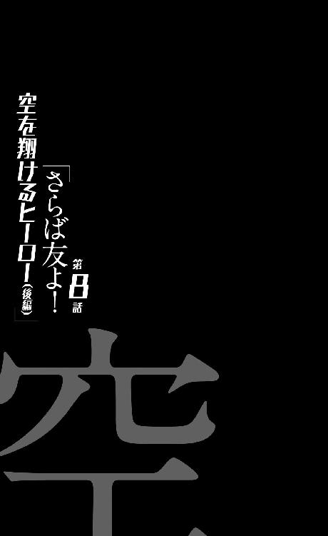
0
大それたことをするために大それた理由は必要ない。
小さなことをするためには小さな理由が必要だ。
1
片腕の剣藤にクルマの運転をさせるわけにはいかなかったので、今回も運転席に座ったのは空々だった。ただし、まだ記憶に新しいこの間、助手席に座っていた在存がどんな目に遭ったか忘れられるわけもない空々は、多少話がしにくくはなることを承知の上で、剣藤を後部座席へと追いやった。まあ疲れたら横になれるし、そちらのほうがいいだろう。
「私は昔から」
と、後部座席から剣藤が語り出す。
前回と違って真昼だし、雨も降っていないので、注視すれば子供が運転していることが丸わかりなのだが、もうそれは、行けるところまで行くしかないと覚悟した。大体、地球撲滅軍の影響力は公権力に及んでいるのだから、法律違反を気にする意味は、いまや空々たちにはほとんどないとさえ言えた。
まあそれでも気休め程度に、空々は『実検鏡』をかけておくことにした。眼鏡で多少は、幼さが消えるだろうという、子供っぽい悪足搔きである。
「自分がいつか、自殺するんじゃないかって怯えてた」
「......？ 自殺、ですか？」
「うん。学校で授業を受けているとき、いきなり机の上にのぼって、自分で自分の手首を切ったりするんじゃないかって......、そんな心配をしながら過ごしていた」
「............」
「いや、もちろんそんなこと、するわけがないんだけど......、でもなんていうか、自分っていう人間が、全然信用できなかったんだ。こいつに私の命を任せて、大丈夫なのかって思ってた」
二人がこんな会話をしているとき、飢皿木博士はもう鬼籍に入っているわけだが、もしも剣藤がこの話を彼にしていたなら、『それは「不安恐怖」の中のひとつ、自殺恐怖という症状だね』と、そう教えてくれたかもしれない。かつて空々が教えてもらったように。
自分はきっと自殺で死ぬ。
そう思っていた、だから思った。
高校に入っての野外学習で、地球の『悲鳴』で学友達が死んだとき──てっきり、自分が殺したんだと思った。『悲鳴』が聞こえない彼女には、同級生が死んだ理由など、原因など、皆目見当がつくはずもないとはいえ、しかしそんな飛躍した発想に辿り着いてしまったのは、彼女のそんな『症状』ゆえだったのだろう。
自殺する代わりに友達を殺したのだと思った。
だからその後、地球撲滅軍からヒーロー候補としてスカウトを受けた際、家族が殺された際にも、同じことを思った。もちろん、そうじゃないことはわかっているはずなのに、どうしても心の片隅に残る疑いを払拭できなかった。
私の家族も私が殺したんじゃないか、と。
目の前で焼かれたにもかかわらず、自分に対する疑いを振り払えなかった。
牡蠣垣はそれをもって『頭の螺子が何本も飛んだ』と表現したわけだが──ならばそれ以前から、彼女の螺子は飛んでいたということになる。いや、元々『その部分』に、螺子など刺さってなかったのだと言える。
自分がやったことだろうと、やっていないことだろうと、何かにつけ罪悪感を持ち、ストレスを抱える少女──精神ブロック剤がなければ、あるいは『狼ちゃん』がいなければ、きっと彼女は、もうとっくに壊れてしまっていただろう。
だから、花屋からのわけのわからない、およそ理不尽な横槍のせいとは言え、ここで地球撲滅軍を離れるというのは、彼女にとっては、ひょっとしたら長生きできるかもしれない唯一のルートだったという言い方もできる。
それに、片腕を失って。
そして飢皿木博士からの忠告を受けて、初めて彼女は考えたのだ。
地球撲滅軍の役に立てなくなって、初めて考えた──人類を守るために戦うというのはいい。今でもその気持ちに変わりはない。ヒーローにはなれなくても、ヒーローを助ける誰かになれるなら、それだけでいいとさえ思う。そう、たとえただの世話係であろうとも。
だけど人類を守ることと、地球撲滅軍のために働き尽くすことは、決してイコールではないのかもしれないと、彼女はそう考えたのだ。今更ではあるが、しかし、もしかしたらまだ間に合うかもしれないことを、考えたのだった。
「そうだよね......、なんでなのかな。家族を殺されて......、殺した人達に怒らないなんて......、おかしいよ、ね？ そらからくん？」
「はあ？」
空々は後ろからそんなことを言われて、驚く。驚いても振り向くわけにはいかないので、空々には剣藤がどんな顔でそんなことを言っているのかわからない。
いや、もしも振り向けたとしても、その顔を見たとしても、空々には剣藤の気持ちなどわからないだろう──そんな彼だからこそ、一ヵ月もの間、家族を殺した相手と同居生活を送れたのだから。
それは剣藤にもよくわかっていることだったので、構わず小声で、
「そらからくんの家族を、殺すとき......、だから私が犯人だってわかるようにテーブルの上に立って......私みたいにトラウマになったらいけないから、殺人現場は見せたくなかったけど......」
なんて、そんなことを思った。
「あー、そう言えば僕のお父さんは、ずっと、家に鍵をかけたかどうかを気にしてる人でしたね。鍵をかけたことを絶対に憶えてるはずなのに、何度も確認するっていう......、あれも不安恐怖の一形態なんですよね、きっと。ああいうオートロックのマンションに住めば、そんな心配をすることもなかったんですかね」
空々のコメントは、相変わらず少しズレていて、しかもそのことに本人は気付いていないのだが、剣藤はそれを、微笑ましく受け取った。とても微笑ましく受け取った。ヒーロー候補から、ヒーロー失格に、更に世話係に、そしていまや逃亡者にまで落ちてしまった彼女にとって、空々のその、危機を危機としてとらえない態度は、どこか安らぐものだった。
「これから、住む場所とかどうします？ しばらくは車中で寝起きすればいいんですか？」
「というより、まずはどこに逃げるのか、だよね......『狼ちゃん』が逃げるとき、あの子は、どうするつもりだって言ってた？」
「詳しくは教えてくれませんでした......まあ、知らないほうがいいってことだったんだと思いますけれど。でも、たぶん、海外に高飛びするつもりだったんだろうなあって勝手に予想してます」
「ふうん......海外か」
「僕達もそうしますか？ 地球撲滅軍の手の届かないところって言うと、やっぱり外国なんですかね......ああでも、密航ルートはもう使えませんか。なんとか出国さえできればって感じでしょうかね」
「確かに『蒟蒻』が言っていた通り、地球撲滅軍の守備範囲は国内全土に及ぶけれど、必ずしも国内のどこにおいても、トップ勢力というわけじゃないよ。国内にだって、対抗勢力はいくつかある......」
「対抗勢力？ 類似組織ではなく？」
「うん......いや、類似組織ではあるんだけれど。競争相手っていうんじゃちょっと表現が足りないような、過当競争の相手。まあ、人類を守ろうという大きな試みは、同時に大きな利権でもあるから、取り合いをしてたりもするってこと......、やな話だけどね。そういうところと戦うのも、機動室の仕事だった。主に第四部隊の担当だったけれど、私もたまに駆り出されていたよ......」
「ふうん......」
そんな頷きが返って来た。子供に大人社会の汚い面を見せてしまったような、嫌な気分になったのだが、それは剣藤のほうだけの問題だったようで、空々は特に気にしていないようだった。いったいこの子は、どこまで現実のありように無頓着なのだろうと不思議に思う。
そういうところと戦う、というのは、同時に、怪人ならぬ人間と戦う──という意味なのだが。あのまま地球撲滅軍に属していたら、自分もそういうことをさせられていたかもしれないという意味なのだが。
わかっているのか、わかっていないのか。
どちらにしろ『ふうん』で済ませてしまいそうな少年だ。
実は私は男なんだと告白しても、『ふうん』で済ませてしまうんじゃないだろうか。そう思った。
「そらからくん。二人で戦おうってそらからくんは言ってくれたけれど、どうかな。これからも地球と戦うつもりなら、そういう対抗勢力に匿ってもらうっていうのが現実的かもしれないね」
「ああ......なるほど。だったら、その腕も治療してもらえるかもしれませんしね。義手云々はともかくとして、その腕、ちゃんとした治療を施さないと敗血症とか破傷風とかになるかもしれませんしね」
「うん......」
怖いことをさらっと言ってくれる。飢皿木博士は専門じゃないとか止血しかできないとか、何のかんの言いながら、あり合わせの料理酒とかお湯とかで消毒くらいはしてくれたけれど、素人考えでも、それで処理が万全だとは思いにくい。
「じゃあそうしますか？ 連絡先とかわかるんだったら、今すぐ電話をかけて。色々、貴重なアイテムも持ってますし、受け入れてもらえるかも」
「どうかな......『破壊丸』レベルの武器なら、どこの組織も当たり前に持ってるだろうから、取引材料としては、いまいちかもね......国内最大グループである地球撲滅軍からの逃亡者を受け入れるとなれば、それなりの覚悟が必要とされるだろうからね」
言いつつも剣藤は、別のものを取引材料として使えば、たぶん大抵のグループは自分達を受け入れてくれるだろうとは思った。別の取引材料というのは、言うまでもなく、空々空本人である。
英雄、空々空。
怪人を識別できる、少なくとも知られている限りは、唯一の人間。
他のグループに、そんな稀有な人間がいるとの情報は確認されていないので、その資質を証明できれば匿ってもくれるだろうし、連れである剣藤の腕も、治療してもらえるに違いない。
だが......、とも剣藤は思う。
仮にどこかの別の組織に属したとしても、同じことの繰り返しになるんじゃないかという恐れも、剣藤としては抱かざるを得ない。互いに嫌い合っていたとは言え、それでも確かに仲間だったはずの『恋愛相談』から、背後から斬りつけられた経験は、強固なトラウマとして彼女の中に刻まれていた。
背中を撃たれるというのは。
軍人にとって何よりの恐怖だ。
「そらからくんは、どうしたい？」
「はい？ 何をですか？」
「何をって......これからのことに決まってるじゃない。地球撲滅軍に無理矢理入れられて、二度も他人の逃亡に付き合わされることになって、もう組織やグループなんて懲り懲りだって思わない？」
「ああ、そういうことですか......いやまあ、懲り懲りっちゃあ懲り懲りですけど、でも、そんなことを言い出したら、今の世の中なんにもできなくなっちゃうでしょう。どうしたって、剣藤さんの腕の治療だけはしなきゃいけないと思いますから──できる限りいい治療を受けられる場所が他のグループだって言うのなら、そこに行きましょう」
あっさりとした態度だった。割り切りもそこまであっさりしていると、剣藤の傷を心配しているというよりは、色んなことをどうでもいいと思っているだけという風にも見える──いやだから、『どうでもいい』のだろうが、それはこの状況でも、揺るぎなくそうなのか。
剣藤としては、『火達磨』と正面から戦い、また『恋愛相談』を後ろから斬りつけた空々の、『仲間』に対する意識を聞き出したかったのだが、あまりうまくいかなかったようだ。
そもそもこの少年に、組織に対する帰属意識はあるのかどうか。
地球撲滅軍を含め、どこに属そうと、『嫌になったら逃げればいい』なんて風に思っているのではないだろうか──たとえ一時的に匿ってもらうためであろうと、剣藤の腕を治療してもらうためであろうと、新たなグループに属してしまえば、そう簡単には抜けられるものではないということを、理解していないのかもしれない。
その辺りは子供なのだろう。
運転を任せ、後部座席でぐったりして、完全に頼り切っている状態の今、思うことではないのかもしれないけれど──剣藤は、自分がしっかりしなければ、と思った。
「......四国に本部を持つ、絶対平和リーグ......通称『絶和』ってグループがあってね。何度か共闘したことがあるから、知り合いもいないわけじゃないの。まあ、地球撲滅軍と違って若干、過激な主張を掲げているんだけれど、匿ってもらうならそこかも......少なくとも、一番手っ取り早く、交渉できると思う」
「へえ。じゃあそこですね」
「そらからくんに......負担をかけることに、きっとなるんだけど」
「わかってますよ。僕の目を取引に使えばいいんですよね？」
「............」
わかっているらしかった。いや、本当にわかっているのかどうかは、わからないけれど。
「んじゃ、早速、電話かけてみようかな......ああ、高速に乗っちゃ駄目だよ、そらからくん。あそこ、カメラだらけだから」
「はい。四国に向かえばいいんですか？」
「いや、もしも交渉が成立すれば、ヘリで迎えに来てもらうことになると思う。今はとにかく、どこでもいいから、遠くに移動することだけを考えよう。封鎖されても突破できるとは思うけれど、戦士レベルが出てこられたら......厳しくなるし」
戦士レベル。
剣藤が一番危惧するのはもちろん、花屋本人が出てくることだったが──花屋が空々の友人であり、そして空々に執着している以上、その名前をここでは出し辛かった。いかに空々自身は、そのことにこだわりを持っていなかったとしても。
「わかりました。携帯電話、使っても大丈夫なんですか？ そういうのって、使うと居場所がバレちゃうとか聞きますけれど」
「暗号化されてるから大丈夫......、通常設定では、身内からだって電波の発信元はわからなくなるようになってるよ『火達磨』戦のときも、使っても携帯からは居場所を特定されなかったでしょ？」
「そう言えばそうでしたね。あのときはそれどころじゃなかったですけど......そうですか。じゃ、僕、しばらく黙ってますので」
「うん......」
と、剣藤が片腕で、しかも利き手でない左手で、苦労して携帯電話の操作を試みた、そのときだった。番号を登録していなかったので記憶頼りで『絶和』へとダイヤルをしている最中、六桁あたりまで番号を打ち込んだところで、いきなりその画面が切り替わった。
着信があったのだ。
しかもその着信は、『茶飲み話』からだった。
第九機動室室長、牡蠣垣閂。
「...............」
一瞬、考えたが、剣藤は応答のボタンを押した。
「もしもし......私。私だよ」
空々に聞こえないような小声で話そうと思ったが、うまくいかなかった。むしろ声が大きくなってしまいそうになるのを、抑えるのに苦労した。もしも精神ブロック剤を飲んでいなければ、それに片腕を切り落とされて貧血気味でなかったら、怒鳴ってしまっていたかもしれない。
怒鳴り。
悲鳴をあげていたかも。
「......いい。もう放っておいて。私のことはもう放っておいて」
受話口から聞こえる『茶飲み話』──牡蠣垣の言葉に、剣藤はそう答える。自分では少なくとも冷静なつもりで。
相手が何を言っているのかはなぜかうまく聞き取れなかったが、どうやら、今ならまだ間に合うから逃げるのをやめて戻ってきなさいと、牡蠣垣は剣藤を説得しようとしているようだった。何が間に合うのだろうと思った。
細かい事情や経緯までは、まだ剣藤には把握できていなかったけれど、花屋がどんな演出で剣藤を始末しようとしたのか知らなかったけれど、しかしどうあれ、室長である牡蠣垣の頭越しに、あんな大規模な作戦を実行できるはずがないのだ。
つまり彼は事前に剣藤が襲われることを知っていて、のみならず、その作戦に許可を出したのである。
なのに今更、何が間に合うのか。
「わかってるよ、『茶飲み話』......、あなたはそらからくんを取り戻したいだけなんでしょ？ そんな甘言に弄されて、のこのこと私達が戻ったら、私だけ処分されちゃうんでしょ？ 今、どんな約束をしたところで結局あなたは、『蒟蒻』に言われるがままに、その許可を出すんでしょ？」
そんなことは絶対にない、そんなことには絶対にしない、と牡蠣垣は繰り返した。その言葉を聞いていると、本当に、帰っても大丈夫な気もした。切り落とされた腕は軍できちんと保存していて、元通りとはいかないかもしれないが、今ならまだ引っ付くかもしれないというような話もされた。なんとも魅力的な話だった。
しかしその魅力的な話が、剣藤にはもう、味気なくしか聞こえなかった。どうして牡蠣垣の話が、ここまでつまらなく思えるのか、自分でも不思議なくらいだった。
「あなたは」
と、剣藤は言った。どうやらそれが、今の自分の認識らしいと確認しながら。
「あなたは私よりも『蒟蒻』を選んだんだよ。剣藤犬个じゃなくて、花屋瀟を選んだんだよ。それだけのこと。今更それを取り返そうとしないで......今更それを取り繕おうとしないで。そらからくんは絶対に渡さない。そらからくんはあなたには、絶対にあげない。そらからくんは私の犬だから。私のペットだから」
絶対に離さない、と。
剣藤は力強く言った。だからその言葉は、運転席の空々にも聞こえてしまったと思うけれど、構わなかった。どうせ空々は、そんなことを聞いても言われても、気にしないに決まっているのだから。
「もう二度と電話してこないで。あなたと話すことなんて何もない。その腕はもういらないよ、捨てといて。うるさいな、少し黙ってくれない？ あなたのそういう小さな子供を甘やかすような声が、私は昔から大嫌いだった。子供を一人前に扱っているようで、あなたは誰より、子供を子供扱いしていた。子供をるのが楽しかった？ 理解のある大人の振りをするのが楽しかった？ あなたはそんなに慕われたかったのかな。でもバレバレだよ、そんな下心。あなたの態度は、ただ子供に媚びを売っているようにしか、私には見えなかった。ねえ、教えたげるけど、私はあなたの子供じゃないの」
剣藤は冷たく言い放った。
「死ね。ロリコン」
2
通話終了ボタンを押したときに、何かが終わった気がした。それはたぶん、ずっと昔に終わるべきものだったのだろう。きっと、牡蠣垣が剣藤を、ヒーロー失格として切り捨てたときに、本来は。
「ふう......ごめんね、そらからくん。醜い内輪揉めを聞かせちゃって」
「はあ。てっきり仲良しだと思ってたんですけれど、剣藤さん、牡蠣垣さんと仲、悪かったんですか？」
「......うーん」
やっぱりこの子はズレているなあ、と思う。現実に対する受け入れは広いのかもしれないが、人の心や人の関係に対する認識はまるでちぐはぐだ。大体、今の会話を聞いていて、感想が『はあ』というのも、随分な話である。どれだけ興味がないのだ。
逆に気になって、訊いてみた。
「ねえ、そらからくん。きみは『蒟蒻』のことをどう思っているの？ 『蒟蒻』......ううん、花屋さんのことを、どう思っているの？」
「どうと言われても......友達ですけど」
あっさりと答える空々。特に照れも衒いもない返事だった。
予想通り過ぎてやや怖い。地球撲滅軍という立場を離れて見てみると、不気味でさえある。
「付き合ってるとかはないって言ってたけど......、付き合いたいとか、好きとか、そういうの、本当にないの？」
「ないですね。そういう女の子としてって言うのは......いや、こういう言い方をすると花屋に失礼なのかな？」
空々は、この状況において、花屋に対する『失礼』を考慮しているようだ。
「でも、花屋のほうが、そういう風に僕のことを見ていないと思いますし......。僕って、男女間の友情はあるって思ってる奴ですから」
「ふうん......そう。そらからくんは、男女間の友情はあるって思ってる奴なんだね」
剣藤の意見は言わないほうがいいと思った。議論をしたくて話を振ったわけではない。だからただ、相手の言葉を繰り返すだけで、会話をしたような振りをした。
「まあでも今はちょっと怖いので、逃げたほうがよさそうです。でもそう言えば、昔からそういうとこありましたよ、あいつ。少年野球時代ですけれど。僕が他のチームメイトと仲良くしていると、そいつをバットでぶん殴ったり」
「......それ、結構な事件じゃないの？」
「まあ、騒ぎにはなっていたみたいですね......ただまあそういうのって、みんな結構、見て見ぬ振りをしちゃうものなんじゃないですか？ 友達とか先輩とか後輩とかの奇行って、適当に、あるいは面白がってスルーして、おしまいじゃないです？」
空々は言う。それは本当に、花屋の奇行（？）を、何とも思っていないような口調だった。
「あいつ変だよなー、とか、怖いよなー、とか。地球撲滅軍にしたって、『火達磨』さんのあんな逸脱した性格をずっとスルーしてきたんでしょう？ あの『恋愛相談』さんにしたって、相当いい性格してたじゃないですか」
「それとこれとは──」
同じ。なのか。
花屋の性格の極端さだって、剣藤は知らなかったわけではないのだし。
スルーして、見過ごして、見ない振りをして──前兆をすべてやり過ごしておいて、そしてことが起こってから、『いつかこんなことになるんじゃないかと思っていた』などと言うのだ。
それまでの地球の小規模な悲鳴を『取るに足らない、局所的な大したことのない出来事』と言って、ずっと聞き逃しておきながら、優先順位を低く設定しておきながら、『大いなる悲鳴』を、まるで予想できた悲劇のように言い、剣藤を責めた地球撲滅軍のように──か。
「............」
現実を『受け入れる』資質を持っているのは、となると案外、空々だけではないのかもしれない──むしろ空々は向き合っているのかもしれない。見て見ぬ振りをせず、暴力的で猟奇的な友達を、友達として受け入れていた。
だからこそ、彼には、怪人が見えるのかもしれない。
「ねえ、そらからくん──」
何かその辺りに、人類と地球との戦いの鍵がありそうな気がして、剣藤はもう少し深い話をしようと思った。花屋について、そして花屋と空々との関係について。
だがかすかに見えたような気がしたそのヒントの追求は、強引に中断させられる──忘れてはならない、彼女達は今、逃亡劇を演じている最中なのだ。
許されるアドリブには限りがある。
「......剣藤さん。まずいです」
「え？」
空々はバックミラーを見ながら言っているようだった。なぜこの子はこうも運転に精通しているのだろう。『狼ちゃん』に、どれだけ厳しい指導を受けたのだろうか。
「まずいって、何が？」
「追っ手です──後ろを見てください。あれって、地球撲滅軍のクルマですよね？」
言われて剣藤は、リアウインドウ越しに後ろを見ると、猛スピードで近付いて来る一台の車を視界に捕らえた。それは空々の言う通り、見覚えのあるリムジンだった。先日哲人幼稚園を襲撃するときに、花屋と空々と剣藤の三人で乗ったクルマ。そして空々家からあのマンションへ移動するときに、牡蠣垣と空々と剣藤の三人で乗ったクルマだった。
今となってはそのどちらの記憶も、はるか昔のことのようだったが。
あのとき三人だったことが信じられない。
今は二人。
「......『脇見運転』」
「はい？」
「『脇見運転』。本名、了城娯也。第九機動室の専属運転手だよ──紹介してなかったね、そう言えば。外部の人間じゃなくて、内部の人間。そしてあのクルマが、『脇見運転』が軍から支給されているアイテム、『刑車両』......そらからくん。スピードを上げて。あのクルマに追いつかれたら終わりだよ」
「でも、信号、変わりそうですけど」
「あえて言うまでもないよね？」
「はい」
返事と同時に空々はアクセルを思い切り踏み込んだようで、加速する。剣藤はそれを受けてシートベルトを外した。普通とは逆の行動だが、状況は既に普通ではない。いや、最初から普通ではない。
ゲームセンターのカーゲームのように加速し、スピードを上げたところで、所詮このクルマは一般車である、『脇見運転』の『刑車両』に追いつかれるのは時間の問題だ。その前に手を打たなければ。
剣藤はドアについているスイッチを押して、窓を開けた。
判断は素早かったし、そもそも迷いなどなかった。
精神ブロック剤が効いていなくとも、剣藤は同じことをしただろう。牡蠣垣の、ひょっとした本当だったかもしれない救いの手も振り払った彼女にはもうあらゆる退路がなく、まただからと言って、大人しく死ぬ気もなかった。少なくとも空々が手を引いてくれている限りは。
生きるつもりでいた。戦うつもりでいた。
開けた窓から、剣藤は思い切り勢いをつけて、左手で、三本ある『切断王』の一本を、後方目掛けて投げた。利き腕でなくとも関係ない。狙った獲物は外さないという機能を持つハイテク手斧は、そのまま『刑車両』の運転席に命中した。
もちろんその威力は、『火達磨』の『ファイヤー・ボール・アース』にはてんで及ばない、自動車の半分を吹っ飛ばすような威力があるはずもないけれど、それでも加工されているフロントガラスを割り、中の人間を一人殺すには十分だった。
手斧が直撃した際に『脇見運転』は誤ってハンドルを切ってしまったのか、『刑車両』は雪道でも運転しているかのようにスピンしてしまい、ガードレールにぶつかった。
誰もいない荒野での出来事というわけではない、むしろ町の往来と言ってもいいような交差点付近での出来事だった──当然ながら周辺被害もそれなりに出た。『刑車両』のスピンをかわそうとした対向車が連鎖的に事故を起こし、歩道に乗り上げたり、急ブレーキをかけて追突されたり、あちこちで煙があがることになった。
いっそ爆発でもしてくれれば目くらましになるのに、と剣藤は思ったが、まあ周囲への被害が少なかったことは喜ぶべきことなのだろう。
「どうしてもう追いつかれちゃったんですかね」
空々が特に動じた様子もなく言う。バックミラーやサイドミラーで状況はちゃんと確認できているだろうに、焦った様子もない。彼は決して予想外の出来事に対して驚かない人間ではないので、後方に『脇見運転』が現れた時点で、剣藤がどう対処をするのか、もうわかっていたのだろう。つまり彼もまた、戦う覚悟は決めている。
「そうだね......三本しかない『切断王』を、早くも一本失くしちゃった。もう投げるのは無理かな......」
「昔、交通事故を見るたびに、思っていました。正確には、みんなが交通事故を携帯電話で写メってるのを見るたびに、ですけれど」
スピードを緩めないまま、追っ手がなくなっても、もう信号も法定速度を守ることも諦めたらしい空々は、なぜか関係ないような話を振ってきた。
「ああいうのってどういう心理なんだろうなあって。よくもまあ、人が困ってたり、痛い思いをしていたり、不幸だったりするところを、写真に撮ろうって気になるなあって。不謹慎云々を言う以前に、嫌じゃないのかって」
「............？」
「だから僕はそういうのを見るたびに、僕はああいう人間じゃないぞ、あいつらとは違うんだぞって、事故現場から目を逸らすように立ち去っていました──僕は下世話な野次馬じゃないって、そういう事件をスルーできる自分を、誇らしく思ってさえいました。けど、まあ飢皿木博士に指摘を受けてから考えてみましたけれど、たぶんそれも嫉妬だったんでしょうね。羨ましかったんでしょうね、僕は」
空々は無感動な口調で言う。それ自体を悔いたり、反省したりしている様子はなく、ただ淡々と、事実を事実として語っているだけのようだった。
「少なくともあの連中は、事故と向き合っていた。でないと写真は撮れませんからね......僕みたいに、目を逸らして歩いてはいなかった。剣藤さん、僕も言うほど、現実を見て生きているわけじゃないんですよ」
「......そう」
どうして彼がそんなことを言い出したのかはわからなかった。いや、そうか。話の途中ではあった。それにあれだけ頻繁にバックミラーを確認している空々が、怪我人（どころではない）の剣藤の様子を、逐次確認していないわけもない。
だからこの話は、彼なりの慰めだったのだろう。よくわからないが。現実から目を逸らしているのは誰も同じで、でも意外と誰でも、自分なりの方法で、現実とは向き合っている──とでも言いたいのだろうか？
剣藤も、そうだったのだろうか？
だけどどうして──ならば剣藤には、剣藤にだけは、地球の『悲鳴』が聞こえないのだろう。本当は聞こえているのに、忘れているだけなのだろうか。だけどそれでは『小さな悲鳴』からも生き残れた理由がわからない......それはただの『たまたま』なのか？
自分を特別だと思い込んでいた。
理由は『特別だから』でよかった。
だけど──もっとも考えるべきだった、もしも、自分にたまたまではなく、『聞こえない』理由があったのだとすれば。
「......『脇見運転』に追いつかれたのはたぶん、『茶飲み話』との通話が原因だろうね......、電波の発信場所やらは暗号化されていても、電話である以上通話内容は、伝わっちゃうんだから。私が話している背後の音とかから、大体の居場所を特定したんじゃないのかな」
「ああ......、ミステリードラマでよくある奴ですね。電車の音とか、犬の鳴き声とか、そういうの。でも、あの通話中に、なにか位置を特定されるような音が入りましたっけ？」
「『茶飲み話』はエンジンの音から車種を当てるような変態だからね。何がヒントになるかわからないよ......ごめん、迂闊だった。あんな電話、出るべきじゃなかった」
なぜ出てしまったのだろう。色々とお世話になったあの優雅な紳士に、ひと言いってやりたかったのか。それとも未練だったのか。どちらにしても、逃亡劇の最中には、あまりに大きな過失だった。
「とりあえず『脇見運転』は撃退したけれど、すぐに他の追っ手もくると思う......、たぶん、そうは言ってもそこまで厳密な特定まではできていないはずだから、封鎖ラインが引かれるまではまだ余裕があると思う。その前に、クルマを乗り換えよう」
「そうですね......そのほうがいいでしょうね。今の事故、目撃者もたくさん出たでしょうし。それこそ、写メも撮られたでしょうし。じゃあ、その辺のモータープールに入りましょうか」
「いや、もうちょっと離れてからにしよう。それに駐車場に停めてあるようなクルマじゃなくて、違法駐車してあるクルマのほうがいいよ。持ち主がレッカーされたと思い込んでくれるから、盗難届けが出るのが、気休め程度には遅れる」
「ああ、なるほど......だから、あのときも違法駐車している車両を借りたんですね」
感心したように言う空々だったが、こんな知識も牡蠣垣から仕入れたものなので、剣藤の気分としては、あまり誇れたものではなかった。褒められて後ろ暗くなったくらいだ。見栄や意地としてもそうだし、そもそも手の内が相手にバレているということでもある。
それでもそうするしかないのが現状だが。
いい。
情けなくても生き延びる。
「とにかく、しばらくは飛ばしてて......。その間に私は、『絶和』の知人への電話を済ませておくから。助けを求めるというよりは、交渉って感じになると思う。......多少大袈裟にそらからくんのことを伝えるけど、いいよね？」
「はい、もちろんです。多少なら」
「うん、多少だよ」
多少ではなかった。
3
ヒューマニズムという言葉がある。
あるいは似たような言葉として、人道的と言ったり、人間らしさと言ったりもする──だからヒューマニズムの対義語としては、非人道的だったり、『それでも人間か』だったり、そんな言葉があるわけだ。
人類を守るために我を捨てて行動しようという立場、命を守るためにあらゆる努力を惜しまず、どんな犠牲も厭わないという立場は、ヒューマニズムの極みと言えよう。
一方でヒューマンエラーという言葉もある。人間ゆえの失敗、人間ゆえのミス──システムをどれほど厳密に構成しようと、それを扱うのが人間である以上、完璧なシステムなどというものは存在しない。
たとえば絶対に開かない鍵がかかった金庫があったとして、じゃあその金庫から中身を盗み出すことが絶対に不可能なのかと言えば、そんなことはない──『持ち主が鍵を落とす』『暗証番号を書いた紙を紛失する』というようなうっかりミスは起こりうる。
いや、ミスならばまだ、救いはあるのだが──ミスでないケースも想定しうる。つまり、鍵を持っている『人間』が、出来心にかられて中身を盗むというケースだ。
悪意をもって使用されれば、本来市民を守るために定められているはずの法律だって、詐欺の道具と化す。理論と経緯だけ聞いていれば、善意の団体にしか思えない夢と希望にあふれたグループが、いつの間にか人権を蹂躙するただの悪の組織に成り果てるなんて、とてもよくあることだ。
私欲に溺れ、権力に溺れ。
正しいものなのに、間違った使いかたをする──だがこれもまた人間の人間らしさであり、ヒューマニズムの極みなのだ。人間でなければ、そんなことはしない。できない。動物も植物も、地球上にはうるさいくらいに溢れているけれど、生物界の重箱の隅をどれほどつついたところで、正しいものを間違って使える生き物など、人間くらいだ。ゆえにヒューマンエラーもヒューマニズムなのである。
次なる『大いなる悲鳴』を防ごうと、ひいては人類を守ろうと、謎の怪人と、そして地球と戦うという高邁なる思想を備えた地球撲滅軍の正しい力を、今、一人の女子中学生が間違った使用法で振るっている。
そしてその間違いが正されることはない。なぜならその間違いは正しいからだ。
第九機動室副室長という立場と権力をもって、彼女は正しく間違い続ける──怪人のようにではなく、人間のように間違い続けるのだった。それを責める者はいない。誰もが彼女の行動を諒とし、納得し、従い──逃亡者を追う。
「......見失った？ そう。別にいいわ。行き先の見当はつくしね。いいの、こっちはこっちで準備は整ったし。時間稼ぎとしては上等だったわ。クルマを用意して......はい？ 『脇見運転』が死んだ？ それがどうしたのよ。こんなときにそんなこと、いちいち報告しなくっていいって。仲間の代わりはいくらでもいるでしょう」
それは人間が人間を狩る、人間らしい『狩り』だった。
地球に意志があれば、自分の上で繰り広げられるそんなヒューマニズムをどんな風に思うのだろう──あげるのは、嬉しい悲鳴だけにして欲しい。
4
交渉の結果、絶対平和リーグ──通称『絶和』との合流地点は、とある大手出版社の屋上ということになった。ビルディングの屋上、つまりはヘリポートである──そこで空々と剣藤は待機して、『絶和』が四国から飛ばすヘリコプターの迎えを待つというわけだ。
警備の厳しい出版社の屋上に行くというのが、空々達にとってはまず難題だったが、そこは『絶和』が手を回してくれた。息のかかった社員との偽のアポイントメントを設定してくれたので、受付でその通りに書類に記入し、セキュリティの目を潜った。受付の社員が、長い竹刀袋を担いだ少年と、懐に何か隠していると見える隻腕の少女を、どんな風に思ったかは定かではないが......、しかし、彼らは跡の濁りを気にする余裕のある、飛び立つ鳥ではない。
ほんの数時間、欺ければいい程度の偽装だ。
エレベーターでは屋上までは行けなかったので、まず最上階まで行って、それから階段を使った。当然のように施錠されていた。まあヘリポートなんて、この不景気のご時世、そうは使わないのだろう。
「どいて」
と言って、そこは剣藤が、懐から取り出した手斧で破壊した。投擲武器としての『切断王』だが、『恋愛相談』の頭蓋を真っ二つにしたように、手持ちの武器としても、小回りの利く便利なアイテムだった。
人間を、人間だとわからなくするくらいバラバラにする──という機能が欠けていることを除けば、『切断王』のほうが『破壊丸』よりユーザブルかもしれなかった。
そして屋上に出る二人。
ヘリの手配にかかる時間は予測できないとのことで、合流の時間をはっきりとは決めていなかった──向こうはできる限り急ぐと言っていたが、ならばこれは、『絶和』にどれくらいのことができるかを計る試金石になるのかもしれなかった。いずれにしても、だから二人は、あとはここでただ、ひたすらに待つだけだ。
待つだけ。
ヘリの到着、『絶和』からの『迎え』を待っている間に、地球撲滅軍からの『迎え』が来てしまえば、ゲームオーバーだと言えた。もしも地球撲滅軍に拘束されたら、そのとき『絶和』は、表立って軍と対立するリスクを冒してまでは、ふたりを助けてはくれないだろうと予想できる。
幸い、ビルの屋上は、ヘリポートゆえに、開けた場所だ。
そしてこの見晴らしのよい場所からなら、ここに近付いてくる影があれば、すぐにわかる──そう思いながら空々は、ビルの縁に立ち、真下を見下ろした。
二十六階建てのビル、落ちたらまず命はない高さだが、空々は特に気をつける風もなく見下ろして──今のところ、不審な人物は周辺にいないと確認した。
もっとも、何をもって不審とするかは、初心者の軍人、しかも退役軍人である空々にわかるはずもない。そもそも、今の自分達以上に不審な人間など、なかなかいないだろう。
つまり今の自分達より不審な人間がいたなら、警戒すればいいのだろうか？ そんなことを思った。
「とりあえず......、追っ手は振り切ったのかな。乗り捨ててきたクルマは、全部見つかってるかもしれないけど......」
Ｈ、と大きく描かれた床に腰をおろして、ようやくひと心地つけたという風に、空々の背中に剣藤は言った。
「見張りもいいけれど、そらからくん。あっちが見えるってことはこっちも見えるってことだから、あんまり身を乗り出さないほうがいいよ」
「あ、はい......そうですね」
もちろん『絶和』としては、そういう立地条件のビルを選んだのだろうから当たり前だが、周辺には他に背の高い建物はない。精々遥か遠くに見える電波塔くらいのものだが、仮にあそこから双眼鏡なりでこちらを監視しているとしたら、もうとっくに見つかっているはずなので、諦めるほかない。考え過ぎはよくない。
そう、これは賭けだ。ギャンブルなのだ、と空々は思った。
「『絶和』と合流したら......こき使われそうですね、僕は」
言いながら剣藤のところまで戻る空々。剣藤はそれを聞いて、気まずそうに、
「ごめんね」
と言った。
「ああでも言わなきゃ、迅速には対応してもらえそうになかったから......、その代わり、ちゃんと住処は用意させたから。怪人を見る『目』を持っているってだけじゃなくて、あの『火達磨』を撃退し、逃亡中には『恋愛相談』までやっつけたって逸話を付け加えたら、『絶和』もふたつ返事だったよ」
「ええ......まあ、噓はついていないですよね」
「うん。もちろん、住処って言っても、私と一緒に住んでたあのタワーマンションよりも豪勢ってわけにはいかないと思うけれど......」
「......今から思えば」
と、空々は言う。
「僕に対する、破格とも言えるあの待遇もまた、花屋の計らいだったってことですよね。あいつが自分の立場と権力を使って、牡蠣垣さんを言いくるめて、あんな贅沢過ぎる環境を用意してくれたってことですよね......あんなもんなのかなあって思ってましたけれど、まあ目のいいヒーローってくらいじゃ、あそこまで厚くは持てなしてもらえませんよね」
「......うん。あれは行き過ぎだと、私も思っていた。だから最初の頃、私、態度悪かったでしょ」
剣藤の場合はそれに加えて、新入りの世話係に任命されてしまったのだから、たまったものではなかっただろう。暴政圧政もこれ極まれりという、花屋の横暴過ぎる振る舞いである。
そしてそれは──未だ破綻していないのだ。
「......しかし、わかんないですね。どうして花屋には、そこまでの自由が許されているんです？ 中学校に通いながらの二重生活を送っていることもそうですけれど......、牡蠣垣さんだって、つまりは最初から、花屋の言いなりだったってことですよね。十四歳なのに副室長っていうのも、名誉職とかいっても、おかしな話ですし」
空々は感じた疑問をそのまま口にする。今となっては今更でしかない疑問だったが、こういう疑問を今更であろうと、あっさり口にしてしまえるからこその空々だった。
「ま......、どんな組織であろうと、動かしているのは人間だってことだよ。大事なのは人脈ってことだよ。立場を得るためには、コネクションが重要になってくるとか、ね──上のほうの人に気に入られれば、簡単に出世できるしね。地球撲滅軍の中にも、学閥みたいなものはあるし」
「学閥......、いや、でも、花屋の場合、学閥とか関係ないですよね？」
「うん」
「家族は普通の一般人だって言ってましたし──」
「だからさ。まあ別に『茶飲み話』は、『蒟蒻』の言いなりだったってわけでもないんだよ。むしろ言いなりだったのは『蒟蒻』のほうだったのかもしれないね。可愛がられる子は強いって言うか......、ほら、大人って、素直な子供のほうが好きじゃない」
剣藤は意味深に微笑んだ。空々からすれば、それは意味深と言うよりは意味不明だったけれど。
「そらからくんは男の子でよかったね」
「............？」
「私はそういう意味じゃ、可愛がられる才能はなかったな──私は」
可愛がる側の人間だったみたい、と言った。その声は空々までは届かなかった。それでいい。自分の心に届けばいいと思った。今までは地球の悲鳴どころか、自分の声さえ、剣藤には聞こえなかったのだ。
「ねえそらからくん。お願いがあるんだけど」
「あ、はい。なんでしょう」
「なくした腕が痛くなってきた」
「......？ 幻肢痛って奴ですか？ ないはずの部位が痛く感じるっていう......」
「いや、そういうんじゃなくって、普通に傷口が痛くなってきた。どうも精神ブロック剤が切れてきたみたい......」
「あ......、えっと、でももう、精神ブロック剤はないから......。そうだ、じゃあ、飢皿木博士からもらった痛み止めを......、飲んでみます？」
気休め程度、と言っていたけれど、本来痛み止めとして使うべきではない精神ブロック剤より、薬剤としては案外効果的かもしれないと思って空々はそう提案したのだが、剣藤は首を横に振った。
「あれはもうちょっとあとかな......、今眠くなっちゃうとまずいでしょ。ヘリの中でも、なるべくなら寝たくないし......、『絶和』の人達に、できれば弱みを見せたくないからね。だから、お願い、そらからくん」
そして彼女は言った。
「抱かせて」
返事を待たずに彼女は左腕を伸ばして、空々の背に回し、強引に引き寄せた。強引に、とは言っても片腕でのことである、抵抗しようと思えば空々は、されるがままに抱き寄せられるなんてことはなかっただろうが、しかし彼としては、抵抗する理由はまったくなかった。
されるがままに抱かれた。
剣藤の頭が空々の肩に載り、剣藤の肩が空々の頭を支える。
「うん......、やっぱり、安らぐ。痛くなくなっていく」
「いや、僕にそこまでの効用があるとは思えないんですけれど......」
本当に安らいだ顔をする剣藤に、空々は困惑したように言う。
「あれです、それ。剣藤さん。プラシーボ効果って奴だと思います」
「そんな難しい言葉、知らない......アニマルセラピーなら知ってる。そらからくんを抱いてると、癒される。斬られた腕も、生えてきそう」
「はあ......」
そうですか、生えてくればいいですね、と言って、別に納得したわけでもなかっただろうが、空々は頷いた。いや、密着していたので、頷けるわけもなかったが。
そして『狼ちゃん』。
左在存は、剣藤犬个にとって本当に大きな存在だったんだなあと彼は実感した──彼女が死んでいなければ、きっとこんな状況にはなっていないんだろうなあ、とも。
まあいいや。
あのギャンブラーの代わりを僕が務められるのなら、これからも、どこに行ってもそうし続ければいい──そんな風に考える空々少年は、気付いていない。
いまや自分が剣藤にとっては、あるいは最初からだが、『狼ちゃん』の代わりではないことに、気付いていない。鈍くも、また愚かにも、まったく気付いていない。
少なくとも──あとはただ死ぬしかない、ただ殺されるしかないという状況において、颯爽と現れ、自分を救ってくれた人間に対し、何も思わないなんてことが可能な者など、そうはいないということくらいには、彼も気付くべきだろうに。
剣藤が今。
空々のことをどう思っているのか、気付くべきだろうに──もう自分は軍から、一人で、しかも片腕で逃げるしかないという悲壮な決意をしたときに、一緒に逃げようと言ってくれた年下の少年を、どれくらい彼女が頼もしく思ったのかを、気付くべきだろうに。
とは言え、まあ気付けないのかもしれない。
家族を殺されても何も感じず、その相手とこんな風に抱擁できる空々は、たとえ誰かから命を救われたところで、同じように何も感じないのかもしれないのだから──彼こそが他ならぬ、『そうはいない』人間なのだからして。
そもそも抱擁と言っても、やはり空々のほうからは、手を回していないのだから。だらりと彼の手は、下がったままだ。もっともこの下げた手の位置は、皮肉にも彼を救うことにもなるのだが──
「おなかすいたなあ。ヘリが来たら、中でケーキ食べようね」
「そうですね。これ以上持ち歩いていたら、傷んじゃいますし」
「ヘリの中にフォークとか、あるかな......あ、でも駄目か。右手がなかったら、食べれないや。そらからくん、食べさせてくれる？」
「フォークなら左手で使えるんじゃないですか？」
「左手は、そらからくんを抱いてるから、駄目なの」
剣藤は言う。
「どうしてもって言うなら、口移しでいいよ」
「......は、はあ」
その言い方に空々はたじろぐ。
「あの......剣藤さん。ひとつ聞いてもいいですか？ こうして地球撲滅軍から逃げていると、どうしても考えてしまうことなんですけれど。『狼ちゃん』を逃がしているときも、ちらっと思ったことなんですが」
年上の少女から一方的に抱き締められているという状況下で、空々はやっぱり、ズレたことを言い出す。彼としてはただ待ち時間を埋めるためというか、迫ってくるような剣藤の言葉から逃げたいだけの会話だったのだが、今の剣藤にとっては、それは重い質問でもあった。
「剣藤さんはなんで人類を守ろうと思うんですか？」
「............」
「いや、もちろん、こういう展開になった以上、『絶和』において、僕がそのための行動をするのは、別にやぶさかじゃないんですけれど......、剣藤さんは、ずっと人類を守るために戦ってきたのに、滅私の気持ちで戦ってきたのに、今、こんなことになっちゃってるんですよね。なんていうか......嫌になっちゃいません？」
「......飢皿木博士は、私がまるで、家族を殺された復讐で地球を敵視しているみたいな風に言ってたけど、言われてみれば実際そういうところもあったんだけれど......、それだけじゃないよ」
それだけとは思いたくないよ、と言い換えた。そちらのほうが率直で、今の彼女の気持ちに近かった。それ自体、飢皿木からあんな風に言われなければ、思いもしなかったことだったが。
「私は人間が好きなんだよ。人間が作った、この社会が好きなんだ。だから守りたいんだよ」
「腕を失って、その人間から追われてもですか？」
「腕を失って、その人間から追われてもだよ」
剣藤は言った。
「そりゃ、いいとこばっかの人間なんていないじゃん。でもさ、困った人間が面白いゲームを作ったり、いい映画を作ったりもするじゃん。性格の悪い人でも、便利な家電を作る一翼を担ったりするし。まあ嫌な奴も、本当に死んだほうがいいような奴もいるけれど、でも地球温暖化とか、『大いなる悲鳴』とかで、まとめて一掃されるほど、価値のない生き物じゃないでしょ」
「......そうですね」
空々としては違う答を期待していたというのが正直なところだった。ただまあ、わかっていた答でもあった。地球撲滅軍や牡蠣垣から気持ちが離れても、きっと彼女は殺されでもしない限り、人類を守ろうという気持ちを手放さないだろう、と、なんとなく空々は察していた。
それが正しいか間違いかなど、関係ないのだ。
善も悪もねえ。
在存風に言うなら、そういうことだ。
もうその気持ちは強固になり過ぎていて、頑なを通り越して、彼女そのものになってしまっている──もしも彼女を地球との戦いから引かせたいのなら、もう片方の腕も切り落とすしかないだろう。
自分がそうすべきなのだろうか、と、思わなくもない空々だった。
もしも先日の、『地球』との遭遇がなければそうしていたかもしれない──自分はそういうことができる人間だと、空々は思っている。いや、確信していると言っていい。
その証拠に、つい半日前に『恋愛相談』を搔っ捌いたことを──彼はほとんど気に病んでいない。剣藤を助けるためには仕方がないことだったとか、他に方法がなかったとか、とどめを刺して命を奪ったのは剣藤だとか、そんな言い訳さえしていない。剣藤にも、自分にもしていない。もちろん訊かれたらそう答えるのだろうし──ひょっとしたら反省し、気にしている演技をするのかもしれない。
だが自信を持って言える。
僕は今日の夜、何事もなかったかのように、魘されることなく眠るだろうと──確信を持って言える。もちろん、彼に今日の夜が訪れればの話なのだが。
「......ヒーローか」
「うん？ 何？ そらからくん」
「いえ、やっぱりヒーローに向いているのは、僕よりも剣藤さんなんだろうなって思っただけです。僕は人類を守ろうなんて大それたこと、やっぱり思えませんし......、もしも『絶和』で怪人と、地球と戦い続けるとしても、それはきっと、次の『大いなる悲鳴』のとき、死にたくないからなんだと思います」
「次の──『大いなる悲鳴』？」
変に確信に満ちた言葉に、剣藤が疑問を覚えたらしいのを受けて、空々は慌てて「なんでもありません」と言った。剣藤はそんな空々を訝しそうに見てから、
「ねえ、そらからくん」
と言った。
「きみをヒーロー扱いして、救世主扱いした私達が......私が言うのもなんだけどさ。そんなに気負うことはないと思うよ。なんていうか、もっと気楽でいいと思う。私や、地球撲滅軍のみんなは、自分を鼓舞するために、わざと大きな言葉を使うけど、あえて強い言葉を選ぶけれど、でも、たぶんきみにはそういうのがいらないんだと思う。そらからくんは、もっとてきとーに、人類を救おうとしていいと思うよ。使命感とか、義務感とか背負わずにさ。反射的に、思わず守っちゃった、みたいなので──一ヵ月、きみの面倒を見てきた私が思うにさ」
面倒を見てきた、という言葉に剣藤は自分で笑ってしまった。今面倒を見られているのは確実に彼女のほうだし、これからもきっとそうなると思ったからだろう。
それでも言う。
「色々考え過ぎなんだよ、きみは。なんだったら、私のために地球と戦ってよ」
「え......？ 剣藤さんの、ためにって？」
空々は言葉の意味を計りかねて鸚鵡返しに訊き返す。剣藤はにやけて言った。にやける、なんてことが自分にあるなんて、つい一ヵ月前まで、彼女は思ってもいなかっただろうが。
「うん、私のために。女の子を守るために強大な敵と戦うなんて、そっちのほうがよっぽどヒーローっぽいんだぞ、そらからくん」
それが。
心臓を貫かれるまでに発した、剣藤犬个の最後の言葉になった。
5
剣藤犬个は見ていた。空々の肩越しに、屋上とビル内部を繫ぐドアを、見るともなく見ていた──確かに視界に捉えていた。だが、意識して見ていたわけではなく、ただの風景として見ていただけだった。空々を抱きしめることに執心していた彼女は、何も見ていなかったと言ってもいいくらいだった。
そう言われれば、確かにそのドアにかかっていた錠を手斧で壊したのは剣藤なわけだが、それだって実際、はっきりと憶えていたわけではない。
その扉をちゃんと閉めたかどうかを、憶えていたわけではない。
だからその扉が、今現在、閉じきっておらず、風に揺れているのを見ても──意識に捉えたとしても、自分がうっかり、ちゃんと閉めなかっただけかもしれないと、そんな風に思っただろう。
誰かがその扉を開けた、なんて推測はできなかったはずだ。
ましてこのひらけた屋上に、堂々と現れたなどと。
だから──すんでのところで、ぎりぎりで、抱いていた空々をどんと突き飛ばしたのは、彼女の軍人としての、戦士としての勘の集大成ということができるだろう。
ハイテク機器である『破壊丸』に頼りっきりの彼女で、まさか自分自身に戦闘能力があるだなんて考えたこともない彼女だったが──しかしそんなチート頼りみたいな戦闘経験だって、立派な経験値として彼女の中で積み重なっていたのだ。
そういう意味では無駄ではなかった。
最終的には追われることになってしまったが、地球撲滅軍で彼女が積んできた軍務は、怪人に対する切り刻みは、人間に対する殺戮は、呼ばれた『寸刻み』という名前は、決して無駄ではなかった──最後の最後で、剣藤は自分の背後に立つ、花屋瀟の気配に気付いたのだから。
そして彼女が剣藤ごと、空々を貫こうとした気配に気付いたのだから。
「............!!」
片腕が残っていてよかったと、彼女は心から思った。
空々を抱きしめるには半分だったが、しかし突き飛ばすにはそれでも十分だったのだから──さく、と。
自分の中から静かな音が聞こえた。心臓の音と、それは混じっていた。
剣藤犬个。
彼女の行為が人類を守ることに貢献したかどうかはわからない。しかし少なくとも彼女は、年下の少年一人を守ったのだった。ゆえにもう、彼女をヒーロー失格だなんて、地球上の誰も言えないだろう。
6
「う......うわっ」
と、しかし突き飛ばされた側の空々のほうは、剣藤が咄嗟に、自分を庇ってくれたのだとは気付かない。ついさっき、まさに本人が言っていたように、ほとんど反射的に助けてくれたのだとは気付かない。ただ突き飛ばされたと思っただけだ。
何か気に障ることでもしてしまったのだろうか、抱かれていて心地よかったことがばれたのだろうかと思い、尻餅をつきつつ、剣藤のほうへ視線をやる──そこで初めて、胸の真ん中に細い穴の空いた、彼女を見た。
その傷口の割に出血が少ないと思う。まさしく胸の真ん中、心臓の位置なのに。まるで止血用に、見えない棒でも突っ込んでいるかのように──見えない棒？
いや、『見えない剣』──今彼女を貫いているのは、あの幼稚園で花屋が使っていた、不可視の武器だと直感した。
だがあれは『切断王』のような投擲用の武器ではないはずだし、何より、こんな隠れる場所のない高層ビルディングの屋上、ヘリポートで、一体どこからそんな刀が飛んできたというのだろう？
空々はにわかに混乱したが、
「危ない、危ない──危うく空々まで一緒に刺しちゃうとこだった」
という、どこかから聞こえた声で、解答に辿り着いた。それは聞きなれた友人の声だったからだ。
「あんまりムカつくこと言ってるもんだから、衝動的に刺しちゃったけど......、よく空々を庇ってくれたものだね、この女。ご褒美にあと五回くらい刺してあげよっかな」
「......花屋。そこにいるんだな」
空々は立ち上がりながら、言った。脇に置いてしまっている竹刀袋──『破壊丸』に、手を伸ばす気にもなれなかった。そんな隙は見せられなかったし、何より、今武器を手にしても実に無意味だと理解していた。
見えない相手に。
武器など何の意味がある。
間合いどころか──立ち位置さえわからない相手に。
「『グロテスク』を──着込んでるってわけか」
「ご名答。サイズが調節できるよう改造された、ね」
そんな声は、一応、剣藤の後ろから聞こえた。だからその辺りにいるのだという推測はできた。だがそんなの、すぐに移動してしまえるだろう。そして──移動した先で、手にしている『見えない剣』を振るうのだろう。
見えない姿に見えない武器。
『見えない服』と『見えない剣』。
今、花屋はその両方を行使しているのだ。
セットとして。
空々が最初に思い描いた──それは、理想のヒーロー像だった。
「ふふっ」
と、花屋は笑ったらしい──そして剣を引き抜いたらしい。
剣藤の胸元から溢れる血の量が一気に増えた。
「！ 剣藤さん──」
と、空々は彼女に駆け寄り、胸を貫く支えを失った剣藤の身体が、そのまま前のめりに傾いていくのを支えようとしたが、間に合わなかった。その程度のことにさえ、彼は間に合わなかった。ぐしゃり、と、左手をつくこともできず倒れて、そのまま剣藤は動かない。
「くっ......花屋......！」
空々は剣藤の身体のそばで足を止め、どこにともなく言う──言いつつも、しっかり周辺の床を観察する。もしも剣藤の血を浴びていれば、それが足跡やらとなって、花屋の移動の痕跡として残っているかもしれないと思ったのだ。だが花屋も素人ではない、そんなミスは犯していなかった。剣藤のように、まるっきり返り血を浴びていないというわけではないのかもしれないが、『グロテスク』はシステム上、姿そのものを『光』で覆って隠してしまうので、身体の汚れは関係ない。
距離を取られて黙られてしまうと、本当にどこにいるのかわからなくなる──そうは言っても多少は違和感があるのではないかと目を凝らしてみても、まったくその違和感を捉えられなかった。
かけっぱなしだった『実検鏡』も、何の役にも立たない。
皮肉である。
怪人が見えることを買われて軍に入ったはずの空々に──今、人間が見えないというのだから。
「しっかりしてください、剣藤さん......！ きっともうすぐ、迎えのヘリが来ますから──その胸の傷も治療してもらいましょう......！」
周辺を警戒するようにしながら、空々はうつ伏せに倒れ、微動だにしない剣藤にそう呼びかける。無駄なことを言っていると思うし、ありえないことを言っているとも思っていた。ドクターヘリが来てくれるわけではないのだ、心臓を貫かれた傷なんて、治療してもらえるはずがない。
いや、まだわからない。
心臓を貫かれたとしても──運よく、心臓の中の急所を外れているかもしれないじゃないか。そんな便利な箇所が心臓にあるのかどうかは知らないけれど、万が一ということもある。もしもそうなら止血さえすれば......だけど腕ならともかく、体幹の傷など、どう止血すればいいのか、医療関係者でもなんでもない空々には、見当もつかない。
ならばやはり無駄な呼びかけなのか。
そもそも剣藤にはこんな呼びかけ、聞こえてもいないかもしれない。
「無駄だよ、空々」
と、そんな思いに念押しするような花屋の声が、どこかから聞こえた。喋りながら移動しているようで、場所を特定できない。その足音が聞こえないものかと思ったが、風がうるさくて、女子一人の移動音など判別できるはずもなかった。
「迎えのヘリなんて待っても無駄──」
見えない花屋は、どこかで言う。しかし、しかも、『無駄』というその言葉の根拠は、空々よりももっとはっきりとしたものだった。ある意味、剣藤はもう手遅れだから、という根拠よりもはっきりしていた。
「──だってそんなヘリ、来ないもの」
「え......？」
啞然となる空々にとどめを刺すかのように、花屋は続けた。空々には今、花屋がどれほど得意満面な笑顔を浮かべているか、想像できてしまうのが、付き合いの長さゆえの悲しさとも言えた。
花屋瀟の得意顔。
空々はその顔がとても好きだった。
でも──今このときも、この瞬間も、その顔を好きといえるのかどうか。
「考えてみなよ、空々──どうして私がここにいると思うの？ 一旦は見失ったお前達の居場所を特定できたと思うの？ なんでお前達と、『絶和』との合流ポイントを知っていると思うの？」
「......まさか」
いや、まさかではなかった。この状況でまさかと言うほうがよっぽどまさかだ。こんな単純な方程式、解けないほうがどうかしている。
「あいつら、裏切ったのか」
試しにそう言ってみたけれど、まるっきり実感のない言葉だった。そもそも『絶対平和リーグ』のこと自体、空々はついさっきまで知らなかったし、そこに所属している人間のことも知らない。
だから彼らが、剣藤と花屋を天秤にかけて、結果花屋を選んだのだとしても、なんら責められるものではないし、それはきっと裏切りでさえないのだろう。
要するに花屋瀟のコネクションは地球撲滅軍内のみならず、外部まで、それも対抗勢力の内部にまで及んでいるということだ。一匹狼なんてとんでもない──群れが苦手というだけで、彼女ほど他者に依存して生きている人間はいないのかもしれないと、空々は思った。
そしてそれこそ。
人間社会では最強の生きかたのようだった。
「さあ。空々。帰ろう。邪魔な女はやっつけたよ。大丈夫。空々はその女に唆されただけだって、私、ちゃんとわかってるから。ちゃんと許してあげるから」
「......なんかお前、彼氏にわざと浮気させて、それを引け目に感じさせて優位に立ちたがる奴みたいだな。ドラマでよく見る奴」
「やだな、そんなんじゃないって。大体私達、彼氏とか彼女とかじゃないじゃん。友達でしょ？ 心の友でしょ？」
そう言いつつも、花屋は『グロテスク』の機能を解除して、姿を現したりはしない。挑発にも乗らない。彼女は性格的にも人格的にも逸脱しているが、しかし伊達に地球撲滅軍の中で確固たる地位を築いているわけではないし、学生と軍人の二重生活を送っているわけでもない。
用心深く。
空々を観察しているはずだ。
心の友を観察しているはずである。
「............」
対する空々は、脈絡もなく──いや、脈絡はすごくあるのだが、彼はそれを『脈絡がないことを考えている』と考えた──今のところ彼が戦った唯一の怪人、淀理川美土里のことを回想していた。
思えば地球撲滅軍に入隊してから、怪人よりも人間と、それも内部の人間と戦った数のほうが多い空々ではあるが、だからと言って、淀理川のことを忘れてはいなかった。
彼女はこんな気分だったのかなあ、と思った。
見えない相手に、見えない敵に殺されるというのは──いや、怪人の内心など、想像してわかるものでもないし、彼女には考える暇も与えずに殺したので、たぶん、全然違う気分だっただろう。
まあいずれにしたってこんなの、ヒーローの戦いかたでもなんでもないな、と、空々は素直な感想を抱いた。姿を隠し、武器を隠し、その上で背後から攻撃する。ステルス性がそこまで高い存在を、どうして英雄と呼べるだろうか。なにが理想だ。忍者と呼ぶならまだしも──いや、忍者と呼ぶにも無理がある。今の花屋が、一体何をどう忍んでいると言うのだろう。
「いいんだって、空々。悲しんでる振りなんてしなくっても。怒ってる振りなんてしなくても。その女が死ぬことなんて、空々、なんとも思ってないんでしょう？ 『ああ、生きている人間が死んだ』としか思ってないんでしょう？ わかってるって、友達だもん。お前のそういうところが好きなんだもん、私は」
花屋は言う。たぶん、にこにこして言う。
この状況下で、彼女は空々空との友情を微塵も疑っていない。
そして──それは正しかった。その正しさを、他ならぬ空々が、一番よく知っていて──今、誰よりも痛感していた。
この状況下で、たとえ見えなくっても。
それでも空々はやっぱり、花屋の浮かべる得意顔がとても好きだった。
今、彼女がそうしているんだと思うと──綻ぶ。
「ちなみにここから一人で逃げようとしても、それもやっぱり無駄だから。当然だけど、このビルは完璧に封鎖されているから──昼間みたいなゆるい、一般人向けの封鎖じゃないよ。私達、軍人向けの封鎖。『破壊丸』も『切断王』も通じない網が張ってある。当たり前だけど隊員に支給されるアイテムには、カウンター・アイテムがあるからさ」
そんな説明を付け加えたのも、やはり友情ゆえだろう。彼女としては、友達が無駄な足搔きをして四苦八苦する様子なんて見たくないのだ。花屋は、空々にはいつも、飄々としていて欲しい。何も感じないような顔をして、何にも動じずにいて欲しいのだった。
だから他の選択肢をすべて潰す。
ルートをひとつに絞らせる。
「このスーツの時間切れを待ってみる？ それはありかもしれないわね、改造の結果活動時間は増えている上、ばっちり充電してきたから、あとまるまる六時間、機動時間は残ってるけど」
選択肢を削る。削る。一個ずつ、丁寧に、確実に。
消去法で自分を選ばせる。
他の人間との関係を許さない。他の組織に属することも許さない。
唯一無二でありたい。
『花屋瀟と一緒に地球に敵対し人類を守る』以外のすべての選択肢を潰せば──手抜かりなく潰せば、空々空は迷わず、何の疑問を抱かずに、花屋のベスト・パートナーになるだろう。
だから花屋はそうするのだ。
自分のほうは数々のコネクションを有していることなど、まったく恥じずに、そうするのだ。
「大丈夫だよ、空々。私がお前を、一人前のヒーローにしてあげるから」
「......お前の厚い友情には、本当にいつも感動させられるよ」
言いながら、空々はゆらりと立ち上がった。もう周辺の気配を探るのはやめた。そんな漫画みたいなことをしても、戦闘の素人である空々に、花屋の位置など探れるはずもない。
だから彼はそれを諦めた。
否、同時に様々なものを『諦めた』。
「いや、本当に驚いているんだ、僕は──お前にここまでのことされても、全然怒る気になれない自分って奴に。なんなんだろうなあ。別に花屋、お前にそこまで世話になった憶えもないし、ライバルとして鎬を削ったっていう意味では、むしろずっと前に、嫌いになっててもおかしくなかったのに。どうして僕は、まだお前のことを、友達だと思ってるんだろう？ お前との絆を疑っていないんだろうな？」
「それは......だから、私達の友情が本物だからだよ」
ん、と、かすかな違和感を感じつつも、花屋は言う。空々は完全にあさっての方向を見ているけれど、念のために今いる場所からは早めに移動した。
「私達は一生友達なんだ」
「そうだね。僕達は死ぬまで友達だ」
頷いた。いや、今に限ったことじゃない。どうして空々の肯定は、ここまで自分を不安定な気持ちにさせるのだろうと、花屋は不思議に思う。そしてこの感覚が彼女は大好きなのだ。
「びっくりすると言えば、剣藤さんのことも、もちろんそうだ。お前の言う通り、僕は悲しくもないし、怒ってもいない。らしい、どうも。えっと、お前、さっきなんて言ったっけ？」
ざっくりとした質問に、しかし花屋は、
「『ああ、生きている人間が死んだ』」
と、ピンポイントの答を返す。おそらくは友情ゆえに。阿吽の呼吸、ツーと言えばカー。お互いの思っていることがわかるつもりでいる。通じ合っている気がする。
「そうそう、それ──感想はまさにそれだ。そして僕は、今後どうしようかということを考えている。剣藤さんは死んじゃったし、『絶和』に移籍することもできないし、逃げることもできない。じゃあ僕はどうしたらいいんだろう？ そんなことを冷静に考えている」
「その答は、私がさっき教えてあげたでしょ？」
「え？ ああ、ごめん。聞いてなかった。もう一度言ってくれる？」
「私と一緒に」
「嫌だ」
空々は友達の頼みを断った。
7
「あの日の診察で、私はきみに言わなかったことがあるんだよ、空々くん。そのときはもう、私はきみを地球撲滅軍に推薦すると決めていたからね、きみの貴重な人間性を変えてしまいかねない、余計なことは言うまいと思ったんだ。ただまあ、もう遅いけれど、私の残りの人生から心残りを排除しておくために、言わせてくれ。私が勝手に言うだけだから気にしなくてもいいけれど、もしもこの先、逃亡中でも逃亡先でも、きみがとっても困ったときにでも、気が向いたら思い出してくれ」
マンションを出る際、飢皿木博士は空々を送る言葉として、そんなことを言った。
「きみの人間性は褒められたものじゃない。だが、使いようによってはその人間性は、人類の宝となる。きみのような特異な人間が、その特異な人間性をもってして、今までずっと地球と戦ってきた、それが誰もがよく知る人類史なのだから──ここまでが、あの日、私がきみに伝えたことだ。遠回しにだがね。この意見は今も変わらない。何故ならこれは意見ではなく、事実だからだ。多分にきみを誘導したところはあるが、しかし事実であることには違いない。で、ここから先が私の意見であり、私見であり、忘れてもいい言葉だ。空々くん。きみはきみの人間性をもってして、人類を救うことができるが」
そのときの飢皿木博士の何ともいえない笑みは忘れられない。
「別に救わなくてもいい」
その言葉も忘れなかった。
だから今、改めて思い出すまでもなかった。
「花屋、一年後だ」
空々は言った──自分は十中八九的外れな方向に話しているのだろうけれど、まあ構わない。どこでどんな風に聞いていようと、このニュースのもたらす衝撃に違いがあるとは思えない。
「次の『大いなる悲鳴』は一年後だ」
「え？」
いきなりそんなことを言われても、普通は意味がわからないだろう。苦し紛れの虚言を吐き始めたとしか思わないだろう。だが、このとき花屋にとって不運だったのは、彼女は空々の、真正面ではないにしても、その顔が見える位置にいたことである。
長い付き合いの、心の友。
噓をついているかどうか、わかる。通じて合っている。
本気かどうかも──見抜ける。
ただ、これをただの不運と断ずるのは、空々少年をやや軽んじているかもしれない。先にまず、『友達からの頼み』を突っ撥ねることで、花屋を前方に呼び寄せたという見方だって可能なのだから。
「僕はこの間、『地球』と話した。そのとき『地球』はそう言っていたよ。わざわざそういう言い方をするということは、小規模な被害で済ますつもりはないのだろう。少なくとも前回以下ってことはないはずだ。つまり今から一年後、人類はまたも、大規模に削られる。僕やお前も、死ぬかもね」
反応は確認しなかった。というか、そもそも見えないのだから、確認のしようもない。だが、花屋にとって空々が友達であるよう、空々にとっても花屋は友達だった。だからこんなことを聞かされたときの反応は予想がつく。きっと驚いて、衝撃を受けて、硬直し、固まってしまって──要するに、何の反応もできないでいるに違いない。
失敗したときのことを考えれば『地球』との接触のことはできれば隠し通したかったけれど、しかし残念なことに、今の空々に切れる手札は、それくらいしか残っていなかった。
花屋に『隙』を作るためには、そのニュースを公開するしかなかった。まあ花屋でなくとも、それが本当であると見抜けてしまえば、一年後というはっきりとしたピンポイントの予告に──言うならば死亡通告に、虚を突かれない人間は、今の地球には一人もいないだろう。空々でさえ持てあました情報なのだ、持てあました現実なのだ、覚悟もなく受け止められるはずもない。
狙い通り、花屋瀟には隙ができた。一瞬の隙が。
その隙をついて──空々は駆け出す。
一ヵ月間、マンションの部屋のルームランナーで鍛えた足腰でもってして、本気でダッシュする──ただし、彼は今、大太刀『破壊丸』も、手斧『切断王』も持っていない。当然だ。そんな重いものを手にして、走る速度を落としたくなかった。
「！ 空々──!?」
当たり前だが、空々がそんな派手な、隠密性の欠片もない動きを見せれば、花屋はすぐに気付く。だからもしも、空々がここで、花屋のいる方向へと、一か八かの特攻を見せたのだったら、『見えない剣』に斬られて終わっただろう。
本気で慕っていた飢皿木博士をあっさり殺したことからもわかるように、さっきもうっかり剣藤を空々ごと突き刺しそうになったことからもわかるように、花屋の攻撃性は、決して好意に絡まない。彼女の中では何より怒りが優先される。今更のように彼女の中では、『頼みを断られた』ことに対する憤りが渦巻いていて、だから今なら、空々を殺すことに躊躇はない。
あとになってとても後悔し、悲しみ、泣き、反省するだろうけれど──現時点では彼女は空々を斬る。自分の意志で両断する──ただし空々が走ったのは、花屋を目掛けてではなかった。
彼は踵を返し、むしろ花屋から逃げるように走り出したのだ。
むろん、繰り返すように、今の空々には花屋の位置が把握できない。できない以上、『逃げるように』と言っても、図らずも花屋に特攻してしまうケースはそれなりの割合で想定される。
だけど、もしも花屋に狙い通りの『隙』ができたのだとすれば、それは花屋が自分の前方に位置している可能性が最も高い──だから後ろに向かって駆け出せば、彼女から『逃げるように』走る形になるはずだ。
というくらいの読みが空々の中にはあったわけだが、さすがにこのフェイズまで到ると、もう作戦と呼ぶのは無理があるだろう。虚を突くあたりまではまだしも、そこから先は、あまりにも不確定な要素が多過ぎる。はっきり言って、一か八かだ。
一か八か。
だからこれは作戦ではなく、賭けだった。
左在存風に言えば、ギャンブルだった。
彼は今、『火達磨』を相手取ったとき以上の大博打に打って出ているのだった──既に決意も覚悟も済ませている。だから走るだけだ。全力で、息もできないほどに全力で、走るだけだった。
ビギナーズラックには、もう頼れない。
「な......ちょっ、空々！」
だが、大抵のギャンブラーが傍目には狂気に殉じているようにしか見えないように、このときの空々もまた、花屋から見れば、ただ壊れてしまったようにしか見えなかった。その走りはただの暴走にしか見えなかった。
死ぬまで友達。
あの言葉はそういう意味だったのか？
そう思い、花屋はパニックになった。
だって、この屋上ヘリポートにおいて、花屋ではなく違う方向に向かって駆け出すということは、即ちイコールで飛び降りを意味する。ヘリコプター発着時の接触事故を防ぐためだろうか、この屋上には落下防止用の柵など、設置されていないのだ。あんなダッシュ、そのままダイブにリンクする。地上二十六階、否、二十七階からの自由落下だ。
当然知っている。友達だから知っている。
空々空という少年は、間違っても自殺なんてするような人間ではないということを、花屋はよく知っている──知り尽くしているくらいだ。だからあの言葉が、そういう意味だったはずがない。しかしだからと言って、その走りを見過ごすなんてできるはずもなかった。
見えているのだから。
見過ごせるわけがなかった。
「うっ......わっ......！ 馬鹿っ！」
と、『見えない剣』も投げ出し、自身のステルス性のことも忘れて、即座に追走した花屋が、空々の右手首をつかんだとき、そこはほとんど空中だったと言っていい。ほとんど空中。花屋としてはぎりぎり間に合ったというタイミングだったが、それは空々としては、まだ少しだけ早いというタイミングだった。あと気持ち身体半分、ビルから飛び出していたかったが、まあ仕方がない。
僕は常勝のギャンブラーというわけではないし、テレビのヒーローみたいに、空を飛べるというわけでもないんだし。そう思いながら空々は、つかまれた右腕で、つかんできた花屋の手首を、握り返した。
初めての戦いに赴く日に剣藤から注意されたことだ──透明人間になっても、別に幽霊になったというわけじゃあない。触れるし、つかめる。そして──触られたら、どこにいるか、わかる。そういうことだった。花屋が、こちらがつかんだことで何かを考える前に、空々は思い切り、力の限りその手を引っ張り、激しい社交ダンスでも踊るかのように、互いの位置を入れ替えた。
互いの位置を入れ替えるということは、つまり、ほぼ空中に乗り出していた空々はビルに戻り、その代わり、花屋は空中へと投げ出されるということだった。空々の両足は、両方とも地上二十七階の高さに浮いてしまっていたくらいなので、それ以外にビルに戻る方法はなかった。
失敗したら致死率百パーセントの、花屋が空々をつかんでくれることが前提のダッシュとダイブだった。
どうしてそんな危険な賭けに出たのかを問われれば、空々少年はきっと、澄ました顔でこう答えるだろう。
「信じてたんだよ。花屋は僕を助けてくれるって。花屋が友達を見捨てるはずがないって、あいつはそんな奴じゃないって──実際、その通りだっただろう？」
実際、その通りだった。
そして友情の代償として花屋瀟は空中に投げ出される。引っ張られようと位置を交代させられようと、それでも空々の右手首を離さなければ、彼女にも生き残りの道があったのだろうが、しかしグロテスクを着ようと、『見えない剣』を軽やかに操ろうと、彼女自身の腕は、か弱い女子の細腕だった。野球をやめて一年以上が経つたおやかな腕は、そんな激しい運動に耐え切れず、肉離れを起こした上で、肘と肩を同時に脱臼した。それでも手斧で腕を切断されるよりはマシな痛みだっただろうけれど、少なくとも空々の手首を握り続けることはできなかった。
「くっ......うっ......、あああ！」
只者ではない人間が只者ではない行為を見せるのだとすれば、花屋瀟はやはり、只者ではなかった。コネと贔屓と権力の行使だけで、今の地位を確立しただけの少女ではなかった──脱臼したのとは反対側の手で、咄嗟にビルの縁にしがみつき、彼女は落下を免れたのだから。
だがそれは悪足搔きとしか言えない。
ハリウッド映画みたいなそんな行為は、なかなかダイナミックで、透明であることを考慮しなければ見応えはあったが、全体重がかかった時点でそちらの腕も脱臼していた。今はただ、根性でしがみついている、否、根性で引っかかっているだけと言えた。まあたとえ脱臼していなかったとしても、それこそハリウッド映画でもあるまいし、そんな姿勢で何分も持つわけがない。両手でしがみつき、両腕とも脱臼していなかったとしても、自力でそのまま這い上がる、なんてことは、少なくとも花屋にはできなかっただろう。
誰かに引っ張り上げてもらわない限り。
もう彼女は助からない。
誰かに。
「う......うわあ、あああ、あああ、ああああああああああ、ひ、ひいい......」
只者ではない証拠として、選ばれし者としての資質として、なまじビルにしがみついてしまったことで、先ほどまで自分の足音を消してくれていたはずの強風に煽られ、無重力の中にでもいるかのような浮遊感に支配され、まともに考えることもできなくなる。わけのわからない言葉が口をついてでる。混乱して、混沌して、何がどうなっているのかもわからなくなる。けれどわかることもある。このままだと死ぬ。絶対に死ぬ。避けようもなく。
自力ではもう無理。痛い。痛い。痛い。
誰かが助けてくれないと。誰かが助けてくれないと。誰かが助けてくれないと。誰かが助けてくれないと。誰かが助けてくれないと。誰かが助けてくれないと。
「た──」
最後の力を振り絞って、彼女は叫んだ。
悲鳴のように、悲痛に叫んだ。
「助けて、空々！」
「ごめん。見えないから無理」
僕にはお前が見えない。
そう言いながら、空々少年は寸分違わず、ビルにしがみつくか弱い手を踏みつけた。一回で踏みつけられたのは、これは本当にただの純粋な偶然であり、花屋にとっては理不尽で不当な偶然だったが、まあそれは外していたところで別に、二回でも三回でも、何回でもやり直しが利くことだった。
上から下に踏みつける、グロテスキックには使用制限はない。
「ぎっ......ぎゃあああああああああああああああああああああっ！」
今度は間違いなく悲鳴だった。その悲鳴が小さくなっていく、遠ざかっていくのを受けて、やっぱり見えないけれど、花屋が地上二十七階分の高さを落下していったらしいことを空々は知った。
高層ビルの壁にはもとより、落下中につかめる箇所などなかったけれど、仮にあったとしても、両腕を脱臼している彼女にはどうしようもなかっただろう。だから花屋にできることは悲鳴をあげることだけだった。
それでもただ、物語中における悪役をまるで人ならぬ化物としてのみ描く絵本の世界と、この現実との一線を画するために、彼女に対してそれなりにフェアで好意的な記述をすることで、中学生にして軍人だった花屋瀟の人生を締めくくろう。
ビルにしがみついているときも、落下中も。
悲鳴をあげる最中でさえ。
たぶん、ぐちゃりとつぶれるその瞬間まで。
彼女はまったく空々を責めなかった。
「ばいばい、花屋。お前のことは忘れないよ」
そういう言葉を口に出せば、もしかすると自分だってそういうセンチメンタルな気分になるんじゃないかと思ったけれど、別にならなかった。むしろ言ったら気が済んでしまい、忘れやすくなったようにも思えた。
「僕とお前の、友情の勝利だ。お前が助けてくれたお陰で、僕は勝てた。お前がいなきゃ、勝てなかったよ」
言ってみた。
言ってみただけだった。
実に空々しい、空々らしい言葉だった。
どこかその辺に落ちているであろう『見えない剣』を拾おうと思った。とうとう花屋から、センスがあるというかのアイテムの名前を聞きそびれてしまったな、と彼はとても後悔した。
8
花屋瀟の自由落下により、これで概ね、戦いは完結した。後始末のようなあれこれがいくつか残っているが、それはもう事務処理みたいなもので、空々にとってはさほど重要ではない。たとえばこのビルに対する封鎖については、作戦の執行者である花屋が『ああなった』以上、もう突破する必要のないラインだろう。
今後どうなるのかわからないけれど、まあどうにでもなる──どうにでもなれ。そんな気分だった。いつも通りの、いつも以上の、『どうでもいい』気分だった。まさか一番の友達を殺しても何も思わない人間が自分だったというのは、衝撃の事実ではあったけれど、しかし予想通りと言えば予想通りだったので、今更だった。
ああするしかなかった。
などとは思わない。彼は状況を、そこまで狭窄的には見ていない。花屋が言っていた通り、彼女が提示した通り、親友同士でタッグを組んで、一緒に地球と戦い続けるという選択肢も、本当ならばあったはずだ。本当にその選択肢が、唯一無二のものであったなら──『そうするしかない』ところまで、花屋が空々のルートを絞り込めていたならば、きっと空々はそうしていたのだろう。
だが花屋はミスをした。
呆れたことに、としか言いようがないけれど──『空々が花屋を殺す』という選択肢を削るのを、彼女はうっかり忘れていた。まあもちろん、『見えない服』を着て、『見えない武器』を振り回している時点で、彼女としてはその選択肢は消しているつもりだったのかもしれないのだが、忘れてはならなかった。
空々は、なんの武器らしい武器も持たずに、あの『火達磨』を再起不能に追い込んだ男であることを──そして友人であることも友達であることも、彼にとっては何の理由にもならないということを、忘れてはならなかった。
花屋瀟のヒューマンエラー。
うっかりミスだった。
彼女はうっかり忘れ、うっかり死んだのだ。
複数の選択肢があった──花屋を殺すか、殺さないかを軸に、複数の選択肢があった。当然のことながら、空々はベストなチョイスをしたつもりである。
剣藤犬个が殺された。この時点で空々にとっては絶対平和リーグに属する意味はなくなったし、またそもそも、絶対平和リーグのほうにしても、最初から彼らを受け入れるつもりはなかった。ならば一人で逃亡を続けるのかと言えば、それは無茶というものだろう。空々には一人で生きていくだけの生活力はない。絶対にない。ならば花屋の言う通り、地球撲滅軍に戻るしか道はなかった。自分は今のところ、そこでしか生きていくことができないようだった。
だからそれについては『諦めた』。
だが、その諦めと同時にやってきた、『自分が軍に戻る代わりに、花屋を軍から追い出す』という着想は、空々にとってはとても自然なものだったし、また、その方法も容易に思いついた。危険な賭けで、大博打ではあったけれど、やるなら今しかなかった。
軍に戻ったところで、花屋という強烈な性格の人間が上にいる限り同じことが繰り返されるだけ──同じ悲劇が続くだけ。
だとすると、今、やるしかなかった。
この屋上で果たして何が起きたのかを誰も証言できない、目撃者がゼロの今しか、空々が任意の恣意で状況を説明することができる今しか、花屋を軍から追い出す機会はなかった。
追い出し、追い落とし。
文字通りに突き落とす機会は。
......まあ、花屋瀟の決定的な敗因は、やっぱり咄嗟に空々を助けようとしてしまった友情ということになるのだろうけれど、このヘリポートのような『場外負け』のあるステージで、空々達と戦ってしまったことがその前提のようだった。
彼女自身に横車を押しているという自覚があったから、目撃者が生じない高所を『合流地点』として、絶対平和リーグを通して空々達に指示したのだろうが、それが見事に裏目に出たということである。
なんて、かように解釈のしようはいくらでもある。
あとからならなんとでも言えるし、岡目八目でもある。
空々の勝因や行動の理由は、実は全然違うものかもしれないし、花屋の敗因や死んだ理由もまた、全然違うものかもしれない。ひょっとすると空々は、剣藤の無念を晴らしたくて花屋を殺したのかもしれない。本人はそれが事実でないことを知っているけれど、しかし周りがどう解釈するかは自由である。花屋を容赦なく蹴り落とした理由も、彼女を、罪を犯し続ける人生から救ってあげたかったのかもしれないと、そんな誤解をすることだって自由なのだ。
要するに、終わった。
もしくは、終わっていた。
それだけのことだった。
「......ん？」
だからここから先は、ただのボーナスステージ。
地面に落ちた花屋の姿が、今なら見えないものかどうか、ビルから身を乗り出し、目を凝らしていた空々は（スーツには防御機能はないから、落下の衝撃で壊れていれば、その姿は見えるはずなのだが、しかしこの距離ではどの道視認しづらい）、誰かに呼ばれたような気がして、後ろを振り向いた。
しかし誰もいない。
いるのは倒れている剣藤だけだ。他には誰もいない。
「剣藤さん......？」
気のせいだと判断するほうがよっぽど真っ当だったが、しかし空々は、じゃあ剣藤が自分を呼んだのかと思って、彼女の下へと駆け寄った。ひょっとするとまだ息があるのかもしれないという希望を胸に。
その希望は正しかった。確かにまだ、彼女には息があった──だが、それはまだ息があるというだけのことで、貫かれた心臓はやっぱり貫かれていたし、そうでなくとも剣藤は、血を失い過ぎていた。
彼女の下に辿り着き、その身体を起こした空々は、それらの事実を確認するために駆け寄ったようなものだった。
もう彼女は喋ることもできない。声をあげることもできない。
だが確かに、空々を呼んだのは剣藤だったのだ。
「そらから......くん」
「え......？」
その声に、聞こえるはずのないその声に混乱する。剣藤の口は、唇は動いていない。意識があるかどうかも怪しく見える──なのに声が聞こえるのだから、戸惑わないわけがない。
「勝ったんだね。すごいね。『火達磨』も『恋愛相談』も『蒟蒻』も、倒しちゃったんだね......本当にすごいね、そらからくん。地球撲滅軍の中じゃ、もう最強かもしれないね」
剣藤の声が、そんな風に聞こえる。
「そらからくんは、本当にヒーローだね」
「......いえ、でも、そんな、味方ばっかり倒していても......」
どうして剣藤の声が聞こえるのかわからないままに、空々は答える。ここで理屈を考えずに剣藤の声に応じることができるのは空々くらいのものだろうが。
「ねえ、そらからくん。地球と会って話したって、本当なの？ 次の『大いなる悲鳴』が一年後だって......」
「やだな......もちろん噓ですよ。噓に決まってるじゃないですか。まあ、もし本当だったとしても、今度こそ、剣藤さんが防げばいいんです」
「そうだね......うん、その通りだ」
「花屋もいなくなりましたし、軍に帰りましょう。その腕だって、きっと治してもらえますよ。またすぐ戦えるようになります。二人で地球を倒しましょう」
「軍にはまだ『茶飲み話』がいるよ。本当のこと言っちゃったから、あいつ、怒ってるかも」
「だったら僕が殺すから大丈夫です」
「はは──頼りになるなあ、そらからくんは」
むろんこれは、奇跡ではない。
確率的には奇跡と同じかもしれないが、空々空、彼の物語にはなんというかそういう、悲劇的な死に際して、天に召される最後の最後に、心と心が通じ合うなんてことは起こらない。神様がくれた悲劇はあっても、神様がくれた奇跡はない。
これは必然だった。言いかたを換えれば、かつて剣藤犬个が飼っていた少女、左在存が残した遺産である。彼女の形見であり、空々が受け継いだ首輪、『共鳴環』の効果だった。
空々がビルから飛び降りようとしてみせたとき、花屋がつかんだのは右手首だった──そして空々が『共鳴環』を巻いていたのも右手首だった。花屋に強引に引っ張られたことで、そして空々のほうからも引っ張ったことで、かろうじてバッテリーの残っていた、かの『犬』に支給されていた首輪のスイッチが入ったのだ。
誤作動という言いかたもできる。
『破壊丸』を抱いて寝れば誤作動を起こす危険性があったように、そんな乱暴な扱いをすれば『共鳴環』だって誤作動を起こす──備えている機能次第では、空々の賭けなど根本から引っ繰り返っていたかもしれなかった。
幸い『共鳴環』は戦闘用の武器ではなかったし、また、たとえば自爆装置などでもなかった。それは『犬』だった左在存が使うに相応しい装置だった。
犬の鳴き声を翻訳し、人間の言葉を表示する機械が、かつて一般市場に流通したことがあったが──『共鳴環』は言うならばその逆だ。首輪としてそれを装着し、作動させることによって、そばにいる人間の気持ちが伝導するという翻訳アイテムだった。
簡易型の精神感応装置。
それは在存が剣藤とパートナーを組む上では不可欠の道具、コミュニケーションツールだったのかもしれない──特に、『破壊丸』を振り回す剣藤のパートナーとなる上では。ペットに対する愛情は深くとも、彼女は『犬』に話しかけるタイプの人間ではなかったのだから。
だから当然なのだ。
在存が犬扱いされながらも、剣藤のことを悪しからず思っていたのは当然なのだ──彼女は剣藤が自分にかけている愛情を、常に感じていたのだから。
そして、それは空々も疑問に思っていたことだが、在存が彼を逃亡に誘ったこと、彼に賭けたことも、当然と言えば当然だった──空々の気持ちも、人間性も、彼女には伝わっていた。それゆえに、彼女は本当は、空々を逃がしてあげたかったのかもしれない。あえなくそれは、無下に断られてしまったのだが......。
もしもこの機能を、誰かから聞いていたならば、当然逃亡中、空々はその機能をオンにしていただろうから、花屋の接近も看破できていただろう。無造作に近付いてきたところを見ると、花屋は『共鳴環』の機能を知らなかったのだろうし。
その展開なら、剣藤は死ななかったかもしれない。
だが同時に、最後にこんな風に会話が成立するだけでも、本来は恵まれ過ぎていると言うべきだ──剣藤が空々に対してやったことを思えば。
「ごめんね、そらからくん」
そんな風に謝ることなど、本当はできないはずだったのだから。
「きみの家族を殺して、ごめん。私が間違ってた」
そんな気持ちが右手の首輪を通じて、伝わってくる。謝罪というより、それは悲鳴のようだった。その気持ちは悲鳴のように直接的に、偽りなく空々に通じてくるのだった。
「ごめんね、ごめんね、ごめんね。ごめんね」
剣藤は、『大いなる悲鳴』を聞いたときの空々のように、謝り続けた。
あれだけの蛮行に及んでおいて図々しくも、何を抜け抜けと謝っているのか、許しを乞うほうがどうかしていると、彼女を責めることは可能だろう。死に際に、自分だけ楽になろうとしているようだとも言えるだろう。確かに、そういう『人間らしい』気持ちから、彼女は謝罪しているのかもしれなかった。
そしてエモーショナルな描写を排除して、あくまでもそういう冷めた見方をし続けるのであれば、剣藤が次に続けた気持ちは──空々に伝わった気持ちは、何より図々しいものだった。
「そらからくん。私を殺してくれないかな」
既に彼女の肉体は、生きるための努力を放棄している。放っておいても、あと数十秒以内に絶命する。蘇生不可能な形で絶命する。彼女にはそれがわかっているし、空々にもそれがわかっている。にもかかわらずの、頼みごとだった。
「私、こんなわけわかんないまま、死にたくない。濡れ衣の、因縁の、罪なんかで殺されたくない。どうせ死ぬなら、私は、そらからくんに殺されたい。きみに、仇を討たれて死にたい」
「わかりました」
空々はそう頷いた。快諾と言っていい返事だった。
彼が何を考えて頷いたのかは、定かではない。剣藤の気持ちは空々に伝わっても、空々の気持ちが剣藤に伝達しているわけではないのだから──だけどその安請け合いに、剣藤は静かに微笑んだ。
微笑んだように見えた、たぶん、光の加減で。
大太刀を抜いている暇も、手斧を取り出す余裕も、剣を探す時間も残されてはいなかったので、空々はその手を伸ばして、剣藤の首に回した。
急いで殺さないと、死んでしまう。
細い首だった。そして柔らかい首だった。女の人の身体はこんなに柔らかいのかと、空々は初めて実感した。
「ありがとうございます、剣藤さん」
空々はようやく、剣藤にお礼の言葉を言えた。
それがこの一ヵ月、彼女に散々世話になったことに対するお礼なのか、それとも、最後に家族の仇を討たせてくれることに対するお礼なのかは、彼自身にもわからなかった。ただ、自然に出てきた言葉だった。たぶん他の仇を殺したときと同じように、成し遂げたあとでも彼は何も感じないのだろうが、それでも空々は、それを重々わかった上で、剣藤に感謝した。
暗くなっても、寒くなっても、動かなくなっても、冷たくなっても、それでも空々は剣藤から手を離さなかった。剣藤が空々を抱いて眠るとき、空々からはとうとう彼女を抱き返すことができなかった。それだけはどうしてもできなかった。
だけど今、優しく気遣うように、だけど熱烈に激しく。
ぎゅっと、弱々しい力を込めて。
少年は少女をいつまでも抱き絞めていた。
（第八話）
（終）
（悲鳴伝──完）
あとがき
世の中には『間違っているけれど、事情があって正しいとされていること』というのが思ったよりもたくさんあって、そしてそれは確かに、今更間違っていると言われても困るようなことばっかりだったりします。たとえば電子がマイナスからプラスに流れる以上、電流もマイナスからプラスに流れると見るべきなのに、最初にプラスからマイナスに流れると定義してしまったために、今でも同じように教え続けられているとか。『ハイエナのような』という比喩があるけれど、ハイエナは割と狩りをするとか。科学全盛の世の中において、占いやらはもうほとんどただの当てずっぽうであることは証明されているのに、それでも朝のテレビ番組では『今日の運勢』を流し続けるとか。主義とか主張とかそういうことではなく、あるいは『正しい』とさえされていなく、『間違ってはいるんだけれど、そんなに不都合も不満もないし、なんとなくそのままになっていること』があふれ、ありふれているように思えます。小説とかの物語なら、そういう世界が、そこまで言わなくとも世界観が、いっきに引っ繰り返るような『真実』の登場はなるほどエキサイティングで、ある種の面白味になるんでしょうけれど、現実問題、『ごめん、今更だけどあれは全部勘違いで、こっちが本当』なんて言われても、人は困るだけなのでしょう。本当に今更だよ、って。第一印象というか、最初に『それが正しい』と認識したことを放棄するのは、大人子供にかかわらず、相当に勇気がいることで、勇気とかそういう問題でなく、とても『しんどい』、面倒臭いことなんじゃないかと。まあだらだら言ってきましたけれど、結局世の中って、『そういうことにしておこう』みたいなことばっかりで、『そうである』ことなんてひとつもないんじゃないかと思います。いつか誰かが現れて、『きみが信じていたことは全部間違っていました。本当はこれこれです』と教えてくれる日が来るかもしれませんけれど、そのとき悲鳴をあげずに済むのかどうかって感じですか。
本書はとある少年の冒険譚であり、また彼が彼なりの正義を全うする英雄譚です。空々空という十三歳の少年が悪と戦う物語。とりあえず『正しい』とされていることに殉じて、とりあえず『悪』とされているものと戦う、そしてとりあえず『守るべき人類』を守ろうとする彼の、始まりと終わりのお話です。今まで書いた小説の中で最長の一冊となりましたが、もっと書いていたかったというのが偽らざる本音でした。書いていたいというより、空々くんの頑張りをもっと見ていたいと思ったのです。僕も作者としてこれまでたくさんの主人公を書いてきましたが、空々くんはまったく新しいタイプの主人公でした。そんなわけで『西尾維新史上、最長巨編』、というコピーはもう必要なく、空っぽの少年、空々空の物語、『悲鳴伝』でした。
原稿用紙千枚もの小説を書くのは一人の力では不可能であり、この小説がこうして世に出るのも、周囲の厚い＆熱いサポートあってのことです。というわけで講談社文芸図書第三出版部に感謝します。この長大な物語を読み終えてくれたあなたにも、最大級の感謝を。
西尾維新
本書は書き下ろしです。
本作品は、二〇一二年四月、小社より講談社ノベルスとして刊行されたものを電子書籍化したものです。
◎本電子書籍内の外部リンクに関して
ご利用の端末によっては、リンク機能が制限され正しく動作しない場合があります。また、リンク先のｗｅｂサイト、メールアドレス、電話番号は、事前のご連絡なく削除あるいは変更されることもございます。ご了承ください。
悲鳴伝
二〇一五年一二月一日発行
西尾維新
©NISIO ISIN 2015
発行者 鈴木 哲
発行所 株式会社講談社
東京都文京区音羽二‐一二‐二一
〒112-8001
◎本電子書籍は、購入者個人の閲覧の目的のためにのみ、ファイルの閲覧が許諾されています。私的利用の範囲をこえる行為は著作権法上、禁じられています。
15N1102E
01